Date: 2019-12-25 21:08:22 CET, cola version: 1.3.2
Document is loading...
All available functions which can be applied to this res_list object:
res_list
#> A 'ConsensusPartitionList' object with 24 methods.
#> On a matrix with 21168 rows and 61 columns.
#> Top rows are extracted by 'SD, CV, MAD, ATC' methods.
#> Subgroups are detected by 'hclust, kmeans, skmeans, pam, mclust, NMF' method.
#> Number of partitions are tried for k = 2, 3, 4, 5, 6.
#> Performed in total 30000 partitions by row resampling.
#>
#> Following methods can be applied to this 'ConsensusPartitionList' object:
#> [1] "cola_report" "collect_classes" "collect_plots" "collect_stats"
#> [5] "colnames" "functional_enrichment" "get_anno_col" "get_anno"
#> [9] "get_classes" "get_matrix" "get_membership" "get_stats"
#> [13] "is_best_k" "is_stable_k" "ncol" "nrow"
#> [17] "rownames" "show" "suggest_best_k" "test_to_known_factors"
#> [21] "top_rows_heatmap" "top_rows_overlap"
#>
#> You can get result for a single method by, e.g. object["SD", "hclust"] or object["SD:hclust"]
#> or a subset of methods by object[c("SD", "CV")], c("hclust", "kmeans")]
The call of run_all_consensus_partition_methods() was:
#> run_all_consensus_partition_methods(data = mat, mc.cores = 4, anno = anno)
Dimension of the input matrix:
mat = get_matrix(res_list)
dim(mat)
#> [1] 21168 61
The density distribution for each sample is visualized as in one column in the following heatmap. The clustering is based on the distance which is the Kolmogorov-Smirnov statistic between two distributions.
library(ComplexHeatmap)
densityHeatmap(mat, top_annotation = HeatmapAnnotation(df = get_anno(res_list),
col = get_anno_col(res_list)), ylab = "value", cluster_columns = TRUE, show_column_names = FALSE,
mc.cores = 4)
Folowing table shows the best k (number of partitions) for each combination
of top-value methods and partition methods. Clicking on the method name in
the table goes to the section for a single combination of methods.
The cola vignette explains the definition of the metrics used for determining the best number of partitions.
suggest_best_k(res_list)
| The best k | 1-PAC | Mean silhouette | Concordance | Optional k | ||
|---|---|---|---|---|---|---|
| SD:kmeans | 2 | 1.000 | 0.950 | 0.970 | ** | |
| SD:mclust | 2 | 1.000 | 0.996 | 0.998 | ** | |
| SD:NMF | 2 | 1.000 | 0.962 | 0.983 | ** | |
| CV:kmeans | 2 | 1.000 | 0.939 | 0.959 | ** | |
| CV:skmeans | 2 | 1.000 | 0.965 | 0.987 | ** | |
| MAD:NMF | 2 | 1.000 | 0.979 | 0.991 | ** | |
| ATC:hclust | 2 | 1.000 | 1.000 | 1.000 | ** | |
| ATC:skmeans | 2 | 1.000 | 0.982 | 0.992 | ** | |
| MAD:mclust | 4 | 0.980 | 0.956 | 0.972 | ** | 2 |
| ATC:mclust | 4 | 0.969 | 0.968 | 0.977 | ** | 3 |
| SD:skmeans | 3 | 0.958 | 0.910 | 0.965 | ** | 2 |
| MAD:skmeans | 3 | 0.956 | 0.963 | 0.979 | ** | 2 |
| MAD:kmeans | 3 | 0.931 | 0.891 | 0.949 | * | 2 |
| CV:NMF | 2 | 0.930 | 0.947 | 0.975 | * | |
| CV:mclust | 4 | 0.924 | 0.922 | 0.956 | * | 2 |
| ATC:pam | 4 | 0.924 | 0.920 | 0.968 | * | 2,3 |
| CV:pam | 2 | 0.915 | 0.923 | 0.965 | * | |
| ATC:NMF | 2 | 0.898 | 0.914 | 0.966 | ||
| ATC:kmeans | 2 | 0.868 | 0.920 | 0.963 | ||
| SD:pam | 2 | 0.849 | 0.928 | 0.966 | ||
| MAD:hclust | 4 | 0.750 | 0.743 | 0.868 | ||
| MAD:pam | 2 | 0.690 | 0.871 | 0.942 | ||
| CV:hclust | 4 | 0.534 | 0.641 | 0.792 | ||
| SD:hclust | 4 | 0.504 | 0.718 | 0.834 |
**: 1-PAC > 0.95, *: 1-PAC > 0.9
Cumulative distribution function curves of consensus matrix for all methods.
collect_plots(res_list, fun = plot_ecdf)
Consensus heatmaps for all methods. (What is a consensus heatmap?)
collect_plots(res_list, k = 2, fun = consensus_heatmap, mc.cores = 4)
collect_plots(res_list, k = 3, fun = consensus_heatmap, mc.cores = 4)
collect_plots(res_list, k = 4, fun = consensus_heatmap, mc.cores = 4)
collect_plots(res_list, k = 5, fun = consensus_heatmap, mc.cores = 4)
collect_plots(res_list, k = 6, fun = consensus_heatmap, mc.cores = 4)
Membership heatmaps for all methods. (What is a membership heatmap?)
collect_plots(res_list, k = 2, fun = membership_heatmap, mc.cores = 4)
collect_plots(res_list, k = 3, fun = membership_heatmap, mc.cores = 4)
collect_plots(res_list, k = 4, fun = membership_heatmap, mc.cores = 4)
collect_plots(res_list, k = 5, fun = membership_heatmap, mc.cores = 4)
collect_plots(res_list, k = 6, fun = membership_heatmap, mc.cores = 4)
Signature heatmaps for all methods. (What is a signature heatmap?)
Note in following heatmaps, rows are scaled.
collect_plots(res_list, k = 2, fun = get_signatures, mc.cores = 4)
collect_plots(res_list, k = 3, fun = get_signatures, mc.cores = 4)
collect_plots(res_list, k = 4, fun = get_signatures, mc.cores = 4)
collect_plots(res_list, k = 5, fun = get_signatures, mc.cores = 4)
collect_plots(res_list, k = 6, fun = get_signatures, mc.cores = 4)
The statistics used for measuring the stability of consensus partitioning. (How are they defined?)
get_stats(res_list, k = 2)
#> k 1-PAC mean_silhouette concordance area_increased Rand Jaccard
#> SD:NMF 2 1.000 0.962 0.983 0.508 0.493 0.493
#> CV:NMF 2 0.930 0.947 0.975 0.507 0.493 0.493
#> MAD:NMF 2 1.000 0.979 0.991 0.508 0.493 0.493
#> ATC:NMF 2 0.898 0.914 0.966 0.451 0.541 0.541
#> SD:skmeans 2 1.000 0.988 0.994 0.508 0.492 0.492
#> CV:skmeans 2 1.000 0.965 0.987 0.508 0.492 0.492
#> MAD:skmeans 2 1.000 0.995 0.998 0.509 0.492 0.492
#> ATC:skmeans 2 1.000 0.982 0.992 0.493 0.508 0.508
#> SD:mclust 2 1.000 0.996 0.998 0.507 0.493 0.493
#> CV:mclust 2 1.000 0.979 0.992 0.506 0.495 0.495
#> MAD:mclust 2 1.000 0.997 0.999 0.507 0.493 0.493
#> ATC:mclust 2 0.564 0.912 0.929 0.476 0.498 0.498
#> SD:kmeans 2 1.000 0.950 0.970 0.505 0.493 0.493
#> CV:kmeans 2 1.000 0.939 0.959 0.502 0.493 0.493
#> MAD:kmeans 2 0.988 0.954 0.963 0.503 0.492 0.492
#> ATC:kmeans 2 0.868 0.920 0.963 0.459 0.522 0.522
#> SD:pam 2 0.849 0.928 0.966 0.506 0.492 0.492
#> CV:pam 2 0.915 0.923 0.965 0.508 0.492 0.492
#> MAD:pam 2 0.690 0.871 0.942 0.506 0.493 0.493
#> ATC:pam 2 1.000 0.988 0.994 0.490 0.508 0.508
#> SD:hclust 2 0.287 0.677 0.849 0.300 0.699 0.699
#> CV:hclust 2 0.266 0.624 0.823 0.327 0.679 0.679
#> MAD:hclust 2 0.260 0.542 0.798 0.344 0.640 0.640
#> ATC:hclust 2 1.000 1.000 1.000 0.154 0.847 0.847
get_stats(res_list, k = 3)
#> k 1-PAC mean_silhouette concordance area_increased Rand Jaccard
#> SD:NMF 3 0.882 0.891 0.951 0.303 0.788 0.592
#> CV:NMF 3 0.782 0.871 0.940 0.308 0.795 0.604
#> MAD:NMF 3 0.898 0.913 0.961 0.310 0.782 0.582
#> ATC:NMF 3 0.645 0.887 0.923 0.431 0.717 0.518
#> SD:skmeans 3 0.958 0.910 0.965 0.298 0.783 0.584
#> CV:skmeans 3 0.741 0.871 0.931 0.305 0.763 0.554
#> MAD:skmeans 3 0.956 0.963 0.979 0.311 0.763 0.554
#> ATC:skmeans 3 0.894 0.898 0.959 0.315 0.802 0.624
#> SD:mclust 3 0.880 0.895 0.954 0.298 0.782 0.584
#> CV:mclust 3 0.861 0.868 0.946 0.305 0.768 0.563
#> MAD:mclust 3 0.894 0.891 0.951 0.299 0.782 0.584
#> ATC:mclust 3 1.000 0.979 0.986 0.411 0.667 0.425
#> SD:kmeans 3 0.873 0.948 0.950 0.285 0.861 0.717
#> CV:kmeans 3 0.838 0.878 0.923 0.297 0.861 0.717
#> MAD:kmeans 3 0.931 0.891 0.949 0.307 0.803 0.617
#> ATC:kmeans 3 0.630 0.770 0.874 0.371 0.729 0.526
#> SD:pam 3 0.654 0.841 0.909 0.297 0.803 0.618
#> CV:pam 3 0.774 0.832 0.921 0.296 0.778 0.578
#> MAD:pam 3 0.840 0.854 0.939 0.312 0.797 0.606
#> ATC:pam 3 0.930 0.927 0.969 0.372 0.694 0.465
#> SD:hclust 3 0.346 0.577 0.778 0.884 0.587 0.456
#> CV:hclust 3 0.197 0.527 0.732 0.798 0.574 0.437
#> MAD:hclust 3 0.357 0.714 0.797 0.751 0.660 0.488
#> ATC:hclust 3 0.753 0.798 0.931 2.132 0.664 0.603
get_stats(res_list, k = 4)
#> k 1-PAC mean_silhouette concordance area_increased Rand Jaccard
#> SD:NMF 4 0.797 0.793 0.857 0.0946 0.963 0.889
#> CV:NMF 4 0.750 0.741 0.859 0.1031 0.909 0.740
#> MAD:NMF 4 0.760 0.633 0.793 0.0972 0.927 0.788
#> ATC:NMF 4 0.897 0.892 0.942 0.1118 0.890 0.703
#> SD:skmeans 4 0.796 0.792 0.901 0.1345 0.901 0.715
#> CV:skmeans 4 0.659 0.695 0.831 0.1304 0.917 0.757
#> MAD:skmeans 4 0.758 0.797 0.887 0.1226 0.917 0.757
#> ATC:skmeans 4 0.742 0.656 0.844 0.1096 0.972 0.921
#> SD:mclust 4 0.895 0.914 0.953 0.1057 0.898 0.714
#> CV:mclust 4 0.924 0.922 0.956 0.1147 0.875 0.652
#> MAD:mclust 4 0.980 0.956 0.972 0.1161 0.867 0.636
#> ATC:mclust 4 0.969 0.968 0.977 0.0646 0.864 0.637
#> SD:kmeans 4 0.802 0.744 0.866 0.1284 0.894 0.707
#> CV:kmeans 4 0.734 0.735 0.862 0.1199 0.907 0.745
#> MAD:kmeans 4 0.813 0.789 0.890 0.1164 0.887 0.685
#> ATC:kmeans 4 0.685 0.746 0.804 0.1374 0.940 0.835
#> SD:pam 4 0.786 0.769 0.900 0.1429 0.866 0.627
#> CV:pam 4 0.610 0.579 0.789 0.1203 0.860 0.622
#> MAD:pam 4 0.849 0.832 0.931 0.1293 0.868 0.630
#> ATC:pam 4 0.924 0.920 0.968 0.0528 0.967 0.901
#> SD:hclust 4 0.504 0.718 0.834 0.1966 0.846 0.641
#> CV:hclust 4 0.534 0.641 0.792 0.1980 0.850 0.647
#> MAD:hclust 4 0.750 0.743 0.868 0.1775 0.915 0.765
#> ATC:hclust 4 0.633 0.688 0.826 0.2701 0.856 0.726
get_stats(res_list, k = 5)
#> k 1-PAC mean_silhouette concordance area_increased Rand Jaccard
#> SD:NMF 5 0.701 0.734 0.843 0.0599 0.929 0.771
#> CV:NMF 5 0.682 0.663 0.820 0.0666 0.909 0.694
#> MAD:NMF 5 0.689 0.663 0.825 0.0653 0.899 0.683
#> ATC:NMF 5 0.760 0.773 0.862 0.0570 0.984 0.946
#> SD:skmeans 5 0.668 0.625 0.795 0.0589 0.951 0.817
#> CV:skmeans 5 0.587 0.528 0.730 0.0624 0.929 0.746
#> MAD:skmeans 5 0.655 0.696 0.782 0.0597 0.969 0.888
#> ATC:skmeans 5 0.725 0.639 0.810 0.0719 0.870 0.634
#> SD:mclust 5 0.762 0.773 0.825 0.0623 0.964 0.870
#> CV:mclust 5 0.776 0.826 0.896 0.0574 0.964 0.862
#> MAD:mclust 5 0.828 0.857 0.880 0.0478 0.961 0.849
#> ATC:mclust 5 0.793 0.601 0.816 0.0611 0.926 0.765
#> SD:kmeans 5 0.722 0.613 0.763 0.0641 0.933 0.760
#> CV:kmeans 5 0.713 0.527 0.749 0.0661 0.946 0.820
#> MAD:kmeans 5 0.727 0.603 0.791 0.0663 0.972 0.893
#> ATC:kmeans 5 0.688 0.696 0.684 0.0792 0.902 0.684
#> SD:pam 5 0.737 0.635 0.838 0.0530 0.942 0.771
#> CV:pam 5 0.684 0.613 0.801 0.0680 0.885 0.603
#> MAD:pam 5 0.762 0.685 0.856 0.0502 0.953 0.815
#> ATC:pam 5 0.846 0.830 0.910 0.1069 0.893 0.658
#> SD:hclust 5 0.700 0.648 0.834 0.0787 0.962 0.875
#> CV:hclust 5 0.615 0.632 0.771 0.0535 0.981 0.934
#> MAD:hclust 5 0.713 0.645 0.827 0.0458 0.969 0.897
#> ATC:hclust 5 0.622 0.747 0.855 0.0803 0.815 0.587
get_stats(res_list, k = 6)
#> k 1-PAC mean_silhouette concordance area_increased Rand Jaccard
#> SD:NMF 6 0.677 0.599 0.779 0.0528 0.984 0.937
#> CV:NMF 6 0.667 0.599 0.754 0.0493 0.970 0.880
#> MAD:NMF 6 0.668 0.601 0.774 0.0484 0.901 0.640
#> ATC:NMF 6 0.721 0.493 0.778 0.0544 0.944 0.809
#> SD:skmeans 6 0.633 0.443 0.676 0.0402 0.946 0.771
#> CV:skmeans 6 0.596 0.378 0.658 0.0391 0.971 0.874
#> MAD:skmeans 6 0.630 0.425 0.682 0.0411 0.929 0.730
#> ATC:skmeans 6 0.731 0.740 0.836 0.0424 0.930 0.714
#> SD:mclust 6 0.770 0.731 0.829 0.0353 0.937 0.752
#> CV:mclust 6 0.760 0.607 0.799 0.0394 0.956 0.810
#> MAD:mclust 6 0.796 0.791 0.874 0.0414 0.959 0.826
#> ATC:mclust 6 0.750 0.702 0.834 0.0329 0.897 0.649
#> SD:kmeans 6 0.711 0.583 0.707 0.0471 0.957 0.818
#> CV:kmeans 6 0.714 0.553 0.718 0.0470 0.906 0.663
#> MAD:kmeans 6 0.724 0.500 0.675 0.0481 0.928 0.727
#> ATC:kmeans 6 0.725 0.606 0.633 0.0539 0.868 0.492
#> SD:pam 6 0.714 0.546 0.772 0.0371 0.966 0.841
#> CV:pam 6 0.692 0.534 0.746 0.0461 0.899 0.565
#> MAD:pam 6 0.747 0.645 0.800 0.0392 0.950 0.778
#> ATC:pam 6 0.826 0.808 0.862 0.0416 0.938 0.732
#> SD:hclust 6 0.714 0.660 0.833 0.0255 0.979 0.926
#> CV:hclust 6 0.634 0.585 0.757 0.0407 0.985 0.943
#> MAD:hclust 6 0.676 0.651 0.774 0.0290 0.967 0.886
#> ATC:hclust 6 0.628 0.707 0.822 0.0538 0.987 0.958
Following heatmap plots the partition for each combination of methods and the lightness correspond to the silhouette scores for samples in each method. On top the consensus subgroup is inferred from all methods by taking the mean silhouette scores as weight.
collect_stats(res_list, k = 2)
collect_stats(res_list, k = 3)
collect_stats(res_list, k = 4)
collect_stats(res_list, k = 5)
collect_stats(res_list, k = 6)
Collect partitions from all methods:
collect_classes(res_list, k = 2)
collect_classes(res_list, k = 3)
collect_classes(res_list, k = 4)
collect_classes(res_list, k = 5)
collect_classes(res_list, k = 6)
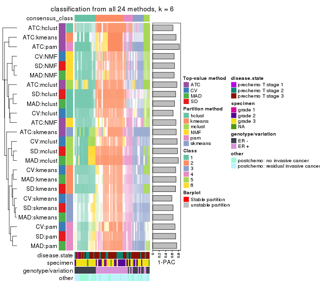
Overlap of top rows from different top-row methods:
top_rows_overlap(res_list, top_n = 1000, method = "euler")
top_rows_overlap(res_list, top_n = 2000, method = "euler")
top_rows_overlap(res_list, top_n = 3000, method = "euler")
top_rows_overlap(res_list, top_n = 4000, method = "euler")
top_rows_overlap(res_list, top_n = 5000, method = "euler")
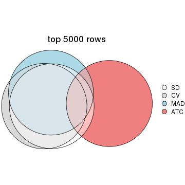
Also visualize the correspondance of rankings between different top-row methods:
top_rows_overlap(res_list, top_n = 1000, method = "correspondance")
top_rows_overlap(res_list, top_n = 2000, method = "correspondance")
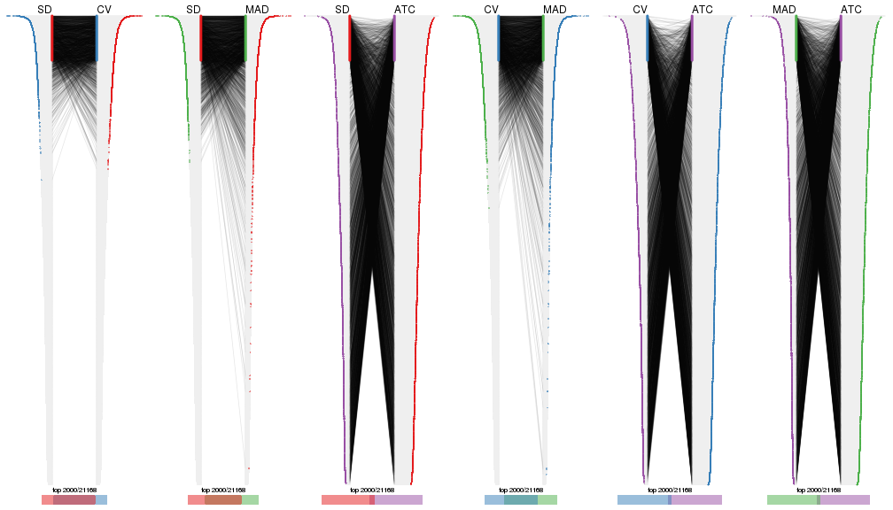
top_rows_overlap(res_list, top_n = 3000, method = "correspondance")
top_rows_overlap(res_list, top_n = 4000, method = "correspondance")
top_rows_overlap(res_list, top_n = 5000, method = "correspondance")
Heatmaps of the top rows:
top_rows_heatmap(res_list, top_n = 1000)
top_rows_heatmap(res_list, top_n = 2000)
top_rows_heatmap(res_list, top_n = 3000)
top_rows_heatmap(res_list, top_n = 4000)
top_rows_heatmap(res_list, top_n = 5000)
Test correlation between subgroups and known annotations. If the known annotation is numeric, one-way ANOVA test is applied, and if the known annotation is discrete, chi-squared contingency table test is applied.
test_to_known_factors(res_list, k = 2)
#> n disease.state(p) specimen(p) genotype/variation(p) other(p) k
#> SD:NMF 60 0.619 0.00638 4.63e-10 0.0224 2
#> CV:NMF 60 0.619 0.00638 4.63e-10 0.0224 2
#> MAD:NMF 61 0.620 0.00504 2.83e-10 0.0286 2
#> ATC:NMF 57 0.349 0.25008 8.18e-03 0.6170 2
#> SD:skmeans 61 0.611 0.00878 5.95e-11 0.0688 2
#> CV:skmeans 60 0.619 0.00638 9.75e-11 0.0408 2
#> MAD:skmeans 61 0.611 0.00878 5.95e-11 0.0688 2
#> ATC:skmeans 61 0.302 0.13314 5.64e-04 0.4698 2
#> SD:mclust 61 0.561 0.02262 1.82e-09 0.1023 2
#> CV:mclust 60 0.557 0.01116 3.02e-09 0.1429 2
#> MAD:mclust 61 0.561 0.02262 1.82e-09 0.1023 2
#> ATC:mclust 61 0.493 0.00224 3.70e-08 0.1460 2
#> SD:kmeans 60 0.619 0.00638 9.75e-11 0.0408 2
#> CV:kmeans 60 0.619 0.00638 9.75e-11 0.0408 2
#> MAD:kmeans 61 0.611 0.00878 5.95e-11 0.0688 2
#> ATC:kmeans 59 0.248 0.07657 5.09e-04 0.6449 2
#> SD:pam 60 0.619 0.00638 9.75e-11 0.0827 2
#> CV:pam 59 0.588 0.01604 1.60e-10 0.1136 2
#> MAD:pam 58 0.642 0.00301 1.90e-10 0.0606 2
#> ATC:pam 61 0.302 0.13314 5.64e-04 0.4698 2
#> SD:hclust 52 0.304 0.47914 1.29e-01 1.0000 2
#> CV:hclust 49 0.488 0.28407 2.94e-01 0.7502 2
#> MAD:hclust 42 0.418 0.49953 1.49e-02 1.0000 2
#> ATC:hclust 61 0.766 0.30520 9.09e-01 0.8898 2
test_to_known_factors(res_list, k = 3)
#> n disease.state(p) specimen(p) genotype/variation(p) other(p) k
#> SD:NMF 57 0.485 0.0370 3.36e-10 0.0404 3
#> CV:NMF 59 0.601 0.0763 6.53e-10 0.0410 3
#> MAD:NMF 60 0.467 0.0331 2.22e-10 0.0246 3
#> ATC:NMF 60 0.478 0.0187 4.01e-10 0.0527 3
#> SD:skmeans 58 0.444 0.0359 2.48e-10 0.0389 3
#> CV:skmeans 59 0.499 0.0340 1.80e-10 0.0402 3
#> MAD:skmeans 61 0.430 0.0402 4.01e-10 0.0393 3
#> ATC:skmeans 59 0.258 0.0790 5.07e-09 0.0996 3
#> SD:mclust 58 0.645 0.0998 1.59e-10 0.0330 3
#> CV:mclust 56 0.524 0.0597 4.43e-10 0.0376 3
#> MAD:mclust 59 0.609 0.0880 2.11e-10 0.0360 3
#> ATC:mclust 61 0.286 0.0498 5.64e-09 0.0825 3
#> SD:kmeans 61 0.329 0.0235 1.41e-10 0.0357 3
#> CV:kmeans 61 0.329 0.0235 1.41e-10 0.0357 3
#> MAD:kmeans 58 0.444 0.0359 2.48e-10 0.0389 3
#> ATC:kmeans 55 0.253 0.0391 4.20e-09 0.0648 3
#> SD:pam 57 0.500 0.0196 2.73e-10 0.0705 3
#> CV:pam 58 0.568 0.0408 1.62e-10 0.0980 3
#> MAD:pam 56 0.480 0.0341 4.56e-09 0.0799 3
#> ATC:pam 59 0.625 0.0340 1.27e-06 0.2644 3
#> SD:hclust 45 0.503 0.0188 2.60e-09 0.0379 3
#> CV:hclust 42 0.352 0.0304 3.51e-09 0.0620 3
#> MAD:hclust 55 0.293 0.0484 1.15e-10 0.0383 3
#> ATC:hclust 52 0.804 0.4475 5.90e-02 0.7736 3
test_to_known_factors(res_list, k = 4)
#> n disease.state(p) specimen(p) genotype/variation(p) other(p) k
#> SD:NMF 57 0.605 0.1027 8.58e-09 0.1246 4
#> CV:NMF 54 0.555 0.0940 5.38e-08 0.0915 4
#> MAD:NMF 43 0.102 0.2160 5.44e-07 0.0436 4
#> ATC:NMF 60 0.675 0.0640 2.60e-09 0.1426 4
#> SD:skmeans 55 0.434 0.1055 9.96e-09 0.0495 4
#> CV:skmeans 54 0.492 0.1289 4.20e-08 0.0812 4
#> MAD:skmeans 57 0.518 0.1896 4.50e-09 0.1142 4
#> ATC:skmeans 45 0.202 0.2468 1.37e-07 0.1723 4
#> SD:mclust 60 0.530 0.0660 1.42e-09 0.1011 4
#> CV:mclust 59 0.616 0.0891 5.43e-09 0.1197 4
#> MAD:mclust 61 0.538 0.1089 1.87e-09 0.1511 4
#> ATC:mclust 61 0.594 0.0653 1.35e-09 0.0561 4
#> SD:kmeans 54 0.475 0.2095 4.53e-09 0.1947 4
#> CV:kmeans 52 0.573 0.0958 4.58e-09 0.0744 4
#> MAD:kmeans 53 0.505 0.1833 1.38e-08 0.1895 4
#> ATC:kmeans 57 0.586 0.0620 7.18e-09 0.0789 4
#> SD:pam 52 0.440 0.0518 1.04e-07 0.1609 4
#> CV:pam 40 0.714 0.1628 6.41e-08 0.1088 4
#> MAD:pam 56 0.328 0.1383 1.43e-07 0.1929 4
#> ATC:pam 59 0.819 0.0431 4.10e-06 0.3086 4
#> SD:hclust 48 0.544 0.0599 6.10e-09 0.1123 4
#> CV:hclust 47 0.428 0.0628 1.64e-08 0.2073 4
#> MAD:hclust 54 0.547 0.0388 4.09e-09 0.0508 4
#> ATC:hclust 49 0.821 0.0887 1.31e-06 0.0611 4
test_to_known_factors(res_list, k = 5)
#> n disease.state(p) specimen(p) genotype/variation(p) other(p) k
#> SD:NMF 51 0.655 0.1656 7.11e-08 0.05708 5
#> CV:NMF 48 0.822 0.0837 7.49e-08 0.15394 5
#> MAD:NMF 47 0.763 0.0870 1.48e-07 0.06754 5
#> ATC:NMF 55 0.711 0.0357 5.41e-09 0.07594 5
#> SD:skmeans 48 0.395 0.1435 3.29e-07 0.19955 5
#> CV:skmeans 40 0.630 0.3017 2.01e-06 0.16197 5
#> MAD:skmeans 53 0.469 0.1336 9.20e-09 0.06036 5
#> ATC:skmeans 47 0.355 0.2739 4.07e-06 0.61208 5
#> SD:mclust 56 0.317 0.1802 5.72e-08 0.07483 5
#> CV:mclust 58 0.449 0.2251 2.45e-08 0.07276 5
#> MAD:mclust 59 0.277 0.1504 2.14e-08 0.06728 5
#> ATC:mclust 53 0.880 0.2633 1.85e-07 0.04919 5
#> SD:kmeans 45 0.609 0.2121 1.40e-07 0.03780 5
#> CV:kmeans 42 0.720 0.1433 1.11e-07 0.11960 5
#> MAD:kmeans 48 0.597 0.3250 1.40e-07 0.14647 5
#> ATC:kmeans 45 0.721 0.1790 5.94e-07 0.14909 5
#> SD:pam 44 0.251 0.2952 2.22e-05 0.00437 5
#> CV:pam 44 0.487 0.1819 3.11e-07 0.01870 5
#> MAD:pam 50 0.372 0.4355 1.52e-06 0.02871 5
#> ATC:pam 58 0.759 0.0987 2.90e-08 0.06810 5
#> SD:hclust 46 0.617 0.0662 1.69e-09 0.05492 5
#> CV:hclust 47 0.657 0.1214 2.64e-07 0.09215 5
#> MAD:hclust 48 0.594 0.0334 1.29e-08 0.13923 5
#> ATC:hclust 53 0.503 0.0743 5.88e-07 0.07383 5
test_to_known_factors(res_list, k = 6)
#> n disease.state(p) specimen(p) genotype/variation(p) other(p) k
#> SD:NMF 46 0.917 0.2796 3.86e-06 0.0601 6
#> CV:NMF 47 0.753 0.4152 3.63e-06 0.0278 6
#> MAD:NMF 46 0.921 0.2462 9.00e-06 0.0695 6
#> ATC:NMF 46 0.802 0.0456 1.24e-06 0.2614 6
#> SD:skmeans 32 0.312 0.5019 1.65e-04 0.6124 6
#> CV:skmeans 28 0.319 0.4168 1.86e-04 0.0285 6
#> MAD:skmeans 31 0.381 0.5892 9.92e-04 0.7706 6
#> ATC:skmeans 54 0.244 0.0970 5.37e-07 0.2614 6
#> SD:mclust 56 0.710 0.3495 1.27e-08 0.1855 6
#> CV:mclust 45 0.422 0.2388 8.16e-06 0.0657 6
#> MAD:mclust 57 0.630 0.1979 1.82e-08 0.0750 6
#> ATC:mclust 52 0.578 0.0392 2.44e-08 0.1324 6
#> SD:kmeans 46 0.767 0.4729 3.59e-06 0.2366 6
#> CV:kmeans 50 0.557 0.3475 1.52e-06 0.1688 6
#> MAD:kmeans 46 0.422 0.2984 3.73e-07 0.0588 6
#> ATC:kmeans 37 0.694 0.1999 1.42e-05 0.1336 6
#> SD:pam 41 0.223 0.4763 1.90e-05 0.0136 6
#> CV:pam 38 0.496 0.1688 5.65e-05 0.0700 6
#> MAD:pam 47 0.262 0.3546 1.56e-06 0.0443 6
#> ATC:pam 54 0.922 0.2266 4.59e-07 0.1725 6
#> SD:hclust 42 0.358 0.0351 1.09e-08 0.1202 6
#> CV:hclust 45 0.678 0.1076 1.09e-06 0.0869 6
#> MAD:hclust 44 0.364 0.0433 6.62e-09 0.0760 6
#> ATC:hclust 51 0.669 0.1356 1.49e-06 0.1847 6
The object with results only for a single top-value method and a single partition method can be extracted as:
res = res_list["SD", "hclust"]
# you can also extract it by
# res = res_list["SD:hclust"]
A summary of res and all the functions that can be applied to it:
res
#> A 'ConsensusPartition' object with k = 2, 3, 4, 5, 6.
#> On a matrix with 21168 rows and 61 columns.
#> Top rows (1000, 2000, 3000, 4000, 5000) are extracted by 'SD' method.
#> Subgroups are detected by 'hclust' method.
#> Performed in total 1250 partitions by row resampling.
#> Best k for subgroups seems to be 4.
#>
#> Following methods can be applied to this 'ConsensusPartition' object:
#> [1] "cola_report" "collect_classes" "collect_plots"
#> [4] "collect_stats" "colnames" "compare_signatures"
#> [7] "consensus_heatmap" "dimension_reduction" "functional_enrichment"
#> [10] "get_anno_col" "get_anno" "get_classes"
#> [13] "get_consensus" "get_matrix" "get_membership"
#> [16] "get_param" "get_signatures" "get_stats"
#> [19] "is_best_k" "is_stable_k" "membership_heatmap"
#> [22] "ncol" "nrow" "plot_ecdf"
#> [25] "rownames" "select_partition_number" "show"
#> [28] "suggest_best_k" "test_to_known_factors"
collect_plots() function collects all the plots made from res for all k (number of partitions)
into one single page to provide an easy and fast comparison between different k.
collect_plots(res)

The plots are:
k and the heatmap of
predicted classes for each k.k.k.k.All the plots in panels can be made by individual functions and they are plotted later in this section.
select_partition_number() produces several plots showing different
statistics for choosing “optimized” k. There are following statistics:
k;k, the area increased is defined as \(A_k - A_{k-1}\).The detailed explanations of these statistics can be found in the cola vignette.
Generally speaking, lower PAC score, higher mean silhouette score or higher
concordance corresponds to better partition. Rand index and Jaccard index
measure how similar the current partition is compared to partition with k-1.
If they are too similar, we won't accept k is better than k-1.
select_partition_number(res)
The numeric values for all these statistics can be obtained by get_stats().
get_stats(res)
#> k 1-PAC mean_silhouette concordance area_increased Rand Jaccard
#> 2 2 0.287 0.677 0.849 0.3000 0.699 0.699
#> 3 3 0.346 0.577 0.778 0.8844 0.587 0.456
#> 4 4 0.504 0.718 0.834 0.1966 0.846 0.641
#> 5 5 0.700 0.648 0.834 0.0787 0.962 0.875
#> 6 6 0.714 0.660 0.833 0.0255 0.979 0.926
suggest_best_k() suggests the best \(k\) based on these statistics. The rules are as follows:
suggest_best_k(res)
#> [1] 4
Following shows the table of the partitions (You need to click the show/hide
code output link to see it). The membership matrix (columns with name p*)
is inferred by
clue::cl_consensus()
function with the SE method. Basically the value in the membership matrix
represents the probability to belong to a certain group. The finall class
label for an item is determined with the group with highest probability it
belongs to.
In get_classes() function, the entropy is calculated from the membership
matrix and the silhouette score is calculated from the consensus matrix.
cbind(get_classes(res, k = 2), get_membership(res, k = 2))
#> class entropy silhouette p1 p2
#> GSM590886 2 0.7219 0.73040 0.200 0.800
#> GSM590859 2 0.0000 0.80448 0.000 1.000
#> GSM590864 2 0.7219 0.73040 0.200 0.800
#> GSM590844 2 0.0000 0.80448 0.000 1.000
#> GSM590878 2 0.0672 0.80548 0.008 0.992
#> GSM590841 2 0.7674 0.61461 0.224 0.776
#> GSM590843 2 0.0000 0.80448 0.000 1.000
#> GSM590895 2 0.0000 0.80448 0.000 1.000
#> GSM590897 2 0.0000 0.80448 0.000 1.000
#> GSM590842 2 0.7299 0.72637 0.204 0.796
#> GSM590869 2 0.8386 0.55276 0.268 0.732
#> GSM590874 2 0.7219 0.73040 0.200 0.800
#> GSM590889 2 0.7219 0.73040 0.200 0.800
#> GSM590851 2 0.9896 0.00452 0.440 0.560
#> GSM590873 2 0.7219 0.73040 0.200 0.800
#> GSM590898 2 0.5178 0.77819 0.116 0.884
#> GSM590882 1 0.9977 0.32466 0.528 0.472
#> GSM590849 1 0.7815 0.68605 0.768 0.232
#> GSM590892 2 0.0000 0.80448 0.000 1.000
#> GSM590900 2 0.1184 0.79995 0.016 0.984
#> GSM590896 2 0.7219 0.73040 0.200 0.800
#> GSM590870 2 0.9909 0.00522 0.444 0.556
#> GSM590853 1 0.9988 0.31531 0.520 0.480
#> GSM590884 1 0.9286 0.62987 0.656 0.344
#> GSM590847 2 0.0000 0.80448 0.000 1.000
#> GSM590857 2 0.0000 0.80448 0.000 1.000
#> GSM590865 2 0.0938 0.79853 0.012 0.988
#> GSM590872 2 0.2423 0.80275 0.040 0.960
#> GSM590883 2 0.1633 0.80510 0.024 0.976
#> GSM590887 2 0.2043 0.80443 0.032 0.968
#> GSM590888 2 0.0000 0.80448 0.000 1.000
#> GSM590891 2 0.0000 0.80448 0.000 1.000
#> GSM590899 2 0.4815 0.78350 0.104 0.896
#> GSM590848 2 0.7376 0.72202 0.208 0.792
#> GSM590850 2 0.7219 0.73040 0.200 0.800
#> GSM590855 1 0.9427 0.60134 0.640 0.360
#> GSM590860 1 0.2778 0.64047 0.952 0.048
#> GSM590890 2 0.7219 0.73040 0.200 0.800
#> GSM590894 2 0.7219 0.73040 0.200 0.800
#> GSM590852 1 1.0000 0.21432 0.500 0.500
#> GSM590858 2 0.7453 0.71676 0.212 0.788
#> GSM590862 2 0.7602 0.70565 0.220 0.780
#> GSM590867 2 0.9170 0.37831 0.332 0.668
#> GSM590871 1 0.6887 0.68957 0.816 0.184
#> GSM590877 2 0.7219 0.73040 0.200 0.800
#> GSM590879 2 0.7219 0.73040 0.200 0.800
#> GSM590880 1 0.9087 0.64885 0.676 0.324
#> GSM590845 2 0.8955 0.44281 0.312 0.688
#> GSM590846 2 0.0000 0.80448 0.000 1.000
#> GSM590875 2 0.4815 0.78350 0.104 0.896
#> GSM590881 2 0.0000 0.80448 0.000 1.000
#> GSM590854 2 0.0000 0.80448 0.000 1.000
#> GSM590856 2 0.0000 0.80448 0.000 1.000
#> GSM590861 1 0.4022 0.65784 0.920 0.080
#> GSM590863 2 0.0000 0.80448 0.000 1.000
#> GSM590866 2 0.8955 0.24628 0.312 0.688
#> GSM590876 2 0.0000 0.80448 0.000 1.000
#> GSM590893 2 0.1184 0.80500 0.016 0.984
#> GSM590885 2 0.9087 0.48189 0.324 0.676
#> GSM590840 1 0.0000 0.60333 1.000 0.000
#> GSM590868 2 0.0000 0.80448 0.000 1.000
cbind(get_classes(res, k = 3), get_membership(res, k = 3))
#> class entropy silhouette p1 p2 p3
#> GSM590886 1 0.5843 0.6525 0.732 0.252 0.016
#> GSM590859 2 0.0000 0.8860 0.000 1.000 0.000
#> GSM590864 1 0.5763 0.6542 0.716 0.276 0.008
#> GSM590844 2 0.0000 0.8860 0.000 1.000 0.000
#> GSM590878 2 0.1832 0.8725 0.036 0.956 0.008
#> GSM590841 1 0.8415 0.1607 0.572 0.320 0.108
#> GSM590843 2 0.1031 0.8788 0.024 0.976 0.000
#> GSM590895 2 0.0000 0.8860 0.000 1.000 0.000
#> GSM590897 2 0.0237 0.8850 0.004 0.996 0.000
#> GSM590842 1 0.6105 0.6520 0.724 0.252 0.024
#> GSM590869 1 0.8536 0.1458 0.596 0.260 0.144
#> GSM590874 1 0.5698 0.6531 0.736 0.252 0.012
#> GSM590889 1 0.5763 0.6542 0.716 0.276 0.008
#> GSM590851 1 0.9135 0.4258 0.544 0.208 0.248
#> GSM590873 1 0.5763 0.6542 0.716 0.276 0.008
#> GSM590898 2 0.8491 0.1134 0.312 0.572 0.116
#> GSM590882 1 0.7853 -0.2776 0.556 0.060 0.384
#> GSM590849 3 0.6282 0.6597 0.324 0.012 0.664
#> GSM590892 2 0.0237 0.8851 0.004 0.996 0.000
#> GSM590900 2 0.1031 0.8780 0.024 0.976 0.000
#> GSM590896 1 0.5138 0.6536 0.748 0.252 0.000
#> GSM590870 1 0.8464 -0.0908 0.596 0.132 0.272
#> GSM590853 1 0.8310 -0.2876 0.544 0.088 0.368
#> GSM590884 1 0.6799 -0.4601 0.532 0.012 0.456
#> GSM590847 2 0.1267 0.8779 0.024 0.972 0.004
#> GSM590857 2 0.0000 0.8860 0.000 1.000 0.000
#> GSM590865 2 0.0892 0.8785 0.020 0.980 0.000
#> GSM590872 2 0.4526 0.7691 0.104 0.856 0.040
#> GSM590883 2 0.1751 0.8713 0.012 0.960 0.028
#> GSM590887 2 0.1905 0.8677 0.016 0.956 0.028
#> GSM590888 2 0.0237 0.8856 0.004 0.996 0.000
#> GSM590891 2 0.0237 0.8850 0.004 0.996 0.000
#> GSM590899 2 0.8597 -0.0457 0.380 0.516 0.104
#> GSM590848 1 0.5956 0.6524 0.720 0.264 0.016
#> GSM590850 1 0.5919 0.6546 0.712 0.276 0.012
#> GSM590855 1 0.8316 -0.2016 0.496 0.080 0.424
#> GSM590860 3 0.2356 0.7676 0.072 0.000 0.928
#> GSM590890 1 0.5763 0.6542 0.716 0.276 0.008
#> GSM590894 1 0.6016 0.6529 0.724 0.256 0.020
#> GSM590852 1 0.8415 -0.1945 0.564 0.104 0.332
#> GSM590858 1 0.6090 0.6520 0.716 0.264 0.020
#> GSM590862 1 0.6402 0.6394 0.724 0.236 0.040
#> GSM590867 1 0.8907 0.0616 0.572 0.228 0.200
#> GSM590871 3 0.5497 0.7216 0.292 0.000 0.708
#> GSM590877 1 0.5763 0.6542 0.716 0.276 0.008
#> GSM590879 1 0.6062 0.6547 0.708 0.276 0.016
#> GSM590880 3 0.6688 0.5429 0.408 0.012 0.580
#> GSM590845 1 0.8835 0.0859 0.576 0.244 0.180
#> GSM590846 2 0.0000 0.8860 0.000 1.000 0.000
#> GSM590875 2 0.8597 -0.0457 0.380 0.516 0.104
#> GSM590881 2 0.1267 0.8779 0.024 0.972 0.004
#> GSM590854 2 0.0237 0.8850 0.004 0.996 0.000
#> GSM590856 2 0.1267 0.8779 0.024 0.972 0.004
#> GSM590861 3 0.3116 0.7791 0.108 0.000 0.892
#> GSM590863 2 0.0000 0.8860 0.000 1.000 0.000
#> GSM590866 2 0.6284 0.4710 0.016 0.680 0.304
#> GSM590876 2 0.2878 0.8003 0.096 0.904 0.000
#> GSM590893 2 0.2845 0.8341 0.068 0.920 0.012
#> GSM590885 1 0.9383 0.4171 0.512 0.236 0.252
#> GSM590840 3 0.0747 0.7260 0.016 0.000 0.984
#> GSM590868 2 0.0000 0.8860 0.000 1.000 0.000
cbind(get_classes(res, k = 4), get_membership(res, k = 4))
#> class entropy silhouette p1 p2 p3 p4
#> GSM590886 1 0.3932 0.8809 0.836 0.128 0.004 0.032
#> GSM590859 2 0.0000 0.9313 0.000 1.000 0.000 0.000
#> GSM590864 1 0.2921 0.8879 0.860 0.140 0.000 0.000
#> GSM590844 2 0.0000 0.9313 0.000 1.000 0.000 0.000
#> GSM590878 2 0.3013 0.8884 0.032 0.888 0.000 0.080
#> GSM590841 4 0.3706 0.5524 0.040 0.112 0.000 0.848
#> GSM590843 2 0.1022 0.9215 0.032 0.968 0.000 0.000
#> GSM590895 2 0.0000 0.9313 0.000 1.000 0.000 0.000
#> GSM590897 2 0.0188 0.9304 0.004 0.996 0.000 0.000
#> GSM590842 1 0.4221 0.8802 0.824 0.132 0.008 0.036
#> GSM590869 4 0.1798 0.5593 0.040 0.016 0.000 0.944
#> GSM590874 1 0.3749 0.8820 0.840 0.128 0.000 0.032
#> GSM590889 1 0.2921 0.8879 0.860 0.140 0.000 0.000
#> GSM590851 1 0.6685 0.5819 0.676 0.088 0.196 0.040
#> GSM590873 1 0.2921 0.8879 0.860 0.140 0.000 0.000
#> GSM590898 4 0.5755 0.3845 0.044 0.332 0.000 0.624
#> GSM590882 4 0.6110 0.3469 0.100 0.000 0.240 0.660
#> GSM590849 3 0.6748 0.4957 0.328 0.000 0.560 0.112
#> GSM590892 2 0.0376 0.9307 0.004 0.992 0.000 0.004
#> GSM590900 2 0.1059 0.9252 0.012 0.972 0.000 0.016
#> GSM590896 1 0.3447 0.8852 0.852 0.128 0.000 0.020
#> GSM590870 4 0.4906 0.4829 0.032 0.012 0.188 0.768
#> GSM590853 4 0.5941 0.4054 0.044 0.016 0.268 0.672
#> GSM590884 4 0.7858 -0.2038 0.288 0.000 0.316 0.396
#> GSM590847 2 0.2483 0.9044 0.032 0.916 0.000 0.052
#> GSM590857 2 0.0188 0.9312 0.000 0.996 0.000 0.004
#> GSM590865 2 0.1807 0.9190 0.008 0.940 0.000 0.052
#> GSM590872 2 0.4549 0.7359 0.036 0.776 0.000 0.188
#> GSM590883 2 0.1978 0.9063 0.004 0.928 0.000 0.068
#> GSM590887 2 0.2124 0.9041 0.008 0.924 0.000 0.068
#> GSM590888 2 0.0804 0.9297 0.008 0.980 0.000 0.012
#> GSM590891 2 0.0188 0.9304 0.004 0.996 0.000 0.000
#> GSM590899 4 0.5339 0.4550 0.040 0.272 0.000 0.688
#> GSM590848 1 0.3470 0.8832 0.852 0.132 0.008 0.008
#> GSM590850 1 0.3105 0.8882 0.856 0.140 0.004 0.000
#> GSM590855 1 0.6394 -0.0983 0.596 0.000 0.316 0.088
#> GSM590860 3 0.2342 0.7141 0.008 0.000 0.912 0.080
#> GSM590890 1 0.2921 0.8879 0.860 0.140 0.000 0.000
#> GSM590894 1 0.4078 0.8807 0.828 0.132 0.004 0.036
#> GSM590852 4 0.6005 0.4278 0.072 0.012 0.224 0.692
#> GSM590858 1 0.3726 0.8802 0.844 0.132 0.012 0.012
#> GSM590862 1 0.4422 0.8604 0.824 0.116 0.016 0.044
#> GSM590867 4 0.1920 0.5549 0.004 0.028 0.024 0.944
#> GSM590871 3 0.6711 0.3999 0.116 0.000 0.576 0.308
#> GSM590877 1 0.2921 0.8879 0.860 0.140 0.000 0.000
#> GSM590879 1 0.3432 0.8881 0.848 0.140 0.008 0.004
#> GSM590880 4 0.7125 -0.1518 0.132 0.000 0.392 0.476
#> GSM590845 4 0.1913 0.5618 0.000 0.040 0.020 0.940
#> GSM590846 2 0.0188 0.9312 0.000 0.996 0.000 0.004
#> GSM590875 4 0.5339 0.4550 0.040 0.272 0.000 0.688
#> GSM590881 2 0.2483 0.9044 0.032 0.916 0.000 0.052
#> GSM590854 2 0.0188 0.9304 0.004 0.996 0.000 0.000
#> GSM590856 2 0.2483 0.9044 0.032 0.916 0.000 0.052
#> GSM590861 3 0.3325 0.7076 0.024 0.000 0.864 0.112
#> GSM590863 2 0.0000 0.9313 0.000 1.000 0.000 0.000
#> GSM590866 2 0.5159 0.5320 0.012 0.680 0.300 0.008
#> GSM590876 2 0.4405 0.7647 0.152 0.800 0.000 0.048
#> GSM590893 2 0.3606 0.8338 0.024 0.844 0.000 0.132
#> GSM590885 1 0.9074 0.0518 0.432 0.092 0.196 0.280
#> GSM590840 3 0.0188 0.6753 0.004 0.000 0.996 0.000
#> GSM590868 2 0.0000 0.9313 0.000 1.000 0.000 0.000
cbind(get_classes(res, k = 5), get_membership(res, k = 5))
#> class entropy silhouette p1 p2 p3 p4 p5
#> GSM590886 1 0.2403 0.8895 0.912 0.012 0.056 0.016 0.004
#> GSM590859 2 0.1043 0.8977 0.000 0.960 0.000 0.000 0.040
#> GSM590864 1 0.0566 0.9023 0.984 0.012 0.004 0.000 0.000
#> GSM590844 2 0.0404 0.9033 0.000 0.988 0.000 0.000 0.012
#> GSM590878 2 0.3077 0.8629 0.008 0.864 0.000 0.100 0.028
#> GSM590841 4 0.2754 0.5781 0.004 0.080 0.000 0.884 0.032
#> GSM590843 2 0.1588 0.9014 0.008 0.948 0.000 0.028 0.016
#> GSM590895 2 0.0290 0.9034 0.000 0.992 0.000 0.000 0.008
#> GSM590897 2 0.1270 0.8938 0.000 0.948 0.000 0.000 0.052
#> GSM590842 1 0.2340 0.8877 0.908 0.012 0.068 0.012 0.000
#> GSM590869 4 0.0960 0.5669 0.004 0.008 0.016 0.972 0.000
#> GSM590874 1 0.2100 0.8938 0.924 0.012 0.048 0.016 0.000
#> GSM590889 1 0.0404 0.9028 0.988 0.012 0.000 0.000 0.000
#> GSM590851 1 0.4478 0.5465 0.700 0.008 0.272 0.000 0.020
#> GSM590873 1 0.0566 0.9026 0.984 0.012 0.000 0.000 0.004
#> GSM590898 4 0.4487 0.4343 0.008 0.324 0.004 0.660 0.004
#> GSM590882 3 0.4821 -0.1032 0.000 0.000 0.516 0.464 0.020
#> GSM590849 3 0.4325 0.2230 0.180 0.000 0.756 0.000 0.064
#> GSM590892 2 0.0486 0.9040 0.004 0.988 0.000 0.004 0.004
#> GSM590900 2 0.1369 0.8986 0.008 0.956 0.000 0.008 0.028
#> GSM590896 1 0.1787 0.8986 0.940 0.012 0.032 0.016 0.000
#> GSM590870 4 0.4317 0.3240 0.000 0.004 0.320 0.668 0.008
#> GSM590853 4 0.4491 0.2026 0.004 0.008 0.364 0.624 0.000
#> GSM590884 3 0.5516 0.3886 0.136 0.000 0.644 0.220 0.000
#> GSM590847 2 0.2757 0.8769 0.008 0.888 0.000 0.072 0.032
#> GSM590857 2 0.0451 0.9042 0.000 0.988 0.000 0.004 0.008
#> GSM590865 2 0.2451 0.8875 0.004 0.904 0.000 0.036 0.056
#> GSM590872 2 0.4153 0.7122 0.008 0.756 0.000 0.212 0.024
#> GSM590883 2 0.2367 0.8817 0.004 0.904 0.000 0.072 0.020
#> GSM590887 2 0.2484 0.8798 0.004 0.900 0.000 0.068 0.028
#> GSM590888 2 0.1173 0.9020 0.004 0.964 0.000 0.012 0.020
#> GSM590891 2 0.1478 0.8901 0.000 0.936 0.000 0.000 0.064
#> GSM590899 4 0.4369 0.5059 0.008 0.260 0.004 0.716 0.012
#> GSM590848 1 0.1243 0.8936 0.960 0.008 0.028 0.000 0.004
#> GSM590850 1 0.0693 0.9046 0.980 0.012 0.008 0.000 0.000
#> GSM590855 3 0.4890 0.0437 0.452 0.000 0.524 0.000 0.024
#> GSM590860 3 0.4961 -0.6685 0.004 0.000 0.520 0.020 0.456
#> GSM590890 1 0.0566 0.9033 0.984 0.012 0.004 0.000 0.000
#> GSM590894 1 0.2275 0.8884 0.912 0.012 0.064 0.012 0.000
#> GSM590852 4 0.4940 0.1819 0.012 0.004 0.392 0.584 0.008
#> GSM590858 1 0.1251 0.8921 0.956 0.008 0.036 0.000 0.000
#> GSM590862 1 0.2859 0.8689 0.876 0.012 0.096 0.016 0.000
#> GSM590867 4 0.3881 0.5209 0.000 0.008 0.128 0.812 0.052
#> GSM590871 3 0.4094 0.2750 0.000 0.000 0.788 0.128 0.084
#> GSM590877 1 0.0404 0.9028 0.988 0.012 0.000 0.000 0.000
#> GSM590879 1 0.1195 0.9038 0.960 0.012 0.028 0.000 0.000
#> GSM590880 3 0.4029 0.3261 0.000 0.000 0.680 0.316 0.004
#> GSM590845 4 0.3352 0.5444 0.000 0.012 0.100 0.852 0.036
#> GSM590846 2 0.0324 0.9038 0.000 0.992 0.000 0.004 0.004
#> GSM590875 4 0.4369 0.5059 0.008 0.260 0.004 0.716 0.012
#> GSM590881 2 0.2757 0.8769 0.008 0.888 0.000 0.072 0.032
#> GSM590854 2 0.1270 0.8938 0.000 0.948 0.000 0.000 0.052
#> GSM590856 2 0.2757 0.8769 0.008 0.888 0.000 0.072 0.032
#> GSM590861 3 0.4722 -0.4650 0.000 0.000 0.608 0.024 0.368
#> GSM590863 2 0.0510 0.9046 0.000 0.984 0.000 0.000 0.016
#> GSM590866 2 0.4774 0.2981 0.012 0.540 0.000 0.004 0.444
#> GSM590876 2 0.4952 0.6516 0.204 0.724 0.000 0.040 0.032
#> GSM590893 2 0.3607 0.8100 0.008 0.820 0.000 0.144 0.028
#> GSM590885 1 0.6917 -0.0760 0.444 0.012 0.320 0.224 0.000
#> GSM590840 5 0.4088 0.0000 0.000 0.000 0.368 0.000 0.632
#> GSM590868 2 0.0404 0.9033 0.000 0.988 0.000 0.000 0.012
cbind(get_classes(res, k = 6), get_membership(res, k = 6))
#> class entropy silhouette p1 p2 p3 p4 p5 p6
#> GSM590886 1 0.1913 0.8753 0.920 0.000 0.060 0.012 0.004 0.004
#> GSM590859 2 0.1327 0.8647 0.000 0.936 0.000 0.000 0.000 0.064
#> GSM590864 1 0.1262 0.8804 0.956 0.000 0.016 0.000 0.008 0.020
#> GSM590844 2 0.0632 0.8813 0.000 0.976 0.000 0.000 0.000 0.024
#> GSM590878 2 0.2842 0.8289 0.000 0.852 0.000 0.104 0.000 0.044
#> GSM590841 4 0.2781 0.5297 0.000 0.064 0.004 0.876 0.008 0.048
#> GSM590843 2 0.1649 0.8819 0.000 0.932 0.000 0.032 0.000 0.036
#> GSM590895 2 0.0547 0.8818 0.000 0.980 0.000 0.000 0.000 0.020
#> GSM590897 2 0.1501 0.8573 0.000 0.924 0.000 0.000 0.000 0.076
#> GSM590842 1 0.1931 0.8737 0.916 0.000 0.068 0.008 0.004 0.004
#> GSM590869 4 0.1075 0.5054 0.000 0.000 0.048 0.952 0.000 0.000
#> GSM590874 1 0.1723 0.8795 0.932 0.000 0.048 0.012 0.004 0.004
#> GSM590889 1 0.0291 0.8868 0.992 0.000 0.004 0.000 0.004 0.000
#> GSM590851 1 0.4662 0.4488 0.656 0.000 0.288 0.000 0.028 0.028
#> GSM590873 1 0.0922 0.8827 0.968 0.000 0.004 0.000 0.004 0.024
#> GSM590898 4 0.4163 0.2607 0.000 0.320 0.008 0.656 0.000 0.016
#> GSM590882 3 0.5109 0.0320 0.000 0.000 0.580 0.316 0.000 0.104
#> GSM590849 3 0.5403 0.2190 0.128 0.000 0.656 0.000 0.180 0.036
#> GSM590892 2 0.0363 0.8842 0.000 0.988 0.000 0.000 0.000 0.012
#> GSM590900 2 0.1225 0.8745 0.004 0.956 0.004 0.004 0.000 0.032
#> GSM590896 1 0.1440 0.8855 0.948 0.000 0.032 0.012 0.004 0.004
#> GSM590870 4 0.4913 0.2615 0.000 0.000 0.332 0.588 0.000 0.080
#> GSM590853 4 0.3765 0.0809 0.000 0.000 0.404 0.596 0.000 0.000
#> GSM590884 3 0.4519 0.4435 0.120 0.000 0.724 0.148 0.008 0.000
#> GSM590847 2 0.2499 0.8492 0.000 0.880 0.000 0.072 0.000 0.048
#> GSM590857 2 0.0363 0.8844 0.000 0.988 0.000 0.000 0.000 0.012
#> GSM590865 2 0.2189 0.8613 0.000 0.904 0.004 0.032 0.000 0.060
#> GSM590872 2 0.3960 0.6531 0.000 0.752 0.004 0.204 0.008 0.032
#> GSM590883 2 0.2164 0.8580 0.000 0.900 0.000 0.068 0.000 0.032
#> GSM590887 2 0.2518 0.8561 0.000 0.892 0.004 0.060 0.008 0.036
#> GSM590888 2 0.1116 0.8845 0.000 0.960 0.004 0.008 0.000 0.028
#> GSM590891 2 0.1765 0.8431 0.000 0.904 0.000 0.000 0.000 0.096
#> GSM590899 4 0.4111 0.3945 0.000 0.244 0.012 0.716 0.000 0.028
#> GSM590848 1 0.1636 0.8686 0.936 0.000 0.036 0.000 0.004 0.024
#> GSM590850 1 0.0862 0.8884 0.972 0.000 0.016 0.000 0.008 0.004
#> GSM590855 3 0.5189 0.2271 0.392 0.000 0.540 0.000 0.032 0.036
#> GSM590860 5 0.3533 0.6590 0.004 0.000 0.236 0.012 0.748 0.000
#> GSM590890 1 0.0405 0.8876 0.988 0.000 0.008 0.000 0.004 0.000
#> GSM590894 1 0.1872 0.8742 0.920 0.000 0.064 0.008 0.004 0.004
#> GSM590852 4 0.5367 0.0942 0.012 0.000 0.416 0.496 0.000 0.076
#> GSM590858 1 0.1511 0.8737 0.940 0.000 0.044 0.000 0.004 0.012
#> GSM590862 1 0.2407 0.8557 0.884 0.000 0.096 0.012 0.004 0.004
#> GSM590867 4 0.5538 0.3943 0.000 0.000 0.188 0.612 0.016 0.184
#> GSM590871 3 0.3695 0.2522 0.000 0.000 0.776 0.060 0.164 0.000
#> GSM590877 1 0.0665 0.8864 0.980 0.000 0.008 0.000 0.008 0.004
#> GSM590879 1 0.1080 0.8893 0.960 0.000 0.032 0.000 0.004 0.004
#> GSM590880 3 0.3558 0.3705 0.000 0.000 0.736 0.248 0.016 0.000
#> GSM590845 4 0.4409 0.4610 0.000 0.000 0.120 0.736 0.008 0.136
#> GSM590846 2 0.0260 0.8841 0.000 0.992 0.000 0.000 0.000 0.008
#> GSM590875 4 0.4111 0.3945 0.000 0.244 0.012 0.716 0.000 0.028
#> GSM590881 2 0.2499 0.8492 0.000 0.880 0.000 0.072 0.000 0.048
#> GSM590854 2 0.1501 0.8573 0.000 0.924 0.000 0.000 0.000 0.076
#> GSM590856 2 0.2499 0.8492 0.000 0.880 0.000 0.072 0.000 0.048
#> GSM590861 5 0.4158 0.4360 0.000 0.000 0.416 0.008 0.572 0.004
#> GSM590863 2 0.0713 0.8829 0.000 0.972 0.000 0.000 0.000 0.028
#> GSM590866 6 0.3652 0.0000 0.000 0.264 0.000 0.000 0.016 0.720
#> GSM590876 2 0.4576 0.4888 0.212 0.716 0.004 0.036 0.000 0.032
#> GSM590893 2 0.3268 0.7680 0.000 0.812 0.000 0.144 0.000 0.044
#> GSM590885 1 0.6159 -0.0902 0.452 0.004 0.344 0.192 0.000 0.008
#> GSM590840 5 0.0713 0.6160 0.000 0.000 0.028 0.000 0.972 0.000
#> GSM590868 2 0.0632 0.8813 0.000 0.976 0.000 0.000 0.000 0.024
Heatmaps for the consensus matrix. It visualizes the probability of two samples to be in a same group.
consensus_heatmap(res, k = 2)
consensus_heatmap(res, k = 3)
consensus_heatmap(res, k = 4)
consensus_heatmap(res, k = 5)
consensus_heatmap(res, k = 6)
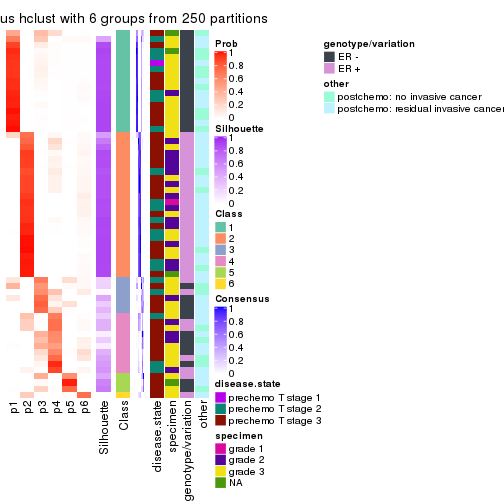
Heatmaps for the membership of samples in all partitions to see how consistent they are:
membership_heatmap(res, k = 2)
membership_heatmap(res, k = 3)
membership_heatmap(res, k = 4)
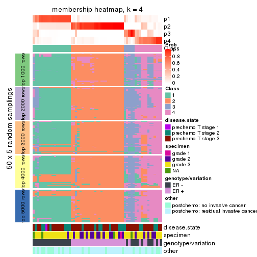
membership_heatmap(res, k = 5)
membership_heatmap(res, k = 6)
As soon as we have had the classes for columns, we can look for signatures which are significantly different between classes which can be candidate marks for certain classes. Following are the heatmaps for signatures.
Signature heatmaps where rows are scaled:
get_signatures(res, k = 2)
get_signatures(res, k = 3)
get_signatures(res, k = 4)
get_signatures(res, k = 5)
get_signatures(res, k = 6)
Signature heatmaps where rows are not scaled:
get_signatures(res, k = 2, scale_rows = FALSE)
get_signatures(res, k = 3, scale_rows = FALSE)
get_signatures(res, k = 4, scale_rows = FALSE)
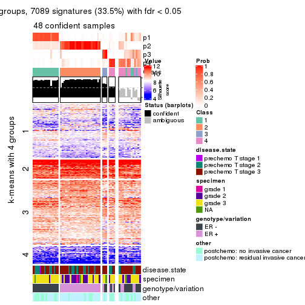
get_signatures(res, k = 5, scale_rows = FALSE)
get_signatures(res, k = 6, scale_rows = FALSE)
Compare the overlap of signatures from different k:
compare_signatures(res)
get_signature() returns a data frame invisibly. TO get the list of signatures, the function
call should be assigned to a variable explicitly. In following code, if plot argument is set
to FALSE, no heatmap is plotted while only the differential analysis is performed.
# code only for demonstration
tb = get_signature(res, k = ..., plot = FALSE)
An example of the output of tb is:
#> which_row fdr mean_1 mean_2 scaled_mean_1 scaled_mean_2 km
#> 1 38 0.042760348 8.373488 9.131774 -0.5533452 0.5164555 1
#> 2 40 0.018707592 7.106213 8.469186 -0.6173731 0.5762149 1
#> 3 55 0.019134737 10.221463 11.207825 -0.6159697 0.5749050 1
#> 4 59 0.006059896 5.921854 7.869574 -0.6899429 0.6439467 1
#> 5 60 0.018055526 8.928898 10.211722 -0.6204761 0.5791110 1
#> 6 98 0.009384629 15.714769 14.887706 0.6635654 -0.6193277 2
...
The columns in tb are:
which_row: row indices corresponding to the input matrix.fdr: FDR for the differential test. mean_x: The mean value in group x.scaled_mean_x: The mean value in group x after rows are scaled.km: Row groups if k-means clustering is applied to rows.UMAP plot which shows how samples are separated.
dimension_reduction(res, k = 2, method = "UMAP")
dimension_reduction(res, k = 3, method = "UMAP")
dimension_reduction(res, k = 4, method = "UMAP")

dimension_reduction(res, k = 5, method = "UMAP")
dimension_reduction(res, k = 6, method = "UMAP")
Following heatmap shows how subgroups are split when increasing k:
collect_classes(res)
Test correlation between subgroups and known annotations. If the known annotation is numeric, one-way ANOVA test is applied, and if the known annotation is discrete, chi-squared contingency table test is applied.
test_to_known_factors(res)
#> n disease.state(p) specimen(p) genotype/variation(p) other(p) k
#> SD:hclust 52 0.304 0.4791 1.29e-01 1.0000 2
#> SD:hclust 45 0.503 0.0188 2.60e-09 0.0379 3
#> SD:hclust 48 0.544 0.0599 6.10e-09 0.1123 4
#> SD:hclust 46 0.617 0.0662 1.69e-09 0.0549 5
#> SD:hclust 42 0.358 0.0351 1.09e-08 0.1202 6
If matrix rows can be associated to genes, consider to use functional_enrichment(res,
...) to perform function enrichment for the signature genes. See this vignette for more detailed explanations.
The object with results only for a single top-value method and a single partition method can be extracted as:
res = res_list["SD", "kmeans"]
# you can also extract it by
# res = res_list["SD:kmeans"]
A summary of res and all the functions that can be applied to it:
res
#> A 'ConsensusPartition' object with k = 2, 3, 4, 5, 6.
#> On a matrix with 21168 rows and 61 columns.
#> Top rows (1000, 2000, 3000, 4000, 5000) are extracted by 'SD' method.
#> Subgroups are detected by 'kmeans' method.
#> Performed in total 1250 partitions by row resampling.
#> Best k for subgroups seems to be 2.
#>
#> Following methods can be applied to this 'ConsensusPartition' object:
#> [1] "cola_report" "collect_classes" "collect_plots"
#> [4] "collect_stats" "colnames" "compare_signatures"
#> [7] "consensus_heatmap" "dimension_reduction" "functional_enrichment"
#> [10] "get_anno_col" "get_anno" "get_classes"
#> [13] "get_consensus" "get_matrix" "get_membership"
#> [16] "get_param" "get_signatures" "get_stats"
#> [19] "is_best_k" "is_stable_k" "membership_heatmap"
#> [22] "ncol" "nrow" "plot_ecdf"
#> [25] "rownames" "select_partition_number" "show"
#> [28] "suggest_best_k" "test_to_known_factors"
collect_plots() function collects all the plots made from res for all k (number of partitions)
into one single page to provide an easy and fast comparison between different k.
collect_plots(res)
The plots are:
k and the heatmap of
predicted classes for each k.k.k.k.All the plots in panels can be made by individual functions and they are plotted later in this section.
select_partition_number() produces several plots showing different
statistics for choosing “optimized” k. There are following statistics:
k;k, the area increased is defined as \(A_k - A_{k-1}\).The detailed explanations of these statistics can be found in the cola vignette.
Generally speaking, lower PAC score, higher mean silhouette score or higher
concordance corresponds to better partition. Rand index and Jaccard index
measure how similar the current partition is compared to partition with k-1.
If they are too similar, we won't accept k is better than k-1.
select_partition_number(res)
The numeric values for all these statistics can be obtained by get_stats().
get_stats(res)
#> k 1-PAC mean_silhouette concordance area_increased Rand Jaccard
#> 2 2 1.000 0.950 0.970 0.5046 0.493 0.493
#> 3 3 0.873 0.948 0.950 0.2848 0.861 0.717
#> 4 4 0.802 0.744 0.866 0.1284 0.894 0.707
#> 5 5 0.722 0.613 0.763 0.0641 0.933 0.760
#> 6 6 0.711 0.583 0.707 0.0471 0.957 0.818
suggest_best_k() suggests the best \(k\) based on these statistics. The rules are as follows:
suggest_best_k(res)
#> [1] 2
Following shows the table of the partitions (You need to click the show/hide
code output link to see it). The membership matrix (columns with name p*)
is inferred by
clue::cl_consensus()
function with the SE method. Basically the value in the membership matrix
represents the probability to belong to a certain group. The finall class
label for an item is determined with the group with highest probability it
belongs to.
In get_classes() function, the entropy is calculated from the membership
matrix and the silhouette score is calculated from the consensus matrix.
cbind(get_classes(res, k = 2), get_membership(res, k = 2))
#> class entropy silhouette p1 p2
#> GSM590886 1 0.295 0.953 0.948 0.052
#> GSM590859 2 0.000 0.992 0.000 1.000
#> GSM590864 1 0.295 0.953 0.948 0.052
#> GSM590844 2 0.000 0.992 0.000 1.000
#> GSM590878 2 0.000 0.992 0.000 1.000
#> GSM590841 2 0.295 0.949 0.052 0.948
#> GSM590843 2 0.000 0.992 0.000 1.000
#> GSM590895 2 0.000 0.992 0.000 1.000
#> GSM590897 2 0.000 0.992 0.000 1.000
#> GSM590842 1 0.224 0.952 0.964 0.036
#> GSM590869 1 0.697 0.762 0.812 0.188
#> GSM590874 1 0.295 0.953 0.948 0.052
#> GSM590889 1 0.295 0.953 0.948 0.052
#> GSM590851 1 0.295 0.953 0.948 0.052
#> GSM590873 1 0.295 0.953 0.948 0.052
#> GSM590898 2 0.295 0.949 0.052 0.948
#> GSM590882 1 0.000 0.946 1.000 0.000
#> GSM590849 1 0.000 0.946 1.000 0.000
#> GSM590892 2 0.000 0.992 0.000 1.000
#> GSM590900 2 0.000 0.992 0.000 1.000
#> GSM590896 1 0.295 0.953 0.948 0.052
#> GSM590870 1 0.000 0.946 1.000 0.000
#> GSM590853 1 0.000 0.946 1.000 0.000
#> GSM590884 1 0.000 0.946 1.000 0.000
#> GSM590847 2 0.000 0.992 0.000 1.000
#> GSM590857 2 0.000 0.992 0.000 1.000
#> GSM590865 2 0.000 0.992 0.000 1.000
#> GSM590872 2 0.000 0.992 0.000 1.000
#> GSM590883 2 0.000 0.992 0.000 1.000
#> GSM590887 2 0.000 0.992 0.000 1.000
#> GSM590888 2 0.000 0.992 0.000 1.000
#> GSM590891 2 0.000 0.992 0.000 1.000
#> GSM590899 2 0.295 0.949 0.052 0.948
#> GSM590848 1 0.295 0.953 0.948 0.052
#> GSM590850 1 0.295 0.953 0.948 0.052
#> GSM590855 1 0.295 0.953 0.948 0.052
#> GSM590860 1 0.000 0.946 1.000 0.000
#> GSM590890 1 0.295 0.953 0.948 0.052
#> GSM590894 1 0.295 0.953 0.948 0.052
#> GSM590852 1 0.000 0.946 1.000 0.000
#> GSM590858 1 0.295 0.953 0.948 0.052
#> GSM590862 1 0.295 0.953 0.948 0.052
#> GSM590867 1 0.416 0.889 0.916 0.084
#> GSM590871 1 0.000 0.946 1.000 0.000
#> GSM590877 1 0.295 0.953 0.948 0.052
#> GSM590879 1 0.295 0.953 0.948 0.052
#> GSM590880 1 0.000 0.946 1.000 0.000
#> GSM590845 1 0.995 0.128 0.540 0.460
#> GSM590846 2 0.000 0.992 0.000 1.000
#> GSM590875 2 0.295 0.949 0.052 0.948
#> GSM590881 2 0.000 0.992 0.000 1.000
#> GSM590854 2 0.000 0.992 0.000 1.000
#> GSM590856 2 0.000 0.992 0.000 1.000
#> GSM590861 1 0.000 0.946 1.000 0.000
#> GSM590863 2 0.000 0.992 0.000 1.000
#> GSM590866 2 0.000 0.992 0.000 1.000
#> GSM590876 2 0.000 0.992 0.000 1.000
#> GSM590893 2 0.000 0.992 0.000 1.000
#> GSM590885 1 0.000 0.946 1.000 0.000
#> GSM590840 1 0.000 0.946 1.000 0.000
#> GSM590868 2 0.000 0.992 0.000 1.000
cbind(get_classes(res, k = 3), get_membership(res, k = 3))
#> class entropy silhouette p1 p2 p3
#> GSM590886 1 0.0000 0.992 1.000 0.000 0.000
#> GSM590859 2 0.0000 0.960 0.000 1.000 0.000
#> GSM590864 1 0.0000 0.992 1.000 0.000 0.000
#> GSM590844 2 0.0000 0.960 0.000 1.000 0.000
#> GSM590878 2 0.1529 0.953 0.000 0.960 0.040
#> GSM590841 2 0.4452 0.835 0.000 0.808 0.192
#> GSM590843 2 0.0000 0.960 0.000 1.000 0.000
#> GSM590895 2 0.0000 0.960 0.000 1.000 0.000
#> GSM590897 2 0.0000 0.960 0.000 1.000 0.000
#> GSM590842 1 0.0424 0.994 0.992 0.000 0.008
#> GSM590869 3 0.0747 0.896 0.016 0.000 0.984
#> GSM590874 1 0.0000 0.992 1.000 0.000 0.000
#> GSM590889 1 0.0000 0.992 1.000 0.000 0.000
#> GSM590851 1 0.0747 0.991 0.984 0.000 0.016
#> GSM590873 1 0.0592 0.993 0.988 0.000 0.012
#> GSM590898 2 0.4912 0.838 0.008 0.796 0.196
#> GSM590882 3 0.3116 0.939 0.108 0.000 0.892
#> GSM590849 3 0.3551 0.921 0.132 0.000 0.868
#> GSM590892 2 0.0000 0.960 0.000 1.000 0.000
#> GSM590900 2 0.0000 0.960 0.000 1.000 0.000
#> GSM590896 1 0.0424 0.994 0.992 0.000 0.008
#> GSM590870 3 0.1411 0.921 0.036 0.000 0.964
#> GSM590853 3 0.2537 0.937 0.080 0.000 0.920
#> GSM590884 3 0.3752 0.917 0.144 0.000 0.856
#> GSM590847 2 0.1529 0.953 0.000 0.960 0.040
#> GSM590857 2 0.0000 0.960 0.000 1.000 0.000
#> GSM590865 2 0.0000 0.960 0.000 1.000 0.000
#> GSM590872 2 0.2066 0.944 0.000 0.940 0.060
#> GSM590883 2 0.2066 0.944 0.000 0.940 0.060
#> GSM590887 2 0.2066 0.944 0.000 0.940 0.060
#> GSM590888 2 0.1860 0.948 0.000 0.948 0.052
#> GSM590891 2 0.0000 0.960 0.000 1.000 0.000
#> GSM590899 2 0.4912 0.838 0.008 0.796 0.196
#> GSM590848 1 0.0747 0.991 0.984 0.000 0.016
#> GSM590850 1 0.0000 0.992 1.000 0.000 0.000
#> GSM590855 1 0.0747 0.991 0.984 0.000 0.016
#> GSM590860 3 0.3619 0.918 0.136 0.000 0.864
#> GSM590890 1 0.0424 0.994 0.992 0.000 0.008
#> GSM590894 1 0.0424 0.994 0.992 0.000 0.008
#> GSM590852 3 0.2625 0.941 0.084 0.000 0.916
#> GSM590858 1 0.0592 0.993 0.988 0.000 0.012
#> GSM590862 1 0.0424 0.994 0.992 0.000 0.008
#> GSM590867 3 0.1267 0.914 0.024 0.004 0.972
#> GSM590871 3 0.3038 0.939 0.104 0.000 0.896
#> GSM590877 1 0.0000 0.992 1.000 0.000 0.000
#> GSM590879 1 0.0592 0.993 0.988 0.000 0.012
#> GSM590880 3 0.2537 0.941 0.080 0.000 0.920
#> GSM590845 3 0.1337 0.905 0.012 0.016 0.972
#> GSM590846 2 0.0000 0.960 0.000 1.000 0.000
#> GSM590875 2 0.4912 0.838 0.008 0.796 0.196
#> GSM590881 2 0.1950 0.951 0.008 0.952 0.040
#> GSM590854 2 0.0000 0.960 0.000 1.000 0.000
#> GSM590856 2 0.1529 0.953 0.000 0.960 0.040
#> GSM590861 3 0.2625 0.942 0.084 0.000 0.916
#> GSM590863 2 0.0000 0.960 0.000 1.000 0.000
#> GSM590866 2 0.0000 0.960 0.000 1.000 0.000
#> GSM590876 2 0.1950 0.951 0.008 0.952 0.040
#> GSM590893 2 0.2625 0.936 0.000 0.916 0.084
#> GSM590885 3 0.5178 0.777 0.256 0.000 0.744
#> GSM590840 3 0.2878 0.940 0.096 0.000 0.904
#> GSM590868 2 0.0000 0.960 0.000 1.000 0.000
cbind(get_classes(res, k = 4), get_membership(res, k = 4))
#> class entropy silhouette p1 p2 p3 p4
#> GSM590886 1 0.1022 0.96622 0.968 0.000 0.000 0.032
#> GSM590859 2 0.0376 0.86842 0.000 0.992 0.004 0.004
#> GSM590864 1 0.1824 0.96133 0.936 0.000 0.004 0.060
#> GSM590844 2 0.0188 0.86951 0.000 0.996 0.004 0.000
#> GSM590878 2 0.4477 0.55866 0.000 0.688 0.000 0.312
#> GSM590841 4 0.3597 0.61566 0.000 0.148 0.016 0.836
#> GSM590843 2 0.0188 0.86951 0.000 0.996 0.004 0.000
#> GSM590895 2 0.0188 0.86951 0.000 0.996 0.004 0.000
#> GSM590897 2 0.0188 0.86951 0.000 0.996 0.004 0.000
#> GSM590842 1 0.0817 0.96714 0.976 0.000 0.000 0.024
#> GSM590869 4 0.2149 0.48367 0.000 0.000 0.088 0.912
#> GSM590874 1 0.1022 0.96622 0.968 0.000 0.000 0.032
#> GSM590889 1 0.1022 0.96622 0.968 0.000 0.000 0.032
#> GSM590851 1 0.2060 0.95511 0.932 0.000 0.016 0.052
#> GSM590873 1 0.1661 0.96008 0.944 0.000 0.004 0.052
#> GSM590898 4 0.2266 0.63332 0.000 0.084 0.004 0.912
#> GSM590882 3 0.4706 0.77443 0.028 0.000 0.748 0.224
#> GSM590849 3 0.0707 0.76679 0.020 0.000 0.980 0.000
#> GSM590892 2 0.0000 0.86913 0.000 1.000 0.000 0.000
#> GSM590900 2 0.0188 0.86832 0.000 0.996 0.000 0.004
#> GSM590896 1 0.0921 0.96677 0.972 0.000 0.000 0.028
#> GSM590870 3 0.5236 0.58759 0.008 0.000 0.560 0.432
#> GSM590853 3 0.5386 0.71253 0.024 0.000 0.632 0.344
#> GSM590884 3 0.5247 0.76421 0.100 0.000 0.752 0.148
#> GSM590847 2 0.3801 0.69694 0.000 0.780 0.000 0.220
#> GSM590857 2 0.0188 0.86832 0.000 0.996 0.000 0.004
#> GSM590865 2 0.1004 0.85860 0.000 0.972 0.004 0.024
#> GSM590872 4 0.5511 0.11751 0.000 0.484 0.016 0.500
#> GSM590883 2 0.5466 0.00836 0.000 0.548 0.016 0.436
#> GSM590887 4 0.5510 0.12470 0.000 0.480 0.016 0.504
#> GSM590888 2 0.5130 0.40295 0.000 0.652 0.016 0.332
#> GSM590891 2 0.0188 0.86951 0.000 0.996 0.004 0.000
#> GSM590899 4 0.2266 0.63332 0.000 0.084 0.004 0.912
#> GSM590848 1 0.1661 0.96008 0.944 0.000 0.004 0.052
#> GSM590850 1 0.0336 0.96872 0.992 0.000 0.000 0.008
#> GSM590855 1 0.2060 0.95511 0.932 0.000 0.016 0.052
#> GSM590860 3 0.0707 0.76679 0.020 0.000 0.980 0.000
#> GSM590890 1 0.1211 0.96819 0.960 0.000 0.000 0.040
#> GSM590894 1 0.0921 0.96677 0.972 0.000 0.000 0.028
#> GSM590852 3 0.5010 0.75299 0.024 0.000 0.700 0.276
#> GSM590858 1 0.1743 0.96051 0.940 0.000 0.004 0.056
#> GSM590862 1 0.0469 0.96872 0.988 0.000 0.000 0.012
#> GSM590867 3 0.5151 0.50230 0.004 0.000 0.532 0.464
#> GSM590871 3 0.0817 0.76659 0.024 0.000 0.976 0.000
#> GSM590877 1 0.0469 0.96898 0.988 0.000 0.000 0.012
#> GSM590879 1 0.1211 0.96448 0.960 0.000 0.000 0.040
#> GSM590880 3 0.4538 0.77605 0.024 0.000 0.760 0.216
#> GSM590845 4 0.5147 -0.47612 0.004 0.000 0.460 0.536
#> GSM590846 2 0.0000 0.86913 0.000 1.000 0.000 0.000
#> GSM590875 4 0.2266 0.63332 0.000 0.084 0.004 0.912
#> GSM590881 2 0.4222 0.62986 0.000 0.728 0.000 0.272
#> GSM590854 2 0.0188 0.86951 0.000 0.996 0.004 0.000
#> GSM590856 2 0.3801 0.69694 0.000 0.780 0.000 0.220
#> GSM590861 3 0.0707 0.76679 0.020 0.000 0.980 0.000
#> GSM590863 2 0.0376 0.86842 0.000 0.992 0.004 0.004
#> GSM590866 2 0.0672 0.86514 0.000 0.984 0.008 0.008
#> GSM590876 2 0.4252 0.66092 0.000 0.744 0.004 0.252
#> GSM590893 4 0.4855 0.27509 0.000 0.400 0.000 0.600
#> GSM590885 3 0.7167 0.55429 0.136 0.000 0.468 0.396
#> GSM590840 3 0.0707 0.76679 0.020 0.000 0.980 0.000
#> GSM590868 2 0.0188 0.86951 0.000 0.996 0.004 0.000
cbind(get_classes(res, k = 5), get_membership(res, k = 5))
#> class entropy silhouette p1 p2 p3 p4 p5
#> GSM590886 1 0.3817 0.8775 0.740 0.000 0.004 0.004 0.252
#> GSM590859 2 0.0771 0.8381 0.000 0.976 0.000 0.004 0.020
#> GSM590864 1 0.1205 0.8757 0.956 0.000 0.000 0.004 0.040
#> GSM590844 2 0.0404 0.8411 0.000 0.988 0.000 0.000 0.012
#> GSM590878 4 0.5821 -0.0555 0.000 0.424 0.004 0.492 0.080
#> GSM590841 4 0.4955 0.2577 0.000 0.072 0.000 0.680 0.248
#> GSM590843 2 0.0693 0.8390 0.000 0.980 0.000 0.012 0.008
#> GSM590895 2 0.0290 0.8401 0.000 0.992 0.000 0.008 0.000
#> GSM590897 2 0.0566 0.8395 0.000 0.984 0.000 0.012 0.004
#> GSM590842 1 0.3352 0.8905 0.800 0.000 0.004 0.004 0.192
#> GSM590869 4 0.3759 0.2085 0.000 0.000 0.016 0.764 0.220
#> GSM590874 1 0.3728 0.8812 0.748 0.000 0.000 0.008 0.244
#> GSM590889 1 0.3783 0.8797 0.740 0.000 0.000 0.008 0.252
#> GSM590851 1 0.1493 0.8623 0.948 0.000 0.028 0.000 0.024
#> GSM590873 1 0.0609 0.8736 0.980 0.000 0.000 0.000 0.020
#> GSM590898 4 0.3151 0.4044 0.000 0.020 0.000 0.836 0.144
#> GSM590882 3 0.5918 -0.1338 0.004 0.000 0.508 0.092 0.396
#> GSM590849 3 0.0566 0.5757 0.004 0.000 0.984 0.000 0.012
#> GSM590892 2 0.1331 0.8359 0.000 0.952 0.000 0.008 0.040
#> GSM590900 2 0.1845 0.8301 0.000 0.928 0.000 0.016 0.056
#> GSM590896 1 0.3196 0.8918 0.804 0.000 0.000 0.004 0.192
#> GSM590870 5 0.6721 0.5638 0.000 0.000 0.340 0.256 0.404
#> GSM590853 3 0.6661 -0.4171 0.004 0.000 0.444 0.200 0.352
#> GSM590884 3 0.6175 0.1475 0.064 0.000 0.564 0.040 0.332
#> GSM590847 2 0.4209 0.6261 0.000 0.744 0.004 0.224 0.028
#> GSM590857 2 0.1845 0.8301 0.000 0.928 0.000 0.016 0.056
#> GSM590865 2 0.5729 0.5184 0.000 0.616 0.000 0.148 0.236
#> GSM590872 4 0.4863 0.5325 0.000 0.296 0.000 0.656 0.048
#> GSM590883 4 0.6155 0.4070 0.000 0.336 0.000 0.516 0.148
#> GSM590887 4 0.5657 0.5311 0.000 0.256 0.000 0.616 0.128
#> GSM590888 4 0.6532 0.2903 0.000 0.348 0.000 0.448 0.204
#> GSM590891 2 0.0912 0.8368 0.000 0.972 0.000 0.016 0.012
#> GSM590899 4 0.3151 0.4080 0.000 0.020 0.000 0.836 0.144
#> GSM590848 1 0.1403 0.8653 0.952 0.000 0.024 0.000 0.024
#> GSM590850 1 0.3548 0.8899 0.796 0.000 0.004 0.012 0.188
#> GSM590855 1 0.1399 0.8630 0.952 0.000 0.028 0.000 0.020
#> GSM590860 3 0.0324 0.5737 0.004 0.000 0.992 0.000 0.004
#> GSM590890 1 0.3013 0.8971 0.832 0.000 0.000 0.008 0.160
#> GSM590894 1 0.3196 0.8916 0.804 0.000 0.000 0.004 0.192
#> GSM590852 3 0.6160 -0.2714 0.004 0.000 0.476 0.116 0.404
#> GSM590858 1 0.1956 0.8705 0.916 0.000 0.000 0.008 0.076
#> GSM590862 1 0.3006 0.8985 0.836 0.000 0.004 0.004 0.156
#> GSM590867 5 0.6583 0.6390 0.000 0.000 0.276 0.256 0.468
#> GSM590871 3 0.0865 0.5720 0.004 0.000 0.972 0.000 0.024
#> GSM590877 1 0.3496 0.8885 0.788 0.000 0.000 0.012 0.200
#> GSM590879 1 0.0404 0.8832 0.988 0.000 0.000 0.000 0.012
#> GSM590880 3 0.5508 0.1392 0.004 0.000 0.604 0.076 0.316
#> GSM590845 5 0.6466 0.6476 0.000 0.000 0.204 0.316 0.480
#> GSM590846 2 0.1331 0.8359 0.000 0.952 0.000 0.008 0.040
#> GSM590875 4 0.3194 0.4046 0.000 0.020 0.000 0.832 0.148
#> GSM590881 2 0.5314 0.4984 0.000 0.632 0.004 0.296 0.068
#> GSM590854 2 0.0000 0.8402 0.000 1.000 0.000 0.000 0.000
#> GSM590856 2 0.4125 0.6276 0.000 0.748 0.004 0.224 0.024
#> GSM590861 3 0.0566 0.5764 0.004 0.000 0.984 0.000 0.012
#> GSM590863 2 0.1872 0.8307 0.000 0.928 0.000 0.020 0.052
#> GSM590866 2 0.5148 0.5734 0.000 0.688 0.000 0.120 0.192
#> GSM590876 2 0.6668 0.1665 0.000 0.448 0.004 0.344 0.204
#> GSM590893 4 0.3048 0.5728 0.000 0.176 0.000 0.820 0.004
#> GSM590885 5 0.7310 0.3814 0.064 0.000 0.304 0.152 0.480
#> GSM590840 3 0.0566 0.5709 0.004 0.000 0.984 0.000 0.012
#> GSM590868 2 0.0807 0.8379 0.000 0.976 0.000 0.012 0.012
cbind(get_classes(res, k = 6), get_membership(res, k = 6))
#> class entropy silhouette p1 p2 p3 p4 p5 p6
#> GSM590886 1 0.1972 0.7455 0.916 0.000 0.024 0.000 0.004 0.056
#> GSM590859 2 0.1633 0.7091 0.000 0.932 0.024 0.000 0.000 0.044
#> GSM590864 1 0.4083 0.7197 0.532 0.000 0.008 0.000 0.000 0.460
#> GSM590844 2 0.0806 0.7309 0.000 0.972 0.008 0.000 0.000 0.020
#> GSM590878 4 0.6723 -0.4265 0.000 0.268 0.060 0.464 0.000 0.208
#> GSM590841 4 0.4342 0.4143 0.000 0.024 0.268 0.688 0.000 0.020
#> GSM590843 2 0.1296 0.7253 0.000 0.952 0.004 0.012 0.000 0.032
#> GSM590895 2 0.0622 0.7312 0.000 0.980 0.000 0.008 0.000 0.012
#> GSM590897 2 0.1116 0.7273 0.000 0.960 0.004 0.008 0.000 0.028
#> GSM590842 1 0.0767 0.7641 0.976 0.000 0.008 0.000 0.004 0.012
#> GSM590869 4 0.2700 0.4772 0.000 0.000 0.156 0.836 0.004 0.004
#> GSM590874 1 0.2088 0.7483 0.904 0.000 0.028 0.000 0.000 0.068
#> GSM590889 1 0.2277 0.7498 0.892 0.000 0.032 0.000 0.000 0.076
#> GSM590851 1 0.4828 0.6901 0.500 0.000 0.004 0.000 0.044 0.452
#> GSM590873 1 0.3838 0.7138 0.552 0.000 0.000 0.000 0.000 0.448
#> GSM590898 4 0.1501 0.5727 0.000 0.000 0.076 0.924 0.000 0.000
#> GSM590882 3 0.4530 0.5927 0.004 0.000 0.608 0.016 0.360 0.012
#> GSM590849 5 0.1007 0.9400 0.000 0.000 0.044 0.000 0.956 0.000
#> GSM590892 2 0.2685 0.6802 0.000 0.868 0.072 0.000 0.000 0.060
#> GSM590900 2 0.3413 0.6237 0.000 0.812 0.080 0.000 0.000 0.108
#> GSM590896 1 0.0146 0.7663 0.996 0.000 0.000 0.000 0.000 0.004
#> GSM590870 3 0.5349 0.6455 0.000 0.000 0.608 0.172 0.216 0.004
#> GSM590853 3 0.6211 0.5233 0.000 0.000 0.424 0.248 0.320 0.008
#> GSM590884 3 0.5745 0.4443 0.120 0.000 0.468 0.000 0.400 0.012
#> GSM590847 2 0.4970 0.3263 0.000 0.680 0.016 0.192 0.000 0.112
#> GSM590857 2 0.3509 0.6132 0.000 0.804 0.084 0.000 0.000 0.112
#> GSM590865 6 0.6826 0.5455 0.000 0.372 0.152 0.080 0.000 0.396
#> GSM590872 4 0.5894 0.4064 0.000 0.172 0.128 0.624 0.000 0.076
#> GSM590883 4 0.7386 0.0352 0.000 0.192 0.204 0.412 0.000 0.192
#> GSM590887 4 0.6674 0.3258 0.000 0.128 0.180 0.536 0.000 0.156
#> GSM590888 4 0.7563 -0.1800 0.000 0.168 0.228 0.340 0.000 0.264
#> GSM590891 2 0.1679 0.7199 0.000 0.936 0.016 0.012 0.000 0.036
#> GSM590899 4 0.1644 0.5742 0.000 0.004 0.076 0.920 0.000 0.000
#> GSM590848 1 0.4523 0.6989 0.516 0.000 0.000 0.000 0.032 0.452
#> GSM590850 1 0.3936 0.7638 0.760 0.000 0.060 0.000 0.004 0.176
#> GSM590855 1 0.4879 0.6871 0.500 0.000 0.004 0.000 0.048 0.448
#> GSM590860 5 0.0000 0.9433 0.000 0.000 0.000 0.000 1.000 0.000
#> GSM590890 1 0.1152 0.7734 0.952 0.000 0.004 0.000 0.000 0.044
#> GSM590894 1 0.0520 0.7647 0.984 0.000 0.008 0.000 0.000 0.008
#> GSM590852 3 0.5126 0.6222 0.000 0.000 0.568 0.084 0.344 0.004
#> GSM590858 1 0.4663 0.7121 0.492 0.000 0.032 0.000 0.004 0.472
#> GSM590862 1 0.2504 0.7769 0.880 0.000 0.028 0.000 0.004 0.088
#> GSM590867 3 0.5157 0.5719 0.000 0.000 0.684 0.148 0.136 0.032
#> GSM590871 5 0.1444 0.8885 0.000 0.000 0.072 0.000 0.928 0.000
#> GSM590877 1 0.3730 0.7641 0.772 0.000 0.060 0.000 0.000 0.168
#> GSM590879 1 0.3695 0.7376 0.624 0.000 0.000 0.000 0.000 0.376
#> GSM590880 3 0.4783 0.4984 0.000 0.000 0.500 0.028 0.460 0.012
#> GSM590845 3 0.5097 0.5461 0.000 0.000 0.672 0.208 0.092 0.028
#> GSM590846 2 0.2629 0.6809 0.000 0.872 0.068 0.000 0.000 0.060
#> GSM590875 4 0.1644 0.5742 0.000 0.004 0.076 0.920 0.000 0.000
#> GSM590881 2 0.6342 -0.1261 0.000 0.520 0.044 0.252 0.000 0.184
#> GSM590854 2 0.0260 0.7298 0.000 0.992 0.008 0.000 0.000 0.000
#> GSM590856 2 0.4970 0.3291 0.000 0.680 0.016 0.192 0.000 0.112
#> GSM590861 5 0.0937 0.9430 0.000 0.000 0.040 0.000 0.960 0.000
#> GSM590863 2 0.3535 0.5940 0.000 0.800 0.052 0.004 0.000 0.144
#> GSM590866 2 0.6547 -0.3876 0.000 0.520 0.140 0.068 0.004 0.268
#> GSM590876 6 0.7327 0.5679 0.000 0.268 0.104 0.284 0.000 0.344
#> GSM590893 4 0.4103 0.4433 0.000 0.088 0.036 0.788 0.000 0.088
#> GSM590885 3 0.6638 0.4412 0.308 0.000 0.476 0.056 0.156 0.004
#> GSM590840 5 0.0146 0.9406 0.000 0.000 0.004 0.000 0.996 0.000
#> GSM590868 2 0.1483 0.7235 0.000 0.944 0.008 0.012 0.000 0.036
Heatmaps for the consensus matrix. It visualizes the probability of two samples to be in a same group.
consensus_heatmap(res, k = 2)
consensus_heatmap(res, k = 3)
consensus_heatmap(res, k = 4)
consensus_heatmap(res, k = 5)
consensus_heatmap(res, k = 6)
Heatmaps for the membership of samples in all partitions to see how consistent they are:
membership_heatmap(res, k = 2)
membership_heatmap(res, k = 3)
membership_heatmap(res, k = 4)
membership_heatmap(res, k = 5)
membership_heatmap(res, k = 6)
As soon as we have had the classes for columns, we can look for signatures which are significantly different between classes which can be candidate marks for certain classes. Following are the heatmaps for signatures.
Signature heatmaps where rows are scaled:
get_signatures(res, k = 2)
get_signatures(res, k = 3)
get_signatures(res, k = 4)
get_signatures(res, k = 5)
get_signatures(res, k = 6)

Signature heatmaps where rows are not scaled:
get_signatures(res, k = 2, scale_rows = FALSE)
get_signatures(res, k = 3, scale_rows = FALSE)
get_signatures(res, k = 4, scale_rows = FALSE)
get_signatures(res, k = 5, scale_rows = FALSE)
get_signatures(res, k = 6, scale_rows = FALSE)
Compare the overlap of signatures from different k:
compare_signatures(res)

get_signature() returns a data frame invisibly. TO get the list of signatures, the function
call should be assigned to a variable explicitly. In following code, if plot argument is set
to FALSE, no heatmap is plotted while only the differential analysis is performed.
# code only for demonstration
tb = get_signature(res, k = ..., plot = FALSE)
An example of the output of tb is:
#> which_row fdr mean_1 mean_2 scaled_mean_1 scaled_mean_2 km
#> 1 38 0.042760348 8.373488 9.131774 -0.5533452 0.5164555 1
#> 2 40 0.018707592 7.106213 8.469186 -0.6173731 0.5762149 1
#> 3 55 0.019134737 10.221463 11.207825 -0.6159697 0.5749050 1
#> 4 59 0.006059896 5.921854 7.869574 -0.6899429 0.6439467 1
#> 5 60 0.018055526 8.928898 10.211722 -0.6204761 0.5791110 1
#> 6 98 0.009384629 15.714769 14.887706 0.6635654 -0.6193277 2
...
The columns in tb are:
which_row: row indices corresponding to the input matrix.fdr: FDR for the differential test. mean_x: The mean value in group x.scaled_mean_x: The mean value in group x after rows are scaled.km: Row groups if k-means clustering is applied to rows.UMAP plot which shows how samples are separated.
dimension_reduction(res, k = 2, method = "UMAP")
dimension_reduction(res, k = 3, method = "UMAP")
dimension_reduction(res, k = 4, method = "UMAP")
dimension_reduction(res, k = 5, method = "UMAP")
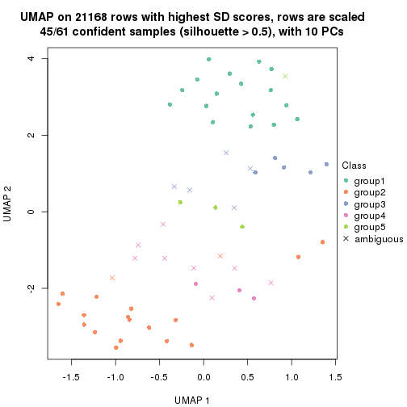
dimension_reduction(res, k = 6, method = "UMAP")
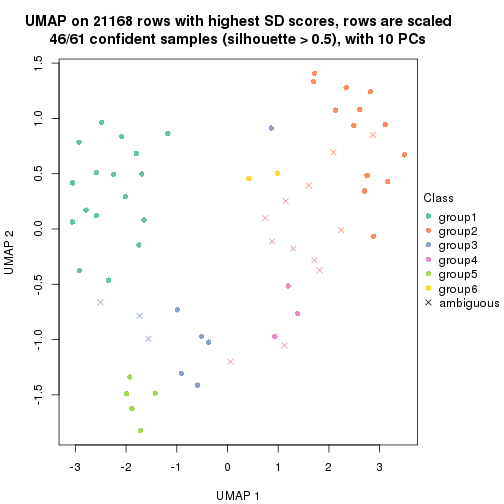
Following heatmap shows how subgroups are split when increasing k:
collect_classes(res)
Test correlation between subgroups and known annotations. If the known annotation is numeric, one-way ANOVA test is applied, and if the known annotation is discrete, chi-squared contingency table test is applied.
test_to_known_factors(res)
#> n disease.state(p) specimen(p) genotype/variation(p) other(p) k
#> SD:kmeans 60 0.619 0.00638 9.75e-11 0.0408 2
#> SD:kmeans 61 0.329 0.02347 1.41e-10 0.0357 3
#> SD:kmeans 54 0.475 0.20954 4.53e-09 0.1947 4
#> SD:kmeans 45 0.609 0.21214 1.40e-07 0.0378 5
#> SD:kmeans 46 0.767 0.47290 3.59e-06 0.2366 6
If matrix rows can be associated to genes, consider to use functional_enrichment(res,
...) to perform function enrichment for the signature genes. See this vignette for more detailed explanations.
The object with results only for a single top-value method and a single partition method can be extracted as:
res = res_list["SD", "skmeans"]
# you can also extract it by
# res = res_list["SD:skmeans"]
A summary of res and all the functions that can be applied to it:
res
#> A 'ConsensusPartition' object with k = 2, 3, 4, 5, 6.
#> On a matrix with 21168 rows and 61 columns.
#> Top rows (1000, 2000, 3000, 4000, 5000) are extracted by 'SD' method.
#> Subgroups are detected by 'skmeans' method.
#> Performed in total 1250 partitions by row resampling.
#> Best k for subgroups seems to be 3.
#>
#> Following methods can be applied to this 'ConsensusPartition' object:
#> [1] "cola_report" "collect_classes" "collect_plots"
#> [4] "collect_stats" "colnames" "compare_signatures"
#> [7] "consensus_heatmap" "dimension_reduction" "functional_enrichment"
#> [10] "get_anno_col" "get_anno" "get_classes"
#> [13] "get_consensus" "get_matrix" "get_membership"
#> [16] "get_param" "get_signatures" "get_stats"
#> [19] "is_best_k" "is_stable_k" "membership_heatmap"
#> [22] "ncol" "nrow" "plot_ecdf"
#> [25] "rownames" "select_partition_number" "show"
#> [28] "suggest_best_k" "test_to_known_factors"
collect_plots() function collects all the plots made from res for all k (number of partitions)
into one single page to provide an easy and fast comparison between different k.
collect_plots(res)
The plots are:
k and the heatmap of
predicted classes for each k.k.k.k.All the plots in panels can be made by individual functions and they are plotted later in this section.
select_partition_number() produces several plots showing different
statistics for choosing “optimized” k. There are following statistics:
k;k, the area increased is defined as \(A_k - A_{k-1}\).The detailed explanations of these statistics can be found in the cola vignette.
Generally speaking, lower PAC score, higher mean silhouette score or higher
concordance corresponds to better partition. Rand index and Jaccard index
measure how similar the current partition is compared to partition with k-1.
If they are too similar, we won't accept k is better than k-1.
select_partition_number(res)
The numeric values for all these statistics can be obtained by get_stats().
get_stats(res)
#> k 1-PAC mean_silhouette concordance area_increased Rand Jaccard
#> 2 2 1.000 0.988 0.994 0.5085 0.492 0.492
#> 3 3 0.958 0.910 0.965 0.2983 0.783 0.584
#> 4 4 0.796 0.792 0.901 0.1345 0.901 0.715
#> 5 5 0.668 0.625 0.795 0.0589 0.951 0.817
#> 6 6 0.633 0.443 0.676 0.0402 0.946 0.771
suggest_best_k() suggests the best \(k\) based on these statistics. The rules are as follows:
suggest_best_k(res)
#> [1] 3
#> attr(,"optional")
#> [1] 2
There is also optional best \(k\) = 2 that is worth to check.
Following shows the table of the partitions (You need to click the show/hide
code output link to see it). The membership matrix (columns with name p*)
is inferred by
clue::cl_consensus()
function with the SE method. Basically the value in the membership matrix
represents the probability to belong to a certain group. The finall class
label for an item is determined with the group with highest probability it
belongs to.
In get_classes() function, the entropy is calculated from the membership
matrix and the silhouette score is calculated from the consensus matrix.
cbind(get_classes(res, k = 2), get_membership(res, k = 2))
#> class entropy silhouette p1 p2
#> GSM590886 1 0.000 0.994 1.000 0.000
#> GSM590859 2 0.000 0.994 0.000 1.000
#> GSM590864 1 0.000 0.994 1.000 0.000
#> GSM590844 2 0.000 0.994 0.000 1.000
#> GSM590878 2 0.000 0.994 0.000 1.000
#> GSM590841 2 0.000 0.994 0.000 1.000
#> GSM590843 2 0.000 0.994 0.000 1.000
#> GSM590895 2 0.000 0.994 0.000 1.000
#> GSM590897 2 0.000 0.994 0.000 1.000
#> GSM590842 1 0.000 0.994 1.000 0.000
#> GSM590869 1 0.605 0.826 0.852 0.148
#> GSM590874 1 0.000 0.994 1.000 0.000
#> GSM590889 1 0.000 0.994 1.000 0.000
#> GSM590851 1 0.000 0.994 1.000 0.000
#> GSM590873 1 0.000 0.994 1.000 0.000
#> GSM590898 2 0.000 0.994 0.000 1.000
#> GSM590882 1 0.000 0.994 1.000 0.000
#> GSM590849 1 0.000 0.994 1.000 0.000
#> GSM590892 2 0.000 0.994 0.000 1.000
#> GSM590900 2 0.000 0.994 0.000 1.000
#> GSM590896 1 0.000 0.994 1.000 0.000
#> GSM590870 1 0.000 0.994 1.000 0.000
#> GSM590853 1 0.000 0.994 1.000 0.000
#> GSM590884 1 0.000 0.994 1.000 0.000
#> GSM590847 2 0.000 0.994 0.000 1.000
#> GSM590857 2 0.000 0.994 0.000 1.000
#> GSM590865 2 0.000 0.994 0.000 1.000
#> GSM590872 2 0.000 0.994 0.000 1.000
#> GSM590883 2 0.000 0.994 0.000 1.000
#> GSM590887 2 0.000 0.994 0.000 1.000
#> GSM590888 2 0.000 0.994 0.000 1.000
#> GSM590891 2 0.000 0.994 0.000 1.000
#> GSM590899 2 0.000 0.994 0.000 1.000
#> GSM590848 1 0.000 0.994 1.000 0.000
#> GSM590850 1 0.000 0.994 1.000 0.000
#> GSM590855 1 0.000 0.994 1.000 0.000
#> GSM590860 1 0.000 0.994 1.000 0.000
#> GSM590890 1 0.000 0.994 1.000 0.000
#> GSM590894 1 0.000 0.994 1.000 0.000
#> GSM590852 1 0.000 0.994 1.000 0.000
#> GSM590858 1 0.000 0.994 1.000 0.000
#> GSM590862 1 0.000 0.994 1.000 0.000
#> GSM590867 1 0.163 0.972 0.976 0.024
#> GSM590871 1 0.000 0.994 1.000 0.000
#> GSM590877 1 0.000 0.994 1.000 0.000
#> GSM590879 1 0.000 0.994 1.000 0.000
#> GSM590880 1 0.000 0.994 1.000 0.000
#> GSM590845 2 0.662 0.790 0.172 0.828
#> GSM590846 2 0.000 0.994 0.000 1.000
#> GSM590875 2 0.000 0.994 0.000 1.000
#> GSM590881 2 0.000 0.994 0.000 1.000
#> GSM590854 2 0.000 0.994 0.000 1.000
#> GSM590856 2 0.000 0.994 0.000 1.000
#> GSM590861 1 0.000 0.994 1.000 0.000
#> GSM590863 2 0.000 0.994 0.000 1.000
#> GSM590866 2 0.000 0.994 0.000 1.000
#> GSM590876 2 0.000 0.994 0.000 1.000
#> GSM590893 2 0.000 0.994 0.000 1.000
#> GSM590885 1 0.000 0.994 1.000 0.000
#> GSM590840 1 0.000 0.994 1.000 0.000
#> GSM590868 2 0.000 0.994 0.000 1.000
cbind(get_classes(res, k = 3), get_membership(res, k = 3))
#> class entropy silhouette p1 p2 p3
#> GSM590886 1 0.0000 1.0000 1.000 0.000 0.000
#> GSM590859 2 0.0000 0.9733 0.000 1.000 0.000
#> GSM590864 1 0.0000 1.0000 1.000 0.000 0.000
#> GSM590844 2 0.0000 0.9733 0.000 1.000 0.000
#> GSM590878 2 0.0000 0.9733 0.000 1.000 0.000
#> GSM590841 3 0.5560 0.5705 0.000 0.300 0.700
#> GSM590843 2 0.0000 0.9733 0.000 1.000 0.000
#> GSM590895 2 0.0000 0.9733 0.000 1.000 0.000
#> GSM590897 2 0.0000 0.9733 0.000 1.000 0.000
#> GSM590842 1 0.0000 1.0000 1.000 0.000 0.000
#> GSM590869 3 0.0000 0.8985 0.000 0.000 1.000
#> GSM590874 1 0.0000 1.0000 1.000 0.000 0.000
#> GSM590889 1 0.0000 1.0000 1.000 0.000 0.000
#> GSM590851 1 0.0000 1.0000 1.000 0.000 0.000
#> GSM590873 1 0.0000 1.0000 1.000 0.000 0.000
#> GSM590898 3 0.6140 0.3494 0.000 0.404 0.596
#> GSM590882 3 0.0892 0.8946 0.020 0.000 0.980
#> GSM590849 3 0.1964 0.8728 0.056 0.000 0.944
#> GSM590892 2 0.0000 0.9733 0.000 1.000 0.000
#> GSM590900 2 0.0000 0.9733 0.000 1.000 0.000
#> GSM590896 1 0.0000 1.0000 1.000 0.000 0.000
#> GSM590870 3 0.0000 0.8985 0.000 0.000 1.000
#> GSM590853 3 0.0000 0.8985 0.000 0.000 1.000
#> GSM590884 3 0.3551 0.8013 0.132 0.000 0.868
#> GSM590847 2 0.0000 0.9733 0.000 1.000 0.000
#> GSM590857 2 0.0000 0.9733 0.000 1.000 0.000
#> GSM590865 2 0.0747 0.9615 0.000 0.984 0.016
#> GSM590872 2 0.0592 0.9662 0.000 0.988 0.012
#> GSM590883 2 0.0237 0.9712 0.000 0.996 0.004
#> GSM590887 2 0.0892 0.9596 0.000 0.980 0.020
#> GSM590888 2 0.0000 0.9733 0.000 1.000 0.000
#> GSM590891 2 0.0000 0.9733 0.000 1.000 0.000
#> GSM590899 3 0.6305 0.1065 0.000 0.484 0.516
#> GSM590848 1 0.0000 1.0000 1.000 0.000 0.000
#> GSM590850 1 0.0000 1.0000 1.000 0.000 0.000
#> GSM590855 1 0.0000 1.0000 1.000 0.000 0.000
#> GSM590860 3 0.2625 0.8495 0.084 0.000 0.916
#> GSM590890 1 0.0000 1.0000 1.000 0.000 0.000
#> GSM590894 1 0.0000 1.0000 1.000 0.000 0.000
#> GSM590852 3 0.0237 0.8984 0.004 0.000 0.996
#> GSM590858 1 0.0000 1.0000 1.000 0.000 0.000
#> GSM590862 1 0.0000 1.0000 1.000 0.000 0.000
#> GSM590867 3 0.0000 0.8985 0.000 0.000 1.000
#> GSM590871 3 0.0747 0.8961 0.016 0.000 0.984
#> GSM590877 1 0.0000 1.0000 1.000 0.000 0.000
#> GSM590879 1 0.0000 1.0000 1.000 0.000 0.000
#> GSM590880 3 0.0000 0.8985 0.000 0.000 1.000
#> GSM590845 3 0.0000 0.8985 0.000 0.000 1.000
#> GSM590846 2 0.0000 0.9733 0.000 1.000 0.000
#> GSM590875 2 0.6302 -0.0565 0.000 0.520 0.480
#> GSM590881 2 0.0000 0.9733 0.000 1.000 0.000
#> GSM590854 2 0.0000 0.9733 0.000 1.000 0.000
#> GSM590856 2 0.0000 0.9733 0.000 1.000 0.000
#> GSM590861 3 0.0237 0.8984 0.004 0.000 0.996
#> GSM590863 2 0.0000 0.9733 0.000 1.000 0.000
#> GSM590866 2 0.1411 0.9411 0.000 0.964 0.036
#> GSM590876 2 0.1031 0.9526 0.024 0.976 0.000
#> GSM590893 2 0.0592 0.9662 0.000 0.988 0.012
#> GSM590885 3 0.1289 0.8890 0.032 0.000 0.968
#> GSM590840 3 0.0747 0.8960 0.016 0.000 0.984
#> GSM590868 2 0.0000 0.9733 0.000 1.000 0.000
cbind(get_classes(res, k = 4), get_membership(res, k = 4))
#> class entropy silhouette p1 p2 p3 p4
#> GSM590886 1 0.1305 0.95240 0.960 0.000 0.004 0.036
#> GSM590859 2 0.0188 0.84387 0.000 0.996 0.000 0.004
#> GSM590864 1 0.0336 0.96753 0.992 0.000 0.008 0.000
#> GSM590844 2 0.0336 0.84443 0.000 0.992 0.000 0.008
#> GSM590878 4 0.4989 -0.09184 0.000 0.472 0.000 0.528
#> GSM590841 4 0.3533 0.75533 0.000 0.080 0.056 0.864
#> GSM590843 2 0.0707 0.84283 0.000 0.980 0.000 0.020
#> GSM590895 2 0.0336 0.84452 0.000 0.992 0.000 0.008
#> GSM590897 2 0.0336 0.84452 0.000 0.992 0.000 0.008
#> GSM590842 1 0.2125 0.92867 0.920 0.000 0.076 0.004
#> GSM590869 4 0.4040 0.49541 0.000 0.000 0.248 0.752
#> GSM590874 1 0.0336 0.96780 0.992 0.000 0.000 0.008
#> GSM590889 1 0.0188 0.96788 0.996 0.000 0.000 0.004
#> GSM590851 1 0.1637 0.94838 0.940 0.000 0.060 0.000
#> GSM590873 1 0.0188 0.96797 0.996 0.000 0.004 0.000
#> GSM590898 4 0.0336 0.78828 0.000 0.008 0.000 0.992
#> GSM590882 3 0.1211 0.90387 0.000 0.000 0.960 0.040
#> GSM590849 3 0.0000 0.90374 0.000 0.000 1.000 0.000
#> GSM590892 2 0.0817 0.83918 0.000 0.976 0.000 0.024
#> GSM590900 2 0.0336 0.84254 0.000 0.992 0.000 0.008
#> GSM590896 1 0.0469 0.96755 0.988 0.000 0.000 0.012
#> GSM590870 3 0.3649 0.81419 0.000 0.000 0.796 0.204
#> GSM590853 3 0.2868 0.86679 0.000 0.000 0.864 0.136
#> GSM590884 3 0.2271 0.86170 0.076 0.000 0.916 0.008
#> GSM590847 2 0.4500 0.55947 0.000 0.684 0.000 0.316
#> GSM590857 2 0.0000 0.84274 0.000 1.000 0.000 0.000
#> GSM590865 2 0.2670 0.80009 0.000 0.904 0.024 0.072
#> GSM590872 4 0.4304 0.58958 0.000 0.284 0.000 0.716
#> GSM590883 2 0.4977 0.00693 0.000 0.540 0.000 0.460
#> GSM590887 4 0.4053 0.66528 0.000 0.228 0.004 0.768
#> GSM590888 2 0.4998 -0.02861 0.000 0.512 0.000 0.488
#> GSM590891 2 0.0469 0.84433 0.000 0.988 0.000 0.012
#> GSM590899 4 0.0336 0.78828 0.000 0.008 0.000 0.992
#> GSM590848 1 0.1211 0.95904 0.960 0.000 0.040 0.000
#> GSM590850 1 0.0000 0.96783 1.000 0.000 0.000 0.000
#> GSM590855 1 0.2773 0.89966 0.880 0.000 0.116 0.004
#> GSM590860 3 0.0000 0.90374 0.000 0.000 1.000 0.000
#> GSM590890 1 0.0469 0.96755 0.988 0.000 0.000 0.012
#> GSM590894 1 0.0469 0.96755 0.988 0.000 0.000 0.012
#> GSM590852 3 0.1557 0.90061 0.000 0.000 0.944 0.056
#> GSM590858 1 0.0707 0.96566 0.980 0.000 0.020 0.000
#> GSM590862 1 0.2647 0.88568 0.880 0.000 0.120 0.000
#> GSM590867 3 0.3569 0.80907 0.000 0.000 0.804 0.196
#> GSM590871 3 0.0188 0.90396 0.000 0.000 0.996 0.004
#> GSM590877 1 0.0000 0.96783 1.000 0.000 0.000 0.000
#> GSM590879 1 0.1151 0.96525 0.968 0.000 0.024 0.008
#> GSM590880 3 0.1211 0.90351 0.000 0.000 0.960 0.040
#> GSM590845 3 0.4382 0.68773 0.000 0.000 0.704 0.296
#> GSM590846 2 0.0188 0.84374 0.000 0.996 0.000 0.004
#> GSM590875 4 0.0336 0.78828 0.000 0.008 0.000 0.992
#> GSM590881 2 0.4855 0.39041 0.000 0.600 0.000 0.400
#> GSM590854 2 0.0000 0.84274 0.000 1.000 0.000 0.000
#> GSM590856 2 0.4250 0.61358 0.000 0.724 0.000 0.276
#> GSM590861 3 0.0000 0.90374 0.000 0.000 1.000 0.000
#> GSM590863 2 0.0469 0.84453 0.000 0.988 0.000 0.012
#> GSM590866 2 0.3523 0.73070 0.000 0.856 0.112 0.032
#> GSM590876 2 0.5774 0.48156 0.040 0.640 0.004 0.316
#> GSM590893 4 0.1792 0.77207 0.000 0.068 0.000 0.932
#> GSM590885 3 0.5122 0.76558 0.080 0.000 0.756 0.164
#> GSM590840 3 0.0000 0.90374 0.000 0.000 1.000 0.000
#> GSM590868 2 0.0921 0.83966 0.000 0.972 0.000 0.028
cbind(get_classes(res, k = 5), get_membership(res, k = 5))
#> class entropy silhouette p1 p2 p3 p4 p5
#> GSM590886 1 0.4356 0.8179 0.748 0.000 0.004 0.044 0.204
#> GSM590859 2 0.2389 0.6214 0.000 0.880 0.000 0.004 0.116
#> GSM590864 1 0.2536 0.8655 0.868 0.000 0.004 0.000 0.128
#> GSM590844 2 0.1892 0.6598 0.000 0.916 0.000 0.004 0.080
#> GSM590878 4 0.6352 -0.1738 0.000 0.336 0.000 0.488 0.176
#> GSM590841 4 0.4637 0.5751 0.000 0.056 0.052 0.784 0.108
#> GSM590843 2 0.1800 0.6473 0.000 0.932 0.000 0.020 0.048
#> GSM590895 2 0.0798 0.6621 0.000 0.976 0.000 0.008 0.016
#> GSM590897 2 0.1764 0.6507 0.000 0.928 0.000 0.008 0.064
#> GSM590842 1 0.4505 0.8351 0.760 0.000 0.084 0.004 0.152
#> GSM590869 4 0.4096 0.4810 0.000 0.000 0.200 0.760 0.040
#> GSM590874 1 0.3048 0.8531 0.820 0.000 0.000 0.004 0.176
#> GSM590889 1 0.2424 0.8671 0.868 0.000 0.000 0.000 0.132
#> GSM590851 1 0.4069 0.8223 0.788 0.000 0.076 0.000 0.136
#> GSM590873 1 0.1518 0.8742 0.944 0.000 0.004 0.004 0.048
#> GSM590898 4 0.0960 0.6120 0.000 0.004 0.008 0.972 0.016
#> GSM590882 3 0.1597 0.8619 0.000 0.000 0.940 0.012 0.048
#> GSM590849 3 0.1764 0.8607 0.008 0.000 0.928 0.000 0.064
#> GSM590892 2 0.3531 0.5616 0.000 0.816 0.000 0.036 0.148
#> GSM590900 2 0.3937 0.3993 0.004 0.736 0.000 0.008 0.252
#> GSM590896 1 0.2843 0.8579 0.848 0.000 0.000 0.008 0.144
#> GSM590870 3 0.3655 0.7969 0.000 0.000 0.804 0.160 0.036
#> GSM590853 3 0.3409 0.8043 0.000 0.000 0.824 0.144 0.032
#> GSM590884 3 0.4138 0.7769 0.104 0.000 0.804 0.012 0.080
#> GSM590847 2 0.5312 0.1093 0.000 0.652 0.000 0.248 0.100
#> GSM590857 2 0.2852 0.5717 0.000 0.828 0.000 0.000 0.172
#> GSM590865 5 0.6120 0.2604 0.008 0.456 0.020 0.052 0.464
#> GSM590872 4 0.5923 0.4012 0.000 0.280 0.000 0.576 0.144
#> GSM590883 4 0.7018 -0.0313 0.000 0.328 0.008 0.380 0.284
#> GSM590887 4 0.5847 0.4868 0.000 0.172 0.004 0.624 0.200
#> GSM590888 4 0.7138 -0.1138 0.012 0.336 0.000 0.348 0.304
#> GSM590891 2 0.2390 0.6344 0.000 0.896 0.000 0.020 0.084
#> GSM590899 4 0.1018 0.6067 0.000 0.000 0.016 0.968 0.016
#> GSM590848 1 0.3400 0.8511 0.828 0.000 0.036 0.000 0.136
#> GSM590850 1 0.2930 0.8692 0.832 0.000 0.004 0.000 0.164
#> GSM590855 1 0.4454 0.7924 0.760 0.000 0.112 0.000 0.128
#> GSM590860 3 0.1341 0.8621 0.000 0.000 0.944 0.000 0.056
#> GSM590890 1 0.2068 0.8691 0.904 0.000 0.000 0.004 0.092
#> GSM590894 1 0.2674 0.8599 0.856 0.000 0.000 0.004 0.140
#> GSM590852 3 0.2300 0.8541 0.000 0.000 0.908 0.052 0.040
#> GSM590858 1 0.3039 0.8592 0.836 0.000 0.012 0.000 0.152
#> GSM590862 1 0.4936 0.7898 0.712 0.000 0.116 0.000 0.172
#> GSM590867 3 0.4634 0.7399 0.000 0.000 0.744 0.136 0.120
#> GSM590871 3 0.0963 0.8646 0.000 0.000 0.964 0.000 0.036
#> GSM590877 1 0.2377 0.8666 0.872 0.000 0.000 0.000 0.128
#> GSM590879 1 0.2519 0.8681 0.884 0.000 0.016 0.000 0.100
#> GSM590880 3 0.1018 0.8628 0.000 0.000 0.968 0.016 0.016
#> GSM590845 3 0.5795 0.5412 0.000 0.000 0.596 0.268 0.136
#> GSM590846 2 0.2771 0.6157 0.000 0.860 0.000 0.012 0.128
#> GSM590875 4 0.1412 0.6054 0.000 0.004 0.008 0.952 0.036
#> GSM590881 2 0.6296 -0.2551 0.000 0.480 0.000 0.360 0.160
#> GSM590854 2 0.1197 0.6576 0.000 0.952 0.000 0.000 0.048
#> GSM590856 2 0.5394 0.0562 0.000 0.628 0.000 0.280 0.092
#> GSM590861 3 0.1043 0.8652 0.000 0.000 0.960 0.000 0.040
#> GSM590863 2 0.2953 0.5872 0.000 0.844 0.000 0.012 0.144
#> GSM590866 2 0.5964 -0.0638 0.000 0.604 0.076 0.028 0.292
#> GSM590876 5 0.7721 0.4102 0.060 0.344 0.000 0.232 0.364
#> GSM590893 4 0.2853 0.5876 0.000 0.052 0.000 0.876 0.072
#> GSM590885 3 0.6060 0.6831 0.124 0.000 0.680 0.108 0.088
#> GSM590840 3 0.1270 0.8632 0.000 0.000 0.948 0.000 0.052
#> GSM590868 2 0.1997 0.6482 0.000 0.924 0.000 0.036 0.040
cbind(get_classes(res, k = 6), get_membership(res, k = 6))
#> class entropy silhouette p1 p2 p3 p4 p5 p6
#> GSM590886 1 0.4566 0.3967 0.764 0.000 0.016 0.044 0.048 0.128
#> GSM590859 2 0.3168 0.6633 0.000 0.804 0.000 0.000 0.172 0.024
#> GSM590864 1 0.5118 -0.3459 0.520 0.000 0.012 0.004 0.044 0.420
#> GSM590844 2 0.2294 0.7105 0.000 0.896 0.000 0.008 0.076 0.020
#> GSM590878 4 0.6722 0.0326 0.004 0.260 0.000 0.484 0.196 0.056
#> GSM590841 4 0.5337 0.3997 0.000 0.024 0.076 0.704 0.152 0.044
#> GSM590843 2 0.1972 0.6944 0.000 0.916 0.000 0.024 0.056 0.004
#> GSM590895 2 0.0858 0.7089 0.000 0.968 0.000 0.000 0.028 0.004
#> GSM590897 2 0.2126 0.7053 0.000 0.904 0.000 0.004 0.072 0.020
#> GSM590842 1 0.5357 0.1505 0.588 0.000 0.092 0.000 0.016 0.304
#> GSM590869 4 0.3861 0.4126 0.000 0.000 0.168 0.772 0.052 0.008
#> GSM590874 1 0.1391 0.4816 0.944 0.000 0.000 0.000 0.016 0.040
#> GSM590889 1 0.2573 0.4509 0.864 0.000 0.000 0.000 0.024 0.112
#> GSM590851 6 0.4664 0.7447 0.364 0.000 0.052 0.000 0.000 0.584
#> GSM590873 1 0.3881 -0.2296 0.600 0.000 0.000 0.000 0.004 0.396
#> GSM590898 4 0.2011 0.5123 0.000 0.000 0.004 0.912 0.064 0.020
#> GSM590882 3 0.3108 0.7857 0.000 0.000 0.860 0.036 0.052 0.052
#> GSM590849 3 0.2730 0.7697 0.000 0.000 0.836 0.000 0.012 0.152
#> GSM590892 2 0.3755 0.6340 0.000 0.780 0.000 0.016 0.172 0.032
#> GSM590900 2 0.5050 0.4930 0.004 0.644 0.012 0.004 0.276 0.060
#> GSM590896 1 0.1812 0.4794 0.912 0.000 0.000 0.000 0.008 0.080
#> GSM590870 3 0.5496 0.6568 0.000 0.000 0.652 0.200 0.084 0.064
#> GSM590853 3 0.5198 0.6699 0.000 0.000 0.676 0.200 0.064 0.060
#> GSM590884 3 0.4414 0.7402 0.080 0.000 0.752 0.008 0.012 0.148
#> GSM590847 2 0.5560 0.2000 0.000 0.600 0.000 0.236 0.148 0.016
#> GSM590857 2 0.3884 0.5862 0.000 0.724 0.000 0.000 0.240 0.036
#> GSM590865 5 0.6444 0.2356 0.000 0.300 0.016 0.072 0.532 0.080
#> GSM590872 4 0.6796 -0.0426 0.000 0.300 0.000 0.440 0.196 0.064
#> GSM590883 5 0.6924 0.2441 0.000 0.268 0.004 0.272 0.408 0.048
#> GSM590887 4 0.7321 -0.0587 0.004 0.128 0.016 0.384 0.372 0.096
#> GSM590888 5 0.7424 0.2273 0.012 0.272 0.000 0.252 0.380 0.084
#> GSM590891 2 0.2556 0.6863 0.000 0.884 0.000 0.012 0.076 0.028
#> GSM590899 4 0.1440 0.5171 0.000 0.004 0.004 0.948 0.032 0.012
#> GSM590848 6 0.4975 0.6575 0.396 0.000 0.040 0.000 0.016 0.548
#> GSM590850 1 0.4288 0.0668 0.644 0.000 0.012 0.000 0.016 0.328
#> GSM590855 6 0.5095 0.7009 0.368 0.000 0.088 0.000 0.000 0.544
#> GSM590860 3 0.2442 0.7700 0.000 0.000 0.852 0.000 0.004 0.144
#> GSM590890 1 0.2473 0.4340 0.856 0.000 0.000 0.000 0.008 0.136
#> GSM590894 1 0.2355 0.4676 0.876 0.000 0.000 0.004 0.008 0.112
#> GSM590852 3 0.3467 0.7760 0.000 0.000 0.836 0.064 0.036 0.064
#> GSM590858 6 0.4211 0.5614 0.456 0.000 0.008 0.000 0.004 0.532
#> GSM590862 1 0.6005 -0.2681 0.432 0.000 0.116 0.004 0.020 0.428
#> GSM590867 3 0.6344 0.5985 0.000 0.000 0.580 0.144 0.164 0.112
#> GSM590871 3 0.1151 0.7906 0.000 0.000 0.956 0.000 0.012 0.032
#> GSM590877 1 0.3907 0.2580 0.704 0.000 0.000 0.000 0.028 0.268
#> GSM590879 1 0.4717 -0.5316 0.504 0.000 0.036 0.000 0.004 0.456
#> GSM590880 3 0.2252 0.7881 0.000 0.000 0.908 0.044 0.020 0.028
#> GSM590845 3 0.6797 0.4691 0.000 0.000 0.488 0.220 0.208 0.084
#> GSM590846 2 0.3338 0.6528 0.000 0.800 0.000 0.008 0.172 0.020
#> GSM590875 4 0.1218 0.5211 0.000 0.028 0.004 0.956 0.012 0.000
#> GSM590881 4 0.6854 -0.1972 0.008 0.324 0.000 0.360 0.280 0.028
#> GSM590854 2 0.1563 0.7107 0.000 0.932 0.000 0.000 0.056 0.012
#> GSM590856 2 0.5452 0.2322 0.000 0.616 0.000 0.228 0.140 0.016
#> GSM590861 3 0.2058 0.7903 0.000 0.000 0.908 0.008 0.012 0.072
#> GSM590863 2 0.4080 0.5874 0.000 0.724 0.000 0.008 0.232 0.036
#> GSM590866 2 0.6702 0.1330 0.000 0.532 0.092 0.012 0.252 0.112
#> GSM590876 5 0.7329 0.2973 0.024 0.164 0.004 0.196 0.504 0.108
#> GSM590893 4 0.4743 0.4133 0.000 0.100 0.000 0.740 0.104 0.056
#> GSM590885 3 0.7064 0.5707 0.164 0.000 0.556 0.088 0.052 0.140
#> GSM590840 3 0.2170 0.7837 0.000 0.000 0.888 0.000 0.012 0.100
#> GSM590868 2 0.2463 0.6968 0.000 0.892 0.000 0.020 0.068 0.020
Heatmaps for the consensus matrix. It visualizes the probability of two samples to be in a same group.
consensus_heatmap(res, k = 2)
consensus_heatmap(res, k = 3)
consensus_heatmap(res, k = 4)
consensus_heatmap(res, k = 5)
consensus_heatmap(res, k = 6)
Heatmaps for the membership of samples in all partitions to see how consistent they are:
membership_heatmap(res, k = 2)
membership_heatmap(res, k = 3)
membership_heatmap(res, k = 4)
membership_heatmap(res, k = 5)
membership_heatmap(res, k = 6)
As soon as we have had the classes for columns, we can look for signatures which are significantly different between classes which can be candidate marks for certain classes. Following are the heatmaps for signatures.
Signature heatmaps where rows are scaled:
get_signatures(res, k = 2)
get_signatures(res, k = 3)
get_signatures(res, k = 4)
get_signatures(res, k = 5)

get_signatures(res, k = 6)
Signature heatmaps where rows are not scaled:
get_signatures(res, k = 2, scale_rows = FALSE)
get_signatures(res, k = 3, scale_rows = FALSE)
get_signatures(res, k = 4, scale_rows = FALSE)
get_signatures(res, k = 5, scale_rows = FALSE)
get_signatures(res, k = 6, scale_rows = FALSE)
Compare the overlap of signatures from different k:
compare_signatures(res)
get_signature() returns a data frame invisibly. TO get the list of signatures, the function
call should be assigned to a variable explicitly. In following code, if plot argument is set
to FALSE, no heatmap is plotted while only the differential analysis is performed.
# code only for demonstration
tb = get_signature(res, k = ..., plot = FALSE)
An example of the output of tb is:
#> which_row fdr mean_1 mean_2 scaled_mean_1 scaled_mean_2 km
#> 1 38 0.042760348 8.373488 9.131774 -0.5533452 0.5164555 1
#> 2 40 0.018707592 7.106213 8.469186 -0.6173731 0.5762149 1
#> 3 55 0.019134737 10.221463 11.207825 -0.6159697 0.5749050 1
#> 4 59 0.006059896 5.921854 7.869574 -0.6899429 0.6439467 1
#> 5 60 0.018055526 8.928898 10.211722 -0.6204761 0.5791110 1
#> 6 98 0.009384629 15.714769 14.887706 0.6635654 -0.6193277 2
...
The columns in tb are:
which_row: row indices corresponding to the input matrix.fdr: FDR for the differential test. mean_x: The mean value in group x.scaled_mean_x: The mean value in group x after rows are scaled.km: Row groups if k-means clustering is applied to rows.UMAP plot which shows how samples are separated.
dimension_reduction(res, k = 2, method = "UMAP")
dimension_reduction(res, k = 3, method = "UMAP")
dimension_reduction(res, k = 4, method = "UMAP")
dimension_reduction(res, k = 5, method = "UMAP")
dimension_reduction(res, k = 6, method = "UMAP")
Following heatmap shows how subgroups are split when increasing k:
collect_classes(res)
Test correlation between subgroups and known annotations. If the known annotation is numeric, one-way ANOVA test is applied, and if the known annotation is discrete, chi-squared contingency table test is applied.
test_to_known_factors(res)
#> n disease.state(p) specimen(p) genotype/variation(p) other(p) k
#> SD:skmeans 61 0.611 0.00878 5.95e-11 0.0688 2
#> SD:skmeans 58 0.444 0.03588 2.48e-10 0.0389 3
#> SD:skmeans 55 0.434 0.10551 9.96e-09 0.0495 4
#> SD:skmeans 48 0.395 0.14350 3.29e-07 0.1995 5
#> SD:skmeans 32 0.312 0.50189 1.65e-04 0.6124 6
If matrix rows can be associated to genes, consider to use functional_enrichment(res,
...) to perform function enrichment for the signature genes. See this vignette for more detailed explanations.
The object with results only for a single top-value method and a single partition method can be extracted as:
res = res_list["SD", "pam"]
# you can also extract it by
# res = res_list["SD:pam"]
A summary of res and all the functions that can be applied to it:
res
#> A 'ConsensusPartition' object with k = 2, 3, 4, 5, 6.
#> On a matrix with 21168 rows and 61 columns.
#> Top rows (1000, 2000, 3000, 4000, 5000) are extracted by 'SD' method.
#> Subgroups are detected by 'pam' method.
#> Performed in total 1250 partitions by row resampling.
#> Best k for subgroups seems to be 2.
#>
#> Following methods can be applied to this 'ConsensusPartition' object:
#> [1] "cola_report" "collect_classes" "collect_plots"
#> [4] "collect_stats" "colnames" "compare_signatures"
#> [7] "consensus_heatmap" "dimension_reduction" "functional_enrichment"
#> [10] "get_anno_col" "get_anno" "get_classes"
#> [13] "get_consensus" "get_matrix" "get_membership"
#> [16] "get_param" "get_signatures" "get_stats"
#> [19] "is_best_k" "is_stable_k" "membership_heatmap"
#> [22] "ncol" "nrow" "plot_ecdf"
#> [25] "rownames" "select_partition_number" "show"
#> [28] "suggest_best_k" "test_to_known_factors"
collect_plots() function collects all the plots made from res for all k (number of partitions)
into one single page to provide an easy and fast comparison between different k.
collect_plots(res)
The plots are:
k and the heatmap of
predicted classes for each k.k.k.k.All the plots in panels can be made by individual functions and they are plotted later in this section.
select_partition_number() produces several plots showing different
statistics for choosing “optimized” k. There are following statistics:
k;k, the area increased is defined as \(A_k - A_{k-1}\).The detailed explanations of these statistics can be found in the cola vignette.
Generally speaking, lower PAC score, higher mean silhouette score or higher
concordance corresponds to better partition. Rand index and Jaccard index
measure how similar the current partition is compared to partition with k-1.
If they are too similar, we won't accept k is better than k-1.
select_partition_number(res)

The numeric values for all these statistics can be obtained by get_stats().
get_stats(res)
#> k 1-PAC mean_silhouette concordance area_increased Rand Jaccard
#> 2 2 0.849 0.928 0.966 0.5064 0.492 0.492
#> 3 3 0.654 0.841 0.909 0.2974 0.803 0.618
#> 4 4 0.786 0.769 0.900 0.1429 0.866 0.627
#> 5 5 0.737 0.635 0.838 0.0530 0.942 0.771
#> 6 6 0.714 0.546 0.772 0.0371 0.966 0.841
suggest_best_k() suggests the best \(k\) based on these statistics. The rules are as follows:
suggest_best_k(res)
#> [1] 2
Following shows the table of the partitions (You need to click the show/hide
code output link to see it). The membership matrix (columns with name p*)
is inferred by
clue::cl_consensus()
function with the SE method. Basically the value in the membership matrix
represents the probability to belong to a certain group. The finall class
label for an item is determined with the group with highest probability it
belongs to.
In get_classes() function, the entropy is calculated from the membership
matrix and the silhouette score is calculated from the consensus matrix.
cbind(get_classes(res, k = 2), get_membership(res, k = 2))
#> class entropy silhouette p1 p2
#> GSM590886 1 0.0376 0.972 0.996 0.004
#> GSM590859 2 0.0000 0.952 0.000 1.000
#> GSM590864 1 0.2948 0.938 0.948 0.052
#> GSM590844 2 0.0000 0.952 0.000 1.000
#> GSM590878 2 0.0000 0.952 0.000 1.000
#> GSM590841 2 0.3584 0.910 0.068 0.932
#> GSM590843 2 0.0000 0.952 0.000 1.000
#> GSM590895 2 0.0000 0.952 0.000 1.000
#> GSM590897 2 0.0000 0.952 0.000 1.000
#> GSM590842 1 0.0000 0.973 1.000 0.000
#> GSM590869 1 0.6531 0.794 0.832 0.168
#> GSM590874 1 0.0672 0.970 0.992 0.008
#> GSM590889 1 0.0000 0.973 1.000 0.000
#> GSM590851 1 0.0376 0.972 0.996 0.004
#> GSM590873 1 0.0000 0.973 1.000 0.000
#> GSM590898 2 0.6712 0.809 0.176 0.824
#> GSM590882 1 0.0000 0.973 1.000 0.000
#> GSM590849 1 0.0000 0.973 1.000 0.000
#> GSM590892 2 0.0000 0.952 0.000 1.000
#> GSM590900 2 0.0672 0.948 0.008 0.992
#> GSM590896 1 0.4022 0.909 0.920 0.080
#> GSM590870 1 0.2236 0.949 0.964 0.036
#> GSM590853 1 0.0938 0.968 0.988 0.012
#> GSM590884 1 0.0000 0.973 1.000 0.000
#> GSM590847 2 0.0000 0.952 0.000 1.000
#> GSM590857 2 0.0000 0.952 0.000 1.000
#> GSM590865 2 0.4431 0.884 0.092 0.908
#> GSM590872 2 0.0000 0.952 0.000 1.000
#> GSM590883 2 0.0000 0.952 0.000 1.000
#> GSM590887 2 0.4431 0.890 0.092 0.908
#> GSM590888 2 0.0000 0.952 0.000 1.000
#> GSM590891 2 0.0000 0.952 0.000 1.000
#> GSM590899 2 0.6531 0.817 0.168 0.832
#> GSM590848 1 0.0000 0.973 1.000 0.000
#> GSM590850 1 0.0000 0.973 1.000 0.000
#> GSM590855 1 0.0000 0.973 1.000 0.000
#> GSM590860 1 0.0000 0.973 1.000 0.000
#> GSM590890 1 0.0672 0.970 0.992 0.008
#> GSM590894 1 0.0000 0.973 1.000 0.000
#> GSM590852 1 0.0000 0.973 1.000 0.000
#> GSM590858 1 0.0000 0.973 1.000 0.000
#> GSM590862 1 0.0000 0.973 1.000 0.000
#> GSM590867 1 0.8386 0.622 0.732 0.268
#> GSM590871 1 0.0000 0.973 1.000 0.000
#> GSM590877 1 0.4431 0.899 0.908 0.092
#> GSM590879 1 0.0000 0.973 1.000 0.000
#> GSM590880 1 0.0672 0.970 0.992 0.008
#> GSM590845 2 0.6887 0.799 0.184 0.816
#> GSM590846 2 0.0000 0.952 0.000 1.000
#> GSM590875 2 0.5519 0.860 0.128 0.872
#> GSM590881 2 0.0000 0.952 0.000 1.000
#> GSM590854 2 0.0000 0.952 0.000 1.000
#> GSM590856 2 0.0000 0.952 0.000 1.000
#> GSM590861 1 0.0376 0.972 0.996 0.004
#> GSM590863 2 0.0000 0.952 0.000 1.000
#> GSM590866 2 0.0000 0.952 0.000 1.000
#> GSM590876 2 0.9754 0.286 0.408 0.592
#> GSM590893 2 0.0000 0.952 0.000 1.000
#> GSM590885 1 0.0672 0.970 0.992 0.008
#> GSM590840 1 0.1184 0.965 0.984 0.016
#> GSM590868 2 0.0000 0.952 0.000 1.000
cbind(get_classes(res, k = 3), get_membership(res, k = 3))
#> class entropy silhouette p1 p2 p3
#> GSM590886 1 0.0592 0.877 0.988 0.000 0.012
#> GSM590859 2 0.0000 0.928 0.000 1.000 0.000
#> GSM590864 1 0.0000 0.881 1.000 0.000 0.000
#> GSM590844 2 0.0000 0.928 0.000 1.000 0.000
#> GSM590878 2 0.3038 0.912 0.000 0.896 0.104
#> GSM590841 3 0.2261 0.782 0.000 0.068 0.932
#> GSM590843 2 0.0000 0.928 0.000 1.000 0.000
#> GSM590895 2 0.0000 0.928 0.000 1.000 0.000
#> GSM590897 2 0.0000 0.928 0.000 1.000 0.000
#> GSM590842 1 0.0000 0.881 1.000 0.000 0.000
#> GSM590869 3 0.0592 0.840 0.012 0.000 0.988
#> GSM590874 1 0.0000 0.881 1.000 0.000 0.000
#> GSM590889 1 0.0000 0.881 1.000 0.000 0.000
#> GSM590851 1 0.4702 0.685 0.788 0.000 0.212
#> GSM590873 1 0.0000 0.881 1.000 0.000 0.000
#> GSM590898 2 0.6442 0.456 0.004 0.564 0.432
#> GSM590882 3 0.3482 0.893 0.128 0.000 0.872
#> GSM590849 3 0.3686 0.884 0.140 0.000 0.860
#> GSM590892 2 0.0000 0.928 0.000 1.000 0.000
#> GSM590900 2 0.0000 0.928 0.000 1.000 0.000
#> GSM590896 1 0.2261 0.825 0.932 0.068 0.000
#> GSM590870 3 0.0000 0.841 0.000 0.000 1.000
#> GSM590853 3 0.3412 0.895 0.124 0.000 0.876
#> GSM590884 1 0.5835 0.450 0.660 0.000 0.340
#> GSM590847 2 0.0000 0.928 0.000 1.000 0.000
#> GSM590857 2 0.0000 0.928 0.000 1.000 0.000
#> GSM590865 2 0.4316 0.899 0.044 0.868 0.088
#> GSM590872 2 0.3482 0.903 0.000 0.872 0.128
#> GSM590883 2 0.3340 0.907 0.000 0.880 0.120
#> GSM590887 2 0.3551 0.901 0.000 0.868 0.132
#> GSM590888 2 0.4891 0.887 0.040 0.836 0.124
#> GSM590891 2 0.0000 0.928 0.000 1.000 0.000
#> GSM590899 2 0.6865 0.802 0.104 0.736 0.160
#> GSM590848 1 0.1529 0.860 0.960 0.000 0.040
#> GSM590850 1 0.1411 0.864 0.964 0.000 0.036
#> GSM590855 1 0.5678 0.501 0.684 0.000 0.316
#> GSM590860 3 0.6244 0.283 0.440 0.000 0.560
#> GSM590890 1 0.0000 0.881 1.000 0.000 0.000
#> GSM590894 1 0.0000 0.881 1.000 0.000 0.000
#> GSM590852 3 0.3412 0.895 0.124 0.000 0.876
#> GSM590858 1 0.0000 0.881 1.000 0.000 0.000
#> GSM590862 1 0.5178 0.620 0.744 0.000 0.256
#> GSM590867 3 0.0000 0.841 0.000 0.000 1.000
#> GSM590871 3 0.3482 0.893 0.128 0.000 0.872
#> GSM590877 1 0.0424 0.876 0.992 0.008 0.000
#> GSM590879 1 0.0000 0.881 1.000 0.000 0.000
#> GSM590880 3 0.3412 0.895 0.124 0.000 0.876
#> GSM590845 3 0.0237 0.839 0.000 0.004 0.996
#> GSM590846 2 0.0000 0.928 0.000 1.000 0.000
#> GSM590875 2 0.5058 0.794 0.000 0.756 0.244
#> GSM590881 2 0.2959 0.914 0.000 0.900 0.100
#> GSM590854 2 0.0000 0.928 0.000 1.000 0.000
#> GSM590856 2 0.3038 0.912 0.000 0.896 0.104
#> GSM590861 3 0.3412 0.895 0.124 0.000 0.876
#> GSM590863 2 0.0000 0.928 0.000 1.000 0.000
#> GSM590866 2 0.3038 0.913 0.000 0.896 0.104
#> GSM590876 1 0.8720 0.254 0.540 0.336 0.124
#> GSM590893 2 0.3482 0.903 0.000 0.872 0.128
#> GSM590885 3 0.3482 0.892 0.128 0.000 0.872
#> GSM590840 3 0.3482 0.893 0.128 0.000 0.872
#> GSM590868 2 0.0000 0.928 0.000 1.000 0.000
cbind(get_classes(res, k = 4), get_membership(res, k = 4))
#> class entropy silhouette p1 p2 p3 p4
#> GSM590886 1 0.0188 0.8783 0.996 0.000 0.004 0.000
#> GSM590859 2 0.0000 0.9340 0.000 1.000 0.000 0.000
#> GSM590864 1 0.0895 0.8730 0.976 0.000 0.004 0.020
#> GSM590844 2 0.0000 0.9340 0.000 1.000 0.000 0.000
#> GSM590878 4 0.4888 0.2811 0.000 0.412 0.000 0.588
#> GSM590841 4 0.5696 -0.0846 0.000 0.024 0.484 0.492
#> GSM590843 2 0.0000 0.9340 0.000 1.000 0.000 0.000
#> GSM590895 2 0.0000 0.9340 0.000 1.000 0.000 0.000
#> GSM590897 2 0.0000 0.9340 0.000 1.000 0.000 0.000
#> GSM590842 1 0.0000 0.8790 1.000 0.000 0.000 0.000
#> GSM590869 4 0.2814 0.6864 0.000 0.000 0.132 0.868
#> GSM590874 1 0.0000 0.8790 1.000 0.000 0.000 0.000
#> GSM590889 1 0.0000 0.8790 1.000 0.000 0.000 0.000
#> GSM590851 1 0.4955 0.5429 0.648 0.000 0.344 0.008
#> GSM590873 1 0.0524 0.8781 0.988 0.000 0.004 0.008
#> GSM590898 4 0.0336 0.7614 0.000 0.000 0.008 0.992
#> GSM590882 3 0.0000 0.9289 0.000 0.000 1.000 0.000
#> GSM590849 3 0.0524 0.9237 0.004 0.000 0.988 0.008
#> GSM590892 2 0.0000 0.9340 0.000 1.000 0.000 0.000
#> GSM590900 2 0.0000 0.9340 0.000 1.000 0.000 0.000
#> GSM590896 1 0.2401 0.7993 0.904 0.092 0.004 0.000
#> GSM590870 3 0.0592 0.9262 0.000 0.000 0.984 0.016
#> GSM590853 3 0.2546 0.8671 0.008 0.000 0.900 0.092
#> GSM590884 1 0.4948 0.3217 0.560 0.000 0.440 0.000
#> GSM590847 2 0.0000 0.9340 0.000 1.000 0.000 0.000
#> GSM590857 2 0.0000 0.9340 0.000 1.000 0.000 0.000
#> GSM590865 2 0.4706 0.6335 0.028 0.748 0.000 0.224
#> GSM590872 4 0.0336 0.7650 0.000 0.008 0.000 0.992
#> GSM590883 4 0.2469 0.7415 0.000 0.108 0.000 0.892
#> GSM590887 4 0.1474 0.7629 0.000 0.052 0.000 0.948
#> GSM590888 4 0.2760 0.7293 0.000 0.128 0.000 0.872
#> GSM590891 2 0.0000 0.9340 0.000 1.000 0.000 0.000
#> GSM590899 4 0.0336 0.7614 0.000 0.000 0.008 0.992
#> GSM590848 1 0.2198 0.8476 0.920 0.000 0.072 0.008
#> GSM590850 1 0.1637 0.8530 0.940 0.000 0.060 0.000
#> GSM590855 1 0.5161 0.4303 0.592 0.000 0.400 0.008
#> GSM590860 3 0.4543 0.4105 0.324 0.000 0.676 0.000
#> GSM590890 1 0.0376 0.8785 0.992 0.000 0.004 0.004
#> GSM590894 1 0.0000 0.8790 1.000 0.000 0.000 0.000
#> GSM590852 3 0.0188 0.9288 0.004 0.000 0.996 0.000
#> GSM590858 1 0.0376 0.8786 0.992 0.000 0.004 0.004
#> GSM590862 1 0.4889 0.5037 0.636 0.000 0.360 0.004
#> GSM590867 3 0.3801 0.6767 0.000 0.000 0.780 0.220
#> GSM590871 3 0.0188 0.9288 0.004 0.000 0.996 0.000
#> GSM590877 1 0.0000 0.8790 1.000 0.000 0.000 0.000
#> GSM590879 1 0.0524 0.8781 0.988 0.000 0.004 0.008
#> GSM590880 3 0.0524 0.9281 0.004 0.000 0.988 0.008
#> GSM590845 3 0.0779 0.9249 0.000 0.004 0.980 0.016
#> GSM590846 2 0.0000 0.9340 0.000 1.000 0.000 0.000
#> GSM590875 4 0.4477 0.4910 0.000 0.312 0.000 0.688
#> GSM590881 2 0.4134 0.6146 0.000 0.740 0.000 0.260
#> GSM590854 2 0.0000 0.9340 0.000 1.000 0.000 0.000
#> GSM590856 2 0.4761 0.2999 0.000 0.628 0.000 0.372
#> GSM590861 3 0.0000 0.9289 0.000 0.000 1.000 0.000
#> GSM590863 2 0.0000 0.9340 0.000 1.000 0.000 0.000
#> GSM590866 4 0.4961 0.2347 0.000 0.448 0.000 0.552
#> GSM590876 4 0.5800 0.1861 0.420 0.032 0.000 0.548
#> GSM590893 4 0.0336 0.7650 0.000 0.008 0.000 0.992
#> GSM590885 3 0.1151 0.9211 0.008 0.000 0.968 0.024
#> GSM590840 3 0.0000 0.9289 0.000 0.000 1.000 0.000
#> GSM590868 2 0.0000 0.9340 0.000 1.000 0.000 0.000
cbind(get_classes(res, k = 5), get_membership(res, k = 5))
#> class entropy silhouette p1 p2 p3 p4 p5
#> GSM590886 1 0.3966 0.3556 0.664 0.000 0.000 0.000 0.336
#> GSM590859 2 0.1205 0.9094 0.000 0.956 0.000 0.004 0.040
#> GSM590864 1 0.4210 0.0862 0.588 0.000 0.000 0.000 0.412
#> GSM590844 2 0.0000 0.9186 0.000 1.000 0.000 0.000 0.000
#> GSM590878 4 0.4114 0.3670 0.000 0.376 0.000 0.624 0.000
#> GSM590841 4 0.4746 -0.1022 0.000 0.016 0.480 0.504 0.000
#> GSM590843 2 0.0000 0.9186 0.000 1.000 0.000 0.000 0.000
#> GSM590895 2 0.0000 0.9186 0.000 1.000 0.000 0.000 0.000
#> GSM590897 2 0.0162 0.9188 0.000 0.996 0.000 0.000 0.004
#> GSM590842 1 0.2516 0.5999 0.860 0.000 0.000 0.000 0.140
#> GSM590869 4 0.2329 0.6865 0.000 0.000 0.124 0.876 0.000
#> GSM590874 1 0.0510 0.6495 0.984 0.000 0.000 0.000 0.016
#> GSM590889 1 0.1478 0.6424 0.936 0.000 0.000 0.000 0.064
#> GSM590851 5 0.4783 0.5640 0.176 0.000 0.100 0.000 0.724
#> GSM590873 1 0.3752 0.3269 0.708 0.000 0.000 0.000 0.292
#> GSM590898 4 0.0162 0.7411 0.000 0.000 0.004 0.996 0.000
#> GSM590882 3 0.0000 0.8502 0.000 0.000 1.000 0.000 0.000
#> GSM590849 3 0.3109 0.7320 0.000 0.000 0.800 0.000 0.200
#> GSM590892 2 0.0955 0.9137 0.000 0.968 0.000 0.004 0.028
#> GSM590900 2 0.1205 0.9094 0.000 0.956 0.000 0.004 0.040
#> GSM590896 1 0.0671 0.6442 0.980 0.004 0.000 0.000 0.016
#> GSM590870 3 0.0162 0.8504 0.000 0.000 0.996 0.004 0.000
#> GSM590853 3 0.2127 0.7994 0.000 0.000 0.892 0.108 0.000
#> GSM590884 3 0.6642 -0.3394 0.340 0.000 0.428 0.000 0.232
#> GSM590847 2 0.0000 0.9186 0.000 1.000 0.000 0.000 0.000
#> GSM590857 2 0.1205 0.9094 0.000 0.956 0.000 0.004 0.040
#> GSM590865 2 0.4873 0.6291 0.016 0.716 0.000 0.220 0.048
#> GSM590872 4 0.0000 0.7415 0.000 0.000 0.000 1.000 0.000
#> GSM590883 4 0.2927 0.7269 0.000 0.092 0.000 0.868 0.040
#> GSM590887 4 0.1121 0.7452 0.000 0.044 0.000 0.956 0.000
#> GSM590888 4 0.2471 0.7234 0.000 0.136 0.000 0.864 0.000
#> GSM590891 2 0.0000 0.9186 0.000 1.000 0.000 0.000 0.000
#> GSM590899 4 0.0162 0.7411 0.000 0.000 0.004 0.996 0.000
#> GSM590848 5 0.3452 0.5029 0.244 0.000 0.000 0.000 0.756
#> GSM590850 1 0.4138 0.2689 0.616 0.000 0.000 0.000 0.384
#> GSM590855 5 0.5165 0.3167 0.376 0.000 0.048 0.000 0.576
#> GSM590860 5 0.3710 0.4398 0.024 0.000 0.192 0.000 0.784
#> GSM590890 1 0.0609 0.6440 0.980 0.000 0.000 0.000 0.020
#> GSM590894 1 0.0290 0.6508 0.992 0.000 0.000 0.000 0.008
#> GSM590852 3 0.0000 0.8502 0.000 0.000 1.000 0.000 0.000
#> GSM590858 5 0.3774 0.4494 0.296 0.000 0.000 0.000 0.704
#> GSM590862 5 0.6308 0.3001 0.352 0.000 0.164 0.000 0.484
#> GSM590867 3 0.3143 0.6655 0.000 0.000 0.796 0.204 0.000
#> GSM590871 3 0.3305 0.7481 0.000 0.000 0.776 0.000 0.224
#> GSM590877 1 0.4138 0.2689 0.616 0.000 0.000 0.000 0.384
#> GSM590879 1 0.3857 0.3265 0.688 0.000 0.000 0.000 0.312
#> GSM590880 3 0.0162 0.8504 0.000 0.000 0.996 0.004 0.000
#> GSM590845 3 0.0162 0.8504 0.000 0.000 0.996 0.004 0.000
#> GSM590846 2 0.1205 0.9094 0.000 0.956 0.000 0.004 0.040
#> GSM590875 4 0.3857 0.4918 0.000 0.312 0.000 0.688 0.000
#> GSM590881 2 0.3508 0.6211 0.000 0.748 0.000 0.252 0.000
#> GSM590854 2 0.0451 0.9184 0.000 0.988 0.000 0.004 0.008
#> GSM590856 2 0.4074 0.3075 0.000 0.636 0.000 0.364 0.000
#> GSM590861 3 0.1043 0.8413 0.000 0.000 0.960 0.000 0.040
#> GSM590863 2 0.0451 0.9184 0.000 0.988 0.000 0.004 0.008
#> GSM590866 4 0.4302 0.1572 0.000 0.480 0.000 0.520 0.000
#> GSM590876 4 0.5813 0.2901 0.352 0.036 0.000 0.572 0.040
#> GSM590893 4 0.0162 0.7415 0.000 0.004 0.000 0.996 0.000
#> GSM590885 3 0.0771 0.8472 0.004 0.000 0.976 0.020 0.000
#> GSM590840 3 0.3336 0.7453 0.000 0.000 0.772 0.000 0.228
#> GSM590868 2 0.0000 0.9186 0.000 1.000 0.000 0.000 0.000
cbind(get_classes(res, k = 6), get_membership(res, k = 6))
#> class entropy silhouette p1 p2 p3 p4 p5 p6
#> GSM590886 1 0.5214 0.4330 0.612 0.000 0.000 0.000 0.172 0.216
#> GSM590859 2 0.4535 0.6601 0.000 0.644 0.000 0.000 0.296 0.060
#> GSM590864 6 0.3684 0.3838 0.372 0.000 0.000 0.000 0.000 0.628
#> GSM590844 2 0.0146 0.7815 0.000 0.996 0.000 0.000 0.004 0.000
#> GSM590878 4 0.3990 0.4716 0.000 0.304 0.000 0.676 0.004 0.016
#> GSM590841 4 0.4229 0.0487 0.000 0.016 0.436 0.548 0.000 0.000
#> GSM590843 2 0.0146 0.7815 0.000 0.996 0.000 0.000 0.004 0.000
#> GSM590895 2 0.0000 0.7824 0.000 1.000 0.000 0.000 0.000 0.000
#> GSM590897 2 0.0260 0.7829 0.000 0.992 0.000 0.000 0.008 0.000
#> GSM590842 1 0.2905 0.6538 0.852 0.000 0.000 0.000 0.064 0.084
#> GSM590869 4 0.2230 0.6680 0.000 0.000 0.084 0.892 0.024 0.000
#> GSM590874 1 0.0260 0.6924 0.992 0.000 0.000 0.000 0.008 0.000
#> GSM590889 1 0.1807 0.6823 0.920 0.000 0.000 0.000 0.060 0.020
#> GSM590851 6 0.2199 0.6351 0.088 0.000 0.020 0.000 0.000 0.892
#> GSM590873 1 0.3620 0.1796 0.648 0.000 0.000 0.000 0.000 0.352
#> GSM590898 4 0.0000 0.7212 0.000 0.000 0.000 1.000 0.000 0.000
#> GSM590882 3 0.0000 0.7274 0.000 0.000 1.000 0.000 0.000 0.000
#> GSM590849 3 0.3468 0.3993 0.000 0.000 0.728 0.000 0.008 0.264
#> GSM590892 2 0.3566 0.7139 0.000 0.752 0.000 0.000 0.224 0.024
#> GSM590900 2 0.4767 0.6423 0.000 0.620 0.000 0.000 0.304 0.076
#> GSM590896 1 0.0146 0.6893 0.996 0.000 0.000 0.000 0.000 0.004
#> GSM590870 3 0.0000 0.7274 0.000 0.000 1.000 0.000 0.000 0.000
#> GSM590853 3 0.3345 0.5096 0.000 0.000 0.776 0.204 0.020 0.000
#> GSM590884 3 0.6881 -0.1370 0.304 0.000 0.424 0.000 0.068 0.204
#> GSM590847 2 0.0363 0.7797 0.000 0.988 0.000 0.000 0.012 0.000
#> GSM590857 2 0.4552 0.6575 0.000 0.640 0.000 0.000 0.300 0.060
#> GSM590865 2 0.7189 0.3962 0.012 0.424 0.000 0.168 0.312 0.084
#> GSM590872 4 0.0146 0.7220 0.000 0.004 0.000 0.996 0.000 0.000
#> GSM590883 4 0.5710 0.4957 0.000 0.048 0.000 0.572 0.304 0.076
#> GSM590887 4 0.2224 0.7129 0.000 0.064 0.000 0.904 0.012 0.020
#> GSM590888 4 0.3558 0.6539 0.004 0.192 0.000 0.780 0.008 0.016
#> GSM590891 2 0.0000 0.7824 0.000 1.000 0.000 0.000 0.000 0.000
#> GSM590899 4 0.0146 0.7211 0.000 0.000 0.000 0.996 0.004 0.000
#> GSM590848 6 0.2333 0.5671 0.024 0.000 0.000 0.000 0.092 0.884
#> GSM590850 1 0.5481 0.3815 0.568 0.000 0.000 0.000 0.200 0.232
#> GSM590855 6 0.2784 0.6211 0.132 0.000 0.012 0.000 0.008 0.848
#> GSM590860 5 0.4719 0.1960 0.000 0.000 0.084 0.000 0.644 0.272
#> GSM590890 1 0.0000 0.6914 1.000 0.000 0.000 0.000 0.000 0.000
#> GSM590894 1 0.0000 0.6914 1.000 0.000 0.000 0.000 0.000 0.000
#> GSM590852 3 0.0000 0.7274 0.000 0.000 1.000 0.000 0.000 0.000
#> GSM590858 6 0.4996 0.5097 0.156 0.000 0.000 0.000 0.200 0.644
#> GSM590862 6 0.7522 0.0785 0.292 0.000 0.168 0.000 0.200 0.340
#> GSM590867 3 0.3829 0.4641 0.000 0.000 0.760 0.200 0.024 0.016
#> GSM590871 3 0.4945 -0.4931 0.000 0.000 0.484 0.000 0.452 0.064
#> GSM590877 1 0.5481 0.3815 0.568 0.000 0.000 0.000 0.200 0.232
#> GSM590879 1 0.3668 0.2766 0.668 0.000 0.000 0.000 0.004 0.328
#> GSM590880 3 0.0547 0.7171 0.000 0.000 0.980 0.000 0.020 0.000
#> GSM590845 3 0.0000 0.7274 0.000 0.000 1.000 0.000 0.000 0.000
#> GSM590846 2 0.4312 0.6727 0.000 0.676 0.000 0.000 0.272 0.052
#> GSM590875 4 0.3534 0.5018 0.000 0.276 0.000 0.716 0.008 0.000
#> GSM590881 2 0.3314 0.5793 0.000 0.764 0.000 0.224 0.012 0.000
#> GSM590854 2 0.0790 0.7813 0.000 0.968 0.000 0.000 0.032 0.000
#> GSM590856 2 0.3608 0.4626 0.000 0.716 0.000 0.272 0.012 0.000
#> GSM590861 3 0.0858 0.7102 0.000 0.000 0.968 0.000 0.004 0.028
#> GSM590863 2 0.2573 0.7619 0.000 0.864 0.000 0.000 0.112 0.024
#> GSM590866 2 0.5133 0.1946 0.000 0.564 0.000 0.368 0.040 0.028
#> GSM590876 4 0.7733 0.2743 0.220 0.052 0.000 0.364 0.304 0.060
#> GSM590893 4 0.0000 0.7212 0.000 0.000 0.000 1.000 0.000 0.000
#> GSM590885 3 0.0520 0.7221 0.008 0.000 0.984 0.008 0.000 0.000
#> GSM590840 5 0.4988 0.0814 0.000 0.000 0.448 0.000 0.484 0.068
#> GSM590868 2 0.0000 0.7824 0.000 1.000 0.000 0.000 0.000 0.000
Heatmaps for the consensus matrix. It visualizes the probability of two samples to be in a same group.
consensus_heatmap(res, k = 2)
consensus_heatmap(res, k = 3)
consensus_heatmap(res, k = 4)
consensus_heatmap(res, k = 5)
consensus_heatmap(res, k = 6)

Heatmaps for the membership of samples in all partitions to see how consistent they are:
membership_heatmap(res, k = 2)
membership_heatmap(res, k = 3)
membership_heatmap(res, k = 4)
membership_heatmap(res, k = 5)
membership_heatmap(res, k = 6)
As soon as we have had the classes for columns, we can look for signatures which are significantly different between classes which can be candidate marks for certain classes. Following are the heatmaps for signatures.
Signature heatmaps where rows are scaled:
get_signatures(res, k = 2)
get_signatures(res, k = 3)
get_signatures(res, k = 4)
get_signatures(res, k = 5)
get_signatures(res, k = 6)
Signature heatmaps where rows are not scaled:
get_signatures(res, k = 2, scale_rows = FALSE)
get_signatures(res, k = 3, scale_rows = FALSE)
get_signatures(res, k = 4, scale_rows = FALSE)
get_signatures(res, k = 5, scale_rows = FALSE)
get_signatures(res, k = 6, scale_rows = FALSE)
Compare the overlap of signatures from different k:
compare_signatures(res)
get_signature() returns a data frame invisibly. TO get the list of signatures, the function
call should be assigned to a variable explicitly. In following code, if plot argument is set
to FALSE, no heatmap is plotted while only the differential analysis is performed.
# code only for demonstration
tb = get_signature(res, k = ..., plot = FALSE)
An example of the output of tb is:
#> which_row fdr mean_1 mean_2 scaled_mean_1 scaled_mean_2 km
#> 1 38 0.042760348 8.373488 9.131774 -0.5533452 0.5164555 1
#> 2 40 0.018707592 7.106213 8.469186 -0.6173731 0.5762149 1
#> 3 55 0.019134737 10.221463 11.207825 -0.6159697 0.5749050 1
#> 4 59 0.006059896 5.921854 7.869574 -0.6899429 0.6439467 1
#> 5 60 0.018055526 8.928898 10.211722 -0.6204761 0.5791110 1
#> 6 98 0.009384629 15.714769 14.887706 0.6635654 -0.6193277 2
...
The columns in tb are:
which_row: row indices corresponding to the input matrix.fdr: FDR for the differential test. mean_x: The mean value in group x.scaled_mean_x: The mean value in group x after rows are scaled.km: Row groups if k-means clustering is applied to rows.UMAP plot which shows how samples are separated.
dimension_reduction(res, k = 2, method = "UMAP")
dimension_reduction(res, k = 3, method = "UMAP")
dimension_reduction(res, k = 4, method = "UMAP")

dimension_reduction(res, k = 5, method = "UMAP")
dimension_reduction(res, k = 6, method = "UMAP")
Following heatmap shows how subgroups are split when increasing k:
collect_classes(res)
Test correlation between subgroups and known annotations. If the known annotation is numeric, one-way ANOVA test is applied, and if the known annotation is discrete, chi-squared contingency table test is applied.
test_to_known_factors(res)
#> n disease.state(p) specimen(p) genotype/variation(p) other(p) k
#> SD:pam 60 0.619 0.00638 9.75e-11 0.08267 2
#> SD:pam 57 0.500 0.01964 2.73e-10 0.07052 3
#> SD:pam 52 0.440 0.05183 1.04e-07 0.16091 4
#> SD:pam 44 0.251 0.29524 2.22e-05 0.00437 5
#> SD:pam 41 0.223 0.47630 1.90e-05 0.01357 6
If matrix rows can be associated to genes, consider to use functional_enrichment(res,
...) to perform function enrichment for the signature genes. See this vignette for more detailed explanations.
The object with results only for a single top-value method and a single partition method can be extracted as:
res = res_list["SD", "mclust"]
# you can also extract it by
# res = res_list["SD:mclust"]
A summary of res and all the functions that can be applied to it:
res
#> A 'ConsensusPartition' object with k = 2, 3, 4, 5, 6.
#> On a matrix with 21168 rows and 61 columns.
#> Top rows (1000, 2000, 3000, 4000, 5000) are extracted by 'SD' method.
#> Subgroups are detected by 'mclust' method.
#> Performed in total 1250 partitions by row resampling.
#> Best k for subgroups seems to be 2.
#>
#> Following methods can be applied to this 'ConsensusPartition' object:
#> [1] "cola_report" "collect_classes" "collect_plots"
#> [4] "collect_stats" "colnames" "compare_signatures"
#> [7] "consensus_heatmap" "dimension_reduction" "functional_enrichment"
#> [10] "get_anno_col" "get_anno" "get_classes"
#> [13] "get_consensus" "get_matrix" "get_membership"
#> [16] "get_param" "get_signatures" "get_stats"
#> [19] "is_best_k" "is_stable_k" "membership_heatmap"
#> [22] "ncol" "nrow" "plot_ecdf"
#> [25] "rownames" "select_partition_number" "show"
#> [28] "suggest_best_k" "test_to_known_factors"
collect_plots() function collects all the plots made from res for all k (number of partitions)
into one single page to provide an easy and fast comparison between different k.
collect_plots(res)

The plots are:
k and the heatmap of
predicted classes for each k.k.k.k.All the plots in panels can be made by individual functions and they are plotted later in this section.
select_partition_number() produces several plots showing different
statistics for choosing “optimized” k. There are following statistics:
k;k, the area increased is defined as \(A_k - A_{k-1}\).The detailed explanations of these statistics can be found in the cola vignette.
Generally speaking, lower PAC score, higher mean silhouette score or higher
concordance corresponds to better partition. Rand index and Jaccard index
measure how similar the current partition is compared to partition with k-1.
If they are too similar, we won't accept k is better than k-1.
select_partition_number(res)
The numeric values for all these statistics can be obtained by get_stats().
get_stats(res)
#> k 1-PAC mean_silhouette concordance area_increased Rand Jaccard
#> 2 2 1.000 0.996 0.998 0.5073 0.493 0.493
#> 3 3 0.880 0.895 0.954 0.2983 0.782 0.584
#> 4 4 0.895 0.914 0.953 0.1057 0.898 0.714
#> 5 5 0.762 0.773 0.825 0.0623 0.964 0.870
#> 6 6 0.770 0.731 0.829 0.0353 0.937 0.752
suggest_best_k() suggests the best \(k\) based on these statistics. The rules are as follows:
suggest_best_k(res)
#> [1] 2
Following shows the table of the partitions (You need to click the show/hide
code output link to see it). The membership matrix (columns with name p*)
is inferred by
clue::cl_consensus()
function with the SE method. Basically the value in the membership matrix
represents the probability to belong to a certain group. The finall class
label for an item is determined with the group with highest probability it
belongs to.
In get_classes() function, the entropy is calculated from the membership
matrix and the silhouette score is calculated from the consensus matrix.
cbind(get_classes(res, k = 2), get_membership(res, k = 2))
#> class entropy silhouette p1 p2
#> GSM590886 1 0.0000 0.996 1.000 0.000
#> GSM590859 2 0.0000 1.000 0.000 1.000
#> GSM590864 1 0.0000 0.996 1.000 0.000
#> GSM590844 2 0.0000 1.000 0.000 1.000
#> GSM590878 2 0.0000 1.000 0.000 1.000
#> GSM590841 2 0.0000 1.000 0.000 1.000
#> GSM590843 2 0.0000 1.000 0.000 1.000
#> GSM590895 2 0.0000 1.000 0.000 1.000
#> GSM590897 2 0.0000 1.000 0.000 1.000
#> GSM590842 1 0.0000 0.996 1.000 0.000
#> GSM590869 2 0.0000 1.000 0.000 1.000
#> GSM590874 1 0.0000 0.996 1.000 0.000
#> GSM590889 1 0.0000 0.996 1.000 0.000
#> GSM590851 1 0.0000 0.996 1.000 0.000
#> GSM590873 1 0.0000 0.996 1.000 0.000
#> GSM590898 2 0.0000 1.000 0.000 1.000
#> GSM590882 1 0.0000 0.996 1.000 0.000
#> GSM590849 1 0.0000 0.996 1.000 0.000
#> GSM590892 2 0.0000 1.000 0.000 1.000
#> GSM590900 2 0.0000 1.000 0.000 1.000
#> GSM590896 1 0.0000 0.996 1.000 0.000
#> GSM590870 1 0.5294 0.864 0.880 0.120
#> GSM590853 1 0.0000 0.996 1.000 0.000
#> GSM590884 1 0.0000 0.996 1.000 0.000
#> GSM590847 2 0.0000 1.000 0.000 1.000
#> GSM590857 2 0.0000 1.000 0.000 1.000
#> GSM590865 2 0.0000 1.000 0.000 1.000
#> GSM590872 2 0.0000 1.000 0.000 1.000
#> GSM590883 2 0.0000 1.000 0.000 1.000
#> GSM590887 2 0.0000 1.000 0.000 1.000
#> GSM590888 2 0.0000 1.000 0.000 1.000
#> GSM590891 2 0.0000 1.000 0.000 1.000
#> GSM590899 2 0.0000 1.000 0.000 1.000
#> GSM590848 1 0.0000 0.996 1.000 0.000
#> GSM590850 1 0.0000 0.996 1.000 0.000
#> GSM590855 1 0.0000 0.996 1.000 0.000
#> GSM590860 1 0.0000 0.996 1.000 0.000
#> GSM590890 1 0.0000 0.996 1.000 0.000
#> GSM590894 1 0.0000 0.996 1.000 0.000
#> GSM590852 1 0.0000 0.996 1.000 0.000
#> GSM590858 1 0.0000 0.996 1.000 0.000
#> GSM590862 1 0.0000 0.996 1.000 0.000
#> GSM590867 2 0.0672 0.992 0.008 0.992
#> GSM590871 1 0.0000 0.996 1.000 0.000
#> GSM590877 1 0.0000 0.996 1.000 0.000
#> GSM590879 1 0.0000 0.996 1.000 0.000
#> GSM590880 1 0.0000 0.996 1.000 0.000
#> GSM590845 2 0.0000 1.000 0.000 1.000
#> GSM590846 2 0.0000 1.000 0.000 1.000
#> GSM590875 2 0.0000 1.000 0.000 1.000
#> GSM590881 2 0.0000 1.000 0.000 1.000
#> GSM590854 2 0.0000 1.000 0.000 1.000
#> GSM590856 2 0.0000 1.000 0.000 1.000
#> GSM590861 1 0.0000 0.996 1.000 0.000
#> GSM590863 2 0.0000 1.000 0.000 1.000
#> GSM590866 2 0.0000 1.000 0.000 1.000
#> GSM590876 2 0.0000 1.000 0.000 1.000
#> GSM590893 2 0.0000 1.000 0.000 1.000
#> GSM590885 1 0.0000 0.996 1.000 0.000
#> GSM590840 1 0.0000 0.996 1.000 0.000
#> GSM590868 2 0.0000 1.000 0.000 1.000
cbind(get_classes(res, k = 3), get_membership(res, k = 3))
#> class entropy silhouette p1 p2 p3
#> GSM590886 1 0.0000 0.927 1.000 0.000 0.000
#> GSM590859 2 0.0000 0.998 0.000 1.000 0.000
#> GSM590864 1 0.0000 0.927 1.000 0.000 0.000
#> GSM590844 2 0.0000 0.998 0.000 1.000 0.000
#> GSM590878 2 0.0000 0.998 0.000 1.000 0.000
#> GSM590841 3 0.3686 0.798 0.000 0.140 0.860
#> GSM590843 2 0.0000 0.998 0.000 1.000 0.000
#> GSM590895 2 0.0000 0.998 0.000 1.000 0.000
#> GSM590897 2 0.0000 0.998 0.000 1.000 0.000
#> GSM590842 1 0.0000 0.927 1.000 0.000 0.000
#> GSM590869 3 0.0000 0.876 0.000 0.000 1.000
#> GSM590874 1 0.0000 0.927 1.000 0.000 0.000
#> GSM590889 1 0.0000 0.927 1.000 0.000 0.000
#> GSM590851 1 0.0000 0.927 1.000 0.000 0.000
#> GSM590873 1 0.0000 0.927 1.000 0.000 0.000
#> GSM590898 3 0.5678 0.594 0.000 0.316 0.684
#> GSM590882 3 0.4555 0.647 0.200 0.000 0.800
#> GSM590849 1 0.6225 0.358 0.568 0.000 0.432
#> GSM590892 2 0.0000 0.998 0.000 1.000 0.000
#> GSM590900 2 0.0000 0.998 0.000 1.000 0.000
#> GSM590896 1 0.0000 0.927 1.000 0.000 0.000
#> GSM590870 3 0.0000 0.876 0.000 0.000 1.000
#> GSM590853 3 0.0000 0.876 0.000 0.000 1.000
#> GSM590884 1 0.5178 0.674 0.744 0.000 0.256
#> GSM590847 2 0.0000 0.998 0.000 1.000 0.000
#> GSM590857 2 0.0000 0.998 0.000 1.000 0.000
#> GSM590865 2 0.0000 0.998 0.000 1.000 0.000
#> GSM590872 2 0.0424 0.992 0.000 0.992 0.008
#> GSM590883 2 0.0237 0.995 0.000 0.996 0.004
#> GSM590887 2 0.0424 0.992 0.000 0.992 0.008
#> GSM590888 2 0.0000 0.998 0.000 1.000 0.000
#> GSM590891 2 0.0000 0.998 0.000 1.000 0.000
#> GSM590899 3 0.5497 0.633 0.000 0.292 0.708
#> GSM590848 1 0.0000 0.927 1.000 0.000 0.000
#> GSM590850 1 0.0000 0.927 1.000 0.000 0.000
#> GSM590855 1 0.0000 0.927 1.000 0.000 0.000
#> GSM590860 1 0.6225 0.358 0.568 0.000 0.432
#> GSM590890 1 0.0000 0.927 1.000 0.000 0.000
#> GSM590894 1 0.0000 0.927 1.000 0.000 0.000
#> GSM590852 3 0.0000 0.876 0.000 0.000 1.000
#> GSM590858 1 0.0000 0.927 1.000 0.000 0.000
#> GSM590862 1 0.0000 0.927 1.000 0.000 0.000
#> GSM590867 3 0.0000 0.876 0.000 0.000 1.000
#> GSM590871 3 0.2261 0.823 0.068 0.000 0.932
#> GSM590877 1 0.0000 0.927 1.000 0.000 0.000
#> GSM590879 1 0.0000 0.927 1.000 0.000 0.000
#> GSM590880 3 0.0000 0.876 0.000 0.000 1.000
#> GSM590845 3 0.0424 0.874 0.000 0.008 0.992
#> GSM590846 2 0.0000 0.998 0.000 1.000 0.000
#> GSM590875 3 0.6045 0.461 0.000 0.380 0.620
#> GSM590881 2 0.0000 0.998 0.000 1.000 0.000
#> GSM590854 2 0.0000 0.998 0.000 1.000 0.000
#> GSM590856 2 0.0000 0.998 0.000 1.000 0.000
#> GSM590861 3 0.0000 0.876 0.000 0.000 1.000
#> GSM590863 2 0.0000 0.998 0.000 1.000 0.000
#> GSM590866 2 0.0424 0.992 0.000 0.992 0.008
#> GSM590876 2 0.0000 0.998 0.000 1.000 0.000
#> GSM590893 2 0.0424 0.992 0.000 0.992 0.008
#> GSM590885 1 0.5254 0.664 0.736 0.000 0.264
#> GSM590840 3 0.0000 0.876 0.000 0.000 1.000
#> GSM590868 2 0.0000 0.998 0.000 1.000 0.000
cbind(get_classes(res, k = 4), get_membership(res, k = 4))
#> class entropy silhouette p1 p2 p3 p4
#> GSM590886 1 0.0000 0.998 1.000 0.000 0.000 0.000
#> GSM590859 2 0.0000 0.931 0.000 1.000 0.000 0.000
#> GSM590864 1 0.0000 0.998 1.000 0.000 0.000 0.000
#> GSM590844 2 0.0188 0.931 0.000 0.996 0.000 0.004
#> GSM590878 2 0.3356 0.845 0.000 0.824 0.000 0.176
#> GSM590841 4 0.3392 0.829 0.000 0.056 0.072 0.872
#> GSM590843 2 0.0921 0.929 0.000 0.972 0.000 0.028
#> GSM590895 2 0.0921 0.929 0.000 0.972 0.000 0.028
#> GSM590897 2 0.1022 0.929 0.000 0.968 0.000 0.032
#> GSM590842 1 0.0188 0.996 0.996 0.000 0.000 0.004
#> GSM590869 4 0.2760 0.826 0.000 0.000 0.128 0.872
#> GSM590874 1 0.0336 0.994 0.992 0.000 0.000 0.008
#> GSM590889 1 0.0188 0.997 0.996 0.000 0.000 0.004
#> GSM590851 1 0.0000 0.998 1.000 0.000 0.000 0.000
#> GSM590873 1 0.0000 0.998 1.000 0.000 0.000 0.000
#> GSM590898 4 0.0376 0.850 0.000 0.004 0.004 0.992
#> GSM590882 3 0.0336 0.955 0.008 0.000 0.992 0.000
#> GSM590849 3 0.1576 0.934 0.048 0.000 0.948 0.004
#> GSM590892 2 0.0000 0.931 0.000 1.000 0.000 0.000
#> GSM590900 2 0.0592 0.929 0.000 0.984 0.000 0.016
#> GSM590896 1 0.0188 0.997 0.996 0.000 0.000 0.004
#> GSM590870 3 0.1389 0.922 0.000 0.000 0.952 0.048
#> GSM590853 3 0.0188 0.956 0.000 0.000 0.996 0.004
#> GSM590884 3 0.2469 0.872 0.108 0.000 0.892 0.000
#> GSM590847 2 0.2973 0.862 0.000 0.856 0.000 0.144
#> GSM590857 2 0.0000 0.931 0.000 1.000 0.000 0.000
#> GSM590865 2 0.1022 0.924 0.000 0.968 0.000 0.032
#> GSM590872 2 0.3486 0.782 0.000 0.812 0.000 0.188
#> GSM590883 2 0.1389 0.916 0.000 0.952 0.000 0.048
#> GSM590887 2 0.4406 0.558 0.000 0.700 0.000 0.300
#> GSM590888 2 0.0921 0.925 0.000 0.972 0.000 0.028
#> GSM590891 2 0.0921 0.929 0.000 0.972 0.000 0.028
#> GSM590899 4 0.0376 0.850 0.000 0.004 0.004 0.992
#> GSM590848 1 0.0000 0.998 1.000 0.000 0.000 0.000
#> GSM590850 1 0.0000 0.998 1.000 0.000 0.000 0.000
#> GSM590855 1 0.0000 0.998 1.000 0.000 0.000 0.000
#> GSM590860 3 0.1576 0.934 0.048 0.000 0.948 0.004
#> GSM590890 1 0.0000 0.998 1.000 0.000 0.000 0.000
#> GSM590894 1 0.0188 0.997 0.996 0.000 0.000 0.004
#> GSM590852 3 0.0188 0.956 0.000 0.000 0.996 0.004
#> GSM590858 1 0.0000 0.998 1.000 0.000 0.000 0.000
#> GSM590862 1 0.0188 0.996 0.996 0.000 0.000 0.004
#> GSM590867 4 0.3311 0.797 0.000 0.000 0.172 0.828
#> GSM590871 3 0.0000 0.956 0.000 0.000 1.000 0.000
#> GSM590877 1 0.0000 0.998 1.000 0.000 0.000 0.000
#> GSM590879 1 0.0000 0.998 1.000 0.000 0.000 0.000
#> GSM590880 3 0.0188 0.956 0.000 0.000 0.996 0.004
#> GSM590845 4 0.3172 0.807 0.000 0.000 0.160 0.840
#> GSM590846 2 0.0188 0.931 0.000 0.996 0.000 0.004
#> GSM590875 4 0.0376 0.850 0.000 0.004 0.004 0.992
#> GSM590881 2 0.3311 0.847 0.000 0.828 0.000 0.172
#> GSM590854 2 0.0000 0.931 0.000 1.000 0.000 0.000
#> GSM590856 2 0.2973 0.862 0.000 0.856 0.000 0.144
#> GSM590861 3 0.0188 0.956 0.000 0.000 0.996 0.004
#> GSM590863 2 0.0188 0.930 0.000 0.996 0.000 0.004
#> GSM590866 2 0.0188 0.930 0.000 0.996 0.000 0.004
#> GSM590876 2 0.3024 0.857 0.000 0.852 0.000 0.148
#> GSM590893 4 0.4564 0.357 0.000 0.328 0.000 0.672
#> GSM590885 3 0.2011 0.906 0.080 0.000 0.920 0.000
#> GSM590840 3 0.0336 0.956 0.000 0.000 0.992 0.008
#> GSM590868 2 0.0921 0.929 0.000 0.972 0.000 0.028
cbind(get_classes(res, k = 5), get_membership(res, k = 5))
#> class entropy silhouette p1 p2 p3 p4 p5
#> GSM590886 1 0.0290 0.7917 0.992 0.000 0.000 0.000 0.008
#> GSM590859 2 0.0000 0.8367 0.000 1.000 0.000 0.000 0.000
#> GSM590864 1 0.3039 0.4743 0.808 0.000 0.000 0.000 0.192
#> GSM590844 2 0.0000 0.8367 0.000 1.000 0.000 0.000 0.000
#> GSM590878 2 0.5920 0.6617 0.000 0.588 0.000 0.252 0.160
#> GSM590841 4 0.1731 0.8476 0.000 0.004 0.060 0.932 0.004
#> GSM590843 2 0.0000 0.8367 0.000 1.000 0.000 0.000 0.000
#> GSM590895 2 0.0162 0.8369 0.000 0.996 0.000 0.004 0.000
#> GSM590897 2 0.0162 0.8369 0.000 0.996 0.000 0.004 0.000
#> GSM590842 1 0.0404 0.7951 0.988 0.000 0.000 0.000 0.012
#> GSM590869 4 0.3353 0.7738 0.000 0.000 0.196 0.796 0.008
#> GSM590874 1 0.0000 0.7970 1.000 0.000 0.000 0.000 0.000
#> GSM590889 1 0.0290 0.7975 0.992 0.000 0.000 0.000 0.008
#> GSM590851 5 0.4294 0.9942 0.468 0.000 0.000 0.000 0.532
#> GSM590873 5 0.4297 0.9898 0.472 0.000 0.000 0.000 0.528
#> GSM590898 4 0.0000 0.8540 0.000 0.000 0.000 1.000 0.000
#> GSM590882 3 0.0865 0.9085 0.000 0.000 0.972 0.004 0.024
#> GSM590849 3 0.3422 0.8585 0.004 0.000 0.792 0.004 0.200
#> GSM590892 2 0.2648 0.8217 0.000 0.848 0.000 0.000 0.152
#> GSM590900 2 0.3536 0.8119 0.000 0.812 0.000 0.032 0.156
#> GSM590896 1 0.0162 0.7950 0.996 0.000 0.000 0.000 0.004
#> GSM590870 3 0.2612 0.7893 0.000 0.000 0.868 0.124 0.008
#> GSM590853 3 0.0290 0.9059 0.000 0.000 0.992 0.008 0.000
#> GSM590884 3 0.2199 0.8972 0.016 0.000 0.916 0.008 0.060
#> GSM590847 2 0.4819 0.7327 0.000 0.716 0.000 0.192 0.092
#> GSM590857 2 0.0000 0.8367 0.000 1.000 0.000 0.000 0.000
#> GSM590865 2 0.3970 0.8021 0.000 0.788 0.000 0.056 0.156
#> GSM590872 2 0.6315 0.2833 0.000 0.468 0.000 0.372 0.160
#> GSM590883 2 0.4373 0.7915 0.000 0.760 0.000 0.080 0.160
#> GSM590887 2 0.6326 0.3156 0.000 0.460 0.000 0.380 0.160
#> GSM590888 2 0.4098 0.7991 0.000 0.780 0.000 0.064 0.156
#> GSM590891 2 0.0000 0.8367 0.000 1.000 0.000 0.000 0.000
#> GSM590899 4 0.0000 0.8540 0.000 0.000 0.000 1.000 0.000
#> GSM590848 5 0.4294 0.9942 0.468 0.000 0.000 0.000 0.532
#> GSM590850 1 0.0404 0.7946 0.988 0.000 0.000 0.000 0.012
#> GSM590855 5 0.4294 0.9942 0.468 0.000 0.000 0.000 0.532
#> GSM590860 3 0.3456 0.8568 0.004 0.000 0.788 0.004 0.204
#> GSM590890 1 0.3707 0.0269 0.716 0.000 0.000 0.000 0.284
#> GSM590894 1 0.0162 0.7972 0.996 0.000 0.000 0.000 0.004
#> GSM590852 3 0.0162 0.9066 0.000 0.000 0.996 0.004 0.000
#> GSM590858 5 0.4294 0.9942 0.468 0.000 0.000 0.000 0.532
#> GSM590862 1 0.3236 0.5822 0.828 0.000 0.020 0.000 0.152
#> GSM590867 4 0.4119 0.7302 0.000 0.000 0.212 0.752 0.036
#> GSM590871 3 0.0771 0.9093 0.000 0.000 0.976 0.004 0.020
#> GSM590877 1 0.4030 -0.4131 0.648 0.000 0.000 0.000 0.352
#> GSM590879 5 0.4300 0.9825 0.476 0.000 0.000 0.000 0.524
#> GSM590880 3 0.0162 0.9066 0.000 0.000 0.996 0.004 0.000
#> GSM590845 4 0.4054 0.7393 0.000 0.000 0.204 0.760 0.036
#> GSM590846 2 0.0963 0.8387 0.000 0.964 0.000 0.000 0.036
#> GSM590875 4 0.0000 0.8540 0.000 0.000 0.000 1.000 0.000
#> GSM590881 2 0.5887 0.6651 0.000 0.592 0.000 0.252 0.156
#> GSM590854 2 0.0162 0.8369 0.000 0.996 0.000 0.004 0.000
#> GSM590856 2 0.3039 0.7311 0.000 0.808 0.000 0.192 0.000
#> GSM590861 3 0.2377 0.8784 0.000 0.000 0.872 0.000 0.128
#> GSM590863 2 0.2648 0.8217 0.000 0.848 0.000 0.000 0.152
#> GSM590866 2 0.1357 0.8381 0.000 0.948 0.004 0.000 0.048
#> GSM590876 2 0.5971 0.6728 0.004 0.600 0.000 0.240 0.156
#> GSM590893 4 0.3655 0.6999 0.000 0.036 0.000 0.804 0.160
#> GSM590885 3 0.2199 0.8972 0.016 0.000 0.916 0.008 0.060
#> GSM590840 3 0.3662 0.7953 0.000 0.000 0.744 0.004 0.252
#> GSM590868 2 0.0162 0.8369 0.000 0.996 0.000 0.004 0.000
cbind(get_classes(res, k = 6), get_membership(res, k = 6))
#> class entropy silhouette p1 p2 p3 p4 p5 p6
#> GSM590886 1 0.0777 0.8797 0.972 0.000 0.004 0.000 0.000 0.024
#> GSM590859 2 0.0291 0.8269 0.000 0.992 0.000 0.004 0.004 0.000
#> GSM590864 1 0.2762 0.7621 0.804 0.000 0.000 0.000 0.000 0.196
#> GSM590844 2 0.0146 0.8273 0.000 0.996 0.000 0.004 0.000 0.000
#> GSM590878 2 0.4841 0.5544 0.000 0.536 0.000 0.412 0.048 0.004
#> GSM590841 4 0.4868 0.5878 0.000 0.000 0.060 0.632 0.296 0.012
#> GSM590843 2 0.1010 0.8249 0.000 0.960 0.000 0.036 0.004 0.000
#> GSM590895 2 0.1226 0.8233 0.000 0.952 0.000 0.040 0.004 0.004
#> GSM590897 2 0.1226 0.8233 0.000 0.952 0.000 0.040 0.004 0.004
#> GSM590842 1 0.0632 0.8811 0.976 0.000 0.000 0.000 0.000 0.024
#> GSM590869 4 0.4588 0.3455 0.000 0.000 0.332 0.620 0.044 0.004
#> GSM590874 1 0.0000 0.8812 1.000 0.000 0.000 0.000 0.000 0.000
#> GSM590889 1 0.0146 0.8818 0.996 0.000 0.000 0.000 0.000 0.004
#> GSM590851 6 0.2003 0.9748 0.116 0.000 0.000 0.000 0.000 0.884
#> GSM590873 6 0.2260 0.9615 0.140 0.000 0.000 0.000 0.000 0.860
#> GSM590898 4 0.3500 0.6818 0.000 0.000 0.052 0.816 0.120 0.012
#> GSM590882 3 0.0291 0.7289 0.000 0.000 0.992 0.000 0.004 0.004
#> GSM590849 5 0.4184 0.8913 0.000 0.000 0.408 0.000 0.576 0.016
#> GSM590892 2 0.3229 0.8012 0.000 0.816 0.000 0.140 0.044 0.000
#> GSM590900 2 0.3307 0.7988 0.000 0.808 0.000 0.148 0.044 0.000
#> GSM590896 1 0.0000 0.8812 1.000 0.000 0.000 0.000 0.000 0.000
#> GSM590870 3 0.0837 0.7209 0.000 0.000 0.972 0.020 0.004 0.004
#> GSM590853 3 0.0291 0.7322 0.000 0.000 0.992 0.000 0.004 0.004
#> GSM590884 3 0.1718 0.6784 0.016 0.000 0.932 0.000 0.044 0.008
#> GSM590847 2 0.4105 0.6498 0.000 0.632 0.000 0.348 0.020 0.000
#> GSM590857 2 0.0291 0.8275 0.000 0.992 0.000 0.004 0.004 0.000
#> GSM590865 2 0.3381 0.7954 0.000 0.800 0.000 0.156 0.044 0.000
#> GSM590872 4 0.5143 0.3434 0.000 0.280 0.000 0.608 0.108 0.004
#> GSM590883 2 0.4540 0.7387 0.000 0.708 0.000 0.184 0.104 0.004
#> GSM590887 4 0.5728 0.0557 0.000 0.356 0.000 0.488 0.152 0.004
#> GSM590888 2 0.3620 0.7803 0.000 0.772 0.000 0.184 0.044 0.000
#> GSM590891 2 0.0858 0.8245 0.000 0.968 0.000 0.028 0.004 0.000
#> GSM590899 4 0.3603 0.6768 0.000 0.000 0.056 0.808 0.124 0.012
#> GSM590848 6 0.1863 0.9690 0.104 0.000 0.000 0.000 0.000 0.896
#> GSM590850 1 0.0713 0.8802 0.972 0.000 0.000 0.000 0.000 0.028
#> GSM590855 6 0.2003 0.9748 0.116 0.000 0.000 0.000 0.000 0.884
#> GSM590860 5 0.4184 0.8913 0.000 0.000 0.408 0.000 0.576 0.016
#> GSM590890 1 0.2491 0.7808 0.836 0.000 0.000 0.000 0.000 0.164
#> GSM590894 1 0.0000 0.8812 1.000 0.000 0.000 0.000 0.000 0.000
#> GSM590852 3 0.0000 0.7324 0.000 0.000 1.000 0.000 0.000 0.000
#> GSM590858 6 0.2003 0.9735 0.116 0.000 0.000 0.000 0.000 0.884
#> GSM590862 1 0.3835 0.5260 0.684 0.000 0.016 0.000 0.000 0.300
#> GSM590867 3 0.6212 0.1200 0.000 0.000 0.480 0.256 0.248 0.016
#> GSM590871 3 0.1082 0.6861 0.000 0.000 0.956 0.000 0.040 0.004
#> GSM590877 1 0.3371 0.5833 0.708 0.000 0.000 0.000 0.000 0.292
#> GSM590879 6 0.2527 0.9348 0.168 0.000 0.000 0.000 0.000 0.832
#> GSM590880 3 0.0146 0.7330 0.000 0.000 0.996 0.000 0.004 0.000
#> GSM590845 3 0.6381 -0.1297 0.000 0.000 0.380 0.284 0.324 0.012
#> GSM590846 2 0.1411 0.8319 0.000 0.936 0.000 0.060 0.004 0.000
#> GSM590875 4 0.3598 0.6826 0.000 0.004 0.052 0.816 0.116 0.012
#> GSM590881 2 0.4602 0.5927 0.000 0.572 0.000 0.384 0.044 0.000
#> GSM590854 2 0.0748 0.8285 0.000 0.976 0.000 0.016 0.004 0.004
#> GSM590856 2 0.3380 0.6665 0.000 0.748 0.000 0.244 0.004 0.004
#> GSM590861 5 0.4377 0.8563 0.000 0.000 0.436 0.000 0.540 0.024
#> GSM590863 2 0.2999 0.8071 0.000 0.836 0.000 0.124 0.040 0.000
#> GSM590866 2 0.1320 0.8206 0.000 0.948 0.000 0.036 0.016 0.000
#> GSM590876 2 0.4677 0.6445 0.008 0.620 0.000 0.328 0.044 0.000
#> GSM590893 4 0.1282 0.6257 0.000 0.024 0.004 0.956 0.012 0.004
#> GSM590885 3 0.1483 0.6907 0.012 0.000 0.944 0.000 0.036 0.008
#> GSM590840 5 0.5073 0.7684 0.000 0.000 0.268 0.016 0.636 0.080
#> GSM590868 2 0.1226 0.8233 0.000 0.952 0.000 0.040 0.004 0.004
Heatmaps for the consensus matrix. It visualizes the probability of two samples to be in a same group.
consensus_heatmap(res, k = 2)
consensus_heatmap(res, k = 3)
consensus_heatmap(res, k = 4)
consensus_heatmap(res, k = 5)
consensus_heatmap(res, k = 6)
Heatmaps for the membership of samples in all partitions to see how consistent they are:
membership_heatmap(res, k = 2)
membership_heatmap(res, k = 3)
membership_heatmap(res, k = 4)
membership_heatmap(res, k = 5)
membership_heatmap(res, k = 6)
As soon as we have had the classes for columns, we can look for signatures which are significantly different between classes which can be candidate marks for certain classes. Following are the heatmaps for signatures.
Signature heatmaps where rows are scaled:
get_signatures(res, k = 2)
get_signatures(res, k = 3)
get_signatures(res, k = 4)
get_signatures(res, k = 5)
get_signatures(res, k = 6)
Signature heatmaps where rows are not scaled:
get_signatures(res, k = 2, scale_rows = FALSE)
get_signatures(res, k = 3, scale_rows = FALSE)
get_signatures(res, k = 4, scale_rows = FALSE)
get_signatures(res, k = 5, scale_rows = FALSE)
get_signatures(res, k = 6, scale_rows = FALSE)

Compare the overlap of signatures from different k:
compare_signatures(res)
get_signature() returns a data frame invisibly. TO get the list of signatures, the function
call should be assigned to a variable explicitly. In following code, if plot argument is set
to FALSE, no heatmap is plotted while only the differential analysis is performed.
# code only for demonstration
tb = get_signature(res, k = ..., plot = FALSE)
An example of the output of tb is:
#> which_row fdr mean_1 mean_2 scaled_mean_1 scaled_mean_2 km
#> 1 38 0.042760348 8.373488 9.131774 -0.5533452 0.5164555 1
#> 2 40 0.018707592 7.106213 8.469186 -0.6173731 0.5762149 1
#> 3 55 0.019134737 10.221463 11.207825 -0.6159697 0.5749050 1
#> 4 59 0.006059896 5.921854 7.869574 -0.6899429 0.6439467 1
#> 5 60 0.018055526 8.928898 10.211722 -0.6204761 0.5791110 1
#> 6 98 0.009384629 15.714769 14.887706 0.6635654 -0.6193277 2
...
The columns in tb are:
which_row: row indices corresponding to the input matrix.fdr: FDR for the differential test. mean_x: The mean value in group x.scaled_mean_x: The mean value in group x after rows are scaled.km: Row groups if k-means clustering is applied to rows.UMAP plot which shows how samples are separated.
dimension_reduction(res, k = 2, method = "UMAP")
dimension_reduction(res, k = 3, method = "UMAP")
dimension_reduction(res, k = 4, method = "UMAP")
dimension_reduction(res, k = 5, method = "UMAP")
dimension_reduction(res, k = 6, method = "UMAP")
Following heatmap shows how subgroups are split when increasing k:
collect_classes(res)
Test correlation between subgroups and known annotations. If the known annotation is numeric, one-way ANOVA test is applied, and if the known annotation is discrete, chi-squared contingency table test is applied.
test_to_known_factors(res)
#> n disease.state(p) specimen(p) genotype/variation(p) other(p) k
#> SD:mclust 61 0.561 0.0226 1.82e-09 0.1023 2
#> SD:mclust 58 0.645 0.0998 1.59e-10 0.0330 3
#> SD:mclust 60 0.530 0.0660 1.42e-09 0.1011 4
#> SD:mclust 56 0.317 0.1802 5.72e-08 0.0748 5
#> SD:mclust 56 0.710 0.3495 1.27e-08 0.1855 6
If matrix rows can be associated to genes, consider to use functional_enrichment(res,
...) to perform function enrichment for the signature genes. See this vignette for more detailed explanations.
The object with results only for a single top-value method and a single partition method can be extracted as:
res = res_list["SD", "NMF"]
# you can also extract it by
# res = res_list["SD:NMF"]
A summary of res and all the functions that can be applied to it:
res
#> A 'ConsensusPartition' object with k = 2, 3, 4, 5, 6.
#> On a matrix with 21168 rows and 61 columns.
#> Top rows (1000, 2000, 3000, 4000, 5000) are extracted by 'SD' method.
#> Subgroups are detected by 'NMF' method.
#> Performed in total 1250 partitions by row resampling.
#> Best k for subgroups seems to be 2.
#>
#> Following methods can be applied to this 'ConsensusPartition' object:
#> [1] "cola_report" "collect_classes" "collect_plots"
#> [4] "collect_stats" "colnames" "compare_signatures"
#> [7] "consensus_heatmap" "dimension_reduction" "functional_enrichment"
#> [10] "get_anno_col" "get_anno" "get_classes"
#> [13] "get_consensus" "get_matrix" "get_membership"
#> [16] "get_param" "get_signatures" "get_stats"
#> [19] "is_best_k" "is_stable_k" "membership_heatmap"
#> [22] "ncol" "nrow" "plot_ecdf"
#> [25] "rownames" "select_partition_number" "show"
#> [28] "suggest_best_k" "test_to_known_factors"
collect_plots() function collects all the plots made from res for all k (number of partitions)
into one single page to provide an easy and fast comparison between different k.
collect_plots(res)
The plots are:
k and the heatmap of
predicted classes for each k.k.k.k.All the plots in panels can be made by individual functions and they are plotted later in this section.
select_partition_number() produces several plots showing different
statistics for choosing “optimized” k. There are following statistics:
k;k, the area increased is defined as \(A_k - A_{k-1}\).The detailed explanations of these statistics can be found in the cola vignette.
Generally speaking, lower PAC score, higher mean silhouette score or higher
concordance corresponds to better partition. Rand index and Jaccard index
measure how similar the current partition is compared to partition with k-1.
If they are too similar, we won't accept k is better than k-1.
select_partition_number(res)
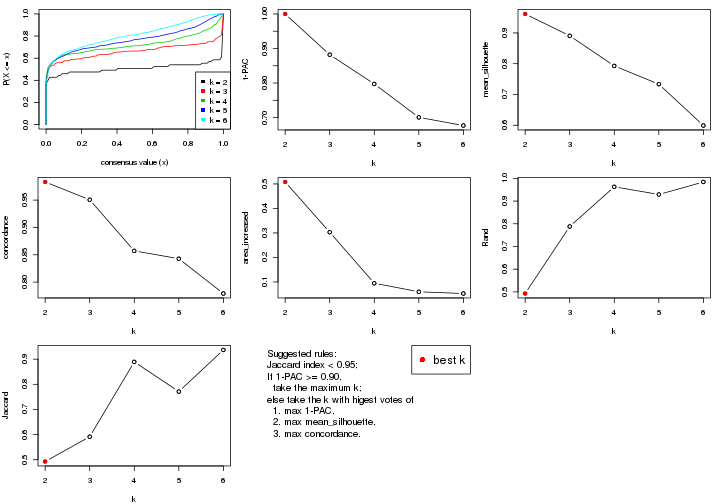
The numeric values for all these statistics can be obtained by get_stats().
get_stats(res)
#> k 1-PAC mean_silhouette concordance area_increased Rand Jaccard
#> 2 2 1.000 0.962 0.983 0.5080 0.493 0.493
#> 3 3 0.882 0.891 0.951 0.3030 0.788 0.592
#> 4 4 0.797 0.793 0.857 0.0946 0.963 0.889
#> 5 5 0.701 0.734 0.843 0.0599 0.929 0.771
#> 6 6 0.677 0.599 0.779 0.0528 0.984 0.937
suggest_best_k() suggests the best \(k\) based on these statistics. The rules are as follows:
suggest_best_k(res)
#> [1] 2
Following shows the table of the partitions (You need to click the show/hide
code output link to see it). The membership matrix (columns with name p*)
is inferred by
clue::cl_consensus()
function with the SE method. Basically the value in the membership matrix
represents the probability to belong to a certain group. The finall class
label for an item is determined with the group with highest probability it
belongs to.
In get_classes() function, the entropy is calculated from the membership
matrix and the silhouette score is calculated from the consensus matrix.
cbind(get_classes(res, k = 2), get_membership(res, k = 2))
#> class entropy silhouette p1 p2
#> GSM590886 1 0.0672 0.962 0.992 0.008
#> GSM590859 2 0.0000 0.999 0.000 1.000
#> GSM590864 1 0.5408 0.856 0.876 0.124
#> GSM590844 2 0.0000 0.999 0.000 1.000
#> GSM590878 2 0.0000 0.999 0.000 1.000
#> GSM590841 2 0.0000 0.999 0.000 1.000
#> GSM590843 2 0.0000 0.999 0.000 1.000
#> GSM590895 2 0.0000 0.999 0.000 1.000
#> GSM590897 2 0.0000 0.999 0.000 1.000
#> GSM590842 1 0.0000 0.967 1.000 0.000
#> GSM590869 1 0.0000 0.967 1.000 0.000
#> GSM590874 1 0.4161 0.899 0.916 0.084
#> GSM590889 1 0.0000 0.967 1.000 0.000
#> GSM590851 1 0.0000 0.967 1.000 0.000
#> GSM590873 1 0.0000 0.967 1.000 0.000
#> GSM590898 2 0.0376 0.996 0.004 0.996
#> GSM590882 1 0.0000 0.967 1.000 0.000
#> GSM590849 1 0.0000 0.967 1.000 0.000
#> GSM590892 2 0.0000 0.999 0.000 1.000
#> GSM590900 2 0.0000 0.999 0.000 1.000
#> GSM590896 1 0.3584 0.914 0.932 0.068
#> GSM590870 1 0.0000 0.967 1.000 0.000
#> GSM590853 1 0.0000 0.967 1.000 0.000
#> GSM590884 1 0.0000 0.967 1.000 0.000
#> GSM590847 2 0.0000 0.999 0.000 1.000
#> GSM590857 2 0.0000 0.999 0.000 1.000
#> GSM590865 2 0.0000 0.999 0.000 1.000
#> GSM590872 2 0.0000 0.999 0.000 1.000
#> GSM590883 2 0.0000 0.999 0.000 1.000
#> GSM590887 2 0.0000 0.999 0.000 1.000
#> GSM590888 2 0.0000 0.999 0.000 1.000
#> GSM590891 2 0.0000 0.999 0.000 1.000
#> GSM590899 2 0.0938 0.987 0.012 0.988
#> GSM590848 1 0.0000 0.967 1.000 0.000
#> GSM590850 1 0.0000 0.967 1.000 0.000
#> GSM590855 1 0.0000 0.967 1.000 0.000
#> GSM590860 1 0.0000 0.967 1.000 0.000
#> GSM590890 1 0.1184 0.956 0.984 0.016
#> GSM590894 1 0.0000 0.967 1.000 0.000
#> GSM590852 1 0.0000 0.967 1.000 0.000
#> GSM590858 1 0.0000 0.967 1.000 0.000
#> GSM590862 1 0.0000 0.967 1.000 0.000
#> GSM590867 1 0.0000 0.967 1.000 0.000
#> GSM590871 1 0.0000 0.967 1.000 0.000
#> GSM590877 1 0.9732 0.357 0.596 0.404
#> GSM590879 1 0.0000 0.967 1.000 0.000
#> GSM590880 1 0.0000 0.967 1.000 0.000
#> GSM590845 1 0.8861 0.573 0.696 0.304
#> GSM590846 2 0.0000 0.999 0.000 1.000
#> GSM590875 2 0.0000 0.999 0.000 1.000
#> GSM590881 2 0.0000 0.999 0.000 1.000
#> GSM590854 2 0.0000 0.999 0.000 1.000
#> GSM590856 2 0.0000 0.999 0.000 1.000
#> GSM590861 1 0.0000 0.967 1.000 0.000
#> GSM590863 2 0.0000 0.999 0.000 1.000
#> GSM590866 2 0.0000 0.999 0.000 1.000
#> GSM590876 2 0.0000 0.999 0.000 1.000
#> GSM590893 2 0.0000 0.999 0.000 1.000
#> GSM590885 1 0.0000 0.967 1.000 0.000
#> GSM590840 1 0.0000 0.967 1.000 0.000
#> GSM590868 2 0.0000 0.999 0.000 1.000
cbind(get_classes(res, k = 3), get_membership(res, k = 3))
#> class entropy silhouette p1 p2 p3
#> GSM590886 1 0.0237 0.931 0.996 0.000 0.004
#> GSM590859 2 0.0237 0.987 0.004 0.996 0.000
#> GSM590864 1 0.0237 0.928 0.996 0.004 0.000
#> GSM590844 2 0.0237 0.987 0.004 0.996 0.000
#> GSM590878 2 0.0000 0.987 0.000 1.000 0.000
#> GSM590841 3 0.3619 0.808 0.000 0.136 0.864
#> GSM590843 2 0.0000 0.987 0.000 1.000 0.000
#> GSM590895 2 0.0237 0.987 0.004 0.996 0.000
#> GSM590897 2 0.0237 0.987 0.004 0.996 0.000
#> GSM590842 1 0.0424 0.929 0.992 0.000 0.008
#> GSM590869 3 0.0237 0.881 0.000 0.004 0.996
#> GSM590874 1 0.0000 0.931 1.000 0.000 0.000
#> GSM590889 1 0.0000 0.931 1.000 0.000 0.000
#> GSM590851 1 0.0237 0.931 0.996 0.000 0.004
#> GSM590873 1 0.0000 0.931 1.000 0.000 0.000
#> GSM590898 3 0.5465 0.636 0.000 0.288 0.712
#> GSM590882 3 0.0892 0.877 0.020 0.000 0.980
#> GSM590849 1 0.6244 0.274 0.560 0.000 0.440
#> GSM590892 2 0.0237 0.987 0.004 0.996 0.000
#> GSM590900 2 0.0237 0.987 0.004 0.996 0.000
#> GSM590896 1 0.0000 0.931 1.000 0.000 0.000
#> GSM590870 3 0.0000 0.882 0.000 0.000 1.000
#> GSM590853 3 0.0000 0.882 0.000 0.000 1.000
#> GSM590884 1 0.6045 0.431 0.620 0.000 0.380
#> GSM590847 2 0.0000 0.987 0.000 1.000 0.000
#> GSM590857 2 0.0237 0.987 0.004 0.996 0.000
#> GSM590865 2 0.0424 0.985 0.008 0.992 0.000
#> GSM590872 2 0.1163 0.966 0.000 0.972 0.028
#> GSM590883 2 0.0237 0.985 0.000 0.996 0.004
#> GSM590887 2 0.1860 0.944 0.000 0.948 0.052
#> GSM590888 2 0.0237 0.987 0.004 0.996 0.000
#> GSM590891 2 0.0000 0.987 0.000 1.000 0.000
#> GSM590899 3 0.5178 0.684 0.000 0.256 0.744
#> GSM590848 1 0.0000 0.931 1.000 0.000 0.000
#> GSM590850 1 0.0237 0.931 0.996 0.000 0.004
#> GSM590855 1 0.0237 0.931 0.996 0.000 0.004
#> GSM590860 1 0.5905 0.491 0.648 0.000 0.352
#> GSM590890 1 0.0000 0.931 1.000 0.000 0.000
#> GSM590894 1 0.0237 0.931 0.996 0.000 0.004
#> GSM590852 3 0.0424 0.881 0.008 0.000 0.992
#> GSM590858 1 0.0000 0.931 1.000 0.000 0.000
#> GSM590862 1 0.0424 0.929 0.992 0.000 0.008
#> GSM590867 3 0.0237 0.881 0.000 0.004 0.996
#> GSM590871 3 0.1643 0.865 0.044 0.000 0.956
#> GSM590877 1 0.0747 0.916 0.984 0.016 0.000
#> GSM590879 1 0.0237 0.931 0.996 0.000 0.004
#> GSM590880 3 0.0237 0.881 0.004 0.000 0.996
#> GSM590845 3 0.0237 0.881 0.000 0.004 0.996
#> GSM590846 2 0.0237 0.987 0.004 0.996 0.000
#> GSM590875 3 0.6026 0.462 0.000 0.376 0.624
#> GSM590881 2 0.0000 0.987 0.000 1.000 0.000
#> GSM590854 2 0.0424 0.985 0.008 0.992 0.000
#> GSM590856 2 0.0000 0.987 0.000 1.000 0.000
#> GSM590861 3 0.1753 0.863 0.048 0.000 0.952
#> GSM590863 2 0.0237 0.987 0.004 0.996 0.000
#> GSM590866 2 0.0237 0.985 0.000 0.996 0.004
#> GSM590876 2 0.2959 0.881 0.100 0.900 0.000
#> GSM590893 2 0.1643 0.952 0.000 0.956 0.044
#> GSM590885 3 0.4605 0.679 0.204 0.000 0.796
#> GSM590840 3 0.2796 0.826 0.092 0.000 0.908
#> GSM590868 2 0.0000 0.987 0.000 1.000 0.000
cbind(get_classes(res, k = 4), get_membership(res, k = 4))
#> class entropy silhouette p1 p2 p3 p4
#> GSM590886 1 0.2469 0.7615 0.892 0.000 0.108 0.000
#> GSM590859 2 0.0336 0.9378 0.000 0.992 0.008 0.000
#> GSM590864 1 0.0707 0.8057 0.980 0.000 0.020 0.000
#> GSM590844 2 0.0336 0.9378 0.000 0.992 0.008 0.000
#> GSM590878 2 0.1191 0.9318 0.004 0.968 0.024 0.004
#> GSM590841 4 0.2742 0.7737 0.000 0.076 0.024 0.900
#> GSM590843 2 0.0000 0.9383 0.000 1.000 0.000 0.000
#> GSM590895 2 0.1174 0.9301 0.020 0.968 0.012 0.000
#> GSM590897 2 0.0657 0.9362 0.004 0.984 0.012 0.000
#> GSM590842 1 0.2814 0.7834 0.868 0.000 0.132 0.000
#> GSM590869 4 0.3610 0.7533 0.000 0.000 0.200 0.800
#> GSM590874 1 0.3157 0.7283 0.852 0.004 0.144 0.000
#> GSM590889 1 0.2530 0.7607 0.888 0.000 0.112 0.000
#> GSM590851 1 0.4661 0.5869 0.652 0.000 0.348 0.000
#> GSM590873 1 0.1792 0.8019 0.932 0.000 0.068 0.000
#> GSM590898 4 0.3933 0.7532 0.004 0.004 0.196 0.796
#> GSM590882 4 0.0707 0.8240 0.000 0.000 0.020 0.980
#> GSM590849 3 0.5056 0.9472 0.044 0.000 0.732 0.224
#> GSM590892 2 0.0188 0.9380 0.000 0.996 0.004 0.000
#> GSM590900 2 0.1118 0.9272 0.000 0.964 0.036 0.000
#> GSM590896 1 0.1209 0.7939 0.964 0.004 0.032 0.000
#> GSM590870 4 0.0592 0.8250 0.000 0.000 0.016 0.984
#> GSM590853 4 0.0592 0.8263 0.000 0.000 0.016 0.984
#> GSM590884 1 0.7009 0.0574 0.444 0.000 0.116 0.440
#> GSM590847 2 0.3429 0.8604 0.028 0.868 0.100 0.004
#> GSM590857 2 0.0707 0.9346 0.000 0.980 0.020 0.000
#> GSM590865 2 0.1118 0.9275 0.000 0.964 0.036 0.000
#> GSM590872 2 0.0376 0.9383 0.000 0.992 0.004 0.004
#> GSM590883 2 0.0188 0.9382 0.000 0.996 0.004 0.000
#> GSM590887 2 0.1854 0.9109 0.000 0.940 0.012 0.048
#> GSM590888 2 0.0524 0.9371 0.004 0.988 0.008 0.000
#> GSM590891 2 0.0188 0.9382 0.000 0.996 0.004 0.000
#> GSM590899 4 0.4302 0.7146 0.004 0.004 0.236 0.756
#> GSM590848 1 0.4877 0.4888 0.592 0.000 0.408 0.000
#> GSM590850 1 0.1211 0.8057 0.960 0.000 0.040 0.000
#> GSM590855 1 0.4941 0.4276 0.564 0.000 0.436 0.000
#> GSM590860 3 0.5288 0.9219 0.068 0.000 0.732 0.200
#> GSM590890 1 0.0592 0.8040 0.984 0.000 0.016 0.000
#> GSM590894 1 0.0469 0.8047 0.988 0.000 0.012 0.000
#> GSM590852 4 0.0817 0.8228 0.000 0.000 0.024 0.976
#> GSM590858 1 0.3688 0.7430 0.792 0.000 0.208 0.000
#> GSM590862 1 0.3311 0.7662 0.828 0.000 0.172 0.000
#> GSM590867 4 0.3052 0.7180 0.000 0.004 0.136 0.860
#> GSM590871 4 0.5383 -0.3471 0.012 0.000 0.452 0.536
#> GSM590877 1 0.1576 0.7888 0.948 0.004 0.048 0.000
#> GSM590879 1 0.3528 0.7540 0.808 0.000 0.192 0.000
#> GSM590880 4 0.0817 0.8220 0.000 0.000 0.024 0.976
#> GSM590845 4 0.1305 0.8158 0.000 0.004 0.036 0.960
#> GSM590846 2 0.0188 0.9382 0.000 0.996 0.004 0.000
#> GSM590875 4 0.3351 0.7830 0.000 0.008 0.148 0.844
#> GSM590881 2 0.5572 0.6962 0.060 0.708 0.228 0.004
#> GSM590854 2 0.0469 0.9381 0.000 0.988 0.012 0.000
#> GSM590856 2 0.1743 0.9145 0.004 0.940 0.056 0.000
#> GSM590861 3 0.4690 0.9295 0.016 0.000 0.724 0.260
#> GSM590863 2 0.0336 0.9378 0.000 0.992 0.008 0.000
#> GSM590866 2 0.4343 0.6601 0.000 0.732 0.264 0.004
#> GSM590876 2 0.6908 0.5051 0.220 0.592 0.188 0.000
#> GSM590893 2 0.2565 0.8896 0.000 0.912 0.032 0.056
#> GSM590885 4 0.2928 0.7979 0.052 0.000 0.052 0.896
#> GSM590840 3 0.4715 0.9429 0.016 0.004 0.740 0.240
#> GSM590868 2 0.0188 0.9380 0.000 0.996 0.004 0.000
cbind(get_classes(res, k = 5), get_membership(res, k = 5))
#> class entropy silhouette p1 p2 p3 p4 p5
#> GSM590886 4 0.4595 0.1345 0.400 0.004 0.000 0.588 0.008
#> GSM590859 2 0.0451 0.8765 0.000 0.988 0.000 0.008 0.004
#> GSM590864 1 0.2139 0.8461 0.916 0.000 0.000 0.052 0.032
#> GSM590844 2 0.1197 0.8714 0.000 0.952 0.000 0.048 0.000
#> GSM590878 2 0.3480 0.6990 0.000 0.752 0.000 0.248 0.000
#> GSM590841 3 0.3714 0.6673 0.000 0.132 0.812 0.056 0.000
#> GSM590843 2 0.0404 0.8758 0.000 0.988 0.000 0.012 0.000
#> GSM590895 2 0.0932 0.8762 0.004 0.972 0.000 0.020 0.004
#> GSM590897 2 0.0854 0.8759 0.004 0.976 0.000 0.012 0.008
#> GSM590842 1 0.3037 0.8418 0.860 0.000 0.000 0.040 0.100
#> GSM590869 4 0.3895 0.5236 0.000 0.000 0.320 0.680 0.000
#> GSM590874 1 0.2389 0.7907 0.880 0.000 0.000 0.116 0.004
#> GSM590889 1 0.3642 0.6764 0.760 0.000 0.000 0.232 0.008
#> GSM590851 1 0.3368 0.8051 0.820 0.000 0.000 0.024 0.156
#> GSM590873 1 0.1809 0.8517 0.928 0.000 0.000 0.012 0.060
#> GSM590898 3 0.1831 0.8300 0.000 0.004 0.920 0.076 0.000
#> GSM590882 3 0.1412 0.8675 0.008 0.000 0.952 0.004 0.036
#> GSM590849 5 0.3488 0.7684 0.064 0.000 0.068 0.016 0.852
#> GSM590892 2 0.1041 0.8754 0.000 0.964 0.000 0.032 0.004
#> GSM590900 2 0.4807 0.7177 0.000 0.728 0.000 0.132 0.140
#> GSM590896 1 0.0771 0.8404 0.976 0.000 0.000 0.020 0.004
#> GSM590870 3 0.0798 0.8667 0.000 0.000 0.976 0.008 0.016
#> GSM590853 4 0.4967 0.4906 0.000 0.000 0.280 0.660 0.060
#> GSM590884 1 0.6774 0.2386 0.488 0.000 0.372 0.068 0.072
#> GSM590847 2 0.3684 0.7392 0.016 0.788 0.000 0.192 0.004
#> GSM590857 2 0.3164 0.8254 0.000 0.852 0.000 0.104 0.044
#> GSM590865 2 0.4995 0.6328 0.000 0.668 0.000 0.068 0.264
#> GSM590872 2 0.1808 0.8683 0.000 0.936 0.040 0.020 0.004
#> GSM590883 2 0.1934 0.8688 0.000 0.932 0.040 0.020 0.008
#> GSM590887 2 0.5793 0.3907 0.008 0.568 0.352 0.068 0.004
#> GSM590888 2 0.3303 0.8437 0.012 0.872 0.032 0.068 0.016
#> GSM590891 2 0.1251 0.8718 0.000 0.956 0.000 0.036 0.008
#> GSM590899 4 0.4264 0.4646 0.004 0.000 0.376 0.620 0.000
#> GSM590848 1 0.5492 0.2726 0.504 0.000 0.000 0.064 0.432
#> GSM590850 1 0.3033 0.8350 0.864 0.000 0.000 0.084 0.052
#> GSM590855 1 0.3675 0.7758 0.788 0.000 0.000 0.024 0.188
#> GSM590860 5 0.1461 0.8050 0.016 0.000 0.028 0.004 0.952
#> GSM590890 1 0.0693 0.8434 0.980 0.000 0.000 0.012 0.008
#> GSM590894 1 0.0451 0.8473 0.988 0.000 0.000 0.004 0.008
#> GSM590852 3 0.1403 0.8669 0.000 0.000 0.952 0.024 0.024
#> GSM590858 1 0.2286 0.8443 0.888 0.000 0.000 0.004 0.108
#> GSM590862 1 0.2037 0.8518 0.920 0.000 0.004 0.012 0.064
#> GSM590867 3 0.2136 0.8425 0.000 0.000 0.904 0.008 0.088
#> GSM590871 5 0.4557 0.0439 0.000 0.000 0.476 0.008 0.516
#> GSM590877 1 0.1502 0.8295 0.940 0.000 0.000 0.056 0.004
#> GSM590879 1 0.2179 0.8462 0.896 0.000 0.000 0.004 0.100
#> GSM590880 3 0.3814 0.7301 0.000 0.000 0.808 0.124 0.068
#> GSM590845 3 0.1628 0.8601 0.000 0.000 0.936 0.008 0.056
#> GSM590846 2 0.2416 0.8439 0.000 0.888 0.000 0.100 0.012
#> GSM590875 4 0.4856 0.4393 0.000 0.028 0.388 0.584 0.000
#> GSM590881 4 0.3690 0.4826 0.020 0.200 0.000 0.780 0.000
#> GSM590854 2 0.0510 0.8766 0.000 0.984 0.000 0.016 0.000
#> GSM590856 2 0.1608 0.8639 0.000 0.928 0.000 0.072 0.000
#> GSM590861 5 0.2424 0.7883 0.008 0.000 0.032 0.052 0.908
#> GSM590863 2 0.1106 0.8768 0.000 0.964 0.000 0.024 0.012
#> GSM590866 2 0.4768 0.6195 0.000 0.672 0.004 0.036 0.288
#> GSM590876 4 0.5798 0.3673 0.096 0.300 0.000 0.596 0.008
#> GSM590893 2 0.2679 0.8507 0.000 0.892 0.048 0.056 0.004
#> GSM590885 3 0.2777 0.7559 0.120 0.000 0.864 0.016 0.000
#> GSM590840 5 0.0960 0.7978 0.008 0.000 0.016 0.004 0.972
#> GSM590868 2 0.0162 0.8756 0.000 0.996 0.000 0.004 0.000
cbind(get_classes(res, k = 6), get_membership(res, k = 6))
#> class entropy silhouette p1 p2 p3 p4 p5 p6
#> GSM590886 6 0.6413 -0.2272 0.268 0.000 0.004 0.352 0.008 0.368
#> GSM590859 2 0.0713 0.7042 0.000 0.972 0.000 0.000 0.000 0.028
#> GSM590864 1 0.4272 0.7000 0.772 0.000 0.004 0.096 0.020 0.108
#> GSM590844 2 0.2416 0.6560 0.000 0.844 0.000 0.000 0.000 0.156
#> GSM590878 2 0.4466 0.4563 0.000 0.620 0.000 0.336 0.000 0.044
#> GSM590841 3 0.4090 0.7055 0.000 0.092 0.792 0.048 0.000 0.068
#> GSM590843 2 0.1285 0.7000 0.000 0.944 0.000 0.004 0.000 0.052
#> GSM590895 2 0.1814 0.6841 0.000 0.900 0.000 0.000 0.000 0.100
#> GSM590897 2 0.1152 0.7040 0.000 0.952 0.000 0.004 0.000 0.044
#> GSM590842 1 0.3516 0.7549 0.824 0.000 0.004 0.008 0.076 0.088
#> GSM590869 4 0.2060 0.6209 0.000 0.000 0.084 0.900 0.000 0.016
#> GSM590874 1 0.3908 0.7159 0.768 0.000 0.000 0.132 0.000 0.100
#> GSM590889 1 0.4715 0.3692 0.536 0.000 0.000 0.416 0.000 0.048
#> GSM590851 1 0.2948 0.7537 0.860 0.000 0.012 0.000 0.084 0.044
#> GSM590873 1 0.1313 0.7803 0.952 0.000 0.004 0.000 0.016 0.028
#> GSM590898 3 0.3206 0.7603 0.000 0.004 0.816 0.152 0.000 0.028
#> GSM590882 3 0.1410 0.8356 0.008 0.000 0.944 0.000 0.004 0.044
#> GSM590849 5 0.4929 0.6627 0.164 0.000 0.060 0.000 0.712 0.064
#> GSM590892 2 0.3213 0.6003 0.000 0.784 0.008 0.004 0.000 0.204
#> GSM590900 6 0.5725 -0.1778 0.000 0.384 0.004 0.012 0.104 0.496
#> GSM590896 1 0.3014 0.7553 0.832 0.000 0.000 0.036 0.000 0.132
#> GSM590870 3 0.0767 0.8385 0.000 0.000 0.976 0.008 0.012 0.004
#> GSM590853 4 0.6553 0.4462 0.000 0.000 0.260 0.520 0.096 0.124
#> GSM590884 1 0.8625 -0.0316 0.316 0.000 0.212 0.220 0.108 0.144
#> GSM590847 2 0.4352 0.4902 0.000 0.668 0.000 0.280 0.000 0.052
#> GSM590857 2 0.4334 0.1740 0.000 0.568 0.000 0.000 0.024 0.408
#> GSM590865 2 0.6762 0.1374 0.000 0.400 0.008 0.048 0.384 0.160
#> GSM590872 2 0.2526 0.6881 0.000 0.876 0.096 0.004 0.000 0.024
#> GSM590883 2 0.3447 0.6654 0.000 0.820 0.108 0.008 0.000 0.064
#> GSM590887 2 0.5728 0.3107 0.000 0.524 0.348 0.012 0.004 0.112
#> GSM590888 2 0.4493 0.5806 0.008 0.700 0.008 0.032 0.004 0.248
#> GSM590891 2 0.2100 0.6914 0.000 0.884 0.000 0.004 0.000 0.112
#> GSM590899 4 0.3511 0.6217 0.000 0.000 0.216 0.760 0.000 0.024
#> GSM590848 1 0.5389 0.4154 0.584 0.000 0.008 0.000 0.288 0.120
#> GSM590850 1 0.3790 0.7530 0.804 0.000 0.000 0.052 0.028 0.116
#> GSM590855 1 0.2593 0.7645 0.884 0.000 0.012 0.000 0.068 0.036
#> GSM590860 5 0.1059 0.8033 0.016 0.000 0.004 0.000 0.964 0.016
#> GSM590890 1 0.1411 0.7850 0.936 0.000 0.004 0.000 0.000 0.060
#> GSM590894 1 0.1364 0.7856 0.944 0.000 0.000 0.004 0.004 0.048
#> GSM590852 3 0.1251 0.8343 0.000 0.000 0.956 0.024 0.012 0.008
#> GSM590858 1 0.2645 0.7869 0.880 0.000 0.000 0.008 0.056 0.056
#> GSM590862 1 0.3387 0.7655 0.828 0.000 0.028 0.008 0.012 0.124
#> GSM590867 3 0.2774 0.8115 0.000 0.000 0.872 0.012 0.040 0.076
#> GSM590871 5 0.4587 0.5943 0.004 0.000 0.236 0.012 0.696 0.052
#> GSM590877 1 0.3633 0.7515 0.800 0.000 0.000 0.076 0.004 0.120
#> GSM590879 1 0.1552 0.7873 0.940 0.000 0.000 0.004 0.036 0.020
#> GSM590880 3 0.5784 0.5212 0.000 0.000 0.640 0.164 0.108 0.088
#> GSM590845 3 0.1956 0.8363 0.000 0.008 0.928 0.016 0.016 0.032
#> GSM590846 2 0.4318 0.0640 0.000 0.532 0.000 0.000 0.020 0.448
#> GSM590875 4 0.4647 0.4813 0.000 0.012 0.328 0.624 0.000 0.036
#> GSM590881 4 0.2190 0.5262 0.000 0.040 0.000 0.900 0.000 0.060
#> GSM590854 2 0.1501 0.6932 0.000 0.924 0.000 0.000 0.000 0.076
#> GSM590856 2 0.3608 0.6389 0.000 0.788 0.000 0.148 0.000 0.064
#> GSM590861 5 0.2350 0.7776 0.000 0.000 0.020 0.000 0.880 0.100
#> GSM590863 2 0.2003 0.6794 0.000 0.884 0.000 0.000 0.000 0.116
#> GSM590866 2 0.5612 0.3591 0.000 0.548 0.000 0.012 0.316 0.124
#> GSM590876 4 0.5788 0.2814 0.032 0.212 0.000 0.620 0.008 0.128
#> GSM590893 2 0.3906 0.6591 0.000 0.796 0.052 0.032 0.000 0.120
#> GSM590885 3 0.2612 0.7635 0.108 0.000 0.868 0.008 0.000 0.016
#> GSM590840 5 0.0363 0.7993 0.000 0.000 0.000 0.000 0.988 0.012
#> GSM590868 2 0.0777 0.7052 0.000 0.972 0.000 0.004 0.000 0.024
Heatmaps for the consensus matrix. It visualizes the probability of two samples to be in a same group.
consensus_heatmap(res, k = 2)
consensus_heatmap(res, k = 3)
consensus_heatmap(res, k = 4)
consensus_heatmap(res, k = 5)

consensus_heatmap(res, k = 6)
Heatmaps for the membership of samples in all partitions to see how consistent they are:
membership_heatmap(res, k = 2)
membership_heatmap(res, k = 3)
membership_heatmap(res, k = 4)
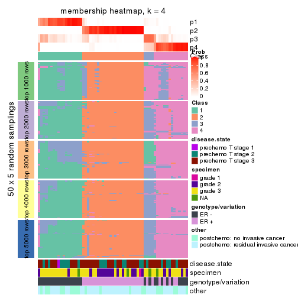
membership_heatmap(res, k = 5)
membership_heatmap(res, k = 6)
As soon as we have had the classes for columns, we can look for signatures which are significantly different between classes which can be candidate marks for certain classes. Following are the heatmaps for signatures.
Signature heatmaps where rows are scaled:
get_signatures(res, k = 2)
get_signatures(res, k = 3)
get_signatures(res, k = 4)
get_signatures(res, k = 5)
get_signatures(res, k = 6)
Signature heatmaps where rows are not scaled:
get_signatures(res, k = 2, scale_rows = FALSE)
get_signatures(res, k = 3, scale_rows = FALSE)
get_signatures(res, k = 4, scale_rows = FALSE)
get_signatures(res, k = 5, scale_rows = FALSE)

get_signatures(res, k = 6, scale_rows = FALSE)
Compare the overlap of signatures from different k:
compare_signatures(res)
get_signature() returns a data frame invisibly. TO get the list of signatures, the function
call should be assigned to a variable explicitly. In following code, if plot argument is set
to FALSE, no heatmap is plotted while only the differential analysis is performed.
# code only for demonstration
tb = get_signature(res, k = ..., plot = FALSE)
An example of the output of tb is:
#> which_row fdr mean_1 mean_2 scaled_mean_1 scaled_mean_2 km
#> 1 38 0.042760348 8.373488 9.131774 -0.5533452 0.5164555 1
#> 2 40 0.018707592 7.106213 8.469186 -0.6173731 0.5762149 1
#> 3 55 0.019134737 10.221463 11.207825 -0.6159697 0.5749050 1
#> 4 59 0.006059896 5.921854 7.869574 -0.6899429 0.6439467 1
#> 5 60 0.018055526 8.928898 10.211722 -0.6204761 0.5791110 1
#> 6 98 0.009384629 15.714769 14.887706 0.6635654 -0.6193277 2
...
The columns in tb are:
which_row: row indices corresponding to the input matrix.fdr: FDR for the differential test. mean_x: The mean value in group x.scaled_mean_x: The mean value in group x after rows are scaled.km: Row groups if k-means clustering is applied to rows.UMAP plot which shows how samples are separated.
dimension_reduction(res, k = 2, method = "UMAP")
dimension_reduction(res, k = 3, method = "UMAP")
dimension_reduction(res, k = 4, method = "UMAP")
dimension_reduction(res, k = 5, method = "UMAP")
dimension_reduction(res, k = 6, method = "UMAP")
Following heatmap shows how subgroups are split when increasing k:
collect_classes(res)
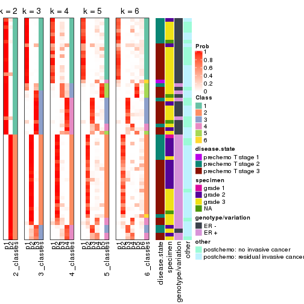
Test correlation between subgroups and known annotations. If the known annotation is numeric, one-way ANOVA test is applied, and if the known annotation is discrete, chi-squared contingency table test is applied.
test_to_known_factors(res)
#> n disease.state(p) specimen(p) genotype/variation(p) other(p) k
#> SD:NMF 60 0.619 0.00638 4.63e-10 0.0224 2
#> SD:NMF 57 0.485 0.03702 3.36e-10 0.0404 3
#> SD:NMF 57 0.605 0.10273 8.58e-09 0.1246 4
#> SD:NMF 51 0.655 0.16556 7.11e-08 0.0571 5
#> SD:NMF 46 0.917 0.27965 3.86e-06 0.0601 6
If matrix rows can be associated to genes, consider to use functional_enrichment(res,
...) to perform function enrichment for the signature genes. See this vignette for more detailed explanations.
The object with results only for a single top-value method and a single partition method can be extracted as:
res = res_list["CV", "hclust"]
# you can also extract it by
# res = res_list["CV:hclust"]
A summary of res and all the functions that can be applied to it:
res
#> A 'ConsensusPartition' object with k = 2, 3, 4, 5, 6.
#> On a matrix with 21168 rows and 61 columns.
#> Top rows (1000, 2000, 3000, 4000, 5000) are extracted by 'CV' method.
#> Subgroups are detected by 'hclust' method.
#> Performed in total 1250 partitions by row resampling.
#> Best k for subgroups seems to be 4.
#>
#> Following methods can be applied to this 'ConsensusPartition' object:
#> [1] "cola_report" "collect_classes" "collect_plots"
#> [4] "collect_stats" "colnames" "compare_signatures"
#> [7] "consensus_heatmap" "dimension_reduction" "functional_enrichment"
#> [10] "get_anno_col" "get_anno" "get_classes"
#> [13] "get_consensus" "get_matrix" "get_membership"
#> [16] "get_param" "get_signatures" "get_stats"
#> [19] "is_best_k" "is_stable_k" "membership_heatmap"
#> [22] "ncol" "nrow" "plot_ecdf"
#> [25] "rownames" "select_partition_number" "show"
#> [28] "suggest_best_k" "test_to_known_factors"
collect_plots() function collects all the plots made from res for all k (number of partitions)
into one single page to provide an easy and fast comparison between different k.
collect_plots(res)
The plots are:
k and the heatmap of
predicted classes for each k.k.k.k.All the plots in panels can be made by individual functions and they are plotted later in this section.
select_partition_number() produces several plots showing different
statistics for choosing “optimized” k. There are following statistics:
k;k, the area increased is defined as \(A_k - A_{k-1}\).The detailed explanations of these statistics can be found in the cola vignette.
Generally speaking, lower PAC score, higher mean silhouette score or higher
concordance corresponds to better partition. Rand index and Jaccard index
measure how similar the current partition is compared to partition with k-1.
If they are too similar, we won't accept k is better than k-1.
select_partition_number(res)
The numeric values for all these statistics can be obtained by get_stats().
get_stats(res)
#> k 1-PAC mean_silhouette concordance area_increased Rand Jaccard
#> 2 2 0.266 0.624 0.823 0.3274 0.679 0.679
#> 3 3 0.197 0.527 0.732 0.7984 0.574 0.437
#> 4 4 0.534 0.641 0.792 0.1980 0.850 0.647
#> 5 5 0.615 0.632 0.771 0.0535 0.981 0.934
#> 6 6 0.634 0.585 0.757 0.0407 0.985 0.943
suggest_best_k() suggests the best \(k\) based on these statistics. The rules are as follows:
suggest_best_k(res)
#> [1] 4
Following shows the table of the partitions (You need to click the show/hide
code output link to see it). The membership matrix (columns with name p*)
is inferred by
clue::cl_consensus()
function with the SE method. Basically the value in the membership matrix
represents the probability to belong to a certain group. The finall class
label for an item is determined with the group with highest probability it
belongs to.
In get_classes() function, the entropy is calculated from the membership
matrix and the silhouette score is calculated from the consensus matrix.
cbind(get_classes(res, k = 2), get_membership(res, k = 2))
#> class entropy silhouette p1 p2
#> GSM590886 2 0.8499 0.5902 0.276 0.724
#> GSM590859 2 0.0000 0.7752 0.000 1.000
#> GSM590864 2 0.7883 0.6386 0.236 0.764
#> GSM590844 2 0.0000 0.7752 0.000 1.000
#> GSM590878 2 0.1633 0.7738 0.024 0.976
#> GSM590841 2 0.6048 0.7258 0.148 0.852
#> GSM590843 2 0.0000 0.7752 0.000 1.000
#> GSM590895 2 0.0000 0.7752 0.000 1.000
#> GSM590897 2 0.0000 0.7752 0.000 1.000
#> GSM590842 2 0.8267 0.6078 0.260 0.740
#> GSM590869 2 0.7139 0.6510 0.196 0.804
#> GSM590874 2 0.7815 0.6412 0.232 0.768
#> GSM590889 2 0.7950 0.6347 0.240 0.760
#> GSM590851 2 0.9909 0.0298 0.444 0.556
#> GSM590873 2 0.8207 0.6105 0.256 0.744
#> GSM590898 2 0.5408 0.7371 0.124 0.876
#> GSM590882 1 0.9775 0.4772 0.588 0.412
#> GSM590849 1 0.9580 0.5156 0.620 0.380
#> GSM590892 2 0.0376 0.7733 0.004 0.996
#> GSM590900 2 0.2778 0.7481 0.048 0.952
#> GSM590896 2 0.7815 0.6412 0.232 0.768
#> GSM590870 1 0.9998 0.2871 0.508 0.492
#> GSM590853 2 0.9460 0.3008 0.364 0.636
#> GSM590884 1 0.9815 0.4555 0.580 0.420
#> GSM590847 2 0.1633 0.7738 0.024 0.976
#> GSM590857 2 0.0000 0.7752 0.000 1.000
#> GSM590865 2 0.2948 0.7453 0.052 0.948
#> GSM590872 2 0.5408 0.7421 0.124 0.876
#> GSM590883 2 0.2778 0.7745 0.048 0.952
#> GSM590887 2 0.4562 0.7605 0.096 0.904
#> GSM590888 2 0.0938 0.7773 0.012 0.988
#> GSM590891 2 0.0000 0.7752 0.000 1.000
#> GSM590899 2 0.4815 0.7509 0.104 0.896
#> GSM590848 2 0.9087 0.4771 0.324 0.676
#> GSM590850 2 0.8267 0.6063 0.260 0.740
#> GSM590855 1 0.9815 0.4400 0.580 0.420
#> GSM590860 1 0.1414 0.5934 0.980 0.020
#> GSM590890 2 0.7815 0.6412 0.232 0.768
#> GSM590894 2 0.7815 0.6412 0.232 0.768
#> GSM590852 1 0.9988 0.3253 0.520 0.480
#> GSM590858 2 0.9286 0.4223 0.344 0.656
#> GSM590862 2 0.8608 0.5691 0.284 0.716
#> GSM590867 1 0.9922 0.4055 0.552 0.448
#> GSM590871 1 0.3431 0.6097 0.936 0.064
#> GSM590877 2 0.7815 0.6412 0.232 0.768
#> GSM590879 2 0.9323 0.4144 0.348 0.652
#> GSM590880 1 0.8763 0.5949 0.704 0.296
#> GSM590845 2 0.9963 -0.2192 0.464 0.536
#> GSM590846 2 0.0000 0.7752 0.000 1.000
#> GSM590875 2 0.5059 0.7448 0.112 0.888
#> GSM590881 2 0.1414 0.7724 0.020 0.980
#> GSM590854 2 0.0000 0.7752 0.000 1.000
#> GSM590856 2 0.1633 0.7738 0.024 0.976
#> GSM590861 1 0.2603 0.6032 0.956 0.044
#> GSM590863 2 0.0000 0.7752 0.000 1.000
#> GSM590866 2 0.5294 0.6693 0.120 0.880
#> GSM590876 2 0.2236 0.7761 0.036 0.964
#> GSM590893 2 0.3879 0.7575 0.076 0.924
#> GSM590885 2 0.9000 0.5022 0.316 0.684
#> GSM590840 1 0.1414 0.5934 0.980 0.020
#> GSM590868 2 0.0000 0.7752 0.000 1.000
cbind(get_classes(res, k = 3), get_membership(res, k = 3))
#> class entropy silhouette p1 p2 p3
#> GSM590886 1 0.7124 0.5688 0.708 0.204 0.088
#> GSM590859 2 0.0424 0.8570 0.008 0.992 0.000
#> GSM590864 1 0.5115 0.5928 0.768 0.228 0.004
#> GSM590844 2 0.1129 0.8583 0.020 0.976 0.004
#> GSM590878 2 0.6458 0.7201 0.176 0.752 0.072
#> GSM590841 1 0.9131 0.2283 0.520 0.312 0.168
#> GSM590843 2 0.3532 0.8210 0.108 0.884 0.008
#> GSM590895 2 0.0661 0.8562 0.008 0.988 0.004
#> GSM590897 2 0.0661 0.8562 0.008 0.988 0.004
#> GSM590842 1 0.5803 0.5926 0.760 0.212 0.028
#> GSM590869 1 0.9340 0.1503 0.516 0.220 0.264
#> GSM590874 1 0.4702 0.5958 0.788 0.212 0.000
#> GSM590889 1 0.5202 0.5960 0.772 0.220 0.008
#> GSM590851 1 0.8005 0.4168 0.648 0.128 0.224
#> GSM590873 1 0.5680 0.5914 0.764 0.212 0.024
#> GSM590898 1 0.9550 0.1081 0.448 0.352 0.200
#> GSM590882 1 0.7561 -0.4381 0.516 0.040 0.444
#> GSM590849 1 0.7922 -0.0268 0.532 0.060 0.408
#> GSM590892 2 0.1585 0.8573 0.028 0.964 0.008
#> GSM590900 2 0.3683 0.8315 0.060 0.896 0.044
#> GSM590896 1 0.4702 0.5958 0.788 0.212 0.000
#> GSM590870 1 0.7956 -0.3314 0.516 0.060 0.424
#> GSM590853 1 0.9120 0.0139 0.504 0.156 0.340
#> GSM590884 1 0.8046 -0.1332 0.536 0.068 0.396
#> GSM590847 2 0.6168 0.7627 0.124 0.780 0.096
#> GSM590857 2 0.0592 0.8580 0.012 0.988 0.000
#> GSM590865 2 0.3484 0.8273 0.048 0.904 0.048
#> GSM590872 2 0.8587 0.4377 0.260 0.592 0.148
#> GSM590883 2 0.5105 0.7863 0.124 0.828 0.048
#> GSM590887 2 0.5426 0.7883 0.088 0.820 0.092
#> GSM590888 2 0.3276 0.8421 0.068 0.908 0.024
#> GSM590891 2 0.0848 0.8542 0.008 0.984 0.008
#> GSM590899 1 0.9319 0.1155 0.484 0.340 0.176
#> GSM590848 1 0.6731 0.5537 0.740 0.172 0.088
#> GSM590850 1 0.6586 0.5838 0.728 0.216 0.056
#> GSM590855 1 0.7920 0.1019 0.572 0.068 0.360
#> GSM590860 3 0.3941 0.7648 0.156 0.000 0.844
#> GSM590890 1 0.4796 0.5946 0.780 0.220 0.000
#> GSM590894 1 0.4702 0.5958 0.788 0.212 0.000
#> GSM590852 1 0.7878 -0.3336 0.548 0.060 0.392
#> GSM590858 1 0.6990 0.5384 0.728 0.164 0.108
#> GSM590862 1 0.6585 0.5845 0.736 0.200 0.064
#> GSM590867 3 0.7919 0.2933 0.464 0.056 0.480
#> GSM590871 3 0.4755 0.7635 0.184 0.008 0.808
#> GSM590877 1 0.4796 0.5946 0.780 0.220 0.000
#> GSM590879 1 0.7059 0.5385 0.724 0.164 0.112
#> GSM590880 3 0.7411 0.4051 0.416 0.036 0.548
#> GSM590845 1 0.8981 -0.3040 0.448 0.128 0.424
#> GSM590846 2 0.1399 0.8576 0.028 0.968 0.004
#> GSM590875 1 0.9283 0.1445 0.500 0.320 0.180
#> GSM590881 2 0.6091 0.7656 0.124 0.784 0.092
#> GSM590854 2 0.0661 0.8562 0.008 0.988 0.004
#> GSM590856 2 0.6168 0.7627 0.124 0.780 0.096
#> GSM590861 3 0.4293 0.7690 0.164 0.004 0.832
#> GSM590863 2 0.0424 0.8570 0.008 0.992 0.000
#> GSM590866 2 0.4209 0.7519 0.020 0.860 0.120
#> GSM590876 2 0.6255 0.5006 0.300 0.684 0.016
#> GSM590893 2 0.8430 0.4913 0.260 0.604 0.136
#> GSM590885 1 0.7721 0.4288 0.680 0.152 0.168
#> GSM590840 3 0.3941 0.7648 0.156 0.000 0.844
#> GSM590868 2 0.0983 0.8582 0.016 0.980 0.004
cbind(get_classes(res, k = 4), get_membership(res, k = 4))
#> class entropy silhouette p1 p2 p3 p4
#> GSM590886 1 0.5754 0.722 0.760 0.056 0.124 0.060
#> GSM590859 2 0.0376 0.813 0.004 0.992 0.004 0.000
#> GSM590864 1 0.2329 0.828 0.916 0.072 0.012 0.000
#> GSM590844 2 0.0524 0.814 0.008 0.988 0.000 0.004
#> GSM590878 2 0.6005 0.547 0.060 0.616 0.000 0.324
#> GSM590841 4 0.6722 0.573 0.064 0.172 0.076 0.688
#> GSM590843 2 0.5185 0.723 0.060 0.760 0.008 0.172
#> GSM590895 2 0.0712 0.813 0.004 0.984 0.008 0.004
#> GSM590897 2 0.0844 0.812 0.004 0.980 0.012 0.004
#> GSM590842 1 0.2385 0.835 0.920 0.052 0.028 0.000
#> GSM590869 4 0.4053 0.573 0.072 0.036 0.036 0.856
#> GSM590874 1 0.2945 0.829 0.904 0.056 0.024 0.016
#> GSM590889 1 0.2443 0.834 0.916 0.060 0.024 0.000
#> GSM590851 1 0.5185 0.656 0.728 0.032 0.232 0.008
#> GSM590873 1 0.2060 0.832 0.932 0.052 0.016 0.000
#> GSM590898 4 0.5808 0.552 0.076 0.172 0.020 0.732
#> GSM590882 4 0.6052 0.171 0.048 0.000 0.396 0.556
#> GSM590849 1 0.5570 0.125 0.540 0.000 0.440 0.020
#> GSM590892 2 0.2040 0.810 0.012 0.936 0.004 0.048
#> GSM590900 2 0.3845 0.782 0.048 0.864 0.020 0.068
#> GSM590896 1 0.2474 0.832 0.920 0.056 0.008 0.016
#> GSM590870 4 0.5715 0.381 0.028 0.008 0.328 0.636
#> GSM590853 4 0.6572 0.465 0.080 0.028 0.228 0.664
#> GSM590884 3 0.7582 0.381 0.336 0.000 0.456 0.208
#> GSM590847 2 0.6005 0.572 0.060 0.616 0.000 0.324
#> GSM590857 2 0.0336 0.814 0.008 0.992 0.000 0.000
#> GSM590865 2 0.3867 0.780 0.044 0.864 0.024 0.068
#> GSM590872 2 0.7298 0.080 0.036 0.484 0.064 0.416
#> GSM590883 2 0.5941 0.705 0.064 0.732 0.036 0.168
#> GSM590887 2 0.5588 0.713 0.032 0.752 0.052 0.164
#> GSM590888 2 0.4036 0.777 0.032 0.840 0.012 0.116
#> GSM590891 2 0.1739 0.800 0.008 0.952 0.016 0.024
#> GSM590899 4 0.5053 0.568 0.076 0.148 0.004 0.772
#> GSM590848 1 0.3013 0.805 0.888 0.032 0.080 0.000
#> GSM590850 1 0.3862 0.807 0.852 0.060 0.084 0.004
#> GSM590855 1 0.5428 0.317 0.600 0.000 0.380 0.020
#> GSM590860 3 0.1661 0.758 0.052 0.000 0.944 0.004
#> GSM590890 1 0.1970 0.833 0.932 0.060 0.008 0.000
#> GSM590894 1 0.2328 0.831 0.924 0.056 0.004 0.016
#> GSM590852 4 0.6020 0.305 0.036 0.008 0.360 0.596
#> GSM590858 1 0.3581 0.785 0.852 0.032 0.116 0.000
#> GSM590862 1 0.4448 0.794 0.824 0.048 0.112 0.016
#> GSM590867 4 0.5214 0.336 0.004 0.008 0.364 0.624
#> GSM590871 3 0.2908 0.754 0.064 0.000 0.896 0.040
#> GSM590877 1 0.1824 0.830 0.936 0.060 0.004 0.000
#> GSM590879 1 0.3856 0.779 0.832 0.032 0.136 0.000
#> GSM590880 3 0.7028 0.490 0.172 0.000 0.568 0.260
#> GSM590845 4 0.6054 0.437 0.008 0.060 0.276 0.656
#> GSM590846 2 0.1488 0.811 0.012 0.956 0.000 0.032
#> GSM590875 4 0.4696 0.577 0.064 0.136 0.004 0.796
#> GSM590881 2 0.5839 0.613 0.060 0.648 0.000 0.292
#> GSM590854 2 0.0844 0.812 0.004 0.980 0.012 0.004
#> GSM590856 2 0.6005 0.572 0.060 0.616 0.000 0.324
#> GSM590861 3 0.2565 0.742 0.032 0.000 0.912 0.056
#> GSM590863 2 0.0188 0.814 0.004 0.996 0.000 0.000
#> GSM590866 2 0.4838 0.684 0.040 0.812 0.104 0.044
#> GSM590876 2 0.6523 0.437 0.332 0.584 0.004 0.080
#> GSM590893 4 0.6298 -0.174 0.048 0.440 0.004 0.508
#> GSM590885 1 0.8111 0.250 0.528 0.040 0.188 0.244
#> GSM590840 3 0.1661 0.756 0.052 0.000 0.944 0.004
#> GSM590868 2 0.1124 0.813 0.012 0.972 0.012 0.004
cbind(get_classes(res, k = 5), get_membership(res, k = 5))
#> class entropy silhouette p1 p2 p3 p4 p5
#> GSM590886 1 0.5865 0.7067 0.728 0.060 0.112 0.044 0.056
#> GSM590859 2 0.0404 0.7661 0.000 0.988 0.000 0.012 0.000
#> GSM590864 1 0.2150 0.8226 0.916 0.068 0.008 0.004 0.004
#> GSM590844 2 0.0404 0.7675 0.000 0.988 0.000 0.012 0.000
#> GSM590878 2 0.4375 0.3646 0.004 0.576 0.000 0.420 0.000
#> GSM590841 4 0.6703 0.5051 0.008 0.156 0.004 0.440 0.392
#> GSM590843 2 0.4348 0.6326 0.004 0.716 0.004 0.260 0.016
#> GSM590895 2 0.1686 0.7618 0.000 0.944 0.008 0.028 0.020
#> GSM590897 2 0.1772 0.7597 0.000 0.940 0.008 0.032 0.020
#> GSM590842 1 0.2462 0.8286 0.912 0.048 0.020 0.016 0.004
#> GSM590869 4 0.5262 0.4886 0.008 0.024 0.008 0.588 0.372
#> GSM590874 1 0.2849 0.8216 0.896 0.052 0.020 0.024 0.008
#> GSM590889 1 0.2124 0.8278 0.916 0.056 0.028 0.000 0.000
#> GSM590851 1 0.5317 0.6541 0.724 0.024 0.188 0.040 0.024
#> GSM590873 1 0.2156 0.8245 0.924 0.048 0.012 0.012 0.004
#> GSM590898 4 0.5925 0.6438 0.004 0.148 0.000 0.604 0.244
#> GSM590882 5 0.3498 0.7353 0.012 0.000 0.132 0.024 0.832
#> GSM590849 1 0.6314 0.1460 0.516 0.000 0.380 0.048 0.056
#> GSM590892 2 0.1671 0.7612 0.000 0.924 0.000 0.076 0.000
#> GSM590900 2 0.2991 0.7315 0.004 0.848 0.004 0.140 0.004
#> GSM590896 1 0.2251 0.8242 0.916 0.052 0.008 0.024 0.000
#> GSM590870 5 0.3727 0.7601 0.000 0.004 0.068 0.104 0.824
#> GSM590853 4 0.7046 0.1501 0.008 0.024 0.144 0.452 0.372
#> GSM590884 3 0.7993 0.2718 0.296 0.000 0.360 0.084 0.260
#> GSM590847 2 0.4375 0.4025 0.004 0.576 0.000 0.420 0.000
#> GSM590857 2 0.0510 0.7672 0.000 0.984 0.000 0.016 0.000
#> GSM590865 2 0.2964 0.7299 0.004 0.840 0.004 0.152 0.000
#> GSM590872 2 0.6684 -0.1188 0.000 0.468 0.004 0.300 0.228
#> GSM590883 2 0.5085 0.6372 0.020 0.720 0.000 0.188 0.072
#> GSM590887 2 0.4724 0.6610 0.000 0.744 0.004 0.148 0.104
#> GSM590888 2 0.3183 0.7204 0.000 0.828 0.000 0.156 0.016
#> GSM590891 2 0.3095 0.7231 0.000 0.868 0.016 0.092 0.024
#> GSM590899 4 0.5676 0.6584 0.008 0.120 0.000 0.644 0.228
#> GSM590848 1 0.2816 0.7994 0.896 0.024 0.052 0.024 0.004
#> GSM590850 1 0.3887 0.8004 0.840 0.056 0.064 0.004 0.036
#> GSM590855 1 0.6118 0.3344 0.584 0.000 0.312 0.048 0.056
#> GSM590860 3 0.1549 0.6877 0.016 0.000 0.944 0.000 0.040
#> GSM590890 1 0.1788 0.8257 0.932 0.056 0.008 0.004 0.000
#> GSM590894 1 0.2251 0.8241 0.916 0.052 0.008 0.024 0.000
#> GSM590852 5 0.4461 0.7562 0.004 0.004 0.128 0.088 0.776
#> GSM590858 1 0.3527 0.7756 0.852 0.024 0.092 0.028 0.004
#> GSM590862 1 0.4646 0.7789 0.796 0.044 0.108 0.032 0.020
#> GSM590867 5 0.4390 0.7051 0.016 0.008 0.068 0.108 0.800
#> GSM590871 3 0.3387 0.6758 0.020 0.000 0.852 0.028 0.100
#> GSM590877 1 0.1502 0.8232 0.940 0.056 0.004 0.000 0.000
#> GSM590879 1 0.3935 0.7660 0.820 0.024 0.124 0.028 0.004
#> GSM590880 3 0.7762 0.3629 0.144 0.000 0.460 0.124 0.272
#> GSM590845 5 0.3506 0.7053 0.000 0.052 0.020 0.076 0.852
#> GSM590846 2 0.1341 0.7619 0.000 0.944 0.000 0.056 0.000
#> GSM590875 4 0.5760 0.6536 0.008 0.108 0.000 0.620 0.264
#> GSM590881 2 0.4299 0.4660 0.004 0.608 0.000 0.388 0.000
#> GSM590854 2 0.1588 0.7616 0.000 0.948 0.008 0.028 0.016
#> GSM590856 2 0.4375 0.4025 0.004 0.576 0.000 0.420 0.000
#> GSM590861 3 0.3529 0.6722 0.016 0.000 0.840 0.032 0.112
#> GSM590863 2 0.0290 0.7663 0.000 0.992 0.000 0.008 0.000
#> GSM590866 2 0.5369 0.5698 0.004 0.712 0.080 0.180 0.024
#> GSM590876 2 0.5820 0.3510 0.308 0.572 0.000 0.120 0.000
#> GSM590893 4 0.5844 0.0817 0.000 0.420 0.000 0.484 0.096
#> GSM590885 1 0.7997 0.2526 0.492 0.040 0.120 0.080 0.268
#> GSM590840 3 0.1412 0.6807 0.008 0.000 0.952 0.004 0.036
#> GSM590868 2 0.1503 0.7624 0.000 0.952 0.008 0.020 0.020
cbind(get_classes(res, k = 6), get_membership(res, k = 6))
#> class entropy silhouette p1 p2 p3 p4 p5 p6
#> GSM590886 1 0.5464 0.6143 0.724 0.028 0.012 0.052 0.100 0.084
#> GSM590859 2 0.1036 0.7379 0.008 0.964 0.004 0.000 0.000 0.024
#> GSM590864 1 0.1448 0.7746 0.948 0.024 0.016 0.000 0.000 0.012
#> GSM590844 2 0.0520 0.7399 0.008 0.984 0.000 0.000 0.000 0.008
#> GSM590878 2 0.4474 0.3421 0.004 0.560 0.000 0.412 0.000 0.024
#> GSM590841 4 0.5296 0.4707 0.000 0.128 0.184 0.660 0.000 0.028
#> GSM590843 2 0.4485 0.5951 0.004 0.684 0.000 0.248 0.000 0.064
#> GSM590895 2 0.2497 0.7239 0.008 0.872 0.004 0.004 0.000 0.112
#> GSM590897 2 0.2404 0.7247 0.008 0.880 0.004 0.004 0.000 0.104
#> GSM590842 1 0.1921 0.7790 0.920 0.012 0.000 0.000 0.012 0.056
#> GSM590869 4 0.2786 0.5098 0.000 0.008 0.052 0.876 0.004 0.060
#> GSM590874 1 0.2346 0.7699 0.916 0.012 0.016 0.024 0.012 0.020
#> GSM590889 1 0.1498 0.7790 0.948 0.012 0.012 0.000 0.024 0.004
#> GSM590851 1 0.4983 0.3982 0.644 0.000 0.000 0.000 0.148 0.208
#> GSM590873 1 0.1511 0.7745 0.940 0.012 0.000 0.000 0.004 0.044
#> GSM590898 4 0.4049 0.6353 0.008 0.144 0.036 0.788 0.004 0.020
#> GSM590882 3 0.5807 0.6877 0.004 0.000 0.644 0.172 0.100 0.080
#> GSM590849 6 0.6204 0.2982 0.352 0.000 0.004 0.000 0.272 0.372
#> GSM590892 2 0.2119 0.7327 0.008 0.912 0.000 0.036 0.000 0.044
#> GSM590900 2 0.3121 0.7036 0.000 0.836 0.004 0.044 0.000 0.116
#> GSM590896 1 0.1824 0.7748 0.936 0.012 0.004 0.024 0.004 0.020
#> GSM590870 3 0.5573 0.7122 0.000 0.000 0.584 0.304 0.052 0.060
#> GSM590853 4 0.5852 0.2235 0.000 0.008 0.080 0.652 0.116 0.144
#> GSM590884 6 0.7971 0.3917 0.112 0.000 0.068 0.148 0.264 0.408
#> GSM590847 2 0.4256 0.3841 0.004 0.564 0.000 0.420 0.000 0.012
#> GSM590857 2 0.1096 0.7394 0.008 0.964 0.004 0.004 0.000 0.020
#> GSM590865 2 0.3395 0.6992 0.000 0.812 0.004 0.048 0.000 0.136
#> GSM590872 2 0.6172 -0.0505 0.008 0.456 0.140 0.380 0.000 0.016
#> GSM590883 2 0.5050 0.6239 0.032 0.712 0.060 0.176 0.000 0.020
#> GSM590887 2 0.4958 0.6473 0.008 0.724 0.096 0.136 0.000 0.036
#> GSM590888 2 0.3643 0.6975 0.008 0.812 0.012 0.128 0.000 0.040
#> GSM590891 2 0.3357 0.6530 0.008 0.764 0.004 0.000 0.000 0.224
#> GSM590899 4 0.2261 0.6545 0.000 0.104 0.004 0.884 0.000 0.008
#> GSM590848 1 0.3094 0.6860 0.824 0.000 0.000 0.000 0.036 0.140
#> GSM590850 1 0.3262 0.7408 0.860 0.012 0.016 0.004 0.044 0.064
#> GSM590855 1 0.6033 -0.3774 0.420 0.000 0.004 0.000 0.208 0.368
#> GSM590860 5 0.0508 0.8335 0.012 0.000 0.000 0.000 0.984 0.004
#> GSM590890 1 0.0912 0.7784 0.972 0.012 0.004 0.000 0.004 0.008
#> GSM590894 1 0.1680 0.7779 0.940 0.012 0.000 0.024 0.004 0.020
#> GSM590852 3 0.6446 0.6935 0.004 0.000 0.528 0.280 0.116 0.072
#> GSM590858 1 0.3840 0.6388 0.776 0.000 0.004 0.000 0.068 0.152
#> GSM590862 1 0.4476 0.7101 0.780 0.012 0.008 0.024 0.096 0.080
#> GSM590867 3 0.2622 0.5769 0.000 0.000 0.888 0.044 0.024 0.044
#> GSM590871 5 0.3564 0.6972 0.008 0.000 0.024 0.016 0.812 0.140
#> GSM590877 1 0.0984 0.7762 0.968 0.012 0.012 0.000 0.000 0.008
#> GSM590879 1 0.4014 0.6339 0.756 0.000 0.000 0.000 0.096 0.148
#> GSM590880 6 0.7316 0.0939 0.024 0.000 0.068 0.172 0.364 0.372
#> GSM590845 3 0.4757 0.6733 0.000 0.040 0.672 0.264 0.008 0.016
#> GSM590846 2 0.1755 0.7341 0.008 0.932 0.000 0.032 0.000 0.028
#> GSM590875 4 0.2615 0.6502 0.000 0.088 0.028 0.876 0.000 0.008
#> GSM590881 2 0.4343 0.4459 0.004 0.592 0.000 0.384 0.000 0.020
#> GSM590854 2 0.2205 0.7296 0.008 0.896 0.004 0.004 0.000 0.088
#> GSM590856 2 0.4256 0.3841 0.004 0.564 0.000 0.420 0.000 0.012
#> GSM590861 5 0.3100 0.7585 0.008 0.000 0.024 0.024 0.860 0.084
#> GSM590863 2 0.0951 0.7381 0.008 0.968 0.004 0.000 0.000 0.020
#> GSM590866 2 0.5203 0.4135 0.000 0.556 0.024 0.008 0.032 0.380
#> GSM590876 2 0.5829 0.3135 0.340 0.528 0.000 0.100 0.000 0.032
#> GSM590893 4 0.4585 0.0360 0.008 0.416 0.008 0.556 0.000 0.012
#> GSM590885 1 0.7878 0.0943 0.492 0.012 0.160 0.160 0.108 0.068
#> GSM590840 5 0.1026 0.8214 0.008 0.000 0.004 0.008 0.968 0.012
#> GSM590868 2 0.2346 0.7211 0.008 0.868 0.000 0.000 0.000 0.124
Heatmaps for the consensus matrix. It visualizes the probability of two samples to be in a same group.
consensus_heatmap(res, k = 2)
consensus_heatmap(res, k = 3)
consensus_heatmap(res, k = 4)
consensus_heatmap(res, k = 5)
consensus_heatmap(res, k = 6)
Heatmaps for the membership of samples in all partitions to see how consistent they are:
membership_heatmap(res, k = 2)
membership_heatmap(res, k = 3)
membership_heatmap(res, k = 4)
membership_heatmap(res, k = 5)
membership_heatmap(res, k = 6)

As soon as we have had the classes for columns, we can look for signatures which are significantly different between classes which can be candidate marks for certain classes. Following are the heatmaps for signatures.
Signature heatmaps where rows are scaled:
get_signatures(res, k = 2)
get_signatures(res, k = 3)
get_signatures(res, k = 4)

get_signatures(res, k = 5)
get_signatures(res, k = 6)
Signature heatmaps where rows are not scaled:
get_signatures(res, k = 2, scale_rows = FALSE)
get_signatures(res, k = 3, scale_rows = FALSE)
get_signatures(res, k = 4, scale_rows = FALSE)
get_signatures(res, k = 5, scale_rows = FALSE)
get_signatures(res, k = 6, scale_rows = FALSE)
Compare the overlap of signatures from different k:
compare_signatures(res)
get_signature() returns a data frame invisibly. TO get the list of signatures, the function
call should be assigned to a variable explicitly. In following code, if plot argument is set
to FALSE, no heatmap is plotted while only the differential analysis is performed.
# code only for demonstration
tb = get_signature(res, k = ..., plot = FALSE)
An example of the output of tb is:
#> which_row fdr mean_1 mean_2 scaled_mean_1 scaled_mean_2 km
#> 1 38 0.042760348 8.373488 9.131774 -0.5533452 0.5164555 1
#> 2 40 0.018707592 7.106213 8.469186 -0.6173731 0.5762149 1
#> 3 55 0.019134737 10.221463 11.207825 -0.6159697 0.5749050 1
#> 4 59 0.006059896 5.921854 7.869574 -0.6899429 0.6439467 1
#> 5 60 0.018055526 8.928898 10.211722 -0.6204761 0.5791110 1
#> 6 98 0.009384629 15.714769 14.887706 0.6635654 -0.6193277 2
...
The columns in tb are:
which_row: row indices corresponding to the input matrix.fdr: FDR for the differential test. mean_x: The mean value in group x.scaled_mean_x: The mean value in group x after rows are scaled.km: Row groups if k-means clustering is applied to rows.UMAP plot which shows how samples are separated.
dimension_reduction(res, k = 2, method = "UMAP")
dimension_reduction(res, k = 3, method = "UMAP")

dimension_reduction(res, k = 4, method = "UMAP")
dimension_reduction(res, k = 5, method = "UMAP")
dimension_reduction(res, k = 6, method = "UMAP")
Following heatmap shows how subgroups are split when increasing k:
collect_classes(res)
Test correlation between subgroups and known annotations. If the known annotation is numeric, one-way ANOVA test is applied, and if the known annotation is discrete, chi-squared contingency table test is applied.
test_to_known_factors(res)
#> n disease.state(p) specimen(p) genotype/variation(p) other(p) k
#> CV:hclust 49 0.488 0.2841 2.94e-01 0.7502 2
#> CV:hclust 42 0.352 0.0304 3.51e-09 0.0620 3
#> CV:hclust 47 0.428 0.0628 1.64e-08 0.2073 4
#> CV:hclust 47 0.657 0.1214 2.64e-07 0.0921 5
#> CV:hclust 45 0.678 0.1076 1.09e-06 0.0869 6
If matrix rows can be associated to genes, consider to use functional_enrichment(res,
...) to perform function enrichment for the signature genes. See this vignette for more detailed explanations.
The object with results only for a single top-value method and a single partition method can be extracted as:
res = res_list["CV", "kmeans"]
# you can also extract it by
# res = res_list["CV:kmeans"]
A summary of res and all the functions that can be applied to it:
res
#> A 'ConsensusPartition' object with k = 2, 3, 4, 5, 6.
#> On a matrix with 21168 rows and 61 columns.
#> Top rows (1000, 2000, 3000, 4000, 5000) are extracted by 'CV' method.
#> Subgroups are detected by 'kmeans' method.
#> Performed in total 1250 partitions by row resampling.
#> Best k for subgroups seems to be 2.
#>
#> Following methods can be applied to this 'ConsensusPartition' object:
#> [1] "cola_report" "collect_classes" "collect_plots"
#> [4] "collect_stats" "colnames" "compare_signatures"
#> [7] "consensus_heatmap" "dimension_reduction" "functional_enrichment"
#> [10] "get_anno_col" "get_anno" "get_classes"
#> [13] "get_consensus" "get_matrix" "get_membership"
#> [16] "get_param" "get_signatures" "get_stats"
#> [19] "is_best_k" "is_stable_k" "membership_heatmap"
#> [22] "ncol" "nrow" "plot_ecdf"
#> [25] "rownames" "select_partition_number" "show"
#> [28] "suggest_best_k" "test_to_known_factors"
collect_plots() function collects all the plots made from res for all k (number of partitions)
into one single page to provide an easy and fast comparison between different k.
collect_plots(res)
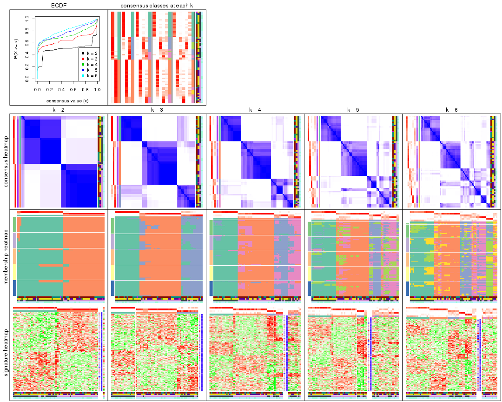
The plots are:
k and the heatmap of
predicted classes for each k.k.k.k.All the plots in panels can be made by individual functions and they are plotted later in this section.
select_partition_number() produces several plots showing different
statistics for choosing “optimized” k. There are following statistics:
k;k, the area increased is defined as \(A_k - A_{k-1}\).The detailed explanations of these statistics can be found in the cola vignette.
Generally speaking, lower PAC score, higher mean silhouette score or higher
concordance corresponds to better partition. Rand index and Jaccard index
measure how similar the current partition is compared to partition with k-1.
If they are too similar, we won't accept k is better than k-1.
select_partition_number(res)
The numeric values for all these statistics can be obtained by get_stats().
get_stats(res)
#> k 1-PAC mean_silhouette concordance area_increased Rand Jaccard
#> 2 2 1.000 0.939 0.959 0.5025 0.493 0.493
#> 3 3 0.838 0.878 0.923 0.2969 0.861 0.717
#> 4 4 0.734 0.735 0.862 0.1199 0.907 0.745
#> 5 5 0.713 0.527 0.749 0.0661 0.946 0.820
#> 6 6 0.714 0.553 0.718 0.0470 0.906 0.663
suggest_best_k() suggests the best \(k\) based on these statistics. The rules are as follows:
suggest_best_k(res)
#> [1] 2
Following shows the table of the partitions (You need to click the show/hide
code output link to see it). The membership matrix (columns with name p*)
is inferred by
clue::cl_consensus()
function with the SE method. Basically the value in the membership matrix
represents the probability to belong to a certain group. The finall class
label for an item is determined with the group with highest probability it
belongs to.
In get_classes() function, the entropy is calculated from the membership
matrix and the silhouette score is calculated from the consensus matrix.
cbind(get_classes(res, k = 2), get_membership(res, k = 2))
#> class entropy silhouette p1 p2
#> GSM590886 1 0.4022 0.939 0.920 0.080
#> GSM590859 2 0.0376 0.985 0.004 0.996
#> GSM590864 1 0.4022 0.939 0.920 0.080
#> GSM590844 2 0.0376 0.985 0.004 0.996
#> GSM590878 2 0.0000 0.984 0.000 1.000
#> GSM590841 2 0.4022 0.918 0.080 0.920
#> GSM590843 2 0.0376 0.985 0.004 0.996
#> GSM590895 2 0.0376 0.985 0.004 0.996
#> GSM590897 2 0.0376 0.985 0.004 0.996
#> GSM590842 1 0.4022 0.939 0.920 0.080
#> GSM590869 1 0.8499 0.615 0.724 0.276
#> GSM590874 1 0.4022 0.939 0.920 0.080
#> GSM590889 1 0.4022 0.939 0.920 0.080
#> GSM590851 1 0.4022 0.939 0.920 0.080
#> GSM590873 1 0.4022 0.939 0.920 0.080
#> GSM590898 2 0.4022 0.918 0.080 0.920
#> GSM590882 1 0.0376 0.926 0.996 0.004
#> GSM590849 1 0.0000 0.927 1.000 0.000
#> GSM590892 2 0.0376 0.985 0.004 0.996
#> GSM590900 2 0.0376 0.985 0.004 0.996
#> GSM590896 1 0.4022 0.939 0.920 0.080
#> GSM590870 1 0.0376 0.926 0.996 0.004
#> GSM590853 1 0.0376 0.926 0.996 0.004
#> GSM590884 1 0.0376 0.926 0.996 0.004
#> GSM590847 2 0.0000 0.984 0.000 1.000
#> GSM590857 2 0.0376 0.985 0.004 0.996
#> GSM590865 2 0.0376 0.985 0.004 0.996
#> GSM590872 2 0.0672 0.979 0.008 0.992
#> GSM590883 2 0.0000 0.984 0.000 1.000
#> GSM590887 2 0.0672 0.979 0.008 0.992
#> GSM590888 2 0.0000 0.984 0.000 1.000
#> GSM590891 2 0.0376 0.985 0.004 0.996
#> GSM590899 2 0.4022 0.918 0.080 0.920
#> GSM590848 1 0.4022 0.939 0.920 0.080
#> GSM590850 1 0.4022 0.939 0.920 0.080
#> GSM590855 1 0.4022 0.939 0.920 0.080
#> GSM590860 1 0.0000 0.927 1.000 0.000
#> GSM590890 1 0.4022 0.939 0.920 0.080
#> GSM590894 1 0.4022 0.939 0.920 0.080
#> GSM590852 1 0.0376 0.926 0.996 0.004
#> GSM590858 1 0.4022 0.939 0.920 0.080
#> GSM590862 1 0.3733 0.938 0.928 0.072
#> GSM590867 1 0.5408 0.839 0.876 0.124
#> GSM590871 1 0.0376 0.926 0.996 0.004
#> GSM590877 1 0.4022 0.939 0.920 0.080
#> GSM590879 1 0.4022 0.939 0.920 0.080
#> GSM590880 1 0.0376 0.926 0.996 0.004
#> GSM590845 1 0.9209 0.489 0.664 0.336
#> GSM590846 2 0.0376 0.985 0.004 0.996
#> GSM590875 2 0.4022 0.918 0.080 0.920
#> GSM590881 2 0.0000 0.984 0.000 1.000
#> GSM590854 2 0.0376 0.985 0.004 0.996
#> GSM590856 2 0.0000 0.984 0.000 1.000
#> GSM590861 1 0.0000 0.927 1.000 0.000
#> GSM590863 2 0.0376 0.985 0.004 0.996
#> GSM590866 2 0.0376 0.985 0.004 0.996
#> GSM590876 2 0.0376 0.985 0.004 0.996
#> GSM590893 2 0.0672 0.979 0.008 0.992
#> GSM590885 1 0.0376 0.926 0.996 0.004
#> GSM590840 1 0.0000 0.927 1.000 0.000
#> GSM590868 2 0.0376 0.985 0.004 0.996
cbind(get_classes(res, k = 3), get_membership(res, k = 3))
#> class entropy silhouette p1 p2 p3
#> GSM590886 1 0.0592 0.990 0.988 0.000 0.012
#> GSM590859 2 0.0000 0.930 0.000 1.000 0.000
#> GSM590864 1 0.0424 0.990 0.992 0.000 0.008
#> GSM590844 2 0.0000 0.930 0.000 1.000 0.000
#> GSM590878 2 0.1753 0.918 0.000 0.952 0.048
#> GSM590841 2 0.6026 0.579 0.000 0.624 0.376
#> GSM590843 2 0.0000 0.930 0.000 1.000 0.000
#> GSM590895 2 0.0000 0.930 0.000 1.000 0.000
#> GSM590897 2 0.0000 0.930 0.000 1.000 0.000
#> GSM590842 1 0.0592 0.990 0.988 0.000 0.012
#> GSM590869 3 0.0424 0.813 0.008 0.000 0.992
#> GSM590874 1 0.0592 0.990 0.988 0.000 0.012
#> GSM590889 1 0.0592 0.990 0.988 0.000 0.012
#> GSM590851 1 0.0424 0.986 0.992 0.000 0.008
#> GSM590873 1 0.0237 0.988 0.996 0.000 0.004
#> GSM590898 2 0.6345 0.530 0.004 0.596 0.400
#> GSM590882 3 0.3686 0.820 0.140 0.000 0.860
#> GSM590849 3 0.5948 0.649 0.360 0.000 0.640
#> GSM590892 2 0.0000 0.930 0.000 1.000 0.000
#> GSM590900 2 0.0000 0.930 0.000 1.000 0.000
#> GSM590896 1 0.0592 0.990 0.988 0.000 0.012
#> GSM590870 3 0.0424 0.813 0.008 0.000 0.992
#> GSM590853 3 0.0424 0.813 0.008 0.000 0.992
#> GSM590884 3 0.5859 0.670 0.344 0.000 0.656
#> GSM590847 2 0.1411 0.920 0.000 0.964 0.036
#> GSM590857 2 0.0000 0.930 0.000 1.000 0.000
#> GSM590865 2 0.0237 0.929 0.000 0.996 0.004
#> GSM590872 2 0.2165 0.907 0.000 0.936 0.064
#> GSM590883 2 0.2066 0.909 0.000 0.940 0.060
#> GSM590887 2 0.2165 0.907 0.000 0.936 0.064
#> GSM590888 2 0.0892 0.926 0.000 0.980 0.020
#> GSM590891 2 0.0000 0.930 0.000 1.000 0.000
#> GSM590899 2 0.6282 0.561 0.004 0.612 0.384
#> GSM590848 1 0.0424 0.986 0.992 0.000 0.008
#> GSM590850 1 0.0592 0.989 0.988 0.000 0.012
#> GSM590855 1 0.0424 0.986 0.992 0.000 0.008
#> GSM590860 3 0.5882 0.669 0.348 0.000 0.652
#> GSM590890 1 0.0592 0.990 0.988 0.000 0.012
#> GSM590894 1 0.0592 0.990 0.988 0.000 0.012
#> GSM590852 3 0.2165 0.826 0.064 0.000 0.936
#> GSM590858 1 0.0424 0.986 0.992 0.000 0.008
#> GSM590862 1 0.0424 0.989 0.992 0.000 0.008
#> GSM590867 3 0.0592 0.813 0.012 0.000 0.988
#> GSM590871 3 0.5138 0.769 0.252 0.000 0.748
#> GSM590877 1 0.0592 0.990 0.988 0.000 0.012
#> GSM590879 1 0.0237 0.988 0.996 0.000 0.004
#> GSM590880 3 0.2261 0.826 0.068 0.000 0.932
#> GSM590845 3 0.0661 0.809 0.004 0.008 0.988
#> GSM590846 2 0.0000 0.930 0.000 1.000 0.000
#> GSM590875 2 0.6264 0.568 0.004 0.616 0.380
#> GSM590881 2 0.1878 0.918 0.004 0.952 0.044
#> GSM590854 2 0.0000 0.930 0.000 1.000 0.000
#> GSM590856 2 0.1411 0.920 0.000 0.964 0.036
#> GSM590861 3 0.4346 0.807 0.184 0.000 0.816
#> GSM590863 2 0.0000 0.930 0.000 1.000 0.000
#> GSM590866 2 0.0000 0.930 0.000 1.000 0.000
#> GSM590876 2 0.2096 0.915 0.004 0.944 0.052
#> GSM590893 2 0.3116 0.884 0.000 0.892 0.108
#> GSM590885 3 0.5988 0.579 0.368 0.000 0.632
#> GSM590840 3 0.5291 0.759 0.268 0.000 0.732
#> GSM590868 2 0.0000 0.930 0.000 1.000 0.000
cbind(get_classes(res, k = 4), get_membership(res, k = 4))
#> class entropy silhouette p1 p2 p3 p4
#> GSM590886 1 0.0707 0.9504 0.980 0.000 0.000 0.020
#> GSM590859 2 0.0707 0.8731 0.000 0.980 0.000 0.020
#> GSM590864 1 0.0592 0.9478 0.984 0.000 0.000 0.016
#> GSM590844 2 0.0000 0.8766 0.000 1.000 0.000 0.000
#> GSM590878 2 0.4567 0.7561 0.000 0.740 0.016 0.244
#> GSM590841 4 0.2530 0.6374 0.000 0.100 0.004 0.896
#> GSM590843 2 0.0188 0.8763 0.000 0.996 0.004 0.000
#> GSM590895 2 0.0188 0.8763 0.000 0.996 0.004 0.000
#> GSM590897 2 0.0000 0.8766 0.000 1.000 0.000 0.000
#> GSM590842 1 0.0707 0.9504 0.980 0.000 0.000 0.020
#> GSM590869 4 0.1792 0.6300 0.000 0.000 0.068 0.932
#> GSM590874 1 0.0707 0.9504 0.980 0.000 0.000 0.020
#> GSM590889 1 0.0707 0.9504 0.980 0.000 0.000 0.020
#> GSM590851 1 0.3392 0.8890 0.856 0.000 0.124 0.020
#> GSM590873 1 0.0707 0.9470 0.980 0.000 0.000 0.020
#> GSM590898 4 0.1902 0.6570 0.000 0.064 0.004 0.932
#> GSM590882 3 0.5420 0.4293 0.024 0.000 0.624 0.352
#> GSM590849 3 0.1151 0.6894 0.024 0.000 0.968 0.008
#> GSM590892 2 0.0000 0.8766 0.000 1.000 0.000 0.000
#> GSM590900 2 0.0707 0.8731 0.000 0.980 0.000 0.020
#> GSM590896 1 0.0707 0.9504 0.980 0.000 0.000 0.020
#> GSM590870 4 0.4866 0.1763 0.000 0.000 0.404 0.596
#> GSM590853 4 0.4933 0.0640 0.000 0.000 0.432 0.568
#> GSM590884 3 0.5665 0.5694 0.108 0.000 0.716 0.176
#> GSM590847 2 0.3647 0.8145 0.000 0.832 0.016 0.152
#> GSM590857 2 0.0707 0.8731 0.000 0.980 0.000 0.020
#> GSM590865 2 0.1510 0.8689 0.000 0.956 0.016 0.028
#> GSM590872 2 0.4781 0.6338 0.000 0.660 0.004 0.336
#> GSM590883 2 0.4836 0.6730 0.000 0.672 0.008 0.320
#> GSM590887 2 0.5040 0.6100 0.000 0.628 0.008 0.364
#> GSM590888 2 0.4804 0.7235 0.000 0.708 0.016 0.276
#> GSM590891 2 0.0188 0.8763 0.000 0.996 0.004 0.000
#> GSM590899 4 0.1792 0.6560 0.000 0.068 0.000 0.932
#> GSM590848 1 0.3160 0.9012 0.872 0.000 0.108 0.020
#> GSM590850 1 0.0000 0.9499 1.000 0.000 0.000 0.000
#> GSM590855 1 0.3501 0.8819 0.848 0.000 0.132 0.020
#> GSM590860 3 0.0817 0.6958 0.024 0.000 0.976 0.000
#> GSM590890 1 0.0707 0.9504 0.980 0.000 0.000 0.020
#> GSM590894 1 0.0707 0.9504 0.980 0.000 0.000 0.020
#> GSM590852 3 0.4999 0.0284 0.000 0.000 0.508 0.492
#> GSM590858 1 0.2256 0.9289 0.924 0.000 0.056 0.020
#> GSM590862 1 0.2266 0.9173 0.912 0.000 0.084 0.004
#> GSM590867 3 0.4989 0.0935 0.000 0.000 0.528 0.472
#> GSM590871 3 0.0817 0.6958 0.024 0.000 0.976 0.000
#> GSM590877 1 0.0000 0.9499 1.000 0.000 0.000 0.000
#> GSM590879 1 0.3037 0.9057 0.880 0.000 0.100 0.020
#> GSM590880 3 0.4872 0.4152 0.004 0.000 0.640 0.356
#> GSM590845 4 0.4941 0.0895 0.000 0.000 0.436 0.564
#> GSM590846 2 0.0000 0.8766 0.000 1.000 0.000 0.000
#> GSM590875 4 0.1792 0.6560 0.000 0.068 0.000 0.932
#> GSM590881 2 0.4214 0.7845 0.000 0.780 0.016 0.204
#> GSM590854 2 0.0188 0.8761 0.000 0.996 0.000 0.004
#> GSM590856 2 0.3597 0.8162 0.000 0.836 0.016 0.148
#> GSM590861 3 0.0817 0.6958 0.024 0.000 0.976 0.000
#> GSM590863 2 0.0921 0.8704 0.000 0.972 0.000 0.028
#> GSM590866 2 0.1109 0.8695 0.000 0.968 0.004 0.028
#> GSM590876 2 0.4535 0.7792 0.000 0.744 0.016 0.240
#> GSM590893 2 0.5604 0.4185 0.000 0.504 0.020 0.476
#> GSM590885 4 0.6781 0.2712 0.148 0.000 0.256 0.596
#> GSM590840 3 0.0817 0.6958 0.024 0.000 0.976 0.000
#> GSM590868 2 0.0188 0.8763 0.000 0.996 0.004 0.000
cbind(get_classes(res, k = 5), get_membership(res, k = 5))
#> class entropy silhouette p1 p2 p3 p4 p5
#> GSM590886 1 0.0880 0.8491 0.968 0.000 0.000 0.000 0.032
#> GSM590859 2 0.0963 0.7889 0.000 0.964 0.000 0.000 0.036
#> GSM590864 1 0.3250 0.8492 0.820 0.000 0.008 0.004 0.168
#> GSM590844 2 0.0000 0.7908 0.000 1.000 0.000 0.000 0.000
#> GSM590878 2 0.6532 0.3892 0.000 0.448 0.000 0.348 0.204
#> GSM590841 4 0.3669 0.2609 0.000 0.056 0.000 0.816 0.128
#> GSM590843 2 0.0451 0.7902 0.000 0.988 0.000 0.004 0.008
#> GSM590895 2 0.0451 0.7902 0.000 0.988 0.000 0.004 0.008
#> GSM590897 2 0.0451 0.7909 0.000 0.988 0.000 0.004 0.008
#> GSM590842 1 0.0671 0.8596 0.980 0.000 0.000 0.004 0.016
#> GSM590869 4 0.1568 0.3517 0.000 0.000 0.020 0.944 0.036
#> GSM590874 1 0.0880 0.8493 0.968 0.000 0.000 0.000 0.032
#> GSM590889 1 0.0794 0.8492 0.972 0.000 0.000 0.000 0.028
#> GSM590851 1 0.5595 0.7735 0.624 0.000 0.124 0.000 0.252
#> GSM590873 1 0.3768 0.8368 0.760 0.000 0.008 0.004 0.228
#> GSM590898 4 0.0898 0.3973 0.000 0.020 0.000 0.972 0.008
#> GSM590882 3 0.6887 -0.5628 0.008 0.000 0.432 0.240 0.320
#> GSM590849 3 0.0404 0.6480 0.000 0.000 0.988 0.000 0.012
#> GSM590892 2 0.0963 0.7911 0.000 0.964 0.000 0.000 0.036
#> GSM590900 2 0.1831 0.7831 0.000 0.920 0.000 0.004 0.076
#> GSM590896 1 0.0290 0.8563 0.992 0.000 0.000 0.000 0.008
#> GSM590870 4 0.6522 -0.6828 0.000 0.000 0.224 0.476 0.300
#> GSM590853 4 0.6514 -0.5684 0.004 0.000 0.244 0.516 0.236
#> GSM590884 3 0.7023 -0.0803 0.076 0.000 0.516 0.100 0.308
#> GSM590847 2 0.4547 0.6690 0.000 0.736 0.000 0.192 0.072
#> GSM590857 2 0.1544 0.7859 0.000 0.932 0.000 0.000 0.068
#> GSM590865 2 0.4862 0.6183 0.000 0.604 0.000 0.032 0.364
#> GSM590872 2 0.6137 0.2669 0.000 0.476 0.000 0.392 0.132
#> GSM590883 2 0.6687 0.2911 0.000 0.424 0.000 0.324 0.252
#> GSM590887 4 0.6772 -0.2626 0.000 0.364 0.000 0.364 0.272
#> GSM590888 2 0.6779 0.2854 0.000 0.392 0.000 0.300 0.308
#> GSM590891 2 0.0671 0.7903 0.000 0.980 0.000 0.004 0.016
#> GSM590899 4 0.0771 0.3985 0.000 0.020 0.000 0.976 0.004
#> GSM590848 1 0.5659 0.7775 0.632 0.000 0.120 0.004 0.244
#> GSM590850 1 0.2763 0.8570 0.848 0.000 0.004 0.000 0.148
#> GSM590855 1 0.5673 0.7666 0.616 0.000 0.132 0.000 0.252
#> GSM590860 3 0.0000 0.6548 0.000 0.000 1.000 0.000 0.000
#> GSM590890 1 0.0404 0.8570 0.988 0.000 0.000 0.000 0.012
#> GSM590894 1 0.0162 0.8555 0.996 0.000 0.000 0.000 0.004
#> GSM590852 4 0.6950 -0.7525 0.004 0.000 0.344 0.348 0.304
#> GSM590858 1 0.4948 0.8086 0.676 0.000 0.068 0.000 0.256
#> GSM590862 1 0.4713 0.8155 0.740 0.000 0.088 0.004 0.168
#> GSM590867 5 0.6706 0.7793 0.000 0.000 0.284 0.288 0.428
#> GSM590871 3 0.1557 0.6214 0.008 0.000 0.940 0.000 0.052
#> GSM590877 1 0.1831 0.8589 0.920 0.000 0.004 0.000 0.076
#> GSM590879 1 0.5216 0.7956 0.660 0.000 0.092 0.000 0.248
#> GSM590880 3 0.6692 -0.4073 0.008 0.000 0.488 0.212 0.292
#> GSM590845 5 0.6600 0.7875 0.000 0.000 0.212 0.380 0.408
#> GSM590846 2 0.0880 0.7910 0.000 0.968 0.000 0.000 0.032
#> GSM590875 4 0.0609 0.3983 0.000 0.020 0.000 0.980 0.000
#> GSM590881 2 0.5513 0.5978 0.000 0.632 0.000 0.252 0.116
#> GSM590854 2 0.0404 0.7912 0.000 0.988 0.000 0.000 0.012
#> GSM590856 2 0.4444 0.6772 0.000 0.748 0.000 0.180 0.072
#> GSM590861 3 0.0162 0.6545 0.000 0.000 0.996 0.000 0.004
#> GSM590863 2 0.1571 0.7856 0.000 0.936 0.000 0.004 0.060
#> GSM590866 2 0.4219 0.6711 0.000 0.716 0.004 0.016 0.264
#> GSM590876 2 0.6608 0.4665 0.000 0.460 0.000 0.256 0.284
#> GSM590893 4 0.5693 0.1182 0.000 0.236 0.000 0.620 0.144
#> GSM590885 4 0.8408 -0.5583 0.184 0.000 0.196 0.344 0.276
#> GSM590840 3 0.0000 0.6548 0.000 0.000 1.000 0.000 0.000
#> GSM590868 2 0.0451 0.7902 0.000 0.988 0.000 0.004 0.008
cbind(get_classes(res, k = 6), get_membership(res, k = 6))
#> class entropy silhouette p1 p2 p3 p4 p5 p6
#> GSM590886 1 0.4453 0.7439 0.528 0.000 0.028 0.000 0.000 0.444
#> GSM590859 2 0.2176 0.6801 0.000 0.896 0.024 0.000 0.000 0.080
#> GSM590864 1 0.2848 0.7479 0.816 0.000 0.008 0.000 0.000 0.176
#> GSM590844 2 0.0405 0.7269 0.000 0.988 0.008 0.000 0.000 0.004
#> GSM590878 4 0.7447 -0.4973 0.000 0.232 0.132 0.332 0.000 0.304
#> GSM590841 4 0.3067 0.4246 0.000 0.020 0.116 0.844 0.000 0.020
#> GSM590843 2 0.1223 0.7230 0.000 0.960 0.012 0.008 0.004 0.016
#> GSM590895 2 0.0984 0.7256 0.000 0.968 0.012 0.008 0.000 0.012
#> GSM590897 2 0.1223 0.7247 0.000 0.960 0.012 0.008 0.004 0.016
#> GSM590842 1 0.3993 0.7644 0.592 0.000 0.008 0.000 0.000 0.400
#> GSM590869 4 0.1297 0.5115 0.000 0.000 0.040 0.948 0.000 0.012
#> GSM590874 1 0.3857 0.7498 0.532 0.000 0.000 0.000 0.000 0.468
#> GSM590889 1 0.3986 0.7497 0.532 0.000 0.004 0.000 0.000 0.464
#> GSM590851 1 0.2320 0.6307 0.864 0.000 0.004 0.000 0.132 0.000
#> GSM590873 1 0.1075 0.7281 0.952 0.000 0.000 0.000 0.000 0.048
#> GSM590898 4 0.0146 0.5499 0.000 0.000 0.004 0.996 0.000 0.000
#> GSM590882 3 0.5005 0.7080 0.000 0.000 0.652 0.108 0.232 0.008
#> GSM590849 5 0.1261 0.9284 0.024 0.000 0.024 0.000 0.952 0.000
#> GSM590892 2 0.1807 0.7078 0.000 0.920 0.020 0.000 0.000 0.060
#> GSM590900 2 0.3247 0.6163 0.000 0.808 0.036 0.000 0.000 0.156
#> GSM590896 1 0.3993 0.7623 0.592 0.000 0.008 0.000 0.000 0.400
#> GSM590870 3 0.5105 0.5734 0.000 0.000 0.540 0.388 0.064 0.008
#> GSM590853 4 0.5773 -0.3076 0.000 0.000 0.272 0.564 0.144 0.020
#> GSM590884 3 0.6192 0.5274 0.040 0.000 0.532 0.024 0.332 0.072
#> GSM590847 2 0.4702 0.4881 0.000 0.736 0.040 0.128 0.000 0.096
#> GSM590857 2 0.2784 0.6556 0.000 0.848 0.028 0.000 0.000 0.124
#> GSM590865 6 0.6277 0.5852 0.000 0.340 0.184 0.016 0.004 0.456
#> GSM590872 4 0.6863 -0.3325 0.000 0.376 0.116 0.396 0.000 0.112
#> GSM590883 2 0.7768 -0.6687 0.000 0.288 0.180 0.252 0.004 0.276
#> GSM590887 4 0.7698 -0.5154 0.000 0.220 0.236 0.300 0.000 0.244
#> GSM590888 6 0.7764 0.5217 0.000 0.240 0.228 0.204 0.004 0.324
#> GSM590891 2 0.1893 0.7134 0.000 0.928 0.036 0.008 0.004 0.024
#> GSM590899 4 0.0146 0.5500 0.000 0.000 0.004 0.996 0.000 0.000
#> GSM590848 1 0.2092 0.6371 0.876 0.000 0.000 0.000 0.124 0.000
#> GSM590850 1 0.3956 0.7600 0.684 0.000 0.024 0.000 0.000 0.292
#> GSM590855 1 0.2402 0.6218 0.856 0.000 0.004 0.000 0.140 0.000
#> GSM590860 5 0.0260 0.9442 0.008 0.000 0.000 0.000 0.992 0.000
#> GSM590890 1 0.3881 0.7643 0.600 0.000 0.004 0.000 0.000 0.396
#> GSM590894 1 0.3890 0.7637 0.596 0.000 0.004 0.000 0.000 0.400
#> GSM590852 3 0.5784 0.7127 0.000 0.000 0.548 0.228 0.216 0.008
#> GSM590858 1 0.2422 0.6748 0.892 0.000 0.012 0.000 0.072 0.024
#> GSM590862 1 0.4862 0.7060 0.720 0.000 0.064 0.000 0.060 0.156
#> GSM590867 3 0.5011 0.7003 0.000 0.000 0.692 0.152 0.132 0.024
#> GSM590871 5 0.2113 0.8443 0.008 0.000 0.092 0.000 0.896 0.004
#> GSM590877 1 0.4099 0.7642 0.612 0.000 0.016 0.000 0.000 0.372
#> GSM590879 1 0.1970 0.6637 0.900 0.000 0.008 0.000 0.092 0.000
#> GSM590880 3 0.5643 0.6090 0.000 0.000 0.528 0.108 0.348 0.016
#> GSM590845 3 0.5060 0.6810 0.000 0.000 0.660 0.236 0.080 0.024
#> GSM590846 2 0.1367 0.7166 0.000 0.944 0.012 0.000 0.000 0.044
#> GSM590875 4 0.0260 0.5483 0.000 0.000 0.008 0.992 0.000 0.000
#> GSM590881 2 0.6696 -0.0841 0.000 0.500 0.076 0.204 0.000 0.220
#> GSM590854 2 0.0291 0.7263 0.000 0.992 0.004 0.000 0.000 0.004
#> GSM590856 2 0.4609 0.4968 0.000 0.744 0.040 0.128 0.000 0.088
#> GSM590861 5 0.1124 0.9351 0.008 0.000 0.036 0.000 0.956 0.000
#> GSM590863 2 0.3054 0.6073 0.000 0.828 0.036 0.000 0.000 0.136
#> GSM590866 2 0.6083 -0.3944 0.000 0.476 0.196 0.000 0.012 0.316
#> GSM590876 6 0.7213 0.6317 0.000 0.244 0.156 0.164 0.000 0.436
#> GSM590893 4 0.5405 0.2524 0.000 0.088 0.108 0.684 0.000 0.120
#> GSM590885 3 0.7608 0.6033 0.064 0.000 0.496 0.168 0.116 0.156
#> GSM590840 5 0.0260 0.9442 0.008 0.000 0.000 0.000 0.992 0.000
#> GSM590868 2 0.1579 0.7185 0.000 0.944 0.020 0.008 0.004 0.024
Heatmaps for the consensus matrix. It visualizes the probability of two samples to be in a same group.
consensus_heatmap(res, k = 2)
consensus_heatmap(res, k = 3)
consensus_heatmap(res, k = 4)
consensus_heatmap(res, k = 5)
consensus_heatmap(res, k = 6)
Heatmaps for the membership of samples in all partitions to see how consistent they are:
membership_heatmap(res, k = 2)
membership_heatmap(res, k = 3)
membership_heatmap(res, k = 4)
membership_heatmap(res, k = 5)
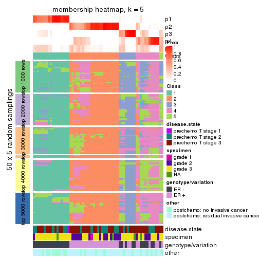
membership_heatmap(res, k = 6)
As soon as we have had the classes for columns, we can look for signatures which are significantly different between classes which can be candidate marks for certain classes. Following are the heatmaps for signatures.
Signature heatmaps where rows are scaled:
get_signatures(res, k = 2)
get_signatures(res, k = 3)
get_signatures(res, k = 4)
get_signatures(res, k = 5)
get_signatures(res, k = 6)
Signature heatmaps where rows are not scaled:
get_signatures(res, k = 2, scale_rows = FALSE)
get_signatures(res, k = 3, scale_rows = FALSE)

get_signatures(res, k = 4, scale_rows = FALSE)
get_signatures(res, k = 5, scale_rows = FALSE)
get_signatures(res, k = 6, scale_rows = FALSE)
Compare the overlap of signatures from different k:
compare_signatures(res)
get_signature() returns a data frame invisibly. TO get the list of signatures, the function
call should be assigned to a variable explicitly. In following code, if plot argument is set
to FALSE, no heatmap is plotted while only the differential analysis is performed.
# code only for demonstration
tb = get_signature(res, k = ..., plot = FALSE)
An example of the output of tb is:
#> which_row fdr mean_1 mean_2 scaled_mean_1 scaled_mean_2 km
#> 1 38 0.042760348 8.373488 9.131774 -0.5533452 0.5164555 1
#> 2 40 0.018707592 7.106213 8.469186 -0.6173731 0.5762149 1
#> 3 55 0.019134737 10.221463 11.207825 -0.6159697 0.5749050 1
#> 4 59 0.006059896 5.921854 7.869574 -0.6899429 0.6439467 1
#> 5 60 0.018055526 8.928898 10.211722 -0.6204761 0.5791110 1
#> 6 98 0.009384629 15.714769 14.887706 0.6635654 -0.6193277 2
...
The columns in tb are:
which_row: row indices corresponding to the input matrix.fdr: FDR for the differential test. mean_x: The mean value in group x.scaled_mean_x: The mean value in group x after rows are scaled.km: Row groups if k-means clustering is applied to rows.UMAP plot which shows how samples are separated.
dimension_reduction(res, k = 2, method = "UMAP")
dimension_reduction(res, k = 3, method = "UMAP")
dimension_reduction(res, k = 4, method = "UMAP")
dimension_reduction(res, k = 5, method = "UMAP")
dimension_reduction(res, k = 6, method = "UMAP")
Following heatmap shows how subgroups are split when increasing k:
collect_classes(res)
Test correlation between subgroups and known annotations. If the known annotation is numeric, one-way ANOVA test is applied, and if the known annotation is discrete, chi-squared contingency table test is applied.
test_to_known_factors(res)
#> n disease.state(p) specimen(p) genotype/variation(p) other(p) k
#> CV:kmeans 60 0.619 0.00638 9.75e-11 0.0408 2
#> CV:kmeans 61 0.329 0.02347 1.41e-10 0.0357 3
#> CV:kmeans 52 0.573 0.09576 4.58e-09 0.0744 4
#> CV:kmeans 42 0.720 0.14326 1.11e-07 0.1196 5
#> CV:kmeans 50 0.557 0.34746 1.52e-06 0.1688 6
If matrix rows can be associated to genes, consider to use functional_enrichment(res,
...) to perform function enrichment for the signature genes. See this vignette for more detailed explanations.
The object with results only for a single top-value method and a single partition method can be extracted as:
res = res_list["CV", "skmeans"]
# you can also extract it by
# res = res_list["CV:skmeans"]
A summary of res and all the functions that can be applied to it:
res
#> A 'ConsensusPartition' object with k = 2, 3, 4, 5, 6.
#> On a matrix with 21168 rows and 61 columns.
#> Top rows (1000, 2000, 3000, 4000, 5000) are extracted by 'CV' method.
#> Subgroups are detected by 'skmeans' method.
#> Performed in total 1250 partitions by row resampling.
#> Best k for subgroups seems to be 2.
#>
#> Following methods can be applied to this 'ConsensusPartition' object:
#> [1] "cola_report" "collect_classes" "collect_plots"
#> [4] "collect_stats" "colnames" "compare_signatures"
#> [7] "consensus_heatmap" "dimension_reduction" "functional_enrichment"
#> [10] "get_anno_col" "get_anno" "get_classes"
#> [13] "get_consensus" "get_matrix" "get_membership"
#> [16] "get_param" "get_signatures" "get_stats"
#> [19] "is_best_k" "is_stable_k" "membership_heatmap"
#> [22] "ncol" "nrow" "plot_ecdf"
#> [25] "rownames" "select_partition_number" "show"
#> [28] "suggest_best_k" "test_to_known_factors"
collect_plots() function collects all the plots made from res for all k (number of partitions)
into one single page to provide an easy and fast comparison between different k.
collect_plots(res)
The plots are:
k and the heatmap of
predicted classes for each k.k.k.k.All the plots in panels can be made by individual functions and they are plotted later in this section.
select_partition_number() produces several plots showing different
statistics for choosing “optimized” k. There are following statistics:
k;k, the area increased is defined as \(A_k - A_{k-1}\).The detailed explanations of these statistics can be found in the cola vignette.
Generally speaking, lower PAC score, higher mean silhouette score or higher
concordance corresponds to better partition. Rand index and Jaccard index
measure how similar the current partition is compared to partition with k-1.
If they are too similar, we won't accept k is better than k-1.
select_partition_number(res)
The numeric values for all these statistics can be obtained by get_stats().
get_stats(res)
#> k 1-PAC mean_silhouette concordance area_increased Rand Jaccard
#> 2 2 1.000 0.965 0.987 0.5081 0.492 0.492
#> 3 3 0.741 0.871 0.931 0.3054 0.763 0.554
#> 4 4 0.659 0.695 0.831 0.1304 0.917 0.757
#> 5 5 0.587 0.528 0.730 0.0624 0.929 0.746
#> 6 6 0.596 0.378 0.658 0.0391 0.971 0.874
suggest_best_k() suggests the best \(k\) based on these statistics. The rules are as follows:
suggest_best_k(res)
#> [1] 2
Following shows the table of the partitions (You need to click the show/hide
code output link to see it). The membership matrix (columns with name p*)
is inferred by
clue::cl_consensus()
function with the SE method. Basically the value in the membership matrix
represents the probability to belong to a certain group. The finall class
label for an item is determined with the group with highest probability it
belongs to.
In get_classes() function, the entropy is calculated from the membership
matrix and the silhouette score is calculated from the consensus matrix.
cbind(get_classes(res, k = 2), get_membership(res, k = 2))
#> class entropy silhouette p1 p2
#> GSM590886 1 0.000 0.989 1.000 0.000
#> GSM590859 2 0.000 0.984 0.000 1.000
#> GSM590864 1 0.000 0.989 1.000 0.000
#> GSM590844 2 0.000 0.984 0.000 1.000
#> GSM590878 2 0.000 0.984 0.000 1.000
#> GSM590841 2 0.000 0.984 0.000 1.000
#> GSM590843 2 0.000 0.984 0.000 1.000
#> GSM590895 2 0.000 0.984 0.000 1.000
#> GSM590897 2 0.000 0.984 0.000 1.000
#> GSM590842 1 0.000 0.989 1.000 0.000
#> GSM590869 1 0.844 0.620 0.728 0.272
#> GSM590874 1 0.000 0.989 1.000 0.000
#> GSM590889 1 0.000 0.989 1.000 0.000
#> GSM590851 1 0.000 0.989 1.000 0.000
#> GSM590873 1 0.000 0.989 1.000 0.000
#> GSM590898 2 0.000 0.984 0.000 1.000
#> GSM590882 1 0.000 0.989 1.000 0.000
#> GSM590849 1 0.000 0.989 1.000 0.000
#> GSM590892 2 0.000 0.984 0.000 1.000
#> GSM590900 2 0.000 0.984 0.000 1.000
#> GSM590896 1 0.000 0.989 1.000 0.000
#> GSM590870 1 0.000 0.989 1.000 0.000
#> GSM590853 1 0.000 0.989 1.000 0.000
#> GSM590884 1 0.000 0.989 1.000 0.000
#> GSM590847 2 0.000 0.984 0.000 1.000
#> GSM590857 2 0.000 0.984 0.000 1.000
#> GSM590865 2 0.000 0.984 0.000 1.000
#> GSM590872 2 0.000 0.984 0.000 1.000
#> GSM590883 2 0.000 0.984 0.000 1.000
#> GSM590887 2 0.000 0.984 0.000 1.000
#> GSM590888 2 0.000 0.984 0.000 1.000
#> GSM590891 2 0.000 0.984 0.000 1.000
#> GSM590899 2 0.000 0.984 0.000 1.000
#> GSM590848 1 0.000 0.989 1.000 0.000
#> GSM590850 1 0.000 0.989 1.000 0.000
#> GSM590855 1 0.000 0.989 1.000 0.000
#> GSM590860 1 0.000 0.989 1.000 0.000
#> GSM590890 1 0.000 0.989 1.000 0.000
#> GSM590894 1 0.000 0.989 1.000 0.000
#> GSM590852 1 0.000 0.989 1.000 0.000
#> GSM590858 1 0.000 0.989 1.000 0.000
#> GSM590862 1 0.000 0.989 1.000 0.000
#> GSM590867 1 0.278 0.942 0.952 0.048
#> GSM590871 1 0.000 0.989 1.000 0.000
#> GSM590877 1 0.000 0.989 1.000 0.000
#> GSM590879 1 0.000 0.989 1.000 0.000
#> GSM590880 1 0.000 0.989 1.000 0.000
#> GSM590845 2 0.996 0.109 0.464 0.536
#> GSM590846 2 0.000 0.984 0.000 1.000
#> GSM590875 2 0.000 0.984 0.000 1.000
#> GSM590881 2 0.000 0.984 0.000 1.000
#> GSM590854 2 0.000 0.984 0.000 1.000
#> GSM590856 2 0.000 0.984 0.000 1.000
#> GSM590861 1 0.000 0.989 1.000 0.000
#> GSM590863 2 0.000 0.984 0.000 1.000
#> GSM590866 2 0.000 0.984 0.000 1.000
#> GSM590876 2 0.000 0.984 0.000 1.000
#> GSM590893 2 0.000 0.984 0.000 1.000
#> GSM590885 1 0.000 0.989 1.000 0.000
#> GSM590840 1 0.000 0.989 1.000 0.000
#> GSM590868 2 0.000 0.984 0.000 1.000
cbind(get_classes(res, k = 3), get_membership(res, k = 3))
#> class entropy silhouette p1 p2 p3
#> GSM590886 1 0.0424 0.988 0.992 0.000 0.008
#> GSM590859 2 0.0000 0.957 0.000 1.000 0.000
#> GSM590864 1 0.0000 0.996 1.000 0.000 0.000
#> GSM590844 2 0.0000 0.957 0.000 1.000 0.000
#> GSM590878 2 0.0592 0.953 0.000 0.988 0.012
#> GSM590841 3 0.4750 0.653 0.000 0.216 0.784
#> GSM590843 2 0.0000 0.957 0.000 1.000 0.000
#> GSM590895 2 0.0000 0.957 0.000 1.000 0.000
#> GSM590897 2 0.0000 0.957 0.000 1.000 0.000
#> GSM590842 1 0.0237 0.993 0.996 0.000 0.004
#> GSM590869 3 0.0000 0.806 0.000 0.000 1.000
#> GSM590874 1 0.0000 0.996 1.000 0.000 0.000
#> GSM590889 1 0.0000 0.996 1.000 0.000 0.000
#> GSM590851 1 0.0000 0.996 1.000 0.000 0.000
#> GSM590873 1 0.0000 0.996 1.000 0.000 0.000
#> GSM590898 3 0.5327 0.576 0.000 0.272 0.728
#> GSM590882 3 0.3482 0.778 0.128 0.000 0.872
#> GSM590849 3 0.5760 0.585 0.328 0.000 0.672
#> GSM590892 2 0.0000 0.957 0.000 1.000 0.000
#> GSM590900 2 0.0475 0.954 0.004 0.992 0.004
#> GSM590896 1 0.0000 0.996 1.000 0.000 0.000
#> GSM590870 3 0.0000 0.806 0.000 0.000 1.000
#> GSM590853 3 0.0000 0.806 0.000 0.000 1.000
#> GSM590884 3 0.5882 0.555 0.348 0.000 0.652
#> GSM590847 2 0.0237 0.956 0.000 0.996 0.004
#> GSM590857 2 0.0000 0.957 0.000 1.000 0.000
#> GSM590865 2 0.3434 0.889 0.032 0.904 0.064
#> GSM590872 2 0.3116 0.886 0.000 0.892 0.108
#> GSM590883 2 0.3038 0.891 0.000 0.896 0.104
#> GSM590887 2 0.4605 0.766 0.000 0.796 0.204
#> GSM590888 2 0.2165 0.923 0.000 0.936 0.064
#> GSM590891 2 0.0000 0.957 0.000 1.000 0.000
#> GSM590899 3 0.5706 0.490 0.000 0.320 0.680
#> GSM590848 1 0.0000 0.996 1.000 0.000 0.000
#> GSM590850 1 0.0000 0.996 1.000 0.000 0.000
#> GSM590855 1 0.0424 0.989 0.992 0.000 0.008
#> GSM590860 3 0.5926 0.537 0.356 0.000 0.644
#> GSM590890 1 0.0000 0.996 1.000 0.000 0.000
#> GSM590894 1 0.0000 0.996 1.000 0.000 0.000
#> GSM590852 3 0.0892 0.806 0.020 0.000 0.980
#> GSM590858 1 0.0000 0.996 1.000 0.000 0.000
#> GSM590862 1 0.1411 0.957 0.964 0.000 0.036
#> GSM590867 3 0.0237 0.806 0.000 0.004 0.996
#> GSM590871 3 0.4346 0.745 0.184 0.000 0.816
#> GSM590877 1 0.0000 0.996 1.000 0.000 0.000
#> GSM590879 1 0.0000 0.996 1.000 0.000 0.000
#> GSM590880 3 0.1163 0.806 0.028 0.000 0.972
#> GSM590845 3 0.0237 0.806 0.000 0.004 0.996
#> GSM590846 2 0.0000 0.957 0.000 1.000 0.000
#> GSM590875 3 0.6180 0.246 0.000 0.416 0.584
#> GSM590881 2 0.0237 0.956 0.000 0.996 0.004
#> GSM590854 2 0.0000 0.957 0.000 1.000 0.000
#> GSM590856 2 0.0237 0.956 0.000 0.996 0.004
#> GSM590861 3 0.3941 0.764 0.156 0.000 0.844
#> GSM590863 2 0.0000 0.957 0.000 1.000 0.000
#> GSM590866 2 0.3116 0.865 0.000 0.892 0.108
#> GSM590876 2 0.3359 0.881 0.084 0.900 0.016
#> GSM590893 2 0.3941 0.838 0.000 0.844 0.156
#> GSM590885 3 0.3619 0.772 0.136 0.000 0.864
#> GSM590840 3 0.5016 0.695 0.240 0.000 0.760
#> GSM590868 2 0.0000 0.957 0.000 1.000 0.000
cbind(get_classes(res, k = 4), get_membership(res, k = 4))
#> class entropy silhouette p1 p2 p3 p4
#> GSM590886 1 0.2586 0.8501 0.912 0.000 0.040 0.048
#> GSM590859 2 0.0779 0.7979 0.000 0.980 0.004 0.016
#> GSM590864 1 0.1767 0.8752 0.944 0.000 0.044 0.012
#> GSM590844 2 0.0336 0.7985 0.000 0.992 0.000 0.008
#> GSM590878 2 0.5330 0.2238 0.004 0.516 0.004 0.476
#> GSM590841 4 0.3687 0.7411 0.000 0.064 0.080 0.856
#> GSM590843 2 0.1211 0.7968 0.000 0.960 0.000 0.040
#> GSM590895 2 0.0592 0.7994 0.000 0.984 0.000 0.016
#> GSM590897 2 0.0817 0.7984 0.000 0.976 0.000 0.024
#> GSM590842 1 0.3157 0.8505 0.852 0.000 0.144 0.004
#> GSM590869 4 0.3356 0.6016 0.000 0.000 0.176 0.824
#> GSM590874 1 0.0188 0.8759 0.996 0.000 0.004 0.000
#> GSM590889 1 0.0524 0.8761 0.988 0.000 0.008 0.004
#> GSM590851 1 0.4483 0.7472 0.712 0.000 0.284 0.004
#> GSM590873 1 0.1118 0.8795 0.964 0.000 0.036 0.000
#> GSM590898 4 0.1584 0.7702 0.000 0.012 0.036 0.952
#> GSM590882 3 0.3763 0.7596 0.024 0.000 0.832 0.144
#> GSM590849 3 0.2053 0.7452 0.072 0.000 0.924 0.004
#> GSM590892 2 0.1211 0.7969 0.000 0.960 0.000 0.040
#> GSM590900 2 0.2500 0.7767 0.000 0.916 0.040 0.044
#> GSM590896 1 0.0336 0.8773 0.992 0.000 0.008 0.000
#> GSM590870 3 0.4992 0.3733 0.000 0.000 0.524 0.476
#> GSM590853 3 0.5138 0.5319 0.008 0.000 0.600 0.392
#> GSM590884 3 0.4104 0.6874 0.164 0.000 0.808 0.028
#> GSM590847 2 0.4509 0.6086 0.000 0.708 0.004 0.288
#> GSM590857 2 0.0779 0.7942 0.000 0.980 0.004 0.016
#> GSM590865 2 0.6962 0.5601 0.044 0.668 0.144 0.144
#> GSM590872 4 0.5016 0.3158 0.000 0.396 0.004 0.600
#> GSM590883 2 0.5679 0.0118 0.004 0.496 0.016 0.484
#> GSM590887 4 0.5522 0.5495 0.000 0.288 0.044 0.668
#> GSM590888 2 0.7116 0.1004 0.056 0.480 0.032 0.432
#> GSM590891 2 0.1389 0.7979 0.000 0.952 0.000 0.048
#> GSM590899 4 0.1406 0.7748 0.000 0.016 0.024 0.960
#> GSM590848 1 0.4018 0.8060 0.772 0.000 0.224 0.004
#> GSM590850 1 0.2125 0.8747 0.920 0.000 0.076 0.004
#> GSM590855 1 0.4790 0.6022 0.620 0.000 0.380 0.000
#> GSM590860 3 0.1635 0.7590 0.044 0.000 0.948 0.008
#> GSM590890 1 0.0188 0.8759 0.996 0.000 0.004 0.000
#> GSM590894 1 0.0524 0.8777 0.988 0.000 0.008 0.004
#> GSM590852 3 0.3649 0.7275 0.000 0.000 0.796 0.204
#> GSM590858 1 0.3257 0.8484 0.844 0.000 0.152 0.004
#> GSM590862 1 0.4877 0.6468 0.664 0.000 0.328 0.008
#> GSM590867 3 0.4564 0.6180 0.000 0.000 0.672 0.328
#> GSM590871 3 0.1510 0.7695 0.028 0.000 0.956 0.016
#> GSM590877 1 0.0000 0.8763 1.000 0.000 0.000 0.000
#> GSM590879 1 0.3907 0.7997 0.768 0.000 0.232 0.000
#> GSM590880 3 0.2799 0.7659 0.008 0.000 0.884 0.108
#> GSM590845 3 0.4843 0.5264 0.000 0.000 0.604 0.396
#> GSM590846 2 0.1118 0.7963 0.000 0.964 0.000 0.036
#> GSM590875 4 0.1510 0.7785 0.000 0.028 0.016 0.956
#> GSM590881 2 0.5638 0.4394 0.020 0.584 0.004 0.392
#> GSM590854 2 0.0188 0.7979 0.000 0.996 0.000 0.004
#> GSM590856 2 0.3982 0.6775 0.000 0.776 0.004 0.220
#> GSM590861 3 0.0895 0.7659 0.020 0.000 0.976 0.004
#> GSM590863 2 0.0921 0.7996 0.000 0.972 0.000 0.028
#> GSM590866 2 0.4656 0.6648 0.000 0.784 0.160 0.056
#> GSM590876 2 0.8128 0.1327 0.192 0.424 0.020 0.364
#> GSM590893 4 0.3257 0.7147 0.000 0.152 0.004 0.844
#> GSM590885 3 0.7152 0.5275 0.172 0.000 0.544 0.284
#> GSM590840 3 0.0921 0.7634 0.028 0.000 0.972 0.000
#> GSM590868 2 0.1302 0.7957 0.000 0.956 0.000 0.044
cbind(get_classes(res, k = 5), get_membership(res, k = 5))
#> class entropy silhouette p1 p2 p3 p4 p5
#> GSM590886 1 0.434 0.6949 0.804 0.000 0.044 0.056 0.096
#> GSM590859 2 0.281 0.6986 0.000 0.844 0.000 0.004 0.152
#> GSM590864 1 0.443 0.7494 0.768 0.004 0.060 0.004 0.164
#> GSM590844 2 0.236 0.7176 0.000 0.888 0.000 0.008 0.104
#> GSM590878 4 0.661 -0.2586 0.000 0.328 0.000 0.444 0.228
#> GSM590841 4 0.451 0.4802 0.000 0.080 0.028 0.788 0.104
#> GSM590843 2 0.281 0.7024 0.000 0.868 0.000 0.024 0.108
#> GSM590895 2 0.120 0.7179 0.000 0.960 0.000 0.012 0.028
#> GSM590897 2 0.201 0.7153 0.000 0.916 0.000 0.012 0.072
#> GSM590842 1 0.501 0.7510 0.720 0.000 0.176 0.008 0.096
#> GSM590869 4 0.389 0.4378 0.000 0.000 0.136 0.800 0.064
#> GSM590874 1 0.150 0.7676 0.940 0.000 0.004 0.000 0.056
#> GSM590889 1 0.148 0.7761 0.944 0.000 0.008 0.000 0.048
#> GSM590851 1 0.581 0.6193 0.560 0.000 0.328 0.000 0.112
#> GSM590873 1 0.259 0.7880 0.892 0.000 0.052 0.000 0.056
#> GSM590898 4 0.170 0.5092 0.000 0.000 0.008 0.932 0.060
#> GSM590882 3 0.488 0.6855 0.012 0.000 0.744 0.116 0.128
#> GSM590849 3 0.254 0.6864 0.048 0.000 0.900 0.004 0.048
#> GSM590892 2 0.321 0.6773 0.000 0.844 0.000 0.036 0.120
#> GSM590900 2 0.483 0.5354 0.008 0.728 0.032 0.016 0.216
#> GSM590896 1 0.148 0.7697 0.944 0.000 0.008 0.000 0.048
#> GSM590870 4 0.613 -0.2494 0.000 0.000 0.368 0.496 0.136
#> GSM590853 3 0.578 0.3535 0.004 0.000 0.492 0.428 0.076
#> GSM590884 3 0.565 0.6241 0.148 0.000 0.696 0.036 0.120
#> GSM590847 2 0.559 0.3077 0.000 0.636 0.000 0.220 0.144
#> GSM590857 2 0.289 0.6690 0.000 0.824 0.000 0.000 0.176
#> GSM590865 5 0.798 0.2327 0.044 0.372 0.096 0.072 0.416
#> GSM590872 4 0.647 0.0898 0.000 0.316 0.000 0.480 0.204
#> GSM590883 4 0.704 -0.2196 0.000 0.296 0.008 0.360 0.336
#> GSM590887 4 0.714 0.1492 0.004 0.204 0.024 0.476 0.292
#> GSM590888 5 0.743 0.2017 0.020 0.336 0.004 0.304 0.336
#> GSM590891 2 0.295 0.6862 0.000 0.844 0.000 0.012 0.144
#> GSM590899 4 0.166 0.5030 0.004 0.004 0.000 0.936 0.056
#> GSM590848 1 0.574 0.6701 0.592 0.000 0.288 0.000 0.120
#> GSM590850 1 0.409 0.7783 0.788 0.000 0.128 0.000 0.084
#> GSM590855 1 0.592 0.4400 0.476 0.000 0.420 0.000 0.104
#> GSM590860 3 0.214 0.6968 0.032 0.000 0.916 0.000 0.052
#> GSM590890 1 0.134 0.7757 0.944 0.000 0.000 0.000 0.056
#> GSM590894 1 0.128 0.7742 0.952 0.000 0.004 0.000 0.044
#> GSM590852 3 0.541 0.6223 0.004 0.000 0.660 0.232 0.104
#> GSM590858 1 0.486 0.7562 0.720 0.000 0.164 0.000 0.116
#> GSM590862 1 0.640 0.4485 0.500 0.000 0.360 0.012 0.128
#> GSM590867 3 0.628 0.4987 0.000 0.000 0.536 0.252 0.212
#> GSM590871 3 0.197 0.7198 0.012 0.000 0.932 0.020 0.036
#> GSM590877 1 0.225 0.7779 0.900 0.000 0.012 0.000 0.088
#> GSM590879 1 0.534 0.7111 0.648 0.000 0.252 0.000 0.100
#> GSM590880 3 0.428 0.7003 0.008 0.000 0.788 0.120 0.084
#> GSM590845 3 0.635 0.3558 0.000 0.000 0.460 0.376 0.164
#> GSM590846 2 0.170 0.7091 0.000 0.928 0.000 0.004 0.068
#> GSM590875 4 0.255 0.5072 0.004 0.028 0.000 0.896 0.072
#> GSM590881 2 0.719 -0.2107 0.024 0.428 0.000 0.308 0.240
#> GSM590854 2 0.112 0.7162 0.000 0.956 0.000 0.000 0.044
#> GSM590856 2 0.527 0.4398 0.000 0.680 0.000 0.172 0.148
#> GSM590861 3 0.234 0.7177 0.016 0.000 0.916 0.032 0.036
#> GSM590863 2 0.368 0.6258 0.000 0.760 0.004 0.004 0.232
#> GSM590866 2 0.680 -0.0436 0.000 0.484 0.168 0.020 0.328
#> GSM590876 5 0.837 0.3105 0.120 0.180 0.016 0.268 0.416
#> GSM590893 4 0.493 0.3666 0.000 0.112 0.000 0.712 0.176
#> GSM590885 3 0.810 0.3940 0.156 0.000 0.424 0.244 0.176
#> GSM590840 3 0.187 0.7053 0.020 0.000 0.928 0.000 0.052
#> GSM590868 2 0.290 0.6973 0.000 0.868 0.000 0.036 0.096
cbind(get_classes(res, k = 6), get_membership(res, k = 6))
#> class entropy silhouette p1 p2 p3 p4 p5 p6
#> GSM590886 1 0.599 0.3859 0.652 0.000 0.044 0.072 0.056 0.176
#> GSM590859 2 0.327 0.6396 0.000 0.816 0.000 0.004 0.144 0.036
#> GSM590864 1 0.555 0.2592 0.592 0.000 0.020 0.004 0.096 0.288
#> GSM590844 2 0.340 0.6563 0.000 0.824 0.000 0.016 0.120 0.040
#> GSM590878 4 0.674 -0.1387 0.004 0.328 0.000 0.408 0.224 0.036
#> GSM590841 4 0.506 0.4498 0.000 0.052 0.020 0.736 0.084 0.108
#> GSM590843 2 0.336 0.6361 0.000 0.836 0.000 0.052 0.092 0.020
#> GSM590895 2 0.165 0.6659 0.000 0.936 0.000 0.016 0.040 0.008
#> GSM590897 2 0.195 0.6635 0.000 0.912 0.000 0.004 0.072 0.012
#> GSM590842 1 0.531 0.2773 0.652 0.000 0.120 0.008 0.012 0.208
#> GSM590869 4 0.517 0.4041 0.008 0.000 0.100 0.720 0.080 0.092
#> GSM590874 1 0.235 0.5191 0.892 0.000 0.008 0.000 0.020 0.080
#> GSM590889 1 0.297 0.5077 0.840 0.000 0.012 0.004 0.008 0.136
#> GSM590851 6 0.623 0.6386 0.356 0.000 0.240 0.000 0.008 0.396
#> GSM590873 1 0.445 0.3302 0.688 0.000 0.052 0.000 0.008 0.252
#> GSM590898 4 0.279 0.4963 0.000 0.004 0.004 0.868 0.088 0.036
#> GSM590882 3 0.582 0.5951 0.028 0.000 0.668 0.084 0.064 0.156
#> GSM590849 3 0.267 0.4634 0.020 0.000 0.852 0.000 0.000 0.128
#> GSM590892 2 0.455 0.5743 0.008 0.740 0.000 0.032 0.176 0.044
#> GSM590900 2 0.602 0.4129 0.008 0.608 0.024 0.020 0.244 0.096
#> GSM590896 1 0.251 0.5094 0.884 0.000 0.008 0.004 0.016 0.088
#> GSM590870 3 0.700 0.3402 0.000 0.000 0.376 0.352 0.080 0.192
#> GSM590853 3 0.652 0.4017 0.000 0.000 0.472 0.304 0.048 0.176
#> GSM590884 3 0.589 0.3769 0.132 0.000 0.640 0.028 0.028 0.172
#> GSM590847 2 0.583 0.3254 0.000 0.600 0.000 0.200 0.164 0.036
#> GSM590857 2 0.403 0.5891 0.000 0.748 0.000 0.004 0.188 0.060
#> GSM590865 5 0.704 0.3340 0.024 0.260 0.060 0.052 0.544 0.060
#> GSM590872 4 0.639 0.2138 0.000 0.268 0.000 0.532 0.120 0.080
#> GSM590883 4 0.762 -0.1577 0.000 0.264 0.016 0.320 0.308 0.092
#> GSM590887 4 0.780 -0.0414 0.012 0.140 0.024 0.372 0.340 0.112
#> GSM590888 5 0.767 0.2154 0.032 0.212 0.008 0.232 0.440 0.076
#> GSM590891 2 0.396 0.6004 0.000 0.776 0.000 0.032 0.160 0.032
#> GSM590899 4 0.288 0.5010 0.000 0.016 0.000 0.868 0.072 0.044
#> GSM590848 1 0.611 -0.4786 0.424 0.000 0.204 0.000 0.008 0.364
#> GSM590850 1 0.505 0.3562 0.604 0.000 0.060 0.000 0.016 0.320
#> GSM590855 6 0.623 0.6814 0.296 0.000 0.328 0.000 0.004 0.372
#> GSM590860 3 0.231 0.5096 0.012 0.000 0.884 0.000 0.004 0.100
#> GSM590890 1 0.244 0.5026 0.892 0.000 0.008 0.004 0.020 0.076
#> GSM590894 1 0.249 0.5105 0.864 0.000 0.000 0.000 0.016 0.120
#> GSM590852 3 0.623 0.5822 0.004 0.000 0.588 0.168 0.064 0.176
#> GSM590858 1 0.562 -0.0542 0.504 0.000 0.108 0.000 0.012 0.376
#> GSM590862 1 0.723 -0.3053 0.352 0.004 0.264 0.004 0.060 0.316
#> GSM590867 3 0.708 0.4503 0.000 0.000 0.464 0.220 0.136 0.180
#> GSM590871 3 0.172 0.5734 0.004 0.000 0.932 0.004 0.012 0.048
#> GSM590877 1 0.353 0.4890 0.784 0.000 0.004 0.000 0.032 0.180
#> GSM590879 1 0.590 -0.4628 0.468 0.000 0.240 0.000 0.000 0.292
#> GSM590880 3 0.495 0.6064 0.004 0.000 0.724 0.100 0.044 0.128
#> GSM590845 3 0.759 0.2894 0.000 0.000 0.324 0.284 0.180 0.212
#> GSM590846 2 0.372 0.6060 0.000 0.788 0.000 0.016 0.160 0.036
#> GSM590875 4 0.324 0.5025 0.000 0.060 0.004 0.856 0.048 0.032
#> GSM590881 2 0.696 -0.2336 0.016 0.348 0.000 0.296 0.316 0.024
#> GSM590854 2 0.150 0.6645 0.000 0.936 0.000 0.000 0.052 0.012
#> GSM590856 2 0.576 0.2939 0.000 0.576 0.000 0.220 0.188 0.016
#> GSM590861 3 0.226 0.5586 0.008 0.000 0.896 0.008 0.004 0.084
#> GSM590863 2 0.420 0.6015 0.012 0.760 0.000 0.016 0.176 0.036
#> GSM590866 2 0.689 -0.0667 0.000 0.444 0.144 0.008 0.332 0.072
#> GSM590876 5 0.823 0.3219 0.088 0.152 0.012 0.184 0.448 0.116
#> GSM590893 4 0.485 0.4020 0.000 0.084 0.000 0.712 0.168 0.036
#> GSM590885 3 0.841 0.3127 0.164 0.000 0.352 0.168 0.080 0.236
#> GSM590840 3 0.204 0.5442 0.004 0.000 0.908 0.000 0.016 0.072
#> GSM590868 2 0.353 0.6399 0.000 0.816 0.000 0.040 0.124 0.020
Heatmaps for the consensus matrix. It visualizes the probability of two samples to be in a same group.
consensus_heatmap(res, k = 2)
consensus_heatmap(res, k = 3)
consensus_heatmap(res, k = 4)
consensus_heatmap(res, k = 5)
consensus_heatmap(res, k = 6)
Heatmaps for the membership of samples in all partitions to see how consistent they are:
membership_heatmap(res, k = 2)
membership_heatmap(res, k = 3)
membership_heatmap(res, k = 4)
membership_heatmap(res, k = 5)
membership_heatmap(res, k = 6)
As soon as we have had the classes for columns, we can look for signatures which are significantly different between classes which can be candidate marks for certain classes. Following are the heatmaps for signatures.
Signature heatmaps where rows are scaled:
get_signatures(res, k = 2)
get_signatures(res, k = 3)

get_signatures(res, k = 4)
get_signatures(res, k = 5)
get_signatures(res, k = 6)
Signature heatmaps where rows are not scaled:
get_signatures(res, k = 2, scale_rows = FALSE)

get_signatures(res, k = 3, scale_rows = FALSE)
get_signatures(res, k = 4, scale_rows = FALSE)
get_signatures(res, k = 5, scale_rows = FALSE)
get_signatures(res, k = 6, scale_rows = FALSE)

Compare the overlap of signatures from different k:
compare_signatures(res)
get_signature() returns a data frame invisibly. TO get the list of signatures, the function
call should be assigned to a variable explicitly. In following code, if plot argument is set
to FALSE, no heatmap is plotted while only the differential analysis is performed.
# code only for demonstration
tb = get_signature(res, k = ..., plot = FALSE)
An example of the output of tb is:
#> which_row fdr mean_1 mean_2 scaled_mean_1 scaled_mean_2 km
#> 1 38 0.042760348 8.373488 9.131774 -0.5533452 0.5164555 1
#> 2 40 0.018707592 7.106213 8.469186 -0.6173731 0.5762149 1
#> 3 55 0.019134737 10.221463 11.207825 -0.6159697 0.5749050 1
#> 4 59 0.006059896 5.921854 7.869574 -0.6899429 0.6439467 1
#> 5 60 0.018055526 8.928898 10.211722 -0.6204761 0.5791110 1
#> 6 98 0.009384629 15.714769 14.887706 0.6635654 -0.6193277 2
...
The columns in tb are:
which_row: row indices corresponding to the input matrix.fdr: FDR for the differential test. mean_x: The mean value in group x.scaled_mean_x: The mean value in group x after rows are scaled.km: Row groups if k-means clustering is applied to rows.UMAP plot which shows how samples are separated.
dimension_reduction(res, k = 2, method = "UMAP")

dimension_reduction(res, k = 3, method = "UMAP")

dimension_reduction(res, k = 4, method = "UMAP")
dimension_reduction(res, k = 5, method = "UMAP")
dimension_reduction(res, k = 6, method = "UMAP")
Following heatmap shows how subgroups are split when increasing k:
collect_classes(res)
Test correlation between subgroups and known annotations. If the known annotation is numeric, one-way ANOVA test is applied, and if the known annotation is discrete, chi-squared contingency table test is applied.
test_to_known_factors(res)
#> n disease.state(p) specimen(p) genotype/variation(p) other(p) k
#> CV:skmeans 60 0.619 0.00638 9.75e-11 0.0408 2
#> CV:skmeans 59 0.499 0.03398 1.80e-10 0.0402 3
#> CV:skmeans 54 0.492 0.12890 4.20e-08 0.0812 4
#> CV:skmeans 40 0.630 0.30165 2.01e-06 0.1620 5
#> CV:skmeans 28 0.319 0.41675 1.86e-04 0.0285 6
If matrix rows can be associated to genes, consider to use functional_enrichment(res,
...) to perform function enrichment for the signature genes. See this vignette for more detailed explanations.
The object with results only for a single top-value method and a single partition method can be extracted as:
res = res_list["CV", "pam"]
# you can also extract it by
# res = res_list["CV:pam"]
A summary of res and all the functions that can be applied to it:
res
#> A 'ConsensusPartition' object with k = 2, 3, 4, 5, 6.
#> On a matrix with 21168 rows and 61 columns.
#> Top rows (1000, 2000, 3000, 4000, 5000) are extracted by 'CV' method.
#> Subgroups are detected by 'pam' method.
#> Performed in total 1250 partitions by row resampling.
#> Best k for subgroups seems to be 2.
#>
#> Following methods can be applied to this 'ConsensusPartition' object:
#> [1] "cola_report" "collect_classes" "collect_plots"
#> [4] "collect_stats" "colnames" "compare_signatures"
#> [7] "consensus_heatmap" "dimension_reduction" "functional_enrichment"
#> [10] "get_anno_col" "get_anno" "get_classes"
#> [13] "get_consensus" "get_matrix" "get_membership"
#> [16] "get_param" "get_signatures" "get_stats"
#> [19] "is_best_k" "is_stable_k" "membership_heatmap"
#> [22] "ncol" "nrow" "plot_ecdf"
#> [25] "rownames" "select_partition_number" "show"
#> [28] "suggest_best_k" "test_to_known_factors"
collect_plots() function collects all the plots made from res for all k (number of partitions)
into one single page to provide an easy and fast comparison between different k.
collect_plots(res)
The plots are:
k and the heatmap of
predicted classes for each k.k.k.k.All the plots in panels can be made by individual functions and they are plotted later in this section.
select_partition_number() produces several plots showing different
statistics for choosing “optimized” k. There are following statistics:
k;k, the area increased is defined as \(A_k - A_{k-1}\).The detailed explanations of these statistics can be found in the cola vignette.
Generally speaking, lower PAC score, higher mean silhouette score or higher
concordance corresponds to better partition. Rand index and Jaccard index
measure how similar the current partition is compared to partition with k-1.
If they are too similar, we won't accept k is better than k-1.
select_partition_number(res)
The numeric values for all these statistics can be obtained by get_stats().
get_stats(res)
#> k 1-PAC mean_silhouette concordance area_increased Rand Jaccard
#> 2 2 0.915 0.923 0.965 0.5079 0.492 0.492
#> 3 3 0.774 0.832 0.921 0.2961 0.778 0.578
#> 4 4 0.610 0.579 0.789 0.1203 0.860 0.622
#> 5 5 0.684 0.613 0.801 0.0680 0.885 0.603
#> 6 6 0.692 0.534 0.746 0.0461 0.899 0.565
suggest_best_k() suggests the best \(k\) based on these statistics. The rules are as follows:
suggest_best_k(res)
#> [1] 2
Following shows the table of the partitions (You need to click the show/hide
code output link to see it). The membership matrix (columns with name p*)
is inferred by
clue::cl_consensus()
function with the SE method. Basically the value in the membership matrix
represents the probability to belong to a certain group. The finall class
label for an item is determined with the group with highest probability it
belongs to.
In get_classes() function, the entropy is calculated from the membership
matrix and the silhouette score is calculated from the consensus matrix.
cbind(get_classes(res, k = 2), get_membership(res, k = 2))
#> class entropy silhouette p1 p2
#> GSM590886 1 0.0376 0.975 0.996 0.004
#> GSM590859 2 0.0000 0.949 0.000 1.000
#> GSM590864 1 0.3879 0.923 0.924 0.076
#> GSM590844 2 0.0000 0.949 0.000 1.000
#> GSM590878 2 0.0672 0.946 0.008 0.992
#> GSM590841 2 0.3584 0.902 0.068 0.932
#> GSM590843 2 0.0000 0.949 0.000 1.000
#> GSM590895 2 0.0000 0.949 0.000 1.000
#> GSM590897 2 0.0000 0.949 0.000 1.000
#> GSM590842 1 0.0000 0.977 1.000 0.000
#> GSM590869 2 0.9795 0.348 0.416 0.584
#> GSM590874 1 0.3879 0.922 0.924 0.076
#> GSM590889 1 0.1184 0.968 0.984 0.016
#> GSM590851 1 0.0000 0.977 1.000 0.000
#> GSM590873 1 0.0000 0.977 1.000 0.000
#> GSM590898 2 0.4022 0.892 0.080 0.920
#> GSM590882 1 0.0000 0.977 1.000 0.000
#> GSM590849 1 0.0000 0.977 1.000 0.000
#> GSM590892 2 0.0000 0.949 0.000 1.000
#> GSM590900 2 0.0672 0.946 0.008 0.992
#> GSM590896 1 0.6438 0.818 0.836 0.164
#> GSM590870 1 0.3274 0.932 0.940 0.060
#> GSM590853 1 0.2423 0.951 0.960 0.040
#> GSM590884 1 0.0000 0.977 1.000 0.000
#> GSM590847 2 0.0000 0.949 0.000 1.000
#> GSM590857 2 0.0000 0.949 0.000 1.000
#> GSM590865 2 0.9944 0.138 0.456 0.544
#> GSM590872 2 0.0000 0.949 0.000 1.000
#> GSM590883 2 0.0938 0.943 0.012 0.988
#> GSM590887 2 0.0672 0.946 0.008 0.992
#> GSM590888 2 0.0376 0.947 0.004 0.996
#> GSM590891 2 0.0000 0.949 0.000 1.000
#> GSM590899 2 0.1633 0.937 0.024 0.976
#> GSM590848 1 0.0000 0.977 1.000 0.000
#> GSM590850 1 0.0000 0.977 1.000 0.000
#> GSM590855 1 0.0000 0.977 1.000 0.000
#> GSM590860 1 0.0000 0.977 1.000 0.000
#> GSM590890 1 0.0000 0.977 1.000 0.000
#> GSM590894 1 0.0000 0.977 1.000 0.000
#> GSM590852 1 0.0000 0.977 1.000 0.000
#> GSM590858 1 0.0000 0.977 1.000 0.000
#> GSM590862 1 0.0000 0.977 1.000 0.000
#> GSM590867 1 0.4562 0.895 0.904 0.096
#> GSM590871 1 0.0000 0.977 1.000 0.000
#> GSM590877 1 0.4562 0.903 0.904 0.096
#> GSM590879 1 0.0000 0.977 1.000 0.000
#> GSM590880 1 0.0000 0.977 1.000 0.000
#> GSM590845 2 0.6148 0.821 0.152 0.848
#> GSM590846 2 0.0000 0.949 0.000 1.000
#> GSM590875 2 0.1184 0.941 0.016 0.984
#> GSM590881 2 0.0000 0.949 0.000 1.000
#> GSM590854 2 0.0000 0.949 0.000 1.000
#> GSM590856 2 0.0000 0.949 0.000 1.000
#> GSM590861 1 0.0000 0.977 1.000 0.000
#> GSM590863 2 0.0000 0.949 0.000 1.000
#> GSM590866 2 0.0000 0.949 0.000 1.000
#> GSM590876 2 0.7950 0.687 0.240 0.760
#> GSM590893 2 0.0000 0.949 0.000 1.000
#> GSM590885 1 0.0000 0.977 1.000 0.000
#> GSM590840 1 0.0000 0.977 1.000 0.000
#> GSM590868 2 0.0000 0.949 0.000 1.000
cbind(get_classes(res, k = 3), get_membership(res, k = 3))
#> class entropy silhouette p1 p2 p3
#> GSM590886 1 0.0237 0.8723 0.996 0.000 0.004
#> GSM590859 2 0.0000 0.9569 0.000 1.000 0.000
#> GSM590864 1 0.0848 0.8686 0.984 0.008 0.008
#> GSM590844 2 0.0000 0.9569 0.000 1.000 0.000
#> GSM590878 2 0.1399 0.9458 0.004 0.968 0.028
#> GSM590841 3 0.4654 0.6944 0.000 0.208 0.792
#> GSM590843 2 0.0237 0.9563 0.000 0.996 0.004
#> GSM590895 2 0.0000 0.9569 0.000 1.000 0.000
#> GSM590897 2 0.0000 0.9569 0.000 1.000 0.000
#> GSM590842 1 0.0424 0.8725 0.992 0.000 0.008
#> GSM590869 3 0.1647 0.8602 0.036 0.004 0.960
#> GSM590874 1 0.0237 0.8723 0.996 0.000 0.004
#> GSM590889 1 0.0592 0.8719 0.988 0.000 0.012
#> GSM590851 1 0.4796 0.6993 0.780 0.000 0.220
#> GSM590873 1 0.0000 0.8723 1.000 0.000 0.000
#> GSM590898 3 0.6274 0.0665 0.000 0.456 0.544
#> GSM590882 3 0.2711 0.8532 0.088 0.000 0.912
#> GSM590849 3 0.2711 0.8549 0.088 0.000 0.912
#> GSM590892 2 0.0000 0.9569 0.000 1.000 0.000
#> GSM590900 2 0.0237 0.9556 0.004 0.996 0.000
#> GSM590896 1 0.2434 0.8411 0.940 0.036 0.024
#> GSM590870 3 0.0237 0.8636 0.004 0.000 0.996
#> GSM590853 3 0.0424 0.8657 0.008 0.000 0.992
#> GSM590884 1 0.5591 0.5821 0.696 0.000 0.304
#> GSM590847 2 0.0000 0.9569 0.000 1.000 0.000
#> GSM590857 2 0.0000 0.9569 0.000 1.000 0.000
#> GSM590865 2 0.5058 0.6695 0.244 0.756 0.000
#> GSM590872 2 0.1289 0.9446 0.000 0.968 0.032
#> GSM590883 2 0.2878 0.8964 0.000 0.904 0.096
#> GSM590887 2 0.1765 0.9368 0.004 0.956 0.040
#> GSM590888 2 0.4628 0.8593 0.088 0.856 0.056
#> GSM590891 2 0.0237 0.9563 0.000 0.996 0.004
#> GSM590899 2 0.6393 0.7783 0.120 0.768 0.112
#> GSM590848 1 0.2537 0.8341 0.920 0.000 0.080
#> GSM590850 1 0.0237 0.8723 0.996 0.000 0.004
#> GSM590855 1 0.6299 0.0958 0.524 0.000 0.476
#> GSM590860 1 0.5733 0.5385 0.676 0.000 0.324
#> GSM590890 1 0.0000 0.8723 1.000 0.000 0.000
#> GSM590894 1 0.0000 0.8723 1.000 0.000 0.000
#> GSM590852 3 0.1529 0.8682 0.040 0.000 0.960
#> GSM590858 1 0.0000 0.8723 1.000 0.000 0.000
#> GSM590862 1 0.3340 0.8071 0.880 0.000 0.120
#> GSM590867 3 0.0475 0.8642 0.004 0.004 0.992
#> GSM590871 3 0.4654 0.7200 0.208 0.000 0.792
#> GSM590877 1 0.0661 0.8701 0.988 0.008 0.004
#> GSM590879 1 0.0747 0.8691 0.984 0.000 0.016
#> GSM590880 3 0.4605 0.7289 0.204 0.000 0.796
#> GSM590845 3 0.0892 0.8600 0.000 0.020 0.980
#> GSM590846 2 0.0000 0.9569 0.000 1.000 0.000
#> GSM590875 2 0.4002 0.8361 0.000 0.840 0.160
#> GSM590881 2 0.0592 0.9539 0.000 0.988 0.012
#> GSM590854 2 0.0000 0.9569 0.000 1.000 0.000
#> GSM590856 2 0.0424 0.9552 0.000 0.992 0.008
#> GSM590861 3 0.2860 0.8568 0.084 0.004 0.912
#> GSM590863 2 0.0000 0.9569 0.000 1.000 0.000
#> GSM590866 2 0.0000 0.9569 0.000 1.000 0.000
#> GSM590876 1 0.7807 0.1515 0.516 0.432 0.052
#> GSM590893 2 0.2537 0.9166 0.000 0.920 0.080
#> GSM590885 3 0.1031 0.8691 0.024 0.000 0.976
#> GSM590840 3 0.2945 0.8556 0.088 0.004 0.908
#> GSM590868 2 0.0237 0.9563 0.000 0.996 0.004
cbind(get_classes(res, k = 4), get_membership(res, k = 4))
#> class entropy silhouette p1 p2 p3 p4
#> GSM590886 1 0.0524 0.8645 0.988 0.000 0.008 0.004
#> GSM590859 2 0.3311 0.7577 0.000 0.828 0.000 0.172
#> GSM590864 1 0.4439 0.8092 0.808 0.004 0.048 0.140
#> GSM590844 2 0.0000 0.8191 0.000 1.000 0.000 0.000
#> GSM590878 4 0.4967 0.0380 0.000 0.452 0.000 0.548
#> GSM590841 4 0.7520 0.2283 0.000 0.196 0.340 0.464
#> GSM590843 2 0.0000 0.8191 0.000 1.000 0.000 0.000
#> GSM590895 2 0.0000 0.8191 0.000 1.000 0.000 0.000
#> GSM590897 2 0.0000 0.8191 0.000 1.000 0.000 0.000
#> GSM590842 1 0.1798 0.8619 0.944 0.000 0.016 0.040
#> GSM590869 4 0.6106 0.1735 0.064 0.000 0.332 0.604
#> GSM590874 1 0.0188 0.8641 0.996 0.000 0.004 0.000
#> GSM590889 1 0.0524 0.8651 0.988 0.000 0.008 0.004
#> GSM590851 3 0.7181 0.1181 0.336 0.000 0.512 0.152
#> GSM590873 1 0.2586 0.8554 0.912 0.000 0.040 0.048
#> GSM590898 4 0.5619 0.3127 0.000 0.056 0.268 0.676
#> GSM590882 3 0.0779 0.6274 0.016 0.000 0.980 0.004
#> GSM590849 3 0.3088 0.5933 0.008 0.000 0.864 0.128
#> GSM590892 2 0.3356 0.7559 0.000 0.824 0.000 0.176
#> GSM590900 2 0.3356 0.7559 0.000 0.824 0.000 0.176
#> GSM590896 1 0.3094 0.8246 0.900 0.048 0.032 0.020
#> GSM590870 3 0.4730 0.3081 0.000 0.000 0.636 0.364
#> GSM590853 3 0.5451 0.1221 0.008 0.004 0.524 0.464
#> GSM590884 1 0.4584 0.5012 0.696 0.000 0.300 0.004
#> GSM590847 2 0.0188 0.8191 0.000 0.996 0.000 0.004
#> GSM590857 2 0.3311 0.7577 0.000 0.828 0.000 0.172
#> GSM590865 2 0.6476 0.5269 0.180 0.644 0.000 0.176
#> GSM590872 4 0.4907 0.3444 0.000 0.420 0.000 0.580
#> GSM590883 2 0.5353 0.4096 0.000 0.556 0.012 0.432
#> GSM590887 2 0.5451 0.1777 0.004 0.524 0.008 0.464
#> GSM590888 2 0.5597 0.4511 0.044 0.680 0.004 0.272
#> GSM590891 2 0.0000 0.8191 0.000 1.000 0.000 0.000
#> GSM590899 4 0.6332 0.4948 0.088 0.220 0.016 0.676
#> GSM590848 1 0.7784 0.2331 0.428 0.000 0.292 0.280
#> GSM590850 1 0.0524 0.8645 0.988 0.000 0.008 0.004
#> GSM590855 3 0.6545 0.4179 0.216 0.000 0.632 0.152
#> GSM590860 3 0.7145 0.1881 0.348 0.000 0.508 0.144
#> GSM590890 1 0.2170 0.8540 0.936 0.016 0.036 0.012
#> GSM590894 1 0.0804 0.8646 0.980 0.000 0.012 0.008
#> GSM590852 3 0.3731 0.5820 0.036 0.000 0.844 0.120
#> GSM590858 1 0.3812 0.8221 0.832 0.000 0.028 0.140
#> GSM590862 1 0.4829 0.7097 0.776 0.000 0.156 0.068
#> GSM590867 4 0.4999 -0.1593 0.000 0.000 0.492 0.508
#> GSM590871 3 0.2198 0.6279 0.072 0.000 0.920 0.008
#> GSM590877 1 0.0712 0.8641 0.984 0.004 0.008 0.004
#> GSM590879 1 0.4123 0.8144 0.820 0.000 0.044 0.136
#> GSM590880 3 0.6267 0.5282 0.148 0.000 0.664 0.188
#> GSM590845 3 0.6079 0.3010 0.000 0.072 0.628 0.300
#> GSM590846 2 0.3356 0.7559 0.000 0.824 0.000 0.176
#> GSM590875 2 0.5250 -0.1785 0.000 0.552 0.008 0.440
#> GSM590881 2 0.0188 0.8172 0.000 0.996 0.000 0.004
#> GSM590854 2 0.1716 0.8030 0.000 0.936 0.000 0.064
#> GSM590856 2 0.0469 0.8132 0.000 0.988 0.000 0.012
#> GSM590861 3 0.0779 0.6270 0.016 0.000 0.980 0.004
#> GSM590863 2 0.0469 0.8182 0.000 0.988 0.000 0.012
#> GSM590866 2 0.0188 0.8175 0.000 0.996 0.000 0.004
#> GSM590876 4 0.7852 0.0865 0.360 0.268 0.000 0.372
#> GSM590893 4 0.5119 0.3049 0.000 0.440 0.004 0.556
#> GSM590885 3 0.6414 0.3744 0.124 0.000 0.636 0.240
#> GSM590840 3 0.1970 0.6199 0.008 0.000 0.932 0.060
#> GSM590868 2 0.0000 0.8191 0.000 1.000 0.000 0.000
cbind(get_classes(res, k = 5), get_membership(res, k = 5))
#> class entropy silhouette p1 p2 p3 p4 p5
#> GSM590886 1 0.2074 0.7625 0.896 0.000 0.000 0.000 0.104
#> GSM590859 2 0.4181 0.7733 0.000 0.788 0.012 0.152 0.048
#> GSM590864 5 0.4210 0.2701 0.412 0.000 0.000 0.000 0.588
#> GSM590844 2 0.0000 0.8636 0.000 1.000 0.000 0.000 0.000
#> GSM590878 4 0.3643 0.6018 0.000 0.212 0.004 0.776 0.008
#> GSM590841 4 0.6234 0.2564 0.000 0.172 0.304 0.524 0.000
#> GSM590843 2 0.0000 0.8636 0.000 1.000 0.000 0.000 0.000
#> GSM590895 2 0.0000 0.8636 0.000 1.000 0.000 0.000 0.000
#> GSM590897 2 0.0000 0.8636 0.000 1.000 0.000 0.000 0.000
#> GSM590842 1 0.3013 0.7152 0.832 0.000 0.008 0.000 0.160
#> GSM590869 4 0.3086 0.4431 0.004 0.000 0.180 0.816 0.000
#> GSM590874 1 0.0290 0.7765 0.992 0.000 0.000 0.000 0.008
#> GSM590889 1 0.1168 0.7781 0.960 0.000 0.008 0.000 0.032
#> GSM590851 5 0.2149 0.6475 0.036 0.000 0.048 0.000 0.916
#> GSM590873 1 0.3857 0.4668 0.688 0.000 0.000 0.000 0.312
#> GSM590898 4 0.2763 0.4732 0.000 0.004 0.148 0.848 0.000
#> GSM590882 3 0.1485 0.7841 0.020 0.000 0.948 0.000 0.032
#> GSM590849 5 0.3684 0.4482 0.000 0.000 0.280 0.000 0.720
#> GSM590892 2 0.3962 0.7805 0.000 0.800 0.012 0.152 0.036
#> GSM590900 2 0.4181 0.7733 0.000 0.788 0.012 0.152 0.048
#> GSM590896 1 0.1671 0.7614 0.924 0.000 0.000 0.000 0.076
#> GSM590870 3 0.1341 0.7979 0.000 0.000 0.944 0.056 0.000
#> GSM590853 3 0.4305 0.1539 0.000 0.000 0.512 0.488 0.000
#> GSM590884 1 0.5795 0.2305 0.496 0.000 0.412 0.000 0.092
#> GSM590847 2 0.0162 0.8634 0.000 0.996 0.000 0.004 0.000
#> GSM590857 2 0.4181 0.7733 0.000 0.788 0.012 0.152 0.048
#> GSM590865 2 0.6669 0.5908 0.072 0.640 0.012 0.152 0.124
#> GSM590872 4 0.3992 0.6104 0.000 0.268 0.012 0.720 0.000
#> GSM590883 4 0.5722 -0.1725 0.000 0.440 0.016 0.496 0.048
#> GSM590887 4 0.5279 0.4232 0.004 0.312 0.032 0.636 0.016
#> GSM590888 2 0.5436 0.1355 0.040 0.588 0.016 0.356 0.000
#> GSM590891 2 0.0000 0.8636 0.000 1.000 0.000 0.000 0.000
#> GSM590899 4 0.3478 0.5790 0.028 0.100 0.024 0.848 0.000
#> GSM590848 5 0.2719 0.5920 0.144 0.000 0.000 0.004 0.852
#> GSM590850 1 0.2074 0.7625 0.896 0.000 0.000 0.000 0.104
#> GSM590855 5 0.2249 0.6413 0.008 0.000 0.096 0.000 0.896
#> GSM590860 5 0.3608 0.6297 0.112 0.000 0.064 0.000 0.824
#> GSM590890 1 0.1851 0.7547 0.912 0.000 0.000 0.000 0.088
#> GSM590894 1 0.1608 0.7701 0.928 0.000 0.000 0.000 0.072
#> GSM590852 3 0.0992 0.7943 0.024 0.000 0.968 0.008 0.000
#> GSM590858 5 0.4126 0.2944 0.380 0.000 0.000 0.000 0.620
#> GSM590862 1 0.5708 0.2727 0.556 0.000 0.096 0.000 0.348
#> GSM590867 3 0.4086 0.5601 0.000 0.000 0.704 0.284 0.012
#> GSM590871 3 0.4608 0.5704 0.036 0.000 0.700 0.004 0.260
#> GSM590877 1 0.2074 0.7625 0.896 0.000 0.000 0.000 0.104
#> GSM590879 5 0.4088 0.2872 0.368 0.000 0.000 0.000 0.632
#> GSM590880 3 0.3103 0.7488 0.072 0.000 0.872 0.012 0.044
#> GSM590845 3 0.1701 0.7970 0.000 0.016 0.936 0.048 0.000
#> GSM590846 2 0.4181 0.7733 0.000 0.788 0.012 0.152 0.048
#> GSM590875 4 0.4597 0.4342 0.000 0.424 0.012 0.564 0.000
#> GSM590881 2 0.0162 0.8608 0.000 0.996 0.000 0.004 0.000
#> GSM590854 2 0.2312 0.8355 0.000 0.912 0.012 0.060 0.016
#> GSM590856 2 0.0609 0.8496 0.000 0.980 0.000 0.020 0.000
#> GSM590861 3 0.3421 0.6961 0.016 0.000 0.816 0.004 0.164
#> GSM590863 2 0.0671 0.8604 0.000 0.980 0.000 0.016 0.004
#> GSM590866 2 0.0000 0.8636 0.000 1.000 0.000 0.000 0.000
#> GSM590876 4 0.7774 0.0405 0.344 0.184 0.012 0.408 0.052
#> GSM590893 4 0.3278 0.5982 0.000 0.156 0.020 0.824 0.000
#> GSM590885 3 0.2674 0.7921 0.020 0.000 0.888 0.084 0.008
#> GSM590840 5 0.4305 -0.1281 0.000 0.000 0.488 0.000 0.512
#> GSM590868 2 0.0000 0.8636 0.000 1.000 0.000 0.000 0.000
cbind(get_classes(res, k = 6), get_membership(res, k = 6))
#> class entropy silhouette p1 p2 p3 p4 p5 p6
#> GSM590886 1 0.4115 0.5345 0.624 0.000 0.004 0.000 0.360 0.012
#> GSM590859 6 0.3860 0.2482 0.000 0.472 0.000 0.000 0.000 0.528
#> GSM590864 5 0.3999 0.1537 0.496 0.000 0.000 0.000 0.500 0.004
#> GSM590844 2 0.0291 0.8586 0.000 0.992 0.004 0.000 0.000 0.004
#> GSM590878 4 0.3967 0.6555 0.000 0.092 0.000 0.760 0.000 0.148
#> GSM590841 4 0.5308 0.5332 0.000 0.144 0.228 0.620 0.000 0.008
#> GSM590843 2 0.0291 0.8586 0.000 0.992 0.004 0.000 0.000 0.004
#> GSM590895 2 0.1141 0.8544 0.000 0.948 0.000 0.000 0.000 0.052
#> GSM590897 2 0.1141 0.8544 0.000 0.948 0.000 0.000 0.000 0.052
#> GSM590842 1 0.3264 0.6510 0.796 0.000 0.012 0.000 0.184 0.008
#> GSM590869 4 0.0713 0.7196 0.000 0.000 0.028 0.972 0.000 0.000
#> GSM590874 1 0.1226 0.7278 0.952 0.000 0.004 0.000 0.040 0.004
#> GSM590889 1 0.1194 0.7299 0.956 0.000 0.008 0.000 0.032 0.004
#> GSM590851 5 0.2605 0.5729 0.020 0.000 0.012 0.000 0.876 0.092
#> GSM590873 1 0.3470 0.4138 0.740 0.000 0.000 0.000 0.248 0.012
#> GSM590898 4 0.0363 0.7243 0.000 0.000 0.000 0.988 0.000 0.012
#> GSM590882 3 0.0717 0.7760 0.016 0.000 0.976 0.000 0.008 0.000
#> GSM590849 5 0.5633 0.3003 0.000 0.000 0.272 0.000 0.532 0.196
#> GSM590892 2 0.3634 0.2467 0.000 0.644 0.000 0.000 0.000 0.356
#> GSM590900 6 0.3996 0.2367 0.000 0.484 0.004 0.000 0.000 0.512
#> GSM590896 1 0.1116 0.7077 0.960 0.000 0.004 0.000 0.028 0.008
#> GSM590870 3 0.0713 0.7782 0.000 0.000 0.972 0.028 0.000 0.000
#> GSM590853 4 0.3923 0.2445 0.004 0.000 0.416 0.580 0.000 0.000
#> GSM590884 3 0.6212 -0.0706 0.280 0.000 0.376 0.000 0.340 0.004
#> GSM590847 2 0.0790 0.8610 0.000 0.968 0.000 0.000 0.000 0.032
#> GSM590857 6 0.3857 0.2543 0.000 0.468 0.000 0.000 0.000 0.532
#> GSM590865 6 0.6196 0.3540 0.028 0.204 0.000 0.000 0.248 0.520
#> GSM590872 4 0.3536 0.6925 0.000 0.132 0.004 0.804 0.000 0.060
#> GSM590883 6 0.5960 0.3318 0.000 0.284 0.004 0.228 0.000 0.484
#> GSM590887 4 0.5901 0.3177 0.004 0.268 0.016 0.556 0.000 0.156
#> GSM590888 2 0.4828 0.2265 0.032 0.568 0.000 0.384 0.000 0.016
#> GSM590891 2 0.0363 0.8622 0.000 0.988 0.000 0.000 0.000 0.012
#> GSM590899 4 0.0000 0.7265 0.000 0.000 0.000 1.000 0.000 0.000
#> GSM590848 5 0.3025 0.4820 0.024 0.000 0.000 0.000 0.820 0.156
#> GSM590850 1 0.4115 0.5345 0.624 0.000 0.004 0.000 0.360 0.012
#> GSM590855 5 0.4223 0.5627 0.028 0.000 0.036 0.000 0.744 0.192
#> GSM590860 5 0.5406 0.4401 0.048 0.000 0.032 0.000 0.488 0.432
#> GSM590890 1 0.1116 0.7100 0.960 0.000 0.004 0.000 0.028 0.008
#> GSM590894 1 0.1728 0.7242 0.924 0.000 0.004 0.000 0.064 0.008
#> GSM590852 3 0.0603 0.7772 0.000 0.000 0.980 0.004 0.016 0.000
#> GSM590858 5 0.2845 0.3950 0.172 0.000 0.004 0.000 0.820 0.004
#> GSM590862 5 0.5431 0.0597 0.304 0.000 0.108 0.000 0.576 0.012
#> GSM590867 3 0.3957 0.5066 0.000 0.000 0.696 0.280 0.004 0.020
#> GSM590871 6 0.5738 -0.4264 0.004 0.000 0.424 0.000 0.144 0.428
#> GSM590877 1 0.4115 0.5345 0.624 0.000 0.004 0.000 0.360 0.012
#> GSM590879 5 0.3737 0.2743 0.392 0.000 0.000 0.000 0.608 0.000
#> GSM590880 3 0.3551 0.6309 0.036 0.000 0.772 0.000 0.192 0.000
#> GSM590845 3 0.1390 0.7732 0.000 0.016 0.948 0.032 0.000 0.004
#> GSM590846 6 0.3862 0.2399 0.000 0.476 0.000 0.000 0.000 0.524
#> GSM590875 4 0.4151 0.4199 0.000 0.412 0.008 0.576 0.000 0.004
#> GSM590881 2 0.0748 0.8476 0.000 0.976 0.004 0.016 0.000 0.004
#> GSM590854 2 0.2416 0.7295 0.000 0.844 0.000 0.000 0.000 0.156
#> GSM590856 2 0.0436 0.8575 0.000 0.988 0.004 0.004 0.000 0.004
#> GSM590861 3 0.3745 0.6394 0.000 0.000 0.784 0.000 0.100 0.116
#> GSM590863 2 0.1204 0.8490 0.000 0.944 0.000 0.000 0.000 0.056
#> GSM590866 2 0.0508 0.8566 0.000 0.984 0.004 0.000 0.000 0.012
#> GSM590876 6 0.6942 0.2754 0.252 0.112 0.000 0.144 0.004 0.488
#> GSM590893 4 0.0653 0.7311 0.000 0.012 0.004 0.980 0.000 0.004
#> GSM590885 3 0.2147 0.7479 0.020 0.000 0.896 0.084 0.000 0.000
#> GSM590840 6 0.6011 -0.3627 0.000 0.000 0.272 0.000 0.296 0.432
#> GSM590868 2 0.1141 0.8544 0.000 0.948 0.000 0.000 0.000 0.052
Heatmaps for the consensus matrix. It visualizes the probability of two samples to be in a same group.
consensus_heatmap(res, k = 2)
consensus_heatmap(res, k = 3)
consensus_heatmap(res, k = 4)
consensus_heatmap(res, k = 5)
consensus_heatmap(res, k = 6)
Heatmaps for the membership of samples in all partitions to see how consistent they are:
membership_heatmap(res, k = 2)
membership_heatmap(res, k = 3)
membership_heatmap(res, k = 4)
membership_heatmap(res, k = 5)
membership_heatmap(res, k = 6)
As soon as we have had the classes for columns, we can look for signatures which are significantly different between classes which can be candidate marks for certain classes. Following are the heatmaps for signatures.
Signature heatmaps where rows are scaled:
get_signatures(res, k = 2)
get_signatures(res, k = 3)
get_signatures(res, k = 4)

get_signatures(res, k = 5)
get_signatures(res, k = 6)
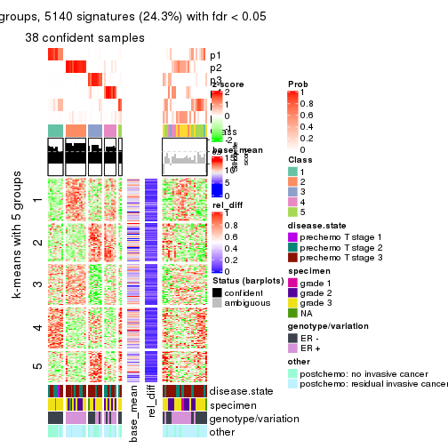
Signature heatmaps where rows are not scaled:
get_signatures(res, k = 2, scale_rows = FALSE)
get_signatures(res, k = 3, scale_rows = FALSE)
get_signatures(res, k = 4, scale_rows = FALSE)
get_signatures(res, k = 5, scale_rows = FALSE)
get_signatures(res, k = 6, scale_rows = FALSE)
Compare the overlap of signatures from different k:
compare_signatures(res)
get_signature() returns a data frame invisibly. TO get the list of signatures, the function
call should be assigned to a variable explicitly. In following code, if plot argument is set
to FALSE, no heatmap is plotted while only the differential analysis is performed.
# code only for demonstration
tb = get_signature(res, k = ..., plot = FALSE)
An example of the output of tb is:
#> which_row fdr mean_1 mean_2 scaled_mean_1 scaled_mean_2 km
#> 1 38 0.042760348 8.373488 9.131774 -0.5533452 0.5164555 1
#> 2 40 0.018707592 7.106213 8.469186 -0.6173731 0.5762149 1
#> 3 55 0.019134737 10.221463 11.207825 -0.6159697 0.5749050 1
#> 4 59 0.006059896 5.921854 7.869574 -0.6899429 0.6439467 1
#> 5 60 0.018055526 8.928898 10.211722 -0.6204761 0.5791110 1
#> 6 98 0.009384629 15.714769 14.887706 0.6635654 -0.6193277 2
...
The columns in tb are:
which_row: row indices corresponding to the input matrix.fdr: FDR for the differential test. mean_x: The mean value in group x.scaled_mean_x: The mean value in group x after rows are scaled.km: Row groups if k-means clustering is applied to rows.UMAP plot which shows how samples are separated.
dimension_reduction(res, k = 2, method = "UMAP")
dimension_reduction(res, k = 3, method = "UMAP")

dimension_reduction(res, k = 4, method = "UMAP")
dimension_reduction(res, k = 5, method = "UMAP")
dimension_reduction(res, k = 6, method = "UMAP")
Following heatmap shows how subgroups are split when increasing k:
collect_classes(res)
Test correlation between subgroups and known annotations. If the known annotation is numeric, one-way ANOVA test is applied, and if the known annotation is discrete, chi-squared contingency table test is applied.
test_to_known_factors(res)
#> n disease.state(p) specimen(p) genotype/variation(p) other(p) k
#> CV:pam 59 0.588 0.0160 1.60e-10 0.1136 2
#> CV:pam 58 0.568 0.0408 1.62e-10 0.0980 3
#> CV:pam 40 0.714 0.1628 6.41e-08 0.1088 4
#> CV:pam 44 0.487 0.1819 3.11e-07 0.0187 5
#> CV:pam 38 0.496 0.1688 5.65e-05 0.0700 6
If matrix rows can be associated to genes, consider to use functional_enrichment(res,
...) to perform function enrichment for the signature genes. See this vignette for more detailed explanations.
The object with results only for a single top-value method and a single partition method can be extracted as:
res = res_list["CV", "mclust"]
# you can also extract it by
# res = res_list["CV:mclust"]
A summary of res and all the functions that can be applied to it:
res
#> A 'ConsensusPartition' object with k = 2, 3, 4, 5, 6.
#> On a matrix with 21168 rows and 61 columns.
#> Top rows (1000, 2000, 3000, 4000, 5000) are extracted by 'CV' method.
#> Subgroups are detected by 'mclust' method.
#> Performed in total 1250 partitions by row resampling.
#> Best k for subgroups seems to be 4.
#>
#> Following methods can be applied to this 'ConsensusPartition' object:
#> [1] "cola_report" "collect_classes" "collect_plots"
#> [4] "collect_stats" "colnames" "compare_signatures"
#> [7] "consensus_heatmap" "dimension_reduction" "functional_enrichment"
#> [10] "get_anno_col" "get_anno" "get_classes"
#> [13] "get_consensus" "get_matrix" "get_membership"
#> [16] "get_param" "get_signatures" "get_stats"
#> [19] "is_best_k" "is_stable_k" "membership_heatmap"
#> [22] "ncol" "nrow" "plot_ecdf"
#> [25] "rownames" "select_partition_number" "show"
#> [28] "suggest_best_k" "test_to_known_factors"
collect_plots() function collects all the plots made from res for all k (number of partitions)
into one single page to provide an easy and fast comparison between different k.
collect_plots(res)
The plots are:
k and the heatmap of
predicted classes for each k.k.k.k.All the plots in panels can be made by individual functions and they are plotted later in this section.
select_partition_number() produces several plots showing different
statistics for choosing “optimized” k. There are following statistics:
k;k, the area increased is defined as \(A_k - A_{k-1}\).The detailed explanations of these statistics can be found in the cola vignette.
Generally speaking, lower PAC score, higher mean silhouette score or higher
concordance corresponds to better partition. Rand index and Jaccard index
measure how similar the current partition is compared to partition with k-1.
If they are too similar, we won't accept k is better than k-1.
select_partition_number(res)
The numeric values for all these statistics can be obtained by get_stats().
get_stats(res)
#> k 1-PAC mean_silhouette concordance area_increased Rand Jaccard
#> 2 2 1.000 0.979 0.992 0.5064 0.495 0.495
#> 3 3 0.861 0.868 0.946 0.3046 0.768 0.563
#> 4 4 0.924 0.922 0.956 0.1147 0.875 0.652
#> 5 5 0.776 0.826 0.896 0.0574 0.964 0.862
#> 6 6 0.760 0.607 0.799 0.0394 0.956 0.810
suggest_best_k() suggests the best \(k\) based on these statistics. The rules are as follows:
suggest_best_k(res)
#> [1] 4
#> attr(,"optional")
#> [1] 2
There is also optional best \(k\) = 2 that is worth to check.
Following shows the table of the partitions (You need to click the show/hide
code output link to see it). The membership matrix (columns with name p*)
is inferred by
clue::cl_consensus()
function with the SE method. Basically the value in the membership matrix
represents the probability to belong to a certain group. The finall class
label for an item is determined with the group with highest probability it
belongs to.
In get_classes() function, the entropy is calculated from the membership
matrix and the silhouette score is calculated from the consensus matrix.
cbind(get_classes(res, k = 2), get_membership(res, k = 2))
#> class entropy silhouette p1 p2
#> GSM590886 1 0.0000 1.000 1.000 0.000
#> GSM590859 2 0.0000 0.985 0.000 1.000
#> GSM590864 1 0.0000 1.000 1.000 0.000
#> GSM590844 2 0.0000 0.985 0.000 1.000
#> GSM590878 2 0.0000 0.985 0.000 1.000
#> GSM590841 2 0.0000 0.985 0.000 1.000
#> GSM590843 2 0.0000 0.985 0.000 1.000
#> GSM590895 2 0.0000 0.985 0.000 1.000
#> GSM590897 2 0.0000 0.985 0.000 1.000
#> GSM590842 1 0.0000 1.000 1.000 0.000
#> GSM590869 2 0.0000 0.985 0.000 1.000
#> GSM590874 1 0.0000 1.000 1.000 0.000
#> GSM590889 1 0.0000 1.000 1.000 0.000
#> GSM590851 1 0.0000 1.000 1.000 0.000
#> GSM590873 1 0.0000 1.000 1.000 0.000
#> GSM590898 2 0.0000 0.985 0.000 1.000
#> GSM590882 1 0.0000 1.000 1.000 0.000
#> GSM590849 1 0.0000 1.000 1.000 0.000
#> GSM590892 2 0.0000 0.985 0.000 1.000
#> GSM590900 2 0.0000 0.985 0.000 1.000
#> GSM590896 1 0.0000 1.000 1.000 0.000
#> GSM590870 2 0.9933 0.177 0.452 0.548
#> GSM590853 1 0.0000 1.000 1.000 0.000
#> GSM590884 1 0.0000 1.000 1.000 0.000
#> GSM590847 2 0.0000 0.985 0.000 1.000
#> GSM590857 2 0.0000 0.985 0.000 1.000
#> GSM590865 2 0.0000 0.985 0.000 1.000
#> GSM590872 2 0.0000 0.985 0.000 1.000
#> GSM590883 2 0.0000 0.985 0.000 1.000
#> GSM590887 2 0.0000 0.985 0.000 1.000
#> GSM590888 2 0.0000 0.985 0.000 1.000
#> GSM590891 2 0.0000 0.985 0.000 1.000
#> GSM590899 2 0.0000 0.985 0.000 1.000
#> GSM590848 1 0.0000 1.000 1.000 0.000
#> GSM590850 1 0.0000 1.000 1.000 0.000
#> GSM590855 1 0.0000 1.000 1.000 0.000
#> GSM590860 1 0.0000 1.000 1.000 0.000
#> GSM590890 1 0.0000 1.000 1.000 0.000
#> GSM590894 1 0.0000 1.000 1.000 0.000
#> GSM590852 1 0.0000 1.000 1.000 0.000
#> GSM590858 1 0.0000 1.000 1.000 0.000
#> GSM590862 1 0.0000 1.000 1.000 0.000
#> GSM590867 2 0.0672 0.978 0.008 0.992
#> GSM590871 1 0.0000 1.000 1.000 0.000
#> GSM590877 1 0.0000 1.000 1.000 0.000
#> GSM590879 1 0.0000 1.000 1.000 0.000
#> GSM590880 1 0.0000 1.000 1.000 0.000
#> GSM590845 2 0.0000 0.985 0.000 1.000
#> GSM590846 2 0.0000 0.985 0.000 1.000
#> GSM590875 2 0.0000 0.985 0.000 1.000
#> GSM590881 2 0.0000 0.985 0.000 1.000
#> GSM590854 2 0.0000 0.985 0.000 1.000
#> GSM590856 2 0.0000 0.985 0.000 1.000
#> GSM590861 1 0.0000 1.000 1.000 0.000
#> GSM590863 2 0.0000 0.985 0.000 1.000
#> GSM590866 2 0.0000 0.985 0.000 1.000
#> GSM590876 2 0.0672 0.978 0.008 0.992
#> GSM590893 2 0.0000 0.985 0.000 1.000
#> GSM590885 1 0.0000 1.000 1.000 0.000
#> GSM590840 1 0.0000 1.000 1.000 0.000
#> GSM590868 2 0.0000 0.985 0.000 1.000
cbind(get_classes(res, k = 3), get_membership(res, k = 3))
#> class entropy silhouette p1 p2 p3
#> GSM590886 1 0.0000 0.9207 1.000 0.000 0.000
#> GSM590859 2 0.0000 0.9883 0.000 1.000 0.000
#> GSM590864 1 0.0000 0.9207 1.000 0.000 0.000
#> GSM590844 2 0.0000 0.9883 0.000 1.000 0.000
#> GSM590878 2 0.0000 0.9883 0.000 1.000 0.000
#> GSM590841 3 0.3038 0.8239 0.000 0.104 0.896
#> GSM590843 2 0.0000 0.9883 0.000 1.000 0.000
#> GSM590895 2 0.0000 0.9883 0.000 1.000 0.000
#> GSM590897 2 0.0000 0.9883 0.000 1.000 0.000
#> GSM590842 1 0.0000 0.9207 1.000 0.000 0.000
#> GSM590869 3 0.0592 0.8680 0.000 0.012 0.988
#> GSM590874 1 0.0000 0.9207 1.000 0.000 0.000
#> GSM590889 1 0.0000 0.9207 1.000 0.000 0.000
#> GSM590851 1 0.0000 0.9207 1.000 0.000 0.000
#> GSM590873 1 0.0000 0.9207 1.000 0.000 0.000
#> GSM590898 3 0.4291 0.7662 0.000 0.180 0.820
#> GSM590882 3 0.3267 0.7962 0.116 0.000 0.884
#> GSM590849 1 0.6286 0.1669 0.536 0.000 0.464
#> GSM590892 2 0.0000 0.9883 0.000 1.000 0.000
#> GSM590900 2 0.0000 0.9883 0.000 1.000 0.000
#> GSM590896 1 0.0000 0.9207 1.000 0.000 0.000
#> GSM590870 3 0.0000 0.8664 0.000 0.000 1.000
#> GSM590853 3 0.0000 0.8664 0.000 0.000 1.000
#> GSM590884 1 0.6154 0.3104 0.592 0.000 0.408
#> GSM590847 2 0.0000 0.9883 0.000 1.000 0.000
#> GSM590857 2 0.0000 0.9883 0.000 1.000 0.000
#> GSM590865 2 0.0000 0.9883 0.000 1.000 0.000
#> GSM590872 2 0.1753 0.9511 0.000 0.952 0.048
#> GSM590883 2 0.1643 0.9544 0.000 0.956 0.044
#> GSM590887 2 0.1964 0.9425 0.000 0.944 0.056
#> GSM590888 2 0.0000 0.9883 0.000 1.000 0.000
#> GSM590891 2 0.0000 0.9883 0.000 1.000 0.000
#> GSM590899 3 0.4291 0.7662 0.000 0.180 0.820
#> GSM590848 1 0.0000 0.9207 1.000 0.000 0.000
#> GSM590850 1 0.0000 0.9207 1.000 0.000 0.000
#> GSM590855 1 0.0000 0.9207 1.000 0.000 0.000
#> GSM590860 1 0.6305 0.0976 0.516 0.000 0.484
#> GSM590890 1 0.0000 0.9207 1.000 0.000 0.000
#> GSM590894 1 0.0000 0.9207 1.000 0.000 0.000
#> GSM590852 3 0.0424 0.8667 0.008 0.000 0.992
#> GSM590858 1 0.0000 0.9207 1.000 0.000 0.000
#> GSM590862 1 0.0000 0.9207 1.000 0.000 0.000
#> GSM590867 3 0.0592 0.8680 0.000 0.012 0.988
#> GSM590871 3 0.3551 0.7796 0.132 0.000 0.868
#> GSM590877 1 0.0000 0.9207 1.000 0.000 0.000
#> GSM590879 1 0.0000 0.9207 1.000 0.000 0.000
#> GSM590880 3 0.1163 0.8630 0.028 0.000 0.972
#> GSM590845 3 0.0747 0.8673 0.000 0.016 0.984
#> GSM590846 2 0.0000 0.9883 0.000 1.000 0.000
#> GSM590875 3 0.6079 0.3749 0.000 0.388 0.612
#> GSM590881 2 0.0000 0.9883 0.000 1.000 0.000
#> GSM590854 2 0.0000 0.9883 0.000 1.000 0.000
#> GSM590856 2 0.0000 0.9883 0.000 1.000 0.000
#> GSM590861 3 0.1289 0.8614 0.032 0.000 0.968
#> GSM590863 2 0.0000 0.9883 0.000 1.000 0.000
#> GSM590866 2 0.1411 0.9610 0.000 0.964 0.036
#> GSM590876 2 0.0237 0.9851 0.004 0.996 0.000
#> GSM590893 2 0.2066 0.9384 0.000 0.940 0.060
#> GSM590885 3 0.6260 0.1051 0.448 0.000 0.552
#> GSM590840 3 0.1163 0.8631 0.028 0.000 0.972
#> GSM590868 2 0.0000 0.9883 0.000 1.000 0.000
cbind(get_classes(res, k = 4), get_membership(res, k = 4))
#> class entropy silhouette p1 p2 p3 p4
#> GSM590886 1 0.0000 0.992 1.000 0.000 0.000 0.000
#> GSM590859 2 0.0000 0.956 0.000 1.000 0.000 0.000
#> GSM590864 1 0.0000 0.992 1.000 0.000 0.000 0.000
#> GSM590844 2 0.0000 0.956 0.000 1.000 0.000 0.000
#> GSM590878 2 0.2589 0.926 0.000 0.884 0.000 0.116
#> GSM590841 4 0.0188 0.841 0.000 0.004 0.000 0.996
#> GSM590843 2 0.1940 0.945 0.000 0.924 0.000 0.076
#> GSM590895 2 0.1474 0.954 0.000 0.948 0.000 0.052
#> GSM590897 2 0.1474 0.954 0.000 0.948 0.000 0.052
#> GSM590842 1 0.0000 0.992 1.000 0.000 0.000 0.000
#> GSM590869 4 0.2530 0.800 0.000 0.000 0.112 0.888
#> GSM590874 1 0.0000 0.992 1.000 0.000 0.000 0.000
#> GSM590889 1 0.0000 0.992 1.000 0.000 0.000 0.000
#> GSM590851 1 0.0188 0.991 0.996 0.000 0.000 0.004
#> GSM590873 1 0.0000 0.992 1.000 0.000 0.000 0.000
#> GSM590898 4 0.0188 0.841 0.000 0.004 0.000 0.996
#> GSM590882 3 0.0188 0.972 0.004 0.000 0.996 0.000
#> GSM590849 3 0.0188 0.972 0.004 0.000 0.996 0.000
#> GSM590892 2 0.0000 0.956 0.000 1.000 0.000 0.000
#> GSM590900 2 0.0336 0.956 0.000 0.992 0.000 0.008
#> GSM590896 1 0.0000 0.992 1.000 0.000 0.000 0.000
#> GSM590870 4 0.4454 0.575 0.000 0.000 0.308 0.692
#> GSM590853 3 0.0000 0.973 0.000 0.000 1.000 0.000
#> GSM590884 3 0.2216 0.887 0.092 0.000 0.908 0.000
#> GSM590847 2 0.2011 0.944 0.000 0.920 0.000 0.080
#> GSM590857 2 0.0000 0.956 0.000 1.000 0.000 0.000
#> GSM590865 2 0.0817 0.951 0.000 0.976 0.000 0.024
#> GSM590872 4 0.4643 0.473 0.000 0.344 0.000 0.656
#> GSM590883 2 0.2149 0.915 0.000 0.912 0.000 0.088
#> GSM590887 4 0.4730 0.497 0.000 0.364 0.000 0.636
#> GSM590888 2 0.0817 0.951 0.000 0.976 0.000 0.024
#> GSM590891 2 0.1867 0.947 0.000 0.928 0.000 0.072
#> GSM590899 4 0.0188 0.841 0.000 0.004 0.000 0.996
#> GSM590848 1 0.0188 0.991 0.996 0.000 0.000 0.004
#> GSM590850 1 0.0000 0.992 1.000 0.000 0.000 0.000
#> GSM590855 1 0.0188 0.991 0.996 0.000 0.000 0.004
#> GSM590860 3 0.0336 0.970 0.008 0.000 0.992 0.000
#> GSM590890 1 0.0000 0.992 1.000 0.000 0.000 0.000
#> GSM590894 1 0.0000 0.992 1.000 0.000 0.000 0.000
#> GSM590852 3 0.0000 0.973 0.000 0.000 1.000 0.000
#> GSM590858 1 0.0188 0.991 0.996 0.000 0.000 0.004
#> GSM590862 1 0.2469 0.876 0.892 0.000 0.108 0.000
#> GSM590867 4 0.2589 0.802 0.000 0.000 0.116 0.884
#> GSM590871 3 0.0000 0.973 0.000 0.000 1.000 0.000
#> GSM590877 1 0.0000 0.992 1.000 0.000 0.000 0.000
#> GSM590879 1 0.0188 0.991 0.996 0.000 0.000 0.004
#> GSM590880 3 0.0000 0.973 0.000 0.000 1.000 0.000
#> GSM590845 4 0.2714 0.805 0.000 0.004 0.112 0.884
#> GSM590846 2 0.1211 0.957 0.000 0.960 0.000 0.040
#> GSM590875 4 0.0188 0.841 0.000 0.004 0.000 0.996
#> GSM590881 2 0.2469 0.932 0.000 0.892 0.000 0.108
#> GSM590854 2 0.0336 0.957 0.000 0.992 0.000 0.008
#> GSM590856 2 0.2011 0.944 0.000 0.920 0.000 0.080
#> GSM590861 3 0.0000 0.973 0.000 0.000 1.000 0.000
#> GSM590863 2 0.0000 0.956 0.000 1.000 0.000 0.000
#> GSM590866 2 0.0188 0.956 0.000 0.996 0.000 0.004
#> GSM590876 2 0.1356 0.945 0.008 0.960 0.000 0.032
#> GSM590893 4 0.1716 0.817 0.000 0.064 0.000 0.936
#> GSM590885 3 0.2149 0.892 0.088 0.000 0.912 0.000
#> GSM590840 3 0.0000 0.973 0.000 0.000 1.000 0.000
#> GSM590868 2 0.1867 0.947 0.000 0.928 0.000 0.072
cbind(get_classes(res, k = 5), get_membership(res, k = 5))
#> class entropy silhouette p1 p2 p3 p4 p5
#> GSM590886 1 0.0290 0.867 0.992 0.000 0.000 0.000 0.008
#> GSM590859 2 0.0000 0.884 0.000 1.000 0.000 0.000 0.000
#> GSM590864 1 0.1410 0.860 0.940 0.000 0.000 0.000 0.060
#> GSM590844 2 0.0000 0.884 0.000 1.000 0.000 0.000 0.000
#> GSM590878 2 0.5167 0.722 0.000 0.664 0.000 0.248 0.088
#> GSM590841 4 0.0451 0.795 0.000 0.008 0.000 0.988 0.004
#> GSM590843 2 0.0794 0.883 0.000 0.972 0.000 0.028 0.000
#> GSM590895 2 0.0794 0.883 0.000 0.972 0.000 0.028 0.000
#> GSM590897 2 0.0703 0.884 0.000 0.976 0.000 0.024 0.000
#> GSM590842 1 0.0162 0.871 0.996 0.000 0.000 0.000 0.004
#> GSM590869 4 0.1792 0.779 0.000 0.000 0.084 0.916 0.000
#> GSM590874 1 0.0000 0.871 1.000 0.000 0.000 0.000 0.000
#> GSM590889 1 0.1732 0.846 0.920 0.000 0.000 0.000 0.080
#> GSM590851 5 0.2179 0.961 0.112 0.000 0.000 0.000 0.888
#> GSM590873 5 0.3424 0.813 0.240 0.000 0.000 0.000 0.760
#> GSM590898 4 0.0000 0.795 0.000 0.000 0.000 1.000 0.000
#> GSM590882 3 0.0000 0.971 0.000 0.000 1.000 0.000 0.000
#> GSM590849 3 0.1043 0.960 0.000 0.000 0.960 0.000 0.040
#> GSM590892 2 0.1792 0.876 0.000 0.916 0.000 0.000 0.084
#> GSM590900 2 0.2962 0.858 0.000 0.868 0.000 0.048 0.084
#> GSM590896 1 0.0000 0.871 1.000 0.000 0.000 0.000 0.000
#> GSM590870 4 0.4114 0.459 0.000 0.000 0.376 0.624 0.000
#> GSM590853 3 0.2179 0.840 0.000 0.000 0.888 0.112 0.000
#> GSM590884 3 0.0992 0.957 0.024 0.000 0.968 0.000 0.008
#> GSM590847 2 0.3690 0.786 0.000 0.780 0.000 0.200 0.020
#> GSM590857 2 0.0000 0.884 0.000 1.000 0.000 0.000 0.000
#> GSM590865 2 0.3090 0.854 0.000 0.860 0.000 0.052 0.088
#> GSM590872 4 0.5064 0.575 0.000 0.232 0.000 0.680 0.088
#> GSM590883 2 0.4238 0.810 0.000 0.776 0.000 0.136 0.088
#> GSM590887 4 0.5552 0.388 0.000 0.328 0.000 0.584 0.088
#> GSM590888 2 0.4010 0.823 0.000 0.796 0.000 0.116 0.088
#> GSM590891 2 0.0794 0.883 0.000 0.972 0.000 0.028 0.000
#> GSM590899 4 0.0000 0.795 0.000 0.000 0.000 1.000 0.000
#> GSM590848 5 0.2230 0.962 0.116 0.000 0.000 0.000 0.884
#> GSM590850 1 0.1792 0.845 0.916 0.000 0.000 0.000 0.084
#> GSM590855 5 0.2179 0.961 0.112 0.000 0.000 0.000 0.888
#> GSM590860 3 0.0880 0.964 0.000 0.000 0.968 0.000 0.032
#> GSM590890 1 0.1478 0.857 0.936 0.000 0.000 0.000 0.064
#> GSM590894 1 0.0000 0.871 1.000 0.000 0.000 0.000 0.000
#> GSM590852 3 0.0000 0.971 0.000 0.000 1.000 0.000 0.000
#> GSM590858 5 0.2329 0.960 0.124 0.000 0.000 0.000 0.876
#> GSM590862 1 0.4054 0.584 0.748 0.000 0.224 0.000 0.028
#> GSM590867 4 0.3274 0.677 0.000 0.000 0.220 0.780 0.000
#> GSM590871 3 0.0000 0.971 0.000 0.000 1.000 0.000 0.000
#> GSM590877 1 0.4305 -0.194 0.512 0.000 0.000 0.000 0.488
#> GSM590879 5 0.2280 0.962 0.120 0.000 0.000 0.000 0.880
#> GSM590880 3 0.0000 0.971 0.000 0.000 1.000 0.000 0.000
#> GSM590845 4 0.3003 0.711 0.000 0.000 0.188 0.812 0.000
#> GSM590846 2 0.0451 0.886 0.000 0.988 0.000 0.004 0.008
#> GSM590875 4 0.0000 0.795 0.000 0.000 0.000 1.000 0.000
#> GSM590881 2 0.5167 0.722 0.000 0.664 0.000 0.248 0.088
#> GSM590854 2 0.0000 0.884 0.000 1.000 0.000 0.000 0.000
#> GSM590856 2 0.3074 0.789 0.000 0.804 0.000 0.196 0.000
#> GSM590861 3 0.0510 0.970 0.000 0.000 0.984 0.000 0.016
#> GSM590863 2 0.1831 0.877 0.000 0.920 0.000 0.004 0.076
#> GSM590866 2 0.1522 0.883 0.000 0.944 0.000 0.012 0.044
#> GSM590876 2 0.4982 0.735 0.000 0.692 0.000 0.220 0.088
#> GSM590893 4 0.3226 0.741 0.000 0.060 0.000 0.852 0.088
#> GSM590885 3 0.0671 0.964 0.016 0.000 0.980 0.000 0.004
#> GSM590840 3 0.0510 0.970 0.000 0.000 0.984 0.000 0.016
#> GSM590868 2 0.0794 0.883 0.000 0.972 0.000 0.028 0.000
cbind(get_classes(res, k = 6), get_membership(res, k = 6))
#> class entropy silhouette p1 p2 p3 p4 p5 p6
#> GSM590886 1 0.0146 0.866 0.996 0.000 0.004 0.000 0.000 0.000
#> GSM590859 2 0.0146 0.703 0.000 0.996 0.000 0.000 0.000 0.004
#> GSM590864 1 0.3371 0.576 0.708 0.000 0.000 0.000 0.292 0.000
#> GSM590844 2 0.0260 0.703 0.000 0.992 0.000 0.000 0.000 0.008
#> GSM590878 6 0.5744 0.497 0.000 0.344 0.000 0.180 0.000 0.476
#> GSM590841 4 0.1471 0.734 0.000 0.000 0.004 0.932 0.000 0.064
#> GSM590843 2 0.0717 0.699 0.000 0.976 0.000 0.008 0.000 0.016
#> GSM590895 2 0.0717 0.700 0.000 0.976 0.000 0.008 0.000 0.016
#> GSM590897 2 0.0622 0.701 0.000 0.980 0.000 0.008 0.000 0.012
#> GSM590842 1 0.0713 0.860 0.972 0.000 0.000 0.000 0.028 0.000
#> GSM590869 4 0.3344 0.605 0.000 0.000 0.152 0.804 0.000 0.044
#> GSM590874 1 0.0000 0.867 1.000 0.000 0.000 0.000 0.000 0.000
#> GSM590889 1 0.0547 0.864 0.980 0.000 0.000 0.000 0.020 0.000
#> GSM590851 5 0.1007 0.962 0.044 0.000 0.000 0.000 0.956 0.000
#> GSM590873 5 0.1957 0.908 0.112 0.000 0.000 0.000 0.888 0.000
#> GSM590898 4 0.0000 0.749 0.000 0.000 0.000 1.000 0.000 0.000
#> GSM590882 3 0.5440 0.714 0.000 0.000 0.520 0.132 0.000 0.348
#> GSM590849 3 0.1141 0.577 0.000 0.000 0.948 0.000 0.052 0.000
#> GSM590892 2 0.3464 0.340 0.000 0.688 0.000 0.000 0.000 0.312
#> GSM590900 2 0.3309 0.419 0.000 0.720 0.000 0.000 0.000 0.280
#> GSM590896 1 0.0000 0.867 1.000 0.000 0.000 0.000 0.000 0.000
#> GSM590870 3 0.5915 0.382 0.000 0.000 0.428 0.360 0.000 0.212
#> GSM590853 3 0.5862 0.644 0.000 0.000 0.452 0.204 0.000 0.344
#> GSM590884 3 0.5528 0.725 0.012 0.000 0.560 0.096 0.004 0.328
#> GSM590847 2 0.4980 0.261 0.000 0.648 0.000 0.168 0.000 0.184
#> GSM590857 2 0.0458 0.703 0.000 0.984 0.000 0.000 0.000 0.016
#> GSM590865 2 0.3499 0.324 0.000 0.680 0.000 0.000 0.000 0.320
#> GSM590872 6 0.5723 0.607 0.000 0.200 0.000 0.292 0.000 0.508
#> GSM590883 6 0.4314 0.370 0.000 0.444 0.000 0.020 0.000 0.536
#> GSM590887 6 0.5651 0.654 0.000 0.260 0.000 0.208 0.000 0.532
#> GSM590888 2 0.4444 -0.227 0.000 0.536 0.000 0.028 0.000 0.436
#> GSM590891 2 0.0622 0.701 0.000 0.980 0.000 0.008 0.000 0.012
#> GSM590899 4 0.0000 0.749 0.000 0.000 0.000 1.000 0.000 0.000
#> GSM590848 5 0.0937 0.961 0.040 0.000 0.000 0.000 0.960 0.000
#> GSM590850 1 0.0713 0.863 0.972 0.000 0.000 0.000 0.028 0.000
#> GSM590855 5 0.1141 0.962 0.052 0.000 0.000 0.000 0.948 0.000
#> GSM590860 3 0.1141 0.577 0.000 0.000 0.948 0.000 0.052 0.000
#> GSM590890 1 0.0632 0.863 0.976 0.000 0.000 0.000 0.024 0.000
#> GSM590894 1 0.0000 0.867 1.000 0.000 0.000 0.000 0.000 0.000
#> GSM590852 3 0.5448 0.713 0.000 0.000 0.516 0.132 0.000 0.352
#> GSM590858 5 0.1007 0.962 0.044 0.000 0.000 0.000 0.956 0.000
#> GSM590862 1 0.4937 0.497 0.652 0.000 0.152 0.000 0.196 0.000
#> GSM590867 4 0.5046 0.426 0.000 0.000 0.144 0.632 0.000 0.224
#> GSM590871 3 0.4798 0.722 0.000 0.000 0.620 0.080 0.000 0.300
#> GSM590877 1 0.3847 0.141 0.544 0.000 0.000 0.000 0.456 0.000
#> GSM590879 5 0.1957 0.915 0.112 0.000 0.000 0.000 0.888 0.000
#> GSM590880 3 0.5448 0.713 0.000 0.000 0.516 0.132 0.000 0.352
#> GSM590845 4 0.4875 0.488 0.000 0.000 0.104 0.636 0.000 0.260
#> GSM590846 2 0.0865 0.699 0.000 0.964 0.000 0.000 0.000 0.036
#> GSM590875 4 0.0146 0.748 0.000 0.000 0.000 0.996 0.000 0.004
#> GSM590881 2 0.5836 -0.445 0.000 0.420 0.000 0.188 0.000 0.392
#> GSM590854 2 0.0260 0.702 0.000 0.992 0.000 0.000 0.000 0.008
#> GSM590856 2 0.3388 0.479 0.000 0.792 0.000 0.172 0.000 0.036
#> GSM590861 3 0.1864 0.595 0.000 0.000 0.924 0.004 0.040 0.032
#> GSM590863 2 0.2941 0.523 0.000 0.780 0.000 0.000 0.000 0.220
#> GSM590866 2 0.2300 0.625 0.000 0.856 0.000 0.000 0.000 0.144
#> GSM590876 2 0.5956 -0.212 0.028 0.504 0.000 0.120 0.000 0.348
#> GSM590893 4 0.3982 -0.165 0.000 0.004 0.000 0.536 0.000 0.460
#> GSM590885 3 0.5381 0.725 0.004 0.000 0.552 0.096 0.004 0.344
#> GSM590840 3 0.1226 0.579 0.000 0.000 0.952 0.004 0.040 0.004
#> GSM590868 2 0.0622 0.700 0.000 0.980 0.000 0.008 0.000 0.012
Heatmaps for the consensus matrix. It visualizes the probability of two samples to be in a same group.
consensus_heatmap(res, k = 2)
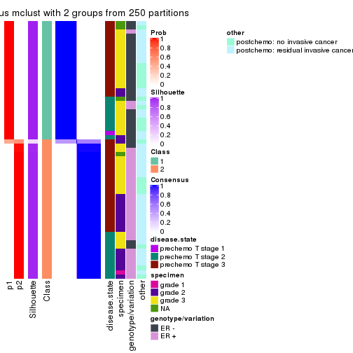
consensus_heatmap(res, k = 3)
consensus_heatmap(res, k = 4)
consensus_heatmap(res, k = 5)
consensus_heatmap(res, k = 6)
Heatmaps for the membership of samples in all partitions to see how consistent they are:
membership_heatmap(res, k = 2)
membership_heatmap(res, k = 3)
membership_heatmap(res, k = 4)
membership_heatmap(res, k = 5)
membership_heatmap(res, k = 6)
As soon as we have had the classes for columns, we can look for signatures which are significantly different between classes which can be candidate marks for certain classes. Following are the heatmaps for signatures.
Signature heatmaps where rows are scaled:
get_signatures(res, k = 2)
get_signatures(res, k = 3)
get_signatures(res, k = 4)
get_signatures(res, k = 5)
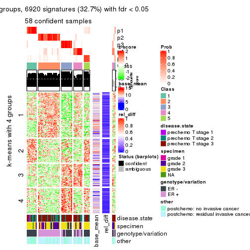
get_signatures(res, k = 6)
Signature heatmaps where rows are not scaled:
get_signatures(res, k = 2, scale_rows = FALSE)
get_signatures(res, k = 3, scale_rows = FALSE)
get_signatures(res, k = 4, scale_rows = FALSE)
get_signatures(res, k = 5, scale_rows = FALSE)
get_signatures(res, k = 6, scale_rows = FALSE)
Compare the overlap of signatures from different k:
compare_signatures(res)

get_signature() returns a data frame invisibly. TO get the list of signatures, the function
call should be assigned to a variable explicitly. In following code, if plot argument is set
to FALSE, no heatmap is plotted while only the differential analysis is performed.
# code only for demonstration
tb = get_signature(res, k = ..., plot = FALSE)
An example of the output of tb is:
#> which_row fdr mean_1 mean_2 scaled_mean_1 scaled_mean_2 km
#> 1 38 0.042760348 8.373488 9.131774 -0.5533452 0.5164555 1
#> 2 40 0.018707592 7.106213 8.469186 -0.6173731 0.5762149 1
#> 3 55 0.019134737 10.221463 11.207825 -0.6159697 0.5749050 1
#> 4 59 0.006059896 5.921854 7.869574 -0.6899429 0.6439467 1
#> 5 60 0.018055526 8.928898 10.211722 -0.6204761 0.5791110 1
#> 6 98 0.009384629 15.714769 14.887706 0.6635654 -0.6193277 2
...
The columns in tb are:
which_row: row indices corresponding to the input matrix.fdr: FDR for the differential test. mean_x: The mean value in group x.scaled_mean_x: The mean value in group x after rows are scaled.km: Row groups if k-means clustering is applied to rows.UMAP plot which shows how samples are separated.
dimension_reduction(res, k = 2, method = "UMAP")
dimension_reduction(res, k = 3, method = "UMAP")
dimension_reduction(res, k = 4, method = "UMAP")
dimension_reduction(res, k = 5, method = "UMAP")
dimension_reduction(res, k = 6, method = "UMAP")
Following heatmap shows how subgroups are split when increasing k:
collect_classes(res)
Test correlation between subgroups and known annotations. If the known annotation is numeric, one-way ANOVA test is applied, and if the known annotation is discrete, chi-squared contingency table test is applied.
test_to_known_factors(res)
#> n disease.state(p) specimen(p) genotype/variation(p) other(p) k
#> CV:mclust 60 0.557 0.0112 3.02e-09 0.1429 2
#> CV:mclust 56 0.524 0.0597 4.43e-10 0.0376 3
#> CV:mclust 59 0.616 0.0891 5.43e-09 0.1197 4
#> CV:mclust 58 0.449 0.2251 2.45e-08 0.0728 5
#> CV:mclust 45 0.422 0.2388 8.16e-06 0.0657 6
If matrix rows can be associated to genes, consider to use functional_enrichment(res,
...) to perform function enrichment for the signature genes. See this vignette for more detailed explanations.
The object with results only for a single top-value method and a single partition method can be extracted as:
res = res_list["CV", "NMF"]
# you can also extract it by
# res = res_list["CV:NMF"]
A summary of res and all the functions that can be applied to it:
res
#> A 'ConsensusPartition' object with k = 2, 3, 4, 5, 6.
#> On a matrix with 21168 rows and 61 columns.
#> Top rows (1000, 2000, 3000, 4000, 5000) are extracted by 'CV' method.
#> Subgroups are detected by 'NMF' method.
#> Performed in total 1250 partitions by row resampling.
#> Best k for subgroups seems to be 2.
#>
#> Following methods can be applied to this 'ConsensusPartition' object:
#> [1] "cola_report" "collect_classes" "collect_plots"
#> [4] "collect_stats" "colnames" "compare_signatures"
#> [7] "consensus_heatmap" "dimension_reduction" "functional_enrichment"
#> [10] "get_anno_col" "get_anno" "get_classes"
#> [13] "get_consensus" "get_matrix" "get_membership"
#> [16] "get_param" "get_signatures" "get_stats"
#> [19] "is_best_k" "is_stable_k" "membership_heatmap"
#> [22] "ncol" "nrow" "plot_ecdf"
#> [25] "rownames" "select_partition_number" "show"
#> [28] "suggest_best_k" "test_to_known_factors"
collect_plots() function collects all the plots made from res for all k (number of partitions)
into one single page to provide an easy and fast comparison between different k.
collect_plots(res)
The plots are:
k and the heatmap of
predicted classes for each k.k.k.k.All the plots in panels can be made by individual functions and they are plotted later in this section.
select_partition_number() produces several plots showing different
statistics for choosing “optimized” k. There are following statistics:
k;k, the area increased is defined as \(A_k - A_{k-1}\).The detailed explanations of these statistics can be found in the cola vignette.
Generally speaking, lower PAC score, higher mean silhouette score or higher
concordance corresponds to better partition. Rand index and Jaccard index
measure how similar the current partition is compared to partition with k-1.
If they are too similar, we won't accept k is better than k-1.
select_partition_number(res)
The numeric values for all these statistics can be obtained by get_stats().
get_stats(res)
#> k 1-PAC mean_silhouette concordance area_increased Rand Jaccard
#> 2 2 0.930 0.947 0.975 0.5074 0.493 0.493
#> 3 3 0.782 0.871 0.940 0.3077 0.795 0.604
#> 4 4 0.750 0.741 0.859 0.1031 0.909 0.740
#> 5 5 0.682 0.663 0.820 0.0666 0.909 0.694
#> 6 6 0.667 0.599 0.754 0.0493 0.970 0.880
suggest_best_k() suggests the best \(k\) based on these statistics. The rules are as follows:
suggest_best_k(res)
#> [1] 2
Following shows the table of the partitions (You need to click the show/hide
code output link to see it). The membership matrix (columns with name p*)
is inferred by
clue::cl_consensus()
function with the SE method. Basically the value in the membership matrix
represents the probability to belong to a certain group. The finall class
label for an item is determined with the group with highest probability it
belongs to.
In get_classes() function, the entropy is calculated from the membership
matrix and the silhouette score is calculated from the consensus matrix.
cbind(get_classes(res, k = 2), get_membership(res, k = 2))
#> class entropy silhouette p1 p2
#> GSM590886 1 0.242 0.928 0.960 0.040
#> GSM590859 2 0.000 0.996 0.000 1.000
#> GSM590864 1 0.430 0.888 0.912 0.088
#> GSM590844 2 0.000 0.996 0.000 1.000
#> GSM590878 2 0.000 0.996 0.000 1.000
#> GSM590841 2 0.000 0.996 0.000 1.000
#> GSM590843 2 0.000 0.996 0.000 1.000
#> GSM590895 2 0.000 0.996 0.000 1.000
#> GSM590897 2 0.000 0.996 0.000 1.000
#> GSM590842 1 0.000 0.953 1.000 0.000
#> GSM590869 1 0.634 0.809 0.840 0.160
#> GSM590874 1 0.844 0.661 0.728 0.272
#> GSM590889 1 0.000 0.953 1.000 0.000
#> GSM590851 1 0.000 0.953 1.000 0.000
#> GSM590873 1 0.000 0.953 1.000 0.000
#> GSM590898 2 0.000 0.996 0.000 1.000
#> GSM590882 1 0.000 0.953 1.000 0.000
#> GSM590849 1 0.000 0.953 1.000 0.000
#> GSM590892 2 0.000 0.996 0.000 1.000
#> GSM590900 2 0.000 0.996 0.000 1.000
#> GSM590896 1 0.839 0.668 0.732 0.268
#> GSM590870 1 0.000 0.953 1.000 0.000
#> GSM590853 1 0.000 0.953 1.000 0.000
#> GSM590884 1 0.000 0.953 1.000 0.000
#> GSM590847 2 0.000 0.996 0.000 1.000
#> GSM590857 2 0.000 0.996 0.000 1.000
#> GSM590865 2 0.242 0.956 0.040 0.960
#> GSM590872 2 0.000 0.996 0.000 1.000
#> GSM590883 2 0.000 0.996 0.000 1.000
#> GSM590887 2 0.000 0.996 0.000 1.000
#> GSM590888 2 0.000 0.996 0.000 1.000
#> GSM590891 2 0.000 0.996 0.000 1.000
#> GSM590899 2 0.000 0.996 0.000 1.000
#> GSM590848 1 0.000 0.953 1.000 0.000
#> GSM590850 1 0.000 0.953 1.000 0.000
#> GSM590855 1 0.000 0.953 1.000 0.000
#> GSM590860 1 0.000 0.953 1.000 0.000
#> GSM590890 1 0.184 0.936 0.972 0.028
#> GSM590894 1 0.000 0.953 1.000 0.000
#> GSM590852 1 0.000 0.953 1.000 0.000
#> GSM590858 1 0.000 0.953 1.000 0.000
#> GSM590862 1 0.000 0.953 1.000 0.000
#> GSM590867 1 0.000 0.953 1.000 0.000
#> GSM590871 1 0.000 0.953 1.000 0.000
#> GSM590877 1 0.946 0.480 0.636 0.364
#> GSM590879 1 0.000 0.953 1.000 0.000
#> GSM590880 1 0.000 0.953 1.000 0.000
#> GSM590845 1 0.706 0.769 0.808 0.192
#> GSM590846 2 0.000 0.996 0.000 1.000
#> GSM590875 2 0.000 0.996 0.000 1.000
#> GSM590881 2 0.000 0.996 0.000 1.000
#> GSM590854 2 0.000 0.996 0.000 1.000
#> GSM590856 2 0.000 0.996 0.000 1.000
#> GSM590861 1 0.000 0.953 1.000 0.000
#> GSM590863 2 0.000 0.996 0.000 1.000
#> GSM590866 2 0.343 0.930 0.064 0.936
#> GSM590876 2 0.000 0.996 0.000 1.000
#> GSM590893 2 0.000 0.996 0.000 1.000
#> GSM590885 1 0.000 0.953 1.000 0.000
#> GSM590840 1 0.000 0.953 1.000 0.000
#> GSM590868 2 0.000 0.996 0.000 1.000
cbind(get_classes(res, k = 3), get_membership(res, k = 3))
#> class entropy silhouette p1 p2 p3
#> GSM590886 1 0.0237 0.942 0.996 0.004 0.000
#> GSM590859 2 0.0000 0.949 0.000 1.000 0.000
#> GSM590864 1 0.0747 0.935 0.984 0.016 0.000
#> GSM590844 2 0.0000 0.949 0.000 1.000 0.000
#> GSM590878 2 0.0424 0.946 0.000 0.992 0.008
#> GSM590841 3 0.2878 0.842 0.000 0.096 0.904
#> GSM590843 2 0.0000 0.949 0.000 1.000 0.000
#> GSM590895 2 0.0000 0.949 0.000 1.000 0.000
#> GSM590897 2 0.0000 0.949 0.000 1.000 0.000
#> GSM590842 1 0.0000 0.944 1.000 0.000 0.000
#> GSM590869 3 0.0000 0.880 0.000 0.000 1.000
#> GSM590874 1 0.1289 0.922 0.968 0.032 0.000
#> GSM590889 1 0.0000 0.944 1.000 0.000 0.000
#> GSM590851 1 0.0000 0.944 1.000 0.000 0.000
#> GSM590873 1 0.0000 0.944 1.000 0.000 0.000
#> GSM590898 3 0.2959 0.836 0.000 0.100 0.900
#> GSM590882 3 0.3116 0.826 0.108 0.000 0.892
#> GSM590849 1 0.4235 0.777 0.824 0.000 0.176
#> GSM590892 2 0.0000 0.949 0.000 1.000 0.000
#> GSM590900 2 0.2066 0.908 0.060 0.940 0.000
#> GSM590896 1 0.1031 0.929 0.976 0.024 0.000
#> GSM590870 3 0.0000 0.880 0.000 0.000 1.000
#> GSM590853 3 0.0237 0.879 0.004 0.000 0.996
#> GSM590884 1 0.5327 0.628 0.728 0.000 0.272
#> GSM590847 2 0.0000 0.949 0.000 1.000 0.000
#> GSM590857 2 0.0424 0.946 0.008 0.992 0.000
#> GSM590865 2 0.3116 0.863 0.108 0.892 0.000
#> GSM590872 2 0.2796 0.879 0.000 0.908 0.092
#> GSM590883 2 0.1753 0.920 0.000 0.952 0.048
#> GSM590887 2 0.5760 0.523 0.000 0.672 0.328
#> GSM590888 2 0.0000 0.949 0.000 1.000 0.000
#> GSM590891 2 0.0000 0.949 0.000 1.000 0.000
#> GSM590899 3 0.3038 0.833 0.000 0.104 0.896
#> GSM590848 1 0.0000 0.944 1.000 0.000 0.000
#> GSM590850 1 0.0000 0.944 1.000 0.000 0.000
#> GSM590855 1 0.0000 0.944 1.000 0.000 0.000
#> GSM590860 1 0.2878 0.867 0.904 0.000 0.096
#> GSM590890 1 0.0237 0.942 0.996 0.004 0.000
#> GSM590894 1 0.0000 0.944 1.000 0.000 0.000
#> GSM590852 3 0.0747 0.878 0.016 0.000 0.984
#> GSM590858 1 0.0000 0.944 1.000 0.000 0.000
#> GSM590862 1 0.0000 0.944 1.000 0.000 0.000
#> GSM590867 3 0.0000 0.880 0.000 0.000 1.000
#> GSM590871 3 0.5497 0.576 0.292 0.000 0.708
#> GSM590877 1 0.1163 0.925 0.972 0.028 0.000
#> GSM590879 1 0.0000 0.944 1.000 0.000 0.000
#> GSM590880 3 0.1031 0.875 0.024 0.000 0.976
#> GSM590845 3 0.0000 0.880 0.000 0.000 1.000
#> GSM590846 2 0.0000 0.949 0.000 1.000 0.000
#> GSM590875 3 0.4702 0.695 0.000 0.212 0.788
#> GSM590881 2 0.0424 0.946 0.000 0.992 0.008
#> GSM590854 2 0.0592 0.944 0.012 0.988 0.000
#> GSM590856 2 0.0000 0.949 0.000 1.000 0.000
#> GSM590861 3 0.6140 0.312 0.404 0.000 0.596
#> GSM590863 2 0.0424 0.946 0.008 0.992 0.000
#> GSM590866 2 0.1337 0.938 0.012 0.972 0.016
#> GSM590876 2 0.3551 0.835 0.132 0.868 0.000
#> GSM590893 2 0.5650 0.563 0.000 0.688 0.312
#> GSM590885 3 0.3619 0.802 0.136 0.000 0.864
#> GSM590840 1 0.5882 0.465 0.652 0.000 0.348
#> GSM590868 2 0.0000 0.949 0.000 1.000 0.000
cbind(get_classes(res, k = 4), get_membership(res, k = 4))
#> class entropy silhouette p1 p2 p3 p4
#> GSM590886 1 0.1118 0.7206 0.964 0.000 0.036 0.000
#> GSM590859 2 0.0336 0.9250 0.000 0.992 0.008 0.000
#> GSM590864 1 0.1118 0.7404 0.964 0.000 0.036 0.000
#> GSM590844 2 0.0188 0.9259 0.000 0.996 0.004 0.000
#> GSM590878 2 0.0188 0.9259 0.000 0.996 0.004 0.000
#> GSM590841 4 0.1406 0.9035 0.000 0.024 0.016 0.960
#> GSM590843 2 0.0000 0.9261 0.000 1.000 0.000 0.000
#> GSM590895 2 0.1042 0.9171 0.020 0.972 0.008 0.000
#> GSM590897 2 0.0188 0.9257 0.000 0.996 0.004 0.000
#> GSM590842 1 0.3569 0.6543 0.804 0.000 0.196 0.000
#> GSM590869 4 0.0921 0.9012 0.000 0.000 0.028 0.972
#> GSM590874 1 0.2081 0.6817 0.916 0.000 0.084 0.000
#> GSM590889 1 0.1792 0.7144 0.932 0.000 0.068 0.000
#> GSM590851 1 0.4996 -0.0197 0.516 0.000 0.484 0.000
#> GSM590873 1 0.3123 0.6892 0.844 0.000 0.156 0.000
#> GSM590898 4 0.0707 0.9005 0.000 0.000 0.020 0.980
#> GSM590882 4 0.3355 0.8493 0.004 0.000 0.160 0.836
#> GSM590849 3 0.2401 0.6928 0.092 0.000 0.904 0.004
#> GSM590892 2 0.0188 0.9259 0.000 0.996 0.004 0.000
#> GSM590900 2 0.1716 0.8957 0.000 0.936 0.064 0.000
#> GSM590896 1 0.0817 0.7366 0.976 0.000 0.024 0.000
#> GSM590870 4 0.1118 0.9095 0.000 0.000 0.036 0.964
#> GSM590853 4 0.0921 0.9098 0.000 0.000 0.028 0.972
#> GSM590884 3 0.7843 0.1935 0.364 0.000 0.372 0.264
#> GSM590847 2 0.4222 0.8172 0.080 0.832 0.084 0.004
#> GSM590857 2 0.0921 0.9166 0.000 0.972 0.028 0.000
#> GSM590865 2 0.3688 0.7570 0.000 0.792 0.208 0.000
#> GSM590872 2 0.0336 0.9260 0.000 0.992 0.008 0.000
#> GSM590883 2 0.0188 0.9259 0.000 0.996 0.004 0.000
#> GSM590887 2 0.3806 0.7924 0.000 0.824 0.020 0.156
#> GSM590888 2 0.0188 0.9259 0.000 0.996 0.004 0.000
#> GSM590891 2 0.0188 0.9259 0.000 0.996 0.004 0.000
#> GSM590899 4 0.2179 0.8653 0.012 0.000 0.064 0.924
#> GSM590848 3 0.4985 0.0486 0.468 0.000 0.532 0.000
#> GSM590850 1 0.2469 0.7179 0.892 0.000 0.108 0.000
#> GSM590855 3 0.4776 0.3325 0.376 0.000 0.624 0.000
#> GSM590860 3 0.2401 0.6928 0.092 0.000 0.904 0.004
#> GSM590890 1 0.1389 0.7382 0.952 0.000 0.048 0.000
#> GSM590894 1 0.0921 0.7395 0.972 0.000 0.028 0.000
#> GSM590852 4 0.2149 0.8990 0.000 0.000 0.088 0.912
#> GSM590858 1 0.4406 0.5217 0.700 0.000 0.300 0.000
#> GSM590862 1 0.4605 0.4557 0.664 0.000 0.336 0.000
#> GSM590867 4 0.4134 0.7417 0.000 0.000 0.260 0.740
#> GSM590871 3 0.4228 0.5207 0.008 0.000 0.760 0.232
#> GSM590877 1 0.1302 0.7155 0.956 0.000 0.044 0.000
#> GSM590879 1 0.4477 0.5010 0.688 0.000 0.312 0.000
#> GSM590880 4 0.2149 0.8995 0.000 0.000 0.088 0.912
#> GSM590845 4 0.3569 0.8237 0.000 0.000 0.196 0.804
#> GSM590846 2 0.0000 0.9261 0.000 1.000 0.000 0.000
#> GSM590875 4 0.0376 0.9044 0.000 0.004 0.004 0.992
#> GSM590881 2 0.5896 0.7184 0.148 0.736 0.092 0.024
#> GSM590854 2 0.0188 0.9259 0.000 0.996 0.004 0.000
#> GSM590856 2 0.2521 0.8812 0.024 0.912 0.064 0.000
#> GSM590861 3 0.2799 0.6653 0.008 0.000 0.884 0.108
#> GSM590863 2 0.0188 0.9259 0.000 0.996 0.004 0.000
#> GSM590866 2 0.4972 0.3084 0.000 0.544 0.456 0.000
#> GSM590876 1 0.6820 -0.0496 0.476 0.436 0.084 0.004
#> GSM590893 2 0.3710 0.7712 0.000 0.804 0.004 0.192
#> GSM590885 4 0.2706 0.8573 0.080 0.000 0.020 0.900
#> GSM590840 3 0.2670 0.6944 0.052 0.000 0.908 0.040
#> GSM590868 2 0.0000 0.9261 0.000 1.000 0.000 0.000
cbind(get_classes(res, k = 5), get_membership(res, k = 5))
#> class entropy silhouette p1 p2 p3 p4 p5
#> GSM590886 1 0.3774 0.6100 0.704 0.000 0.000 0.296 0.000
#> GSM590859 2 0.0798 0.8600 0.000 0.976 0.000 0.008 0.016
#> GSM590864 1 0.2735 0.8339 0.880 0.000 0.000 0.084 0.036
#> GSM590844 2 0.1522 0.8537 0.000 0.944 0.000 0.044 0.012
#> GSM590878 2 0.2971 0.7907 0.000 0.836 0.000 0.156 0.008
#> GSM590841 3 0.3030 0.6922 0.000 0.040 0.868 0.088 0.004
#> GSM590843 2 0.0671 0.8594 0.000 0.980 0.000 0.016 0.004
#> GSM590895 2 0.0771 0.8596 0.004 0.976 0.000 0.020 0.000
#> GSM590897 2 0.1124 0.8568 0.000 0.960 0.000 0.036 0.004
#> GSM590842 1 0.2992 0.8185 0.868 0.000 0.000 0.064 0.068
#> GSM590869 4 0.3857 0.4562 0.000 0.000 0.312 0.688 0.000
#> GSM590874 1 0.2377 0.8075 0.872 0.000 0.000 0.128 0.000
#> GSM590889 1 0.4196 0.5650 0.640 0.000 0.000 0.356 0.004
#> GSM590851 1 0.4637 0.6332 0.676 0.000 0.004 0.028 0.292
#> GSM590873 1 0.1549 0.8352 0.944 0.000 0.000 0.016 0.040
#> GSM590898 3 0.2179 0.6874 0.000 0.000 0.888 0.112 0.000
#> GSM590882 3 0.2144 0.7174 0.000 0.000 0.912 0.020 0.068
#> GSM590849 5 0.2564 0.6731 0.052 0.000 0.020 0.024 0.904
#> GSM590892 2 0.1124 0.8565 0.000 0.960 0.000 0.036 0.004
#> GSM590900 2 0.5250 0.5489 0.000 0.668 0.000 0.108 0.224
#> GSM590896 1 0.1251 0.8329 0.956 0.000 0.000 0.036 0.008
#> GSM590870 3 0.0510 0.7267 0.000 0.000 0.984 0.016 0.000
#> GSM590853 4 0.4138 0.3249 0.000 0.000 0.384 0.616 0.000
#> GSM590884 3 0.7427 0.1915 0.260 0.000 0.464 0.052 0.224
#> GSM590847 2 0.4283 0.4711 0.008 0.644 0.000 0.348 0.000
#> GSM590857 2 0.2491 0.8261 0.000 0.896 0.000 0.068 0.036
#> GSM590865 5 0.5155 0.3218 0.000 0.352 0.000 0.052 0.596
#> GSM590872 2 0.1442 0.8551 0.000 0.952 0.012 0.032 0.004
#> GSM590883 2 0.2859 0.8237 0.000 0.876 0.056 0.068 0.000
#> GSM590887 2 0.6640 0.0976 0.000 0.448 0.420 0.096 0.036
#> GSM590888 2 0.5168 0.7256 0.008 0.752 0.068 0.132 0.040
#> GSM590891 2 0.1800 0.8518 0.000 0.932 0.000 0.048 0.020
#> GSM590899 4 0.4306 0.1538 0.000 0.000 0.492 0.508 0.000
#> GSM590848 5 0.5689 -0.1206 0.440 0.000 0.000 0.080 0.480
#> GSM590850 1 0.2304 0.8386 0.908 0.000 0.000 0.044 0.048
#> GSM590855 1 0.4524 0.6410 0.692 0.000 0.008 0.020 0.280
#> GSM590860 5 0.1299 0.6825 0.020 0.000 0.012 0.008 0.960
#> GSM590890 1 0.1569 0.8334 0.944 0.000 0.004 0.044 0.008
#> GSM590894 1 0.0451 0.8346 0.988 0.000 0.000 0.008 0.004
#> GSM590852 3 0.1626 0.7273 0.000 0.000 0.940 0.044 0.016
#> GSM590858 1 0.3039 0.8041 0.836 0.000 0.000 0.012 0.152
#> GSM590862 1 0.3497 0.8001 0.828 0.000 0.020 0.012 0.140
#> GSM590867 3 0.3883 0.6261 0.000 0.000 0.780 0.036 0.184
#> GSM590871 5 0.3579 0.4739 0.004 0.000 0.240 0.000 0.756
#> GSM590877 1 0.2471 0.8061 0.864 0.000 0.000 0.136 0.000
#> GSM590879 1 0.3129 0.8017 0.832 0.000 0.004 0.008 0.156
#> GSM590880 3 0.3844 0.6419 0.000 0.000 0.804 0.132 0.064
#> GSM590845 3 0.3166 0.6896 0.000 0.016 0.860 0.020 0.104
#> GSM590846 2 0.1894 0.8398 0.000 0.920 0.000 0.072 0.008
#> GSM590875 3 0.4457 0.1457 0.000 0.012 0.620 0.368 0.000
#> GSM590881 4 0.3970 0.4749 0.024 0.224 0.000 0.752 0.000
#> GSM590854 2 0.0451 0.8595 0.000 0.988 0.000 0.008 0.004
#> GSM590856 2 0.3177 0.7054 0.000 0.792 0.000 0.208 0.000
#> GSM590861 5 0.2990 0.6567 0.012 0.000 0.032 0.080 0.876
#> GSM590863 2 0.0579 0.8603 0.000 0.984 0.000 0.008 0.008
#> GSM590866 5 0.5146 0.4070 0.000 0.316 0.016 0.032 0.636
#> GSM590876 4 0.5647 0.3960 0.080 0.252 0.000 0.648 0.020
#> GSM590893 2 0.3622 0.7921 0.000 0.832 0.068 0.096 0.004
#> GSM590885 3 0.2568 0.6875 0.092 0.000 0.888 0.016 0.004
#> GSM590840 5 0.0798 0.6819 0.016 0.000 0.008 0.000 0.976
#> GSM590868 2 0.0912 0.8580 0.000 0.972 0.000 0.016 0.012
cbind(get_classes(res, k = 6), get_membership(res, k = 6))
#> class entropy silhouette p1 p2 p3 p4 p5 p6
#> GSM590886 1 0.5983 0.40431 0.504 0.008 0.000 0.236 0.000 NA
#> GSM590859 2 0.1462 0.76524 0.000 0.936 0.000 0.000 0.008 NA
#> GSM590864 1 0.3669 0.74201 0.812 0.004 0.000 0.084 0.008 NA
#> GSM590844 2 0.2402 0.74149 0.000 0.856 0.000 0.004 0.000 NA
#> GSM590878 2 0.5289 0.35334 0.000 0.540 0.000 0.360 0.004 NA
#> GSM590841 3 0.4150 0.55035 0.000 0.048 0.788 0.080 0.000 NA
#> GSM590843 2 0.1082 0.76233 0.000 0.956 0.000 0.004 0.000 NA
#> GSM590895 2 0.1610 0.76008 0.000 0.916 0.000 0.000 0.000 NA
#> GSM590897 2 0.1958 0.75151 0.000 0.896 0.000 0.004 0.000 NA
#> GSM590842 1 0.3704 0.75761 0.796 0.000 0.000 0.012 0.052 NA
#> GSM590869 4 0.1858 0.60367 0.000 0.000 0.092 0.904 0.000 NA
#> GSM590874 1 0.2745 0.76535 0.864 0.000 0.000 0.068 0.000 NA
#> GSM590889 1 0.5004 0.31434 0.516 0.000 0.000 0.420 0.004 NA
#> GSM590851 1 0.4724 0.64990 0.688 0.000 0.004 0.004 0.216 NA
#> GSM590873 1 0.1124 0.78698 0.956 0.000 0.000 0.000 0.008 NA
#> GSM590898 3 0.3922 0.54947 0.000 0.004 0.776 0.124 0.000 NA
#> GSM590882 3 0.2325 0.63044 0.004 0.000 0.900 0.008 0.020 NA
#> GSM590849 5 0.3817 0.70540 0.052 0.000 0.020 0.004 0.804 NA
#> GSM590892 2 0.3445 0.69869 0.000 0.744 0.000 0.012 0.000 NA
#> GSM590900 2 0.6011 0.34971 0.000 0.440 0.000 0.016 0.148 NA
#> GSM590896 1 0.1951 0.78148 0.908 0.000 0.000 0.016 0.000 NA
#> GSM590870 3 0.0692 0.62975 0.000 0.000 0.976 0.004 0.000 NA
#> GSM590853 4 0.5668 0.30972 0.000 0.000 0.300 0.532 0.004 NA
#> GSM590884 3 0.7995 0.00352 0.208 0.000 0.344 0.060 0.304 NA
#> GSM590847 2 0.4573 0.42583 0.000 0.584 0.000 0.372 0.000 NA
#> GSM590857 2 0.3883 0.63599 0.000 0.656 0.000 0.000 0.012 NA
#> GSM590865 5 0.5555 0.57399 0.000 0.092 0.000 0.068 0.652 NA
#> GSM590872 2 0.2532 0.74901 0.000 0.884 0.052 0.004 0.000 NA
#> GSM590883 2 0.5611 0.57687 0.000 0.608 0.176 0.012 0.004 NA
#> GSM590887 3 0.6589 0.04482 0.004 0.344 0.404 0.004 0.016 NA
#> GSM590888 2 0.6593 0.41017 0.008 0.500 0.044 0.052 0.044 NA
#> GSM590891 2 0.2593 0.73263 0.000 0.844 0.000 0.008 0.000 NA
#> GSM590899 4 0.4664 0.26149 0.000 0.000 0.364 0.584 0.000 NA
#> GSM590848 1 0.6248 0.12461 0.396 0.000 0.004 0.004 0.360 NA
#> GSM590850 1 0.3394 0.78354 0.832 0.000 0.000 0.028 0.036 NA
#> GSM590855 1 0.4340 0.69051 0.736 0.000 0.004 0.004 0.176 NA
#> GSM590860 5 0.0520 0.76820 0.000 0.000 0.000 0.008 0.984 NA
#> GSM590890 1 0.1285 0.78476 0.944 0.000 0.000 0.004 0.000 NA
#> GSM590894 1 0.0713 0.78591 0.972 0.000 0.000 0.000 0.000 NA
#> GSM590852 3 0.2402 0.61131 0.008 0.000 0.888 0.020 0.000 NA
#> GSM590858 1 0.3000 0.77316 0.840 0.000 0.000 0.004 0.124 NA
#> GSM590862 1 0.5124 0.71771 0.712 0.000 0.044 0.008 0.096 NA
#> GSM590867 3 0.5002 0.53226 0.004 0.000 0.688 0.012 0.164 NA
#> GSM590871 5 0.2812 0.71712 0.000 0.000 0.104 0.008 0.860 NA
#> GSM590877 1 0.3013 0.76037 0.844 0.000 0.000 0.068 0.000 NA
#> GSM590879 1 0.2981 0.75634 0.820 0.000 0.000 0.000 0.160 NA
#> GSM590880 3 0.5335 0.48843 0.000 0.000 0.688 0.132 0.104 NA
#> GSM590845 3 0.3449 0.61301 0.004 0.012 0.832 0.000 0.064 NA
#> GSM590846 2 0.3601 0.64693 0.000 0.684 0.000 0.004 0.000 NA
#> GSM590875 3 0.5736 -0.03936 0.000 0.056 0.504 0.388 0.000 NA
#> GSM590881 4 0.3140 0.59337 0.004 0.076 0.000 0.848 0.004 NA
#> GSM590854 2 0.1663 0.75860 0.000 0.912 0.000 0.000 0.000 NA
#> GSM590856 2 0.3755 0.64142 0.000 0.744 0.000 0.220 0.000 NA
#> GSM590861 5 0.3735 0.68093 0.008 0.000 0.020 0.000 0.748 NA
#> GSM590863 2 0.1615 0.76519 0.000 0.928 0.000 0.004 0.004 NA
#> GSM590866 5 0.5204 0.51603 0.000 0.200 0.000 0.008 0.640 NA
#> GSM590876 4 0.5579 0.49978 0.028 0.100 0.000 0.660 0.020 NA
#> GSM590893 2 0.4826 0.63884 0.000 0.704 0.092 0.024 0.000 NA
#> GSM590885 3 0.2547 0.61802 0.080 0.000 0.880 0.000 0.004 NA
#> GSM590840 5 0.0146 0.76839 0.004 0.000 0.000 0.000 0.996 NA
#> GSM590868 2 0.1349 0.76075 0.000 0.940 0.000 0.004 0.000 NA
Heatmaps for the consensus matrix. It visualizes the probability of two samples to be in a same group.
consensus_heatmap(res, k = 2)
consensus_heatmap(res, k = 3)
consensus_heatmap(res, k = 4)
consensus_heatmap(res, k = 5)
consensus_heatmap(res, k = 6)
Heatmaps for the membership of samples in all partitions to see how consistent they are:
membership_heatmap(res, k = 2)

membership_heatmap(res, k = 3)
membership_heatmap(res, k = 4)
membership_heatmap(res, k = 5)
membership_heatmap(res, k = 6)
As soon as we have had the classes for columns, we can look for signatures which are significantly different between classes which can be candidate marks for certain classes. Following are the heatmaps for signatures.
Signature heatmaps where rows are scaled:
get_signatures(res, k = 2)
get_signatures(res, k = 3)
get_signatures(res, k = 4)
get_signatures(res, k = 5)
get_signatures(res, k = 6)
Signature heatmaps where rows are not scaled:
get_signatures(res, k = 2, scale_rows = FALSE)
get_signatures(res, k = 3, scale_rows = FALSE)
get_signatures(res, k = 4, scale_rows = FALSE)
get_signatures(res, k = 5, scale_rows = FALSE)
get_signatures(res, k = 6, scale_rows = FALSE)
Compare the overlap of signatures from different k:
compare_signatures(res)
get_signature() returns a data frame invisibly. TO get the list of signatures, the function
call should be assigned to a variable explicitly. In following code, if plot argument is set
to FALSE, no heatmap is plotted while only the differential analysis is performed.
# code only for demonstration
tb = get_signature(res, k = ..., plot = FALSE)
An example of the output of tb is:
#> which_row fdr mean_1 mean_2 scaled_mean_1 scaled_mean_2 km
#> 1 38 0.042760348 8.373488 9.131774 -0.5533452 0.5164555 1
#> 2 40 0.018707592 7.106213 8.469186 -0.6173731 0.5762149 1
#> 3 55 0.019134737 10.221463 11.207825 -0.6159697 0.5749050 1
#> 4 59 0.006059896 5.921854 7.869574 -0.6899429 0.6439467 1
#> 5 60 0.018055526 8.928898 10.211722 -0.6204761 0.5791110 1
#> 6 98 0.009384629 15.714769 14.887706 0.6635654 -0.6193277 2
...
The columns in tb are:
which_row: row indices corresponding to the input matrix.fdr: FDR for the differential test. mean_x: The mean value in group x.scaled_mean_x: The mean value in group x after rows are scaled.km: Row groups if k-means clustering is applied to rows.UMAP plot which shows how samples are separated.
dimension_reduction(res, k = 2, method = "UMAP")
dimension_reduction(res, k = 3, method = "UMAP")
dimension_reduction(res, k = 4, method = "UMAP")
dimension_reduction(res, k = 5, method = "UMAP")
dimension_reduction(res, k = 6, method = "UMAP")
Following heatmap shows how subgroups are split when increasing k:
collect_classes(res)

Test correlation between subgroups and known annotations. If the known annotation is numeric, one-way ANOVA test is applied, and if the known annotation is discrete, chi-squared contingency table test is applied.
test_to_known_factors(res)
#> n disease.state(p) specimen(p) genotype/variation(p) other(p) k
#> CV:NMF 60 0.619 0.00638 4.63e-10 0.0224 2
#> CV:NMF 59 0.601 0.07634 6.53e-10 0.0410 3
#> CV:NMF 54 0.555 0.09404 5.38e-08 0.0915 4
#> CV:NMF 48 0.822 0.08372 7.49e-08 0.1539 5
#> CV:NMF 47 0.753 0.41516 3.63e-06 0.0278 6
If matrix rows can be associated to genes, consider to use functional_enrichment(res,
...) to perform function enrichment for the signature genes. See this vignette for more detailed explanations.
The object with results only for a single top-value method and a single partition method can be extracted as:
res = res_list["MAD", "hclust"]
# you can also extract it by
# res = res_list["MAD:hclust"]
A summary of res and all the functions that can be applied to it:
res
#> A 'ConsensusPartition' object with k = 2, 3, 4, 5, 6.
#> On a matrix with 21168 rows and 61 columns.
#> Top rows (1000, 2000, 3000, 4000, 5000) are extracted by 'MAD' method.
#> Subgroups are detected by 'hclust' method.
#> Performed in total 1250 partitions by row resampling.
#> Best k for subgroups seems to be 4.
#>
#> Following methods can be applied to this 'ConsensusPartition' object:
#> [1] "cola_report" "collect_classes" "collect_plots"
#> [4] "collect_stats" "colnames" "compare_signatures"
#> [7] "consensus_heatmap" "dimension_reduction" "functional_enrichment"
#> [10] "get_anno_col" "get_anno" "get_classes"
#> [13] "get_consensus" "get_matrix" "get_membership"
#> [16] "get_param" "get_signatures" "get_stats"
#> [19] "is_best_k" "is_stable_k" "membership_heatmap"
#> [22] "ncol" "nrow" "plot_ecdf"
#> [25] "rownames" "select_partition_number" "show"
#> [28] "suggest_best_k" "test_to_known_factors"
collect_plots() function collects all the plots made from res for all k (number of partitions)
into one single page to provide an easy and fast comparison between different k.
collect_plots(res)
The plots are:
k and the heatmap of
predicted classes for each k.k.k.k.All the plots in panels can be made by individual functions and they are plotted later in this section.
select_partition_number() produces several plots showing different
statistics for choosing “optimized” k. There are following statistics:
k;k, the area increased is defined as \(A_k - A_{k-1}\).The detailed explanations of these statistics can be found in the cola vignette.
Generally speaking, lower PAC score, higher mean silhouette score or higher
concordance corresponds to better partition. Rand index and Jaccard index
measure how similar the current partition is compared to partition with k-1.
If they are too similar, we won't accept k is better than k-1.
select_partition_number(res)
The numeric values for all these statistics can be obtained by get_stats().
get_stats(res)
#> k 1-PAC mean_silhouette concordance area_increased Rand Jaccard
#> 2 2 0.260 0.542 0.798 0.3441 0.640 0.640
#> 3 3 0.357 0.714 0.797 0.7512 0.660 0.488
#> 4 4 0.750 0.743 0.868 0.1775 0.915 0.765
#> 5 5 0.713 0.645 0.827 0.0458 0.969 0.897
#> 6 6 0.676 0.651 0.774 0.0290 0.967 0.886
suggest_best_k() suggests the best \(k\) based on these statistics. The rules are as follows:
suggest_best_k(res)
#> [1] 4
Following shows the table of the partitions (You need to click the show/hide
code output link to see it). The membership matrix (columns with name p*)
is inferred by
clue::cl_consensus()
function with the SE method. Basically the value in the membership matrix
represents the probability to belong to a certain group. The finall class
label for an item is determined with the group with highest probability it
belongs to.
In get_classes() function, the entropy is calculated from the membership
matrix and the silhouette score is calculated from the consensus matrix.
cbind(get_classes(res, k = 2), get_membership(res, k = 2))
#> class entropy silhouette p1 p2
#> GSM590886 2 0.9129 0.4982 0.328 0.672
#> GSM590859 2 0.0376 0.7001 0.004 0.996
#> GSM590864 2 0.9087 0.5044 0.324 0.676
#> GSM590844 2 0.0376 0.7001 0.004 0.996
#> GSM590878 2 0.1414 0.7006 0.020 0.980
#> GSM590841 2 0.9491 0.2310 0.368 0.632
#> GSM590843 2 0.0000 0.6986 0.000 1.000
#> GSM590895 2 0.0000 0.6986 0.000 1.000
#> GSM590897 2 0.0000 0.6986 0.000 1.000
#> GSM590842 2 0.9170 0.4909 0.332 0.668
#> GSM590869 2 0.9988 -0.1741 0.480 0.520
#> GSM590874 2 0.9087 0.5044 0.324 0.676
#> GSM590889 2 0.9087 0.5044 0.324 0.676
#> GSM590851 2 0.9954 0.0764 0.460 0.540
#> GSM590873 2 0.9087 0.5044 0.324 0.676
#> GSM590898 2 0.8955 0.4738 0.312 0.688
#> GSM590882 1 0.9552 0.5338 0.624 0.376
#> GSM590849 1 0.8081 0.6264 0.752 0.248
#> GSM590892 2 0.0938 0.7009 0.012 0.988
#> GSM590900 2 0.1184 0.6993 0.016 0.984
#> GSM590896 2 0.9087 0.5044 0.324 0.676
#> GSM590870 1 0.9754 0.4902 0.592 0.408
#> GSM590853 1 0.8955 0.6208 0.688 0.312
#> GSM590884 1 0.8555 0.6398 0.720 0.280
#> GSM590847 2 0.0376 0.7000 0.004 0.996
#> GSM590857 2 0.0376 0.7001 0.004 0.996
#> GSM590865 2 0.1184 0.6992 0.016 0.984
#> GSM590872 2 0.6887 0.6172 0.184 0.816
#> GSM590883 2 0.4431 0.6774 0.092 0.908
#> GSM590887 2 0.2778 0.6958 0.048 0.952
#> GSM590888 2 0.1633 0.6999 0.024 0.976
#> GSM590891 2 0.0000 0.6986 0.000 1.000
#> GSM590899 2 0.9129 0.3880 0.328 0.672
#> GSM590848 2 0.9248 0.4769 0.340 0.660
#> GSM590850 2 0.9129 0.4982 0.328 0.672
#> GSM590855 1 0.9922 0.2680 0.552 0.448
#> GSM590860 1 0.0938 0.5842 0.988 0.012
#> GSM590890 2 0.9087 0.5044 0.324 0.676
#> GSM590894 2 0.9129 0.4982 0.328 0.672
#> GSM590852 1 0.9635 0.5104 0.612 0.388
#> GSM590858 2 0.9427 0.4325 0.360 0.640
#> GSM590862 2 0.9248 0.4749 0.340 0.660
#> GSM590867 1 0.9983 0.2779 0.524 0.476
#> GSM590871 1 0.4939 0.6378 0.892 0.108
#> GSM590877 2 0.9087 0.5044 0.324 0.676
#> GSM590879 2 0.9323 0.4590 0.348 0.652
#> GSM590880 1 0.6801 0.6545 0.820 0.180
#> GSM590845 1 0.9993 0.2735 0.516 0.484
#> GSM590846 2 0.0376 0.7001 0.004 0.996
#> GSM590875 2 0.9129 0.3880 0.328 0.672
#> GSM590881 2 0.0376 0.7000 0.004 0.996
#> GSM590854 2 0.0000 0.6986 0.000 1.000
#> GSM590856 2 0.0376 0.7000 0.004 0.996
#> GSM590861 1 0.3114 0.6087 0.944 0.056
#> GSM590863 2 0.0376 0.7001 0.004 0.996
#> GSM590866 2 0.6623 0.5440 0.172 0.828
#> GSM590876 2 0.1633 0.7018 0.024 0.976
#> GSM590893 2 0.4431 0.6767 0.092 0.908
#> GSM590885 2 1.0000 -0.1761 0.500 0.500
#> GSM590840 1 0.0000 0.5741 1.000 0.000
#> GSM590868 2 0.0000 0.6986 0.000 1.000
cbind(get_classes(res, k = 3), get_membership(res, k = 3))
#> class entropy silhouette p1 p2 p3
#> GSM590886 1 0.4015 0.8944 0.876 0.096 0.028
#> GSM590859 2 0.0237 0.8700 0.000 0.996 0.004
#> GSM590864 1 0.3192 0.9070 0.888 0.112 0.000
#> GSM590844 2 0.0237 0.8700 0.000 0.996 0.004
#> GSM590878 2 0.1585 0.8614 0.008 0.964 0.028
#> GSM590841 3 0.9930 0.4409 0.276 0.356 0.368
#> GSM590843 2 0.0424 0.8690 0.008 0.992 0.000
#> GSM590895 2 0.0000 0.8703 0.000 1.000 0.000
#> GSM590897 2 0.0000 0.8703 0.000 1.000 0.000
#> GSM590842 1 0.3966 0.9094 0.876 0.100 0.024
#> GSM590869 3 0.9565 0.6169 0.296 0.228 0.476
#> GSM590874 1 0.3295 0.9075 0.896 0.096 0.008
#> GSM590889 1 0.3349 0.9099 0.888 0.108 0.004
#> GSM590851 1 0.7007 0.7451 0.724 0.100 0.176
#> GSM590873 1 0.3116 0.9092 0.892 0.108 0.000
#> GSM590898 2 0.9639 -0.2467 0.220 0.448 0.332
#> GSM590882 3 0.8891 0.6657 0.340 0.136 0.524
#> GSM590849 3 0.6879 0.2830 0.428 0.016 0.556
#> GSM590892 2 0.0829 0.8683 0.004 0.984 0.012
#> GSM590900 2 0.1015 0.8665 0.008 0.980 0.012
#> GSM590896 1 0.3295 0.9075 0.896 0.096 0.008
#> GSM590870 3 0.9029 0.6774 0.300 0.164 0.536
#> GSM590853 3 0.8075 0.6885 0.276 0.104 0.620
#> GSM590884 3 0.8157 0.5476 0.412 0.072 0.516
#> GSM590847 2 0.1015 0.8669 0.008 0.980 0.012
#> GSM590857 2 0.0237 0.8700 0.000 0.996 0.004
#> GSM590865 2 0.1337 0.8660 0.012 0.972 0.016
#> GSM590872 2 0.5798 0.6484 0.040 0.776 0.184
#> GSM590883 2 0.3295 0.8078 0.008 0.896 0.096
#> GSM590887 2 0.2269 0.8514 0.016 0.944 0.040
#> GSM590888 2 0.1491 0.8644 0.016 0.968 0.016
#> GSM590891 2 0.0000 0.8703 0.000 1.000 0.000
#> GSM590899 2 0.9925 -0.4024 0.280 0.384 0.336
#> GSM590848 1 0.4249 0.9023 0.864 0.108 0.028
#> GSM590850 1 0.4121 0.9033 0.868 0.108 0.024
#> GSM590855 1 0.7199 0.5779 0.676 0.064 0.260
#> GSM590860 3 0.3941 0.5492 0.156 0.000 0.844
#> GSM590890 1 0.3349 0.9099 0.888 0.108 0.004
#> GSM590894 1 0.3459 0.9067 0.892 0.096 0.012
#> GSM590852 3 0.9077 0.6618 0.340 0.152 0.508
#> GSM590858 1 0.4742 0.8892 0.848 0.104 0.048
#> GSM590862 1 0.3805 0.9038 0.884 0.092 0.024
#> GSM590867 3 0.9440 0.6485 0.308 0.204 0.488
#> GSM590871 3 0.4654 0.6243 0.208 0.000 0.792
#> GSM590877 1 0.3116 0.9092 0.892 0.108 0.000
#> GSM590879 1 0.4295 0.9011 0.864 0.104 0.032
#> GSM590880 3 0.5291 0.6383 0.268 0.000 0.732
#> GSM590845 3 0.9515 0.6467 0.304 0.216 0.480
#> GSM590846 2 0.0237 0.8700 0.000 0.996 0.004
#> GSM590875 2 0.9925 -0.4024 0.280 0.384 0.336
#> GSM590881 2 0.1015 0.8669 0.008 0.980 0.012
#> GSM590854 2 0.0000 0.8703 0.000 1.000 0.000
#> GSM590856 2 0.1015 0.8669 0.008 0.980 0.012
#> GSM590861 3 0.3879 0.6037 0.152 0.000 0.848
#> GSM590863 2 0.0237 0.8700 0.000 0.996 0.004
#> GSM590866 2 0.5191 0.7277 0.060 0.828 0.112
#> GSM590876 2 0.5986 0.5165 0.284 0.704 0.012
#> GSM590893 2 0.4790 0.7566 0.056 0.848 0.096
#> GSM590885 1 0.8250 0.0738 0.600 0.108 0.292
#> GSM590840 3 0.3752 0.5423 0.144 0.000 0.856
#> GSM590868 2 0.0000 0.8703 0.000 1.000 0.000
cbind(get_classes(res, k = 4), get_membership(res, k = 4))
#> class entropy silhouette p1 p2 p3 p4
#> GSM590886 1 0.1975 0.8917 0.944 0.016 0.012 0.028
#> GSM590859 2 0.0188 0.9259 0.000 0.996 0.004 0.000
#> GSM590864 1 0.0921 0.9025 0.972 0.028 0.000 0.000
#> GSM590844 2 0.0188 0.9259 0.000 0.996 0.004 0.000
#> GSM590878 2 0.2125 0.9037 0.004 0.920 0.000 0.076
#> GSM590841 4 0.3217 0.6159 0.000 0.128 0.012 0.860
#> GSM590843 2 0.1109 0.9215 0.004 0.968 0.000 0.028
#> GSM590895 2 0.0000 0.9260 0.000 1.000 0.000 0.000
#> GSM590897 2 0.0188 0.9262 0.000 0.996 0.004 0.000
#> GSM590842 1 0.1526 0.9040 0.960 0.016 0.012 0.012
#> GSM590869 4 0.1211 0.6361 0.000 0.000 0.040 0.960
#> GSM590874 1 0.1059 0.9040 0.972 0.016 0.000 0.012
#> GSM590889 1 0.1004 0.9044 0.972 0.024 0.000 0.004
#> GSM590851 1 0.4675 0.6814 0.736 0.020 0.244 0.000
#> GSM590873 1 0.0817 0.9033 0.976 0.024 0.000 0.000
#> GSM590898 4 0.4976 0.4238 0.004 0.260 0.020 0.716
#> GSM590882 4 0.4993 0.5367 0.028 0.000 0.260 0.712
#> GSM590849 3 0.5289 0.3599 0.344 0.000 0.636 0.020
#> GSM590892 2 0.0937 0.9227 0.000 0.976 0.012 0.012
#> GSM590900 2 0.1059 0.9213 0.000 0.972 0.012 0.016
#> GSM590896 1 0.1059 0.9040 0.972 0.016 0.000 0.012
#> GSM590870 4 0.4963 0.5773 0.024 0.008 0.228 0.740
#> GSM590853 4 0.5119 0.0969 0.004 0.000 0.440 0.556
#> GSM590884 4 0.7286 -0.0239 0.156 0.000 0.364 0.480
#> GSM590847 2 0.1902 0.9091 0.004 0.932 0.000 0.064
#> GSM590857 2 0.0336 0.9254 0.000 0.992 0.008 0.000
#> GSM590865 2 0.1938 0.9153 0.000 0.936 0.012 0.052
#> GSM590872 2 0.4927 0.6281 0.004 0.712 0.016 0.268
#> GSM590883 2 0.3328 0.8611 0.004 0.872 0.024 0.100
#> GSM590887 2 0.2310 0.9067 0.004 0.928 0.028 0.040
#> GSM590888 2 0.1707 0.9190 0.004 0.952 0.024 0.020
#> GSM590891 2 0.0188 0.9262 0.000 0.996 0.004 0.000
#> GSM590899 4 0.2999 0.5943 0.004 0.132 0.000 0.864
#> GSM590848 1 0.1733 0.9005 0.948 0.024 0.028 0.000
#> GSM590850 1 0.1985 0.8965 0.944 0.024 0.012 0.020
#> GSM590855 1 0.4699 0.5164 0.676 0.000 0.320 0.004
#> GSM590860 3 0.1109 0.6457 0.004 0.000 0.968 0.028
#> GSM590890 1 0.1004 0.9044 0.972 0.024 0.000 0.004
#> GSM590894 1 0.1182 0.9028 0.968 0.016 0.000 0.016
#> GSM590852 4 0.5203 0.5539 0.048 0.000 0.232 0.720
#> GSM590858 1 0.2443 0.8849 0.916 0.024 0.060 0.000
#> GSM590862 1 0.2074 0.8956 0.940 0.016 0.032 0.012
#> GSM590867 4 0.3450 0.6352 0.000 0.008 0.156 0.836
#> GSM590871 3 0.5062 0.5012 0.024 0.000 0.692 0.284
#> GSM590877 1 0.0817 0.9033 0.976 0.024 0.000 0.000
#> GSM590879 1 0.2111 0.8941 0.932 0.024 0.044 0.000
#> GSM590880 3 0.5691 0.2268 0.028 0.000 0.564 0.408
#> GSM590845 4 0.3763 0.6407 0.000 0.024 0.144 0.832
#> GSM590846 2 0.0336 0.9254 0.000 0.992 0.008 0.000
#> GSM590875 4 0.2999 0.5943 0.004 0.132 0.000 0.864
#> GSM590881 2 0.1902 0.9091 0.004 0.932 0.000 0.064
#> GSM590854 2 0.0188 0.9262 0.000 0.996 0.004 0.000
#> GSM590856 2 0.1902 0.9091 0.004 0.932 0.000 0.064
#> GSM590861 3 0.3494 0.6153 0.004 0.000 0.824 0.172
#> GSM590863 2 0.0188 0.9259 0.000 0.996 0.004 0.000
#> GSM590866 2 0.3990 0.7850 0.004 0.808 0.176 0.012
#> GSM590876 2 0.5920 0.4170 0.348 0.608 0.004 0.040
#> GSM590893 2 0.4012 0.7704 0.004 0.788 0.004 0.204
#> GSM590885 1 0.7534 -0.1028 0.456 0.004 0.164 0.376
#> GSM590840 3 0.0779 0.6409 0.004 0.000 0.980 0.016
#> GSM590868 2 0.0000 0.9260 0.000 1.000 0.000 0.000
cbind(get_classes(res, k = 5), get_membership(res, k = 5))
#> class entropy silhouette p1 p2 p3 p4 p5
#> GSM590886 1 0.2430 0.870 0.912 0.000 0.028 0.020 0.040
#> GSM590859 2 0.0794 0.787 0.000 0.972 0.000 0.000 0.028
#> GSM590864 1 0.1043 0.879 0.960 0.000 0.000 0.000 0.040
#> GSM590844 2 0.0794 0.784 0.000 0.972 0.000 0.000 0.028
#> GSM590878 2 0.2922 0.733 0.000 0.872 0.000 0.056 0.072
#> GSM590841 4 0.3141 0.632 0.000 0.108 0.000 0.852 0.040
#> GSM590843 2 0.1549 0.783 0.000 0.944 0.000 0.016 0.040
#> GSM590895 2 0.0404 0.790 0.000 0.988 0.000 0.000 0.012
#> GSM590897 2 0.1043 0.783 0.000 0.960 0.000 0.000 0.040
#> GSM590842 1 0.1948 0.881 0.932 0.000 0.024 0.008 0.036
#> GSM590869 4 0.1725 0.617 0.000 0.000 0.044 0.936 0.020
#> GSM590874 1 0.1757 0.880 0.936 0.000 0.012 0.004 0.048
#> GSM590889 1 0.0609 0.884 0.980 0.000 0.000 0.000 0.020
#> GSM590851 1 0.4527 0.668 0.732 0.000 0.204 0.000 0.064
#> GSM590873 1 0.0794 0.881 0.972 0.000 0.000 0.000 0.028
#> GSM590898 4 0.4430 0.393 0.000 0.244 0.004 0.720 0.032
#> GSM590882 4 0.5876 0.370 0.008 0.000 0.308 0.584 0.100
#> GSM590849 3 0.5534 0.335 0.300 0.000 0.604 0.000 0.096
#> GSM590892 2 0.1444 0.777 0.000 0.948 0.000 0.012 0.040
#> GSM590900 2 0.1701 0.765 0.000 0.936 0.000 0.016 0.048
#> GSM590896 1 0.1757 0.880 0.936 0.000 0.012 0.004 0.048
#> GSM590870 4 0.5328 0.465 0.008 0.000 0.256 0.660 0.076
#> GSM590853 3 0.4976 0.168 0.000 0.000 0.504 0.468 0.028
#> GSM590884 3 0.7547 0.240 0.100 0.000 0.432 0.348 0.120
#> GSM590847 2 0.2946 0.735 0.000 0.868 0.000 0.044 0.088
#> GSM590857 2 0.1043 0.778 0.000 0.960 0.000 0.000 0.040
#> GSM590865 2 0.2735 0.745 0.000 0.880 0.000 0.036 0.084
#> GSM590872 2 0.5187 0.159 0.000 0.656 0.000 0.260 0.084
#> GSM590883 2 0.3517 0.651 0.000 0.832 0.000 0.100 0.068
#> GSM590887 2 0.3107 0.709 0.000 0.864 0.008 0.032 0.096
#> GSM590888 2 0.2629 0.735 0.000 0.880 0.004 0.012 0.104
#> GSM590891 2 0.1043 0.783 0.000 0.960 0.000 0.000 0.040
#> GSM590899 4 0.3336 0.625 0.000 0.096 0.000 0.844 0.060
#> GSM590848 1 0.1549 0.877 0.944 0.000 0.016 0.000 0.040
#> GSM590850 1 0.1518 0.880 0.952 0.000 0.020 0.016 0.012
#> GSM590855 1 0.5233 0.512 0.636 0.000 0.288 0.000 0.076
#> GSM590860 3 0.3123 0.559 0.000 0.000 0.812 0.004 0.184
#> GSM590890 1 0.0671 0.885 0.980 0.000 0.004 0.000 0.016
#> GSM590894 1 0.1764 0.880 0.940 0.000 0.012 0.012 0.036
#> GSM590852 4 0.5586 0.427 0.028 0.000 0.272 0.644 0.056
#> GSM590858 1 0.2149 0.866 0.916 0.000 0.036 0.000 0.048
#> GSM590862 1 0.2438 0.872 0.908 0.000 0.044 0.008 0.040
#> GSM590867 4 0.4901 0.574 0.000 0.000 0.104 0.712 0.184
#> GSM590871 3 0.3994 0.560 0.000 0.000 0.772 0.188 0.040
#> GSM590877 1 0.0880 0.880 0.968 0.000 0.000 0.000 0.032
#> GSM590879 1 0.1750 0.879 0.936 0.000 0.036 0.000 0.028
#> GSM590880 3 0.4836 0.457 0.000 0.000 0.652 0.304 0.044
#> GSM590845 4 0.4444 0.606 0.000 0.000 0.104 0.760 0.136
#> GSM590846 2 0.0963 0.780 0.000 0.964 0.000 0.000 0.036
#> GSM590875 4 0.3336 0.625 0.000 0.096 0.000 0.844 0.060
#> GSM590881 2 0.2770 0.744 0.000 0.880 0.000 0.044 0.076
#> GSM590854 2 0.1043 0.783 0.000 0.960 0.000 0.000 0.040
#> GSM590856 2 0.2946 0.735 0.000 0.868 0.000 0.044 0.088
#> GSM590861 3 0.2962 0.588 0.000 0.000 0.868 0.084 0.048
#> GSM590863 2 0.1043 0.782 0.000 0.960 0.000 0.000 0.040
#> GSM590866 5 0.4974 0.000 0.000 0.464 0.028 0.000 0.508
#> GSM590876 2 0.6032 -0.189 0.344 0.560 0.000 0.024 0.072
#> GSM590893 2 0.4901 0.408 0.000 0.712 0.000 0.184 0.104
#> GSM590885 1 0.7795 -0.142 0.400 0.000 0.212 0.312 0.076
#> GSM590840 3 0.3039 0.556 0.000 0.000 0.808 0.000 0.192
#> GSM590868 2 0.0510 0.790 0.000 0.984 0.000 0.000 0.016
cbind(get_classes(res, k = 6), get_membership(res, k = 6))
#> class entropy silhouette p1 p2 p3 p4 p5 p6
#> GSM590886 1 0.2514 0.8711 0.896 0.000 0.032 0.016 0.004 NA
#> GSM590859 2 0.1074 0.8429 0.000 0.960 0.000 0.028 0.000 NA
#> GSM590864 1 0.2265 0.8739 0.896 0.000 0.000 0.024 0.004 NA
#> GSM590844 2 0.1074 0.8412 0.000 0.960 0.000 0.028 0.000 NA
#> GSM590878 2 0.2869 0.8115 0.000 0.832 0.000 0.020 0.000 NA
#> GSM590841 3 0.5157 0.4802 0.000 0.088 0.568 0.004 0.000 NA
#> GSM590843 2 0.1926 0.8417 0.000 0.912 0.000 0.020 0.000 NA
#> GSM590895 2 0.0993 0.8436 0.000 0.964 0.000 0.024 0.000 NA
#> GSM590897 2 0.1563 0.8378 0.000 0.932 0.000 0.056 0.000 NA
#> GSM590842 1 0.1982 0.8857 0.924 0.000 0.012 0.020 0.004 NA
#> GSM590869 3 0.4037 0.5049 0.000 0.000 0.608 0.012 0.000 NA
#> GSM590874 1 0.1873 0.8838 0.924 0.000 0.008 0.020 0.000 NA
#> GSM590889 1 0.1138 0.8897 0.960 0.000 0.000 0.012 0.004 NA
#> GSM590851 1 0.5323 0.6546 0.680 0.000 0.016 0.032 0.196 NA
#> GSM590873 1 0.1769 0.8825 0.924 0.000 0.000 0.012 0.004 NA
#> GSM590898 3 0.5955 0.2545 0.000 0.240 0.444 0.000 0.000 NA
#> GSM590882 3 0.4296 0.3698 0.008 0.000 0.756 0.004 0.100 NA
#> GSM590849 5 0.6937 0.3236 0.248 0.000 0.052 0.044 0.524 NA
#> GSM590892 2 0.1789 0.8350 0.000 0.924 0.000 0.044 0.000 NA
#> GSM590900 2 0.1995 0.8282 0.000 0.912 0.000 0.052 0.000 NA
#> GSM590896 1 0.1726 0.8837 0.932 0.000 0.012 0.012 0.000 NA
#> GSM590870 3 0.2449 0.4401 0.004 0.000 0.884 0.004 0.092 NA
#> GSM590853 3 0.6347 -0.1550 0.000 0.000 0.432 0.016 0.300 NA
#> GSM590884 3 0.7543 -0.1501 0.088 0.000 0.408 0.032 0.168 NA
#> GSM590847 2 0.2988 0.8084 0.000 0.828 0.000 0.028 0.000 NA
#> GSM590857 2 0.1297 0.8379 0.000 0.948 0.000 0.040 0.000 NA
#> GSM590865 2 0.3215 0.8119 0.000 0.828 0.000 0.072 0.000 NA
#> GSM590872 2 0.5583 0.5064 0.000 0.644 0.160 0.044 0.000 NA
#> GSM590883 2 0.3788 0.7757 0.000 0.812 0.056 0.040 0.000 NA
#> GSM590887 2 0.3881 0.7786 0.000 0.804 0.024 0.120 0.008 NA
#> GSM590888 2 0.3390 0.7933 0.000 0.820 0.004 0.128 0.004 NA
#> GSM590891 2 0.1625 0.8369 0.000 0.928 0.000 0.060 0.000 NA
#> GSM590899 3 0.5101 0.4686 0.000 0.068 0.504 0.004 0.000 NA
#> GSM590848 1 0.2545 0.8729 0.888 0.000 0.000 0.020 0.024 NA
#> GSM590850 1 0.1988 0.8818 0.920 0.000 0.024 0.004 0.004 NA
#> GSM590855 1 0.6453 0.4593 0.568 0.000 0.024 0.048 0.236 NA
#> GSM590860 5 0.0551 0.5605 0.000 0.000 0.008 0.004 0.984 NA
#> GSM590890 1 0.0508 0.8913 0.984 0.000 0.000 0.004 0.000 NA
#> GSM590894 1 0.1750 0.8823 0.932 0.000 0.016 0.012 0.000 NA
#> GSM590852 3 0.2697 0.4263 0.028 0.000 0.872 0.004 0.092 NA
#> GSM590858 1 0.3374 0.8499 0.836 0.000 0.000 0.024 0.048 NA
#> GSM590862 1 0.2651 0.8766 0.892 0.000 0.012 0.028 0.016 NA
#> GSM590867 3 0.5483 0.3442 0.000 0.000 0.580 0.036 0.068 NA
#> GSM590871 5 0.5898 0.5206 0.004 0.000 0.256 0.020 0.568 NA
#> GSM590877 1 0.2126 0.8754 0.904 0.000 0.000 0.020 0.004 NA
#> GSM590879 1 0.2341 0.8820 0.900 0.000 0.000 0.012 0.032 NA
#> GSM590880 5 0.6650 0.3293 0.004 0.000 0.348 0.028 0.396 NA
#> GSM590845 3 0.4645 0.4878 0.000 0.000 0.732 0.052 0.052 NA
#> GSM590846 2 0.1320 0.8397 0.000 0.948 0.000 0.036 0.000 NA
#> GSM590875 3 0.5101 0.4686 0.000 0.068 0.504 0.004 0.000 NA
#> GSM590881 2 0.2831 0.8147 0.000 0.840 0.000 0.024 0.000 NA
#> GSM590854 2 0.1563 0.8378 0.000 0.932 0.000 0.056 0.000 NA
#> GSM590856 2 0.2988 0.8084 0.000 0.828 0.000 0.028 0.000 NA
#> GSM590861 5 0.4631 0.5858 0.000 0.000 0.200 0.008 0.700 NA
#> GSM590863 2 0.1297 0.8406 0.000 0.948 0.000 0.040 0.000 NA
#> GSM590866 4 0.2234 0.0000 0.000 0.124 0.000 0.872 0.004 NA
#> GSM590876 2 0.6101 0.1306 0.328 0.516 0.000 0.048 0.000 NA
#> GSM590893 2 0.5131 0.6340 0.000 0.680 0.072 0.048 0.000 NA
#> GSM590885 3 0.6763 0.0189 0.396 0.000 0.416 0.016 0.060 NA
#> GSM590840 5 0.0622 0.5542 0.000 0.000 0.008 0.012 0.980 NA
#> GSM590868 2 0.1168 0.8443 0.000 0.956 0.000 0.028 0.000 NA
Heatmaps for the consensus matrix. It visualizes the probability of two samples to be in a same group.
consensus_heatmap(res, k = 2)
consensus_heatmap(res, k = 3)

consensus_heatmap(res, k = 4)
consensus_heatmap(res, k = 5)
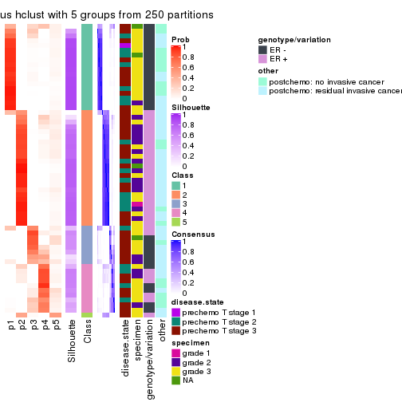
consensus_heatmap(res, k = 6)
Heatmaps for the membership of samples in all partitions to see how consistent they are:
membership_heatmap(res, k = 2)
membership_heatmap(res, k = 3)
membership_heatmap(res, k = 4)
membership_heatmap(res, k = 5)
membership_heatmap(res, k = 6)
As soon as we have had the classes for columns, we can look for signatures which are significantly different between classes which can be candidate marks for certain classes. Following are the heatmaps for signatures.
Signature heatmaps where rows are scaled:
get_signatures(res, k = 2)
get_signatures(res, k = 3)
get_signatures(res, k = 4)
get_signatures(res, k = 5)
get_signatures(res, k = 6)
Signature heatmaps where rows are not scaled:
get_signatures(res, k = 2, scale_rows = FALSE)
get_signatures(res, k = 3, scale_rows = FALSE)
get_signatures(res, k = 4, scale_rows = FALSE)
get_signatures(res, k = 5, scale_rows = FALSE)
get_signatures(res, k = 6, scale_rows = FALSE)
Compare the overlap of signatures from different k:
compare_signatures(res)

get_signature() returns a data frame invisibly. TO get the list of signatures, the function
call should be assigned to a variable explicitly. In following code, if plot argument is set
to FALSE, no heatmap is plotted while only the differential analysis is performed.
# code only for demonstration
tb = get_signature(res, k = ..., plot = FALSE)
An example of the output of tb is:
#> which_row fdr mean_1 mean_2 scaled_mean_1 scaled_mean_2 km
#> 1 38 0.042760348 8.373488 9.131774 -0.5533452 0.5164555 1
#> 2 40 0.018707592 7.106213 8.469186 -0.6173731 0.5762149 1
#> 3 55 0.019134737 10.221463 11.207825 -0.6159697 0.5749050 1
#> 4 59 0.006059896 5.921854 7.869574 -0.6899429 0.6439467 1
#> 5 60 0.018055526 8.928898 10.211722 -0.6204761 0.5791110 1
#> 6 98 0.009384629 15.714769 14.887706 0.6635654 -0.6193277 2
...
The columns in tb are:
which_row: row indices corresponding to the input matrix.fdr: FDR for the differential test. mean_x: The mean value in group x.scaled_mean_x: The mean value in group x after rows are scaled.km: Row groups if k-means clustering is applied to rows.UMAP plot which shows how samples are separated.
dimension_reduction(res, k = 2, method = "UMAP")
dimension_reduction(res, k = 3, method = "UMAP")
dimension_reduction(res, k = 4, method = "UMAP")
dimension_reduction(res, k = 5, method = "UMAP")
dimension_reduction(res, k = 6, method = "UMAP")
Following heatmap shows how subgroups are split when increasing k:
collect_classes(res)

Test correlation between subgroups and known annotations. If the known annotation is numeric, one-way ANOVA test is applied, and if the known annotation is discrete, chi-squared contingency table test is applied.
test_to_known_factors(res)
#> n disease.state(p) specimen(p) genotype/variation(p) other(p) k
#> MAD:hclust 42 0.418 0.4995 1.49e-02 1.0000 2
#> MAD:hclust 55 0.293 0.0484 1.15e-10 0.0383 3
#> MAD:hclust 54 0.547 0.0388 4.09e-09 0.0508 4
#> MAD:hclust 48 0.594 0.0334 1.29e-08 0.1392 5
#> MAD:hclust 44 0.364 0.0433 6.62e-09 0.0760 6
If matrix rows can be associated to genes, consider to use functional_enrichment(res,
...) to perform function enrichment for the signature genes. See this vignette for more detailed explanations.
The object with results only for a single top-value method and a single partition method can be extracted as:
res = res_list["MAD", "kmeans"]
# you can also extract it by
# res = res_list["MAD:kmeans"]
A summary of res and all the functions that can be applied to it:
res
#> A 'ConsensusPartition' object with k = 2, 3, 4, 5, 6.
#> On a matrix with 21168 rows and 61 columns.
#> Top rows (1000, 2000, 3000, 4000, 5000) are extracted by 'MAD' method.
#> Subgroups are detected by 'kmeans' method.
#> Performed in total 1250 partitions by row resampling.
#> Best k for subgroups seems to be 3.
#>
#> Following methods can be applied to this 'ConsensusPartition' object:
#> [1] "cola_report" "collect_classes" "collect_plots"
#> [4] "collect_stats" "colnames" "compare_signatures"
#> [7] "consensus_heatmap" "dimension_reduction" "functional_enrichment"
#> [10] "get_anno_col" "get_anno" "get_classes"
#> [13] "get_consensus" "get_matrix" "get_membership"
#> [16] "get_param" "get_signatures" "get_stats"
#> [19] "is_best_k" "is_stable_k" "membership_heatmap"
#> [22] "ncol" "nrow" "plot_ecdf"
#> [25] "rownames" "select_partition_number" "show"
#> [28] "suggest_best_k" "test_to_known_factors"
collect_plots() function collects all the plots made from res for all k (number of partitions)
into one single page to provide an easy and fast comparison between different k.
collect_plots(res)
The plots are:
k and the heatmap of
predicted classes for each k.k.k.k.All the plots in panels can be made by individual functions and they are plotted later in this section.
select_partition_number() produces several plots showing different
statistics for choosing “optimized” k. There are following statistics:
k;k, the area increased is defined as \(A_k - A_{k-1}\).The detailed explanations of these statistics can be found in the cola vignette.
Generally speaking, lower PAC score, higher mean silhouette score or higher
concordance corresponds to better partition. Rand index and Jaccard index
measure how similar the current partition is compared to partition with k-1.
If they are too similar, we won't accept k is better than k-1.
select_partition_number(res)
The numeric values for all these statistics can be obtained by get_stats().
get_stats(res)
#> k 1-PAC mean_silhouette concordance area_increased Rand Jaccard
#> 2 2 0.988 0.954 0.963 0.5031 0.492 0.492
#> 3 3 0.931 0.891 0.949 0.3073 0.803 0.617
#> 4 4 0.813 0.789 0.890 0.1164 0.887 0.685
#> 5 5 0.727 0.603 0.791 0.0663 0.972 0.893
#> 6 6 0.724 0.500 0.675 0.0481 0.928 0.727
suggest_best_k() suggests the best \(k\) based on these statistics. The rules are as follows:
suggest_best_k(res)
#> [1] 3
#> attr(,"optional")
#> [1] 2
There is also optional best \(k\) = 2 that is worth to check.
Following shows the table of the partitions (You need to click the show/hide
code output link to see it). The membership matrix (columns with name p*)
is inferred by
clue::cl_consensus()
function with the SE method. Basically the value in the membership matrix
represents the probability to belong to a certain group. The finall class
label for an item is determined with the group with highest probability it
belongs to.
In get_classes() function, the entropy is calculated from the membership
matrix and the silhouette score is calculated from the consensus matrix.
cbind(get_classes(res, k = 2), get_membership(res, k = 2))
#> class entropy silhouette p1 p2
#> GSM590886 1 0.430 0.952 0.912 0.088
#> GSM590859 2 0.000 0.980 0.000 1.000
#> GSM590864 1 0.430 0.952 0.912 0.088
#> GSM590844 2 0.000 0.980 0.000 1.000
#> GSM590878 2 0.000 0.980 0.000 1.000
#> GSM590841 2 0.430 0.915 0.088 0.912
#> GSM590843 2 0.000 0.980 0.000 1.000
#> GSM590895 2 0.000 0.980 0.000 1.000
#> GSM590897 2 0.000 0.980 0.000 1.000
#> GSM590842 1 0.343 0.951 0.936 0.064
#> GSM590869 1 0.563 0.833 0.868 0.132
#> GSM590874 1 0.430 0.952 0.912 0.088
#> GSM590889 1 0.430 0.952 0.912 0.088
#> GSM590851 1 0.430 0.952 0.912 0.088
#> GSM590873 1 0.430 0.952 0.912 0.088
#> GSM590898 2 0.430 0.915 0.088 0.912
#> GSM590882 1 0.000 0.942 1.000 0.000
#> GSM590849 1 0.000 0.942 1.000 0.000
#> GSM590892 2 0.000 0.980 0.000 1.000
#> GSM590900 2 0.000 0.980 0.000 1.000
#> GSM590896 1 0.430 0.952 0.912 0.088
#> GSM590870 1 0.000 0.942 1.000 0.000
#> GSM590853 1 0.000 0.942 1.000 0.000
#> GSM590884 1 0.000 0.942 1.000 0.000
#> GSM590847 2 0.000 0.980 0.000 1.000
#> GSM590857 2 0.000 0.980 0.000 1.000
#> GSM590865 2 0.000 0.980 0.000 1.000
#> GSM590872 2 0.118 0.971 0.016 0.984
#> GSM590883 2 0.000 0.980 0.000 1.000
#> GSM590887 2 0.118 0.971 0.016 0.984
#> GSM590888 2 0.000 0.980 0.000 1.000
#> GSM590891 2 0.000 0.980 0.000 1.000
#> GSM590899 2 0.430 0.915 0.088 0.912
#> GSM590848 1 0.430 0.952 0.912 0.088
#> GSM590850 1 0.430 0.952 0.912 0.088
#> GSM590855 1 0.430 0.952 0.912 0.088
#> GSM590860 1 0.000 0.942 1.000 0.000
#> GSM590890 1 0.430 0.952 0.912 0.088
#> GSM590894 1 0.430 0.952 0.912 0.088
#> GSM590852 1 0.000 0.942 1.000 0.000
#> GSM590858 1 0.430 0.952 0.912 0.088
#> GSM590862 1 0.402 0.952 0.920 0.080
#> GSM590867 1 0.278 0.918 0.952 0.048
#> GSM590871 1 0.000 0.942 1.000 0.000
#> GSM590877 1 0.430 0.952 0.912 0.088
#> GSM590879 1 0.430 0.952 0.912 0.088
#> GSM590880 1 0.000 0.942 1.000 0.000
#> GSM590845 2 0.689 0.825 0.184 0.816
#> GSM590846 2 0.000 0.980 0.000 1.000
#> GSM590875 2 0.430 0.915 0.088 0.912
#> GSM590881 2 0.000 0.980 0.000 1.000
#> GSM590854 2 0.000 0.980 0.000 1.000
#> GSM590856 2 0.000 0.980 0.000 1.000
#> GSM590861 1 0.000 0.942 1.000 0.000
#> GSM590863 2 0.000 0.980 0.000 1.000
#> GSM590866 2 0.000 0.980 0.000 1.000
#> GSM590876 2 0.000 0.980 0.000 1.000
#> GSM590893 2 0.118 0.971 0.016 0.984
#> GSM590885 1 0.000 0.942 1.000 0.000
#> GSM590840 1 0.000 0.942 1.000 0.000
#> GSM590868 2 0.000 0.980 0.000 1.000
cbind(get_classes(res, k = 3), get_membership(res, k = 3))
#> class entropy silhouette p1 p2 p3
#> GSM590886 1 0.0000 1.000 1.000 0.000 0.000
#> GSM590859 2 0.0000 0.949 0.000 1.000 0.000
#> GSM590864 1 0.0000 1.000 1.000 0.000 0.000
#> GSM590844 2 0.0000 0.949 0.000 1.000 0.000
#> GSM590878 2 0.0747 0.945 0.000 0.984 0.016
#> GSM590841 3 0.5397 0.533 0.000 0.280 0.720
#> GSM590843 2 0.0000 0.949 0.000 1.000 0.000
#> GSM590895 2 0.0000 0.949 0.000 1.000 0.000
#> GSM590897 2 0.0000 0.949 0.000 1.000 0.000
#> GSM590842 1 0.0000 1.000 1.000 0.000 0.000
#> GSM590869 3 0.0000 0.875 0.000 0.000 1.000
#> GSM590874 1 0.0000 1.000 1.000 0.000 0.000
#> GSM590889 1 0.0000 1.000 1.000 0.000 0.000
#> GSM590851 1 0.0000 1.000 1.000 0.000 0.000
#> GSM590873 1 0.0000 1.000 1.000 0.000 0.000
#> GSM590898 3 0.6309 -0.154 0.000 0.500 0.500
#> GSM590882 3 0.2066 0.893 0.060 0.000 0.940
#> GSM590849 3 0.3116 0.871 0.108 0.000 0.892
#> GSM590892 2 0.0000 0.949 0.000 1.000 0.000
#> GSM590900 2 0.0000 0.949 0.000 1.000 0.000
#> GSM590896 1 0.0000 1.000 1.000 0.000 0.000
#> GSM590870 3 0.0592 0.881 0.012 0.000 0.988
#> GSM590853 3 0.1753 0.893 0.048 0.000 0.952
#> GSM590884 3 0.4235 0.807 0.176 0.000 0.824
#> GSM590847 2 0.0592 0.946 0.000 0.988 0.012
#> GSM590857 2 0.0000 0.949 0.000 1.000 0.000
#> GSM590865 2 0.0237 0.948 0.000 0.996 0.004
#> GSM590872 2 0.1860 0.922 0.000 0.948 0.052
#> GSM590883 2 0.1529 0.929 0.000 0.960 0.040
#> GSM590887 2 0.2625 0.898 0.000 0.916 0.084
#> GSM590888 2 0.1643 0.928 0.000 0.956 0.044
#> GSM590891 2 0.0000 0.949 0.000 1.000 0.000
#> GSM590899 2 0.6302 0.140 0.000 0.520 0.480
#> GSM590848 1 0.0000 1.000 1.000 0.000 0.000
#> GSM590850 1 0.0000 1.000 1.000 0.000 0.000
#> GSM590855 1 0.0000 1.000 1.000 0.000 0.000
#> GSM590860 3 0.4235 0.807 0.176 0.000 0.824
#> GSM590890 1 0.0000 1.000 1.000 0.000 0.000
#> GSM590894 1 0.0000 1.000 1.000 0.000 0.000
#> GSM590852 3 0.2066 0.893 0.060 0.000 0.940
#> GSM590858 1 0.0000 1.000 1.000 0.000 0.000
#> GSM590862 1 0.0000 1.000 1.000 0.000 0.000
#> GSM590867 3 0.0424 0.879 0.008 0.000 0.992
#> GSM590871 3 0.2796 0.881 0.092 0.000 0.908
#> GSM590877 1 0.0000 1.000 1.000 0.000 0.000
#> GSM590879 1 0.0000 1.000 1.000 0.000 0.000
#> GSM590880 3 0.1753 0.893 0.048 0.000 0.952
#> GSM590845 3 0.0424 0.875 0.000 0.008 0.992
#> GSM590846 2 0.0000 0.949 0.000 1.000 0.000
#> GSM590875 2 0.6286 0.194 0.000 0.536 0.464
#> GSM590881 2 0.0592 0.946 0.000 0.988 0.012
#> GSM590854 2 0.0000 0.949 0.000 1.000 0.000
#> GSM590856 2 0.0592 0.946 0.000 0.988 0.012
#> GSM590861 3 0.2165 0.893 0.064 0.000 0.936
#> GSM590863 2 0.0000 0.949 0.000 1.000 0.000
#> GSM590866 2 0.0000 0.949 0.000 1.000 0.000
#> GSM590876 2 0.0592 0.946 0.000 0.988 0.012
#> GSM590893 2 0.2796 0.894 0.000 0.908 0.092
#> GSM590885 3 0.2356 0.891 0.072 0.000 0.928
#> GSM590840 3 0.2878 0.879 0.096 0.000 0.904
#> GSM590868 2 0.0000 0.949 0.000 1.000 0.000
cbind(get_classes(res, k = 4), get_membership(res, k = 4))
#> class entropy silhouette p1 p2 p3 p4
#> GSM590886 1 0.0895 0.9677 0.976 0.000 0.004 0.020
#> GSM590859 2 0.0336 0.9137 0.000 0.992 0.000 0.008
#> GSM590864 1 0.1584 0.9620 0.952 0.000 0.012 0.036
#> GSM590844 2 0.0000 0.9148 0.000 1.000 0.000 0.000
#> GSM590878 2 0.3172 0.8125 0.000 0.840 0.000 0.160
#> GSM590841 4 0.2670 0.6576 0.000 0.040 0.052 0.908
#> GSM590843 2 0.0000 0.9148 0.000 1.000 0.000 0.000
#> GSM590895 2 0.0000 0.9148 0.000 1.000 0.000 0.000
#> GSM590897 2 0.0000 0.9148 0.000 1.000 0.000 0.000
#> GSM590842 1 0.0779 0.9679 0.980 0.000 0.004 0.016
#> GSM590869 4 0.2149 0.6194 0.000 0.000 0.088 0.912
#> GSM590874 1 0.1004 0.9669 0.972 0.000 0.004 0.024
#> GSM590889 1 0.1004 0.9669 0.972 0.000 0.004 0.024
#> GSM590851 1 0.2546 0.9393 0.912 0.000 0.060 0.028
#> GSM590873 1 0.1388 0.9616 0.960 0.000 0.012 0.028
#> GSM590898 4 0.2450 0.6781 0.000 0.072 0.016 0.912
#> GSM590882 3 0.4808 0.7767 0.028 0.000 0.736 0.236
#> GSM590849 3 0.0817 0.8190 0.024 0.000 0.976 0.000
#> GSM590892 2 0.0469 0.9140 0.000 0.988 0.000 0.012
#> GSM590900 2 0.0592 0.9130 0.000 0.984 0.000 0.016
#> GSM590896 1 0.0895 0.9677 0.976 0.000 0.004 0.020
#> GSM590870 4 0.5147 -0.2288 0.004 0.000 0.460 0.536
#> GSM590853 3 0.4883 0.7287 0.016 0.000 0.696 0.288
#> GSM590884 3 0.4150 0.8198 0.056 0.000 0.824 0.120
#> GSM590847 2 0.2345 0.8623 0.000 0.900 0.000 0.100
#> GSM590857 2 0.0592 0.9130 0.000 0.984 0.000 0.016
#> GSM590865 2 0.1488 0.9008 0.000 0.956 0.012 0.032
#> GSM590872 4 0.5004 0.3396 0.000 0.392 0.004 0.604
#> GSM590883 2 0.5119 0.1338 0.000 0.556 0.004 0.440
#> GSM590887 4 0.5143 0.3648 0.000 0.360 0.012 0.628
#> GSM590888 2 0.5268 0.3478 0.000 0.592 0.012 0.396
#> GSM590891 2 0.0000 0.9148 0.000 1.000 0.000 0.000
#> GSM590899 4 0.2450 0.6781 0.000 0.072 0.016 0.912
#> GSM590848 1 0.2124 0.9515 0.932 0.000 0.040 0.028
#> GSM590850 1 0.0469 0.9677 0.988 0.000 0.000 0.012
#> GSM590855 1 0.2546 0.9393 0.912 0.000 0.060 0.028
#> GSM590860 3 0.1022 0.8129 0.032 0.000 0.968 0.000
#> GSM590890 1 0.0895 0.9677 0.976 0.000 0.004 0.020
#> GSM590894 1 0.0779 0.9679 0.980 0.000 0.004 0.016
#> GSM590852 3 0.4797 0.7558 0.020 0.000 0.720 0.260
#> GSM590858 1 0.2032 0.9534 0.936 0.000 0.036 0.028
#> GSM590862 1 0.1059 0.9670 0.972 0.000 0.012 0.016
#> GSM590867 4 0.4843 0.0995 0.000 0.000 0.396 0.604
#> GSM590871 3 0.1109 0.8244 0.028 0.000 0.968 0.004
#> GSM590877 1 0.0592 0.9676 0.984 0.000 0.000 0.016
#> GSM590879 1 0.1411 0.9623 0.960 0.000 0.020 0.020
#> GSM590880 3 0.3743 0.8130 0.016 0.000 0.824 0.160
#> GSM590845 4 0.4134 0.4116 0.000 0.000 0.260 0.740
#> GSM590846 2 0.0336 0.9142 0.000 0.992 0.000 0.008
#> GSM590875 4 0.2450 0.6781 0.000 0.072 0.016 0.912
#> GSM590881 2 0.2704 0.8482 0.000 0.876 0.000 0.124
#> GSM590854 2 0.0000 0.9148 0.000 1.000 0.000 0.000
#> GSM590856 2 0.2345 0.8623 0.000 0.900 0.000 0.100
#> GSM590861 3 0.0804 0.8225 0.012 0.000 0.980 0.008
#> GSM590863 2 0.0707 0.9117 0.000 0.980 0.000 0.020
#> GSM590866 2 0.1388 0.8998 0.000 0.960 0.012 0.028
#> GSM590876 2 0.2760 0.8548 0.000 0.872 0.000 0.128
#> GSM590893 4 0.4605 0.4221 0.000 0.336 0.000 0.664
#> GSM590885 3 0.5917 0.6703 0.056 0.000 0.624 0.320
#> GSM590840 3 0.0469 0.8187 0.012 0.000 0.988 0.000
#> GSM590868 2 0.0000 0.9148 0.000 1.000 0.000 0.000
cbind(get_classes(res, k = 5), get_membership(res, k = 5))
#> class entropy silhouette p1 p2 p3 p4 p5
#> GSM590886 1 0.0510 0.8600 0.984 0.000 0.000 0.000 0.016
#> GSM590859 2 0.1671 0.7805 0.000 0.924 0.000 0.000 0.076
#> GSM590864 1 0.4142 0.8370 0.684 0.000 0.004 0.004 0.308
#> GSM590844 2 0.0000 0.7963 0.000 1.000 0.000 0.000 0.000
#> GSM590878 2 0.6003 0.3350 0.000 0.584 0.000 0.192 0.224
#> GSM590841 4 0.2937 0.5140 0.000 0.016 0.040 0.884 0.060
#> GSM590843 2 0.0703 0.7940 0.000 0.976 0.000 0.000 0.024
#> GSM590895 2 0.0703 0.7959 0.000 0.976 0.000 0.000 0.024
#> GSM590897 2 0.0963 0.7920 0.000 0.964 0.000 0.000 0.036
#> GSM590842 1 0.0162 0.8619 0.996 0.000 0.000 0.004 0.000
#> GSM590869 4 0.2331 0.5208 0.000 0.000 0.080 0.900 0.020
#> GSM590874 1 0.0794 0.8599 0.972 0.000 0.000 0.000 0.028
#> GSM590889 1 0.1282 0.8622 0.952 0.000 0.000 0.004 0.044
#> GSM590851 1 0.4973 0.7982 0.632 0.000 0.048 0.000 0.320
#> GSM590873 1 0.3885 0.8427 0.724 0.000 0.008 0.000 0.268
#> GSM590898 4 0.0960 0.5141 0.000 0.016 0.008 0.972 0.004
#> GSM590882 3 0.4879 0.6619 0.016 0.000 0.720 0.212 0.052
#> GSM590849 3 0.2563 0.7462 0.008 0.000 0.872 0.000 0.120
#> GSM590892 2 0.1908 0.7852 0.000 0.908 0.000 0.000 0.092
#> GSM590900 2 0.2377 0.7629 0.000 0.872 0.000 0.000 0.128
#> GSM590896 1 0.0000 0.8620 1.000 0.000 0.000 0.000 0.000
#> GSM590870 4 0.5459 -0.2074 0.000 0.000 0.468 0.472 0.060
#> GSM590853 3 0.4121 0.6445 0.004 0.000 0.720 0.264 0.012
#> GSM590884 3 0.3782 0.7466 0.056 0.000 0.836 0.084 0.024
#> GSM590847 2 0.3575 0.6912 0.000 0.824 0.000 0.120 0.056
#> GSM590857 2 0.2377 0.7644 0.000 0.872 0.000 0.000 0.128
#> GSM590865 2 0.4482 0.3832 0.000 0.612 0.000 0.012 0.376
#> GSM590872 4 0.5700 -0.2176 0.000 0.176 0.000 0.628 0.196
#> GSM590883 4 0.6800 -0.8507 0.000 0.292 0.000 0.364 0.344
#> GSM590887 4 0.5888 -0.3470 0.000 0.140 0.000 0.580 0.280
#> GSM590888 5 0.6680 0.0000 0.000 0.240 0.000 0.348 0.412
#> GSM590891 2 0.0963 0.7920 0.000 0.964 0.000 0.000 0.036
#> GSM590899 4 0.1087 0.5160 0.000 0.016 0.008 0.968 0.008
#> GSM590848 1 0.4623 0.8162 0.664 0.000 0.032 0.000 0.304
#> GSM590850 1 0.3010 0.8654 0.824 0.000 0.000 0.004 0.172
#> GSM590855 1 0.4973 0.7982 0.632 0.000 0.048 0.000 0.320
#> GSM590860 3 0.2929 0.7338 0.008 0.000 0.840 0.000 0.152
#> GSM590890 1 0.0609 0.8655 0.980 0.000 0.000 0.000 0.020
#> GSM590894 1 0.0162 0.8619 0.996 0.000 0.000 0.004 0.000
#> GSM590852 3 0.4756 0.6314 0.004 0.000 0.704 0.240 0.052
#> GSM590858 1 0.4503 0.8257 0.664 0.000 0.024 0.000 0.312
#> GSM590862 1 0.1605 0.8670 0.944 0.000 0.012 0.004 0.040
#> GSM590867 4 0.6275 0.0998 0.000 0.000 0.364 0.480 0.156
#> GSM590871 3 0.2172 0.7599 0.016 0.000 0.908 0.000 0.076
#> GSM590877 1 0.3010 0.8652 0.824 0.000 0.000 0.004 0.172
#> GSM590879 1 0.3877 0.8513 0.764 0.000 0.024 0.000 0.212
#> GSM590880 3 0.2672 0.7412 0.004 0.000 0.872 0.116 0.008
#> GSM590845 4 0.5844 0.3681 0.000 0.000 0.244 0.600 0.156
#> GSM590846 2 0.1410 0.7904 0.000 0.940 0.000 0.000 0.060
#> GSM590875 4 0.1087 0.5160 0.000 0.016 0.008 0.968 0.008
#> GSM590881 2 0.4764 0.6285 0.000 0.732 0.000 0.140 0.128
#> GSM590854 2 0.0510 0.7945 0.000 0.984 0.000 0.000 0.016
#> GSM590856 2 0.3575 0.6912 0.000 0.824 0.000 0.120 0.056
#> GSM590861 3 0.1952 0.7599 0.000 0.000 0.912 0.004 0.084
#> GSM590863 2 0.2338 0.7699 0.000 0.884 0.000 0.004 0.112
#> GSM590866 2 0.4630 0.1864 0.000 0.588 0.000 0.016 0.396
#> GSM590876 2 0.6012 0.2591 0.000 0.536 0.000 0.132 0.332
#> GSM590893 4 0.4636 -0.0020 0.000 0.132 0.000 0.744 0.124
#> GSM590885 3 0.7257 0.4271 0.200 0.000 0.500 0.248 0.052
#> GSM590840 3 0.2929 0.7338 0.008 0.000 0.840 0.000 0.152
#> GSM590868 2 0.0703 0.7944 0.000 0.976 0.000 0.000 0.024
cbind(get_classes(res, k = 6), get_membership(res, k = 6))
#> class entropy silhouette p1 p2 p3 p4 p5 p6
#> GSM590886 6 0.4128 -0.7610 0.492 0.000 0.004 0.000 0.004 0.500
#> GSM590859 2 0.3227 0.6760 0.000 0.824 0.000 0.000 0.060 0.116
#> GSM590864 1 0.2231 0.6723 0.900 0.000 0.000 0.004 0.028 0.068
#> GSM590844 2 0.1391 0.7276 0.000 0.944 0.000 0.000 0.016 0.040
#> GSM590878 2 0.7458 -0.1575 0.000 0.348 0.000 0.288 0.140 0.224
#> GSM590841 4 0.3065 0.6073 0.000 0.008 0.104 0.852 0.028 0.008
#> GSM590843 2 0.0665 0.7239 0.000 0.980 0.000 0.008 0.008 0.004
#> GSM590895 2 0.0260 0.7257 0.000 0.992 0.000 0.008 0.000 0.000
#> GSM590897 2 0.0665 0.7231 0.000 0.980 0.000 0.008 0.004 0.008
#> GSM590842 1 0.3982 0.6458 0.536 0.000 0.004 0.000 0.000 0.460
#> GSM590869 4 0.2538 0.5892 0.000 0.000 0.124 0.860 0.000 0.016
#> GSM590874 1 0.4227 0.6315 0.500 0.000 0.000 0.004 0.008 0.488
#> GSM590889 1 0.4465 0.6355 0.504 0.000 0.000 0.004 0.020 0.472
#> GSM590851 1 0.1333 0.6546 0.944 0.000 0.008 0.000 0.048 0.000
#> GSM590873 1 0.0458 0.6859 0.984 0.000 0.000 0.000 0.000 0.016
#> GSM590898 4 0.0508 0.6637 0.000 0.004 0.012 0.984 0.000 0.000
#> GSM590882 3 0.1970 0.6029 0.000 0.000 0.900 0.092 0.008 0.000
#> GSM590849 3 0.4089 0.5803 0.008 0.000 0.524 0.000 0.468 0.000
#> GSM590892 2 0.3695 0.6653 0.000 0.772 0.000 0.004 0.040 0.184
#> GSM590900 2 0.4465 0.6031 0.000 0.704 0.000 0.004 0.080 0.212
#> GSM590896 1 0.3843 0.6510 0.548 0.000 0.000 0.000 0.000 0.452
#> GSM590870 3 0.3668 0.3761 0.000 0.000 0.668 0.328 0.000 0.004
#> GSM590853 3 0.5447 0.5520 0.000 0.000 0.612 0.252 0.116 0.020
#> GSM590884 3 0.3789 0.6381 0.008 0.000 0.800 0.012 0.136 0.044
#> GSM590847 2 0.4763 0.5075 0.000 0.728 0.000 0.148 0.044 0.080
#> GSM590857 2 0.4411 0.6146 0.000 0.712 0.000 0.004 0.080 0.204
#> GSM590865 6 0.6258 -0.4747 0.000 0.268 0.000 0.008 0.316 0.408
#> GSM590872 4 0.5875 0.3659 0.000 0.124 0.000 0.628 0.168 0.080
#> GSM590883 4 0.7497 -0.4797 0.000 0.132 0.000 0.300 0.276 0.292
#> GSM590887 4 0.6704 0.0809 0.000 0.072 0.008 0.504 0.280 0.136
#> GSM590888 5 0.7278 0.1793 0.000 0.092 0.004 0.280 0.392 0.232
#> GSM590891 2 0.0976 0.7203 0.000 0.968 0.000 0.008 0.016 0.008
#> GSM590899 4 0.0603 0.6642 0.000 0.004 0.016 0.980 0.000 0.000
#> GSM590848 1 0.1196 0.6637 0.952 0.000 0.000 0.000 0.040 0.008
#> GSM590850 1 0.3956 0.6947 0.684 0.000 0.000 0.000 0.024 0.292
#> GSM590855 1 0.1333 0.6546 0.944 0.000 0.008 0.000 0.048 0.000
#> GSM590860 3 0.4338 0.5665 0.020 0.000 0.492 0.000 0.488 0.000
#> GSM590890 1 0.4098 0.6548 0.548 0.000 0.000 0.004 0.004 0.444
#> GSM590894 1 0.3982 0.6458 0.536 0.000 0.004 0.000 0.000 0.460
#> GSM590852 3 0.2048 0.5904 0.000 0.000 0.880 0.120 0.000 0.000
#> GSM590858 1 0.0820 0.6770 0.972 0.000 0.000 0.000 0.012 0.016
#> GSM590862 1 0.4591 0.6744 0.592 0.000 0.020 0.000 0.016 0.372
#> GSM590867 3 0.5593 0.3320 0.000 0.000 0.612 0.220 0.144 0.024
#> GSM590871 3 0.3828 0.5960 0.000 0.000 0.560 0.000 0.440 0.000
#> GSM590877 1 0.4310 0.6910 0.684 0.000 0.000 0.004 0.044 0.268
#> GSM590879 1 0.1958 0.6981 0.896 0.000 0.000 0.000 0.004 0.100
#> GSM590880 3 0.3101 0.6411 0.000 0.000 0.832 0.012 0.136 0.020
#> GSM590845 3 0.5912 0.1790 0.000 0.000 0.524 0.312 0.144 0.020
#> GSM590846 2 0.3459 0.6780 0.000 0.792 0.000 0.004 0.032 0.172
#> GSM590875 4 0.0603 0.6642 0.000 0.004 0.016 0.980 0.000 0.000
#> GSM590881 2 0.6708 0.3293 0.000 0.512 0.000 0.180 0.092 0.216
#> GSM590854 2 0.0692 0.7262 0.000 0.976 0.000 0.000 0.004 0.020
#> GSM590856 2 0.4763 0.5075 0.000 0.728 0.000 0.148 0.044 0.080
#> GSM590861 3 0.3804 0.5999 0.000 0.000 0.576 0.000 0.424 0.000
#> GSM590863 2 0.4509 0.6154 0.000 0.712 0.000 0.004 0.104 0.180
#> GSM590866 5 0.6055 0.2922 0.000 0.384 0.000 0.004 0.400 0.212
#> GSM590876 6 0.7280 -0.4012 0.000 0.220 0.000 0.112 0.288 0.380
#> GSM590893 4 0.4524 0.4890 0.000 0.060 0.000 0.756 0.120 0.064
#> GSM590885 3 0.4905 0.4679 0.012 0.000 0.672 0.076 0.004 0.236
#> GSM590840 3 0.4185 0.5695 0.012 0.000 0.496 0.000 0.492 0.000
#> GSM590868 2 0.0520 0.7246 0.000 0.984 0.000 0.008 0.008 0.000
Heatmaps for the consensus matrix. It visualizes the probability of two samples to be in a same group.
consensus_heatmap(res, k = 2)
consensus_heatmap(res, k = 3)
consensus_heatmap(res, k = 4)
consensus_heatmap(res, k = 5)
consensus_heatmap(res, k = 6)
Heatmaps for the membership of samples in all partitions to see how consistent they are:
membership_heatmap(res, k = 2)
membership_heatmap(res, k = 3)

membership_heatmap(res, k = 4)
membership_heatmap(res, k = 5)
membership_heatmap(res, k = 6)
As soon as we have had the classes for columns, we can look for signatures which are significantly different between classes which can be candidate marks for certain classes. Following are the heatmaps for signatures.
Signature heatmaps where rows are scaled:
get_signatures(res, k = 2)
get_signatures(res, k = 3)
get_signatures(res, k = 4)
get_signatures(res, k = 5)
get_signatures(res, k = 6)

Signature heatmaps where rows are not scaled:
get_signatures(res, k = 2, scale_rows = FALSE)
get_signatures(res, k = 3, scale_rows = FALSE)
get_signatures(res, k = 4, scale_rows = FALSE)
get_signatures(res, k = 5, scale_rows = FALSE)
get_signatures(res, k = 6, scale_rows = FALSE)
Compare the overlap of signatures from different k:
compare_signatures(res)
get_signature() returns a data frame invisibly. TO get the list of signatures, the function
call should be assigned to a variable explicitly. In following code, if plot argument is set
to FALSE, no heatmap is plotted while only the differential analysis is performed.
# code only for demonstration
tb = get_signature(res, k = ..., plot = FALSE)
An example of the output of tb is:
#> which_row fdr mean_1 mean_2 scaled_mean_1 scaled_mean_2 km
#> 1 38 0.042760348 8.373488 9.131774 -0.5533452 0.5164555 1
#> 2 40 0.018707592 7.106213 8.469186 -0.6173731 0.5762149 1
#> 3 55 0.019134737 10.221463 11.207825 -0.6159697 0.5749050 1
#> 4 59 0.006059896 5.921854 7.869574 -0.6899429 0.6439467 1
#> 5 60 0.018055526 8.928898 10.211722 -0.6204761 0.5791110 1
#> 6 98 0.009384629 15.714769 14.887706 0.6635654 -0.6193277 2
...
The columns in tb are:
which_row: row indices corresponding to the input matrix.fdr: FDR for the differential test. mean_x: The mean value in group x.scaled_mean_x: The mean value in group x after rows are scaled.km: Row groups if k-means clustering is applied to rows.UMAP plot which shows how samples are separated.
dimension_reduction(res, k = 2, method = "UMAP")
dimension_reduction(res, k = 3, method = "UMAP")
dimension_reduction(res, k = 4, method = "UMAP")
dimension_reduction(res, k = 5, method = "UMAP")
dimension_reduction(res, k = 6, method = "UMAP")
Following heatmap shows how subgroups are split when increasing k:
collect_classes(res)

Test correlation between subgroups and known annotations. If the known annotation is numeric, one-way ANOVA test is applied, and if the known annotation is discrete, chi-squared contingency table test is applied.
test_to_known_factors(res)
#> n disease.state(p) specimen(p) genotype/variation(p) other(p) k
#> MAD:kmeans 61 0.611 0.00878 5.95e-11 0.0688 2
#> MAD:kmeans 58 0.444 0.03588 2.48e-10 0.0389 3
#> MAD:kmeans 53 0.505 0.18332 1.38e-08 0.1895 4
#> MAD:kmeans 48 0.597 0.32496 1.40e-07 0.1465 5
#> MAD:kmeans 46 0.422 0.29835 3.73e-07 0.0588 6
If matrix rows can be associated to genes, consider to use functional_enrichment(res,
...) to perform function enrichment for the signature genes. See this vignette for more detailed explanations.
The object with results only for a single top-value method and a single partition method can be extracted as:
res = res_list["MAD", "skmeans"]
# you can also extract it by
# res = res_list["MAD:skmeans"]
A summary of res and all the functions that can be applied to it:
res
#> A 'ConsensusPartition' object with k = 2, 3, 4, 5, 6.
#> On a matrix with 21168 rows and 61 columns.
#> Top rows (1000, 2000, 3000, 4000, 5000) are extracted by 'MAD' method.
#> Subgroups are detected by 'skmeans' method.
#> Performed in total 1250 partitions by row resampling.
#> Best k for subgroups seems to be 3.
#>
#> Following methods can be applied to this 'ConsensusPartition' object:
#> [1] "cola_report" "collect_classes" "collect_plots"
#> [4] "collect_stats" "colnames" "compare_signatures"
#> [7] "consensus_heatmap" "dimension_reduction" "functional_enrichment"
#> [10] "get_anno_col" "get_anno" "get_classes"
#> [13] "get_consensus" "get_matrix" "get_membership"
#> [16] "get_param" "get_signatures" "get_stats"
#> [19] "is_best_k" "is_stable_k" "membership_heatmap"
#> [22] "ncol" "nrow" "plot_ecdf"
#> [25] "rownames" "select_partition_number" "show"
#> [28] "suggest_best_k" "test_to_known_factors"
collect_plots() function collects all the plots made from res for all k (number of partitions)
into one single page to provide an easy and fast comparison between different k.
collect_plots(res)
The plots are:
k and the heatmap of
predicted classes for each k.k.k.k.All the plots in panels can be made by individual functions and they are plotted later in this section.
select_partition_number() produces several plots showing different
statistics for choosing “optimized” k. There are following statistics:
k;k, the area increased is defined as \(A_k - A_{k-1}\).The detailed explanations of these statistics can be found in the cola vignette.
Generally speaking, lower PAC score, higher mean silhouette score or higher
concordance corresponds to better partition. Rand index and Jaccard index
measure how similar the current partition is compared to partition with k-1.
If they are too similar, we won't accept k is better than k-1.
select_partition_number(res)
The numeric values for all these statistics can be obtained by get_stats().
get_stats(res)
#> k 1-PAC mean_silhouette concordance area_increased Rand Jaccard
#> 2 2 1.000 0.995 0.998 0.5087 0.492 0.492
#> 3 3 0.956 0.963 0.979 0.3105 0.763 0.554
#> 4 4 0.758 0.797 0.887 0.1226 0.917 0.757
#> 5 5 0.655 0.696 0.782 0.0597 0.969 0.888
#> 6 6 0.630 0.425 0.682 0.0411 0.929 0.730
suggest_best_k() suggests the best \(k\) based on these statistics. The rules are as follows:
suggest_best_k(res)
#> [1] 3
#> attr(,"optional")
#> [1] 2
There is also optional best \(k\) = 2 that is worth to check.
Following shows the table of the partitions (You need to click the show/hide
code output link to see it). The membership matrix (columns with name p*)
is inferred by
clue::cl_consensus()
function with the SE method. Basically the value in the membership matrix
represents the probability to belong to a certain group. The finall class
label for an item is determined with the group with highest probability it
belongs to.
In get_classes() function, the entropy is calculated from the membership
matrix and the silhouette score is calculated from the consensus matrix.
cbind(get_classes(res, k = 2), get_membership(res, k = 2))
#> class entropy silhouette p1 p2
#> GSM590886 1 0.0000 0.995 1.000 0.000
#> GSM590859 2 0.0000 1.000 0.000 1.000
#> GSM590864 1 0.0000 0.995 1.000 0.000
#> GSM590844 2 0.0000 1.000 0.000 1.000
#> GSM590878 2 0.0000 1.000 0.000 1.000
#> GSM590841 2 0.0000 1.000 0.000 1.000
#> GSM590843 2 0.0000 1.000 0.000 1.000
#> GSM590895 2 0.0000 1.000 0.000 1.000
#> GSM590897 2 0.0000 1.000 0.000 1.000
#> GSM590842 1 0.0000 0.995 1.000 0.000
#> GSM590869 1 0.5737 0.843 0.864 0.136
#> GSM590874 1 0.0000 0.995 1.000 0.000
#> GSM590889 1 0.0000 0.995 1.000 0.000
#> GSM590851 1 0.0000 0.995 1.000 0.000
#> GSM590873 1 0.0000 0.995 1.000 0.000
#> GSM590898 2 0.0000 1.000 0.000 1.000
#> GSM590882 1 0.0000 0.995 1.000 0.000
#> GSM590849 1 0.0000 0.995 1.000 0.000
#> GSM590892 2 0.0000 1.000 0.000 1.000
#> GSM590900 2 0.0000 1.000 0.000 1.000
#> GSM590896 1 0.0000 0.995 1.000 0.000
#> GSM590870 1 0.0000 0.995 1.000 0.000
#> GSM590853 1 0.0000 0.995 1.000 0.000
#> GSM590884 1 0.0000 0.995 1.000 0.000
#> GSM590847 2 0.0000 1.000 0.000 1.000
#> GSM590857 2 0.0000 1.000 0.000 1.000
#> GSM590865 2 0.0000 1.000 0.000 1.000
#> GSM590872 2 0.0000 1.000 0.000 1.000
#> GSM590883 2 0.0000 1.000 0.000 1.000
#> GSM590887 2 0.0000 1.000 0.000 1.000
#> GSM590888 2 0.0000 1.000 0.000 1.000
#> GSM590891 2 0.0000 1.000 0.000 1.000
#> GSM590899 2 0.0000 1.000 0.000 1.000
#> GSM590848 1 0.0000 0.995 1.000 0.000
#> GSM590850 1 0.0000 0.995 1.000 0.000
#> GSM590855 1 0.0000 0.995 1.000 0.000
#> GSM590860 1 0.0000 0.995 1.000 0.000
#> GSM590890 1 0.0000 0.995 1.000 0.000
#> GSM590894 1 0.0000 0.995 1.000 0.000
#> GSM590852 1 0.0000 0.995 1.000 0.000
#> GSM590858 1 0.0000 0.995 1.000 0.000
#> GSM590862 1 0.0000 0.995 1.000 0.000
#> GSM590867 1 0.0672 0.988 0.992 0.008
#> GSM590871 1 0.0000 0.995 1.000 0.000
#> GSM590877 1 0.0000 0.995 1.000 0.000
#> GSM590879 1 0.0000 0.995 1.000 0.000
#> GSM590880 1 0.0000 0.995 1.000 0.000
#> GSM590845 2 0.0376 0.996 0.004 0.996
#> GSM590846 2 0.0000 1.000 0.000 1.000
#> GSM590875 2 0.0000 1.000 0.000 1.000
#> GSM590881 2 0.0000 1.000 0.000 1.000
#> GSM590854 2 0.0000 1.000 0.000 1.000
#> GSM590856 2 0.0000 1.000 0.000 1.000
#> GSM590861 1 0.0000 0.995 1.000 0.000
#> GSM590863 2 0.0000 1.000 0.000 1.000
#> GSM590866 2 0.0000 1.000 0.000 1.000
#> GSM590876 2 0.0000 1.000 0.000 1.000
#> GSM590893 2 0.0000 1.000 0.000 1.000
#> GSM590885 1 0.0000 0.995 1.000 0.000
#> GSM590840 1 0.0000 0.995 1.000 0.000
#> GSM590868 2 0.0000 1.000 0.000 1.000
cbind(get_classes(res, k = 3), get_membership(res, k = 3))
#> class entropy silhouette p1 p2 p3
#> GSM590886 1 0.0237 0.996 0.996 0.000 0.004
#> GSM590859 2 0.0000 0.996 0.000 1.000 0.000
#> GSM590864 1 0.0000 1.000 1.000 0.000 0.000
#> GSM590844 2 0.0000 0.996 0.000 1.000 0.000
#> GSM590878 2 0.0000 0.996 0.000 1.000 0.000
#> GSM590841 3 0.1643 0.914 0.000 0.044 0.956
#> GSM590843 2 0.0000 0.996 0.000 1.000 0.000
#> GSM590895 2 0.0000 0.996 0.000 1.000 0.000
#> GSM590897 2 0.0000 0.996 0.000 1.000 0.000
#> GSM590842 1 0.0000 1.000 1.000 0.000 0.000
#> GSM590869 3 0.0000 0.933 0.000 0.000 1.000
#> GSM590874 1 0.0000 1.000 1.000 0.000 0.000
#> GSM590889 1 0.0000 1.000 1.000 0.000 0.000
#> GSM590851 1 0.0000 1.000 1.000 0.000 0.000
#> GSM590873 1 0.0000 1.000 1.000 0.000 0.000
#> GSM590898 3 0.2537 0.890 0.000 0.080 0.920
#> GSM590882 3 0.0237 0.933 0.004 0.000 0.996
#> GSM590849 3 0.4002 0.822 0.160 0.000 0.840
#> GSM590892 2 0.0000 0.996 0.000 1.000 0.000
#> GSM590900 2 0.0000 0.996 0.000 1.000 0.000
#> GSM590896 1 0.0000 1.000 1.000 0.000 0.000
#> GSM590870 3 0.0000 0.933 0.000 0.000 1.000
#> GSM590853 3 0.0000 0.933 0.000 0.000 1.000
#> GSM590884 3 0.4702 0.762 0.212 0.000 0.788
#> GSM590847 2 0.0000 0.996 0.000 1.000 0.000
#> GSM590857 2 0.0000 0.996 0.000 1.000 0.000
#> GSM590865 2 0.0000 0.996 0.000 1.000 0.000
#> GSM590872 2 0.0592 0.988 0.000 0.988 0.012
#> GSM590883 2 0.0000 0.996 0.000 1.000 0.000
#> GSM590887 2 0.1643 0.958 0.000 0.956 0.044
#> GSM590888 2 0.0424 0.991 0.000 0.992 0.008
#> GSM590891 2 0.0000 0.996 0.000 1.000 0.000
#> GSM590899 3 0.3038 0.870 0.000 0.104 0.896
#> GSM590848 1 0.0000 1.000 1.000 0.000 0.000
#> GSM590850 1 0.0000 1.000 1.000 0.000 0.000
#> GSM590855 1 0.0000 1.000 1.000 0.000 0.000
#> GSM590860 3 0.5098 0.709 0.248 0.000 0.752
#> GSM590890 1 0.0000 1.000 1.000 0.000 0.000
#> GSM590894 1 0.0000 1.000 1.000 0.000 0.000
#> GSM590852 3 0.0237 0.933 0.004 0.000 0.996
#> GSM590858 1 0.0000 1.000 1.000 0.000 0.000
#> GSM590862 1 0.0000 1.000 1.000 0.000 0.000
#> GSM590867 3 0.0000 0.933 0.000 0.000 1.000
#> GSM590871 3 0.0592 0.931 0.012 0.000 0.988
#> GSM590877 1 0.0000 1.000 1.000 0.000 0.000
#> GSM590879 1 0.0000 1.000 1.000 0.000 0.000
#> GSM590880 3 0.0000 0.933 0.000 0.000 1.000
#> GSM590845 3 0.0000 0.933 0.000 0.000 1.000
#> GSM590846 2 0.0000 0.996 0.000 1.000 0.000
#> GSM590875 3 0.4399 0.776 0.000 0.188 0.812
#> GSM590881 2 0.0000 0.996 0.000 1.000 0.000
#> GSM590854 2 0.0000 0.996 0.000 1.000 0.000
#> GSM590856 2 0.0000 0.996 0.000 1.000 0.000
#> GSM590861 3 0.0424 0.932 0.008 0.000 0.992
#> GSM590863 2 0.0000 0.996 0.000 1.000 0.000
#> GSM590866 2 0.0000 0.996 0.000 1.000 0.000
#> GSM590876 2 0.0424 0.990 0.008 0.992 0.000
#> GSM590893 2 0.1031 0.977 0.000 0.976 0.024
#> GSM590885 3 0.1643 0.918 0.044 0.000 0.956
#> GSM590840 3 0.1643 0.917 0.044 0.000 0.956
#> GSM590868 2 0.0000 0.996 0.000 1.000 0.000
cbind(get_classes(res, k = 4), get_membership(res, k = 4))
#> class entropy silhouette p1 p2 p3 p4
#> GSM590886 1 0.1411 0.9405 0.960 0.000 0.020 0.020
#> GSM590859 2 0.0707 0.8482 0.000 0.980 0.000 0.020
#> GSM590864 1 0.0817 0.9473 0.976 0.000 0.024 0.000
#> GSM590844 2 0.0188 0.8479 0.000 0.996 0.000 0.004
#> GSM590878 2 0.4941 0.3778 0.000 0.564 0.000 0.436
#> GSM590841 4 0.3716 0.7939 0.000 0.052 0.096 0.852
#> GSM590843 2 0.1474 0.8411 0.000 0.948 0.000 0.052
#> GSM590895 2 0.0336 0.8485 0.000 0.992 0.000 0.008
#> GSM590897 2 0.0592 0.8484 0.000 0.984 0.000 0.016
#> GSM590842 1 0.2048 0.9336 0.928 0.000 0.064 0.008
#> GSM590869 4 0.3801 0.6122 0.000 0.000 0.220 0.780
#> GSM590874 1 0.0469 0.9457 0.988 0.000 0.000 0.012
#> GSM590889 1 0.0657 0.9460 0.984 0.000 0.004 0.012
#> GSM590851 1 0.2814 0.9010 0.868 0.000 0.132 0.000
#> GSM590873 1 0.0188 0.9467 0.996 0.000 0.004 0.000
#> GSM590898 4 0.1004 0.8362 0.000 0.004 0.024 0.972
#> GSM590882 3 0.2401 0.8535 0.004 0.000 0.904 0.092
#> GSM590849 3 0.0336 0.8513 0.008 0.000 0.992 0.000
#> GSM590892 2 0.1474 0.8401 0.000 0.948 0.000 0.052
#> GSM590900 2 0.0707 0.8459 0.000 0.980 0.000 0.020
#> GSM590896 1 0.0469 0.9457 0.988 0.000 0.000 0.012
#> GSM590870 3 0.4585 0.6338 0.000 0.000 0.668 0.332
#> GSM590853 3 0.3444 0.8063 0.000 0.000 0.816 0.184
#> GSM590884 3 0.2635 0.8184 0.076 0.000 0.904 0.020
#> GSM590847 2 0.4193 0.6838 0.000 0.732 0.000 0.268
#> GSM590857 2 0.0336 0.8464 0.000 0.992 0.000 0.008
#> GSM590865 2 0.2384 0.8258 0.008 0.916 0.004 0.072
#> GSM590872 4 0.3975 0.6781 0.000 0.240 0.000 0.760
#> GSM590883 2 0.5151 0.0807 0.000 0.532 0.004 0.464
#> GSM590887 4 0.3975 0.6670 0.000 0.240 0.000 0.760
#> GSM590888 2 0.5168 0.0877 0.004 0.504 0.000 0.492
#> GSM590891 2 0.0707 0.8482 0.000 0.980 0.000 0.020
#> GSM590899 4 0.1356 0.8372 0.000 0.008 0.032 0.960
#> GSM590848 1 0.2216 0.9258 0.908 0.000 0.092 0.000
#> GSM590850 1 0.1209 0.9464 0.964 0.000 0.032 0.004
#> GSM590855 1 0.3311 0.8553 0.828 0.000 0.172 0.000
#> GSM590860 3 0.0592 0.8485 0.016 0.000 0.984 0.000
#> GSM590890 1 0.0336 0.9460 0.992 0.000 0.000 0.008
#> GSM590894 1 0.0336 0.9460 0.992 0.000 0.000 0.008
#> GSM590852 3 0.2647 0.8412 0.000 0.000 0.880 0.120
#> GSM590858 1 0.1792 0.9370 0.932 0.000 0.068 0.000
#> GSM590862 1 0.3870 0.7803 0.788 0.000 0.208 0.004
#> GSM590867 3 0.4072 0.7458 0.000 0.000 0.748 0.252
#> GSM590871 3 0.0336 0.8552 0.000 0.000 0.992 0.008
#> GSM590877 1 0.0524 0.9469 0.988 0.000 0.008 0.004
#> GSM590879 1 0.1867 0.9362 0.928 0.000 0.072 0.000
#> GSM590880 3 0.1940 0.8548 0.000 0.000 0.924 0.076
#> GSM590845 3 0.4925 0.4431 0.000 0.000 0.572 0.428
#> GSM590846 2 0.0592 0.8492 0.000 0.984 0.000 0.016
#> GSM590875 4 0.1256 0.8383 0.000 0.008 0.028 0.964
#> GSM590881 2 0.4543 0.6117 0.000 0.676 0.000 0.324
#> GSM590854 2 0.0188 0.8476 0.000 0.996 0.000 0.004
#> GSM590856 2 0.4134 0.6910 0.000 0.740 0.000 0.260
#> GSM590861 3 0.0592 0.8565 0.000 0.000 0.984 0.016
#> GSM590863 2 0.0336 0.8473 0.000 0.992 0.000 0.008
#> GSM590866 2 0.2919 0.8052 0.000 0.896 0.044 0.060
#> GSM590876 2 0.6101 0.6156 0.076 0.672 0.008 0.244
#> GSM590893 4 0.1867 0.8181 0.000 0.072 0.000 0.928
#> GSM590885 3 0.5006 0.7547 0.124 0.000 0.772 0.104
#> GSM590840 3 0.0188 0.8523 0.004 0.000 0.996 0.000
#> GSM590868 2 0.1022 0.8472 0.000 0.968 0.000 0.032
cbind(get_classes(res, k = 5), get_membership(res, k = 5))
#> class entropy silhouette p1 p2 p3 p4 p5
#> GSM590886 1 0.4291 0.82684 0.780 0.000 0.044 0.016 NA
#> GSM590859 2 0.2074 0.77407 0.000 0.896 0.000 0.000 NA
#> GSM590864 1 0.2997 0.86331 0.840 0.000 0.012 0.000 NA
#> GSM590844 2 0.2068 0.78068 0.000 0.904 0.000 0.004 NA
#> GSM590878 4 0.6482 -0.00485 0.000 0.372 0.000 0.440 NA
#> GSM590841 4 0.4600 0.60643 0.000 0.020 0.096 0.776 NA
#> GSM590843 2 0.2450 0.76488 0.000 0.896 0.000 0.028 NA
#> GSM590895 2 0.0865 0.77764 0.000 0.972 0.000 0.004 NA
#> GSM590897 2 0.1697 0.77732 0.000 0.932 0.000 0.008 NA
#> GSM590842 1 0.3898 0.85320 0.804 0.000 0.080 0.000 NA
#> GSM590869 4 0.4490 0.43735 0.000 0.000 0.224 0.724 NA
#> GSM590874 1 0.2377 0.86206 0.872 0.000 0.000 0.000 NA
#> GSM590889 1 0.1892 0.87261 0.916 0.000 0.004 0.000 NA
#> GSM590851 1 0.4469 0.81936 0.756 0.000 0.096 0.000 NA
#> GSM590873 1 0.1544 0.87712 0.932 0.000 0.000 0.000 NA
#> GSM590898 4 0.1673 0.69694 0.000 0.008 0.016 0.944 NA
#> GSM590882 3 0.3142 0.79463 0.008 0.000 0.868 0.056 NA
#> GSM590849 3 0.2694 0.77756 0.040 0.000 0.884 0.000 NA
#> GSM590892 2 0.3573 0.74719 0.000 0.812 0.000 0.036 NA
#> GSM590900 2 0.3081 0.75619 0.000 0.832 0.000 0.012 NA
#> GSM590896 1 0.2329 0.86015 0.876 0.000 0.000 0.000 NA
#> GSM590870 3 0.5141 0.66145 0.000 0.000 0.672 0.236 NA
#> GSM590853 3 0.4162 0.74017 0.000 0.000 0.768 0.176 NA
#> GSM590884 3 0.4498 0.74014 0.092 0.000 0.784 0.020 NA
#> GSM590847 2 0.5423 0.56773 0.000 0.652 0.000 0.224 NA
#> GSM590857 2 0.2763 0.75792 0.000 0.848 0.000 0.004 NA
#> GSM590865 2 0.6326 0.49489 0.016 0.500 0.020 0.056 NA
#> GSM590872 4 0.5695 0.60723 0.000 0.184 0.004 0.644 NA
#> GSM590883 2 0.7058 -0.20685 0.000 0.340 0.008 0.336 NA
#> GSM590887 4 0.6123 0.59645 0.000 0.132 0.012 0.588 NA
#> GSM590888 4 0.7278 0.18086 0.008 0.296 0.008 0.356 NA
#> GSM590891 2 0.2448 0.77437 0.000 0.892 0.000 0.020 NA
#> GSM590899 4 0.1518 0.69348 0.000 0.012 0.020 0.952 NA
#> GSM590848 1 0.3752 0.85251 0.804 0.000 0.048 0.000 NA
#> GSM590850 1 0.3489 0.87044 0.820 0.000 0.036 0.000 NA
#> GSM590855 1 0.4968 0.76911 0.712 0.000 0.136 0.000 NA
#> GSM590860 3 0.2959 0.76570 0.036 0.000 0.864 0.000 NA
#> GSM590890 1 0.1908 0.87269 0.908 0.000 0.000 0.000 NA
#> GSM590894 1 0.2280 0.86324 0.880 0.000 0.000 0.000 NA
#> GSM590852 3 0.3169 0.78820 0.000 0.000 0.856 0.084 NA
#> GSM590858 1 0.3276 0.86132 0.836 0.000 0.032 0.000 NA
#> GSM590862 1 0.5608 0.71256 0.664 0.000 0.176 0.008 NA
#> GSM590867 3 0.5525 0.61544 0.000 0.000 0.636 0.240 NA
#> GSM590871 3 0.1569 0.79669 0.008 0.000 0.944 0.004 NA
#> GSM590877 1 0.2020 0.87197 0.900 0.000 0.000 0.000 NA
#> GSM590879 1 0.3375 0.86469 0.840 0.000 0.056 0.000 NA
#> GSM590880 3 0.2438 0.79912 0.000 0.000 0.900 0.060 NA
#> GSM590845 3 0.6075 0.38244 0.000 0.000 0.512 0.356 NA
#> GSM590846 2 0.2677 0.76443 0.000 0.872 0.000 0.016 NA
#> GSM590875 4 0.2430 0.68997 0.000 0.020 0.028 0.912 NA
#> GSM590881 2 0.6193 0.43275 0.000 0.544 0.000 0.272 NA
#> GSM590854 2 0.1341 0.77842 0.000 0.944 0.000 0.000 NA
#> GSM590856 2 0.4918 0.62073 0.000 0.708 0.000 0.192 NA
#> GSM590861 3 0.1300 0.80237 0.000 0.000 0.956 0.016 NA
#> GSM590863 2 0.2612 0.77671 0.000 0.868 0.000 0.008 NA
#> GSM590866 2 0.5694 0.60025 0.004 0.612 0.032 0.036 NA
#> GSM590876 2 0.7371 0.32062 0.048 0.420 0.000 0.180 NA
#> GSM590893 4 0.3622 0.69076 0.000 0.048 0.000 0.816 NA
#> GSM590885 3 0.6871 0.59311 0.140 0.000 0.604 0.132 NA
#> GSM590840 3 0.1831 0.78975 0.004 0.000 0.920 0.000 NA
#> GSM590868 2 0.2813 0.76925 0.000 0.868 0.000 0.024 NA
cbind(get_classes(res, k = 6), get_membership(res, k = 6))
#> class entropy silhouette p1 p2 p3 p4 p5 p6
#> GSM590886 1 0.467 0.3719 0.756 0.000 0.028 0.024 0.060 0.132
#> GSM590859 2 0.288 0.5954 0.000 0.820 0.000 0.000 0.168 0.012
#> GSM590864 1 0.500 -0.0275 0.544 0.000 0.004 0.004 0.052 0.396
#> GSM590844 2 0.175 0.6356 0.000 0.912 0.000 0.000 0.084 0.004
#> GSM590878 2 0.668 -0.2401 0.000 0.360 0.000 0.344 0.264 0.032
#> GSM590841 4 0.498 0.5638 0.000 0.016 0.112 0.740 0.072 0.060
#> GSM590843 2 0.237 0.6161 0.000 0.896 0.000 0.024 0.068 0.012
#> GSM590895 2 0.101 0.6358 0.000 0.956 0.000 0.000 0.044 0.000
#> GSM590897 2 0.180 0.6271 0.000 0.916 0.000 0.000 0.072 0.012
#> GSM590842 1 0.463 0.2927 0.692 0.000 0.060 0.000 0.016 0.232
#> GSM590869 4 0.514 0.5137 0.000 0.000 0.180 0.688 0.080 0.052
#> GSM590874 1 0.184 0.4825 0.916 0.000 0.000 0.004 0.008 0.072
#> GSM590889 1 0.287 0.4457 0.832 0.000 0.000 0.004 0.012 0.152
#> GSM590851 6 0.520 0.6178 0.376 0.000 0.084 0.000 0.004 0.536
#> GSM590873 1 0.394 0.1128 0.652 0.000 0.004 0.000 0.008 0.336
#> GSM590898 4 0.269 0.6614 0.000 0.008 0.008 0.884 0.064 0.036
#> GSM590882 3 0.430 0.7087 0.008 0.000 0.780 0.044 0.048 0.120
#> GSM590849 3 0.349 0.6909 0.004 0.000 0.800 0.004 0.032 0.160
#> GSM590892 2 0.462 0.4837 0.000 0.684 0.000 0.032 0.252 0.032
#> GSM590900 2 0.485 0.4356 0.000 0.628 0.012 0.004 0.312 0.044
#> GSM590896 1 0.107 0.4803 0.952 0.000 0.000 0.000 0.000 0.048
#> GSM590870 3 0.631 0.5262 0.000 0.000 0.548 0.256 0.080 0.116
#> GSM590853 3 0.562 0.5930 0.008 0.000 0.648 0.212 0.064 0.068
#> GSM590884 3 0.540 0.6238 0.112 0.000 0.684 0.012 0.036 0.156
#> GSM590847 2 0.540 0.3333 0.000 0.624 0.000 0.180 0.184 0.012
#> GSM590857 2 0.408 0.5075 0.000 0.680 0.000 0.000 0.288 0.032
#> GSM590865 5 0.622 0.1858 0.008 0.324 0.024 0.048 0.548 0.048
#> GSM590872 4 0.594 0.2222 0.000 0.256 0.000 0.564 0.148 0.032
#> GSM590883 5 0.691 0.3161 0.000 0.304 0.000 0.276 0.368 0.052
#> GSM590887 4 0.667 0.3013 0.012 0.108 0.000 0.536 0.252 0.092
#> GSM590888 5 0.770 0.1382 0.020 0.204 0.008 0.312 0.372 0.084
#> GSM590891 2 0.280 0.6023 0.000 0.856 0.000 0.012 0.116 0.016
#> GSM590899 4 0.196 0.6579 0.000 0.004 0.008 0.924 0.040 0.024
#> GSM590848 6 0.517 0.4114 0.464 0.000 0.056 0.000 0.012 0.468
#> GSM590850 1 0.484 0.1382 0.584 0.000 0.012 0.004 0.032 0.368
#> GSM590855 6 0.576 0.5476 0.348 0.000 0.144 0.000 0.008 0.500
#> GSM590860 3 0.408 0.6499 0.024 0.000 0.760 0.004 0.028 0.184
#> GSM590890 1 0.221 0.4689 0.888 0.000 0.004 0.000 0.008 0.100
#> GSM590894 1 0.245 0.4599 0.864 0.000 0.000 0.000 0.012 0.124
#> GSM590852 3 0.475 0.6866 0.000 0.000 0.740 0.108 0.060 0.092
#> GSM590858 1 0.453 -0.3462 0.508 0.000 0.024 0.000 0.004 0.464
#> GSM590862 1 0.600 -0.2059 0.484 0.000 0.112 0.004 0.024 0.376
#> GSM590867 3 0.650 0.5315 0.000 0.000 0.560 0.176 0.144 0.120
#> GSM590871 3 0.209 0.7195 0.000 0.000 0.908 0.008 0.016 0.068
#> GSM590877 1 0.450 0.2403 0.632 0.000 0.000 0.004 0.040 0.324
#> GSM590879 1 0.455 -0.1390 0.616 0.000 0.040 0.000 0.004 0.340
#> GSM590880 3 0.275 0.7215 0.000 0.000 0.880 0.052 0.024 0.044
#> GSM590845 3 0.715 0.2469 0.000 0.000 0.404 0.316 0.144 0.136
#> GSM590846 2 0.363 0.5732 0.000 0.784 0.000 0.004 0.168 0.044
#> GSM590875 4 0.203 0.6635 0.000 0.032 0.012 0.924 0.024 0.008
#> GSM590881 2 0.632 -0.0269 0.000 0.428 0.000 0.228 0.328 0.016
#> GSM590854 2 0.197 0.6308 0.000 0.900 0.000 0.000 0.092 0.008
#> GSM590856 2 0.513 0.3670 0.000 0.660 0.000 0.180 0.148 0.012
#> GSM590861 3 0.350 0.7254 0.000 0.000 0.824 0.024 0.044 0.108
#> GSM590863 2 0.381 0.5353 0.000 0.728 0.000 0.012 0.248 0.012
#> GSM590866 2 0.682 -0.0441 0.000 0.484 0.048 0.040 0.328 0.100
#> GSM590876 5 0.758 0.3421 0.048 0.212 0.000 0.132 0.480 0.128
#> GSM590893 4 0.427 0.5535 0.008 0.080 0.000 0.780 0.108 0.024
#> GSM590885 3 0.760 0.4691 0.204 0.000 0.472 0.140 0.040 0.144
#> GSM590840 3 0.305 0.6962 0.000 0.000 0.828 0.000 0.036 0.136
#> GSM590868 2 0.240 0.6164 0.000 0.892 0.000 0.028 0.072 0.008
Heatmaps for the consensus matrix. It visualizes the probability of two samples to be in a same group.
consensus_heatmap(res, k = 2)
consensus_heatmap(res, k = 3)
consensus_heatmap(res, k = 4)
consensus_heatmap(res, k = 5)
consensus_heatmap(res, k = 6)
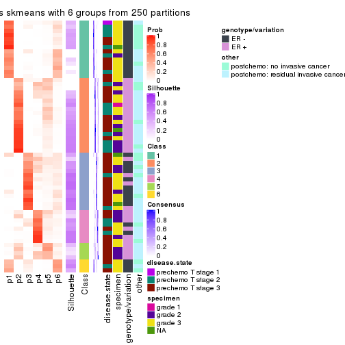
Heatmaps for the membership of samples in all partitions to see how consistent they are:
membership_heatmap(res, k = 2)
membership_heatmap(res, k = 3)
membership_heatmap(res, k = 4)
membership_heatmap(res, k = 5)
membership_heatmap(res, k = 6)

As soon as we have had the classes for columns, we can look for signatures which are significantly different between classes which can be candidate marks for certain classes. Following are the heatmaps for signatures.
Signature heatmaps where rows are scaled:
get_signatures(res, k = 2)
get_signatures(res, k = 3)

get_signatures(res, k = 4)
get_signatures(res, k = 5)
get_signatures(res, k = 6)
Signature heatmaps where rows are not scaled:
get_signatures(res, k = 2, scale_rows = FALSE)
get_signatures(res, k = 3, scale_rows = FALSE)

get_signatures(res, k = 4, scale_rows = FALSE)
get_signatures(res, k = 5, scale_rows = FALSE)
get_signatures(res, k = 6, scale_rows = FALSE)
Compare the overlap of signatures from different k:
compare_signatures(res)
get_signature() returns a data frame invisibly. TO get the list of signatures, the function
call should be assigned to a variable explicitly. In following code, if plot argument is set
to FALSE, no heatmap is plotted while only the differential analysis is performed.
# code only for demonstration
tb = get_signature(res, k = ..., plot = FALSE)
An example of the output of tb is:
#> which_row fdr mean_1 mean_2 scaled_mean_1 scaled_mean_2 km
#> 1 38 0.042760348 8.373488 9.131774 -0.5533452 0.5164555 1
#> 2 40 0.018707592 7.106213 8.469186 -0.6173731 0.5762149 1
#> 3 55 0.019134737 10.221463 11.207825 -0.6159697 0.5749050 1
#> 4 59 0.006059896 5.921854 7.869574 -0.6899429 0.6439467 1
#> 5 60 0.018055526 8.928898 10.211722 -0.6204761 0.5791110 1
#> 6 98 0.009384629 15.714769 14.887706 0.6635654 -0.6193277 2
...
The columns in tb are:
which_row: row indices corresponding to the input matrix.fdr: FDR for the differential test. mean_x: The mean value in group x.scaled_mean_x: The mean value in group x after rows are scaled.km: Row groups if k-means clustering is applied to rows.UMAP plot which shows how samples are separated.
dimension_reduction(res, k = 2, method = "UMAP")
dimension_reduction(res, k = 3, method = "UMAP")
dimension_reduction(res, k = 4, method = "UMAP")
dimension_reduction(res, k = 5, method = "UMAP")
dimension_reduction(res, k = 6, method = "UMAP")
Following heatmap shows how subgroups are split when increasing k:
collect_classes(res)
Test correlation between subgroups and known annotations. If the known annotation is numeric, one-way ANOVA test is applied, and if the known annotation is discrete, chi-squared contingency table test is applied.
test_to_known_factors(res)
#> n disease.state(p) specimen(p) genotype/variation(p) other(p) k
#> MAD:skmeans 61 0.611 0.00878 5.95e-11 0.0688 2
#> MAD:skmeans 61 0.430 0.04021 4.01e-10 0.0393 3
#> MAD:skmeans 57 0.518 0.18956 4.50e-09 0.1142 4
#> MAD:skmeans 53 0.469 0.13360 9.20e-09 0.0604 5
#> MAD:skmeans 31 0.381 0.58916 9.92e-04 0.7706 6
If matrix rows can be associated to genes, consider to use functional_enrichment(res,
...) to perform function enrichment for the signature genes. See this vignette for more detailed explanations.
The object with results only for a single top-value method and a single partition method can be extracted as:
res = res_list["MAD", "pam"]
# you can also extract it by
# res = res_list["MAD:pam"]
A summary of res and all the functions that can be applied to it:
res
#> A 'ConsensusPartition' object with k = 2, 3, 4, 5, 6.
#> On a matrix with 21168 rows and 61 columns.
#> Top rows (1000, 2000, 3000, 4000, 5000) are extracted by 'MAD' method.
#> Subgroups are detected by 'pam' method.
#> Performed in total 1250 partitions by row resampling.
#> Best k for subgroups seems to be 2.
#>
#> Following methods can be applied to this 'ConsensusPartition' object:
#> [1] "cola_report" "collect_classes" "collect_plots"
#> [4] "collect_stats" "colnames" "compare_signatures"
#> [7] "consensus_heatmap" "dimension_reduction" "functional_enrichment"
#> [10] "get_anno_col" "get_anno" "get_classes"
#> [13] "get_consensus" "get_matrix" "get_membership"
#> [16] "get_param" "get_signatures" "get_stats"
#> [19] "is_best_k" "is_stable_k" "membership_heatmap"
#> [22] "ncol" "nrow" "plot_ecdf"
#> [25] "rownames" "select_partition_number" "show"
#> [28] "suggest_best_k" "test_to_known_factors"
collect_plots() function collects all the plots made from res for all k (number of partitions)
into one single page to provide an easy and fast comparison between different k.
collect_plots(res)
The plots are:
k and the heatmap of
predicted classes for each k.k.k.k.All the plots in panels can be made by individual functions and they are plotted later in this section.
select_partition_number() produces several plots showing different
statistics for choosing “optimized” k. There are following statistics:
k;k, the area increased is defined as \(A_k - A_{k-1}\).The detailed explanations of these statistics can be found in the cola vignette.
Generally speaking, lower PAC score, higher mean silhouette score or higher
concordance corresponds to better partition. Rand index and Jaccard index
measure how similar the current partition is compared to partition with k-1.
If they are too similar, we won't accept k is better than k-1.
select_partition_number(res)
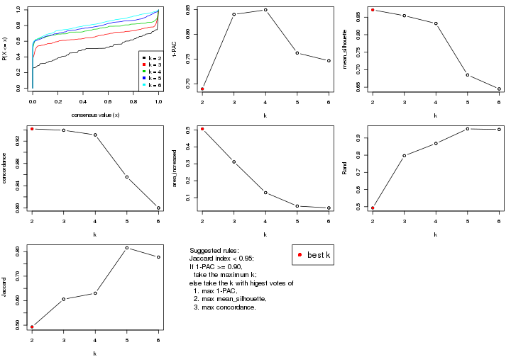
The numeric values for all these statistics can be obtained by get_stats().
get_stats(res)
#> k 1-PAC mean_silhouette concordance area_increased Rand Jaccard
#> 2 2 0.690 0.871 0.942 0.5065 0.493 0.493
#> 3 3 0.840 0.854 0.939 0.3116 0.797 0.606
#> 4 4 0.849 0.832 0.931 0.1293 0.868 0.630
#> 5 5 0.762 0.685 0.856 0.0502 0.953 0.815
#> 6 6 0.747 0.645 0.800 0.0392 0.950 0.778
suggest_best_k() suggests the best \(k\) based on these statistics. The rules are as follows:
suggest_best_k(res)
#> [1] 2
Following shows the table of the partitions (You need to click the show/hide
code output link to see it). The membership matrix (columns with name p*)
is inferred by
clue::cl_consensus()
function with the SE method. Basically the value in the membership matrix
represents the probability to belong to a certain group. The finall class
label for an item is determined with the group with highest probability it
belongs to.
In get_classes() function, the entropy is calculated from the membership
matrix and the silhouette score is calculated from the consensus matrix.
cbind(get_classes(res, k = 2), get_membership(res, k = 2))
#> class entropy silhouette p1 p2
#> GSM590886 1 0.3274 0.890 0.940 0.060
#> GSM590859 2 0.0000 0.942 0.000 1.000
#> GSM590864 1 0.7139 0.769 0.804 0.196
#> GSM590844 2 0.0000 0.942 0.000 1.000
#> GSM590878 2 0.0000 0.942 0.000 1.000
#> GSM590841 2 0.8608 0.628 0.284 0.716
#> GSM590843 2 0.0000 0.942 0.000 1.000
#> GSM590895 2 0.0000 0.942 0.000 1.000
#> GSM590897 2 0.0000 0.942 0.000 1.000
#> GSM590842 1 0.0000 0.928 1.000 0.000
#> GSM590869 1 0.0000 0.928 1.000 0.000
#> GSM590874 1 0.7815 0.725 0.768 0.232
#> GSM590889 1 0.0000 0.928 1.000 0.000
#> GSM590851 1 0.0000 0.928 1.000 0.000
#> GSM590873 1 0.4815 0.857 0.896 0.104
#> GSM590898 2 0.9393 0.499 0.356 0.644
#> GSM590882 1 0.0000 0.928 1.000 0.000
#> GSM590849 1 0.0000 0.928 1.000 0.000
#> GSM590892 2 0.0000 0.942 0.000 1.000
#> GSM590900 2 0.0000 0.942 0.000 1.000
#> GSM590896 1 0.8327 0.682 0.736 0.264
#> GSM590870 1 0.0000 0.928 1.000 0.000
#> GSM590853 1 0.0000 0.928 1.000 0.000
#> GSM590884 1 0.0000 0.928 1.000 0.000
#> GSM590847 2 0.0000 0.942 0.000 1.000
#> GSM590857 2 0.0000 0.942 0.000 1.000
#> GSM590865 2 0.2948 0.902 0.052 0.948
#> GSM590872 2 0.0000 0.942 0.000 1.000
#> GSM590883 2 0.0376 0.940 0.004 0.996
#> GSM590887 2 0.1843 0.925 0.028 0.972
#> GSM590888 2 0.2423 0.915 0.040 0.960
#> GSM590891 2 0.0000 0.942 0.000 1.000
#> GSM590899 2 0.5519 0.836 0.128 0.872
#> GSM590848 1 0.0000 0.928 1.000 0.000
#> GSM590850 1 0.0000 0.928 1.000 0.000
#> GSM590855 1 0.0000 0.928 1.000 0.000
#> GSM590860 1 0.0000 0.928 1.000 0.000
#> GSM590890 1 0.6343 0.805 0.840 0.160
#> GSM590894 1 0.0000 0.928 1.000 0.000
#> GSM590852 1 0.0000 0.928 1.000 0.000
#> GSM590858 1 0.0000 0.928 1.000 0.000
#> GSM590862 1 0.0000 0.928 1.000 0.000
#> GSM590867 1 0.9635 0.283 0.612 0.388
#> GSM590871 1 0.0000 0.928 1.000 0.000
#> GSM590877 1 0.8608 0.653 0.716 0.284
#> GSM590879 1 0.0000 0.928 1.000 0.000
#> GSM590880 1 0.0000 0.928 1.000 0.000
#> GSM590845 2 0.9833 0.334 0.424 0.576
#> GSM590846 2 0.0000 0.942 0.000 1.000
#> GSM590875 2 0.6712 0.782 0.176 0.824
#> GSM590881 2 0.0000 0.942 0.000 1.000
#> GSM590854 2 0.0000 0.942 0.000 1.000
#> GSM590856 2 0.0000 0.942 0.000 1.000
#> GSM590861 1 0.0000 0.928 1.000 0.000
#> GSM590863 2 0.0000 0.942 0.000 1.000
#> GSM590866 2 0.0000 0.942 0.000 1.000
#> GSM590876 1 0.9427 0.514 0.640 0.360
#> GSM590893 2 0.0000 0.942 0.000 1.000
#> GSM590885 1 0.0000 0.928 1.000 0.000
#> GSM590840 1 0.0000 0.928 1.000 0.000
#> GSM590868 2 0.0000 0.942 0.000 1.000
cbind(get_classes(res, k = 3), get_membership(res, k = 3))
#> class entropy silhouette p1 p2 p3
#> GSM590886 1 0.0000 0.9102 1.000 0.000 0.000
#> GSM590859 2 0.0000 0.9543 0.000 1.000 0.000
#> GSM590864 1 0.0000 0.9102 1.000 0.000 0.000
#> GSM590844 2 0.0000 0.9543 0.000 1.000 0.000
#> GSM590878 2 0.0747 0.9490 0.000 0.984 0.016
#> GSM590841 3 0.2796 0.8380 0.000 0.092 0.908
#> GSM590843 2 0.0000 0.9543 0.000 1.000 0.000
#> GSM590895 2 0.0000 0.9543 0.000 1.000 0.000
#> GSM590897 2 0.0000 0.9543 0.000 1.000 0.000
#> GSM590842 1 0.0000 0.9102 1.000 0.000 0.000
#> GSM590869 3 0.0000 0.9166 0.000 0.000 1.000
#> GSM590874 1 0.0000 0.9102 1.000 0.000 0.000
#> GSM590889 1 0.0000 0.9102 1.000 0.000 0.000
#> GSM590851 1 0.5327 0.6022 0.728 0.000 0.272
#> GSM590873 1 0.0000 0.9102 1.000 0.000 0.000
#> GSM590898 3 0.4605 0.7056 0.000 0.204 0.796
#> GSM590882 3 0.1031 0.9209 0.024 0.000 0.976
#> GSM590849 3 0.1031 0.9209 0.024 0.000 0.976
#> GSM590892 2 0.0000 0.9543 0.000 1.000 0.000
#> GSM590900 2 0.0000 0.9543 0.000 1.000 0.000
#> GSM590896 1 0.0237 0.9078 0.996 0.004 0.000
#> GSM590870 3 0.0000 0.9166 0.000 0.000 1.000
#> GSM590853 3 0.0747 0.9218 0.016 0.000 0.984
#> GSM590884 3 0.4291 0.7581 0.180 0.000 0.820
#> GSM590847 2 0.0000 0.9543 0.000 1.000 0.000
#> GSM590857 2 0.0000 0.9543 0.000 1.000 0.000
#> GSM590865 2 0.0983 0.9447 0.016 0.980 0.004
#> GSM590872 2 0.1289 0.9417 0.000 0.968 0.032
#> GSM590883 2 0.1163 0.9442 0.000 0.972 0.028
#> GSM590887 2 0.2625 0.8976 0.000 0.916 0.084
#> GSM590888 2 0.4270 0.8434 0.116 0.860 0.024
#> GSM590891 2 0.0000 0.9543 0.000 1.000 0.000
#> GSM590899 2 0.6421 0.3046 0.004 0.572 0.424
#> GSM590848 1 0.0592 0.9037 0.988 0.000 0.012
#> GSM590850 1 0.0000 0.9102 1.000 0.000 0.000
#> GSM590855 3 0.6299 0.0143 0.476 0.000 0.524
#> GSM590860 1 0.6095 0.3362 0.608 0.000 0.392
#> GSM590890 1 0.0892 0.8976 0.980 0.000 0.020
#> GSM590894 1 0.0237 0.9083 0.996 0.000 0.004
#> GSM590852 3 0.0747 0.9218 0.016 0.000 0.984
#> GSM590858 1 0.0000 0.9102 1.000 0.000 0.000
#> GSM590862 1 0.6309 -0.0155 0.504 0.000 0.496
#> GSM590867 3 0.0000 0.9166 0.000 0.000 1.000
#> GSM590871 3 0.1411 0.9140 0.036 0.000 0.964
#> GSM590877 1 0.0000 0.9102 1.000 0.000 0.000
#> GSM590879 1 0.0000 0.9102 1.000 0.000 0.000
#> GSM590880 3 0.0892 0.9218 0.020 0.000 0.980
#> GSM590845 3 0.0000 0.9166 0.000 0.000 1.000
#> GSM590846 2 0.0000 0.9543 0.000 1.000 0.000
#> GSM590875 2 0.5948 0.4721 0.000 0.640 0.360
#> GSM590881 2 0.0424 0.9520 0.000 0.992 0.008
#> GSM590854 2 0.0000 0.9543 0.000 1.000 0.000
#> GSM590856 2 0.0237 0.9533 0.000 0.996 0.004
#> GSM590861 3 0.0892 0.9220 0.020 0.000 0.980
#> GSM590863 2 0.0000 0.9543 0.000 1.000 0.000
#> GSM590866 2 0.0892 0.9477 0.000 0.980 0.020
#> GSM590876 1 0.4575 0.7478 0.828 0.160 0.012
#> GSM590893 2 0.1163 0.9444 0.000 0.972 0.028
#> GSM590885 3 0.0892 0.9220 0.020 0.000 0.980
#> GSM590840 3 0.1031 0.9209 0.024 0.000 0.976
#> GSM590868 2 0.0000 0.9543 0.000 1.000 0.000
cbind(get_classes(res, k = 4), get_membership(res, k = 4))
#> class entropy silhouette p1 p2 p3 p4
#> GSM590886 1 0.0000 0.9334 1.000 0.000 0.000 0.000
#> GSM590859 2 0.0336 0.9605 0.000 0.992 0.000 0.008
#> GSM590864 1 0.0188 0.9331 0.996 0.000 0.000 0.004
#> GSM590844 2 0.0000 0.9624 0.000 1.000 0.000 0.000
#> GSM590878 2 0.4843 0.3232 0.000 0.604 0.000 0.396
#> GSM590841 4 0.4992 0.1258 0.000 0.000 0.476 0.524
#> GSM590843 2 0.0000 0.9624 0.000 1.000 0.000 0.000
#> GSM590895 2 0.0000 0.9624 0.000 1.000 0.000 0.000
#> GSM590897 2 0.0000 0.9624 0.000 1.000 0.000 0.000
#> GSM590842 1 0.0000 0.9334 1.000 0.000 0.000 0.000
#> GSM590869 4 0.4356 0.5437 0.000 0.000 0.292 0.708
#> GSM590874 1 0.0000 0.9334 1.000 0.000 0.000 0.000
#> GSM590889 1 0.0000 0.9334 1.000 0.000 0.000 0.000
#> GSM590851 1 0.4456 0.5845 0.716 0.000 0.280 0.004
#> GSM590873 1 0.0188 0.9331 0.996 0.000 0.000 0.004
#> GSM590898 4 0.0376 0.8457 0.000 0.004 0.004 0.992
#> GSM590882 3 0.0000 0.8963 0.000 0.000 1.000 0.000
#> GSM590849 3 0.0000 0.8963 0.000 0.000 1.000 0.000
#> GSM590892 2 0.0188 0.9619 0.000 0.996 0.000 0.004
#> GSM590900 2 0.0188 0.9619 0.000 0.996 0.000 0.004
#> GSM590896 1 0.0188 0.9316 0.996 0.004 0.000 0.000
#> GSM590870 3 0.0000 0.8963 0.000 0.000 1.000 0.000
#> GSM590853 3 0.1302 0.8658 0.000 0.000 0.956 0.044
#> GSM590884 3 0.2973 0.7746 0.144 0.000 0.856 0.000
#> GSM590847 2 0.0000 0.9624 0.000 1.000 0.000 0.000
#> GSM590857 2 0.0188 0.9619 0.000 0.996 0.000 0.004
#> GSM590865 2 0.1059 0.9464 0.012 0.972 0.000 0.016
#> GSM590872 4 0.0592 0.8489 0.000 0.016 0.000 0.984
#> GSM590883 4 0.2408 0.8140 0.000 0.104 0.000 0.896
#> GSM590887 4 0.0592 0.8485 0.000 0.016 0.000 0.984
#> GSM590888 4 0.1743 0.8409 0.004 0.056 0.000 0.940
#> GSM590891 2 0.0188 0.9608 0.000 0.996 0.000 0.004
#> GSM590899 4 0.0336 0.8472 0.000 0.008 0.000 0.992
#> GSM590848 1 0.0927 0.9224 0.976 0.000 0.016 0.008
#> GSM590850 1 0.0000 0.9334 1.000 0.000 0.000 0.000
#> GSM590855 3 0.5126 0.1675 0.444 0.000 0.552 0.004
#> GSM590860 1 0.5060 0.2353 0.584 0.000 0.412 0.004
#> GSM590890 1 0.0469 0.9274 0.988 0.000 0.012 0.000
#> GSM590894 1 0.0469 0.9276 0.988 0.000 0.012 0.000
#> GSM590852 3 0.0000 0.8963 0.000 0.000 1.000 0.000
#> GSM590858 1 0.0188 0.9331 0.996 0.000 0.000 0.004
#> GSM590862 3 0.4989 0.0944 0.472 0.000 0.528 0.000
#> GSM590867 3 0.0336 0.8924 0.000 0.000 0.992 0.008
#> GSM590871 3 0.0336 0.8929 0.008 0.000 0.992 0.000
#> GSM590877 1 0.0000 0.9334 1.000 0.000 0.000 0.000
#> GSM590879 1 0.0188 0.9331 0.996 0.000 0.000 0.004
#> GSM590880 3 0.0000 0.8963 0.000 0.000 1.000 0.000
#> GSM590845 3 0.0921 0.8755 0.000 0.000 0.972 0.028
#> GSM590846 2 0.0188 0.9619 0.000 0.996 0.000 0.004
#> GSM590875 4 0.3486 0.7339 0.000 0.188 0.000 0.812
#> GSM590881 2 0.1118 0.9353 0.000 0.964 0.000 0.036
#> GSM590854 2 0.0188 0.9619 0.000 0.996 0.000 0.004
#> GSM590856 2 0.2281 0.8666 0.000 0.904 0.000 0.096
#> GSM590861 3 0.0000 0.8963 0.000 0.000 1.000 0.000
#> GSM590863 2 0.0000 0.9624 0.000 1.000 0.000 0.000
#> GSM590866 4 0.4304 0.6126 0.000 0.284 0.000 0.716
#> GSM590876 1 0.4992 0.7118 0.772 0.096 0.000 0.132
#> GSM590893 4 0.0336 0.8472 0.000 0.008 0.000 0.992
#> GSM590885 3 0.0000 0.8963 0.000 0.000 1.000 0.000
#> GSM590840 3 0.0000 0.8963 0.000 0.000 1.000 0.000
#> GSM590868 2 0.0000 0.9624 0.000 1.000 0.000 0.000
cbind(get_classes(res, k = 5), get_membership(res, k = 5))
#> class entropy silhouette p1 p2 p3 p4 p5
#> GSM590886 1 0.1792 0.6704 0.916 0.000 0.000 0.000 0.084
#> GSM590859 2 0.2068 0.9098 0.000 0.904 0.000 0.004 0.092
#> GSM590864 1 0.4201 0.2096 0.592 0.000 0.000 0.000 0.408
#> GSM590844 2 0.0162 0.9249 0.000 0.996 0.000 0.000 0.004
#> GSM590878 2 0.4464 0.3308 0.000 0.584 0.000 0.408 0.008
#> GSM590841 4 0.4268 0.1747 0.000 0.000 0.444 0.556 0.000
#> GSM590843 2 0.0000 0.9248 0.000 1.000 0.000 0.000 0.000
#> GSM590895 2 0.0000 0.9248 0.000 1.000 0.000 0.000 0.000
#> GSM590897 2 0.0000 0.9248 0.000 1.000 0.000 0.000 0.000
#> GSM590842 1 0.0510 0.6907 0.984 0.000 0.000 0.000 0.016
#> GSM590869 4 0.3885 0.5581 0.000 0.000 0.268 0.724 0.008
#> GSM590874 1 0.0162 0.6910 0.996 0.000 0.000 0.000 0.004
#> GSM590889 1 0.0963 0.6920 0.964 0.000 0.000 0.000 0.036
#> GSM590851 5 0.5216 0.5367 0.248 0.000 0.092 0.000 0.660
#> GSM590873 1 0.3774 0.4279 0.704 0.000 0.000 0.000 0.296
#> GSM590898 4 0.0162 0.7997 0.000 0.000 0.000 0.996 0.004
#> GSM590882 3 0.0000 0.8651 0.000 0.000 1.000 0.000 0.000
#> GSM590849 3 0.3730 0.6089 0.000 0.000 0.712 0.000 0.288
#> GSM590892 2 0.2020 0.9080 0.000 0.900 0.000 0.000 0.100
#> GSM590900 2 0.2329 0.8965 0.000 0.876 0.000 0.000 0.124
#> GSM590896 1 0.1043 0.6835 0.960 0.000 0.000 0.000 0.040
#> GSM590870 3 0.0000 0.8651 0.000 0.000 1.000 0.000 0.000
#> GSM590853 3 0.1831 0.8103 0.000 0.000 0.920 0.076 0.004
#> GSM590884 3 0.3620 0.6830 0.108 0.000 0.824 0.000 0.068
#> GSM590847 2 0.0162 0.9242 0.000 0.996 0.000 0.000 0.004
#> GSM590857 2 0.1908 0.9103 0.000 0.908 0.000 0.000 0.092
#> GSM590865 2 0.3099 0.8816 0.008 0.848 0.000 0.012 0.132
#> GSM590872 4 0.0290 0.8013 0.000 0.008 0.000 0.992 0.000
#> GSM590883 4 0.4049 0.7205 0.000 0.084 0.000 0.792 0.124
#> GSM590887 4 0.1626 0.7960 0.000 0.016 0.000 0.940 0.044
#> GSM590888 4 0.2835 0.7787 0.004 0.080 0.000 0.880 0.036
#> GSM590891 2 0.0162 0.9242 0.000 0.996 0.000 0.004 0.000
#> GSM590899 4 0.0290 0.7992 0.000 0.000 0.000 0.992 0.008
#> GSM590848 5 0.4294 -0.1339 0.468 0.000 0.000 0.000 0.532
#> GSM590850 1 0.1851 0.6686 0.912 0.000 0.000 0.000 0.088
#> GSM590855 5 0.5602 0.5713 0.196 0.000 0.164 0.000 0.640
#> GSM590860 5 0.5554 0.3249 0.120 0.000 0.252 0.000 0.628
#> GSM590890 1 0.1197 0.6792 0.952 0.000 0.000 0.000 0.048
#> GSM590894 1 0.1270 0.6891 0.948 0.000 0.000 0.000 0.052
#> GSM590852 3 0.0000 0.8651 0.000 0.000 1.000 0.000 0.000
#> GSM590858 1 0.4273 0.0826 0.552 0.000 0.000 0.000 0.448
#> GSM590862 1 0.5802 -0.0946 0.516 0.000 0.388 0.000 0.096
#> GSM590867 3 0.0693 0.8585 0.000 0.000 0.980 0.008 0.012
#> GSM590871 3 0.4251 0.5218 0.004 0.000 0.624 0.000 0.372
#> GSM590877 1 0.1851 0.6686 0.912 0.000 0.000 0.000 0.088
#> GSM590879 1 0.3876 0.3885 0.684 0.000 0.000 0.000 0.316
#> GSM590880 3 0.0000 0.8651 0.000 0.000 1.000 0.000 0.000
#> GSM590845 3 0.0880 0.8487 0.000 0.000 0.968 0.032 0.000
#> GSM590846 2 0.2280 0.8980 0.000 0.880 0.000 0.000 0.120
#> GSM590875 4 0.3053 0.7215 0.000 0.164 0.000 0.828 0.008
#> GSM590881 2 0.1331 0.9024 0.000 0.952 0.000 0.040 0.008
#> GSM590854 2 0.1043 0.9240 0.000 0.960 0.000 0.000 0.040
#> GSM590856 2 0.1638 0.8821 0.000 0.932 0.000 0.064 0.004
#> GSM590861 3 0.0162 0.8643 0.000 0.000 0.996 0.000 0.004
#> GSM590863 2 0.1043 0.9243 0.000 0.960 0.000 0.000 0.040
#> GSM590866 4 0.4182 0.5202 0.000 0.352 0.000 0.644 0.004
#> GSM590876 1 0.7221 0.0976 0.524 0.268 0.000 0.100 0.108
#> GSM590893 4 0.0162 0.7997 0.000 0.000 0.000 0.996 0.004
#> GSM590885 3 0.0000 0.8651 0.000 0.000 1.000 0.000 0.000
#> GSM590840 3 0.4256 0.4058 0.000 0.000 0.564 0.000 0.436
#> GSM590868 2 0.0000 0.9248 0.000 1.000 0.000 0.000 0.000
cbind(get_classes(res, k = 6), get_membership(res, k = 6))
#> class entropy silhouette p1 p2 p3 p4 p5 p6
#> GSM590886 1 0.3864 0.6284 0.520 0.000 0.000 0.000 0.000 0.480
#> GSM590859 2 0.4000 0.7585 0.184 0.752 0.000 0.004 0.060 0.000
#> GSM590864 6 0.2871 0.3990 0.192 0.000 0.000 0.000 0.004 0.804
#> GSM590844 2 0.0547 0.8374 0.000 0.980 0.000 0.000 0.020 0.000
#> GSM590878 2 0.4481 0.3679 0.020 0.572 0.000 0.400 0.008 0.000
#> GSM590841 4 0.5224 0.1446 0.040 0.000 0.420 0.512 0.028 0.000
#> GSM590843 2 0.0363 0.8364 0.000 0.988 0.000 0.000 0.012 0.000
#> GSM590895 2 0.0146 0.8395 0.004 0.996 0.000 0.000 0.000 0.000
#> GSM590897 2 0.0146 0.8395 0.004 0.996 0.000 0.000 0.000 0.000
#> GSM590842 1 0.3563 0.7150 0.664 0.000 0.000 0.000 0.000 0.336
#> GSM590869 4 0.4995 0.5483 0.040 0.000 0.172 0.700 0.088 0.000
#> GSM590874 1 0.3499 0.7175 0.680 0.000 0.000 0.000 0.000 0.320
#> GSM590889 1 0.3592 0.7135 0.656 0.000 0.000 0.000 0.000 0.344
#> GSM590851 6 0.4995 0.3027 0.060 0.000 0.032 0.000 0.244 0.664
#> GSM590873 6 0.3547 0.1724 0.332 0.000 0.000 0.000 0.000 0.668
#> GSM590898 4 0.1082 0.7185 0.040 0.000 0.000 0.956 0.004 0.000
#> GSM590882 3 0.0000 0.8835 0.000 0.000 1.000 0.000 0.000 0.000
#> GSM590849 3 0.4791 0.3592 0.000 0.000 0.652 0.000 0.244 0.104
#> GSM590892 2 0.2724 0.8119 0.084 0.864 0.000 0.000 0.052 0.000
#> GSM590900 2 0.4339 0.7162 0.256 0.684 0.000 0.000 0.060 0.000
#> GSM590896 1 0.3531 0.6950 0.672 0.000 0.000 0.000 0.000 0.328
#> GSM590870 3 0.0000 0.8835 0.000 0.000 1.000 0.000 0.000 0.000
#> GSM590853 3 0.3204 0.7212 0.032 0.000 0.820 0.144 0.004 0.000
#> GSM590884 3 0.3844 0.6310 0.028 0.000 0.764 0.000 0.016 0.192
#> GSM590847 2 0.2092 0.7940 0.000 0.876 0.000 0.000 0.124 0.000
#> GSM590857 2 0.3892 0.7593 0.188 0.752 0.000 0.000 0.060 0.000
#> GSM590865 2 0.5654 0.6421 0.256 0.552 0.000 0.000 0.188 0.004
#> GSM590872 4 0.0858 0.7222 0.000 0.004 0.000 0.968 0.028 0.000
#> GSM590883 4 0.5932 0.4984 0.252 0.072 0.000 0.588 0.088 0.000
#> GSM590887 4 0.2680 0.7088 0.060 0.012 0.000 0.880 0.048 0.000
#> GSM590888 4 0.4055 0.6754 0.068 0.100 0.000 0.792 0.040 0.000
#> GSM590891 2 0.0508 0.8360 0.000 0.984 0.000 0.004 0.012 0.000
#> GSM590899 4 0.2308 0.7023 0.040 0.000 0.000 0.892 0.068 0.000
#> GSM590848 6 0.3109 0.4004 0.224 0.000 0.000 0.000 0.004 0.772
#> GSM590850 1 0.3864 0.6284 0.520 0.000 0.000 0.000 0.000 0.480
#> GSM590855 6 0.4777 0.2494 0.020 0.000 0.060 0.000 0.244 0.676
#> GSM590860 5 0.3985 0.6770 0.032 0.000 0.024 0.000 0.764 0.180
#> GSM590890 1 0.3547 0.6902 0.668 0.000 0.000 0.000 0.000 0.332
#> GSM590894 1 0.3607 0.7115 0.652 0.000 0.000 0.000 0.000 0.348
#> GSM590852 3 0.0000 0.8835 0.000 0.000 1.000 0.000 0.000 0.000
#> GSM590858 6 0.0790 0.4514 0.032 0.000 0.000 0.000 0.000 0.968
#> GSM590862 6 0.5868 -0.0196 0.204 0.000 0.348 0.000 0.000 0.448
#> GSM590867 3 0.1124 0.8606 0.036 0.000 0.956 0.008 0.000 0.000
#> GSM590871 5 0.3215 0.7704 0.004 0.000 0.240 0.000 0.756 0.000
#> GSM590877 1 0.3864 0.6284 0.520 0.000 0.000 0.000 0.000 0.480
#> GSM590879 6 0.3515 0.2175 0.324 0.000 0.000 0.000 0.000 0.676
#> GSM590880 3 0.0000 0.8835 0.000 0.000 1.000 0.000 0.000 0.000
#> GSM590845 3 0.1926 0.8169 0.000 0.000 0.912 0.068 0.020 0.000
#> GSM590846 2 0.4204 0.7231 0.252 0.696 0.000 0.000 0.052 0.000
#> GSM590875 4 0.4467 0.6320 0.040 0.180 0.000 0.736 0.044 0.000
#> GSM590881 2 0.4035 0.7105 0.020 0.776 0.000 0.060 0.144 0.000
#> GSM590854 2 0.0858 0.8395 0.004 0.968 0.000 0.000 0.028 0.000
#> GSM590856 2 0.2513 0.7803 0.000 0.852 0.000 0.008 0.140 0.000
#> GSM590861 3 0.0146 0.8818 0.000 0.000 0.996 0.000 0.004 0.000
#> GSM590863 2 0.0865 0.8396 0.000 0.964 0.000 0.000 0.036 0.000
#> GSM590866 4 0.5271 0.3982 0.012 0.380 0.000 0.536 0.072 0.000
#> GSM590876 1 0.7867 -0.1474 0.364 0.276 0.000 0.024 0.188 0.148
#> GSM590893 4 0.0000 0.7240 0.000 0.000 0.000 1.000 0.000 0.000
#> GSM590885 3 0.0000 0.8835 0.000 0.000 1.000 0.000 0.000 0.000
#> GSM590840 5 0.3806 0.8165 0.000 0.000 0.164 0.000 0.768 0.068
#> GSM590868 2 0.0146 0.8395 0.004 0.996 0.000 0.000 0.000 0.000
Heatmaps for the consensus matrix. It visualizes the probability of two samples to be in a same group.
consensus_heatmap(res, k = 2)
consensus_heatmap(res, k = 3)
consensus_heatmap(res, k = 4)
consensus_heatmap(res, k = 5)
consensus_heatmap(res, k = 6)
Heatmaps for the membership of samples in all partitions to see how consistent they are:
membership_heatmap(res, k = 2)

membership_heatmap(res, k = 3)
membership_heatmap(res, k = 4)
membership_heatmap(res, k = 5)
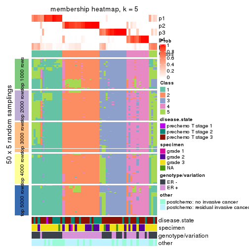
membership_heatmap(res, k = 6)
As soon as we have had the classes for columns, we can look for signatures which are significantly different between classes which can be candidate marks for certain classes. Following are the heatmaps for signatures.
Signature heatmaps where rows are scaled:
get_signatures(res, k = 2)
get_signatures(res, k = 3)
get_signatures(res, k = 4)
get_signatures(res, k = 5)
get_signatures(res, k = 6)
Signature heatmaps where rows are not scaled:
get_signatures(res, k = 2, scale_rows = FALSE)
get_signatures(res, k = 3, scale_rows = FALSE)
get_signatures(res, k = 4, scale_rows = FALSE)
get_signatures(res, k = 5, scale_rows = FALSE)
get_signatures(res, k = 6, scale_rows = FALSE)
Compare the overlap of signatures from different k:
compare_signatures(res)
get_signature() returns a data frame invisibly. TO get the list of signatures, the function
call should be assigned to a variable explicitly. In following code, if plot argument is set
to FALSE, no heatmap is plotted while only the differential analysis is performed.
# code only for demonstration
tb = get_signature(res, k = ..., plot = FALSE)
An example of the output of tb is:
#> which_row fdr mean_1 mean_2 scaled_mean_1 scaled_mean_2 km
#> 1 38 0.042760348 8.373488 9.131774 -0.5533452 0.5164555 1
#> 2 40 0.018707592 7.106213 8.469186 -0.6173731 0.5762149 1
#> 3 55 0.019134737 10.221463 11.207825 -0.6159697 0.5749050 1
#> 4 59 0.006059896 5.921854 7.869574 -0.6899429 0.6439467 1
#> 5 60 0.018055526 8.928898 10.211722 -0.6204761 0.5791110 1
#> 6 98 0.009384629 15.714769 14.887706 0.6635654 -0.6193277 2
...
The columns in tb are:
which_row: row indices corresponding to the input matrix.fdr: FDR for the differential test. mean_x: The mean value in group x.scaled_mean_x: The mean value in group x after rows are scaled.km: Row groups if k-means clustering is applied to rows.UMAP plot which shows how samples are separated.
dimension_reduction(res, k = 2, method = "UMAP")
dimension_reduction(res, k = 3, method = "UMAP")
dimension_reduction(res, k = 4, method = "UMAP")
dimension_reduction(res, k = 5, method = "UMAP")
dimension_reduction(res, k = 6, method = "UMAP")

Following heatmap shows how subgroups are split when increasing k:
collect_classes(res)
Test correlation between subgroups and known annotations. If the known annotation is numeric, one-way ANOVA test is applied, and if the known annotation is discrete, chi-squared contingency table test is applied.
test_to_known_factors(res)
#> n disease.state(p) specimen(p) genotype/variation(p) other(p) k
#> MAD:pam 58 0.642 0.00301 1.90e-10 0.0606 2
#> MAD:pam 56 0.480 0.03411 4.56e-09 0.0799 3
#> MAD:pam 56 0.328 0.13832 1.43e-07 0.1929 4
#> MAD:pam 50 0.372 0.43546 1.52e-06 0.0287 5
#> MAD:pam 47 0.262 0.35460 1.56e-06 0.0443 6
If matrix rows can be associated to genes, consider to use functional_enrichment(res,
...) to perform function enrichment for the signature genes. See this vignette for more detailed explanations.
The object with results only for a single top-value method and a single partition method can be extracted as:
res = res_list["MAD", "mclust"]
# you can also extract it by
# res = res_list["MAD:mclust"]
A summary of res and all the functions that can be applied to it:
res
#> A 'ConsensusPartition' object with k = 2, 3, 4, 5, 6.
#> On a matrix with 21168 rows and 61 columns.
#> Top rows (1000, 2000, 3000, 4000, 5000) are extracted by 'MAD' method.
#> Subgroups are detected by 'mclust' method.
#> Performed in total 1250 partitions by row resampling.
#> Best k for subgroups seems to be 4.
#>
#> Following methods can be applied to this 'ConsensusPartition' object:
#> [1] "cola_report" "collect_classes" "collect_plots"
#> [4] "collect_stats" "colnames" "compare_signatures"
#> [7] "consensus_heatmap" "dimension_reduction" "functional_enrichment"
#> [10] "get_anno_col" "get_anno" "get_classes"
#> [13] "get_consensus" "get_matrix" "get_membership"
#> [16] "get_param" "get_signatures" "get_stats"
#> [19] "is_best_k" "is_stable_k" "membership_heatmap"
#> [22] "ncol" "nrow" "plot_ecdf"
#> [25] "rownames" "select_partition_number" "show"
#> [28] "suggest_best_k" "test_to_known_factors"
collect_plots() function collects all the plots made from res for all k (number of partitions)
into one single page to provide an easy and fast comparison between different k.
collect_plots(res)
The plots are:
k and the heatmap of
predicted classes for each k.k.k.k.All the plots in panels can be made by individual functions and they are plotted later in this section.
select_partition_number() produces several plots showing different
statistics for choosing “optimized” k. There are following statistics:
k;k, the area increased is defined as \(A_k - A_{k-1}\).The detailed explanations of these statistics can be found in the cola vignette.
Generally speaking, lower PAC score, higher mean silhouette score or higher
concordance corresponds to better partition. Rand index and Jaccard index
measure how similar the current partition is compared to partition with k-1.
If they are too similar, we won't accept k is better than k-1.
select_partition_number(res)
The numeric values for all these statistics can be obtained by get_stats().
get_stats(res)
#> k 1-PAC mean_silhouette concordance area_increased Rand Jaccard
#> 2 2 1.000 0.997 0.999 0.5074 0.493 0.493
#> 3 3 0.894 0.891 0.951 0.2987 0.782 0.584
#> 4 4 0.980 0.956 0.972 0.1161 0.867 0.636
#> 5 5 0.828 0.857 0.880 0.0478 0.961 0.849
#> 6 6 0.796 0.791 0.874 0.0414 0.959 0.826
suggest_best_k() suggests the best \(k\) based on these statistics. The rules are as follows:
suggest_best_k(res)
#> [1] 4
#> attr(,"optional")
#> [1] 2
There is also optional best \(k\) = 2 that is worth to check.
Following shows the table of the partitions (You need to click the show/hide
code output link to see it). The membership matrix (columns with name p*)
is inferred by
clue::cl_consensus()
function with the SE method. Basically the value in the membership matrix
represents the probability to belong to a certain group. The finall class
label for an item is determined with the group with highest probability it
belongs to.
In get_classes() function, the entropy is calculated from the membership
matrix and the silhouette score is calculated from the consensus matrix.
cbind(get_classes(res, k = 2), get_membership(res, k = 2))
#> class entropy silhouette p1 p2
#> GSM590886 1 0.0000 0.997 1.000 0.000
#> GSM590859 2 0.0000 1.000 0.000 1.000
#> GSM590864 1 0.0000 0.997 1.000 0.000
#> GSM590844 2 0.0000 1.000 0.000 1.000
#> GSM590878 2 0.0000 1.000 0.000 1.000
#> GSM590841 2 0.0000 1.000 0.000 1.000
#> GSM590843 2 0.0000 1.000 0.000 1.000
#> GSM590895 2 0.0000 1.000 0.000 1.000
#> GSM590897 2 0.0000 1.000 0.000 1.000
#> GSM590842 1 0.0000 0.997 1.000 0.000
#> GSM590869 2 0.0376 0.996 0.004 0.996
#> GSM590874 1 0.0000 0.997 1.000 0.000
#> GSM590889 1 0.0000 0.997 1.000 0.000
#> GSM590851 1 0.0000 0.997 1.000 0.000
#> GSM590873 1 0.0000 0.997 1.000 0.000
#> GSM590898 2 0.0000 1.000 0.000 1.000
#> GSM590882 1 0.0000 0.997 1.000 0.000
#> GSM590849 1 0.0000 0.997 1.000 0.000
#> GSM590892 2 0.0000 1.000 0.000 1.000
#> GSM590900 2 0.0000 1.000 0.000 1.000
#> GSM590896 1 0.0000 0.997 1.000 0.000
#> GSM590870 1 0.3733 0.922 0.928 0.072
#> GSM590853 1 0.0000 0.997 1.000 0.000
#> GSM590884 1 0.0000 0.997 1.000 0.000
#> GSM590847 2 0.0000 1.000 0.000 1.000
#> GSM590857 2 0.0000 1.000 0.000 1.000
#> GSM590865 2 0.0000 1.000 0.000 1.000
#> GSM590872 2 0.0000 1.000 0.000 1.000
#> GSM590883 2 0.0000 1.000 0.000 1.000
#> GSM590887 2 0.0000 1.000 0.000 1.000
#> GSM590888 2 0.0000 1.000 0.000 1.000
#> GSM590891 2 0.0000 1.000 0.000 1.000
#> GSM590899 2 0.0000 1.000 0.000 1.000
#> GSM590848 1 0.0000 0.997 1.000 0.000
#> GSM590850 1 0.0000 0.997 1.000 0.000
#> GSM590855 1 0.0000 0.997 1.000 0.000
#> GSM590860 1 0.0000 0.997 1.000 0.000
#> GSM590890 1 0.0000 0.997 1.000 0.000
#> GSM590894 1 0.0000 0.997 1.000 0.000
#> GSM590852 1 0.0000 0.997 1.000 0.000
#> GSM590858 1 0.0000 0.997 1.000 0.000
#> GSM590862 1 0.0000 0.997 1.000 0.000
#> GSM590867 2 0.0376 0.996 0.004 0.996
#> GSM590871 1 0.0000 0.997 1.000 0.000
#> GSM590877 1 0.0000 0.997 1.000 0.000
#> GSM590879 1 0.0000 0.997 1.000 0.000
#> GSM590880 1 0.0000 0.997 1.000 0.000
#> GSM590845 2 0.0000 1.000 0.000 1.000
#> GSM590846 2 0.0000 1.000 0.000 1.000
#> GSM590875 2 0.0000 1.000 0.000 1.000
#> GSM590881 2 0.0000 1.000 0.000 1.000
#> GSM590854 2 0.0000 1.000 0.000 1.000
#> GSM590856 2 0.0000 1.000 0.000 1.000
#> GSM590861 1 0.0000 0.997 1.000 0.000
#> GSM590863 2 0.0000 1.000 0.000 1.000
#> GSM590866 2 0.0000 1.000 0.000 1.000
#> GSM590876 2 0.0000 1.000 0.000 1.000
#> GSM590893 2 0.0000 1.000 0.000 1.000
#> GSM590885 1 0.0000 0.997 1.000 0.000
#> GSM590840 1 0.0000 0.997 1.000 0.000
#> GSM590868 2 0.0000 1.000 0.000 1.000
cbind(get_classes(res, k = 3), get_membership(res, k = 3))
#> class entropy silhouette p1 p2 p3
#> GSM590886 1 0.0000 0.922 1.000 0.000 0.000
#> GSM590859 2 0.0000 0.995 0.000 1.000 0.000
#> GSM590864 1 0.0000 0.922 1.000 0.000 0.000
#> GSM590844 2 0.0000 0.995 0.000 1.000 0.000
#> GSM590878 2 0.0000 0.995 0.000 1.000 0.000
#> GSM590841 3 0.4654 0.737 0.000 0.208 0.792
#> GSM590843 2 0.0000 0.995 0.000 1.000 0.000
#> GSM590895 2 0.0000 0.995 0.000 1.000 0.000
#> GSM590897 2 0.0000 0.995 0.000 1.000 0.000
#> GSM590842 1 0.0000 0.922 1.000 0.000 0.000
#> GSM590869 3 0.0000 0.874 0.000 0.000 1.000
#> GSM590874 1 0.0000 0.922 1.000 0.000 0.000
#> GSM590889 1 0.0000 0.922 1.000 0.000 0.000
#> GSM590851 1 0.0000 0.922 1.000 0.000 0.000
#> GSM590873 1 0.0000 0.922 1.000 0.000 0.000
#> GSM590898 3 0.5905 0.535 0.000 0.352 0.648
#> GSM590882 3 0.0747 0.868 0.016 0.000 0.984
#> GSM590849 1 0.6111 0.472 0.604 0.000 0.396
#> GSM590892 2 0.0000 0.995 0.000 1.000 0.000
#> GSM590900 2 0.0000 0.995 0.000 1.000 0.000
#> GSM590896 1 0.0000 0.922 1.000 0.000 0.000
#> GSM590870 3 0.0000 0.874 0.000 0.000 1.000
#> GSM590853 3 0.0000 0.874 0.000 0.000 1.000
#> GSM590884 1 0.5810 0.573 0.664 0.000 0.336
#> GSM590847 2 0.0000 0.995 0.000 1.000 0.000
#> GSM590857 2 0.0000 0.995 0.000 1.000 0.000
#> GSM590865 2 0.0000 0.995 0.000 1.000 0.000
#> GSM590872 2 0.1289 0.966 0.000 0.968 0.032
#> GSM590883 2 0.0237 0.992 0.000 0.996 0.004
#> GSM590887 2 0.0892 0.978 0.000 0.980 0.020
#> GSM590888 2 0.0000 0.995 0.000 1.000 0.000
#> GSM590891 2 0.0000 0.995 0.000 1.000 0.000
#> GSM590899 3 0.5733 0.586 0.000 0.324 0.676
#> GSM590848 1 0.0000 0.922 1.000 0.000 0.000
#> GSM590850 1 0.0000 0.922 1.000 0.000 0.000
#> GSM590855 1 0.0000 0.922 1.000 0.000 0.000
#> GSM590860 1 0.6026 0.509 0.624 0.000 0.376
#> GSM590890 1 0.0000 0.922 1.000 0.000 0.000
#> GSM590894 1 0.0000 0.922 1.000 0.000 0.000
#> GSM590852 3 0.0000 0.874 0.000 0.000 1.000
#> GSM590858 1 0.0000 0.922 1.000 0.000 0.000
#> GSM590862 1 0.0000 0.922 1.000 0.000 0.000
#> GSM590867 3 0.0000 0.874 0.000 0.000 1.000
#> GSM590871 3 0.1163 0.861 0.028 0.000 0.972
#> GSM590877 1 0.0000 0.922 1.000 0.000 0.000
#> GSM590879 1 0.0000 0.922 1.000 0.000 0.000
#> GSM590880 3 0.0000 0.874 0.000 0.000 1.000
#> GSM590845 3 0.0747 0.870 0.000 0.016 0.984
#> GSM590846 2 0.0000 0.995 0.000 1.000 0.000
#> GSM590875 3 0.5968 0.511 0.000 0.364 0.636
#> GSM590881 2 0.0000 0.995 0.000 1.000 0.000
#> GSM590854 2 0.0000 0.995 0.000 1.000 0.000
#> GSM590856 2 0.0000 0.995 0.000 1.000 0.000
#> GSM590861 3 0.1411 0.854 0.036 0.000 0.964
#> GSM590863 2 0.0000 0.995 0.000 1.000 0.000
#> GSM590866 2 0.0237 0.992 0.000 0.996 0.004
#> GSM590876 2 0.0000 0.995 0.000 1.000 0.000
#> GSM590893 2 0.1529 0.957 0.000 0.960 0.040
#> GSM590885 1 0.6126 0.454 0.600 0.000 0.400
#> GSM590840 3 0.2200 0.835 0.056 0.004 0.940
#> GSM590868 2 0.0000 0.995 0.000 1.000 0.000
cbind(get_classes(res, k = 4), get_membership(res, k = 4))
#> class entropy silhouette p1 p2 p3 p4
#> GSM590886 1 0.0000 0.998 1.000 0.000 0.000 0.000
#> GSM590859 2 0.0188 0.976 0.000 0.996 0.004 0.000
#> GSM590864 1 0.0000 0.998 1.000 0.000 0.000 0.000
#> GSM590844 2 0.0592 0.978 0.000 0.984 0.000 0.016
#> GSM590878 2 0.1716 0.959 0.000 0.936 0.000 0.064
#> GSM590841 4 0.0707 0.894 0.000 0.000 0.020 0.980
#> GSM590843 2 0.1118 0.974 0.000 0.964 0.000 0.036
#> GSM590895 2 0.1022 0.976 0.000 0.968 0.000 0.032
#> GSM590897 2 0.0921 0.977 0.000 0.972 0.000 0.028
#> GSM590842 1 0.0000 0.998 1.000 0.000 0.000 0.000
#> GSM590869 4 0.1637 0.878 0.000 0.000 0.060 0.940
#> GSM590874 1 0.0188 0.997 0.996 0.000 0.000 0.004
#> GSM590889 1 0.0000 0.998 1.000 0.000 0.000 0.000
#> GSM590851 1 0.0188 0.996 0.996 0.000 0.004 0.000
#> GSM590873 1 0.0000 0.998 1.000 0.000 0.000 0.000
#> GSM590898 4 0.0188 0.896 0.000 0.000 0.004 0.996
#> GSM590882 3 0.0188 0.970 0.000 0.000 0.996 0.004
#> GSM590849 3 0.0336 0.968 0.008 0.000 0.992 0.000
#> GSM590892 2 0.0000 0.977 0.000 1.000 0.000 0.000
#> GSM590900 2 0.0000 0.977 0.000 1.000 0.000 0.000
#> GSM590896 1 0.0188 0.997 0.996 0.000 0.000 0.004
#> GSM590870 3 0.2081 0.907 0.000 0.000 0.916 0.084
#> GSM590853 3 0.0592 0.968 0.000 0.000 0.984 0.016
#> GSM590884 3 0.1661 0.937 0.052 0.000 0.944 0.004
#> GSM590847 2 0.1557 0.964 0.000 0.944 0.000 0.056
#> GSM590857 2 0.0000 0.977 0.000 1.000 0.000 0.000
#> GSM590865 2 0.0000 0.977 0.000 1.000 0.000 0.000
#> GSM590872 4 0.3569 0.780 0.000 0.196 0.000 0.804
#> GSM590883 2 0.0921 0.962 0.000 0.972 0.000 0.028
#> GSM590887 4 0.4331 0.685 0.000 0.288 0.000 0.712
#> GSM590888 2 0.0188 0.977 0.000 0.996 0.000 0.004
#> GSM590891 2 0.1022 0.976 0.000 0.968 0.000 0.032
#> GSM590899 4 0.0188 0.896 0.000 0.000 0.004 0.996
#> GSM590848 1 0.0000 0.998 1.000 0.000 0.000 0.000
#> GSM590850 1 0.0000 0.998 1.000 0.000 0.000 0.000
#> GSM590855 1 0.0188 0.996 0.996 0.000 0.004 0.000
#> GSM590860 3 0.1716 0.924 0.064 0.000 0.936 0.000
#> GSM590890 1 0.0188 0.997 0.996 0.000 0.000 0.004
#> GSM590894 1 0.0188 0.997 0.996 0.000 0.000 0.004
#> GSM590852 3 0.0592 0.968 0.000 0.000 0.984 0.016
#> GSM590858 1 0.0000 0.998 1.000 0.000 0.000 0.000
#> GSM590862 1 0.0336 0.993 0.992 0.000 0.008 0.000
#> GSM590867 4 0.2654 0.846 0.000 0.004 0.108 0.888
#> GSM590871 3 0.0188 0.970 0.000 0.000 0.996 0.004
#> GSM590877 1 0.0188 0.996 0.996 0.000 0.004 0.000
#> GSM590879 1 0.0000 0.998 1.000 0.000 0.000 0.000
#> GSM590880 3 0.0469 0.970 0.000 0.000 0.988 0.012
#> GSM590845 4 0.2179 0.876 0.000 0.012 0.064 0.924
#> GSM590846 2 0.1022 0.976 0.000 0.968 0.000 0.032
#> GSM590875 4 0.0188 0.896 0.000 0.000 0.004 0.996
#> GSM590881 2 0.1557 0.964 0.000 0.944 0.000 0.056
#> GSM590854 2 0.0000 0.977 0.000 1.000 0.000 0.000
#> GSM590856 2 0.1557 0.964 0.000 0.944 0.000 0.056
#> GSM590861 3 0.0336 0.970 0.000 0.000 0.992 0.008
#> GSM590863 2 0.0000 0.977 0.000 1.000 0.000 0.000
#> GSM590866 2 0.0376 0.975 0.000 0.992 0.004 0.004
#> GSM590876 2 0.0336 0.977 0.000 0.992 0.000 0.008
#> GSM590893 4 0.2345 0.850 0.000 0.100 0.000 0.900
#> GSM590885 3 0.1209 0.954 0.032 0.000 0.964 0.004
#> GSM590840 3 0.0188 0.970 0.000 0.000 0.996 0.004
#> GSM590868 2 0.1022 0.976 0.000 0.968 0.000 0.032
cbind(get_classes(res, k = 5), get_membership(res, k = 5))
#> class entropy silhouette p1 p2 p3 p4 p5
#> GSM590886 5 0.4015 0.958 0.348 0.000 0.000 0.000 0.652
#> GSM590859 2 0.0290 0.962 0.000 0.992 0.000 0.000 0.008
#> GSM590864 1 0.3661 0.409 0.724 0.000 0.000 0.000 0.276
#> GSM590844 2 0.0162 0.963 0.000 0.996 0.000 0.000 0.004
#> GSM590878 2 0.2909 0.874 0.000 0.848 0.000 0.140 0.012
#> GSM590841 4 0.0451 0.888 0.000 0.008 0.004 0.988 0.000
#> GSM590843 2 0.1106 0.959 0.000 0.964 0.000 0.024 0.012
#> GSM590895 2 0.0992 0.960 0.000 0.968 0.000 0.024 0.008
#> GSM590897 2 0.0898 0.961 0.000 0.972 0.000 0.020 0.008
#> GSM590842 5 0.4015 0.958 0.348 0.000 0.000 0.000 0.652
#> GSM590869 4 0.2209 0.857 0.000 0.000 0.056 0.912 0.032
#> GSM590874 5 0.4015 0.958 0.348 0.000 0.000 0.000 0.652
#> GSM590889 5 0.4074 0.936 0.364 0.000 0.000 0.000 0.636
#> GSM590851 1 0.0290 0.796 0.992 0.000 0.000 0.000 0.008
#> GSM590873 1 0.0000 0.798 1.000 0.000 0.000 0.000 0.000
#> GSM590898 4 0.0000 0.888 0.000 0.000 0.000 1.000 0.000
#> GSM590882 3 0.0451 0.904 0.000 0.000 0.988 0.008 0.004
#> GSM590849 3 0.4193 0.814 0.024 0.000 0.720 0.000 0.256
#> GSM590892 2 0.0162 0.963 0.000 0.996 0.000 0.000 0.004
#> GSM590900 2 0.0290 0.962 0.000 0.992 0.000 0.000 0.008
#> GSM590896 5 0.4015 0.958 0.348 0.000 0.000 0.000 0.652
#> GSM590870 3 0.3035 0.807 0.000 0.000 0.856 0.112 0.032
#> GSM590853 3 0.1082 0.899 0.000 0.000 0.964 0.008 0.028
#> GSM590884 3 0.2237 0.890 0.004 0.000 0.904 0.008 0.084
#> GSM590847 2 0.2416 0.909 0.000 0.888 0.000 0.100 0.012
#> GSM590857 2 0.0290 0.962 0.000 0.992 0.000 0.000 0.008
#> GSM590865 2 0.0671 0.961 0.000 0.980 0.000 0.004 0.016
#> GSM590872 4 0.2886 0.803 0.000 0.148 0.000 0.844 0.008
#> GSM590883 2 0.0912 0.957 0.000 0.972 0.000 0.016 0.012
#> GSM590887 4 0.3700 0.716 0.000 0.240 0.000 0.752 0.008
#> GSM590888 2 0.0671 0.961 0.000 0.980 0.000 0.004 0.016
#> GSM590891 2 0.0898 0.961 0.000 0.972 0.000 0.020 0.008
#> GSM590899 4 0.0000 0.888 0.000 0.000 0.000 1.000 0.000
#> GSM590848 1 0.0000 0.798 1.000 0.000 0.000 0.000 0.000
#> GSM590850 5 0.4030 0.954 0.352 0.000 0.000 0.000 0.648
#> GSM590855 1 0.0290 0.796 0.992 0.000 0.000 0.000 0.008
#> GSM590860 3 0.4430 0.806 0.036 0.000 0.708 0.000 0.256
#> GSM590890 1 0.4262 -0.455 0.560 0.000 0.000 0.000 0.440
#> GSM590894 5 0.4015 0.958 0.348 0.000 0.000 0.000 0.652
#> GSM590852 3 0.0579 0.903 0.000 0.000 0.984 0.008 0.008
#> GSM590858 1 0.0000 0.798 1.000 0.000 0.000 0.000 0.000
#> GSM590862 5 0.4930 0.709 0.424 0.000 0.028 0.000 0.548
#> GSM590867 4 0.4042 0.710 0.000 0.000 0.212 0.756 0.032
#> GSM590871 3 0.0992 0.904 0.000 0.000 0.968 0.008 0.024
#> GSM590877 1 0.3109 0.580 0.800 0.000 0.000 0.000 0.200
#> GSM590879 1 0.1544 0.756 0.932 0.000 0.000 0.000 0.068
#> GSM590880 3 0.0992 0.900 0.000 0.000 0.968 0.008 0.024
#> GSM590845 4 0.2890 0.789 0.000 0.000 0.160 0.836 0.004
#> GSM590846 2 0.0693 0.963 0.000 0.980 0.000 0.008 0.012
#> GSM590875 4 0.0000 0.888 0.000 0.000 0.000 1.000 0.000
#> GSM590881 2 0.3016 0.876 0.000 0.848 0.000 0.132 0.020
#> GSM590854 2 0.0290 0.962 0.000 0.992 0.000 0.000 0.008
#> GSM590856 2 0.2361 0.912 0.000 0.892 0.000 0.096 0.012
#> GSM590861 3 0.1792 0.892 0.000 0.000 0.916 0.000 0.084
#> GSM590863 2 0.0451 0.962 0.000 0.988 0.000 0.004 0.008
#> GSM590866 2 0.0579 0.962 0.000 0.984 0.000 0.008 0.008
#> GSM590876 2 0.1628 0.939 0.000 0.936 0.000 0.008 0.056
#> GSM590893 4 0.0693 0.885 0.000 0.012 0.000 0.980 0.008
#> GSM590885 3 0.2177 0.892 0.004 0.000 0.908 0.008 0.080
#> GSM590840 3 0.3366 0.825 0.000 0.000 0.768 0.000 0.232
#> GSM590868 2 0.0898 0.961 0.000 0.972 0.000 0.020 0.008
cbind(get_classes(res, k = 6), get_membership(res, k = 6))
#> class entropy silhouette p1 p2 p3 p4 p5 p6
#> GSM590886 1 0.0000 0.8978 1.000 0.000 0.000 0.000 0.000 0.000
#> GSM590859 2 0.0405 0.8985 0.000 0.988 0.000 0.000 0.004 0.008
#> GSM590864 1 0.3866 -0.2225 0.516 0.000 0.000 0.000 0.000 0.484
#> GSM590844 2 0.0458 0.8996 0.000 0.984 0.000 0.000 0.000 0.016
#> GSM590878 2 0.5390 0.7640 0.000 0.664 0.000 0.156 0.140 0.040
#> GSM590841 4 0.2451 0.8199 0.000 0.004 0.040 0.888 0.068 0.000
#> GSM590843 2 0.1707 0.8843 0.000 0.928 0.000 0.004 0.056 0.012
#> GSM590895 2 0.1707 0.8843 0.000 0.928 0.000 0.004 0.056 0.012
#> GSM590897 2 0.0508 0.8976 0.000 0.984 0.000 0.000 0.004 0.012
#> GSM590842 1 0.0000 0.8978 1.000 0.000 0.000 0.000 0.000 0.000
#> GSM590869 4 0.2699 0.7893 0.000 0.000 0.108 0.864 0.020 0.008
#> GSM590874 1 0.0000 0.8978 1.000 0.000 0.000 0.000 0.000 0.000
#> GSM590889 1 0.0000 0.8978 1.000 0.000 0.000 0.000 0.000 0.000
#> GSM590851 6 0.1556 0.9037 0.080 0.000 0.000 0.000 0.000 0.920
#> GSM590873 6 0.1610 0.9031 0.084 0.000 0.000 0.000 0.000 0.916
#> GSM590898 4 0.0865 0.8313 0.000 0.000 0.036 0.964 0.000 0.000
#> GSM590882 3 0.0508 0.7972 0.004 0.000 0.984 0.000 0.012 0.000
#> GSM590849 5 0.3584 0.9160 0.000 0.000 0.308 0.000 0.688 0.004
#> GSM590892 2 0.2365 0.8892 0.000 0.888 0.000 0.000 0.072 0.040
#> GSM590900 2 0.2474 0.8864 0.000 0.880 0.000 0.000 0.080 0.040
#> GSM590896 1 0.0000 0.8978 1.000 0.000 0.000 0.000 0.000 0.000
#> GSM590870 3 0.0862 0.7877 0.000 0.000 0.972 0.004 0.016 0.008
#> GSM590853 3 0.0870 0.7900 0.000 0.000 0.972 0.012 0.012 0.004
#> GSM590884 3 0.1956 0.7553 0.008 0.000 0.908 0.000 0.080 0.004
#> GSM590847 2 0.3681 0.8428 0.000 0.816 0.000 0.080 0.080 0.024
#> GSM590857 2 0.0405 0.9002 0.000 0.988 0.000 0.000 0.004 0.008
#> GSM590865 2 0.2474 0.8864 0.000 0.880 0.000 0.000 0.080 0.040
#> GSM590872 4 0.4533 0.7146 0.000 0.112 0.000 0.728 0.148 0.012
#> GSM590883 2 0.4101 0.8289 0.000 0.768 0.000 0.032 0.160 0.040
#> GSM590887 4 0.5220 0.6503 0.000 0.156 0.000 0.668 0.152 0.024
#> GSM590888 2 0.3725 0.8525 0.000 0.804 0.000 0.028 0.128 0.040
#> GSM590891 2 0.0508 0.8976 0.000 0.984 0.000 0.000 0.004 0.012
#> GSM590899 4 0.0865 0.8313 0.000 0.000 0.036 0.964 0.000 0.000
#> GSM590848 6 0.1444 0.9043 0.072 0.000 0.000 0.000 0.000 0.928
#> GSM590850 1 0.0000 0.8978 1.000 0.000 0.000 0.000 0.000 0.000
#> GSM590855 6 0.1556 0.9037 0.080 0.000 0.000 0.000 0.000 0.920
#> GSM590860 5 0.4173 0.9121 0.000 0.000 0.268 0.000 0.688 0.044
#> GSM590890 1 0.1863 0.8164 0.896 0.000 0.000 0.000 0.000 0.104
#> GSM590894 1 0.0000 0.8978 1.000 0.000 0.000 0.000 0.000 0.000
#> GSM590852 3 0.0000 0.7988 0.000 0.000 1.000 0.000 0.000 0.000
#> GSM590858 6 0.1444 0.9043 0.072 0.000 0.000 0.000 0.000 0.928
#> GSM590862 1 0.2744 0.7468 0.840 0.000 0.016 0.000 0.000 0.144
#> GSM590867 3 0.5155 -0.0493 0.000 0.000 0.504 0.424 0.064 0.008
#> GSM590871 3 0.1141 0.7820 0.000 0.000 0.948 0.000 0.052 0.000
#> GSM590877 6 0.3737 0.4416 0.392 0.000 0.000 0.000 0.000 0.608
#> GSM590879 6 0.2597 0.8326 0.176 0.000 0.000 0.000 0.000 0.824
#> GSM590880 3 0.0000 0.7988 0.000 0.000 1.000 0.000 0.000 0.000
#> GSM590845 4 0.5050 0.6010 0.000 0.000 0.240 0.644 0.108 0.008
#> GSM590846 2 0.0891 0.9017 0.000 0.968 0.000 0.000 0.024 0.008
#> GSM590875 4 0.0865 0.8313 0.000 0.000 0.036 0.964 0.000 0.000
#> GSM590881 2 0.4971 0.8007 0.000 0.704 0.000 0.120 0.144 0.032
#> GSM590854 2 0.0508 0.8976 0.000 0.984 0.000 0.000 0.004 0.012
#> GSM590856 2 0.3419 0.8344 0.000 0.828 0.000 0.088 0.072 0.012
#> GSM590861 3 0.3727 -0.1764 0.000 0.000 0.612 0.000 0.388 0.000
#> GSM590863 2 0.2365 0.8893 0.000 0.888 0.000 0.000 0.072 0.040
#> GSM590866 2 0.2500 0.8835 0.000 0.868 0.000 0.004 0.116 0.012
#> GSM590876 2 0.4616 0.8403 0.072 0.756 0.000 0.008 0.124 0.040
#> GSM590893 4 0.2257 0.7908 0.000 0.016 0.000 0.904 0.060 0.020
#> GSM590885 3 0.1471 0.7768 0.004 0.000 0.932 0.000 0.064 0.000
#> GSM590840 5 0.3383 0.9083 0.000 0.000 0.268 0.000 0.728 0.004
#> GSM590868 2 0.0622 0.8971 0.000 0.980 0.000 0.000 0.008 0.012
Heatmaps for the consensus matrix. It visualizes the probability of two samples to be in a same group.
consensus_heatmap(res, k = 2)
consensus_heatmap(res, k = 3)
consensus_heatmap(res, k = 4)
consensus_heatmap(res, k = 5)
consensus_heatmap(res, k = 6)
Heatmaps for the membership of samples in all partitions to see how consistent they are:
membership_heatmap(res, k = 2)

membership_heatmap(res, k = 3)
membership_heatmap(res, k = 4)
membership_heatmap(res, k = 5)
membership_heatmap(res, k = 6)
As soon as we have had the classes for columns, we can look for signatures which are significantly different between classes which can be candidate marks for certain classes. Following are the heatmaps for signatures.
Signature heatmaps where rows are scaled:
get_signatures(res, k = 2)
get_signatures(res, k = 3)

get_signatures(res, k = 4)

get_signatures(res, k = 5)
get_signatures(res, k = 6)
Signature heatmaps where rows are not scaled:
get_signatures(res, k = 2, scale_rows = FALSE)
get_signatures(res, k = 3, scale_rows = FALSE)
get_signatures(res, k = 4, scale_rows = FALSE)
get_signatures(res, k = 5, scale_rows = FALSE)
get_signatures(res, k = 6, scale_rows = FALSE)
Compare the overlap of signatures from different k:
compare_signatures(res)
get_signature() returns a data frame invisibly. TO get the list of signatures, the function
call should be assigned to a variable explicitly. In following code, if plot argument is set
to FALSE, no heatmap is plotted while only the differential analysis is performed.
# code only for demonstration
tb = get_signature(res, k = ..., plot = FALSE)
An example of the output of tb is:
#> which_row fdr mean_1 mean_2 scaled_mean_1 scaled_mean_2 km
#> 1 38 0.042760348 8.373488 9.131774 -0.5533452 0.5164555 1
#> 2 40 0.018707592 7.106213 8.469186 -0.6173731 0.5762149 1
#> 3 55 0.019134737 10.221463 11.207825 -0.6159697 0.5749050 1
#> 4 59 0.006059896 5.921854 7.869574 -0.6899429 0.6439467 1
#> 5 60 0.018055526 8.928898 10.211722 -0.6204761 0.5791110 1
#> 6 98 0.009384629 15.714769 14.887706 0.6635654 -0.6193277 2
...
The columns in tb are:
which_row: row indices corresponding to the input matrix.fdr: FDR for the differential test. mean_x: The mean value in group x.scaled_mean_x: The mean value in group x after rows are scaled.km: Row groups if k-means clustering is applied to rows.UMAP plot which shows how samples are separated.
dimension_reduction(res, k = 2, method = "UMAP")
dimension_reduction(res, k = 3, method = "UMAP")
dimension_reduction(res, k = 4, method = "UMAP")
dimension_reduction(res, k = 5, method = "UMAP")
dimension_reduction(res, k = 6, method = "UMAP")
Following heatmap shows how subgroups are split when increasing k:
collect_classes(res)
Test correlation between subgroups and known annotations. If the known annotation is numeric, one-way ANOVA test is applied, and if the known annotation is discrete, chi-squared contingency table test is applied.
test_to_known_factors(res)
#> n disease.state(p) specimen(p) genotype/variation(p) other(p) k
#> MAD:mclust 61 0.561 0.0226 1.82e-09 0.1023 2
#> MAD:mclust 59 0.609 0.0880 2.11e-10 0.0360 3
#> MAD:mclust 61 0.538 0.1089 1.87e-09 0.1511 4
#> MAD:mclust 59 0.277 0.1504 2.14e-08 0.0673 5
#> MAD:mclust 57 0.630 0.1979 1.82e-08 0.0750 6
If matrix rows can be associated to genes, consider to use functional_enrichment(res,
...) to perform function enrichment for the signature genes. See this vignette for more detailed explanations.
The object with results only for a single top-value method and a single partition method can be extracted as:
res = res_list["MAD", "NMF"]
# you can also extract it by
# res = res_list["MAD:NMF"]
A summary of res and all the functions that can be applied to it:
res
#> A 'ConsensusPartition' object with k = 2, 3, 4, 5, 6.
#> On a matrix with 21168 rows and 61 columns.
#> Top rows (1000, 2000, 3000, 4000, 5000) are extracted by 'MAD' method.
#> Subgroups are detected by 'NMF' method.
#> Performed in total 1250 partitions by row resampling.
#> Best k for subgroups seems to be 2.
#>
#> Following methods can be applied to this 'ConsensusPartition' object:
#> [1] "cola_report" "collect_classes" "collect_plots"
#> [4] "collect_stats" "colnames" "compare_signatures"
#> [7] "consensus_heatmap" "dimension_reduction" "functional_enrichment"
#> [10] "get_anno_col" "get_anno" "get_classes"
#> [13] "get_consensus" "get_matrix" "get_membership"
#> [16] "get_param" "get_signatures" "get_stats"
#> [19] "is_best_k" "is_stable_k" "membership_heatmap"
#> [22] "ncol" "nrow" "plot_ecdf"
#> [25] "rownames" "select_partition_number" "show"
#> [28] "suggest_best_k" "test_to_known_factors"
collect_plots() function collects all the plots made from res for all k (number of partitions)
into one single page to provide an easy and fast comparison between different k.
collect_plots(res)
The plots are:
k and the heatmap of
predicted classes for each k.k.k.k.All the plots in panels can be made by individual functions and they are plotted later in this section.
select_partition_number() produces several plots showing different
statistics for choosing “optimized” k. There are following statistics:
k;k, the area increased is defined as \(A_k - A_{k-1}\).The detailed explanations of these statistics can be found in the cola vignette.
Generally speaking, lower PAC score, higher mean silhouette score or higher
concordance corresponds to better partition. Rand index and Jaccard index
measure how similar the current partition is compared to partition with k-1.
If they are too similar, we won't accept k is better than k-1.
select_partition_number(res)
The numeric values for all these statistics can be obtained by get_stats().
get_stats(res)
#> k 1-PAC mean_silhouette concordance area_increased Rand Jaccard
#> 2 2 1.000 0.979 0.991 0.5080 0.493 0.493
#> 3 3 0.898 0.913 0.961 0.3100 0.782 0.582
#> 4 4 0.760 0.633 0.793 0.0972 0.927 0.788
#> 5 5 0.689 0.663 0.825 0.0653 0.899 0.683
#> 6 6 0.668 0.601 0.774 0.0484 0.901 0.640
suggest_best_k() suggests the best \(k\) based on these statistics. The rules are as follows:
suggest_best_k(res)
#> [1] 2
Following shows the table of the partitions (You need to click the show/hide
code output link to see it). The membership matrix (columns with name p*)
is inferred by
clue::cl_consensus()
function with the SE method. Basically the value in the membership matrix
represents the probability to belong to a certain group. The finall class
label for an item is determined with the group with highest probability it
belongs to.
In get_classes() function, the entropy is calculated from the membership
matrix and the silhouette score is calculated from the consensus matrix.
cbind(get_classes(res, k = 2), get_membership(res, k = 2))
#> class entropy silhouette p1 p2
#> GSM590886 1 0.0000 0.983 1.000 0.000
#> GSM590859 2 0.0000 0.998 0.000 1.000
#> GSM590864 1 0.2043 0.956 0.968 0.032
#> GSM590844 2 0.0000 0.998 0.000 1.000
#> GSM590878 2 0.0000 0.998 0.000 1.000
#> GSM590841 2 0.2043 0.967 0.032 0.968
#> GSM590843 2 0.0000 0.998 0.000 1.000
#> GSM590895 2 0.0000 0.998 0.000 1.000
#> GSM590897 2 0.0000 0.998 0.000 1.000
#> GSM590842 1 0.0000 0.983 1.000 0.000
#> GSM590869 1 0.0000 0.983 1.000 0.000
#> GSM590874 1 0.1184 0.971 0.984 0.016
#> GSM590889 1 0.0000 0.983 1.000 0.000
#> GSM590851 1 0.0000 0.983 1.000 0.000
#> GSM590873 1 0.0000 0.983 1.000 0.000
#> GSM590898 2 0.0672 0.991 0.008 0.992
#> GSM590882 1 0.0000 0.983 1.000 0.000
#> GSM590849 1 0.0000 0.983 1.000 0.000
#> GSM590892 2 0.0000 0.998 0.000 1.000
#> GSM590900 2 0.0000 0.998 0.000 1.000
#> GSM590896 1 0.0672 0.977 0.992 0.008
#> GSM590870 1 0.0000 0.983 1.000 0.000
#> GSM590853 1 0.0000 0.983 1.000 0.000
#> GSM590884 1 0.0000 0.983 1.000 0.000
#> GSM590847 2 0.0000 0.998 0.000 1.000
#> GSM590857 2 0.0000 0.998 0.000 1.000
#> GSM590865 2 0.0000 0.998 0.000 1.000
#> GSM590872 2 0.0000 0.998 0.000 1.000
#> GSM590883 2 0.0000 0.998 0.000 1.000
#> GSM590887 2 0.0000 0.998 0.000 1.000
#> GSM590888 2 0.0000 0.998 0.000 1.000
#> GSM590891 2 0.0000 0.998 0.000 1.000
#> GSM590899 2 0.0376 0.995 0.004 0.996
#> GSM590848 1 0.0000 0.983 1.000 0.000
#> GSM590850 1 0.0000 0.983 1.000 0.000
#> GSM590855 1 0.0000 0.983 1.000 0.000
#> GSM590860 1 0.0000 0.983 1.000 0.000
#> GSM590890 1 0.0000 0.983 1.000 0.000
#> GSM590894 1 0.0000 0.983 1.000 0.000
#> GSM590852 1 0.0000 0.983 1.000 0.000
#> GSM590858 1 0.0000 0.983 1.000 0.000
#> GSM590862 1 0.0000 0.983 1.000 0.000
#> GSM590867 1 0.0000 0.983 1.000 0.000
#> GSM590871 1 0.0000 0.983 1.000 0.000
#> GSM590877 1 0.8861 0.572 0.696 0.304
#> GSM590879 1 0.0000 0.983 1.000 0.000
#> GSM590880 1 0.0000 0.983 1.000 0.000
#> GSM590845 1 0.6247 0.814 0.844 0.156
#> GSM590846 2 0.0000 0.998 0.000 1.000
#> GSM590875 2 0.0000 0.998 0.000 1.000
#> GSM590881 2 0.0000 0.998 0.000 1.000
#> GSM590854 2 0.0000 0.998 0.000 1.000
#> GSM590856 2 0.0000 0.998 0.000 1.000
#> GSM590861 1 0.0000 0.983 1.000 0.000
#> GSM590863 2 0.0000 0.998 0.000 1.000
#> GSM590866 2 0.0000 0.998 0.000 1.000
#> GSM590876 2 0.0000 0.998 0.000 1.000
#> GSM590893 2 0.0000 0.998 0.000 1.000
#> GSM590885 1 0.0000 0.983 1.000 0.000
#> GSM590840 1 0.0000 0.983 1.000 0.000
#> GSM590868 2 0.0000 0.998 0.000 1.000
cbind(get_classes(res, k = 3), get_membership(res, k = 3))
#> class entropy silhouette p1 p2 p3
#> GSM590886 1 0.0237 0.958 0.996 0.000 0.004
#> GSM590859 2 0.0000 0.986 0.000 1.000 0.000
#> GSM590864 1 0.0237 0.957 0.996 0.004 0.000
#> GSM590844 2 0.0000 0.986 0.000 1.000 0.000
#> GSM590878 2 0.0000 0.986 0.000 1.000 0.000
#> GSM590841 3 0.1753 0.885 0.000 0.048 0.952
#> GSM590843 2 0.0000 0.986 0.000 1.000 0.000
#> GSM590895 2 0.0000 0.986 0.000 1.000 0.000
#> GSM590897 2 0.0000 0.986 0.000 1.000 0.000
#> GSM590842 1 0.0237 0.958 0.996 0.000 0.004
#> GSM590869 3 0.0000 0.904 0.000 0.000 1.000
#> GSM590874 1 0.0000 0.960 1.000 0.000 0.000
#> GSM590889 1 0.0000 0.960 1.000 0.000 0.000
#> GSM590851 1 0.0000 0.960 1.000 0.000 0.000
#> GSM590873 1 0.0000 0.960 1.000 0.000 0.000
#> GSM590898 3 0.3551 0.816 0.000 0.132 0.868
#> GSM590882 3 0.0747 0.903 0.016 0.000 0.984
#> GSM590849 1 0.6225 0.190 0.568 0.000 0.432
#> GSM590892 2 0.0000 0.986 0.000 1.000 0.000
#> GSM590900 2 0.0424 0.981 0.008 0.992 0.000
#> GSM590896 1 0.0000 0.960 1.000 0.000 0.000
#> GSM590870 3 0.0000 0.904 0.000 0.000 1.000
#> GSM590853 3 0.0000 0.904 0.000 0.000 1.000
#> GSM590884 3 0.5760 0.518 0.328 0.000 0.672
#> GSM590847 2 0.0000 0.986 0.000 1.000 0.000
#> GSM590857 2 0.0237 0.984 0.004 0.996 0.000
#> GSM590865 2 0.0747 0.975 0.016 0.984 0.000
#> GSM590872 2 0.0747 0.976 0.000 0.984 0.016
#> GSM590883 2 0.0424 0.981 0.000 0.992 0.008
#> GSM590887 2 0.2711 0.907 0.000 0.912 0.088
#> GSM590888 2 0.0000 0.986 0.000 1.000 0.000
#> GSM590891 2 0.0000 0.986 0.000 1.000 0.000
#> GSM590899 3 0.2261 0.870 0.000 0.068 0.932
#> GSM590848 1 0.0000 0.960 1.000 0.000 0.000
#> GSM590850 1 0.0000 0.960 1.000 0.000 0.000
#> GSM590855 1 0.0000 0.960 1.000 0.000 0.000
#> GSM590860 1 0.4504 0.731 0.804 0.000 0.196
#> GSM590890 1 0.0000 0.960 1.000 0.000 0.000
#> GSM590894 1 0.0000 0.960 1.000 0.000 0.000
#> GSM590852 3 0.0592 0.904 0.012 0.000 0.988
#> GSM590858 1 0.0000 0.960 1.000 0.000 0.000
#> GSM590862 1 0.0237 0.958 0.996 0.000 0.004
#> GSM590867 3 0.0000 0.904 0.000 0.000 1.000
#> GSM590871 3 0.1163 0.898 0.028 0.000 0.972
#> GSM590877 1 0.0592 0.948 0.988 0.012 0.000
#> GSM590879 1 0.0000 0.960 1.000 0.000 0.000
#> GSM590880 3 0.0424 0.904 0.008 0.000 0.992
#> GSM590845 3 0.0000 0.904 0.000 0.000 1.000
#> GSM590846 2 0.0000 0.986 0.000 1.000 0.000
#> GSM590875 3 0.5733 0.520 0.000 0.324 0.676
#> GSM590881 2 0.0000 0.986 0.000 1.000 0.000
#> GSM590854 2 0.0424 0.981 0.008 0.992 0.000
#> GSM590856 2 0.0000 0.986 0.000 1.000 0.000
#> GSM590861 3 0.1031 0.900 0.024 0.000 0.976
#> GSM590863 2 0.0237 0.984 0.004 0.996 0.000
#> GSM590866 2 0.0000 0.986 0.000 1.000 0.000
#> GSM590876 2 0.3038 0.882 0.104 0.896 0.000
#> GSM590893 2 0.2448 0.920 0.000 0.924 0.076
#> GSM590885 3 0.3267 0.830 0.116 0.000 0.884
#> GSM590840 3 0.5327 0.625 0.272 0.000 0.728
#> GSM590868 2 0.0000 0.986 0.000 1.000 0.000
cbind(get_classes(res, k = 4), get_membership(res, k = 4))
#> class entropy silhouette p1 p2 p3 p4
#> GSM590886 3 0.4920 0.860691 0.368 0.000 0.628 0.004
#> GSM590859 2 0.0707 0.917790 0.000 0.980 0.020 0.000
#> GSM590864 1 0.4925 -0.577569 0.572 0.000 0.428 0.000
#> GSM590844 2 0.0188 0.921308 0.000 0.996 0.004 0.000
#> GSM590878 2 0.2216 0.888926 0.000 0.908 0.092 0.000
#> GSM590841 4 0.1837 0.882861 0.000 0.028 0.028 0.944
#> GSM590843 2 0.0000 0.921292 0.000 1.000 0.000 0.000
#> GSM590895 2 0.0921 0.917572 0.000 0.972 0.028 0.000
#> GSM590897 2 0.0469 0.921240 0.000 0.988 0.012 0.000
#> GSM590842 1 0.4585 -0.249966 0.668 0.000 0.332 0.000
#> GSM590869 4 0.2814 0.859292 0.000 0.000 0.132 0.868
#> GSM590874 3 0.4713 0.845933 0.360 0.000 0.640 0.000
#> GSM590889 3 0.4925 0.882989 0.428 0.000 0.572 0.000
#> GSM590851 1 0.0921 0.295661 0.972 0.000 0.028 0.000
#> GSM590873 1 0.4661 -0.306460 0.652 0.000 0.348 0.000
#> GSM590898 4 0.3157 0.851353 0.000 0.004 0.144 0.852
#> GSM590882 4 0.0524 0.889826 0.004 0.000 0.008 0.988
#> GSM590849 1 0.6698 0.342786 0.604 0.000 0.256 0.140
#> GSM590892 2 0.0469 0.920984 0.000 0.988 0.012 0.000
#> GSM590900 2 0.1557 0.902951 0.000 0.944 0.056 0.000
#> GSM590896 3 0.5080 0.883137 0.420 0.004 0.576 0.000
#> GSM590870 4 0.0376 0.890242 0.004 0.000 0.004 0.992
#> GSM590853 4 0.0707 0.890765 0.000 0.000 0.020 0.980
#> GSM590884 4 0.4332 0.730588 0.176 0.000 0.032 0.792
#> GSM590847 2 0.3569 0.806289 0.000 0.804 0.196 0.000
#> GSM590857 2 0.1302 0.908958 0.000 0.956 0.044 0.000
#> GSM590865 2 0.2522 0.879170 0.016 0.908 0.076 0.000
#> GSM590872 2 0.0336 0.921457 0.000 0.992 0.008 0.000
#> GSM590883 2 0.0188 0.921058 0.000 0.996 0.004 0.000
#> GSM590887 2 0.1677 0.903556 0.000 0.948 0.012 0.040
#> GSM590888 2 0.0592 0.920487 0.000 0.984 0.016 0.000
#> GSM590891 2 0.0000 0.921292 0.000 1.000 0.000 0.000
#> GSM590899 4 0.3539 0.830638 0.000 0.004 0.176 0.820
#> GSM590848 1 0.1557 0.310842 0.944 0.000 0.056 0.000
#> GSM590850 1 0.4817 -0.442900 0.612 0.000 0.388 0.000
#> GSM590855 1 0.0895 0.322205 0.976 0.000 0.020 0.004
#> GSM590860 1 0.6167 0.347855 0.648 0.000 0.256 0.096
#> GSM590890 1 0.4981 -0.692237 0.536 0.000 0.464 0.000
#> GSM590894 3 0.4994 0.788189 0.480 0.000 0.520 0.000
#> GSM590852 4 0.0672 0.889446 0.008 0.000 0.008 0.984
#> GSM590858 1 0.3975 0.000313 0.760 0.000 0.240 0.000
#> GSM590862 1 0.4250 -0.080512 0.724 0.000 0.276 0.000
#> GSM590867 4 0.3279 0.835629 0.032 0.000 0.096 0.872
#> GSM590871 4 0.7084 0.423848 0.264 0.000 0.176 0.560
#> GSM590877 3 0.4948 0.877551 0.440 0.000 0.560 0.000
#> GSM590879 1 0.4222 -0.069920 0.728 0.000 0.272 0.000
#> GSM590880 4 0.1022 0.886187 0.000 0.000 0.032 0.968
#> GSM590845 4 0.1970 0.871661 0.008 0.000 0.060 0.932
#> GSM590846 2 0.0188 0.921472 0.000 0.996 0.004 0.000
#> GSM590875 4 0.3324 0.852376 0.000 0.012 0.136 0.852
#> GSM590881 2 0.4585 0.661046 0.000 0.668 0.332 0.000
#> GSM590854 2 0.0336 0.921355 0.000 0.992 0.008 0.000
#> GSM590856 2 0.1867 0.898620 0.000 0.928 0.072 0.000
#> GSM590861 1 0.7576 0.136526 0.484 0.000 0.260 0.256
#> GSM590863 2 0.0336 0.920740 0.000 0.992 0.008 0.000
#> GSM590866 2 0.7385 0.420854 0.184 0.556 0.252 0.008
#> GSM590876 2 0.6465 0.395111 0.080 0.556 0.364 0.000
#> GSM590893 2 0.3392 0.854642 0.000 0.872 0.056 0.072
#> GSM590885 4 0.1584 0.887526 0.012 0.000 0.036 0.952
#> GSM590840 1 0.7105 0.284285 0.556 0.000 0.268 0.176
#> GSM590868 2 0.0188 0.921472 0.000 0.996 0.004 0.000
cbind(get_classes(res, k = 5), get_membership(res, k = 5))
#> class entropy silhouette p1 p2 p3 p4 p5
#> GSM590886 4 0.4278 -0.0484 0.452 0.000 0.000 0.548 0.000
#> GSM590859 2 0.0992 0.8034 0.000 0.968 0.000 0.008 0.024
#> GSM590864 1 0.2079 0.8734 0.916 0.000 0.000 0.064 0.020
#> GSM590844 2 0.2293 0.7866 0.000 0.900 0.000 0.084 0.016
#> GSM590878 2 0.4547 0.3144 0.000 0.588 0.000 0.400 0.012
#> GSM590841 3 0.2300 0.7595 0.000 0.040 0.908 0.052 0.000
#> GSM590843 2 0.0404 0.8000 0.000 0.988 0.000 0.012 0.000
#> GSM590895 2 0.1492 0.7990 0.008 0.948 0.000 0.040 0.004
#> GSM590897 2 0.0794 0.7989 0.000 0.972 0.000 0.028 0.000
#> GSM590842 1 0.3234 0.8532 0.852 0.000 0.000 0.064 0.084
#> GSM590869 4 0.4219 -0.0242 0.000 0.000 0.416 0.584 0.000
#> GSM590874 1 0.1831 0.8550 0.920 0.000 0.000 0.076 0.004
#> GSM590889 1 0.2136 0.8585 0.904 0.000 0.000 0.088 0.008
#> GSM590851 1 0.3662 0.7141 0.744 0.000 0.004 0.000 0.252
#> GSM590873 1 0.1282 0.8808 0.952 0.000 0.000 0.004 0.044
#> GSM590898 3 0.1671 0.7649 0.000 0.000 0.924 0.076 0.000
#> GSM590882 3 0.1026 0.7817 0.004 0.000 0.968 0.004 0.024
#> GSM590849 5 0.3113 0.7978 0.044 0.000 0.080 0.008 0.868
#> GSM590892 2 0.1638 0.7952 0.000 0.932 0.000 0.064 0.004
#> GSM590900 2 0.6647 0.3361 0.004 0.476 0.000 0.220 0.300
#> GSM590896 1 0.1282 0.8735 0.952 0.000 0.000 0.044 0.004
#> GSM590870 3 0.0404 0.7813 0.000 0.000 0.988 0.000 0.012
#> GSM590853 4 0.5393 0.1751 0.000 0.000 0.312 0.608 0.080
#> GSM590884 3 0.4191 0.6755 0.112 0.000 0.808 0.044 0.036
#> GSM590847 2 0.3578 0.6628 0.008 0.784 0.000 0.204 0.004
#> GSM590857 2 0.5086 0.6453 0.000 0.700 0.000 0.156 0.144
#> GSM590865 2 0.5854 0.2759 0.000 0.468 0.000 0.096 0.436
#> GSM590872 2 0.1808 0.7924 0.000 0.936 0.040 0.020 0.004
#> GSM590883 2 0.1493 0.7961 0.000 0.948 0.024 0.028 0.000
#> GSM590887 2 0.6098 0.2683 0.008 0.536 0.368 0.080 0.008
#> GSM590888 2 0.3744 0.7453 0.012 0.840 0.036 0.100 0.012
#> GSM590891 2 0.1412 0.7958 0.000 0.952 0.004 0.036 0.008
#> GSM590899 3 0.4464 0.2641 0.000 0.008 0.584 0.408 0.000
#> GSM590848 5 0.4990 0.4418 0.324 0.000 0.000 0.048 0.628
#> GSM590850 1 0.2520 0.8778 0.896 0.000 0.000 0.056 0.048
#> GSM590855 1 0.4165 0.5854 0.672 0.000 0.008 0.000 0.320
#> GSM590860 5 0.2151 0.8345 0.040 0.000 0.016 0.020 0.924
#> GSM590890 1 0.0771 0.8817 0.976 0.000 0.004 0.020 0.000
#> GSM590894 1 0.0703 0.8809 0.976 0.000 0.000 0.024 0.000
#> GSM590852 3 0.0771 0.7823 0.000 0.000 0.976 0.004 0.020
#> GSM590858 1 0.3123 0.7980 0.812 0.000 0.000 0.004 0.184
#> GSM590862 1 0.2362 0.8691 0.900 0.000 0.008 0.008 0.084
#> GSM590867 3 0.2069 0.7628 0.000 0.000 0.912 0.012 0.076
#> GSM590871 3 0.4542 0.1861 0.000 0.000 0.536 0.008 0.456
#> GSM590877 1 0.1430 0.8730 0.944 0.000 0.000 0.052 0.004
#> GSM590879 1 0.2233 0.8605 0.892 0.000 0.004 0.000 0.104
#> GSM590880 3 0.3192 0.7324 0.000 0.000 0.848 0.112 0.040
#> GSM590845 3 0.2395 0.7614 0.000 0.016 0.912 0.024 0.048
#> GSM590846 2 0.3242 0.7388 0.000 0.816 0.000 0.172 0.012
#> GSM590875 3 0.4656 0.0450 0.000 0.012 0.508 0.480 0.000
#> GSM590881 4 0.4080 0.4173 0.020 0.252 0.000 0.728 0.000
#> GSM590854 2 0.0992 0.8013 0.000 0.968 0.000 0.024 0.008
#> GSM590856 2 0.1717 0.7929 0.004 0.936 0.000 0.052 0.008
#> GSM590861 5 0.1996 0.8151 0.004 0.000 0.032 0.036 0.928
#> GSM590863 2 0.2726 0.7789 0.000 0.884 0.000 0.052 0.064
#> GSM590866 2 0.5775 0.2878 0.000 0.512 0.012 0.060 0.416
#> GSM590876 4 0.6152 0.2301 0.092 0.332 0.000 0.556 0.020
#> GSM590893 2 0.3099 0.7609 0.004 0.872 0.072 0.048 0.004
#> GSM590885 3 0.2017 0.7430 0.080 0.000 0.912 0.008 0.000
#> GSM590840 5 0.0912 0.8286 0.016 0.000 0.012 0.000 0.972
#> GSM590868 2 0.0000 0.7998 0.000 1.000 0.000 0.000 0.000
cbind(get_classes(res, k = 6), get_membership(res, k = 6))
#> class entropy silhouette p1 p2 p3 p4 p5 p6
#> GSM590886 1 0.5703 0.408 0.548 0.000 0.000 0.220 0.004 0.228
#> GSM590859 2 0.1219 0.673 0.000 0.948 0.000 0.000 0.004 0.048
#> GSM590864 1 0.5727 0.613 0.628 0.004 0.000 0.204 0.040 0.124
#> GSM590844 2 0.2703 0.518 0.000 0.824 0.000 0.004 0.000 0.172
#> GSM590878 4 0.4919 0.202 0.000 0.388 0.000 0.544 0.000 0.068
#> GSM590841 3 0.2724 0.732 0.000 0.032 0.876 0.016 0.000 0.076
#> GSM590843 2 0.0993 0.678 0.000 0.964 0.000 0.012 0.000 0.024
#> GSM590895 2 0.2006 0.629 0.004 0.892 0.000 0.000 0.000 0.104
#> GSM590897 2 0.1615 0.684 0.004 0.928 0.000 0.004 0.000 0.064
#> GSM590842 1 0.3497 0.802 0.832 0.000 0.000 0.032 0.056 0.080
#> GSM590869 4 0.2313 0.517 0.000 0.000 0.100 0.884 0.004 0.012
#> GSM590874 1 0.2798 0.780 0.852 0.000 0.000 0.112 0.000 0.036
#> GSM590889 1 0.4237 0.618 0.660 0.000 0.000 0.308 0.004 0.028
#> GSM590851 1 0.3809 0.712 0.732 0.000 0.000 0.004 0.240 0.024
#> GSM590873 1 0.1672 0.811 0.932 0.000 0.000 0.004 0.048 0.016
#> GSM590898 3 0.2519 0.742 0.000 0.020 0.888 0.072 0.000 0.020
#> GSM590882 3 0.1464 0.756 0.004 0.000 0.944 0.000 0.016 0.036
#> GSM590849 5 0.2471 0.673 0.032 0.000 0.020 0.004 0.900 0.044
#> GSM590892 2 0.2902 0.465 0.000 0.800 0.004 0.000 0.000 0.196
#> GSM590900 6 0.4972 0.670 0.000 0.272 0.000 0.000 0.108 0.620
#> GSM590896 1 0.1863 0.801 0.920 0.000 0.000 0.036 0.000 0.044
#> GSM590870 3 0.0405 0.758 0.000 0.000 0.988 0.000 0.004 0.008
#> GSM590853 4 0.6759 0.129 0.000 0.000 0.252 0.472 0.068 0.208
#> GSM590884 3 0.7289 0.260 0.096 0.000 0.456 0.312 0.088 0.048
#> GSM590847 2 0.3886 0.396 0.000 0.708 0.000 0.264 0.000 0.028
#> GSM590857 6 0.4735 0.756 0.000 0.432 0.000 0.000 0.048 0.520
#> GSM590865 5 0.6250 0.318 0.000 0.284 0.000 0.052 0.528 0.136
#> GSM590872 2 0.3293 0.623 0.000 0.812 0.140 0.000 0.000 0.048
#> GSM590883 2 0.3784 0.589 0.000 0.776 0.144 0.000 0.000 0.080
#> GSM590887 2 0.6136 0.159 0.004 0.448 0.392 0.004 0.012 0.140
#> GSM590888 2 0.5440 0.456 0.004 0.648 0.028 0.048 0.020 0.252
#> GSM590891 2 0.2001 0.677 0.000 0.900 0.004 0.004 0.000 0.092
#> GSM590899 3 0.4494 0.333 0.000 0.000 0.544 0.424 0.000 0.032
#> GSM590848 1 0.5947 0.283 0.460 0.000 0.000 0.004 0.340 0.196
#> GSM590850 1 0.3008 0.807 0.864 0.000 0.000 0.068 0.032 0.036
#> GSM590855 1 0.3878 0.718 0.736 0.000 0.000 0.004 0.228 0.032
#> GSM590860 5 0.0837 0.690 0.004 0.000 0.000 0.004 0.972 0.020
#> GSM590890 1 0.1429 0.808 0.940 0.000 0.000 0.004 0.004 0.052
#> GSM590894 1 0.0935 0.808 0.964 0.000 0.000 0.004 0.000 0.032
#> GSM590852 3 0.0748 0.759 0.000 0.000 0.976 0.004 0.004 0.016
#> GSM590858 1 0.3171 0.765 0.784 0.000 0.000 0.012 0.204 0.000
#> GSM590862 1 0.2295 0.811 0.904 0.000 0.028 0.000 0.052 0.016
#> GSM590867 3 0.2705 0.730 0.000 0.004 0.872 0.000 0.052 0.072
#> GSM590871 5 0.3788 0.526 0.000 0.000 0.232 0.008 0.740 0.020
#> GSM590877 1 0.2889 0.781 0.848 0.000 0.000 0.108 0.000 0.044
#> GSM590879 1 0.2311 0.804 0.880 0.000 0.000 0.000 0.104 0.016
#> GSM590880 3 0.5513 0.582 0.000 0.000 0.660 0.176 0.096 0.068
#> GSM590845 3 0.2144 0.745 0.000 0.004 0.908 0.000 0.040 0.048
#> GSM590846 6 0.3997 0.663 0.000 0.488 0.000 0.000 0.004 0.508
#> GSM590875 3 0.4886 0.199 0.000 0.004 0.480 0.468 0.000 0.048
#> GSM590881 4 0.2263 0.588 0.004 0.060 0.000 0.900 0.000 0.036
#> GSM590854 2 0.1411 0.660 0.000 0.936 0.000 0.004 0.000 0.060
#> GSM590856 2 0.2868 0.611 0.000 0.840 0.000 0.132 0.000 0.028
#> GSM590861 5 0.3371 0.611 0.004 0.000 0.008 0.008 0.788 0.192
#> GSM590863 2 0.3411 0.362 0.000 0.756 0.000 0.008 0.004 0.232
#> GSM590866 5 0.6301 0.261 0.000 0.324 0.008 0.016 0.476 0.176
#> GSM590876 4 0.5627 0.480 0.036 0.160 0.000 0.644 0.004 0.156
#> GSM590893 2 0.4419 0.584 0.000 0.752 0.080 0.028 0.000 0.140
#> GSM590885 3 0.2250 0.721 0.092 0.000 0.888 0.000 0.000 0.020
#> GSM590840 5 0.0632 0.691 0.000 0.000 0.000 0.000 0.976 0.024
#> GSM590868 2 0.0146 0.682 0.000 0.996 0.000 0.000 0.000 0.004
Heatmaps for the consensus matrix. It visualizes the probability of two samples to be in a same group.
consensus_heatmap(res, k = 2)
consensus_heatmap(res, k = 3)
consensus_heatmap(res, k = 4)
consensus_heatmap(res, k = 5)
consensus_heatmap(res, k = 6)
Heatmaps for the membership of samples in all partitions to see how consistent they are:
membership_heatmap(res, k = 2)
membership_heatmap(res, k = 3)
membership_heatmap(res, k = 4)
membership_heatmap(res, k = 5)
membership_heatmap(res, k = 6)
As soon as we have had the classes for columns, we can look for signatures which are significantly different between classes which can be candidate marks for certain classes. Following are the heatmaps for signatures.
Signature heatmaps where rows are scaled:
get_signatures(res, k = 2)
get_signatures(res, k = 3)
get_signatures(res, k = 4)
get_signatures(res, k = 5)
get_signatures(res, k = 6)

Signature heatmaps where rows are not scaled:
get_signatures(res, k = 2, scale_rows = FALSE)
get_signatures(res, k = 3, scale_rows = FALSE)
get_signatures(res, k = 4, scale_rows = FALSE)
get_signatures(res, k = 5, scale_rows = FALSE)
get_signatures(res, k = 6, scale_rows = FALSE)
Compare the overlap of signatures from different k:
compare_signatures(res)
get_signature() returns a data frame invisibly. TO get the list of signatures, the function
call should be assigned to a variable explicitly. In following code, if plot argument is set
to FALSE, no heatmap is plotted while only the differential analysis is performed.
# code only for demonstration
tb = get_signature(res, k = ..., plot = FALSE)
An example of the output of tb is:
#> which_row fdr mean_1 mean_2 scaled_mean_1 scaled_mean_2 km
#> 1 38 0.042760348 8.373488 9.131774 -0.5533452 0.5164555 1
#> 2 40 0.018707592 7.106213 8.469186 -0.6173731 0.5762149 1
#> 3 55 0.019134737 10.221463 11.207825 -0.6159697 0.5749050 1
#> 4 59 0.006059896 5.921854 7.869574 -0.6899429 0.6439467 1
#> 5 60 0.018055526 8.928898 10.211722 -0.6204761 0.5791110 1
#> 6 98 0.009384629 15.714769 14.887706 0.6635654 -0.6193277 2
...
The columns in tb are:
which_row: row indices corresponding to the input matrix.fdr: FDR for the differential test. mean_x: The mean value in group x.scaled_mean_x: The mean value in group x after rows are scaled.km: Row groups if k-means clustering is applied to rows.UMAP plot which shows how samples are separated.
dimension_reduction(res, k = 2, method = "UMAP")
dimension_reduction(res, k = 3, method = "UMAP")
dimension_reduction(res, k = 4, method = "UMAP")
dimension_reduction(res, k = 5, method = "UMAP")
dimension_reduction(res, k = 6, method = "UMAP")
Following heatmap shows how subgroups are split when increasing k:
collect_classes(res)
Test correlation between subgroups and known annotations. If the known annotation is numeric, one-way ANOVA test is applied, and if the known annotation is discrete, chi-squared contingency table test is applied.
test_to_known_factors(res)
#> n disease.state(p) specimen(p) genotype/variation(p) other(p) k
#> MAD:NMF 61 0.620 0.00504 2.83e-10 0.0286 2
#> MAD:NMF 60 0.467 0.03313 2.22e-10 0.0246 3
#> MAD:NMF 43 0.102 0.21596 5.44e-07 0.0436 4
#> MAD:NMF 47 0.763 0.08704 1.48e-07 0.0675 5
#> MAD:NMF 46 0.921 0.24622 9.00e-06 0.0695 6
If matrix rows can be associated to genes, consider to use functional_enrichment(res,
...) to perform function enrichment for the signature genes. See this vignette for more detailed explanations.
The object with results only for a single top-value method and a single partition method can be extracted as:
res = res_list["ATC", "hclust"]
# you can also extract it by
# res = res_list["ATC:hclust"]
A summary of res and all the functions that can be applied to it:
res
#> A 'ConsensusPartition' object with k = 2, 3, 4, 5, 6.
#> On a matrix with 21168 rows and 61 columns.
#> Top rows (1000, 2000, 3000, 4000, 5000) are extracted by 'ATC' method.
#> Subgroups are detected by 'hclust' method.
#> Performed in total 1250 partitions by row resampling.
#> Best k for subgroups seems to be 2.
#>
#> Following methods can be applied to this 'ConsensusPartition' object:
#> [1] "cola_report" "collect_classes" "collect_plots"
#> [4] "collect_stats" "colnames" "compare_signatures"
#> [7] "consensus_heatmap" "dimension_reduction" "functional_enrichment"
#> [10] "get_anno_col" "get_anno" "get_classes"
#> [13] "get_consensus" "get_matrix" "get_membership"
#> [16] "get_param" "get_signatures" "get_stats"
#> [19] "is_best_k" "is_stable_k" "membership_heatmap"
#> [22] "ncol" "nrow" "plot_ecdf"
#> [25] "rownames" "select_partition_number" "show"
#> [28] "suggest_best_k" "test_to_known_factors"
collect_plots() function collects all the plots made from res for all k (number of partitions)
into one single page to provide an easy and fast comparison between different k.
collect_plots(res)
The plots are:
k and the heatmap of
predicted classes for each k.k.k.k.All the plots in panels can be made by individual functions and they are plotted later in this section.
select_partition_number() produces several plots showing different
statistics for choosing “optimized” k. There are following statistics:
k;k, the area increased is defined as \(A_k - A_{k-1}\).The detailed explanations of these statistics can be found in the cola vignette.
Generally speaking, lower PAC score, higher mean silhouette score or higher
concordance corresponds to better partition. Rand index and Jaccard index
measure how similar the current partition is compared to partition with k-1.
If they are too similar, we won't accept k is better than k-1.
select_partition_number(res)
The numeric values for all these statistics can be obtained by get_stats().
get_stats(res)
#> k 1-PAC mean_silhouette concordance area_increased Rand Jaccard
#> 2 2 1.000 1.000 1.000 0.1539 0.847 0.847
#> 3 3 0.753 0.798 0.931 2.1318 0.664 0.603
#> 4 4 0.633 0.688 0.826 0.2701 0.856 0.726
#> 5 5 0.622 0.747 0.855 0.0803 0.815 0.587
#> 6 6 0.628 0.707 0.822 0.0538 0.987 0.958
suggest_best_k() suggests the best \(k\) based on these statistics. The rules are as follows:
suggest_best_k(res)
#> [1] 2
Following shows the table of the partitions (You need to click the show/hide
code output link to see it). The membership matrix (columns with name p*)
is inferred by
clue::cl_consensus()
function with the SE method. Basically the value in the membership matrix
represents the probability to belong to a certain group. The finall class
label for an item is determined with the group with highest probability it
belongs to.
In get_classes() function, the entropy is calculated from the membership
matrix and the silhouette score is calculated from the consensus matrix.
cbind(get_classes(res, k = 2), get_membership(res, k = 2))
#> class entropy silhouette p1 p2
#> GSM590886 2 0 1 0 1
#> GSM590859 2 0 1 0 1
#> GSM590864 2 0 1 0 1
#> GSM590844 2 0 1 0 1
#> GSM590878 2 0 1 0 1
#> GSM590841 2 0 1 0 1
#> GSM590843 2 0 1 0 1
#> GSM590895 2 0 1 0 1
#> GSM590897 2 0 1 0 1
#> GSM590842 2 0 1 0 1
#> GSM590869 2 0 1 0 1
#> GSM590874 2 0 1 0 1
#> GSM590889 2 0 1 0 1
#> GSM590851 2 0 1 0 1
#> GSM590873 2 0 1 0 1
#> GSM590898 2 0 1 0 1
#> GSM590882 2 0 1 0 1
#> GSM590849 1 0 1 1 0
#> GSM590892 2 0 1 0 1
#> GSM590900 2 0 1 0 1
#> GSM590896 2 0 1 0 1
#> GSM590870 2 0 1 0 1
#> GSM590853 2 0 1 0 1
#> GSM590884 2 0 1 0 1
#> GSM590847 2 0 1 0 1
#> GSM590857 2 0 1 0 1
#> GSM590865 2 0 1 0 1
#> GSM590872 2 0 1 0 1
#> GSM590883 2 0 1 0 1
#> GSM590887 2 0 1 0 1
#> GSM590888 2 0 1 0 1
#> GSM590891 2 0 1 0 1
#> GSM590899 2 0 1 0 1
#> GSM590848 2 0 1 0 1
#> GSM590850 2 0 1 0 1
#> GSM590855 2 0 1 0 1
#> GSM590860 1 0 1 1 0
#> GSM590890 2 0 1 0 1
#> GSM590894 2 0 1 0 1
#> GSM590852 2 0 1 0 1
#> GSM590858 2 0 1 0 1
#> GSM590862 2 0 1 0 1
#> GSM590867 2 0 1 0 1
#> GSM590871 1 0 1 1 0
#> GSM590877 2 0 1 0 1
#> GSM590879 2 0 1 0 1
#> GSM590880 2 0 1 0 1
#> GSM590845 2 0 1 0 1
#> GSM590846 2 0 1 0 1
#> GSM590875 2 0 1 0 1
#> GSM590881 2 0 1 0 1
#> GSM590854 2 0 1 0 1
#> GSM590856 2 0 1 0 1
#> GSM590861 1 0 1 1 0
#> GSM590863 2 0 1 0 1
#> GSM590866 2 0 1 0 1
#> GSM590876 2 0 1 0 1
#> GSM590893 2 0 1 0 1
#> GSM590885 2 0 1 0 1
#> GSM590840 1 0 1 1 0
#> GSM590868 2 0 1 0 1
cbind(get_classes(res, k = 3), get_membership(res, k = 3))
#> class entropy silhouette p1 p2 p3
#> GSM590886 2 0.0237 0.9329 0 0.996 0.004
#> GSM590859 2 0.0000 0.9348 0 1.000 0.000
#> GSM590864 2 0.0000 0.9348 0 1.000 0.000
#> GSM590844 2 0.0000 0.9348 0 1.000 0.000
#> GSM590878 2 0.0000 0.9348 0 1.000 0.000
#> GSM590841 3 0.5058 0.5331 0 0.244 0.756
#> GSM590843 2 0.0000 0.9348 0 1.000 0.000
#> GSM590895 2 0.0000 0.9348 0 1.000 0.000
#> GSM590897 2 0.0000 0.9348 0 1.000 0.000
#> GSM590842 3 0.6286 0.2413 0 0.464 0.536
#> GSM590869 3 0.1643 0.7267 0 0.044 0.956
#> GSM590874 2 0.0237 0.9329 0 0.996 0.004
#> GSM590889 2 0.0237 0.9329 0 0.996 0.004
#> GSM590851 3 0.6192 0.3676 0 0.420 0.580
#> GSM590873 2 0.0237 0.9329 0 0.996 0.004
#> GSM590898 2 0.0000 0.9348 0 1.000 0.000
#> GSM590882 3 0.0000 0.7390 0 0.000 1.000
#> GSM590849 1 0.0000 1.0000 1 0.000 0.000
#> GSM590892 2 0.0000 0.9348 0 1.000 0.000
#> GSM590900 2 0.0424 0.9290 0 0.992 0.008
#> GSM590896 2 0.0237 0.9329 0 0.996 0.004
#> GSM590870 3 0.0000 0.7390 0 0.000 1.000
#> GSM590853 3 0.1643 0.7267 0 0.044 0.956
#> GSM590884 3 0.1163 0.7349 0 0.028 0.972
#> GSM590847 2 0.0000 0.9348 0 1.000 0.000
#> GSM590857 2 0.0000 0.9348 0 1.000 0.000
#> GSM590865 2 0.0747 0.9225 0 0.984 0.016
#> GSM590872 2 0.0000 0.9348 0 1.000 0.000
#> GSM590883 2 0.0000 0.9348 0 1.000 0.000
#> GSM590887 2 0.0000 0.9348 0 1.000 0.000
#> GSM590888 2 0.0000 0.9348 0 1.000 0.000
#> GSM590891 2 0.0000 0.9348 0 1.000 0.000
#> GSM590899 2 0.0000 0.9348 0 1.000 0.000
#> GSM590848 3 0.6192 0.3676 0 0.420 0.580
#> GSM590850 2 0.6180 0.1598 0 0.584 0.416
#> GSM590855 3 0.6192 0.3676 0 0.420 0.580
#> GSM590860 1 0.0000 1.0000 1 0.000 0.000
#> GSM590890 2 0.0237 0.9329 0 0.996 0.004
#> GSM590894 2 0.0237 0.9329 0 0.996 0.004
#> GSM590852 3 0.0000 0.7390 0 0.000 1.000
#> GSM590858 2 0.6180 0.1598 0 0.584 0.416
#> GSM590862 2 0.6045 0.2727 0 0.620 0.380
#> GSM590867 3 0.0000 0.7390 0 0.000 1.000
#> GSM590871 1 0.0000 1.0000 1 0.000 0.000
#> GSM590877 2 0.0000 0.9348 0 1.000 0.000
#> GSM590879 2 0.6180 0.1598 0 0.584 0.416
#> GSM590880 3 0.0000 0.7390 0 0.000 1.000
#> GSM590845 3 0.0000 0.7390 0 0.000 1.000
#> GSM590846 2 0.0000 0.9348 0 1.000 0.000
#> GSM590875 2 0.0000 0.9348 0 1.000 0.000
#> GSM590881 2 0.0000 0.9348 0 1.000 0.000
#> GSM590854 2 0.0000 0.9348 0 1.000 0.000
#> GSM590856 2 0.0000 0.9348 0 1.000 0.000
#> GSM590861 1 0.0000 1.0000 1 0.000 0.000
#> GSM590863 2 0.0592 0.9263 0 0.988 0.012
#> GSM590866 3 0.0000 0.7390 0 0.000 1.000
#> GSM590876 2 0.0000 0.9348 0 1.000 0.000
#> GSM590893 2 0.0000 0.9348 0 1.000 0.000
#> GSM590885 2 0.6235 0.0868 0 0.564 0.436
#> GSM590840 1 0.0000 1.0000 1 0.000 0.000
#> GSM590868 2 0.0000 0.9348 0 1.000 0.000
cbind(get_classes(res, k = 4), get_membership(res, k = 4))
#> class entropy silhouette p1 p2 p3 p4
#> GSM590886 2 0.4967 0.377 0.452 0.548 0 0.000
#> GSM590859 2 0.0707 0.861 0.020 0.980 0 0.000
#> GSM590864 2 0.1637 0.843 0.060 0.940 0 0.000
#> GSM590844 2 0.0188 0.865 0.004 0.996 0 0.000
#> GSM590878 2 0.0000 0.865 0.000 1.000 0 0.000
#> GSM590841 4 0.7282 0.377 0.316 0.172 0 0.512
#> GSM590843 2 0.0000 0.865 0.000 1.000 0 0.000
#> GSM590895 2 0.0000 0.865 0.000 1.000 0 0.000
#> GSM590897 2 0.0000 0.865 0.000 1.000 0 0.000
#> GSM590842 1 0.2227 0.592 0.928 0.036 0 0.036
#> GSM590869 4 0.4967 0.769 0.452 0.000 0 0.548
#> GSM590874 2 0.4967 0.377 0.452 0.548 0 0.000
#> GSM590889 2 0.4967 0.377 0.452 0.548 0 0.000
#> GSM590851 1 0.0921 0.558 0.972 0.000 0 0.028
#> GSM590873 2 0.4967 0.377 0.452 0.548 0 0.000
#> GSM590898 2 0.2214 0.835 0.028 0.928 0 0.044
#> GSM590882 4 0.4994 0.789 0.480 0.000 0 0.520
#> GSM590849 3 0.0000 1.000 0.000 0.000 1 0.000
#> GSM590892 2 0.0000 0.865 0.000 1.000 0 0.000
#> GSM590900 2 0.2408 0.817 0.104 0.896 0 0.000
#> GSM590896 2 0.4967 0.377 0.452 0.548 0 0.000
#> GSM590870 4 0.4994 0.789 0.480 0.000 0 0.520
#> GSM590853 4 0.4967 0.769 0.452 0.000 0 0.548
#> GSM590884 1 0.4981 -0.759 0.536 0.000 0 0.464
#> GSM590847 2 0.0000 0.865 0.000 1.000 0 0.000
#> GSM590857 2 0.0707 0.861 0.020 0.980 0 0.000
#> GSM590865 2 0.1637 0.847 0.060 0.940 0 0.000
#> GSM590872 2 0.0188 0.865 0.004 0.996 0 0.000
#> GSM590883 2 0.0000 0.865 0.000 1.000 0 0.000
#> GSM590887 2 0.0188 0.865 0.004 0.996 0 0.000
#> GSM590888 2 0.0188 0.865 0.004 0.996 0 0.000
#> GSM590891 2 0.0000 0.865 0.000 1.000 0 0.000
#> GSM590899 2 0.2214 0.835 0.028 0.928 0 0.044
#> GSM590848 1 0.0921 0.558 0.972 0.000 0 0.028
#> GSM590850 1 0.2868 0.630 0.864 0.136 0 0.000
#> GSM590855 1 0.0921 0.558 0.972 0.000 0 0.028
#> GSM590860 3 0.0000 1.000 0.000 0.000 1 0.000
#> GSM590890 2 0.4967 0.377 0.452 0.548 0 0.000
#> GSM590894 2 0.4967 0.377 0.452 0.548 0 0.000
#> GSM590852 4 0.4994 0.789 0.480 0.000 0 0.520
#> GSM590858 1 0.2868 0.630 0.864 0.136 0 0.000
#> GSM590862 1 0.5395 0.572 0.736 0.172 0 0.092
#> GSM590867 4 0.4998 0.782 0.488 0.000 0 0.512
#> GSM590871 3 0.0000 1.000 0.000 0.000 1 0.000
#> GSM590877 2 0.4925 0.415 0.428 0.572 0 0.000
#> GSM590879 1 0.2868 0.630 0.864 0.136 0 0.000
#> GSM590880 1 0.5000 -0.808 0.504 0.000 0 0.496
#> GSM590845 4 0.4955 0.773 0.444 0.000 0 0.556
#> GSM590846 2 0.0000 0.865 0.000 1.000 0 0.000
#> GSM590875 2 0.2214 0.835 0.028 0.928 0 0.044
#> GSM590881 2 0.0000 0.865 0.000 1.000 0 0.000
#> GSM590854 2 0.0000 0.865 0.000 1.000 0 0.000
#> GSM590856 2 0.0000 0.865 0.000 1.000 0 0.000
#> GSM590861 3 0.0000 1.000 0.000 0.000 1 0.000
#> GSM590863 2 0.1118 0.856 0.036 0.964 0 0.000
#> GSM590866 4 0.2345 0.352 0.100 0.000 0 0.900
#> GSM590876 2 0.1637 0.843 0.060 0.940 0 0.000
#> GSM590893 2 0.0000 0.865 0.000 1.000 0 0.000
#> GSM590885 1 0.6078 0.541 0.684 0.152 0 0.164
#> GSM590840 3 0.0000 1.000 0.000 0.000 1 0.000
#> GSM590868 2 0.0000 0.865 0.000 1.000 0 0.000
cbind(get_classes(res, k = 5), get_membership(res, k = 5))
#> class entropy silhouette p1 p2 p3 p4 p5
#> GSM590886 1 0.4171 0.523 0.604 0.396 0.000 0.000 0
#> GSM590859 2 0.1732 0.891 0.080 0.920 0.000 0.000 0
#> GSM590864 2 0.2516 0.828 0.140 0.860 0.000 0.000 0
#> GSM590844 2 0.0794 0.923 0.028 0.972 0.000 0.000 0
#> GSM590878 2 0.0290 0.931 0.008 0.992 0.000 0.000 0
#> GSM590841 3 0.3620 0.565 0.068 0.108 0.824 0.000 0
#> GSM590843 2 0.0000 0.932 0.000 1.000 0.000 0.000 0
#> GSM590895 2 0.0000 0.932 0.000 1.000 0.000 0.000 0
#> GSM590897 2 0.0000 0.932 0.000 1.000 0.000 0.000 0
#> GSM590842 1 0.2852 0.356 0.828 0.000 0.172 0.000 0
#> GSM590869 3 0.2377 0.840 0.128 0.000 0.872 0.000 0
#> GSM590874 1 0.4171 0.523 0.604 0.396 0.000 0.000 0
#> GSM590889 1 0.4171 0.523 0.604 0.396 0.000 0.000 0
#> GSM590851 1 0.3039 0.298 0.808 0.000 0.192 0.000 0
#> GSM590873 1 0.4171 0.523 0.604 0.396 0.000 0.000 0
#> GSM590898 2 0.3056 0.842 0.068 0.864 0.068 0.000 0
#> GSM590882 3 0.2488 0.861 0.124 0.000 0.872 0.004 0
#> GSM590849 5 0.0000 1.000 0.000 0.000 0.000 0.000 1
#> GSM590892 2 0.0000 0.932 0.000 1.000 0.000 0.000 0
#> GSM590900 2 0.3480 0.658 0.248 0.752 0.000 0.000 0
#> GSM590896 1 0.4171 0.523 0.604 0.396 0.000 0.000 0
#> GSM590870 3 0.2488 0.861 0.124 0.000 0.872 0.004 0
#> GSM590853 3 0.2377 0.840 0.128 0.000 0.872 0.000 0
#> GSM590884 3 0.3983 0.732 0.340 0.000 0.660 0.000 0
#> GSM590847 2 0.0000 0.932 0.000 1.000 0.000 0.000 0
#> GSM590857 2 0.1732 0.891 0.080 0.920 0.000 0.000 0
#> GSM590865 2 0.3177 0.746 0.208 0.792 0.000 0.000 0
#> GSM590872 2 0.0955 0.914 0.004 0.968 0.028 0.000 0
#> GSM590883 2 0.0404 0.930 0.012 0.988 0.000 0.000 0
#> GSM590887 2 0.0510 0.929 0.016 0.984 0.000 0.000 0
#> GSM590888 2 0.0609 0.927 0.020 0.980 0.000 0.000 0
#> GSM590891 2 0.0000 0.932 0.000 1.000 0.000 0.000 0
#> GSM590899 2 0.3056 0.842 0.068 0.864 0.068 0.000 0
#> GSM590848 1 0.3039 0.298 0.808 0.000 0.192 0.000 0
#> GSM590850 1 0.1386 0.500 0.952 0.016 0.032 0.000 0
#> GSM590855 1 0.3039 0.298 0.808 0.000 0.192 0.000 0
#> GSM590860 5 0.0000 1.000 0.000 0.000 0.000 0.000 1
#> GSM590890 1 0.4171 0.523 0.604 0.396 0.000 0.000 0
#> GSM590894 1 0.4171 0.523 0.604 0.396 0.000 0.000 0
#> GSM590852 3 0.2488 0.861 0.124 0.000 0.872 0.004 0
#> GSM590858 1 0.1386 0.500 0.952 0.016 0.032 0.000 0
#> GSM590862 1 0.3961 0.421 0.760 0.028 0.212 0.000 0
#> GSM590867 3 0.3074 0.847 0.196 0.000 0.804 0.000 0
#> GSM590871 5 0.0000 1.000 0.000 0.000 0.000 0.000 1
#> GSM590877 1 0.4242 0.457 0.572 0.428 0.000 0.000 0
#> GSM590879 1 0.1386 0.500 0.952 0.016 0.032 0.000 0
#> GSM590880 3 0.3730 0.784 0.288 0.000 0.712 0.000 0
#> GSM590845 3 0.2036 0.820 0.056 0.000 0.920 0.024 0
#> GSM590846 2 0.0000 0.932 0.000 1.000 0.000 0.000 0
#> GSM590875 2 0.3056 0.842 0.068 0.864 0.068 0.000 0
#> GSM590881 2 0.0000 0.932 0.000 1.000 0.000 0.000 0
#> GSM590854 2 0.0000 0.932 0.000 1.000 0.000 0.000 0
#> GSM590856 2 0.0000 0.932 0.000 1.000 0.000 0.000 0
#> GSM590861 5 0.0000 1.000 0.000 0.000 0.000 0.000 1
#> GSM590863 2 0.2230 0.865 0.116 0.884 0.000 0.000 0
#> GSM590866 4 0.0000 0.000 0.000 0.000 0.000 1.000 0
#> GSM590876 2 0.2516 0.828 0.140 0.860 0.000 0.000 0
#> GSM590893 2 0.0000 0.932 0.000 1.000 0.000 0.000 0
#> GSM590885 1 0.4339 0.282 0.684 0.020 0.296 0.000 0
#> GSM590840 5 0.0000 1.000 0.000 0.000 0.000 0.000 1
#> GSM590868 2 0.0000 0.932 0.000 1.000 0.000 0.000 0
cbind(get_classes(res, k = 6), get_membership(res, k = 6))
#> class entropy silhouette p1 p2 p3 p4 p5 p6
#> GSM590886 1 0.3351 0.614 0.712 0.288 0.000 0.000 0 0
#> GSM590859 2 0.2048 0.857 0.120 0.880 0.000 0.000 0 0
#> GSM590864 2 0.2664 0.793 0.184 0.816 0.000 0.000 0 0
#> GSM590844 2 0.0937 0.899 0.040 0.960 0.000 0.000 0 0
#> GSM590878 2 0.0547 0.909 0.020 0.980 0.000 0.000 0 0
#> GSM590841 4 0.2468 0.583 0.096 0.016 0.008 0.880 0 0
#> GSM590843 2 0.0000 0.910 0.000 1.000 0.000 0.000 0 0
#> GSM590895 2 0.0000 0.910 0.000 1.000 0.000 0.000 0 0
#> GSM590897 2 0.0000 0.910 0.000 1.000 0.000 0.000 0 0
#> GSM590842 1 0.4332 0.388 0.700 0.000 0.228 0.072 0 0
#> GSM590869 4 0.3118 0.703 0.072 0.000 0.092 0.836 0 0
#> GSM590874 1 0.3351 0.614 0.712 0.288 0.000 0.000 0 0
#> GSM590889 1 0.3351 0.614 0.712 0.288 0.000 0.000 0 0
#> GSM590851 1 0.3905 0.342 0.668 0.000 0.316 0.016 0 0
#> GSM590873 1 0.3351 0.614 0.712 0.288 0.000 0.000 0 0
#> GSM590898 2 0.3862 0.761 0.096 0.772 0.000 0.132 0 0
#> GSM590882 3 0.4620 0.537 0.040 0.000 0.532 0.428 0 0
#> GSM590849 5 0.0000 1.000 0.000 0.000 0.000 0.000 1 0
#> GSM590892 2 0.0000 0.910 0.000 1.000 0.000 0.000 0 0
#> GSM590900 2 0.3446 0.601 0.308 0.692 0.000 0.000 0 0
#> GSM590896 1 0.3351 0.614 0.712 0.288 0.000 0.000 0 0
#> GSM590870 3 0.4624 0.534 0.040 0.000 0.528 0.432 0 0
#> GSM590853 4 0.3118 0.703 0.072 0.000 0.092 0.836 0 0
#> GSM590884 3 0.2831 0.450 0.136 0.000 0.840 0.024 0 0
#> GSM590847 2 0.0000 0.910 0.000 1.000 0.000 0.000 0 0
#> GSM590857 2 0.2048 0.857 0.120 0.880 0.000 0.000 0 0
#> GSM590865 2 0.3221 0.699 0.264 0.736 0.000 0.000 0 0
#> GSM590872 2 0.1245 0.894 0.016 0.952 0.000 0.032 0 0
#> GSM590883 2 0.0632 0.908 0.024 0.976 0.000 0.000 0 0
#> GSM590887 2 0.0713 0.907 0.028 0.972 0.000 0.000 0 0
#> GSM590888 2 0.0865 0.904 0.036 0.964 0.000 0.000 0 0
#> GSM590891 2 0.0000 0.910 0.000 1.000 0.000 0.000 0 0
#> GSM590899 2 0.3862 0.761 0.096 0.772 0.000 0.132 0 0
#> GSM590848 1 0.3905 0.342 0.668 0.000 0.316 0.016 0 0
#> GSM590850 1 0.2454 0.512 0.840 0.000 0.160 0.000 0 0
#> GSM590855 1 0.3905 0.342 0.668 0.000 0.316 0.016 0 0
#> GSM590860 5 0.0000 1.000 0.000 0.000 0.000 0.000 1 0
#> GSM590890 1 0.3351 0.614 0.712 0.288 0.000 0.000 0 0
#> GSM590894 1 0.3351 0.614 0.712 0.288 0.000 0.000 0 0
#> GSM590852 3 0.4624 0.534 0.040 0.000 0.528 0.432 0 0
#> GSM590858 1 0.2454 0.512 0.840 0.000 0.160 0.000 0 0
#> GSM590862 1 0.4418 0.425 0.708 0.000 0.100 0.192 0 0
#> GSM590867 3 0.4616 0.540 0.072 0.000 0.648 0.280 0 0
#> GSM590871 5 0.0000 1.000 0.000 0.000 0.000 0.000 1 0
#> GSM590877 1 0.3531 0.552 0.672 0.328 0.000 0.000 0 0
#> GSM590879 1 0.2454 0.512 0.840 0.000 0.160 0.000 0 0
#> GSM590880 3 0.3563 0.489 0.132 0.000 0.796 0.072 0 0
#> GSM590845 4 0.3052 0.472 0.004 0.000 0.216 0.780 0 0
#> GSM590846 2 0.0000 0.910 0.000 1.000 0.000 0.000 0 0
#> GSM590875 2 0.3862 0.761 0.096 0.772 0.000 0.132 0 0
#> GSM590881 2 0.0000 0.910 0.000 1.000 0.000 0.000 0 0
#> GSM590854 2 0.0000 0.910 0.000 1.000 0.000 0.000 0 0
#> GSM590856 2 0.0000 0.910 0.000 1.000 0.000 0.000 0 0
#> GSM590861 5 0.0000 1.000 0.000 0.000 0.000 0.000 1 0
#> GSM590863 2 0.2491 0.826 0.164 0.836 0.000 0.000 0 0
#> GSM590866 6 0.0000 0.000 0.000 0.000 0.000 0.000 0 1
#> GSM590876 2 0.2664 0.793 0.184 0.816 0.000 0.000 0 0
#> GSM590893 2 0.0363 0.909 0.012 0.988 0.000 0.000 0 0
#> GSM590885 1 0.5186 0.301 0.612 0.000 0.156 0.232 0 0
#> GSM590840 5 0.0000 1.000 0.000 0.000 0.000 0.000 1 0
#> GSM590868 2 0.0000 0.910 0.000 1.000 0.000 0.000 0 0
Heatmaps for the consensus matrix. It visualizes the probability of two samples to be in a same group.
consensus_heatmap(res, k = 2)
consensus_heatmap(res, k = 3)
consensus_heatmap(res, k = 4)
consensus_heatmap(res, k = 5)
consensus_heatmap(res, k = 6)
Heatmaps for the membership of samples in all partitions to see how consistent they are:
membership_heatmap(res, k = 2)
membership_heatmap(res, k = 3)
membership_heatmap(res, k = 4)
membership_heatmap(res, k = 5)
membership_heatmap(res, k = 6)

As soon as we have had the classes for columns, we can look for signatures which are significantly different between classes which can be candidate marks for certain classes. Following are the heatmaps for signatures.
Signature heatmaps where rows are scaled:
get_signatures(res, k = 2)
get_signatures(res, k = 3)
get_signatures(res, k = 4)
get_signatures(res, k = 5)
get_signatures(res, k = 6)
Signature heatmaps where rows are not scaled:
get_signatures(res, k = 2, scale_rows = FALSE)
get_signatures(res, k = 3, scale_rows = FALSE)

get_signatures(res, k = 4, scale_rows = FALSE)
get_signatures(res, k = 5, scale_rows = FALSE)
get_signatures(res, k = 6, scale_rows = FALSE)
Compare the overlap of signatures from different k:
compare_signatures(res)
get_signature() returns a data frame invisibly. TO get the list of signatures, the function
call should be assigned to a variable explicitly. In following code, if plot argument is set
to FALSE, no heatmap is plotted while only the differential analysis is performed.
# code only for demonstration
tb = get_signature(res, k = ..., plot = FALSE)
An example of the output of tb is:
#> which_row fdr mean_1 mean_2 scaled_mean_1 scaled_mean_2 km
#> 1 38 0.042760348 8.373488 9.131774 -0.5533452 0.5164555 1
#> 2 40 0.018707592 7.106213 8.469186 -0.6173731 0.5762149 1
#> 3 55 0.019134737 10.221463 11.207825 -0.6159697 0.5749050 1
#> 4 59 0.006059896 5.921854 7.869574 -0.6899429 0.6439467 1
#> 5 60 0.018055526 8.928898 10.211722 -0.6204761 0.5791110 1
#> 6 98 0.009384629 15.714769 14.887706 0.6635654 -0.6193277 2
...
The columns in tb are:
which_row: row indices corresponding to the input matrix.fdr: FDR for the differential test. mean_x: The mean value in group x.scaled_mean_x: The mean value in group x after rows are scaled.km: Row groups if k-means clustering is applied to rows.UMAP plot which shows how samples are separated.
dimension_reduction(res, k = 2, method = "UMAP")
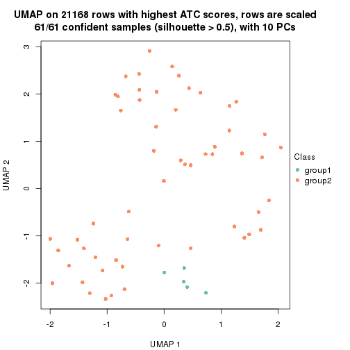
dimension_reduction(res, k = 3, method = "UMAP")
dimension_reduction(res, k = 4, method = "UMAP")
dimension_reduction(res, k = 5, method = "UMAP")
dimension_reduction(res, k = 6, method = "UMAP")
Following heatmap shows how subgroups are split when increasing k:
collect_classes(res)
Test correlation between subgroups and known annotations. If the known annotation is numeric, one-way ANOVA test is applied, and if the known annotation is discrete, chi-squared contingency table test is applied.
test_to_known_factors(res)
#> n disease.state(p) specimen(p) genotype/variation(p) other(p) k
#> ATC:hclust 61 0.766 0.3052 9.09e-01 0.8898 2
#> ATC:hclust 52 0.804 0.4475 5.90e-02 0.7736 3
#> ATC:hclust 49 0.821 0.0887 1.31e-06 0.0611 4
#> ATC:hclust 53 0.503 0.0743 5.88e-07 0.0738 5
#> ATC:hclust 51 0.669 0.1356 1.49e-06 0.1847 6
If matrix rows can be associated to genes, consider to use functional_enrichment(res,
...) to perform function enrichment for the signature genes. See this vignette for more detailed explanations.
The object with results only for a single top-value method and a single partition method can be extracted as:
res = res_list["ATC", "kmeans"]
# you can also extract it by
# res = res_list["ATC:kmeans"]
A summary of res and all the functions that can be applied to it:
res
#> A 'ConsensusPartition' object with k = 2, 3, 4, 5, 6.
#> On a matrix with 21168 rows and 61 columns.
#> Top rows (1000, 2000, 3000, 4000, 5000) are extracted by 'ATC' method.
#> Subgroups are detected by 'kmeans' method.
#> Performed in total 1250 partitions by row resampling.
#> Best k for subgroups seems to be 2.
#>
#> Following methods can be applied to this 'ConsensusPartition' object:
#> [1] "cola_report" "collect_classes" "collect_plots"
#> [4] "collect_stats" "colnames" "compare_signatures"
#> [7] "consensus_heatmap" "dimension_reduction" "functional_enrichment"
#> [10] "get_anno_col" "get_anno" "get_classes"
#> [13] "get_consensus" "get_matrix" "get_membership"
#> [16] "get_param" "get_signatures" "get_stats"
#> [19] "is_best_k" "is_stable_k" "membership_heatmap"
#> [22] "ncol" "nrow" "plot_ecdf"
#> [25] "rownames" "select_partition_number" "show"
#> [28] "suggest_best_k" "test_to_known_factors"
collect_plots() function collects all the plots made from res for all k (number of partitions)
into one single page to provide an easy and fast comparison between different k.
collect_plots(res)
The plots are:
k and the heatmap of
predicted classes for each k.k.k.k.All the plots in panels can be made by individual functions and they are plotted later in this section.
select_partition_number() produces several plots showing different
statistics for choosing “optimized” k. There are following statistics:
k;k, the area increased is defined as \(A_k - A_{k-1}\).The detailed explanations of these statistics can be found in the cola vignette.
Generally speaking, lower PAC score, higher mean silhouette score or higher
concordance corresponds to better partition. Rand index and Jaccard index
measure how similar the current partition is compared to partition with k-1.
If they are too similar, we won't accept k is better than k-1.
select_partition_number(res)
The numeric values for all these statistics can be obtained by get_stats().
get_stats(res)
#> k 1-PAC mean_silhouette concordance area_increased Rand Jaccard
#> 2 2 0.868 0.920 0.963 0.4594 0.522 0.522
#> 3 3 0.630 0.770 0.874 0.3713 0.729 0.526
#> 4 4 0.685 0.746 0.804 0.1374 0.940 0.835
#> 5 5 0.688 0.696 0.684 0.0792 0.902 0.684
#> 6 6 0.725 0.606 0.633 0.0539 0.868 0.492
suggest_best_k() suggests the best \(k\) based on these statistics. The rules are as follows:
suggest_best_k(res)
#> [1] 2
Following shows the table of the partitions (You need to click the show/hide
code output link to see it). The membership matrix (columns with name p*)
is inferred by
clue::cl_consensus()
function with the SE method. Basically the value in the membership matrix
represents the probability to belong to a certain group. The finall class
label for an item is determined with the group with highest probability it
belongs to.
In get_classes() function, the entropy is calculated from the membership
matrix and the silhouette score is calculated from the consensus matrix.
cbind(get_classes(res, k = 2), get_membership(res, k = 2))
#> class entropy silhouette p1 p2
#> GSM590886 2 0.000 0.990 0.000 1.000
#> GSM590859 2 0.000 0.990 0.000 1.000
#> GSM590864 2 0.000 0.990 0.000 1.000
#> GSM590844 2 0.000 0.990 0.000 1.000
#> GSM590878 2 0.000 0.990 0.000 1.000
#> GSM590841 2 0.000 0.990 0.000 1.000
#> GSM590843 2 0.000 0.990 0.000 1.000
#> GSM590895 2 0.000 0.990 0.000 1.000
#> GSM590897 2 0.000 0.990 0.000 1.000
#> GSM590842 1 0.795 0.718 0.760 0.240
#> GSM590869 1 0.802 0.714 0.756 0.244
#> GSM590874 2 0.000 0.990 0.000 1.000
#> GSM590889 2 0.000 0.990 0.000 1.000
#> GSM590851 1 0.000 0.909 1.000 0.000
#> GSM590873 2 0.000 0.990 0.000 1.000
#> GSM590898 2 0.000 0.990 0.000 1.000
#> GSM590882 1 0.000 0.909 1.000 0.000
#> GSM590849 1 0.000 0.909 1.000 0.000
#> GSM590892 2 0.000 0.990 0.000 1.000
#> GSM590900 2 0.000 0.990 0.000 1.000
#> GSM590896 2 0.000 0.990 0.000 1.000
#> GSM590870 1 0.000 0.909 1.000 0.000
#> GSM590853 1 0.000 0.909 1.000 0.000
#> GSM590884 1 0.000 0.909 1.000 0.000
#> GSM590847 2 0.000 0.990 0.000 1.000
#> GSM590857 2 0.000 0.990 0.000 1.000
#> GSM590865 2 0.000 0.990 0.000 1.000
#> GSM590872 2 0.000 0.990 0.000 1.000
#> GSM590883 2 0.000 0.990 0.000 1.000
#> GSM590887 2 0.000 0.990 0.000 1.000
#> GSM590888 2 0.000 0.990 0.000 1.000
#> GSM590891 2 0.000 0.990 0.000 1.000
#> GSM590899 2 0.000 0.990 0.000 1.000
#> GSM590848 1 0.000 0.909 1.000 0.000
#> GSM590850 2 0.909 0.429 0.324 0.676
#> GSM590855 1 0.000 0.909 1.000 0.000
#> GSM590860 1 0.000 0.909 1.000 0.000
#> GSM590890 2 0.000 0.990 0.000 1.000
#> GSM590894 2 0.000 0.990 0.000 1.000
#> GSM590852 1 0.000 0.909 1.000 0.000
#> GSM590858 1 0.921 0.586 0.664 0.336
#> GSM590862 1 0.943 0.541 0.640 0.360
#> GSM590867 1 0.000 0.909 1.000 0.000
#> GSM590871 1 0.000 0.909 1.000 0.000
#> GSM590877 2 0.000 0.990 0.000 1.000
#> GSM590879 1 0.921 0.586 0.664 0.336
#> GSM590880 1 0.000 0.909 1.000 0.000
#> GSM590845 1 0.000 0.909 1.000 0.000
#> GSM590846 2 0.000 0.990 0.000 1.000
#> GSM590875 2 0.000 0.990 0.000 1.000
#> GSM590881 2 0.000 0.990 0.000 1.000
#> GSM590854 2 0.000 0.990 0.000 1.000
#> GSM590856 2 0.000 0.990 0.000 1.000
#> GSM590861 1 0.000 0.909 1.000 0.000
#> GSM590863 2 0.000 0.990 0.000 1.000
#> GSM590866 1 0.000 0.909 1.000 0.000
#> GSM590876 2 0.000 0.990 0.000 1.000
#> GSM590893 2 0.000 0.990 0.000 1.000
#> GSM590885 1 0.966 0.471 0.608 0.392
#> GSM590840 1 0.000 0.909 1.000 0.000
#> GSM590868 2 0.000 0.990 0.000 1.000
cbind(get_classes(res, k = 3), get_membership(res, k = 3))
#> class entropy silhouette p1 p2 p3
#> GSM590886 1 0.5810 0.627 0.664 0.336 0.000
#> GSM590859 2 0.0237 0.926 0.004 0.996 0.000
#> GSM590864 1 0.5216 0.700 0.740 0.260 0.000
#> GSM590844 2 0.0000 0.928 0.000 1.000 0.000
#> GSM590878 2 0.0747 0.923 0.016 0.984 0.000
#> GSM590841 2 0.5760 0.553 0.328 0.672 0.000
#> GSM590843 2 0.0000 0.928 0.000 1.000 0.000
#> GSM590895 2 0.0000 0.928 0.000 1.000 0.000
#> GSM590897 2 0.0000 0.928 0.000 1.000 0.000
#> GSM590842 1 0.1774 0.687 0.960 0.016 0.024
#> GSM590869 1 0.5363 0.226 0.724 0.000 0.276
#> GSM590874 1 0.5810 0.627 0.664 0.336 0.000
#> GSM590889 1 0.5058 0.711 0.756 0.244 0.000
#> GSM590851 1 0.4931 0.403 0.768 0.000 0.232
#> GSM590873 1 0.4654 0.733 0.792 0.208 0.000
#> GSM590898 2 0.1411 0.914 0.036 0.964 0.000
#> GSM590882 3 0.4605 0.868 0.204 0.000 0.796
#> GSM590849 3 0.0000 0.816 0.000 0.000 1.000
#> GSM590892 2 0.0000 0.928 0.000 1.000 0.000
#> GSM590900 2 0.5058 0.644 0.244 0.756 0.000
#> GSM590896 1 0.5835 0.621 0.660 0.340 0.000
#> GSM590870 3 0.4605 0.868 0.204 0.000 0.796
#> GSM590853 3 0.5529 0.778 0.296 0.000 0.704
#> GSM590884 3 0.6309 0.385 0.496 0.000 0.504
#> GSM590847 2 0.0000 0.928 0.000 1.000 0.000
#> GSM590857 2 0.1163 0.914 0.028 0.972 0.000
#> GSM590865 2 0.6225 0.163 0.432 0.568 0.000
#> GSM590872 2 0.1411 0.914 0.036 0.964 0.000
#> GSM590883 2 0.2066 0.909 0.060 0.940 0.000
#> GSM590887 2 0.1411 0.914 0.036 0.964 0.000
#> GSM590888 2 0.1031 0.914 0.024 0.976 0.000
#> GSM590891 2 0.0000 0.928 0.000 1.000 0.000
#> GSM590899 2 0.1411 0.914 0.036 0.964 0.000
#> GSM590848 1 0.4931 0.403 0.768 0.000 0.232
#> GSM590850 1 0.1647 0.701 0.960 0.036 0.004
#> GSM590855 1 0.4974 0.394 0.764 0.000 0.236
#> GSM590860 3 0.0000 0.816 0.000 0.000 1.000
#> GSM590890 1 0.5810 0.627 0.664 0.336 0.000
#> GSM590894 1 0.4654 0.733 0.792 0.208 0.000
#> GSM590852 3 0.4605 0.868 0.204 0.000 0.796
#> GSM590858 1 0.1751 0.698 0.960 0.028 0.012
#> GSM590862 1 0.1751 0.698 0.960 0.028 0.012
#> GSM590867 3 0.4605 0.868 0.204 0.000 0.796
#> GSM590871 3 0.0000 0.816 0.000 0.000 1.000
#> GSM590877 1 0.5835 0.621 0.660 0.340 0.000
#> GSM590879 1 0.1751 0.698 0.960 0.028 0.012
#> GSM590880 3 0.4605 0.868 0.204 0.000 0.796
#> GSM590845 3 0.4605 0.868 0.204 0.000 0.796
#> GSM590846 2 0.0000 0.928 0.000 1.000 0.000
#> GSM590875 2 0.1411 0.914 0.036 0.964 0.000
#> GSM590881 2 0.0000 0.928 0.000 1.000 0.000
#> GSM590854 2 0.0000 0.928 0.000 1.000 0.000
#> GSM590856 2 0.0000 0.928 0.000 1.000 0.000
#> GSM590861 3 0.0000 0.816 0.000 0.000 1.000
#> GSM590863 2 0.3941 0.776 0.156 0.844 0.000
#> GSM590866 3 0.4654 0.867 0.208 0.000 0.792
#> GSM590876 2 0.4235 0.744 0.176 0.824 0.000
#> GSM590893 2 0.1411 0.914 0.036 0.964 0.000
#> GSM590885 1 0.0237 0.681 0.996 0.000 0.004
#> GSM590840 3 0.0000 0.816 0.000 0.000 1.000
#> GSM590868 2 0.0000 0.928 0.000 1.000 0.000
cbind(get_classes(res, k = 4), get_membership(res, k = 4))
#> class entropy silhouette p1 p2 p3 p4
#> GSM590886 1 0.2983 0.825 0.892 0.068 0.000 0.040
#> GSM590859 2 0.4595 0.785 0.040 0.776 0.000 0.184
#> GSM590864 1 0.2644 0.826 0.908 0.032 0.000 0.060
#> GSM590844 2 0.0000 0.815 0.000 1.000 0.000 0.000
#> GSM590878 2 0.4053 0.792 0.004 0.768 0.000 0.228
#> GSM590841 4 0.5010 0.205 0.108 0.120 0.000 0.772
#> GSM590843 2 0.0000 0.815 0.000 1.000 0.000 0.000
#> GSM590895 2 0.0000 0.815 0.000 1.000 0.000 0.000
#> GSM590897 2 0.0000 0.815 0.000 1.000 0.000 0.000
#> GSM590842 1 0.2704 0.820 0.876 0.000 0.000 0.124
#> GSM590869 4 0.2699 0.348 0.068 0.000 0.028 0.904
#> GSM590874 1 0.3056 0.823 0.888 0.072 0.000 0.040
#> GSM590889 1 0.1936 0.837 0.940 0.028 0.000 0.032
#> GSM590851 1 0.5966 0.560 0.648 0.000 0.072 0.280
#> GSM590873 1 0.0921 0.838 0.972 0.028 0.000 0.000
#> GSM590898 2 0.4677 0.760 0.004 0.680 0.000 0.316
#> GSM590882 4 0.5778 0.661 0.028 0.000 0.472 0.500
#> GSM590849 3 0.0000 1.000 0.000 0.000 1.000 0.000
#> GSM590892 2 0.0000 0.815 0.000 1.000 0.000 0.000
#> GSM590900 2 0.7252 0.526 0.292 0.528 0.000 0.180
#> GSM590896 1 0.3056 0.823 0.888 0.072 0.000 0.040
#> GSM590870 4 0.5778 0.661 0.028 0.000 0.472 0.500
#> GSM590853 4 0.6189 0.606 0.060 0.000 0.372 0.568
#> GSM590884 4 0.6897 0.406 0.256 0.000 0.160 0.584
#> GSM590847 2 0.0000 0.815 0.000 1.000 0.000 0.000
#> GSM590857 2 0.4920 0.779 0.052 0.756 0.000 0.192
#> GSM590865 2 0.7866 0.303 0.348 0.376 0.000 0.276
#> GSM590872 2 0.4193 0.773 0.000 0.732 0.000 0.268
#> GSM590883 2 0.6123 0.713 0.056 0.572 0.000 0.372
#> GSM590887 2 0.5835 0.722 0.040 0.588 0.000 0.372
#> GSM590888 2 0.6079 0.741 0.072 0.628 0.000 0.300
#> GSM590891 2 0.0000 0.815 0.000 1.000 0.000 0.000
#> GSM590899 2 0.4655 0.761 0.004 0.684 0.000 0.312
#> GSM590848 1 0.5966 0.560 0.648 0.000 0.072 0.280
#> GSM590850 1 0.2081 0.830 0.916 0.000 0.000 0.084
#> GSM590855 1 0.5966 0.560 0.648 0.000 0.072 0.280
#> GSM590860 3 0.0000 1.000 0.000 0.000 1.000 0.000
#> GSM590890 1 0.2892 0.825 0.896 0.068 0.000 0.036
#> GSM590894 1 0.2032 0.837 0.936 0.028 0.000 0.036
#> GSM590852 4 0.5778 0.661 0.028 0.000 0.472 0.500
#> GSM590858 1 0.2760 0.818 0.872 0.000 0.000 0.128
#> GSM590862 1 0.2704 0.820 0.876 0.000 0.000 0.124
#> GSM590867 4 0.5776 0.661 0.028 0.000 0.468 0.504
#> GSM590871 3 0.0000 1.000 0.000 0.000 1.000 0.000
#> GSM590877 1 0.2965 0.823 0.892 0.072 0.000 0.036
#> GSM590879 1 0.2647 0.821 0.880 0.000 0.000 0.120
#> GSM590880 4 0.5778 0.661 0.028 0.000 0.472 0.500
#> GSM590845 4 0.5778 0.661 0.028 0.000 0.472 0.500
#> GSM590846 2 0.0000 0.815 0.000 1.000 0.000 0.000
#> GSM590875 2 0.4655 0.761 0.004 0.684 0.000 0.312
#> GSM590881 2 0.0000 0.815 0.000 1.000 0.000 0.000
#> GSM590854 2 0.0000 0.815 0.000 1.000 0.000 0.000
#> GSM590856 2 0.0000 0.815 0.000 1.000 0.000 0.000
#> GSM590861 3 0.0000 1.000 0.000 0.000 1.000 0.000
#> GSM590863 2 0.7073 0.660 0.180 0.564 0.000 0.256
#> GSM590866 4 0.5387 0.617 0.016 0.000 0.400 0.584
#> GSM590876 2 0.7054 0.650 0.196 0.572 0.000 0.232
#> GSM590893 2 0.4608 0.765 0.004 0.692 0.000 0.304
#> GSM590885 1 0.2814 0.822 0.868 0.000 0.000 0.132
#> GSM590840 3 0.0000 1.000 0.000 0.000 1.000 0.000
#> GSM590868 2 0.0000 0.815 0.000 1.000 0.000 0.000
cbind(get_classes(res, k = 5), get_membership(res, k = 5))
#> class entropy silhouette p1 p2 p3 p4 p5
#> GSM590886 1 0.2625 0.700 0.876 0.016 0.000 0.108 0.000
#> GSM590859 4 0.3421 0.489 0.000 0.204 0.008 0.788 0.000
#> GSM590864 1 0.3752 0.550 0.708 0.000 0.000 0.292 0.000
#> GSM590844 2 0.3661 1.000 0.000 0.724 0.000 0.276 0.000
#> GSM590878 4 0.5594 0.413 0.000 0.284 0.108 0.608 0.000
#> GSM590841 3 0.5095 0.185 0.004 0.036 0.592 0.368 0.000
#> GSM590843 2 0.3661 1.000 0.000 0.724 0.000 0.276 0.000
#> GSM590895 2 0.3661 1.000 0.000 0.724 0.000 0.276 0.000
#> GSM590897 2 0.3661 1.000 0.000 0.724 0.000 0.276 0.000
#> GSM590842 1 0.5814 0.674 0.628 0.168 0.200 0.004 0.000
#> GSM590869 3 0.3611 0.462 0.004 0.008 0.780 0.208 0.000
#> GSM590874 1 0.2625 0.700 0.876 0.016 0.000 0.108 0.000
#> GSM590889 1 0.1908 0.708 0.908 0.000 0.000 0.092 0.000
#> GSM590851 1 0.7469 0.468 0.436 0.176 0.328 0.000 0.060
#> GSM590873 1 0.1043 0.710 0.960 0.000 0.000 0.040 0.000
#> GSM590898 4 0.5819 0.476 0.004 0.232 0.144 0.620 0.000
#> GSM590882 3 0.4416 0.686 0.000 0.012 0.632 0.000 0.356
#> GSM590849 5 0.0000 0.995 0.000 0.000 0.000 0.000 1.000
#> GSM590892 2 0.3661 1.000 0.000 0.724 0.000 0.276 0.000
#> GSM590900 4 0.4627 0.531 0.132 0.100 0.008 0.760 0.000
#> GSM590896 1 0.2625 0.700 0.876 0.016 0.000 0.108 0.000
#> GSM590870 3 0.4045 0.687 0.000 0.000 0.644 0.000 0.356
#> GSM590853 3 0.3707 0.659 0.000 0.000 0.716 0.000 0.284
#> GSM590884 3 0.5952 0.367 0.128 0.104 0.688 0.000 0.080
#> GSM590847 2 0.3661 1.000 0.000 0.724 0.000 0.276 0.000
#> GSM590857 4 0.3353 0.496 0.000 0.196 0.008 0.796 0.000
#> GSM590865 4 0.5849 0.481 0.112 0.164 0.044 0.680 0.000
#> GSM590872 4 0.5870 0.378 0.000 0.276 0.140 0.584 0.000
#> GSM590883 4 0.2740 0.621 0.000 0.028 0.096 0.876 0.000
#> GSM590887 4 0.2959 0.619 0.000 0.036 0.100 0.864 0.000
#> GSM590888 4 0.1484 0.615 0.008 0.048 0.000 0.944 0.000
#> GSM590891 2 0.3661 1.000 0.000 0.724 0.000 0.276 0.000
#> GSM590899 4 0.5843 0.471 0.004 0.236 0.144 0.616 0.000
#> GSM590848 1 0.7469 0.468 0.436 0.176 0.328 0.000 0.060
#> GSM590850 1 0.5587 0.687 0.656 0.152 0.188 0.004 0.000
#> GSM590855 1 0.7469 0.468 0.436 0.176 0.328 0.000 0.060
#> GSM590860 5 0.0000 0.995 0.000 0.000 0.000 0.000 1.000
#> GSM590890 1 0.2411 0.702 0.884 0.008 0.000 0.108 0.000
#> GSM590894 1 0.1851 0.708 0.912 0.000 0.000 0.088 0.000
#> GSM590852 3 0.4045 0.687 0.000 0.000 0.644 0.000 0.356
#> GSM590858 1 0.5821 0.675 0.628 0.176 0.192 0.004 0.000
#> GSM590862 1 0.5618 0.685 0.652 0.152 0.192 0.004 0.000
#> GSM590867 3 0.4585 0.685 0.000 0.020 0.628 0.000 0.352
#> GSM590871 5 0.0000 0.995 0.000 0.000 0.000 0.000 1.000
#> GSM590877 1 0.2625 0.700 0.876 0.016 0.000 0.108 0.000
#> GSM590879 1 0.5618 0.685 0.652 0.152 0.192 0.004 0.000
#> GSM590880 3 0.4682 0.682 0.000 0.024 0.620 0.000 0.356
#> GSM590845 3 0.4045 0.687 0.000 0.000 0.644 0.000 0.356
#> GSM590846 2 0.3661 1.000 0.000 0.724 0.000 0.276 0.000
#> GSM590875 4 0.5843 0.471 0.004 0.236 0.144 0.616 0.000
#> GSM590881 2 0.3661 1.000 0.000 0.724 0.000 0.276 0.000
#> GSM590854 2 0.3661 1.000 0.000 0.724 0.000 0.276 0.000
#> GSM590856 2 0.3661 1.000 0.000 0.724 0.000 0.276 0.000
#> GSM590861 5 0.0000 0.995 0.000 0.000 0.000 0.000 1.000
#> GSM590863 4 0.4252 0.569 0.056 0.128 0.020 0.796 0.000
#> GSM590866 3 0.8084 0.376 0.004 0.124 0.444 0.220 0.208
#> GSM590876 4 0.3745 0.573 0.068 0.096 0.008 0.828 0.000
#> GSM590893 4 0.5555 0.473 0.000 0.232 0.132 0.636 0.000
#> GSM590885 1 0.4621 0.698 0.744 0.076 0.176 0.004 0.000
#> GSM590840 5 0.0609 0.981 0.000 0.020 0.000 0.000 0.980
#> GSM590868 2 0.3661 1.000 0.000 0.724 0.000 0.276 0.000
cbind(get_classes(res, k = 6), get_membership(res, k = 6))
#> class entropy silhouette p1 p2 p3 p4 p5 p6
#> GSM590886 1 0.0146 0.86450 0.996 0.000 0.000 0.004 0.000 0.000
#> GSM590859 6 0.5484 0.65979 0.012 0.128 0.000 0.272 0.000 0.588
#> GSM590864 1 0.3982 0.08207 0.536 0.000 0.000 0.004 0.000 0.460
#> GSM590844 2 0.3647 0.99941 0.000 0.640 0.000 0.360 0.000 0.000
#> GSM590878 4 0.1995 0.67901 0.000 0.036 0.000 0.912 0.000 0.052
#> GSM590841 4 0.6312 0.19947 0.012 0.284 0.124 0.540 0.000 0.040
#> GSM590843 2 0.3647 0.99941 0.000 0.640 0.000 0.360 0.000 0.000
#> GSM590895 2 0.3647 0.99941 0.000 0.640 0.000 0.360 0.000 0.000
#> GSM590897 2 0.3647 0.99941 0.000 0.640 0.000 0.360 0.000 0.000
#> GSM590842 3 0.4326 0.05770 0.368 0.016 0.608 0.000 0.000 0.008
#> GSM590869 3 0.7510 0.26164 0.000 0.292 0.344 0.196 0.000 0.168
#> GSM590874 1 0.0146 0.86450 0.996 0.000 0.000 0.004 0.000 0.000
#> GSM590889 1 0.0363 0.86355 0.988 0.000 0.000 0.000 0.000 0.012
#> GSM590851 3 0.3731 0.22400 0.240 0.000 0.736 0.000 0.004 0.020
#> GSM590873 1 0.0363 0.85693 0.988 0.000 0.012 0.000 0.000 0.000
#> GSM590898 4 0.0508 0.72621 0.012 0.000 0.004 0.984 0.000 0.000
#> GSM590882 3 0.7482 0.29746 0.000 0.248 0.376 0.000 0.172 0.204
#> GSM590849 5 0.0000 0.99657 0.000 0.000 0.000 0.000 1.000 0.000
#> GSM590892 2 0.3659 0.99344 0.000 0.636 0.000 0.364 0.000 0.000
#> GSM590900 6 0.5956 0.71059 0.072 0.076 0.008 0.236 0.000 0.608
#> GSM590896 1 0.0146 0.86450 0.996 0.000 0.000 0.004 0.000 0.000
#> GSM590870 3 0.7445 0.29874 0.000 0.284 0.368 0.000 0.172 0.176
#> GSM590853 3 0.7230 0.32554 0.000 0.292 0.424 0.008 0.096 0.180
#> GSM590884 3 0.4184 0.34537 0.000 0.124 0.752 0.000 0.004 0.120
#> GSM590847 2 0.3647 0.99941 0.000 0.640 0.000 0.360 0.000 0.000
#> GSM590857 6 0.5484 0.65979 0.012 0.128 0.000 0.272 0.000 0.588
#> GSM590865 6 0.5396 0.65423 0.060 0.040 0.048 0.144 0.000 0.708
#> GSM590872 4 0.0790 0.71520 0.000 0.032 0.000 0.968 0.000 0.000
#> GSM590883 4 0.4266 0.02926 0.004 0.020 0.000 0.620 0.000 0.356
#> GSM590887 4 0.4106 0.17817 0.004 0.020 0.000 0.664 0.000 0.312
#> GSM590888 6 0.5053 0.41483 0.036 0.020 0.000 0.448 0.000 0.496
#> GSM590891 2 0.3647 0.99941 0.000 0.640 0.000 0.360 0.000 0.000
#> GSM590899 4 0.0508 0.72621 0.012 0.000 0.004 0.984 0.000 0.000
#> GSM590848 3 0.3731 0.22400 0.240 0.000 0.736 0.000 0.004 0.020
#> GSM590850 3 0.4101 0.00166 0.408 0.000 0.580 0.000 0.000 0.012
#> GSM590855 3 0.3731 0.22400 0.240 0.000 0.736 0.000 0.004 0.020
#> GSM590860 5 0.0000 0.99657 0.000 0.000 0.000 0.000 1.000 0.000
#> GSM590890 1 0.0363 0.86355 0.988 0.000 0.000 0.000 0.000 0.012
#> GSM590894 1 0.0146 0.86450 0.996 0.000 0.000 0.004 0.000 0.000
#> GSM590852 3 0.7434 0.29913 0.000 0.288 0.368 0.000 0.172 0.172
#> GSM590858 3 0.4199 0.04271 0.380 0.000 0.600 0.000 0.000 0.020
#> GSM590862 3 0.4387 0.02483 0.392 0.008 0.584 0.000 0.000 0.016
#> GSM590867 3 0.7517 0.29210 0.000 0.252 0.364 0.000 0.172 0.212
#> GSM590871 5 0.0000 0.99657 0.000 0.000 0.000 0.000 1.000 0.000
#> GSM590877 1 0.0363 0.86355 0.988 0.000 0.000 0.000 0.000 0.012
#> GSM590879 3 0.4084 0.01608 0.400 0.000 0.588 0.000 0.000 0.012
#> GSM590880 3 0.7500 0.29308 0.000 0.256 0.368 0.000 0.172 0.204
#> GSM590845 3 0.7479 0.29640 0.000 0.276 0.364 0.000 0.172 0.188
#> GSM590846 2 0.3647 0.99941 0.000 0.640 0.000 0.360 0.000 0.000
#> GSM590875 4 0.0508 0.72621 0.012 0.000 0.004 0.984 0.000 0.000
#> GSM590881 2 0.3647 0.99941 0.000 0.640 0.000 0.360 0.000 0.000
#> GSM590854 2 0.3647 0.99941 0.000 0.640 0.000 0.360 0.000 0.000
#> GSM590856 2 0.3647 0.99941 0.000 0.640 0.000 0.360 0.000 0.000
#> GSM590861 5 0.0000 0.99657 0.000 0.000 0.000 0.000 1.000 0.000
#> GSM590863 6 0.5084 0.69055 0.064 0.060 0.000 0.184 0.000 0.692
#> GSM590866 6 0.4775 0.14306 0.000 0.104 0.120 0.000 0.044 0.732
#> GSM590876 6 0.5850 0.70775 0.072 0.084 0.000 0.244 0.000 0.600
#> GSM590893 4 0.0972 0.71527 0.000 0.028 0.000 0.964 0.000 0.008
#> GSM590885 1 0.5017 0.15867 0.532 0.032 0.416 0.004 0.000 0.016
#> GSM590840 5 0.0622 0.98621 0.000 0.008 0.000 0.000 0.980 0.012
#> GSM590868 2 0.3647 0.99941 0.000 0.640 0.000 0.360 0.000 0.000
Heatmaps for the consensus matrix. It visualizes the probability of two samples to be in a same group.
consensus_heatmap(res, k = 2)
consensus_heatmap(res, k = 3)
consensus_heatmap(res, k = 4)
consensus_heatmap(res, k = 5)

consensus_heatmap(res, k = 6)
Heatmaps for the membership of samples in all partitions to see how consistent they are:
membership_heatmap(res, k = 2)
membership_heatmap(res, k = 3)
membership_heatmap(res, k = 4)
membership_heatmap(res, k = 5)
membership_heatmap(res, k = 6)
As soon as we have had the classes for columns, we can look for signatures which are significantly different between classes which can be candidate marks for certain classes. Following are the heatmaps for signatures.
Signature heatmaps where rows are scaled:
get_signatures(res, k = 2)
get_signatures(res, k = 3)
get_signatures(res, k = 4)
get_signatures(res, k = 5)
get_signatures(res, k = 6)
Signature heatmaps where rows are not scaled:
get_signatures(res, k = 2, scale_rows = FALSE)
get_signatures(res, k = 3, scale_rows = FALSE)
get_signatures(res, k = 4, scale_rows = FALSE)
get_signatures(res, k = 5, scale_rows = FALSE)
get_signatures(res, k = 6, scale_rows = FALSE)
Compare the overlap of signatures from different k:
compare_signatures(res)
get_signature() returns a data frame invisibly. TO get the list of signatures, the function
call should be assigned to a variable explicitly. In following code, if plot argument is set
to FALSE, no heatmap is plotted while only the differential analysis is performed.
# code only for demonstration
tb = get_signature(res, k = ..., plot = FALSE)
An example of the output of tb is:
#> which_row fdr mean_1 mean_2 scaled_mean_1 scaled_mean_2 km
#> 1 38 0.042760348 8.373488 9.131774 -0.5533452 0.5164555 1
#> 2 40 0.018707592 7.106213 8.469186 -0.6173731 0.5762149 1
#> 3 55 0.019134737 10.221463 11.207825 -0.6159697 0.5749050 1
#> 4 59 0.006059896 5.921854 7.869574 -0.6899429 0.6439467 1
#> 5 60 0.018055526 8.928898 10.211722 -0.6204761 0.5791110 1
#> 6 98 0.009384629 15.714769 14.887706 0.6635654 -0.6193277 2
...
The columns in tb are:
which_row: row indices corresponding to the input matrix.fdr: FDR for the differential test. mean_x: The mean value in group x.scaled_mean_x: The mean value in group x after rows are scaled.km: Row groups if k-means clustering is applied to rows.UMAP plot which shows how samples are separated.
dimension_reduction(res, k = 2, method = "UMAP")
dimension_reduction(res, k = 3, method = "UMAP")
dimension_reduction(res, k = 4, method = "UMAP")
dimension_reduction(res, k = 5, method = "UMAP")
dimension_reduction(res, k = 6, method = "UMAP")

Following heatmap shows how subgroups are split when increasing k:
collect_classes(res)
Test correlation between subgroups and known annotations. If the known annotation is numeric, one-way ANOVA test is applied, and if the known annotation is discrete, chi-squared contingency table test is applied.
test_to_known_factors(res)
#> n disease.state(p) specimen(p) genotype/variation(p) other(p) k
#> ATC:kmeans 59 0.248 0.0766 5.09e-04 0.6449 2
#> ATC:kmeans 55 0.253 0.0391 4.20e-09 0.0648 3
#> ATC:kmeans 57 0.586 0.0620 7.18e-09 0.0789 4
#> ATC:kmeans 45 0.721 0.1790 5.94e-07 0.1491 5
#> ATC:kmeans 37 0.694 0.1999 1.42e-05 0.1336 6
If matrix rows can be associated to genes, consider to use functional_enrichment(res,
...) to perform function enrichment for the signature genes. See this vignette for more detailed explanations.
The object with results only for a single top-value method and a single partition method can be extracted as:
res = res_list["ATC", "skmeans"]
# you can also extract it by
# res = res_list["ATC:skmeans"]
A summary of res and all the functions that can be applied to it:
res
#> A 'ConsensusPartition' object with k = 2, 3, 4, 5, 6.
#> On a matrix with 21168 rows and 61 columns.
#> Top rows (1000, 2000, 3000, 4000, 5000) are extracted by 'ATC' method.
#> Subgroups are detected by 'skmeans' method.
#> Performed in total 1250 partitions by row resampling.
#> Best k for subgroups seems to be 2.
#>
#> Following methods can be applied to this 'ConsensusPartition' object:
#> [1] "cola_report" "collect_classes" "collect_plots"
#> [4] "collect_stats" "colnames" "compare_signatures"
#> [7] "consensus_heatmap" "dimension_reduction" "functional_enrichment"
#> [10] "get_anno_col" "get_anno" "get_classes"
#> [13] "get_consensus" "get_matrix" "get_membership"
#> [16] "get_param" "get_signatures" "get_stats"
#> [19] "is_best_k" "is_stable_k" "membership_heatmap"
#> [22] "ncol" "nrow" "plot_ecdf"
#> [25] "rownames" "select_partition_number" "show"
#> [28] "suggest_best_k" "test_to_known_factors"
collect_plots() function collects all the plots made from res for all k (number of partitions)
into one single page to provide an easy and fast comparison between different k.
collect_plots(res)
The plots are:
k and the heatmap of
predicted classes for each k.k.k.k.All the plots in panels can be made by individual functions and they are plotted later in this section.
select_partition_number() produces several plots showing different
statistics for choosing “optimized” k. There are following statistics:
k;k, the area increased is defined as \(A_k - A_{k-1}\).The detailed explanations of these statistics can be found in the cola vignette.
Generally speaking, lower PAC score, higher mean silhouette score or higher
concordance corresponds to better partition. Rand index and Jaccard index
measure how similar the current partition is compared to partition with k-1.
If they are too similar, we won't accept k is better than k-1.
select_partition_number(res)
The numeric values for all these statistics can be obtained by get_stats().
get_stats(res)
#> k 1-PAC mean_silhouette concordance area_increased Rand Jaccard
#> 2 2 1.000 0.982 0.992 0.4929 0.508 0.508
#> 3 3 0.894 0.898 0.959 0.3154 0.802 0.624
#> 4 4 0.742 0.656 0.844 0.1096 0.972 0.921
#> 5 5 0.725 0.639 0.810 0.0719 0.870 0.634
#> 6 6 0.731 0.740 0.836 0.0424 0.930 0.714
suggest_best_k() suggests the best \(k\) based on these statistics. The rules are as follows:
suggest_best_k(res)
#> [1] 2
Following shows the table of the partitions (You need to click the show/hide
code output link to see it). The membership matrix (columns with name p*)
is inferred by
clue::cl_consensus()
function with the SE method. Basically the value in the membership matrix
represents the probability to belong to a certain group. The finall class
label for an item is determined with the group with highest probability it
belongs to.
In get_classes() function, the entropy is calculated from the membership
matrix and the silhouette score is calculated from the consensus matrix.
cbind(get_classes(res, k = 2), get_membership(res, k = 2))
#> class entropy silhouette p1 p2
#> GSM590886 2 0.0000 0.991 0.000 1.000
#> GSM590859 2 0.0000 0.991 0.000 1.000
#> GSM590864 2 0.0000 0.991 0.000 1.000
#> GSM590844 2 0.0000 0.991 0.000 1.000
#> GSM590878 2 0.0000 0.991 0.000 1.000
#> GSM590841 1 0.6801 0.779 0.820 0.180
#> GSM590843 2 0.0000 0.991 0.000 1.000
#> GSM590895 2 0.0000 0.991 0.000 1.000
#> GSM590897 2 0.0000 0.991 0.000 1.000
#> GSM590842 1 0.0000 0.992 1.000 0.000
#> GSM590869 1 0.0000 0.992 1.000 0.000
#> GSM590874 2 0.0000 0.991 0.000 1.000
#> GSM590889 2 0.0000 0.991 0.000 1.000
#> GSM590851 1 0.0000 0.992 1.000 0.000
#> GSM590873 2 0.0938 0.980 0.012 0.988
#> GSM590898 2 0.0000 0.991 0.000 1.000
#> GSM590882 1 0.0000 0.992 1.000 0.000
#> GSM590849 1 0.0000 0.992 1.000 0.000
#> GSM590892 2 0.0000 0.991 0.000 1.000
#> GSM590900 2 0.0000 0.991 0.000 1.000
#> GSM590896 2 0.0000 0.991 0.000 1.000
#> GSM590870 1 0.0000 0.992 1.000 0.000
#> GSM590853 1 0.0000 0.992 1.000 0.000
#> GSM590884 1 0.0000 0.992 1.000 0.000
#> GSM590847 2 0.0000 0.991 0.000 1.000
#> GSM590857 2 0.0000 0.991 0.000 1.000
#> GSM590865 2 0.8608 0.603 0.284 0.716
#> GSM590872 2 0.0000 0.991 0.000 1.000
#> GSM590883 2 0.0000 0.991 0.000 1.000
#> GSM590887 2 0.0000 0.991 0.000 1.000
#> GSM590888 2 0.0000 0.991 0.000 1.000
#> GSM590891 2 0.0000 0.991 0.000 1.000
#> GSM590899 2 0.0000 0.991 0.000 1.000
#> GSM590848 1 0.0000 0.992 1.000 0.000
#> GSM590850 1 0.0000 0.992 1.000 0.000
#> GSM590855 1 0.0000 0.992 1.000 0.000
#> GSM590860 1 0.0000 0.992 1.000 0.000
#> GSM590890 2 0.0000 0.991 0.000 1.000
#> GSM590894 2 0.0672 0.984 0.008 0.992
#> GSM590852 1 0.0000 0.992 1.000 0.000
#> GSM590858 1 0.0000 0.992 1.000 0.000
#> GSM590862 1 0.0000 0.992 1.000 0.000
#> GSM590867 1 0.0000 0.992 1.000 0.000
#> GSM590871 1 0.0000 0.992 1.000 0.000
#> GSM590877 2 0.0000 0.991 0.000 1.000
#> GSM590879 1 0.0000 0.992 1.000 0.000
#> GSM590880 1 0.0000 0.992 1.000 0.000
#> GSM590845 1 0.0000 0.992 1.000 0.000
#> GSM590846 2 0.0000 0.991 0.000 1.000
#> GSM590875 2 0.0000 0.991 0.000 1.000
#> GSM590881 2 0.0000 0.991 0.000 1.000
#> GSM590854 2 0.0000 0.991 0.000 1.000
#> GSM590856 2 0.0000 0.991 0.000 1.000
#> GSM590861 1 0.0000 0.992 1.000 0.000
#> GSM590863 2 0.0000 0.991 0.000 1.000
#> GSM590866 1 0.0000 0.992 1.000 0.000
#> GSM590876 2 0.0000 0.991 0.000 1.000
#> GSM590893 2 0.0000 0.991 0.000 1.000
#> GSM590885 1 0.0000 0.992 1.000 0.000
#> GSM590840 1 0.0000 0.992 1.000 0.000
#> GSM590868 2 0.0000 0.991 0.000 1.000
cbind(get_classes(res, k = 3), get_membership(res, k = 3))
#> class entropy silhouette p1 p2 p3
#> GSM590886 1 0.0000 0.9139 1.000 0.000 0.000
#> GSM590859 2 0.0000 0.9969 0.000 1.000 0.000
#> GSM590864 1 0.0000 0.9139 1.000 0.000 0.000
#> GSM590844 2 0.0000 0.9969 0.000 1.000 0.000
#> GSM590878 2 0.0000 0.9969 0.000 1.000 0.000
#> GSM590841 3 0.5178 0.5849 0.000 0.256 0.744
#> GSM590843 2 0.0000 0.9969 0.000 1.000 0.000
#> GSM590895 2 0.0000 0.9969 0.000 1.000 0.000
#> GSM590897 2 0.0000 0.9969 0.000 1.000 0.000
#> GSM590842 3 0.6225 0.2177 0.432 0.000 0.568
#> GSM590869 3 0.0000 0.9110 0.000 0.000 1.000
#> GSM590874 1 0.0000 0.9139 1.000 0.000 0.000
#> GSM590889 1 0.0000 0.9139 1.000 0.000 0.000
#> GSM590851 3 0.4062 0.7775 0.164 0.000 0.836
#> GSM590873 1 0.0000 0.9139 1.000 0.000 0.000
#> GSM590898 2 0.0000 0.9969 0.000 1.000 0.000
#> GSM590882 3 0.0000 0.9110 0.000 0.000 1.000
#> GSM590849 3 0.0000 0.9110 0.000 0.000 1.000
#> GSM590892 2 0.0000 0.9969 0.000 1.000 0.000
#> GSM590900 2 0.0000 0.9969 0.000 1.000 0.000
#> GSM590896 1 0.0000 0.9139 1.000 0.000 0.000
#> GSM590870 3 0.0000 0.9110 0.000 0.000 1.000
#> GSM590853 3 0.0000 0.9110 0.000 0.000 1.000
#> GSM590884 3 0.0000 0.9110 0.000 0.000 1.000
#> GSM590847 2 0.0000 0.9969 0.000 1.000 0.000
#> GSM590857 2 0.0000 0.9969 0.000 1.000 0.000
#> GSM590865 2 0.2496 0.9150 0.004 0.928 0.068
#> GSM590872 2 0.0000 0.9969 0.000 1.000 0.000
#> GSM590883 2 0.0000 0.9969 0.000 1.000 0.000
#> GSM590887 2 0.0000 0.9969 0.000 1.000 0.000
#> GSM590888 2 0.0000 0.9969 0.000 1.000 0.000
#> GSM590891 2 0.0000 0.9969 0.000 1.000 0.000
#> GSM590899 2 0.0000 0.9969 0.000 1.000 0.000
#> GSM590848 3 0.4121 0.7730 0.168 0.000 0.832
#> GSM590850 1 0.0892 0.9020 0.980 0.000 0.020
#> GSM590855 3 0.4062 0.7775 0.164 0.000 0.836
#> GSM590860 3 0.0000 0.9110 0.000 0.000 1.000
#> GSM590890 1 0.0000 0.9139 1.000 0.000 0.000
#> GSM590894 1 0.0000 0.9139 1.000 0.000 0.000
#> GSM590852 3 0.0000 0.9110 0.000 0.000 1.000
#> GSM590858 1 0.4750 0.7075 0.784 0.000 0.216
#> GSM590862 1 0.6299 0.0406 0.524 0.000 0.476
#> GSM590867 3 0.0000 0.9110 0.000 0.000 1.000
#> GSM590871 3 0.0000 0.9110 0.000 0.000 1.000
#> GSM590877 1 0.0000 0.9139 1.000 0.000 0.000
#> GSM590879 1 0.4555 0.7296 0.800 0.000 0.200
#> GSM590880 3 0.0000 0.9110 0.000 0.000 1.000
#> GSM590845 3 0.0000 0.9110 0.000 0.000 1.000
#> GSM590846 2 0.0000 0.9969 0.000 1.000 0.000
#> GSM590875 2 0.0000 0.9969 0.000 1.000 0.000
#> GSM590881 2 0.0000 0.9969 0.000 1.000 0.000
#> GSM590854 2 0.0000 0.9969 0.000 1.000 0.000
#> GSM590856 2 0.0000 0.9969 0.000 1.000 0.000
#> GSM590861 3 0.0000 0.9110 0.000 0.000 1.000
#> GSM590863 2 0.0000 0.9969 0.000 1.000 0.000
#> GSM590866 3 0.0000 0.9110 0.000 0.000 1.000
#> GSM590876 2 0.0000 0.9969 0.000 1.000 0.000
#> GSM590893 2 0.0000 0.9969 0.000 1.000 0.000
#> GSM590885 3 0.5621 0.5466 0.308 0.000 0.692
#> GSM590840 3 0.0000 0.9110 0.000 0.000 1.000
#> GSM590868 2 0.0000 0.9969 0.000 1.000 0.000
cbind(get_classes(res, k = 4), get_membership(res, k = 4))
#> class entropy silhouette p1 p2 p3 p4
#> GSM590886 1 0.0000 0.85304 1.000 0.000 0.000 0.000
#> GSM590859 2 0.2530 0.73918 0.000 0.888 0.000 0.112
#> GSM590864 1 0.2676 0.79013 0.896 0.012 0.000 0.092
#> GSM590844 2 0.0336 0.79297 0.000 0.992 0.000 0.008
#> GSM590878 2 0.3444 0.67902 0.000 0.816 0.000 0.184
#> GSM590841 4 0.7239 0.00000 0.000 0.156 0.344 0.500
#> GSM590843 2 0.0000 0.79587 0.000 1.000 0.000 0.000
#> GSM590895 2 0.0000 0.79587 0.000 1.000 0.000 0.000
#> GSM590897 2 0.0000 0.79587 0.000 1.000 0.000 0.000
#> GSM590842 3 0.7743 0.18474 0.232 0.000 0.400 0.368
#> GSM590869 3 0.3688 0.51318 0.000 0.000 0.792 0.208
#> GSM590874 1 0.0000 0.85304 1.000 0.000 0.000 0.000
#> GSM590889 1 0.0000 0.85304 1.000 0.000 0.000 0.000
#> GSM590851 3 0.5271 0.48960 0.020 0.000 0.640 0.340
#> GSM590873 1 0.0707 0.84588 0.980 0.000 0.000 0.020
#> GSM590898 2 0.4948 0.33556 0.000 0.560 0.000 0.440
#> GSM590882 3 0.0469 0.76640 0.000 0.000 0.988 0.012
#> GSM590849 3 0.0000 0.76937 0.000 0.000 1.000 0.000
#> GSM590892 2 0.0000 0.79587 0.000 1.000 0.000 0.000
#> GSM590900 2 0.2924 0.73353 0.016 0.884 0.000 0.100
#> GSM590896 1 0.0000 0.85304 1.000 0.000 0.000 0.000
#> GSM590870 3 0.1637 0.74121 0.000 0.000 0.940 0.060
#> GSM590853 3 0.1637 0.74121 0.000 0.000 0.940 0.060
#> GSM590884 3 0.0188 0.76835 0.000 0.000 0.996 0.004
#> GSM590847 2 0.0000 0.79587 0.000 1.000 0.000 0.000
#> GSM590857 2 0.2530 0.73918 0.000 0.888 0.000 0.112
#> GSM590865 2 0.6194 0.41451 0.008 0.640 0.064 0.288
#> GSM590872 2 0.4925 0.36006 0.000 0.572 0.000 0.428
#> GSM590883 2 0.4790 0.44466 0.000 0.620 0.000 0.380
#> GSM590887 2 0.4843 0.41663 0.000 0.604 0.000 0.396
#> GSM590888 2 0.2469 0.74695 0.000 0.892 0.000 0.108
#> GSM590891 2 0.0000 0.79587 0.000 1.000 0.000 0.000
#> GSM590899 2 0.4948 0.33556 0.000 0.560 0.000 0.440
#> GSM590848 3 0.5548 0.47821 0.032 0.000 0.628 0.340
#> GSM590850 1 0.6031 0.57625 0.564 0.000 0.048 0.388
#> GSM590855 3 0.5252 0.49321 0.020 0.000 0.644 0.336
#> GSM590860 3 0.0000 0.76937 0.000 0.000 1.000 0.000
#> GSM590890 1 0.0000 0.85304 1.000 0.000 0.000 0.000
#> GSM590894 1 0.0000 0.85304 1.000 0.000 0.000 0.000
#> GSM590852 3 0.1637 0.74121 0.000 0.000 0.940 0.060
#> GSM590858 1 0.7292 0.46062 0.460 0.000 0.152 0.388
#> GSM590862 3 0.7870 -0.00806 0.276 0.000 0.364 0.360
#> GSM590867 3 0.1022 0.75705 0.000 0.000 0.968 0.032
#> GSM590871 3 0.0000 0.76937 0.000 0.000 1.000 0.000
#> GSM590877 1 0.0000 0.85304 1.000 0.000 0.000 0.000
#> GSM590879 1 0.6961 0.50893 0.496 0.000 0.116 0.388
#> GSM590880 3 0.0188 0.76886 0.000 0.000 0.996 0.004
#> GSM590845 3 0.1637 0.74121 0.000 0.000 0.940 0.060
#> GSM590846 2 0.0000 0.79587 0.000 1.000 0.000 0.000
#> GSM590875 2 0.4948 0.33556 0.000 0.560 0.000 0.440
#> GSM590881 2 0.0000 0.79587 0.000 1.000 0.000 0.000
#> GSM590854 2 0.0000 0.79587 0.000 1.000 0.000 0.000
#> GSM590856 2 0.0000 0.79587 0.000 1.000 0.000 0.000
#> GSM590861 3 0.0000 0.76937 0.000 0.000 1.000 0.000
#> GSM590863 2 0.2530 0.73918 0.000 0.888 0.000 0.112
#> GSM590866 3 0.0469 0.76504 0.000 0.000 0.988 0.012
#> GSM590876 2 0.3523 0.71310 0.032 0.856 0.000 0.112
#> GSM590893 2 0.4907 0.37521 0.000 0.580 0.000 0.420
#> GSM590885 3 0.5995 0.42909 0.256 0.000 0.660 0.084
#> GSM590840 3 0.0000 0.76937 0.000 0.000 1.000 0.000
#> GSM590868 2 0.0000 0.79587 0.000 1.000 0.000 0.000
cbind(get_classes(res, k = 5), get_membership(res, k = 5))
#> class entropy silhouette p1 p2 p3 p4 p5
#> GSM590886 1 0.0000 0.951 1.000 0.000 0.000 0.000 0.000
#> GSM590859 2 0.5739 0.322 0.000 0.556 0.000 0.344 0.100
#> GSM590864 1 0.5344 0.619 0.672 0.000 0.000 0.168 0.160
#> GSM590844 2 0.1408 0.656 0.000 0.948 0.000 0.044 0.008
#> GSM590878 2 0.3353 0.378 0.000 0.796 0.000 0.196 0.008
#> GSM590841 4 0.5733 0.277 0.000 0.092 0.324 0.580 0.004
#> GSM590843 2 0.0000 0.684 0.000 1.000 0.000 0.000 0.000
#> GSM590895 2 0.0000 0.684 0.000 1.000 0.000 0.000 0.000
#> GSM590897 2 0.0000 0.684 0.000 1.000 0.000 0.000 0.000
#> GSM590842 5 0.4719 0.808 0.072 0.000 0.180 0.008 0.740
#> GSM590869 3 0.2536 0.774 0.000 0.000 0.868 0.128 0.004
#> GSM590874 1 0.0000 0.951 1.000 0.000 0.000 0.000 0.000
#> GSM590889 1 0.0162 0.952 0.996 0.000 0.000 0.000 0.004
#> GSM590851 5 0.3756 0.771 0.008 0.000 0.248 0.000 0.744
#> GSM590873 1 0.1197 0.917 0.952 0.000 0.000 0.000 0.048
#> GSM590898 4 0.4268 0.532 0.000 0.444 0.000 0.556 0.000
#> GSM590882 3 0.1357 0.887 0.000 0.000 0.948 0.004 0.048
#> GSM590849 3 0.1908 0.886 0.000 0.000 0.908 0.000 0.092
#> GSM590892 2 0.0324 0.680 0.004 0.992 0.000 0.004 0.000
#> GSM590900 2 0.5108 0.476 0.020 0.728 0.000 0.160 0.092
#> GSM590896 1 0.0000 0.951 1.000 0.000 0.000 0.000 0.000
#> GSM590870 3 0.0703 0.871 0.000 0.000 0.976 0.024 0.000
#> GSM590853 3 0.0703 0.871 0.000 0.000 0.976 0.024 0.000
#> GSM590884 3 0.2020 0.882 0.000 0.000 0.900 0.000 0.100
#> GSM590847 2 0.0000 0.684 0.000 1.000 0.000 0.000 0.000
#> GSM590857 2 0.5815 0.308 0.000 0.540 0.000 0.356 0.104
#> GSM590865 4 0.7348 -0.167 0.000 0.284 0.028 0.400 0.288
#> GSM590872 4 0.4307 0.437 0.000 0.496 0.000 0.504 0.000
#> GSM590883 2 0.4818 -0.326 0.000 0.520 0.000 0.460 0.020
#> GSM590887 2 0.4637 -0.394 0.000 0.536 0.000 0.452 0.012
#> GSM590888 2 0.4059 0.490 0.000 0.776 0.000 0.172 0.052
#> GSM590891 2 0.0000 0.684 0.000 1.000 0.000 0.000 0.000
#> GSM590899 4 0.4268 0.532 0.000 0.444 0.000 0.556 0.000
#> GSM590848 5 0.3807 0.778 0.012 0.000 0.240 0.000 0.748
#> GSM590850 5 0.3706 0.650 0.236 0.000 0.004 0.004 0.756
#> GSM590855 5 0.3809 0.762 0.008 0.000 0.256 0.000 0.736
#> GSM590860 3 0.1908 0.886 0.000 0.000 0.908 0.000 0.092
#> GSM590890 1 0.0162 0.952 0.996 0.000 0.000 0.000 0.004
#> GSM590894 1 0.0162 0.952 0.996 0.000 0.000 0.000 0.004
#> GSM590852 3 0.0703 0.871 0.000 0.000 0.976 0.024 0.000
#> GSM590858 5 0.3412 0.745 0.152 0.000 0.028 0.000 0.820
#> GSM590862 5 0.5270 0.772 0.104 0.000 0.196 0.008 0.692
#> GSM590867 3 0.1117 0.880 0.000 0.000 0.964 0.016 0.020
#> GSM590871 3 0.1908 0.886 0.000 0.000 0.908 0.000 0.092
#> GSM590877 1 0.0162 0.952 0.996 0.000 0.000 0.000 0.004
#> GSM590879 5 0.3812 0.711 0.204 0.000 0.024 0.000 0.772
#> GSM590880 3 0.1851 0.886 0.000 0.000 0.912 0.000 0.088
#> GSM590845 3 0.0404 0.875 0.000 0.000 0.988 0.012 0.000
#> GSM590846 2 0.0000 0.684 0.000 1.000 0.000 0.000 0.000
#> GSM590875 4 0.4415 0.531 0.000 0.444 0.000 0.552 0.004
#> GSM590881 2 0.0290 0.679 0.000 0.992 0.000 0.008 0.000
#> GSM590854 2 0.0162 0.683 0.000 0.996 0.000 0.004 0.000
#> GSM590856 2 0.0000 0.684 0.000 1.000 0.000 0.000 0.000
#> GSM590861 3 0.1908 0.886 0.000 0.000 0.908 0.000 0.092
#> GSM590863 2 0.6307 0.232 0.004 0.472 0.000 0.388 0.136
#> GSM590866 3 0.4268 0.761 0.000 0.000 0.772 0.084 0.144
#> GSM590876 2 0.6568 0.280 0.036 0.520 0.000 0.344 0.100
#> GSM590893 2 0.4451 -0.521 0.000 0.504 0.000 0.492 0.004
#> GSM590885 3 0.6531 0.258 0.228 0.000 0.584 0.032 0.156
#> GSM590840 3 0.1908 0.886 0.000 0.000 0.908 0.000 0.092
#> GSM590868 2 0.0000 0.684 0.000 1.000 0.000 0.000 0.000
cbind(get_classes(res, k = 6), get_membership(res, k = 6))
#> class entropy silhouette p1 p2 p3 p4 p5 p6
#> GSM590886 1 0.0146 0.929 0.996 0.000 0.000 0.004 0.000 0.000
#> GSM590859 2 0.4169 -0.521 0.000 0.532 0.000 0.012 0.000 0.456
#> GSM590864 1 0.5870 0.442 0.564 0.012 0.000 0.032 0.080 0.312
#> GSM590844 2 0.1245 0.807 0.000 0.952 0.000 0.016 0.000 0.032
#> GSM590878 2 0.3229 0.579 0.000 0.804 0.000 0.172 0.004 0.020
#> GSM590841 4 0.4101 0.421 0.000 0.028 0.116 0.792 0.008 0.056
#> GSM590843 2 0.0260 0.844 0.000 0.992 0.000 0.000 0.000 0.008
#> GSM590895 2 0.0000 0.846 0.000 1.000 0.000 0.000 0.000 0.000
#> GSM590897 2 0.0000 0.846 0.000 1.000 0.000 0.000 0.000 0.000
#> GSM590842 5 0.3994 0.821 0.040 0.000 0.112 0.028 0.804 0.016
#> GSM590869 3 0.4893 0.655 0.000 0.000 0.668 0.220 0.008 0.104
#> GSM590874 1 0.0000 0.930 1.000 0.000 0.000 0.000 0.000 0.000
#> GSM590889 1 0.0000 0.930 1.000 0.000 0.000 0.000 0.000 0.000
#> GSM590851 5 0.2805 0.814 0.000 0.000 0.184 0.000 0.812 0.004
#> GSM590873 1 0.2466 0.824 0.872 0.000 0.000 0.008 0.112 0.008
#> GSM590898 4 0.3076 0.765 0.000 0.240 0.000 0.760 0.000 0.000
#> GSM590882 3 0.1700 0.867 0.000 0.000 0.936 0.012 0.028 0.024
#> GSM590849 3 0.1398 0.863 0.000 0.000 0.940 0.000 0.052 0.008
#> GSM590892 2 0.0909 0.829 0.000 0.968 0.000 0.020 0.000 0.012
#> GSM590900 2 0.5461 0.212 0.012 0.644 0.000 0.072 0.032 0.240
#> GSM590896 1 0.0000 0.930 1.000 0.000 0.000 0.000 0.000 0.000
#> GSM590870 3 0.2471 0.845 0.000 0.000 0.888 0.056 0.004 0.052
#> GSM590853 3 0.2838 0.844 0.000 0.000 0.872 0.056 0.016 0.056
#> GSM590884 3 0.2669 0.826 0.000 0.000 0.864 0.024 0.108 0.004
#> GSM590847 2 0.0146 0.846 0.000 0.996 0.000 0.000 0.000 0.004
#> GSM590857 6 0.4185 0.448 0.000 0.492 0.000 0.012 0.000 0.496
#> GSM590865 6 0.4573 0.527 0.000 0.100 0.012 0.044 0.076 0.768
#> GSM590872 4 0.3934 0.732 0.000 0.376 0.000 0.616 0.000 0.008
#> GSM590883 4 0.6025 0.530 0.000 0.396 0.000 0.428 0.012 0.164
#> GSM590887 4 0.5447 0.644 0.000 0.392 0.000 0.504 0.008 0.096
#> GSM590888 2 0.5381 0.324 0.004 0.632 0.000 0.164 0.008 0.192
#> GSM590891 2 0.0000 0.846 0.000 1.000 0.000 0.000 0.000 0.000
#> GSM590899 4 0.3354 0.764 0.000 0.240 0.000 0.752 0.004 0.004
#> GSM590848 5 0.2700 0.824 0.004 0.000 0.156 0.000 0.836 0.004
#> GSM590850 5 0.3101 0.740 0.136 0.000 0.000 0.012 0.832 0.020
#> GSM590855 5 0.2871 0.809 0.000 0.000 0.192 0.000 0.804 0.004
#> GSM590860 3 0.1398 0.863 0.000 0.000 0.940 0.000 0.052 0.008
#> GSM590890 1 0.0146 0.929 0.996 0.000 0.000 0.000 0.000 0.004
#> GSM590894 1 0.0436 0.924 0.988 0.000 0.000 0.004 0.004 0.004
#> GSM590852 3 0.2452 0.845 0.000 0.000 0.892 0.056 0.008 0.044
#> GSM590858 5 0.1842 0.795 0.036 0.000 0.012 0.012 0.932 0.008
#> GSM590862 5 0.5739 0.683 0.064 0.000 0.172 0.040 0.672 0.052
#> GSM590867 3 0.1693 0.861 0.000 0.000 0.936 0.020 0.012 0.032
#> GSM590871 3 0.1398 0.863 0.000 0.000 0.940 0.000 0.052 0.008
#> GSM590877 1 0.0260 0.928 0.992 0.000 0.000 0.000 0.000 0.008
#> GSM590879 5 0.2306 0.781 0.096 0.000 0.004 0.008 0.888 0.004
#> GSM590880 3 0.1010 0.866 0.000 0.000 0.960 0.000 0.036 0.004
#> GSM590845 3 0.2186 0.852 0.000 0.000 0.908 0.048 0.008 0.036
#> GSM590846 2 0.0405 0.844 0.000 0.988 0.000 0.004 0.000 0.008
#> GSM590875 4 0.3290 0.765 0.000 0.252 0.000 0.744 0.000 0.004
#> GSM590881 2 0.0146 0.845 0.000 0.996 0.000 0.000 0.000 0.004
#> GSM590854 2 0.0717 0.832 0.000 0.976 0.000 0.008 0.000 0.016
#> GSM590856 2 0.0146 0.846 0.000 0.996 0.000 0.000 0.000 0.004
#> GSM590861 3 0.1398 0.863 0.000 0.000 0.940 0.000 0.052 0.008
#> GSM590863 6 0.3707 0.684 0.000 0.312 0.000 0.008 0.000 0.680
#> GSM590866 3 0.4053 0.706 0.000 0.000 0.744 0.008 0.048 0.200
#> GSM590876 6 0.5017 0.579 0.032 0.416 0.000 0.016 0.004 0.532
#> GSM590893 4 0.4479 0.730 0.000 0.368 0.000 0.600 0.008 0.024
#> GSM590885 3 0.7592 0.343 0.156 0.000 0.512 0.104 0.132 0.096
#> GSM590840 3 0.1398 0.863 0.000 0.000 0.940 0.000 0.052 0.008
#> GSM590868 2 0.0000 0.846 0.000 1.000 0.000 0.000 0.000 0.000
Heatmaps for the consensus matrix. It visualizes the probability of two samples to be in a same group.
consensus_heatmap(res, k = 2)
consensus_heatmap(res, k = 3)
consensus_heatmap(res, k = 4)
consensus_heatmap(res, k = 5)
consensus_heatmap(res, k = 6)
Heatmaps for the membership of samples in all partitions to see how consistent they are:
membership_heatmap(res, k = 2)
membership_heatmap(res, k = 3)
membership_heatmap(res, k = 4)
membership_heatmap(res, k = 5)
membership_heatmap(res, k = 6)
As soon as we have had the classes for columns, we can look for signatures which are significantly different between classes which can be candidate marks for certain classes. Following are the heatmaps for signatures.
Signature heatmaps where rows are scaled:
get_signatures(res, k = 2)
get_signatures(res, k = 3)
get_signatures(res, k = 4)
get_signatures(res, k = 5)
get_signatures(res, k = 6)

Signature heatmaps where rows are not scaled:
get_signatures(res, k = 2, scale_rows = FALSE)
get_signatures(res, k = 3, scale_rows = FALSE)
get_signatures(res, k = 4, scale_rows = FALSE)
get_signatures(res, k = 5, scale_rows = FALSE)
get_signatures(res, k = 6, scale_rows = FALSE)
Compare the overlap of signatures from different k:
compare_signatures(res)
get_signature() returns a data frame invisibly. TO get the list of signatures, the function
call should be assigned to a variable explicitly. In following code, if plot argument is set
to FALSE, no heatmap is plotted while only the differential analysis is performed.
# code only for demonstration
tb = get_signature(res, k = ..., plot = FALSE)
An example of the output of tb is:
#> which_row fdr mean_1 mean_2 scaled_mean_1 scaled_mean_2 km
#> 1 38 0.042760348 8.373488 9.131774 -0.5533452 0.5164555 1
#> 2 40 0.018707592 7.106213 8.469186 -0.6173731 0.5762149 1
#> 3 55 0.019134737 10.221463 11.207825 -0.6159697 0.5749050 1
#> 4 59 0.006059896 5.921854 7.869574 -0.6899429 0.6439467 1
#> 5 60 0.018055526 8.928898 10.211722 -0.6204761 0.5791110 1
#> 6 98 0.009384629 15.714769 14.887706 0.6635654 -0.6193277 2
...
The columns in tb are:
which_row: row indices corresponding to the input matrix.fdr: FDR for the differential test. mean_x: The mean value in group x.scaled_mean_x: The mean value in group x after rows are scaled.km: Row groups if k-means clustering is applied to rows.UMAP plot which shows how samples are separated.
dimension_reduction(res, k = 2, method = "UMAP")

dimension_reduction(res, k = 3, method = "UMAP")
dimension_reduction(res, k = 4, method = "UMAP")
dimension_reduction(res, k = 5, method = "UMAP")
dimension_reduction(res, k = 6, method = "UMAP")
Following heatmap shows how subgroups are split when increasing k:
collect_classes(res)
Test correlation between subgroups and known annotations. If the known annotation is numeric, one-way ANOVA test is applied, and if the known annotation is discrete, chi-squared contingency table test is applied.
test_to_known_factors(res)
#> n disease.state(p) specimen(p) genotype/variation(p) other(p) k
#> ATC:skmeans 61 0.302 0.133 5.64e-04 0.4698 2
#> ATC:skmeans 59 0.258 0.079 5.07e-09 0.0996 3
#> ATC:skmeans 45 0.202 0.247 1.37e-07 0.1723 4
#> ATC:skmeans 47 0.355 0.274 4.07e-06 0.6121 5
#> ATC:skmeans 54 0.244 0.097 5.37e-07 0.2614 6
If matrix rows can be associated to genes, consider to use functional_enrichment(res,
...) to perform function enrichment for the signature genes. See this vignette for more detailed explanations.
The object with results only for a single top-value method and a single partition method can be extracted as:
res = res_list["ATC", "pam"]
# you can also extract it by
# res = res_list["ATC:pam"]
A summary of res and all the functions that can be applied to it:
res
#> A 'ConsensusPartition' object with k = 2, 3, 4, 5, 6.
#> On a matrix with 21168 rows and 61 columns.
#> Top rows (1000, 2000, 3000, 4000, 5000) are extracted by 'ATC' method.
#> Subgroups are detected by 'pam' method.
#> Performed in total 1250 partitions by row resampling.
#> Best k for subgroups seems to be 4.
#>
#> Following methods can be applied to this 'ConsensusPartition' object:
#> [1] "cola_report" "collect_classes" "collect_plots"
#> [4] "collect_stats" "colnames" "compare_signatures"
#> [7] "consensus_heatmap" "dimension_reduction" "functional_enrichment"
#> [10] "get_anno_col" "get_anno" "get_classes"
#> [13] "get_consensus" "get_matrix" "get_membership"
#> [16] "get_param" "get_signatures" "get_stats"
#> [19] "is_best_k" "is_stable_k" "membership_heatmap"
#> [22] "ncol" "nrow" "plot_ecdf"
#> [25] "rownames" "select_partition_number" "show"
#> [28] "suggest_best_k" "test_to_known_factors"
collect_plots() function collects all the plots made from res for all k (number of partitions)
into one single page to provide an easy and fast comparison between different k.
collect_plots(res)
The plots are:
k and the heatmap of
predicted classes for each k.k.k.k.All the plots in panels can be made by individual functions and they are plotted later in this section.
select_partition_number() produces several plots showing different
statistics for choosing “optimized” k. There are following statistics:
k;k, the area increased is defined as \(A_k - A_{k-1}\).The detailed explanations of these statistics can be found in the cola vignette.
Generally speaking, lower PAC score, higher mean silhouette score or higher
concordance corresponds to better partition. Rand index and Jaccard index
measure how similar the current partition is compared to partition with k-1.
If they are too similar, we won't accept k is better than k-1.
select_partition_number(res)
The numeric values for all these statistics can be obtained by get_stats().
get_stats(res)
#> k 1-PAC mean_silhouette concordance area_increased Rand Jaccard
#> 2 2 1.000 0.988 0.994 0.4899 0.508 0.508
#> 3 3 0.930 0.927 0.969 0.3718 0.694 0.465
#> 4 4 0.924 0.920 0.968 0.0528 0.967 0.901
#> 5 5 0.846 0.830 0.910 0.1069 0.893 0.658
#> 6 6 0.826 0.808 0.862 0.0416 0.938 0.732
suggest_best_k() suggests the best \(k\) based on these statistics. The rules are as follows:
suggest_best_k(res)
#> [1] 4
#> attr(,"optional")
#> [1] 2 3
There is also optional best \(k\) = 2 3 that is worth to check.
Following shows the table of the partitions (You need to click the show/hide
code output link to see it). The membership matrix (columns with name p*)
is inferred by
clue::cl_consensus()
function with the SE method. Basically the value in the membership matrix
represents the probability to belong to a certain group. The finall class
label for an item is determined with the group with highest probability it
belongs to.
In get_classes() function, the entropy is calculated from the membership
matrix and the silhouette score is calculated from the consensus matrix.
cbind(get_classes(res, k = 2), get_membership(res, k = 2))
#> class entropy silhouette p1 p2
#> GSM590886 2 0.0000 1.000 0.000 1.000
#> GSM590859 2 0.0000 1.000 0.000 1.000
#> GSM590864 2 0.0000 1.000 0.000 1.000
#> GSM590844 2 0.0000 1.000 0.000 1.000
#> GSM590878 2 0.0000 1.000 0.000 1.000
#> GSM590841 1 0.0000 0.985 1.000 0.000
#> GSM590843 2 0.0000 1.000 0.000 1.000
#> GSM590895 2 0.0000 1.000 0.000 1.000
#> GSM590897 2 0.0000 1.000 0.000 1.000
#> GSM590842 1 0.0000 0.985 1.000 0.000
#> GSM590869 1 0.0000 0.985 1.000 0.000
#> GSM590874 2 0.0000 1.000 0.000 1.000
#> GSM590889 2 0.0000 1.000 0.000 1.000
#> GSM590851 1 0.0000 0.985 1.000 0.000
#> GSM590873 2 0.0000 1.000 0.000 1.000
#> GSM590898 2 0.0000 1.000 0.000 1.000
#> GSM590882 1 0.0000 0.985 1.000 0.000
#> GSM590849 1 0.0000 0.985 1.000 0.000
#> GSM590892 2 0.0000 1.000 0.000 1.000
#> GSM590900 2 0.0000 1.000 0.000 1.000
#> GSM590896 2 0.0000 1.000 0.000 1.000
#> GSM590870 1 0.0000 0.985 1.000 0.000
#> GSM590853 1 0.0000 0.985 1.000 0.000
#> GSM590884 1 0.0000 0.985 1.000 0.000
#> GSM590847 2 0.0000 1.000 0.000 1.000
#> GSM590857 2 0.0000 1.000 0.000 1.000
#> GSM590865 2 0.0000 1.000 0.000 1.000
#> GSM590872 2 0.0000 1.000 0.000 1.000
#> GSM590883 2 0.0000 1.000 0.000 1.000
#> GSM590887 2 0.0000 1.000 0.000 1.000
#> GSM590888 2 0.0000 1.000 0.000 1.000
#> GSM590891 2 0.0000 1.000 0.000 1.000
#> GSM590899 2 0.0000 1.000 0.000 1.000
#> GSM590848 1 0.0000 0.985 1.000 0.000
#> GSM590850 1 0.1184 0.972 0.984 0.016
#> GSM590855 1 0.0000 0.985 1.000 0.000
#> GSM590860 1 0.0000 0.985 1.000 0.000
#> GSM590890 2 0.0000 1.000 0.000 1.000
#> GSM590894 2 0.0000 1.000 0.000 1.000
#> GSM590852 1 0.0000 0.985 1.000 0.000
#> GSM590858 1 0.5737 0.847 0.864 0.136
#> GSM590862 1 0.0000 0.985 1.000 0.000
#> GSM590867 1 0.0000 0.985 1.000 0.000
#> GSM590871 1 0.0000 0.985 1.000 0.000
#> GSM590877 2 0.0000 1.000 0.000 1.000
#> GSM590879 1 0.0376 0.982 0.996 0.004
#> GSM590880 1 0.0000 0.985 1.000 0.000
#> GSM590845 1 0.0000 0.985 1.000 0.000
#> GSM590846 2 0.0000 1.000 0.000 1.000
#> GSM590875 2 0.0000 1.000 0.000 1.000
#> GSM590881 2 0.0000 1.000 0.000 1.000
#> GSM590854 2 0.0000 1.000 0.000 1.000
#> GSM590856 2 0.0000 1.000 0.000 1.000
#> GSM590861 1 0.0000 0.985 1.000 0.000
#> GSM590863 2 0.0000 1.000 0.000 1.000
#> GSM590866 1 0.7219 0.759 0.800 0.200
#> GSM590876 2 0.0000 1.000 0.000 1.000
#> GSM590893 2 0.0000 1.000 0.000 1.000
#> GSM590885 1 0.0000 0.985 1.000 0.000
#> GSM590840 1 0.0000 0.985 1.000 0.000
#> GSM590868 2 0.0000 1.000 0.000 1.000
cbind(get_classes(res, k = 3), get_membership(res, k = 3))
#> class entropy silhouette p1 p2 p3
#> GSM590886 1 0.0000 0.936 1.000 0.000 0.000
#> GSM590859 2 0.0000 0.973 0.000 1.000 0.000
#> GSM590864 1 0.0000 0.936 1.000 0.000 0.000
#> GSM590844 2 0.0000 0.973 0.000 1.000 0.000
#> GSM590878 2 0.0000 0.973 0.000 1.000 0.000
#> GSM590841 3 0.0000 0.996 0.000 0.000 1.000
#> GSM590843 2 0.0000 0.973 0.000 1.000 0.000
#> GSM590895 2 0.0000 0.973 0.000 1.000 0.000
#> GSM590897 2 0.0000 0.973 0.000 1.000 0.000
#> GSM590842 1 0.0000 0.936 1.000 0.000 0.000
#> GSM590869 3 0.1031 0.972 0.024 0.000 0.976
#> GSM590874 1 0.0000 0.936 1.000 0.000 0.000
#> GSM590889 1 0.0000 0.936 1.000 0.000 0.000
#> GSM590851 1 0.6204 0.310 0.576 0.000 0.424
#> GSM590873 1 0.0000 0.936 1.000 0.000 0.000
#> GSM590898 2 0.0000 0.973 0.000 1.000 0.000
#> GSM590882 3 0.0000 0.996 0.000 0.000 1.000
#> GSM590849 3 0.0000 0.996 0.000 0.000 1.000
#> GSM590892 2 0.0000 0.973 0.000 1.000 0.000
#> GSM590900 1 0.0892 0.923 0.980 0.020 0.000
#> GSM590896 1 0.0000 0.936 1.000 0.000 0.000
#> GSM590870 3 0.0000 0.996 0.000 0.000 1.000
#> GSM590853 3 0.0000 0.996 0.000 0.000 1.000
#> GSM590884 3 0.0000 0.996 0.000 0.000 1.000
#> GSM590847 2 0.0000 0.973 0.000 1.000 0.000
#> GSM590857 2 0.0000 0.973 0.000 1.000 0.000
#> GSM590865 1 0.0747 0.926 0.984 0.016 0.000
#> GSM590872 2 0.0000 0.973 0.000 1.000 0.000
#> GSM590883 2 0.4605 0.744 0.204 0.796 0.000
#> GSM590887 2 0.1031 0.953 0.024 0.976 0.000
#> GSM590888 2 0.5810 0.507 0.336 0.664 0.000
#> GSM590891 2 0.0000 0.973 0.000 1.000 0.000
#> GSM590899 2 0.0000 0.973 0.000 1.000 0.000
#> GSM590848 1 0.4346 0.758 0.816 0.000 0.184
#> GSM590850 1 0.0000 0.936 1.000 0.000 0.000
#> GSM590855 1 0.5988 0.449 0.632 0.000 0.368
#> GSM590860 3 0.0000 0.996 0.000 0.000 1.000
#> GSM590890 1 0.0000 0.936 1.000 0.000 0.000
#> GSM590894 1 0.0000 0.936 1.000 0.000 0.000
#> GSM590852 3 0.0000 0.996 0.000 0.000 1.000
#> GSM590858 1 0.0000 0.936 1.000 0.000 0.000
#> GSM590862 1 0.0000 0.936 1.000 0.000 0.000
#> GSM590867 3 0.0000 0.996 0.000 0.000 1.000
#> GSM590871 3 0.0000 0.996 0.000 0.000 1.000
#> GSM590877 1 0.0000 0.936 1.000 0.000 0.000
#> GSM590879 1 0.0000 0.936 1.000 0.000 0.000
#> GSM590880 3 0.0000 0.996 0.000 0.000 1.000
#> GSM590845 3 0.0000 0.996 0.000 0.000 1.000
#> GSM590846 2 0.0000 0.973 0.000 1.000 0.000
#> GSM590875 2 0.0000 0.973 0.000 1.000 0.000
#> GSM590881 2 0.0000 0.973 0.000 1.000 0.000
#> GSM590854 2 0.0000 0.973 0.000 1.000 0.000
#> GSM590856 2 0.0000 0.973 0.000 1.000 0.000
#> GSM590861 3 0.0000 0.996 0.000 0.000 1.000
#> GSM590863 1 0.2537 0.873 0.920 0.080 0.000
#> GSM590866 3 0.1289 0.964 0.000 0.032 0.968
#> GSM590876 1 0.4346 0.745 0.816 0.184 0.000
#> GSM590893 2 0.0000 0.973 0.000 1.000 0.000
#> GSM590885 1 0.0000 0.936 1.000 0.000 0.000
#> GSM590840 3 0.0000 0.996 0.000 0.000 1.000
#> GSM590868 2 0.0000 0.973 0.000 1.000 0.000
cbind(get_classes(res, k = 4), get_membership(res, k = 4))
#> class entropy silhouette p1 p2 p3 p4
#> GSM590886 1 0.0000 0.931 1.000 0.000 0.000 0.000
#> GSM590859 2 0.0000 0.969 0.000 1.000 0.000 0.000
#> GSM590864 1 0.0000 0.931 1.000 0.000 0.000 0.000
#> GSM590844 2 0.0000 0.969 0.000 1.000 0.000 0.000
#> GSM590878 2 0.0000 0.969 0.000 1.000 0.000 0.000
#> GSM590841 4 0.0000 0.995 0.000 0.000 0.000 1.000
#> GSM590843 2 0.0000 0.969 0.000 1.000 0.000 0.000
#> GSM590895 2 0.0000 0.969 0.000 1.000 0.000 0.000
#> GSM590897 2 0.0000 0.969 0.000 1.000 0.000 0.000
#> GSM590842 1 0.0000 0.931 1.000 0.000 0.000 0.000
#> GSM590869 4 0.0817 0.963 0.024 0.000 0.000 0.976
#> GSM590874 1 0.0000 0.931 1.000 0.000 0.000 0.000
#> GSM590889 1 0.0000 0.931 1.000 0.000 0.000 0.000
#> GSM590851 1 0.4898 0.333 0.584 0.000 0.000 0.416
#> GSM590873 1 0.0000 0.931 1.000 0.000 0.000 0.000
#> GSM590898 2 0.0000 0.969 0.000 1.000 0.000 0.000
#> GSM590882 4 0.0000 0.995 0.000 0.000 0.000 1.000
#> GSM590849 3 0.0000 0.972 0.000 0.000 1.000 0.000
#> GSM590892 2 0.0000 0.969 0.000 1.000 0.000 0.000
#> GSM590900 1 0.0592 0.920 0.984 0.016 0.000 0.000
#> GSM590896 1 0.0000 0.931 1.000 0.000 0.000 0.000
#> GSM590870 4 0.0000 0.995 0.000 0.000 0.000 1.000
#> GSM590853 4 0.0000 0.995 0.000 0.000 0.000 1.000
#> GSM590884 4 0.0000 0.995 0.000 0.000 0.000 1.000
#> GSM590847 2 0.0000 0.969 0.000 1.000 0.000 0.000
#> GSM590857 2 0.0000 0.969 0.000 1.000 0.000 0.000
#> GSM590865 1 0.0469 0.923 0.988 0.012 0.000 0.000
#> GSM590872 2 0.0000 0.969 0.000 1.000 0.000 0.000
#> GSM590883 2 0.3649 0.723 0.204 0.796 0.000 0.000
#> GSM590887 2 0.0817 0.945 0.024 0.976 0.000 0.000
#> GSM590888 2 0.4605 0.507 0.336 0.664 0.000 0.000
#> GSM590891 2 0.0000 0.969 0.000 1.000 0.000 0.000
#> GSM590899 2 0.0000 0.969 0.000 1.000 0.000 0.000
#> GSM590848 1 0.3444 0.756 0.816 0.000 0.000 0.184
#> GSM590850 1 0.0000 0.931 1.000 0.000 0.000 0.000
#> GSM590855 1 0.4713 0.468 0.640 0.000 0.000 0.360
#> GSM590860 3 0.0000 0.972 0.000 0.000 1.000 0.000
#> GSM590890 1 0.0000 0.931 1.000 0.000 0.000 0.000
#> GSM590894 1 0.0000 0.931 1.000 0.000 0.000 0.000
#> GSM590852 4 0.0000 0.995 0.000 0.000 0.000 1.000
#> GSM590858 1 0.0000 0.931 1.000 0.000 0.000 0.000
#> GSM590862 1 0.0000 0.931 1.000 0.000 0.000 0.000
#> GSM590867 4 0.0000 0.995 0.000 0.000 0.000 1.000
#> GSM590871 3 0.0000 0.972 0.000 0.000 1.000 0.000
#> GSM590877 1 0.0000 0.931 1.000 0.000 0.000 0.000
#> GSM590879 1 0.0000 0.931 1.000 0.000 0.000 0.000
#> GSM590880 4 0.0188 0.992 0.000 0.000 0.004 0.996
#> GSM590845 4 0.0000 0.995 0.000 0.000 0.000 1.000
#> GSM590846 2 0.0000 0.969 0.000 1.000 0.000 0.000
#> GSM590875 2 0.0000 0.969 0.000 1.000 0.000 0.000
#> GSM590881 2 0.0000 0.969 0.000 1.000 0.000 0.000
#> GSM590854 2 0.0000 0.969 0.000 1.000 0.000 0.000
#> GSM590856 2 0.0000 0.969 0.000 1.000 0.000 0.000
#> GSM590861 3 0.0000 0.972 0.000 0.000 1.000 0.000
#> GSM590863 1 0.1940 0.860 0.924 0.076 0.000 0.000
#> GSM590866 3 0.2814 0.838 0.000 0.000 0.868 0.132
#> GSM590876 1 0.3400 0.724 0.820 0.180 0.000 0.000
#> GSM590893 2 0.0000 0.969 0.000 1.000 0.000 0.000
#> GSM590885 1 0.0000 0.931 1.000 0.000 0.000 0.000
#> GSM590840 3 0.0000 0.972 0.000 0.000 1.000 0.000
#> GSM590868 2 0.0000 0.969 0.000 1.000 0.000 0.000
cbind(get_classes(res, k = 5), get_membership(res, k = 5))
#> class entropy silhouette p1 p2 p3 p4 p5
#> GSM590886 1 0.0000 0.9144 1.000 0.000 0.000 0.000 0.000
#> GSM590859 4 0.3730 0.6713 0.000 0.288 0.000 0.712 0.000
#> GSM590864 1 0.0000 0.9144 1.000 0.000 0.000 0.000 0.000
#> GSM590844 2 0.0000 0.8609 0.000 1.000 0.000 0.000 0.000
#> GSM590878 2 0.4015 0.6761 0.000 0.652 0.000 0.348 0.000
#> GSM590841 3 0.1197 0.9401 0.000 0.000 0.952 0.048 0.000
#> GSM590843 2 0.0000 0.8609 0.000 1.000 0.000 0.000 0.000
#> GSM590895 2 0.0000 0.8609 0.000 1.000 0.000 0.000 0.000
#> GSM590897 2 0.0000 0.8609 0.000 1.000 0.000 0.000 0.000
#> GSM590842 1 0.0000 0.9144 1.000 0.000 0.000 0.000 0.000
#> GSM590869 3 0.0703 0.9642 0.024 0.000 0.976 0.000 0.000
#> GSM590874 1 0.0000 0.9144 1.000 0.000 0.000 0.000 0.000
#> GSM590889 1 0.0000 0.9144 1.000 0.000 0.000 0.000 0.000
#> GSM590851 1 0.4375 0.3238 0.576 0.000 0.420 0.004 0.000
#> GSM590873 1 0.0000 0.9144 1.000 0.000 0.000 0.000 0.000
#> GSM590898 2 0.4015 0.6761 0.000 0.652 0.000 0.348 0.000
#> GSM590882 3 0.0000 0.9889 0.000 0.000 1.000 0.000 0.000
#> GSM590849 5 0.0000 1.0000 0.000 0.000 0.000 0.000 1.000
#> GSM590892 2 0.0000 0.8609 0.000 1.000 0.000 0.000 0.000
#> GSM590900 4 0.5450 0.6883 0.228 0.124 0.000 0.648 0.000
#> GSM590896 1 0.0000 0.9144 1.000 0.000 0.000 0.000 0.000
#> GSM590870 3 0.0000 0.9889 0.000 0.000 1.000 0.000 0.000
#> GSM590853 3 0.0000 0.9889 0.000 0.000 1.000 0.000 0.000
#> GSM590884 3 0.0162 0.9867 0.000 0.000 0.996 0.004 0.000
#> GSM590847 2 0.0000 0.8609 0.000 1.000 0.000 0.000 0.000
#> GSM590857 4 0.3730 0.6713 0.000 0.288 0.000 0.712 0.000
#> GSM590865 4 0.3409 0.7416 0.144 0.032 0.000 0.824 0.000
#> GSM590872 2 0.3932 0.6892 0.000 0.672 0.000 0.328 0.000
#> GSM590883 4 0.0162 0.7138 0.004 0.000 0.000 0.996 0.000
#> GSM590887 4 0.0404 0.7104 0.000 0.012 0.000 0.988 0.000
#> GSM590888 4 0.0771 0.7129 0.020 0.004 0.000 0.976 0.000
#> GSM590891 2 0.0000 0.8609 0.000 1.000 0.000 0.000 0.000
#> GSM590899 2 0.4015 0.6761 0.000 0.652 0.000 0.348 0.000
#> GSM590848 1 0.6032 0.0661 0.508 0.000 0.124 0.368 0.000
#> GSM590850 1 0.0000 0.9144 1.000 0.000 0.000 0.000 0.000
#> GSM590855 1 0.4225 0.4555 0.632 0.000 0.364 0.004 0.000
#> GSM590860 5 0.0000 1.0000 0.000 0.000 0.000 0.000 1.000
#> GSM590890 1 0.0000 0.9144 1.000 0.000 0.000 0.000 0.000
#> GSM590894 1 0.0000 0.9144 1.000 0.000 0.000 0.000 0.000
#> GSM590852 3 0.0000 0.9889 0.000 0.000 1.000 0.000 0.000
#> GSM590858 1 0.0000 0.9144 1.000 0.000 0.000 0.000 0.000
#> GSM590862 1 0.0000 0.9144 1.000 0.000 0.000 0.000 0.000
#> GSM590867 3 0.0000 0.9889 0.000 0.000 1.000 0.000 0.000
#> GSM590871 5 0.0000 1.0000 0.000 0.000 0.000 0.000 1.000
#> GSM590877 1 0.0000 0.9144 1.000 0.000 0.000 0.000 0.000
#> GSM590879 1 0.0000 0.9144 1.000 0.000 0.000 0.000 0.000
#> GSM590880 3 0.0162 0.9866 0.000 0.000 0.996 0.000 0.004
#> GSM590845 3 0.0000 0.9889 0.000 0.000 1.000 0.000 0.000
#> GSM590846 2 0.0000 0.8609 0.000 1.000 0.000 0.000 0.000
#> GSM590875 2 0.4015 0.6761 0.000 0.652 0.000 0.348 0.000
#> GSM590881 2 0.0000 0.8609 0.000 1.000 0.000 0.000 0.000
#> GSM590854 2 0.0000 0.8609 0.000 1.000 0.000 0.000 0.000
#> GSM590856 2 0.0000 0.8609 0.000 1.000 0.000 0.000 0.000
#> GSM590861 5 0.0000 1.0000 0.000 0.000 0.000 0.000 1.000
#> GSM590863 4 0.3970 0.7441 0.156 0.056 0.000 0.788 0.000
#> GSM590866 4 0.4735 0.5342 0.000 0.000 0.048 0.680 0.272
#> GSM590876 4 0.5500 0.6823 0.236 0.124 0.000 0.640 0.000
#> GSM590893 2 0.4015 0.6761 0.000 0.652 0.000 0.348 0.000
#> GSM590885 1 0.0000 0.9144 1.000 0.000 0.000 0.000 0.000
#> GSM590840 5 0.0000 1.0000 0.000 0.000 0.000 0.000 1.000
#> GSM590868 2 0.0000 0.8609 0.000 1.000 0.000 0.000 0.000
cbind(get_classes(res, k = 6), get_membership(res, k = 6))
#> class entropy silhouette p1 p2 p3 p4 p5 p6
#> GSM590886 1 0.0146 0.903 0.996 0.000 0.000 0.004 0.00 0.000
#> GSM590859 6 0.4475 0.587 0.000 0.200 0.000 0.100 0.00 0.700
#> GSM590864 1 0.0146 0.901 0.996 0.000 0.000 0.000 0.00 0.004
#> GSM590844 2 0.3719 0.963 0.000 0.728 0.000 0.248 0.00 0.024
#> GSM590878 4 0.3126 0.461 0.000 0.248 0.000 0.752 0.00 0.000
#> GSM590841 3 0.3684 0.516 0.000 0.000 0.628 0.372 0.00 0.000
#> GSM590843 2 0.3126 0.997 0.000 0.752 0.000 0.248 0.00 0.000
#> GSM590895 2 0.3126 0.997 0.000 0.752 0.000 0.248 0.00 0.000
#> GSM590897 2 0.3126 0.997 0.000 0.752 0.000 0.248 0.00 0.000
#> GSM590842 1 0.0146 0.901 0.996 0.004 0.000 0.000 0.00 0.000
#> GSM590869 3 0.3974 0.620 0.024 0.000 0.680 0.296 0.00 0.000
#> GSM590874 1 0.0146 0.903 0.996 0.000 0.000 0.004 0.00 0.000
#> GSM590889 1 0.0146 0.903 0.996 0.000 0.000 0.004 0.00 0.000
#> GSM590851 1 0.6335 0.281 0.436 0.248 0.016 0.000 0.00 0.300
#> GSM590873 1 0.0000 0.903 1.000 0.000 0.000 0.000 0.00 0.000
#> GSM590898 4 0.0146 0.842 0.000 0.004 0.000 0.996 0.00 0.000
#> GSM590882 3 0.0000 0.909 0.000 0.000 1.000 0.000 0.00 0.000
#> GSM590849 5 0.0000 1.000 0.000 0.000 0.000 0.000 1.00 0.000
#> GSM590892 2 0.3126 0.997 0.000 0.752 0.000 0.248 0.00 0.000
#> GSM590900 6 0.4247 0.640 0.240 0.060 0.000 0.000 0.00 0.700
#> GSM590896 1 0.0146 0.903 0.996 0.000 0.000 0.004 0.00 0.000
#> GSM590870 3 0.0000 0.909 0.000 0.000 1.000 0.000 0.00 0.000
#> GSM590853 3 0.0000 0.909 0.000 0.000 1.000 0.000 0.00 0.000
#> GSM590884 3 0.1897 0.848 0.004 0.004 0.908 0.000 0.00 0.084
#> GSM590847 2 0.3126 0.997 0.000 0.752 0.000 0.248 0.00 0.000
#> GSM590857 6 0.4490 0.589 0.000 0.196 0.000 0.104 0.00 0.700
#> GSM590865 6 0.4643 0.651 0.176 0.004 0.000 0.120 0.00 0.700
#> GSM590872 4 0.1610 0.780 0.000 0.084 0.000 0.916 0.00 0.000
#> GSM590883 6 0.3843 0.351 0.000 0.000 0.000 0.452 0.00 0.548
#> GSM590887 4 0.3151 0.314 0.000 0.000 0.000 0.748 0.00 0.252
#> GSM590888 6 0.4208 0.344 0.008 0.004 0.000 0.452 0.00 0.536
#> GSM590891 2 0.3126 0.997 0.000 0.752 0.000 0.248 0.00 0.000
#> GSM590899 4 0.0000 0.839 0.000 0.000 0.000 1.000 0.00 0.000
#> GSM590848 6 0.5543 0.251 0.176 0.248 0.004 0.000 0.00 0.572
#> GSM590850 1 0.0000 0.903 1.000 0.000 0.000 0.000 0.00 0.000
#> GSM590855 1 0.6077 0.299 0.448 0.248 0.004 0.000 0.00 0.300
#> GSM590860 5 0.0000 1.000 0.000 0.000 0.000 0.000 1.00 0.000
#> GSM590890 1 0.0146 0.903 0.996 0.000 0.000 0.004 0.00 0.000
#> GSM590894 1 0.0146 0.903 0.996 0.000 0.000 0.004 0.00 0.000
#> GSM590852 3 0.0000 0.909 0.000 0.000 1.000 0.000 0.00 0.000
#> GSM590858 1 0.4877 0.577 0.660 0.192 0.000 0.000 0.00 0.148
#> GSM590862 1 0.0000 0.903 1.000 0.000 0.000 0.000 0.00 0.000
#> GSM590867 3 0.0000 0.909 0.000 0.000 1.000 0.000 0.00 0.000
#> GSM590871 5 0.0000 1.000 0.000 0.000 0.000 0.000 1.00 0.000
#> GSM590877 1 0.0146 0.903 0.996 0.000 0.000 0.004 0.00 0.000
#> GSM590879 1 0.0000 0.903 1.000 0.000 0.000 0.000 0.00 0.000
#> GSM590880 3 0.0146 0.907 0.000 0.004 0.996 0.000 0.00 0.000
#> GSM590845 3 0.0000 0.909 0.000 0.000 1.000 0.000 0.00 0.000
#> GSM590846 2 0.3126 0.997 0.000 0.752 0.000 0.248 0.00 0.000
#> GSM590875 4 0.0146 0.842 0.000 0.004 0.000 0.996 0.00 0.000
#> GSM590881 2 0.3126 0.997 0.000 0.752 0.000 0.248 0.00 0.000
#> GSM590854 2 0.3126 0.997 0.000 0.752 0.000 0.248 0.00 0.000
#> GSM590856 2 0.3126 0.997 0.000 0.752 0.000 0.248 0.00 0.000
#> GSM590861 5 0.0000 1.000 0.000 0.000 0.000 0.000 1.00 0.000
#> GSM590863 6 0.4765 0.645 0.112 0.012 0.000 0.176 0.00 0.700
#> GSM590866 6 0.0937 0.599 0.000 0.000 0.000 0.000 0.04 0.960
#> GSM590876 6 0.4376 0.636 0.248 0.056 0.000 0.004 0.00 0.692
#> GSM590893 4 0.0146 0.842 0.000 0.004 0.000 0.996 0.00 0.000
#> GSM590885 1 0.0000 0.903 1.000 0.000 0.000 0.000 0.00 0.000
#> GSM590840 5 0.0000 1.000 0.000 0.000 0.000 0.000 1.00 0.000
#> GSM590868 2 0.3126 0.997 0.000 0.752 0.000 0.248 0.00 0.000
Heatmaps for the consensus matrix. It visualizes the probability of two samples to be in a same group.
consensus_heatmap(res, k = 2)
consensus_heatmap(res, k = 3)
consensus_heatmap(res, k = 4)
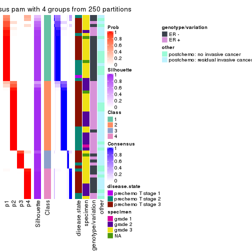
consensus_heatmap(res, k = 5)
consensus_heatmap(res, k = 6)
Heatmaps for the membership of samples in all partitions to see how consistent they are:
membership_heatmap(res, k = 2)
membership_heatmap(res, k = 3)
membership_heatmap(res, k = 4)
membership_heatmap(res, k = 5)
membership_heatmap(res, k = 6)
As soon as we have had the classes for columns, we can look for signatures which are significantly different between classes which can be candidate marks for certain classes. Following are the heatmaps for signatures.
Signature heatmaps where rows are scaled:
get_signatures(res, k = 2)
get_signatures(res, k = 3)
get_signatures(res, k = 4)
get_signatures(res, k = 5)
get_signatures(res, k = 6)
Signature heatmaps where rows are not scaled:
get_signatures(res, k = 2, scale_rows = FALSE)
get_signatures(res, k = 3, scale_rows = FALSE)
get_signatures(res, k = 4, scale_rows = FALSE)
get_signatures(res, k = 5, scale_rows = FALSE)
get_signatures(res, k = 6, scale_rows = FALSE)
Compare the overlap of signatures from different k:
compare_signatures(res)
get_signature() returns a data frame invisibly. TO get the list of signatures, the function
call should be assigned to a variable explicitly. In following code, if plot argument is set
to FALSE, no heatmap is plotted while only the differential analysis is performed.
# code only for demonstration
tb = get_signature(res, k = ..., plot = FALSE)
An example of the output of tb is:
#> which_row fdr mean_1 mean_2 scaled_mean_1 scaled_mean_2 km
#> 1 38 0.042760348 8.373488 9.131774 -0.5533452 0.5164555 1
#> 2 40 0.018707592 7.106213 8.469186 -0.6173731 0.5762149 1
#> 3 55 0.019134737 10.221463 11.207825 -0.6159697 0.5749050 1
#> 4 59 0.006059896 5.921854 7.869574 -0.6899429 0.6439467 1
#> 5 60 0.018055526 8.928898 10.211722 -0.6204761 0.5791110 1
#> 6 98 0.009384629 15.714769 14.887706 0.6635654 -0.6193277 2
...
The columns in tb are:
which_row: row indices corresponding to the input matrix.fdr: FDR for the differential test. mean_x: The mean value in group x.scaled_mean_x: The mean value in group x after rows are scaled.km: Row groups if k-means clustering is applied to rows.UMAP plot which shows how samples are separated.
dimension_reduction(res, k = 2, method = "UMAP")

dimension_reduction(res, k = 3, method = "UMAP")
dimension_reduction(res, k = 4, method = "UMAP")
dimension_reduction(res, k = 5, method = "UMAP")
dimension_reduction(res, k = 6, method = "UMAP")
Following heatmap shows how subgroups are split when increasing k:
collect_classes(res)
Test correlation between subgroups and known annotations. If the known annotation is numeric, one-way ANOVA test is applied, and if the known annotation is discrete, chi-squared contingency table test is applied.
test_to_known_factors(res)
#> n disease.state(p) specimen(p) genotype/variation(p) other(p) k
#> ATC:pam 61 0.302 0.1331 5.64e-04 0.4698 2
#> ATC:pam 59 0.625 0.0340 1.27e-06 0.2644 3
#> ATC:pam 59 0.819 0.0431 4.10e-06 0.3086 4
#> ATC:pam 58 0.759 0.0987 2.90e-08 0.0681 5
#> ATC:pam 54 0.922 0.2266 4.59e-07 0.1725 6
If matrix rows can be associated to genes, consider to use functional_enrichment(res,
...) to perform function enrichment for the signature genes. See this vignette for more detailed explanations.
The object with results only for a single top-value method and a single partition method can be extracted as:
res = res_list["ATC", "mclust"]
# you can also extract it by
# res = res_list["ATC:mclust"]
A summary of res and all the functions that can be applied to it:
res
#> A 'ConsensusPartition' object with k = 2, 3, 4, 5, 6.
#> On a matrix with 21168 rows and 61 columns.
#> Top rows (1000, 2000, 3000, 4000, 5000) are extracted by 'ATC' method.
#> Subgroups are detected by 'mclust' method.
#> Performed in total 1250 partitions by row resampling.
#> Best k for subgroups seems to be 4.
#>
#> Following methods can be applied to this 'ConsensusPartition' object:
#> [1] "cola_report" "collect_classes" "collect_plots"
#> [4] "collect_stats" "colnames" "compare_signatures"
#> [7] "consensus_heatmap" "dimension_reduction" "functional_enrichment"
#> [10] "get_anno_col" "get_anno" "get_classes"
#> [13] "get_consensus" "get_matrix" "get_membership"
#> [16] "get_param" "get_signatures" "get_stats"
#> [19] "is_best_k" "is_stable_k" "membership_heatmap"
#> [22] "ncol" "nrow" "plot_ecdf"
#> [25] "rownames" "select_partition_number" "show"
#> [28] "suggest_best_k" "test_to_known_factors"
collect_plots() function collects all the plots made from res for all k (number of partitions)
into one single page to provide an easy and fast comparison between different k.
collect_plots(res)
The plots are:
k and the heatmap of
predicted classes for each k.k.k.k.All the plots in panels can be made by individual functions and they are plotted later in this section.
select_partition_number() produces several plots showing different
statistics for choosing “optimized” k. There are following statistics:
k;k, the area increased is defined as \(A_k - A_{k-1}\).The detailed explanations of these statistics can be found in the cola vignette.
Generally speaking, lower PAC score, higher mean silhouette score or higher
concordance corresponds to better partition. Rand index and Jaccard index
measure how similar the current partition is compared to partition with k-1.
If they are too similar, we won't accept k is better than k-1.
select_partition_number(res)
The numeric values for all these statistics can be obtained by get_stats().
get_stats(res)
#> k 1-PAC mean_silhouette concordance area_increased Rand Jaccard
#> 2 2 0.564 0.912 0.929 0.4760 0.498 0.498
#> 3 3 1.000 0.979 0.986 0.4107 0.667 0.425
#> 4 4 0.969 0.968 0.977 0.0646 0.864 0.637
#> 5 5 0.793 0.601 0.816 0.0611 0.926 0.765
#> 6 6 0.750 0.702 0.834 0.0329 0.897 0.649
suggest_best_k() suggests the best \(k\) based on these statistics. The rules are as follows:
suggest_best_k(res)
#> [1] 4
#> attr(,"optional")
#> [1] 3
There is also optional best \(k\) = 3 that is worth to check.
Following shows the table of the partitions (You need to click the show/hide
code output link to see it). The membership matrix (columns with name p*)
is inferred by
clue::cl_consensus()
function with the SE method. Basically the value in the membership matrix
represents the probability to belong to a certain group. The finall class
label for an item is determined with the group with highest probability it
belongs to.
In get_classes() function, the entropy is calculated from the membership
matrix and the silhouette score is calculated from the consensus matrix.
cbind(get_classes(res, k = 2), get_membership(res, k = 2))
#> class entropy silhouette p1 p2
#> GSM590886 1 0.000 0.987 1.000 0.000
#> GSM590859 2 0.714 0.881 0.196 0.804
#> GSM590864 2 0.760 0.861 0.220 0.780
#> GSM590844 2 0.000 0.866 0.000 1.000
#> GSM590878 2 0.000 0.866 0.000 1.000
#> GSM590841 2 0.722 0.879 0.200 0.800
#> GSM590843 2 0.000 0.866 0.000 1.000
#> GSM590895 2 0.000 0.866 0.000 1.000
#> GSM590897 2 0.000 0.866 0.000 1.000
#> GSM590842 1 0.000 0.987 1.000 0.000
#> GSM590869 2 0.730 0.876 0.204 0.796
#> GSM590874 1 0.000 0.987 1.000 0.000
#> GSM590889 1 0.000 0.987 1.000 0.000
#> GSM590851 1 0.000 0.987 1.000 0.000
#> GSM590873 1 0.000 0.987 1.000 0.000
#> GSM590898 2 0.722 0.879 0.200 0.800
#> GSM590882 1 0.000 0.987 1.000 0.000
#> GSM590849 1 0.000 0.987 1.000 0.000
#> GSM590892 2 0.000 0.866 0.000 1.000
#> GSM590900 2 0.714 0.881 0.196 0.804
#> GSM590896 1 0.000 0.987 1.000 0.000
#> GSM590870 2 0.939 0.655 0.356 0.644
#> GSM590853 1 0.850 0.506 0.724 0.276
#> GSM590884 1 0.000 0.987 1.000 0.000
#> GSM590847 2 0.000 0.866 0.000 1.000
#> GSM590857 2 0.714 0.881 0.196 0.804
#> GSM590865 2 0.714 0.881 0.196 0.804
#> GSM590872 2 0.714 0.881 0.196 0.804
#> GSM590883 2 0.518 0.881 0.116 0.884
#> GSM590887 2 0.563 0.882 0.132 0.868
#> GSM590888 2 0.118 0.868 0.016 0.984
#> GSM590891 2 0.000 0.866 0.000 1.000
#> GSM590899 2 0.722 0.879 0.200 0.800
#> GSM590848 1 0.000 0.987 1.000 0.000
#> GSM590850 1 0.000 0.987 1.000 0.000
#> GSM590855 1 0.000 0.987 1.000 0.000
#> GSM590860 1 0.000 0.987 1.000 0.000
#> GSM590890 1 0.000 0.987 1.000 0.000
#> GSM590894 1 0.000 0.987 1.000 0.000
#> GSM590852 1 0.000 0.987 1.000 0.000
#> GSM590858 1 0.000 0.987 1.000 0.000
#> GSM590862 1 0.000 0.987 1.000 0.000
#> GSM590867 2 0.775 0.852 0.228 0.772
#> GSM590871 1 0.000 0.987 1.000 0.000
#> GSM590877 1 0.000 0.987 1.000 0.000
#> GSM590879 1 0.000 0.987 1.000 0.000
#> GSM590880 1 0.000 0.987 1.000 0.000
#> GSM590845 2 0.722 0.879 0.200 0.800
#> GSM590846 2 0.000 0.866 0.000 1.000
#> GSM590875 2 0.722 0.879 0.200 0.800
#> GSM590881 2 0.000 0.866 0.000 1.000
#> GSM590854 2 0.000 0.866 0.000 1.000
#> GSM590856 2 0.000 0.866 0.000 1.000
#> GSM590861 1 0.000 0.987 1.000 0.000
#> GSM590863 2 0.714 0.881 0.196 0.804
#> GSM590866 2 0.722 0.879 0.200 0.800
#> GSM590876 2 0.706 0.882 0.192 0.808
#> GSM590893 2 0.706 0.882 0.192 0.808
#> GSM590885 1 0.000 0.987 1.000 0.000
#> GSM590840 1 0.000 0.987 1.000 0.000
#> GSM590868 2 0.000 0.866 0.000 1.000
cbind(get_classes(res, k = 3), get_membership(res, k = 3))
#> class entropy silhouette p1 p2 p3
#> GSM590886 1 0.0000 0.995 1.000 0.000 0.000
#> GSM590859 2 0.0424 0.990 0.000 0.992 0.008
#> GSM590864 1 0.1529 0.954 0.960 0.040 0.000
#> GSM590844 2 0.0000 0.996 0.000 1.000 0.000
#> GSM590878 2 0.0000 0.996 0.000 1.000 0.000
#> GSM590841 3 0.0000 0.970 0.000 0.000 1.000
#> GSM590843 2 0.0000 0.996 0.000 1.000 0.000
#> GSM590895 2 0.0000 0.996 0.000 1.000 0.000
#> GSM590897 2 0.0000 0.996 0.000 1.000 0.000
#> GSM590842 1 0.0000 0.995 1.000 0.000 0.000
#> GSM590869 3 0.0000 0.970 0.000 0.000 1.000
#> GSM590874 1 0.0000 0.995 1.000 0.000 0.000
#> GSM590889 1 0.0000 0.995 1.000 0.000 0.000
#> GSM590851 1 0.0000 0.995 1.000 0.000 0.000
#> GSM590873 1 0.0000 0.995 1.000 0.000 0.000
#> GSM590898 3 0.1643 0.955 0.000 0.044 0.956
#> GSM590882 3 0.0592 0.969 0.012 0.000 0.988
#> GSM590849 3 0.1411 0.960 0.036 0.000 0.964
#> GSM590892 2 0.0000 0.996 0.000 1.000 0.000
#> GSM590900 2 0.0000 0.996 0.000 1.000 0.000
#> GSM590896 1 0.0000 0.995 1.000 0.000 0.000
#> GSM590870 3 0.0000 0.970 0.000 0.000 1.000
#> GSM590853 3 0.0000 0.970 0.000 0.000 1.000
#> GSM590884 3 0.1643 0.955 0.044 0.000 0.956
#> GSM590847 2 0.0000 0.996 0.000 1.000 0.000
#> GSM590857 2 0.0237 0.993 0.000 0.996 0.004
#> GSM590865 2 0.0237 0.993 0.000 0.996 0.004
#> GSM590872 3 0.2165 0.944 0.000 0.064 0.936
#> GSM590883 2 0.1964 0.938 0.000 0.944 0.056
#> GSM590887 3 0.4235 0.817 0.000 0.176 0.824
#> GSM590888 2 0.0000 0.996 0.000 1.000 0.000
#> GSM590891 2 0.0000 0.996 0.000 1.000 0.000
#> GSM590899 3 0.0892 0.965 0.000 0.020 0.980
#> GSM590848 1 0.0000 0.995 1.000 0.000 0.000
#> GSM590850 1 0.0000 0.995 1.000 0.000 0.000
#> GSM590855 1 0.0000 0.995 1.000 0.000 0.000
#> GSM590860 3 0.1411 0.960 0.036 0.000 0.964
#> GSM590890 1 0.0000 0.995 1.000 0.000 0.000
#> GSM590894 1 0.0000 0.995 1.000 0.000 0.000
#> GSM590852 3 0.0592 0.969 0.012 0.000 0.988
#> GSM590858 1 0.0000 0.995 1.000 0.000 0.000
#> GSM590862 1 0.1289 0.965 0.968 0.000 0.032
#> GSM590867 3 0.0000 0.970 0.000 0.000 1.000
#> GSM590871 3 0.0592 0.969 0.012 0.000 0.988
#> GSM590877 1 0.0000 0.995 1.000 0.000 0.000
#> GSM590879 1 0.0000 0.995 1.000 0.000 0.000
#> GSM590880 3 0.0592 0.969 0.012 0.000 0.988
#> GSM590845 3 0.0000 0.970 0.000 0.000 1.000
#> GSM590846 2 0.0000 0.996 0.000 1.000 0.000
#> GSM590875 3 0.1643 0.955 0.000 0.044 0.956
#> GSM590881 2 0.0000 0.996 0.000 1.000 0.000
#> GSM590854 2 0.0000 0.996 0.000 1.000 0.000
#> GSM590856 2 0.0000 0.996 0.000 1.000 0.000
#> GSM590861 3 0.0237 0.970 0.004 0.000 0.996
#> GSM590863 2 0.0000 0.996 0.000 1.000 0.000
#> GSM590866 3 0.2165 0.944 0.000 0.064 0.936
#> GSM590876 2 0.0000 0.996 0.000 1.000 0.000
#> GSM590893 3 0.2165 0.944 0.000 0.064 0.936
#> GSM590885 3 0.1529 0.959 0.040 0.000 0.960
#> GSM590840 3 0.0237 0.970 0.004 0.000 0.996
#> GSM590868 2 0.0000 0.996 0.000 1.000 0.000
cbind(get_classes(res, k = 4), get_membership(res, k = 4))
#> class entropy silhouette p1 p2 p3 p4
#> GSM590886 1 0.0000 0.991 1.000 0.000 0.000 0.000
#> GSM590859 2 0.0000 0.993 0.000 1.000 0.000 0.000
#> GSM590864 1 0.2469 0.850 0.892 0.108 0.000 0.000
#> GSM590844 2 0.0000 0.993 0.000 1.000 0.000 0.000
#> GSM590878 2 0.0000 0.993 0.000 1.000 0.000 0.000
#> GSM590841 4 0.0921 0.984 0.000 0.000 0.028 0.972
#> GSM590843 2 0.0000 0.993 0.000 1.000 0.000 0.000
#> GSM590895 2 0.0000 0.993 0.000 1.000 0.000 0.000
#> GSM590897 2 0.0000 0.993 0.000 1.000 0.000 0.000
#> GSM590842 1 0.0000 0.991 1.000 0.000 0.000 0.000
#> GSM590869 4 0.1118 0.984 0.000 0.000 0.036 0.964
#> GSM590874 1 0.0000 0.991 1.000 0.000 0.000 0.000
#> GSM590889 1 0.0000 0.991 1.000 0.000 0.000 0.000
#> GSM590851 1 0.0000 0.991 1.000 0.000 0.000 0.000
#> GSM590873 1 0.0000 0.991 1.000 0.000 0.000 0.000
#> GSM590898 4 0.0000 0.965 0.000 0.000 0.000 1.000
#> GSM590882 3 0.2530 0.905 0.000 0.000 0.888 0.112
#> GSM590849 3 0.0000 0.910 0.000 0.000 1.000 0.000
#> GSM590892 2 0.0000 0.993 0.000 1.000 0.000 0.000
#> GSM590900 2 0.0000 0.993 0.000 1.000 0.000 0.000
#> GSM590896 1 0.0000 0.991 1.000 0.000 0.000 0.000
#> GSM590870 4 0.1211 0.981 0.000 0.000 0.040 0.960
#> GSM590853 3 0.3074 0.878 0.000 0.000 0.848 0.152
#> GSM590884 3 0.3919 0.881 0.056 0.000 0.840 0.104
#> GSM590847 2 0.0000 0.993 0.000 1.000 0.000 0.000
#> GSM590857 2 0.0000 0.993 0.000 1.000 0.000 0.000
#> GSM590865 2 0.0000 0.993 0.000 1.000 0.000 0.000
#> GSM590872 2 0.1807 0.947 0.000 0.940 0.008 0.052
#> GSM590883 2 0.0000 0.993 0.000 1.000 0.000 0.000
#> GSM590887 2 0.0188 0.990 0.000 0.996 0.000 0.004
#> GSM590888 2 0.0000 0.993 0.000 1.000 0.000 0.000
#> GSM590891 2 0.0000 0.993 0.000 1.000 0.000 0.000
#> GSM590899 4 0.0921 0.984 0.000 0.000 0.028 0.972
#> GSM590848 1 0.0000 0.991 1.000 0.000 0.000 0.000
#> GSM590850 1 0.0000 0.991 1.000 0.000 0.000 0.000
#> GSM590855 1 0.0000 0.991 1.000 0.000 0.000 0.000
#> GSM590860 3 0.0000 0.910 0.000 0.000 1.000 0.000
#> GSM590890 1 0.0000 0.991 1.000 0.000 0.000 0.000
#> GSM590894 1 0.0000 0.991 1.000 0.000 0.000 0.000
#> GSM590852 3 0.2647 0.902 0.000 0.000 0.880 0.120
#> GSM590858 1 0.0000 0.991 1.000 0.000 0.000 0.000
#> GSM590862 1 0.0336 0.984 0.992 0.000 0.008 0.000
#> GSM590867 4 0.1118 0.984 0.000 0.000 0.036 0.964
#> GSM590871 3 0.0336 0.911 0.000 0.000 0.992 0.008
#> GSM590877 1 0.0000 0.991 1.000 0.000 0.000 0.000
#> GSM590879 1 0.0000 0.991 1.000 0.000 0.000 0.000
#> GSM590880 3 0.2589 0.903 0.000 0.000 0.884 0.116
#> GSM590845 4 0.1118 0.984 0.000 0.000 0.036 0.964
#> GSM590846 2 0.0000 0.993 0.000 1.000 0.000 0.000
#> GSM590875 4 0.0000 0.965 0.000 0.000 0.000 1.000
#> GSM590881 2 0.0000 0.993 0.000 1.000 0.000 0.000
#> GSM590854 2 0.0000 0.993 0.000 1.000 0.000 0.000
#> GSM590856 2 0.0000 0.993 0.000 1.000 0.000 0.000
#> GSM590861 3 0.0000 0.910 0.000 0.000 1.000 0.000
#> GSM590863 2 0.0000 0.993 0.000 1.000 0.000 0.000
#> GSM590866 2 0.1389 0.949 0.000 0.952 0.048 0.000
#> GSM590876 2 0.0000 0.993 0.000 1.000 0.000 0.000
#> GSM590893 2 0.1807 0.947 0.000 0.940 0.008 0.052
#> GSM590885 3 0.5058 0.801 0.128 0.000 0.768 0.104
#> GSM590840 3 0.0000 0.910 0.000 0.000 1.000 0.000
#> GSM590868 2 0.0000 0.993 0.000 1.000 0.000 0.000
cbind(get_classes(res, k = 5), get_membership(res, k = 5))
#> class entropy silhouette p1 p2 p3 p4 p5
#> GSM590886 1 0.3636 0.78065 0.728 0.000 0.000 0.000 0.272
#> GSM590859 2 0.0000 0.72329 0.000 1.000 0.000 0.000 0.000
#> GSM590864 2 0.5810 0.00649 0.428 0.480 0.000 0.000 0.092
#> GSM590844 2 0.0000 0.72329 0.000 1.000 0.000 0.000 0.000
#> GSM590878 2 0.4262 -0.53949 0.000 0.560 0.000 0.000 0.440
#> GSM590841 4 0.5815 0.59762 0.000 0.000 0.104 0.540 0.356
#> GSM590843 2 0.0000 0.72329 0.000 1.000 0.000 0.000 0.000
#> GSM590895 2 0.0162 0.72283 0.000 0.996 0.000 0.000 0.004
#> GSM590897 2 0.0162 0.72283 0.000 0.996 0.000 0.000 0.004
#> GSM590842 1 0.2377 0.85110 0.872 0.000 0.000 0.000 0.128
#> GSM590869 4 0.4283 0.62446 0.000 0.000 0.456 0.544 0.000
#> GSM590874 1 0.0162 0.88441 0.996 0.000 0.000 0.000 0.004
#> GSM590889 1 0.0000 0.88467 1.000 0.000 0.000 0.000 0.000
#> GSM590851 1 0.1124 0.87447 0.960 0.000 0.000 0.004 0.036
#> GSM590873 1 0.0000 0.88467 1.000 0.000 0.000 0.000 0.000
#> GSM590898 4 0.5096 0.53045 0.000 0.000 0.036 0.520 0.444
#> GSM590882 3 0.0703 0.59439 0.000 0.000 0.976 0.024 0.000
#> GSM590849 3 0.4283 0.73570 0.000 0.000 0.544 0.456 0.000
#> GSM590892 2 0.4161 -0.38687 0.000 0.608 0.000 0.000 0.392
#> GSM590900 2 0.0880 0.70400 0.000 0.968 0.000 0.000 0.032
#> GSM590896 1 0.2891 0.83176 0.824 0.000 0.000 0.000 0.176
#> GSM590870 4 0.4283 0.62446 0.000 0.000 0.456 0.544 0.000
#> GSM590853 3 0.1197 0.56352 0.000 0.000 0.952 0.048 0.000
#> GSM590884 1 0.6511 0.50218 0.516 0.000 0.228 0.004 0.252
#> GSM590847 2 0.0162 0.72283 0.000 0.996 0.000 0.000 0.004
#> GSM590857 2 0.0000 0.72329 0.000 1.000 0.000 0.000 0.000
#> GSM590865 2 0.0703 0.70787 0.000 0.976 0.000 0.000 0.024
#> GSM590872 5 0.6638 0.94967 0.000 0.416 0.036 0.096 0.452
#> GSM590883 2 0.4256 -0.55903 0.000 0.564 0.000 0.000 0.436
#> GSM590887 2 0.4268 -0.58076 0.000 0.556 0.000 0.000 0.444
#> GSM590888 2 0.3876 -0.06270 0.000 0.684 0.000 0.000 0.316
#> GSM590891 2 0.0000 0.72329 0.000 1.000 0.000 0.000 0.000
#> GSM590899 4 0.5376 0.55471 0.000 0.000 0.056 0.520 0.424
#> GSM590848 1 0.1124 0.87447 0.960 0.000 0.000 0.004 0.036
#> GSM590850 1 0.0000 0.88467 1.000 0.000 0.000 0.000 0.000
#> GSM590855 1 0.1124 0.87447 0.960 0.000 0.000 0.004 0.036
#> GSM590860 3 0.4283 0.73570 0.000 0.000 0.544 0.456 0.000
#> GSM590890 1 0.0000 0.88467 1.000 0.000 0.000 0.000 0.000
#> GSM590894 1 0.3612 0.78321 0.732 0.000 0.000 0.000 0.268
#> GSM590852 3 0.1197 0.56352 0.000 0.000 0.952 0.048 0.000
#> GSM590858 1 0.0955 0.87707 0.968 0.000 0.000 0.004 0.028
#> GSM590862 1 0.4405 0.76090 0.696 0.000 0.020 0.004 0.280
#> GSM590867 4 0.4283 0.62446 0.000 0.000 0.456 0.544 0.000
#> GSM590871 3 0.4138 0.73003 0.000 0.000 0.616 0.384 0.000
#> GSM590877 1 0.0000 0.88467 1.000 0.000 0.000 0.000 0.000
#> GSM590879 1 0.0000 0.88467 1.000 0.000 0.000 0.000 0.000
#> GSM590880 3 0.0162 0.60962 0.000 0.000 0.996 0.004 0.000
#> GSM590845 4 0.4283 0.62446 0.000 0.000 0.456 0.544 0.000
#> GSM590846 2 0.0794 0.70376 0.000 0.972 0.000 0.000 0.028
#> GSM590875 4 0.5096 0.53045 0.000 0.000 0.036 0.520 0.444
#> GSM590881 2 0.4161 -0.38687 0.000 0.608 0.000 0.000 0.392
#> GSM590854 2 0.0000 0.72329 0.000 1.000 0.000 0.000 0.000
#> GSM590856 2 0.0162 0.72283 0.000 0.996 0.000 0.000 0.004
#> GSM590861 3 0.4278 0.73626 0.000 0.000 0.548 0.452 0.000
#> GSM590863 2 0.0000 0.72329 0.000 1.000 0.000 0.000 0.000
#> GSM590866 2 0.5010 0.29835 0.000 0.688 0.000 0.088 0.224
#> GSM590876 2 0.1908 0.63860 0.000 0.908 0.000 0.000 0.092
#> GSM590893 5 0.6439 0.94786 0.000 0.436 0.036 0.076 0.452
#> GSM590885 1 0.6410 0.61212 0.576 0.000 0.156 0.020 0.248
#> GSM590840 3 0.4283 0.73570 0.000 0.000 0.544 0.456 0.000
#> GSM590868 2 0.0162 0.72283 0.000 0.996 0.000 0.000 0.004
cbind(get_classes(res, k = 6), get_membership(res, k = 6))
#> class entropy silhouette p1 p2 p3 p4 p5 p6
#> GSM590886 6 0.3221 0.8242 0.264 0.000 0.000 0.000 0.000 0.736
#> GSM590859 2 0.0260 0.8137 0.000 0.992 0.000 0.000 0.000 0.008
#> GSM590864 1 0.5165 0.4101 0.616 0.156 0.000 0.000 0.000 0.228
#> GSM590844 2 0.0000 0.8172 0.000 1.000 0.000 0.000 0.000 0.000
#> GSM590878 2 0.3390 0.5652 0.000 0.704 0.000 0.296 0.000 0.000
#> GSM590841 3 0.3862 0.3682 0.000 0.000 0.524 0.476 0.000 0.000
#> GSM590843 2 0.0000 0.8172 0.000 1.000 0.000 0.000 0.000 0.000
#> GSM590895 2 0.0000 0.8172 0.000 1.000 0.000 0.000 0.000 0.000
#> GSM590897 2 0.0146 0.8157 0.000 0.996 0.000 0.000 0.000 0.004
#> GSM590842 6 0.3578 0.7597 0.340 0.000 0.000 0.000 0.000 0.660
#> GSM590869 3 0.0146 0.7300 0.000 0.000 0.996 0.004 0.000 0.000
#> GSM590874 6 0.3789 0.5708 0.416 0.000 0.000 0.000 0.000 0.584
#> GSM590889 1 0.2854 0.6935 0.792 0.000 0.000 0.000 0.000 0.208
#> GSM590851 1 0.0363 0.8023 0.988 0.000 0.000 0.000 0.000 0.012
#> GSM590873 1 0.1765 0.8173 0.904 0.000 0.000 0.000 0.000 0.096
#> GSM590898 3 0.3868 0.3466 0.000 0.000 0.508 0.492 0.000 0.000
#> GSM590882 3 0.2513 0.6484 0.000 0.000 0.852 0.000 0.140 0.008
#> GSM590849 5 0.0000 1.0000 0.000 0.000 0.000 0.000 1.000 0.000
#> GSM590892 2 0.3351 0.5770 0.000 0.712 0.000 0.288 0.000 0.000
#> GSM590900 2 0.2092 0.7652 0.000 0.876 0.000 0.000 0.000 0.124
#> GSM590896 6 0.3221 0.8242 0.264 0.000 0.000 0.000 0.000 0.736
#> GSM590870 3 0.0146 0.7300 0.000 0.000 0.996 0.004 0.000 0.000
#> GSM590853 3 0.0405 0.7274 0.000 0.000 0.988 0.000 0.004 0.008
#> GSM590884 6 0.3121 0.7973 0.192 0.000 0.008 0.000 0.004 0.796
#> GSM590847 2 0.0000 0.8172 0.000 1.000 0.000 0.000 0.000 0.000
#> GSM590857 2 0.0260 0.8137 0.000 0.992 0.000 0.000 0.000 0.008
#> GSM590865 2 0.2092 0.7652 0.000 0.876 0.000 0.000 0.000 0.124
#> GSM590872 4 0.5818 0.2401 0.000 0.228 0.280 0.492 0.000 0.000
#> GSM590883 2 0.3390 0.5652 0.000 0.704 0.000 0.296 0.000 0.000
#> GSM590887 2 0.3390 0.5652 0.000 0.704 0.000 0.296 0.000 0.000
#> GSM590888 2 0.3468 0.5792 0.000 0.712 0.000 0.284 0.000 0.004
#> GSM590891 2 0.0000 0.8172 0.000 1.000 0.000 0.000 0.000 0.000
#> GSM590899 3 0.3868 0.3466 0.000 0.000 0.508 0.492 0.000 0.000
#> GSM590848 1 0.0146 0.7978 0.996 0.000 0.000 0.000 0.000 0.004
#> GSM590850 1 0.1910 0.8104 0.892 0.000 0.000 0.000 0.000 0.108
#> GSM590855 1 0.0146 0.7978 0.996 0.000 0.000 0.000 0.000 0.004
#> GSM590860 5 0.0000 1.0000 0.000 0.000 0.000 0.000 1.000 0.000
#> GSM590890 1 0.3547 0.3677 0.668 0.000 0.000 0.000 0.000 0.332
#> GSM590894 6 0.3330 0.8179 0.284 0.000 0.000 0.000 0.000 0.716
#> GSM590852 3 0.0405 0.7274 0.000 0.000 0.988 0.000 0.004 0.008
#> GSM590858 1 0.1387 0.8207 0.932 0.000 0.000 0.000 0.000 0.068
#> GSM590862 6 0.1918 0.6213 0.088 0.000 0.000 0.000 0.008 0.904
#> GSM590867 3 0.0146 0.7300 0.000 0.000 0.996 0.004 0.000 0.000
#> GSM590871 5 0.0000 1.0000 0.000 0.000 0.000 0.000 1.000 0.000
#> GSM590877 1 0.2260 0.7985 0.860 0.000 0.000 0.000 0.000 0.140
#> GSM590879 1 0.1556 0.8216 0.920 0.000 0.000 0.000 0.000 0.080
#> GSM590880 3 0.2946 0.6138 0.000 0.000 0.812 0.000 0.176 0.012
#> GSM590845 3 0.1500 0.7132 0.000 0.000 0.936 0.012 0.052 0.000
#> GSM590846 2 0.2527 0.7181 0.000 0.832 0.000 0.168 0.000 0.000
#> GSM590875 3 0.3868 0.3466 0.000 0.000 0.508 0.492 0.000 0.000
#> GSM590881 2 0.3351 0.5770 0.000 0.712 0.000 0.288 0.000 0.000
#> GSM590854 2 0.0260 0.8155 0.000 0.992 0.000 0.008 0.000 0.000
#> GSM590856 2 0.0000 0.8172 0.000 1.000 0.000 0.000 0.000 0.000
#> GSM590861 5 0.0000 1.0000 0.000 0.000 0.000 0.000 1.000 0.000
#> GSM590863 2 0.2048 0.7674 0.000 0.880 0.000 0.000 0.000 0.120
#> GSM590866 4 0.5017 0.0607 0.000 0.432 0.000 0.508 0.052 0.008
#> GSM590876 2 0.2092 0.7652 0.000 0.876 0.000 0.000 0.000 0.124
#> GSM590893 4 0.5598 0.3689 0.000 0.356 0.152 0.492 0.000 0.000
#> GSM590885 6 0.2784 0.7680 0.132 0.000 0.012 0.000 0.008 0.848
#> GSM590840 5 0.0000 1.0000 0.000 0.000 0.000 0.000 1.000 0.000
#> GSM590868 2 0.0000 0.8172 0.000 1.000 0.000 0.000 0.000 0.000
Heatmaps for the consensus matrix. It visualizes the probability of two samples to be in a same group.
consensus_heatmap(res, k = 2)
consensus_heatmap(res, k = 3)
consensus_heatmap(res, k = 4)

consensus_heatmap(res, k = 5)
consensus_heatmap(res, k = 6)
Heatmaps for the membership of samples in all partitions to see how consistent they are:
membership_heatmap(res, k = 2)
membership_heatmap(res, k = 3)
membership_heatmap(res, k = 4)
membership_heatmap(res, k = 5)
membership_heatmap(res, k = 6)
As soon as we have had the classes for columns, we can look for signatures which are significantly different between classes which can be candidate marks for certain classes. Following are the heatmaps for signatures.
Signature heatmaps where rows are scaled:
get_signatures(res, k = 2)
get_signatures(res, k = 3)
get_signatures(res, k = 4)
get_signatures(res, k = 5)

get_signatures(res, k = 6)
Signature heatmaps where rows are not scaled:
get_signatures(res, k = 2, scale_rows = FALSE)
get_signatures(res, k = 3, scale_rows = FALSE)

get_signatures(res, k = 4, scale_rows = FALSE)
get_signatures(res, k = 5, scale_rows = FALSE)
get_signatures(res, k = 6, scale_rows = FALSE)

Compare the overlap of signatures from different k:
compare_signatures(res)
get_signature() returns a data frame invisibly. TO get the list of signatures, the function
call should be assigned to a variable explicitly. In following code, if plot argument is set
to FALSE, no heatmap is plotted while only the differential analysis is performed.
# code only for demonstration
tb = get_signature(res, k = ..., plot = FALSE)
An example of the output of tb is:
#> which_row fdr mean_1 mean_2 scaled_mean_1 scaled_mean_2 km
#> 1 38 0.042760348 8.373488 9.131774 -0.5533452 0.5164555 1
#> 2 40 0.018707592 7.106213 8.469186 -0.6173731 0.5762149 1
#> 3 55 0.019134737 10.221463 11.207825 -0.6159697 0.5749050 1
#> 4 59 0.006059896 5.921854 7.869574 -0.6899429 0.6439467 1
#> 5 60 0.018055526 8.928898 10.211722 -0.6204761 0.5791110 1
#> 6 98 0.009384629 15.714769 14.887706 0.6635654 -0.6193277 2
...
The columns in tb are:
which_row: row indices corresponding to the input matrix.fdr: FDR for the differential test. mean_x: The mean value in group x.scaled_mean_x: The mean value in group x after rows are scaled.km: Row groups if k-means clustering is applied to rows.UMAP plot which shows how samples are separated.
dimension_reduction(res, k = 2, method = "UMAP")
dimension_reduction(res, k = 3, method = "UMAP")
dimension_reduction(res, k = 4, method = "UMAP")
dimension_reduction(res, k = 5, method = "UMAP")
dimension_reduction(res, k = 6, method = "UMAP")
Following heatmap shows how subgroups are split when increasing k:
collect_classes(res)
Test correlation between subgroups and known annotations. If the known annotation is numeric, one-way ANOVA test is applied, and if the known annotation is discrete, chi-squared contingency table test is applied.
test_to_known_factors(res)
#> n disease.state(p) specimen(p) genotype/variation(p) other(p) k
#> ATC:mclust 61 0.493 0.00224 3.70e-08 0.1460 2
#> ATC:mclust 61 0.286 0.04981 5.64e-09 0.0825 3
#> ATC:mclust 61 0.594 0.06534 1.35e-09 0.0561 4
#> ATC:mclust 53 0.880 0.26327 1.85e-07 0.0492 5
#> ATC:mclust 52 0.578 0.03918 2.44e-08 0.1324 6
If matrix rows can be associated to genes, consider to use functional_enrichment(res,
...) to perform function enrichment for the signature genes. See this vignette for more detailed explanations.
The object with results only for a single top-value method and a single partition method can be extracted as:
res = res_list["ATC", "NMF"]
# you can also extract it by
# res = res_list["ATC:NMF"]
A summary of res and all the functions that can be applied to it:
res
#> A 'ConsensusPartition' object with k = 2, 3, 4, 5, 6.
#> On a matrix with 21168 rows and 61 columns.
#> Top rows (1000, 2000, 3000, 4000, 5000) are extracted by 'ATC' method.
#> Subgroups are detected by 'NMF' method.
#> Performed in total 1250 partitions by row resampling.
#> Best k for subgroups seems to be 2.
#>
#> Following methods can be applied to this 'ConsensusPartition' object:
#> [1] "cola_report" "collect_classes" "collect_plots"
#> [4] "collect_stats" "colnames" "compare_signatures"
#> [7] "consensus_heatmap" "dimension_reduction" "functional_enrichment"
#> [10] "get_anno_col" "get_anno" "get_classes"
#> [13] "get_consensus" "get_matrix" "get_membership"
#> [16] "get_param" "get_signatures" "get_stats"
#> [19] "is_best_k" "is_stable_k" "membership_heatmap"
#> [22] "ncol" "nrow" "plot_ecdf"
#> [25] "rownames" "select_partition_number" "show"
#> [28] "suggest_best_k" "test_to_known_factors"
collect_plots() function collects all the plots made from res for all k (number of partitions)
into one single page to provide an easy and fast comparison between different k.
collect_plots(res)
The plots are:
k and the heatmap of
predicted classes for each k.k.k.k.All the plots in panels can be made by individual functions and they are plotted later in this section.
select_partition_number() produces several plots showing different
statistics for choosing “optimized” k. There are following statistics:
k;k, the area increased is defined as \(A_k - A_{k-1}\).The detailed explanations of these statistics can be found in the cola vignette.
Generally speaking, lower PAC score, higher mean silhouette score or higher
concordance corresponds to better partition. Rand index and Jaccard index
measure how similar the current partition is compared to partition with k-1.
If they are too similar, we won't accept k is better than k-1.
select_partition_number(res)
The numeric values for all these statistics can be obtained by get_stats().
get_stats(res)
#> k 1-PAC mean_silhouette concordance area_increased Rand Jaccard
#> 2 2 0.898 0.914 0.966 0.4508 0.541 0.541
#> 3 3 0.645 0.887 0.923 0.4311 0.717 0.518
#> 4 4 0.897 0.892 0.942 0.1118 0.890 0.703
#> 5 5 0.760 0.773 0.862 0.0570 0.984 0.946
#> 6 6 0.721 0.493 0.778 0.0544 0.944 0.809
suggest_best_k() suggests the best \(k\) based on these statistics. The rules are as follows:
suggest_best_k(res)
#> [1] 2
Following shows the table of the partitions (You need to click the show/hide
code output link to see it). The membership matrix (columns with name p*)
is inferred by
clue::cl_consensus()
function with the SE method. Basically the value in the membership matrix
represents the probability to belong to a certain group. The finall class
label for an item is determined with the group with highest probability it
belongs to.
In get_classes() function, the entropy is calculated from the membership
matrix and the silhouette score is calculated from the consensus matrix.
cbind(get_classes(res, k = 2), get_membership(res, k = 2))
#> class entropy silhouette p1 p2
#> GSM590886 2 0.000 0.979 0.000 1.000
#> GSM590859 2 0.000 0.979 0.000 1.000
#> GSM590864 2 0.000 0.979 0.000 1.000
#> GSM590844 2 0.000 0.979 0.000 1.000
#> GSM590878 2 0.000 0.979 0.000 1.000
#> GSM590841 2 0.000 0.979 0.000 1.000
#> GSM590843 2 0.000 0.979 0.000 1.000
#> GSM590895 2 0.000 0.979 0.000 1.000
#> GSM590897 2 0.000 0.979 0.000 1.000
#> GSM590842 1 0.506 0.835 0.888 0.112
#> GSM590869 1 0.969 0.388 0.604 0.396
#> GSM590874 2 0.000 0.979 0.000 1.000
#> GSM590889 2 0.000 0.979 0.000 1.000
#> GSM590851 1 0.000 0.931 1.000 0.000
#> GSM590873 2 0.000 0.979 0.000 1.000
#> GSM590898 2 0.000 0.979 0.000 1.000
#> GSM590882 1 0.000 0.931 1.000 0.000
#> GSM590849 1 0.000 0.931 1.000 0.000
#> GSM590892 2 0.000 0.979 0.000 1.000
#> GSM590900 2 0.000 0.979 0.000 1.000
#> GSM590896 2 0.000 0.979 0.000 1.000
#> GSM590870 1 0.000 0.931 1.000 0.000
#> GSM590853 1 0.000 0.931 1.000 0.000
#> GSM590884 1 0.000 0.931 1.000 0.000
#> GSM590847 2 0.000 0.979 0.000 1.000
#> GSM590857 2 0.000 0.979 0.000 1.000
#> GSM590865 2 0.000 0.979 0.000 1.000
#> GSM590872 2 0.000 0.979 0.000 1.000
#> GSM590883 2 0.000 0.979 0.000 1.000
#> GSM590887 2 0.000 0.979 0.000 1.000
#> GSM590888 2 0.000 0.979 0.000 1.000
#> GSM590891 2 0.000 0.979 0.000 1.000
#> GSM590899 2 0.000 0.979 0.000 1.000
#> GSM590848 1 0.000 0.931 1.000 0.000
#> GSM590850 2 0.430 0.882 0.088 0.912
#> GSM590855 1 0.000 0.931 1.000 0.000
#> GSM590860 1 0.000 0.931 1.000 0.000
#> GSM590890 2 0.000 0.979 0.000 1.000
#> GSM590894 2 0.000 0.979 0.000 1.000
#> GSM590852 1 0.000 0.931 1.000 0.000
#> GSM590858 1 0.966 0.399 0.608 0.392
#> GSM590862 2 0.833 0.607 0.264 0.736
#> GSM590867 1 0.000 0.931 1.000 0.000
#> GSM590871 1 0.000 0.931 1.000 0.000
#> GSM590877 2 0.000 0.979 0.000 1.000
#> GSM590879 1 0.978 0.347 0.588 0.412
#> GSM590880 1 0.000 0.931 1.000 0.000
#> GSM590845 1 0.000 0.931 1.000 0.000
#> GSM590846 2 0.000 0.979 0.000 1.000
#> GSM590875 2 0.000 0.979 0.000 1.000
#> GSM590881 2 0.000 0.979 0.000 1.000
#> GSM590854 2 0.000 0.979 0.000 1.000
#> GSM590856 2 0.000 0.979 0.000 1.000
#> GSM590861 1 0.000 0.931 1.000 0.000
#> GSM590863 2 0.000 0.979 0.000 1.000
#> GSM590866 1 0.000 0.931 1.000 0.000
#> GSM590876 2 0.000 0.979 0.000 1.000
#> GSM590893 2 0.000 0.979 0.000 1.000
#> GSM590885 2 0.975 0.236 0.408 0.592
#> GSM590840 1 0.000 0.931 1.000 0.000
#> GSM590868 2 0.000 0.979 0.000 1.000
cbind(get_classes(res, k = 3), get_membership(res, k = 3))
#> class entropy silhouette p1 p2 p3
#> GSM590886 1 0.3816 0.910 0.852 0.148 0.000
#> GSM590859 2 0.0237 0.937 0.004 0.996 0.000
#> GSM590864 1 0.3816 0.910 0.852 0.148 0.000
#> GSM590844 2 0.0237 0.937 0.004 0.996 0.000
#> GSM590878 2 0.0000 0.936 0.000 1.000 0.000
#> GSM590841 2 0.3879 0.833 0.000 0.848 0.152
#> GSM590843 2 0.0237 0.937 0.004 0.996 0.000
#> GSM590895 2 0.0424 0.935 0.008 0.992 0.000
#> GSM590897 2 0.0237 0.937 0.004 0.996 0.000
#> GSM590842 1 0.0000 0.872 1.000 0.000 0.000
#> GSM590869 3 0.4887 0.634 0.000 0.228 0.772
#> GSM590874 1 0.3816 0.910 0.852 0.148 0.000
#> GSM590889 1 0.3816 0.910 0.852 0.148 0.000
#> GSM590851 1 0.0424 0.867 0.992 0.000 0.008
#> GSM590873 1 0.3752 0.911 0.856 0.144 0.000
#> GSM590898 2 0.3686 0.845 0.000 0.860 0.140
#> GSM590882 3 0.2625 0.912 0.084 0.000 0.916
#> GSM590849 3 0.3816 0.906 0.148 0.000 0.852
#> GSM590892 2 0.0237 0.937 0.004 0.996 0.000
#> GSM590900 2 0.3116 0.843 0.108 0.892 0.000
#> GSM590896 1 0.3816 0.910 0.852 0.148 0.000
#> GSM590870 3 0.0237 0.897 0.000 0.004 0.996
#> GSM590853 3 0.0000 0.899 0.000 0.000 1.000
#> GSM590884 1 0.2066 0.822 0.940 0.000 0.060
#> GSM590847 2 0.0237 0.937 0.004 0.996 0.000
#> GSM590857 2 0.0237 0.937 0.004 0.996 0.000
#> GSM590865 2 0.3349 0.840 0.108 0.888 0.004
#> GSM590872 2 0.3482 0.855 0.000 0.872 0.128
#> GSM590883 2 0.0747 0.930 0.000 0.984 0.016
#> GSM590887 2 0.1643 0.915 0.000 0.956 0.044
#> GSM590888 2 0.0424 0.935 0.008 0.992 0.000
#> GSM590891 2 0.0000 0.936 0.000 1.000 0.000
#> GSM590899 2 0.3686 0.845 0.000 0.860 0.140
#> GSM590848 1 0.0237 0.869 0.996 0.000 0.004
#> GSM590850 1 0.3038 0.910 0.896 0.104 0.000
#> GSM590855 1 0.0424 0.867 0.992 0.000 0.008
#> GSM590860 3 0.3816 0.906 0.148 0.000 0.852
#> GSM590890 1 0.3816 0.910 0.852 0.148 0.000
#> GSM590894 1 0.3816 0.910 0.852 0.148 0.000
#> GSM590852 3 0.0237 0.900 0.004 0.000 0.996
#> GSM590858 1 0.1411 0.894 0.964 0.036 0.000
#> GSM590862 1 0.1753 0.899 0.952 0.048 0.000
#> GSM590867 3 0.0237 0.897 0.000 0.004 0.996
#> GSM590871 3 0.3816 0.906 0.148 0.000 0.852
#> GSM590877 1 0.3816 0.910 0.852 0.148 0.000
#> GSM590879 1 0.1289 0.892 0.968 0.032 0.000
#> GSM590880 3 0.3038 0.912 0.104 0.000 0.896
#> GSM590845 3 0.0424 0.896 0.000 0.008 0.992
#> GSM590846 2 0.0237 0.937 0.004 0.996 0.000
#> GSM590875 2 0.3619 0.848 0.000 0.864 0.136
#> GSM590881 2 0.0237 0.937 0.004 0.996 0.000
#> GSM590854 2 0.0424 0.935 0.008 0.992 0.000
#> GSM590856 2 0.0000 0.936 0.000 1.000 0.000
#> GSM590861 3 0.3816 0.906 0.148 0.000 0.852
#> GSM590863 2 0.0424 0.935 0.008 0.992 0.000
#> GSM590866 3 0.4811 0.901 0.148 0.024 0.828
#> GSM590876 2 0.6095 0.234 0.392 0.608 0.000
#> GSM590893 2 0.3116 0.871 0.000 0.892 0.108
#> GSM590885 1 0.4609 0.842 0.844 0.028 0.128
#> GSM590840 3 0.3816 0.906 0.148 0.000 0.852
#> GSM590868 2 0.0237 0.937 0.004 0.996 0.000
cbind(get_classes(res, k = 4), get_membership(res, k = 4))
#> class entropy silhouette p1 p2 p3 p4
#> GSM590886 1 0.0336 0.949 0.992 0.000 0.000 0.008
#> GSM590859 2 0.0336 0.984 0.000 0.992 0.008 0.000
#> GSM590864 1 0.1902 0.920 0.932 0.004 0.064 0.000
#> GSM590844 2 0.0000 0.988 0.000 1.000 0.000 0.000
#> GSM590878 2 0.0188 0.986 0.000 0.996 0.000 0.004
#> GSM590841 4 0.1474 0.790 0.000 0.052 0.000 0.948
#> GSM590843 2 0.0000 0.988 0.000 1.000 0.000 0.000
#> GSM590895 2 0.0000 0.988 0.000 1.000 0.000 0.000
#> GSM590897 2 0.0000 0.988 0.000 1.000 0.000 0.000
#> GSM590842 1 0.0000 0.951 1.000 0.000 0.000 0.000
#> GSM590869 4 0.0188 0.799 0.000 0.000 0.004 0.996
#> GSM590874 1 0.0188 0.950 0.996 0.000 0.000 0.004
#> GSM590889 1 0.0000 0.951 1.000 0.000 0.000 0.000
#> GSM590851 1 0.2530 0.889 0.888 0.000 0.112 0.000
#> GSM590873 1 0.0188 0.950 0.996 0.000 0.004 0.000
#> GSM590898 4 0.3157 0.732 0.004 0.144 0.000 0.852
#> GSM590882 4 0.4040 0.612 0.000 0.000 0.248 0.752
#> GSM590849 3 0.0592 0.902 0.000 0.000 0.984 0.016
#> GSM590892 2 0.0000 0.988 0.000 1.000 0.000 0.000
#> GSM590900 2 0.1109 0.968 0.004 0.968 0.028 0.000
#> GSM590896 1 0.0188 0.950 0.996 0.000 0.000 0.004
#> GSM590870 4 0.0469 0.798 0.000 0.000 0.012 0.988
#> GSM590853 4 0.0336 0.799 0.000 0.000 0.008 0.992
#> GSM590884 1 0.5358 0.580 0.700 0.000 0.048 0.252
#> GSM590847 2 0.0000 0.988 0.000 1.000 0.000 0.000
#> GSM590857 2 0.0921 0.971 0.000 0.972 0.028 0.000
#> GSM590865 2 0.2011 0.926 0.000 0.920 0.080 0.000
#> GSM590872 2 0.0188 0.986 0.000 0.996 0.000 0.004
#> GSM590883 2 0.0188 0.986 0.000 0.996 0.000 0.004
#> GSM590887 2 0.0188 0.986 0.000 0.996 0.000 0.004
#> GSM590888 2 0.0000 0.988 0.000 1.000 0.000 0.000
#> GSM590891 2 0.0000 0.988 0.000 1.000 0.000 0.000
#> GSM590899 4 0.2675 0.765 0.008 0.100 0.000 0.892
#> GSM590848 1 0.3123 0.851 0.844 0.000 0.156 0.000
#> GSM590850 1 0.0188 0.950 0.996 0.000 0.004 0.000
#> GSM590855 1 0.3074 0.854 0.848 0.000 0.152 0.000
#> GSM590860 3 0.1557 0.925 0.000 0.000 0.944 0.056
#> GSM590890 1 0.0000 0.951 1.000 0.000 0.000 0.000
#> GSM590894 1 0.0188 0.950 0.996 0.000 0.000 0.004
#> GSM590852 4 0.0336 0.798 0.000 0.000 0.008 0.992
#> GSM590858 1 0.0921 0.941 0.972 0.000 0.028 0.000
#> GSM590862 1 0.0000 0.951 1.000 0.000 0.000 0.000
#> GSM590867 4 0.3400 0.698 0.000 0.000 0.180 0.820
#> GSM590871 3 0.2081 0.920 0.000 0.000 0.916 0.084
#> GSM590877 1 0.0000 0.951 1.000 0.000 0.000 0.000
#> GSM590879 1 0.0469 0.948 0.988 0.000 0.012 0.000
#> GSM590880 4 0.3764 0.662 0.000 0.000 0.216 0.784
#> GSM590845 3 0.4277 0.704 0.000 0.000 0.720 0.280
#> GSM590846 2 0.0000 0.988 0.000 1.000 0.000 0.000
#> GSM590875 4 0.3528 0.681 0.000 0.192 0.000 0.808
#> GSM590881 2 0.0000 0.988 0.000 1.000 0.000 0.000
#> GSM590854 2 0.0000 0.988 0.000 1.000 0.000 0.000
#> GSM590856 2 0.0000 0.988 0.000 1.000 0.000 0.000
#> GSM590861 3 0.1940 0.924 0.000 0.000 0.924 0.076
#> GSM590863 2 0.1305 0.963 0.000 0.960 0.036 0.004
#> GSM590866 3 0.1109 0.878 0.000 0.028 0.968 0.004
#> GSM590876 2 0.2363 0.925 0.024 0.920 0.056 0.000
#> GSM590893 2 0.0188 0.986 0.000 0.996 0.000 0.004
#> GSM590885 4 0.4985 0.144 0.468 0.000 0.000 0.532
#> GSM590840 3 0.1716 0.925 0.000 0.000 0.936 0.064
#> GSM590868 2 0.0000 0.988 0.000 1.000 0.000 0.000
cbind(get_classes(res, k = 5), get_membership(res, k = 5))
#> class entropy silhouette p1 p2 p3 p4 p5
#> GSM590886 1 0.2338 0.808 0.884 0.000 0.000 0.004 NA
#> GSM590859 2 0.1341 0.919 0.000 0.944 0.000 0.000 NA
#> GSM590864 1 0.3969 0.703 0.692 0.004 0.000 0.000 NA
#> GSM590844 2 0.0963 0.920 0.000 0.964 0.000 0.000 NA
#> GSM590878 2 0.2561 0.868 0.000 0.856 0.000 0.000 NA
#> GSM590841 4 0.1012 0.792 0.000 0.012 0.000 0.968 NA
#> GSM590843 2 0.1270 0.918 0.000 0.948 0.000 0.000 NA
#> GSM590895 2 0.0162 0.922 0.000 0.996 0.000 0.000 NA
#> GSM590897 2 0.0000 0.921 0.000 1.000 0.000 0.000 NA
#> GSM590842 1 0.3857 0.697 0.688 0.000 0.000 0.000 NA
#> GSM590869 4 0.0510 0.792 0.000 0.000 0.000 0.984 NA
#> GSM590874 1 0.0404 0.829 0.988 0.000 0.000 0.000 NA
#> GSM590889 1 0.0703 0.828 0.976 0.000 0.000 0.000 NA
#> GSM590851 1 0.4963 0.640 0.608 0.000 0.040 0.000 NA
#> GSM590873 1 0.0510 0.829 0.984 0.000 0.000 0.000 NA
#> GSM590898 4 0.2674 0.715 0.000 0.140 0.000 0.856 NA
#> GSM590882 4 0.5176 0.479 0.008 0.000 0.280 0.656 NA
#> GSM590849 3 0.3461 0.714 0.000 0.000 0.772 0.004 NA
#> GSM590892 2 0.1124 0.921 0.004 0.960 0.000 0.000 NA
#> GSM590900 2 0.4879 0.588 0.020 0.636 0.012 0.000 NA
#> GSM590896 1 0.1792 0.815 0.916 0.000 0.000 0.000 NA
#> GSM590870 4 0.0693 0.791 0.000 0.000 0.008 0.980 NA
#> GSM590853 4 0.1082 0.787 0.000 0.000 0.008 0.964 NA
#> GSM590884 1 0.7713 0.152 0.380 0.000 0.152 0.092 NA
#> GSM590847 2 0.0963 0.920 0.000 0.964 0.000 0.000 NA
#> GSM590857 2 0.1608 0.913 0.000 0.928 0.000 0.000 NA
#> GSM590865 2 0.3146 0.865 0.000 0.856 0.052 0.000 NA
#> GSM590872 2 0.0510 0.922 0.000 0.984 0.000 0.000 NA
#> GSM590883 2 0.1043 0.914 0.000 0.960 0.000 0.000 NA
#> GSM590887 2 0.2605 0.867 0.000 0.852 0.000 0.000 NA
#> GSM590888 2 0.2629 0.871 0.004 0.860 0.000 0.000 NA
#> GSM590891 2 0.0404 0.920 0.000 0.988 0.000 0.000 NA
#> GSM590899 4 0.1997 0.783 0.000 0.036 0.000 0.924 NA
#> GSM590848 1 0.5341 0.597 0.564 0.000 0.060 0.000 NA
#> GSM590850 1 0.2068 0.820 0.904 0.000 0.004 0.000 NA
#> GSM590855 1 0.4886 0.720 0.712 0.000 0.100 0.000 NA
#> GSM590860 3 0.0000 0.838 0.000 0.000 1.000 0.000 NA
#> GSM590890 1 0.1270 0.827 0.948 0.000 0.000 0.000 NA
#> GSM590894 1 0.0963 0.827 0.964 0.000 0.000 0.000 NA
#> GSM590852 4 0.0451 0.792 0.000 0.000 0.008 0.988 NA
#> GSM590858 1 0.2286 0.815 0.888 0.000 0.004 0.000 NA
#> GSM590862 1 0.2445 0.814 0.884 0.000 0.004 0.004 NA
#> GSM590867 4 0.6337 0.329 0.000 0.000 0.296 0.512 NA
#> GSM590871 3 0.1697 0.822 0.000 0.000 0.932 0.008 NA
#> GSM590877 1 0.0290 0.830 0.992 0.000 0.000 0.000 NA
#> GSM590879 1 0.1041 0.830 0.964 0.000 0.004 0.000 NA
#> GSM590880 4 0.6710 0.200 0.000 0.000 0.304 0.424 NA
#> GSM590845 3 0.6347 0.175 0.000 0.000 0.460 0.376 NA
#> GSM590846 2 0.1410 0.916 0.000 0.940 0.000 0.000 NA
#> GSM590875 4 0.2843 0.708 0.000 0.144 0.000 0.848 NA
#> GSM590881 2 0.0404 0.923 0.000 0.988 0.000 0.000 NA
#> GSM590854 2 0.1270 0.917 0.000 0.948 0.000 0.000 NA
#> GSM590856 2 0.0963 0.920 0.000 0.964 0.000 0.000 NA
#> GSM590861 3 0.0671 0.838 0.000 0.000 0.980 0.004 NA
#> GSM590863 2 0.3728 0.743 0.000 0.748 0.008 0.000 NA
#> GSM590866 3 0.2504 0.789 0.000 0.040 0.896 0.000 NA
#> GSM590876 2 0.4479 0.745 0.072 0.744 0.000 0.000 NA
#> GSM590893 2 0.2124 0.892 0.000 0.900 0.000 0.004 NA
#> GSM590885 1 0.5579 0.468 0.620 0.000 0.000 0.264 NA
#> GSM590840 3 0.0451 0.838 0.000 0.000 0.988 0.004 NA
#> GSM590868 2 0.0290 0.921 0.000 0.992 0.000 0.000 NA
cbind(get_classes(res, k = 6), get_membership(res, k = 6))
#> class entropy silhouette p1 p2 p3 p4 p5 p6
#> GSM590886 1 0.3781 0.6356 0.756 0.000 0.204 0.004 0.000 0.036
#> GSM590859 2 0.1867 0.6096 0.000 0.916 0.020 0.000 0.000 0.064
#> GSM590864 1 0.5406 0.4001 0.500 0.000 0.120 0.000 0.000 0.380
#> GSM590844 2 0.0508 0.6375 0.000 0.984 0.004 0.000 0.000 0.012
#> GSM590878 2 0.4922 -0.7640 0.008 0.504 0.044 0.000 0.000 0.444
#> GSM590841 4 0.1508 0.7972 0.000 0.016 0.012 0.948 0.004 0.020
#> GSM590843 2 0.1074 0.6327 0.000 0.960 0.012 0.000 0.000 0.028
#> GSM590895 2 0.0937 0.6318 0.000 0.960 0.000 0.000 0.000 0.040
#> GSM590897 2 0.1387 0.6175 0.000 0.932 0.000 0.000 0.000 0.068
#> GSM590842 1 0.5120 0.6086 0.628 0.000 0.196 0.000 0.000 0.176
#> GSM590869 4 0.0551 0.7971 0.000 0.000 0.004 0.984 0.004 0.008
#> GSM590874 1 0.0717 0.7471 0.976 0.000 0.008 0.000 0.000 0.016
#> GSM590889 1 0.0777 0.7433 0.972 0.000 0.004 0.000 0.000 0.024
#> GSM590851 1 0.6149 0.5348 0.532 0.000 0.228 0.000 0.028 0.212
#> GSM590873 1 0.1719 0.7466 0.924 0.000 0.060 0.000 0.000 0.016
#> GSM590898 4 0.2076 0.7630 0.000 0.060 0.012 0.912 0.000 0.016
#> GSM590882 4 0.6173 0.2343 0.004 0.000 0.024 0.500 0.324 0.148
#> GSM590849 5 0.4399 0.4552 0.000 0.000 0.156 0.004 0.728 0.112
#> GSM590892 2 0.2645 0.5877 0.008 0.880 0.056 0.000 0.000 0.056
#> GSM590900 2 0.5365 0.0380 0.028 0.536 0.388 0.000 0.004 0.044
#> GSM590896 1 0.2740 0.7003 0.864 0.000 0.060 0.000 0.000 0.076
#> GSM590870 4 0.0291 0.7982 0.000 0.000 0.000 0.992 0.004 0.004
#> GSM590853 4 0.2816 0.7691 0.000 0.000 0.028 0.876 0.060 0.036
#> GSM590884 3 0.6499 0.5422 0.160 0.000 0.572 0.036 0.200 0.032
#> GSM590847 2 0.0405 0.6390 0.000 0.988 0.004 0.000 0.000 0.008
#> GSM590857 2 0.1297 0.6295 0.000 0.948 0.012 0.000 0.000 0.040
#> GSM590865 2 0.7138 -0.4485 0.000 0.440 0.184 0.000 0.124 0.252
#> GSM590872 2 0.1714 0.5957 0.000 0.908 0.000 0.000 0.000 0.092
#> GSM590883 2 0.4122 -0.1858 0.000 0.660 0.020 0.004 0.000 0.316
#> GSM590887 6 0.3975 0.8855 0.000 0.452 0.000 0.004 0.000 0.544
#> GSM590888 6 0.4765 0.8883 0.012 0.436 0.028 0.000 0.000 0.524
#> GSM590891 2 0.2048 0.5555 0.000 0.880 0.000 0.000 0.000 0.120
#> GSM590899 4 0.2094 0.7680 0.000 0.004 0.064 0.908 0.000 0.024
#> GSM590848 1 0.6477 0.5047 0.500 0.000 0.256 0.000 0.048 0.196
#> GSM590850 1 0.3247 0.7204 0.808 0.000 0.156 0.000 0.000 0.036
#> GSM590855 1 0.6621 0.5136 0.532 0.000 0.184 0.000 0.096 0.188
#> GSM590860 5 0.0146 0.6760 0.000 0.000 0.000 0.000 0.996 0.004
#> GSM590890 1 0.2263 0.7289 0.884 0.000 0.016 0.000 0.000 0.100
#> GSM590894 1 0.1196 0.7403 0.952 0.000 0.008 0.000 0.000 0.040
#> GSM590852 4 0.1180 0.7979 0.000 0.000 0.012 0.960 0.012 0.016
#> GSM590858 1 0.3658 0.7160 0.792 0.000 0.104 0.000 0.000 0.104
#> GSM590862 1 0.3714 0.7125 0.808 0.000 0.116 0.000 0.052 0.024
#> GSM590867 5 0.6332 -0.4872 0.000 0.000 0.356 0.204 0.420 0.020
#> GSM590871 5 0.1124 0.6561 0.000 0.000 0.036 0.000 0.956 0.008
#> GSM590877 1 0.1074 0.7495 0.960 0.000 0.012 0.000 0.000 0.028
#> GSM590879 1 0.2163 0.7377 0.892 0.000 0.092 0.000 0.000 0.016
#> GSM590880 3 0.5205 0.4151 0.000 0.000 0.520 0.096 0.384 0.000
#> GSM590845 4 0.6801 0.1235 0.000 0.000 0.096 0.428 0.348 0.128
#> GSM590846 2 0.1176 0.6275 0.000 0.956 0.020 0.000 0.000 0.024
#> GSM590875 4 0.2766 0.7062 0.000 0.124 0.004 0.852 0.000 0.020
#> GSM590881 2 0.1555 0.6196 0.004 0.932 0.004 0.000 0.000 0.060
#> GSM590854 2 0.0972 0.6309 0.000 0.964 0.008 0.000 0.000 0.028
#> GSM590856 2 0.0405 0.6387 0.000 0.988 0.004 0.000 0.000 0.008
#> GSM590861 5 0.0806 0.6694 0.000 0.000 0.020 0.000 0.972 0.008
#> GSM590863 2 0.5766 -0.2066 0.004 0.524 0.152 0.004 0.000 0.316
#> GSM590866 5 0.4009 0.3730 0.000 0.008 0.012 0.000 0.676 0.304
#> GSM590876 2 0.5767 -0.5085 0.060 0.472 0.048 0.000 0.000 0.420
#> GSM590893 2 0.3966 -0.6693 0.000 0.552 0.000 0.004 0.000 0.444
#> GSM590885 1 0.6915 0.0137 0.440 0.000 0.104 0.312 0.000 0.144
#> GSM590840 5 0.0260 0.6757 0.000 0.000 0.008 0.000 0.992 0.000
#> GSM590868 2 0.1958 0.5858 0.000 0.896 0.004 0.000 0.000 0.100
Heatmaps for the consensus matrix. It visualizes the probability of two samples to be in a same group.
consensus_heatmap(res, k = 2)
consensus_heatmap(res, k = 3)
consensus_heatmap(res, k = 4)
consensus_heatmap(res, k = 5)
consensus_heatmap(res, k = 6)
Heatmaps for the membership of samples in all partitions to see how consistent they are:
membership_heatmap(res, k = 2)
membership_heatmap(res, k = 3)

membership_heatmap(res, k = 4)
membership_heatmap(res, k = 5)
membership_heatmap(res, k = 6)
As soon as we have had the classes for columns, we can look for signatures which are significantly different between classes which can be candidate marks for certain classes. Following are the heatmaps for signatures.
Signature heatmaps where rows are scaled:
get_signatures(res, k = 2)
get_signatures(res, k = 3)
get_signatures(res, k = 4)
get_signatures(res, k = 5)
get_signatures(res, k = 6)
Signature heatmaps where rows are not scaled:
get_signatures(res, k = 2, scale_rows = FALSE)
get_signatures(res, k = 3, scale_rows = FALSE)
get_signatures(res, k = 4, scale_rows = FALSE)
get_signatures(res, k = 5, scale_rows = FALSE)
get_signatures(res, k = 6, scale_rows = FALSE)
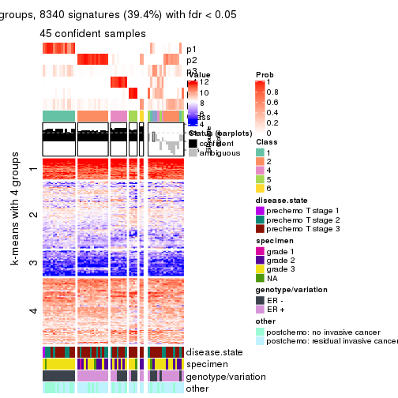
Compare the overlap of signatures from different k:
compare_signatures(res)
get_signature() returns a data frame invisibly. TO get the list of signatures, the function
call should be assigned to a variable explicitly. In following code, if plot argument is set
to FALSE, no heatmap is plotted while only the differential analysis is performed.
# code only for demonstration
tb = get_signature(res, k = ..., plot = FALSE)
An example of the output of tb is:
#> which_row fdr mean_1 mean_2 scaled_mean_1 scaled_mean_2 km
#> 1 38 0.042760348 8.373488 9.131774 -0.5533452 0.5164555 1
#> 2 40 0.018707592 7.106213 8.469186 -0.6173731 0.5762149 1
#> 3 55 0.019134737 10.221463 11.207825 -0.6159697 0.5749050 1
#> 4 59 0.006059896 5.921854 7.869574 -0.6899429 0.6439467 1
#> 5 60 0.018055526 8.928898 10.211722 -0.6204761 0.5791110 1
#> 6 98 0.009384629 15.714769 14.887706 0.6635654 -0.6193277 2
...
The columns in tb are:
which_row: row indices corresponding to the input matrix.fdr: FDR for the differential test. mean_x: The mean value in group x.scaled_mean_x: The mean value in group x after rows are scaled.km: Row groups if k-means clustering is applied to rows.UMAP plot which shows how samples are separated.
dimension_reduction(res, k = 2, method = "UMAP")
dimension_reduction(res, k = 3, method = "UMAP")
dimension_reduction(res, k = 4, method = "UMAP")
dimension_reduction(res, k = 5, method = "UMAP")
dimension_reduction(res, k = 6, method = "UMAP")
Following heatmap shows how subgroups are split when increasing k:
collect_classes(res)
Test correlation between subgroups and known annotations. If the known annotation is numeric, one-way ANOVA test is applied, and if the known annotation is discrete, chi-squared contingency table test is applied.
test_to_known_factors(res)
#> n disease.state(p) specimen(p) genotype/variation(p) other(p) k
#> ATC:NMF 57 0.349 0.2501 8.18e-03 0.6170 2
#> ATC:NMF 60 0.478 0.0187 4.01e-10 0.0527 3
#> ATC:NMF 60 0.675 0.0640 2.60e-09 0.1426 4
#> ATC:NMF 55 0.711 0.0357 5.41e-09 0.0759 5
#> ATC:NMF 46 0.802 0.0456 1.24e-06 0.2614 6
If matrix rows can be associated to genes, consider to use functional_enrichment(res,
...) to perform function enrichment for the signature genes. See this vignette for more detailed explanations.
sessionInfo()
#> R version 3.6.0 (2019-04-26)
#> Platform: x86_64-pc-linux-gnu (64-bit)
#> Running under: CentOS Linux 7 (Core)
#>
#> Matrix products: default
#> BLAS: /usr/lib64/libblas.so.3.4.2
#> LAPACK: /usr/lib64/liblapack.so.3.4.2
#>
#> locale:
#> [1] LC_CTYPE=en_GB.UTF-8 LC_NUMERIC=C LC_TIME=en_GB.UTF-8
#> [4] LC_COLLATE=en_GB.UTF-8 LC_MONETARY=en_GB.UTF-8 LC_MESSAGES=en_GB.UTF-8
#> [7] LC_PAPER=en_GB.UTF-8 LC_NAME=C LC_ADDRESS=C
#> [10] LC_TELEPHONE=C LC_MEASUREMENT=en_GB.UTF-8 LC_IDENTIFICATION=C
#>
#> attached base packages:
#> [1] grid stats graphics grDevices utils datasets methods base
#>
#> other attached packages:
#> [1] genefilter_1.66.0 ComplexHeatmap_2.3.1 markdown_1.1 knitr_1.26
#> [5] GetoptLong_0.1.7 cola_1.3.2
#>
#> loaded via a namespace (and not attached):
#> [1] circlize_0.4.8 shape_1.4.4 xfun_0.11 slam_0.1-46
#> [5] lattice_0.20-38 splines_3.6.0 colorspace_1.4-1 vctrs_0.2.0
#> [9] stats4_3.6.0 blob_1.2.0 XML_3.98-1.20 survival_2.44-1.1
#> [13] rlang_0.4.2 pillar_1.4.2 DBI_1.0.0 BiocGenerics_0.30.0
#> [17] bit64_0.9-7 RColorBrewer_1.1-2 matrixStats_0.55.0 stringr_1.4.0
#> [21] GlobalOptions_0.1.1 evaluate_0.14 memoise_1.1.0 Biobase_2.44.0
#> [25] IRanges_2.18.3 parallel_3.6.0 AnnotationDbi_1.46.1 highr_0.8
#> [29] Rcpp_1.0.3 xtable_1.8-4 backports_1.1.5 S4Vectors_0.22.1
#> [33] annotate_1.62.0 skmeans_0.2-11 bit_1.1-14 microbenchmark_1.4-7
#> [37] brew_1.0-6 impute_1.58.0 rjson_0.2.20 png_0.1-7
#> [41] digest_0.6.23 stringi_1.4.3 polyclip_1.10-0 clue_0.3-57
#> [45] tools_3.6.0 bitops_1.0-6 magrittr_1.5 eulerr_6.0.0
#> [49] RCurl_1.95-4.12 RSQLite_2.1.4 tibble_2.1.3 cluster_2.1.0
#> [53] crayon_1.3.4 pkgconfig_2.0.3 zeallot_0.1.0 Matrix_1.2-17
#> [57] xml2_1.2.2 httr_1.4.1 R6_2.4.1 mclust_5.4.5
#> [61] compiler_3.6.0